00 开篇词 为什么要学写一个操作系统？
你好，我是彭东，网名LMOS，欢迎加入我的专栏，跟我一起开启操作系统的修炼之路。
先来介绍一下我自己。我是Intel 傲腾项目开发者之一，也是《深度探索嵌入式操作系统》这本书的作者。
我曾经为Intel做过内核层面的开发工作，也对Linux、BSD、SunOS等开源操作系统，还有Windows的NT内核很熟悉。这十几年来，我一直专注于操作系统内核研发。
LMOS（基于x86平台支持多进程、多CPU、虚拟化等技术的全64位操作系统内核）跟LMOSEM（基于ARM处理器平台的嵌入式操作系统内核）是我独立开发的两套全新的操作系统内核，其中LMOS的代码规模达到了数十万行，两个系统现在仍在更新。
当时是基于兴趣和学习的目的开始了这两套操作系统，在这个过程中，我遇到了各种各样的技术问题，解决了诸多疑难杂症，总结了大量的开发操作系统的方法和经验。非常希望能在这个专栏与你一起交流。
每个工程师都有必要学好操作系统吗？
经常会有同学问我这样一些问题：我是一个做应用层开发的工程师，有必要学习操作系统吗？我的日常工作中，好像用不到什么深奥的操作系统内核知识，而且大学时已经学过了操作系统课程，还有必要再学吗？
对于这些问题，我的答案当然是“有必要”。至于理由么，请听我慢慢为你道来。
你是否也跟我一样，曾经在一个数千万行代码的大项目中茫然失措？一次次徘徊在内存为什么会泄漏、服务进程为什么会dang掉、文件为什么打不开等一系列“基础”问题的漩涡中？
你是否惊叹于Nginx的高并发性？是不是感觉Golang的垃圾回收器真的很垃圾？除了这样的感叹，你也许还好奇过这样一些问题：MySQL的I/O性能还能不能再提升？网络服务为什么会掉线？Redis中经典的Reactor设计模式靠什么技术支撑？Node.js 的 I/O 模型长什么模样……
如果你也追问过上面的这些问题，那这会儿我也差不多可以给充满求知欲的你指一条“明路”了。这些都将在后面的学习中，找到答案。
为什么说操作系统很重要？
首先我们都知道，操作系统是所有软件的基础，所有上层软件都要依赖于操作系统提供的各种机制，才能运行。
而我在工作中也认识了很多技术大牛，根据我的观察，他们的基本功往往十分扎实，这对他们的架构视野、技术成长都十分有帮助。
如果你是后端工程师，在做高性能服务端编程的时候，内存、进程、线程、I/O相关的知识就会经常用到。还有，在做一些前端层面的性能调优时，操作系统相关的一些知识更是必不可少。
除了Web开发，做高性能计算超级计算机的时候，操作系统内核相关的开发能力也至关重要。其实，即使单纯的操作系统内核相关的开发能力，对于工程师来说也是绕不过的基本功。
对于运维、测试同学，你要维护和测试的任何产品，其实是基于操作系统的。比如给服务配置多大的内存、多大的缓存空间？怎样根据操作系统给出的信息，判断服务器的问题出现在哪里。随着你对操作系统的深入理解和掌握，你才能透过现象看本质，排查监控思路也会更开阔。
除了工作，操作系统离我们的生活也并不遥远，甚至可以说是息息相关。要知道，操作系统其实不仅仅局限于手机和电脑，你的智能手表、机顶盒、路由器，甚至各种家电中都运行着各种各样的操作系统。
可以说，操作系统作为计算机的灵魂，眼前的工作、日常的生活，甚至这个行业未来的“诗与远方”都离不开它。
操作系统很难，我能学得会么？
但即使是大学时期就学过操作系统的同学，也可能会感觉学得云里雾里。更别说非科班的一些人，难度更甚，甚至高不可攀。那为什么我这么有信心，给你讲好操作系统这门课呢？这还要从我自己的学习经历说起。
跟许多人一样，我看的第一本C教程就是那本“老谭C”。看了之后，除了能写出那个家喻户晓的“hello world”程序，其它什么也干不了。接着我又开始折腾C++、Java，结果如出一辙，还是只能写个“hello world”程序。
还好我有互联网，它让我发现了数据结构与算法，经过一番学习，后来我总算可以写一些小功能的软件了，但或许那根本就称不上功能。既然如此，我就继续折腾，继续学习微机原理、汇编语言这些内容。
最后我终于发现，操作系统才是我最想写的软件。我像着了魔一样，一切操作系统、硬件层相关的书籍都找来看。
有了这么多的“输入”，我就想啊，既然是写操作系统，为什么不能把这些想法用代码实现出来，放在真正的计算机上验证一下呢？
LMOS的雏形至此诞生。从第一行引导代码开始，一次又一次代码重构，一次又一次地面对莫名的死机而绝望，倒逼我不断改进，最终才有了现在的LMOS。因为一个人从零开始，独立开发操作系统这种行为有点疯狂，我索性就用LMOS（liberty，madness，operating，system）来命名了我的操作系统。
经过我这几年的独立开发，现在LMOS已经发布了8个测试版本。先后从32位单CPU架构发展到64位多CPU架构，现在的LMOS已经是多进程、多线程、多CPU、支持虚拟内存的x86_64体系下的全64位操作系统内核，代码量已经有10万多行了。
后来，我又没忍住自己的好奇心，写了个嵌入式操作系统——LMOSEM。由于有了先前的功底，加上ARM体系很简单，所以我再学习和实现嵌入式操作系统时，就感觉驾轻就熟了。
经过跋山涉水，我再回头来看，很容易就发现了为什么操作系统很难学。
操作系统需要你有大量的知识储备，但是现在大多的课程、学习资料，往往都是根据目前已有的一些操作系统，做局部解读。所以，我们学的时候，前后的知识是无法串联在一起的。结果就会越看越迷惑，不去查吧，看不懂，再去搜索又加重了学习负担，最后只能遗憾放弃。
那怎样学习操作系统才是最高效的呢？理论基础是要补充的，但相对来说，实践更为重要。我认为，千里之行还得始于足下。
所以，通过这个专栏，我会带你从无到有实现一个自己的操作系统。
我会使用大量的插图代码和风趣幽默的段子，来帮助你更好地理解操作系统内核的本质。同时在介绍每个内核组件实现时，都会先给你说明白为什么，带着你基于设计理解去动手实现；然后，再给你详细描述Linux内核对应的实现，做前后对比。这样既能让你边学边练，又能帮你从“上帝视角”审视Linux内核。
我们课程怎么安排的？
操作系统作为计算机王国的权力中枢，我们的课程就是讲解如何实现它。
为此，我们将从了解计算机王国的资源开始，如CPU、MMU、内存和Cache。其次要为这个权力中枢设计基本法，即各种同步机制，如信号量与自旋锁。接着进行夺权，从固件程序的手中抢过计算机并进行初始化，其中包含初始化CPU、内存、中断、显示等。
然后，开始建设中枢的各级部门，它们分别是内存管理部门、进程管理部门、I/O管理部门、文件管理部门、通信管理部门。最后将这些部门组合在一起，就形成了计算机王国的权力中枢——操作系统。
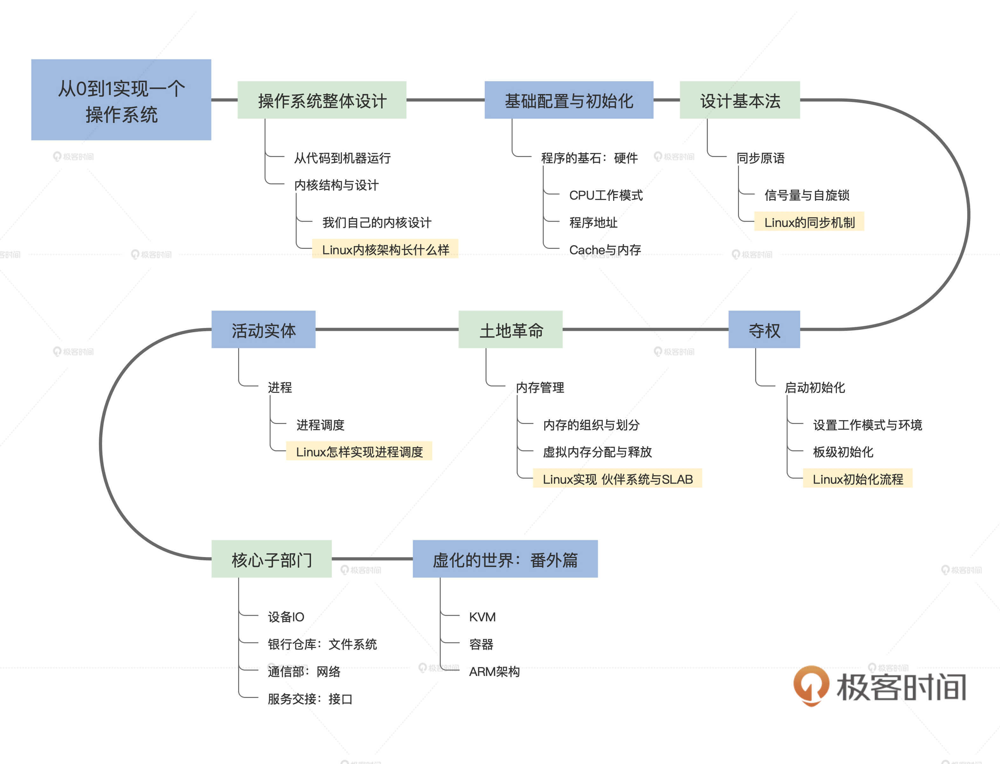
我们的课程就是按照上述逻辑，依次为你讲解这些部门的实现过程和细节。每节课都配有可以工作的代码，让你能跟着课程一步步实现。你也可以直接使用我提供的代码一步步调试，直到最终实现一个基于x86平台的64位多进程的操作系统——Cosmos。
你能获得什么？
走这样一条“明路”，一步一个脚印，最终你会到达这样一个目的地：拥有一个属于自己的操作系统内核，同时收获对Linux内核更深入的理解。
学完这门课，你会明显提升操作系统架构设计能力，并且可以学会系统级别的软件编程技巧。我相信，这对你拓展技术深度和广度是大有裨益的。之后你在日常开发中遇到问题的时候，就可以尝试用更多维度的能力去解决问题了。
同时，由于操作系统内核是有核心竞争力的高技术含量软件，这能给你职业生涯的成长带来长远的帮助。如今，在任何一家中大型互联网公司都使用大量的Linux服务器。
操作系统相关的内容，已经成为你涨薪、晋升的必考项，比如 Linux 内核相关的技术，中断、I/O、网络、多线程、并发、性能、内存管理、系统稳定性、文件系统、容器和虚拟化等等，这些核心知识都来源于操作系统。
而跳出个人，从大局观出发的话，计算机作为20世纪以来人类最伟大的发明之一，已经深入人们生活的方方面面，而计算机系统作为国家级战略基础软件，却受制于人，这关系到整个国家的信息安全，也关系到互联网信息行业以及其它相关基础行业的前途和未来。
而要改变这一困局，就要从培养技术人才开始。对于我们工程师来说，树高叶茂，系于根深，只有不断升级自己的认知，才能让你的技术之路行稳致远。
下面，我给出一个简化的操作系统知识体系图，也是后面课程涉及到的所有知识点。尽管图中只是最简短的一些词汇，但随着课程的展开，你会发现图中的每一小块，都犹如一片汪洋。
现在让我们一起带着好奇，带着梦想，向星辰大海进发！
课程交流群点这里加入。
00 编辑手记 升级认知，迭代自己的操作系统
你好，我是宇新，《操作系统实战45讲》的专栏编辑。
除了负责更新课程里的内容，我也一直关注着小伙伴们的留言。这次，终于有机会自己也留一回言了，很开心能用编辑手记的方式，和你聊一聊我的想法。
这门课的独特之处
细心的小伙伴可能发现了，我们的开篇词标题是“为什么要学写一个操作系统？”注意，不只是学操作系统，而是学着去“写”一个操作系统。
你可能还会想，平时我们接触不到的“黑盒子”，现在却要我们自己写代码实现，听起来很有挑战啊？为什么会这样设计呢，且听我慢慢道来。
操作系统博大精深，甚至每个子模块单拿出来讲，都有无数的知识点，太容易只见树木不见森林。但用一个实战项目连起来的话，就能很好地帮助我们聚焦关键问题。
看似“写”操作系统，这是把难度升级了，其实是为了控制我们的作战范围。写操作系统的时候，涉及哪些关键要点，我们就相应地学习研究这部分内容。
现在成熟的操作系统，像是Linux系统，它的源码量级已是今非昔比，我们去看源代码总会晕头转向。但老师的课程像是一条线，把实战需要的东西都展示出来，想要深入研究的同学建议对照查漏补缺，然后继续跟着课程走，这样才能实现“螺旋式”进步。
如果你也喜欢玩游戏的话，估计有这样的体验，把游戏调成了无敌模式，很容易就会索然无味。没错，有挑战的游戏才好玩。有时候卡在某一处确实很痛苦，但是突破以后也会爽。你不妨把自己当作玩家，去攻克一个个操作系统的关卡。当然了，你也不是孤军奋战，遇到疑问，还可以通过学习、交流和讨论去解决。
课程的思路我就说到这里，如果你感兴趣，还可以看看我们的课程设计文档。
更多课程设计的缘起，也可以看看LMOS老师好友Yason Lee的解读：《大咖助场｜以无法为有法，以无限为有限》。
怎样学习这门课
课程上线以后啊，LMOS老师跟我都在关注大家的留言反馈。
学习这门课的同学身份各异，从学生党到已经退休的朋友都有，但共同特点就是对操作系统充满热情，因为这样一个专栏而结缘。无论是在课程交流群，还是课程留言区里，这两个疑问算是高频出现的。
- 学习这门课，我需要什么前置知识？
- 某个问题/知识点好难啊，我该怎么办？
这里我就从编辑的视角说说我的看法吧。
先说第一个问题，需要什么基础。我一直在琢磨这个问题背后的含义。同学们的水平参差不齐，有畏难心理这很正常，你学习课程的时候，其实是明确了自己哪里“不会”，换个角度想，这样学习的时候不就能有的放矢了么？
不少同学担心自己不是科班出身，其实LMOS也不是科班出身的，这些历史问题还是翻篇更好，你过去怎么样，并不代表你之后不可以学习、研究操作系统。而且，就算是计算机相关专业的同学，可能学生时代上的操作系统课程也没留下特别深刻的印象，考完试就还给老师的，也大有人在。
现在还没有看完的同学也不要着急，因为更新的速度肯定要比你们的学习速度快上不少。你需要做的是按照课程顺序持续学习，慢慢来，遇到不懂的，就多看几篇，多看几遍。
课代表陈诚同学说过一句话，我记得特别深，他是这么说的：
“其实，我觉得我们想学写操作系统，有时候是为了一碟醋包了一顿饺子，但是最终饺子是自己的了。”
我注意到有不少小伙伴为了打牢基础，为了跟上课程，去补充了汇编、C语言，以及计算机组成原理方面的知识，我要给这些人点赞。
但是，就算你没有把那些图书从头看到尾，其实也同样可以跟着课程，循序渐进地学习。建议你边学边练，动手跑起来。哪怕最初你只能复制老师给的配套代码，但是只要肯用心，也会对操作系统有更深的理解。与其苦恼于自己基础不行，不如踏踏实实去学习精进。
为了让你明确每个模块的内容重点和难易程度，我为你整理了一张表格，你可以做个参考。
如果你还是想把操作系统的相关资料也都一并啃下来，那可以看看LMOS提供的参考书单，在学有余力的情况下拓展阅读。
1.关于编译工具：LD手册、GAS手册、GCC手册、nasm手册、make手册；
2.关于GRUB：GRUB手册；
3.关于CPU：Intel手册；
4.关于汇编：《汇编程序设计》；
5.关于C语言：《C语言程序设计现代方法》；
6.关于操作系统：《操作系统设计与实现》。
如果你想参考优秀课代表的学习经验与方法，可以参考后面这些用户故事。
1.零基础yiyang同学的课程实战经验；
2.优秀课代表pedro的技术学习方法；
3.技术发烧友spring Xu的课程学习思考；
4.安全产品研发leveryd的动态调试学习法；
5.课程优质笔记分享达人neohope的访谈加餐：技术学习与职业成长方法论。
下面我再说说第二个问题，当你具体学习的时候，觉得某个知识点很难，应该怎么办？对于这个问题我想给你分享三个小建议。
第一个建议就是做好心理建设。
就拿不少同学都觉得头疼的内存管理来说吧。其实当时我在看这部分稿件的时候，也觉得压力山大。记得当时LMOS老师还鼓励我说，挺过去就好了。现在你看到的内存章节，其中16～18讲原先是一整块的内容，我们经过讨论优化，考虑让大伙儿更容易跟上，才拆分细化成了三节课。
内存是内核的内核，肯定很难。不过就像英语单词不能永远背到“abandon”一样，想要深入地探索操作系统，这关必须迎难而上。
以第19课如何管理内存对象为例，不知道你看没看到置顶评论中“neohope”同学的学习笔记，建议重点关注一下他抓“关键”内容的能力。
古语说，不积跬步无以至千里。你可能会怀疑自己，但不必过度焦虑。如果咱们因为差距过大，而陷入弃疗状态，那就太可惜了。哪怕是“大佬”，也曾有萌新时期，基础不好就慢慢跟进。
第二个建议就是明确自己的需求，按需学习。
虽然没有什么“跳关”秘籍，但还是有些技巧让你快速掌握一节课内容的。没错，就像数据结构一样，每节课也有“内容结构”，想要快速消化，可以着重理一理后面这几点：
- 这个模块/这节课要解决什么问题（What）
- 思路是什么/ 为什么要这么解决（Why）
- 具体如何用代码实现（How）
你还可以自己动手用流程图画一下（pedro同学推荐了此方法，你可以试试绘图工具 Graph-Easy），这样不容易迷路。
当然，如果你已经有不少的学习积累，或者目的不在于“全景浏览”和“扫盲”，而是想要更加深入，那你必然要花费更多苦工。操作系统是星辰大海，建议以你困惑的问题为导向，进行专项突破。
比如，第23节课 Slab 内存对象，来自课程交流 1 群的zzyj同学就分享了Slab作者写的参考文献，你不妨搭配使用。
我的第三个建议是，积极交流，在反馈和记录中激励自己。
虽然学习方法重要，但我们也不要沉迷于把时间消耗在“找方法”上。很可能“优质方法”给你节省的时间，还赶不上你在找方法这件事上花掉的时间。
一人计短，众人计长，我们课程开设留言区，在部落开话题（推荐你在话题下分享自己的学习收获，晒一晒实战截图），搭建用户交流群，就是为了让你的学习之旅不再孤单，让我们在分享交流中一同进步。
除了多交流，我也强烈推荐你学习留痕，把你的阶段性学习成果、经验记录下来，这些都能激励自己坚持学习。都说闻道有先后，术业有专攻。百科全书式的人毕竟是少数，但爱学习的小伙伴总会遇到志同道合的朋友。
今天的提问者，也许明天就有能力给别人解答问题了，这就是教学相长。我们的助教 Jason提到：
“教别人是个沟通的过程，各种感官都会调度起来。调度越多，大脑参与理解记忆的部分就越多，以后回忆起来，搜索路径就越多。光看的话，只是眼睛。这跟实践出真知，道理类似。”
古语有云“读书有三到：谓心到，眼到，口到。”有了主动输出，可以带动你整理自己的理解，还锻炼了表达沟通能力，一举多得。
总之，你可以把这个专栏作为导航，但驾驶位你必须自己坐。临渊羡鱼，不如退而结网，坚持学习和实践，相信你会不虚此行。
1号用户的独家体验
说了这么多，最后我还想说说做这门课的感受。从5月10日上线到现在，这个专栏已经伴随你3个月的时间了。不过，作为享受了抢先阅读福利的编辑，我这个1号用户跟这个专栏共度的时间要更久一些，算上专栏的前期沟通、筹备、打磨这些环节一共8个月。
记得LMOS跟我说过，当年他写书的时候，用了13个月写完了22万字，而专栏里只算课程内容文字就超过了这个数字，但我们却是用了8个月跑完了这场“马拉松”。当然，老师的工作量远不止这些，就比如Cosmos配套代码的设计跟实现，同样是一个极具挑战的大工程。
说句题外话，LMOS兴趣广泛，爱好文学、音乐。日常写代码之余，他还会拍各种好看的照片（能当壁纸的那种），还是一个被代码“耽误”的摄影师。
但是他一旦进入工作状态，就会非常负责。操作系统的知识体量很大，为了把内容讲得更清楚，就需要老师花很多功夫对内容反复修订。除了对内容品质的高要求，老师也非常乐意回应大家的问题，在课程交流群里也很活跃。
LMOS身体力行地给我上了一课，我确实被他的热情打动了，也希望这份热情能够通过专栏传递给你。
最后我想和你说的是，积极学习，但不要盲目轻信。我们在第4节课分析各种操作系统特点的时候，老师有条留言回复是这样说的：
“保持中立，务实求真，对比之下，方见真章。”
这让我发现，学习就是我们把自己当作一个“操作系统”，保持理性，客观公正，而且要不断优化自己对外界信息的整合能力，升级自己的思考方式。
知识不懂，借助搜索工具就能较快填补，但思维方式的迭代，还有经验洞见的积累，却需要长时间的努力。课程更新结束了，但我们的学习之旅还很漫长。升级认知，迭代自己的操作系统，这需要长期坚持。
另外，Cosmos项目现在已经开源，也欢迎大家加入其中。希望《操作系统实战45讲》成为一座灯塔，为你指路，给你带来新鲜的认知，成为你探索星辰大海的引路者，加油！
01 程序的运行过程：从代码到机器运行
你好，我是LMOS。
欢迎来到操作系统第一课。在真正打造操作系统前，有一条必经之路：你知道程序是如何运行的吗？
一个熟练的编程老手只需肉眼看着代码，就能对其运行的过程了如指掌。但对于初学者来说，这常常是很困难的事，这需要好几年的程序开发经验，和在长期的程序开发过程中对编程基本功的积累。
我记得自己最初学习操作系统的时候，面对逻辑稍微复杂的一些程序，在编写、调试代码时，就会陷入代码的迷宫，找不到东南西北。
不知道你现在处在什么阶段，是否曾有同样的感受？我常常说，扎实的基本功就像手里的指南针，你可以一步步强大到不依赖它，但是不能没有。
因此今天，我将带领你从“Hello World”起，扎实基本功，探索程序如何运行的所有细节和原理。这节课的配套代码，你可以从这里下载。
一切要从牛人做的牛逼事说起
第一位牛人，是世界级计算机大佬的传奇——Unix之父Ken Thompson。
在上世纪60年代的一个夏天，Ken Thompson的妻子要回娘家一个月。呆在贝尔实验室的他，竟然利用这极为孤独的一个月，开发出了UNiplexed Information and Computing System（UNICS）——即UNIX的雏形，一个全新的操作系统。
要知道，在当时C语言并没有诞生，从严格意义上说，他是用B语言和汇编语言在PDP-7的机器上完成的。
牛人的朋友也是牛人，他的朋友Dennis Ritchie也随之加入其中，共同创造了大名鼎鼎的C语言，并用C语言写出了UNIX和后来的类UNIX体系的几十种操作系统，也写出了对后世影响深远的第一版“Hello World”：
#include "stdio.h"
int main(int argc, char const *argv[])
{
printf("Hello World!\n");
return 0;
}
计算机硬件是无法直接运行这个C语言文本程序代码的，需要C语言编译器，把这个代码编译成具体硬件平台的二进制代码。再由具体操作系统建立进程，把这个二进制文件装进其进程的内存空间中，才能运行。
听起来很复杂？别急，接着往下看。
程序编译过程
我们暂且不急着摸清操作系统所做的工作，先来研究一下编译过程和硬件执行程序的过程，约定使用GCC相关的工具链。
那么使用命令：gcc HelloWorld.c -o HelloWorld 或者 gcc ./HelloWorld.c -o ./HelloWorld ，就可以编译这段代码。其实，GCC只是完成编译工作的驱动程序，它会根据编译流程分别调用预处理程序、编译程序、汇编程序、链接程序来完成具体工作。
下图就是编译这段代码的过程：

其实，我们也可以手动控制以上这个编译流程，从而留下中间文件方便研究：
- gcc HelloWorld.c -E -o HelloWorld.i预处理：加入头文件，替换宏。
- gcc HelloWorld.c -S -c -o HelloWorld.s编译：包含预处理，将C程序转换成汇编程序。
- gcc HelloWorld.c -c -o HelloWorld.o汇编：包含预处理和编译，将汇编程序转换成可链接的二进制程序。
- gcc HelloWorld.c -o HelloWorld链接：包含以上所有操作，将可链接的二进制程序和其它别的库链接在一起，形成可执行的程序文件。
程序装载执行
对运行内容有了了解后，我们开始程序的装载执行。
我们将请出第三位牛人——大名鼎鼎的阿兰·图灵。在他的众多贡献中，很重要的一个就是提出了一种理想中的机器：图灵机。
图灵机是一个抽象的模型，它是这样的：有一条无限长的纸带，纸带上有无限个小格子，小格子中写有相关的信息，纸带上有一个读头，读头能根据纸带小格子里的信息做相关的操作并能来回移动。
文字叙述还不够形象，我们来画一幅插图：

不理解？下面我再带你用图灵机执行一下“1+1=2”的计算，你就明白了。我们定义读头读到“+”之后，就依次移动读头两次并读取格子中的数据，最后读头计算把结果写入第二个数据的下一个格子里，整个过程如下图：
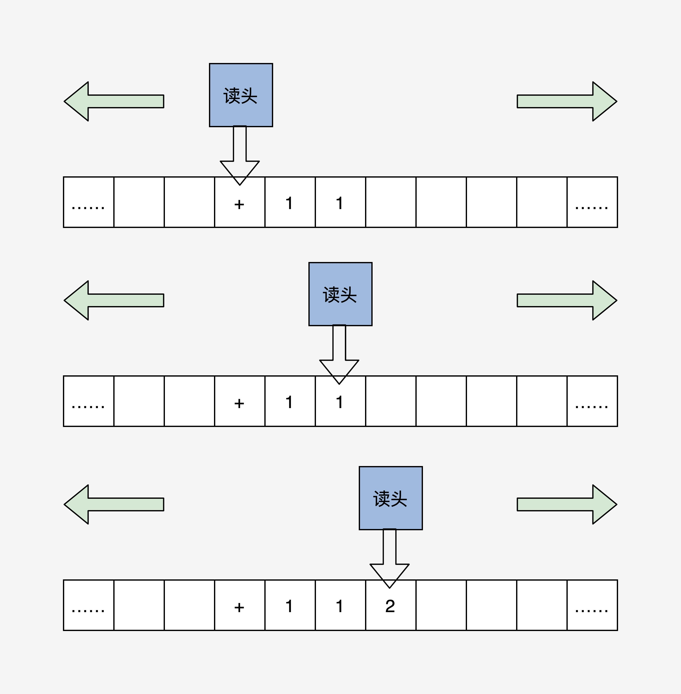
这个理想的模型是好，但是理想终归是理想，想要成为现实，我们得想其它办法。
于是，第四位牛人来了，他提出了电子计算机使用二进制数制系统和储存程序，并按照程序顺序执行，他叫冯诺依曼，他的电子计算机理论叫冯诺依曼体系结构。
根据冯诺依曼体系结构构成的计算机，必须具有如下功能：
- 把程序和数据装入到计算机中；
- 必须具有长期记住程序、数据的中间结果及最终运算结果；
- 完成各种算术、逻辑运算和数据传送等数据加工处理；
- 根据需要控制程序走向，并能根据指令控制机器的各部件协调操作；
- 能够按照要求将处理的数据结果显示给用户。
为了完成上述的功能，计算机必须具备五大基本组成部件：
- 装载数据和程序的输入设备；
- 记住程序和数据的存储器；
- 完成数据加工处理的运算器；
- 控制程序执行的控制器；
- 显示处理结果的输出设备。
根据冯诺依曼的理论，我们只要把图灵机的几个部件换成电子设备，就可以变成一个最小核心的电子计算机，如下图：
是不是非常简单？这次我们发现读头不再来回移动了，而是靠地址总线寻找对应的“纸带格子”。读取写入数据由数据总线完成，而动作的控制就是控制总线的职责了。
更形象地将HelloWorld程序装入原型计算机
下面，我们尝试将HelloWorld程序装入这个原型计算机，在装入之前，我们先要搞清楚HelloWorld程序中有什么。
我们可以通过gcc -c -S HelloWorld得到（只能得到其汇编代码，而不能得到二进制数据）。我们用objdump -d HelloWorld程序，得到/lesson01/HelloWorld.dump，其中有很多库代码（只需关注main函数相关的代码），如下图：
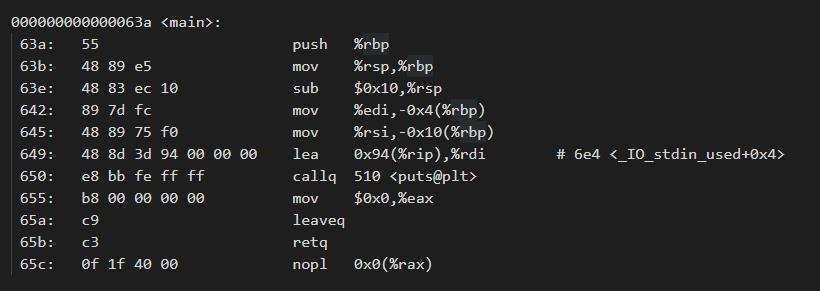
以上图中，分成四列：第一列为地址；第二列为十六进制，表示真正装入机器中的代码数据；第三列是对应的汇编代码；第四列是相关代码的注释。这是x86_64体系的代码，由此可以看出x86 CPU是变长指令集。
接下来，我们把这段代码数据装入最小电子计算机，状态如下图：

重点回顾
以上，对应图中的伪代码你应该明白了：现代电子计算机正是通过内存中的信息（指令和数据）做出相应的操作，并通过内存地址的变化，达到程序读取数据，控制程序流程（顺序、跳转对应该图灵机的读头来回移动）的功能。
这和图灵机的核心思想相比，没有根本性的变化。只要配合一些I/O设备，让用户输入并显示计算结果给用户，就是一台现代意义的电子计算机。
到这里，我们理清了程序运行的所有细节和原理。还有一点，你可能有点疑惑，即printf对应的puts函数，到底做了什么？而这正是我们后面的课程要探索的！
思考题
为了实现C语言中函数的调用和返回功能，CPU实现了函数调用和返回指令，即上图汇编代码中的“call”，“ret”指令，请你思考一下：call和ret指令在逻辑上执行的操作是怎样的呢？
期待你在留言区跟我交流互动。如果这节课对你有所启发，也欢迎转发给你的朋友、同事，跟他们一起学习进步。
02 几行汇编几行C：实现一个最简单的内核
你好，我是LMOS。
我们知道，在学习许多编程语言一开始的时候，都有一段用其语言编写的经典程序——Hello World。这不过是某一操作系统平台之上的应用程序，却心高气傲地问候世界。
而我们学习操作系统的时候，那么也不妨撇开其它现有的操作系统，基于硬件，写一个最小的操作系统——Hello OS，先练练手、热热身，直观感受一下。
本节课的配套代码，你可以从这里下载。
请注意，这节课主要是演示思路，不要求你马上动手实现。详细的环境安装、配置我们到第十节课再详细展开。有兴趣上手的同学，可以参考留言区置顶的实验笔记探索。
PC机的引导流程
看标题就知道，写操作系统要用汇编和C语言，尽管这个Hello OS很小，但也要用到两种编程语言。其实，现有的商业操作系统都是用这两种语言开发出来的。
先不用害怕，Hello OS的代码量很少。
其实，我们也不打算从PC的引导程序开始写起，原因是目前我们的知识储备还不够，所以先借用一下GRUB引导程序，只要我们的PC机上安装了Ubuntu Linux操作系统，GRUB就已经存在了。这会大大降低我们开始的难度，也不至于打消你的热情。

那在写Hello OS之前，我们先要搞清楚Hello OS的引导流程，如下图所示：

简单解释一下，PC机BIOS固件是固化在PC机主板上的ROM芯片中的，掉电也能保存，PC机上电后的第一条指令就是BIOS固件中的，它负责检测和初始化CPU、内存及主板平台，然后加载引导设备（大概率是硬盘）中的第一个扇区数据，到0x7c00地址开始的内存空间，再接着跳转到0x7c00处执行指令，在我们这里的情况下就是GRUB引导程序。
当然，更先进的UEFI BIOS则不同，这里就不深入其中了，你可以通过链接自行了解。
Hello OS引导汇编代码
明白了PC机的启动流程，下面只剩下我们的Hello OS了，我们马上就去写好它。
我们先来写一段汇编代码。这里我要特别说明一个问题：为什么不能直接用C？
C作为通用的高级语言，不能直接操作特定的硬件，而且C语言的函数调用、函数传参，都需要用栈。
栈简单来说就是一块内存空间，其中数据满足后进先出的特性，它由CPU特定的栈寄存器指向，所以我们要先用汇编代码处理好这些C语言的工作环境。
;彭东 @ 2021.01.09
MBT_HDR_FLAGS EQU 0x00010003
MBT_HDR_MAGIC EQU 0x1BADB002 ;多引导协议头魔数
MBT_HDR2_MAGIC EQU 0xe85250d6 ;第二版多引导协议头魔数
global _start ;导出_start符号
extern main ;导入外部的main函数符号
[section .start.text] ;定义.start.text代码节
[bits 32] ;汇编成32位代码
_start:
jmp _entry
ALIGN 8
mbt_hdr:
dd MBT_HDR_MAGIC
dd MBT_HDR_FLAGS
dd -(MBT_HDR_MAGIC+MBT_HDR_FLAGS)
dd mbt_hdr
dd _start
dd 0
dd 0
dd _entry
;以上是GRUB所需要的头
ALIGN 8
mbt2_hdr:
DD MBT_HDR2_MAGIC
DD 0
DD mbt2_hdr_end - mbt2_hdr
DD -(MBT_HDR2_MAGIC + 0 + (mbt2_hdr_end - mbt2_hdr))
DW 2, 0
DD 24
DD mbt2_hdr
DD _start
DD 0
DD 0
DW 3, 0
DD 12
DD _entry
DD 0
DW 0, 0
DD 8
mbt2_hdr_end:
;以上是GRUB2所需要的头
;包含两个头是为了同时兼容GRUB、GRUB2
ALIGN 8
_entry:
;关中断
cli
;关不可屏蔽中断
in al, 0x70
or al, 0x80
out 0x70,al
;重新加载GDT
lgdt [GDT_PTR]
jmp dword 0x8 :_32bits_mode
_32bits_mode:
;下面初始化C语言可能会用到的寄存器
mov ax, 0x10
mov ds, ax
mov ss, ax
mov es, ax
mov fs, ax
mov gs, ax
xor eax,eax
xor ebx,ebx
xor ecx,ecx
xor edx,edx
xor edi,edi
xor esi,esi
xor ebp,ebp
xor esp,esp
;初始化栈，C语言需要栈才能工作
mov esp,0x9000
;调用C语言函数main
call main
;让CPU停止执行指令
halt_step:
halt
jmp halt_step
GDT_START:
knull_dsc: dq 0
kcode_dsc: dq 0x00cf9e000000ffff
kdata_dsc: dq 0x00cf92000000ffff
k16cd_dsc: dq 0x00009e000000ffff
k16da_dsc: dq 0x000092000000ffff
GDT_END:
GDT_PTR:
GDTLEN dw GDT_END-GDT_START-1
GDTBASE dd GDT_START
以上的汇编代码（/lesson02/HelloOS/entry.asm）分为4个部分：
1.代码1~40行，用汇编定义的GRUB的多引导协议头，其实就是一定格式的数据，我们的Hello OS是用GRUB引导的，当然要遵循GRUB的多引导协议标准，让GRUB能识别我们的Hello OS。之所以有两个引导头，是为了兼容GRUB1和GRUB2。
2.代码44~52行，关掉中断，设定CPU的工作模式。你现在可能不懂，没事儿，后面CPU相关的课程我们会专门再研究它。
3.代码54~73行，初始化CPU的寄存器和C语言的运行环境。
4.代码78~87行，GDT_START开始的，是CPU工作模式所需要的数据，同样，后面讲CPU时会专门介绍。
Hello OS的主函数
到这，不知道你有没有发现一个问题?上面的汇编代码调用了main函数，而在其代码中并没有看到其函数体，而是从外部引入了一个符号。
那是因为这个函数是用C语言写的在（/lesson02/HelloOS/main.c）中，最终它们分别由nasm和GCC编译成可链接模块，由LD链接器链接在一起，形成可执行的程序文件：
//彭东 @ 2021.01.09
#include "vgastr.h"
void main()
{
printf("Hello OS!");
return;
}
以上这段代码，你应该很熟悉了吧？不过这不是应用程序的main函数，而是Hello OS的main函数。
其中的printf也不是应用程序库中的那个printf了，而是需要我们自己实现了。你可以先停下歇歇，再去实现printf函数。
控制计算机屏幕
接着我们再看下显卡，这和我们接下来要写的代码有直接关联。
计算机屏幕显示往往是显卡的输出，显卡有很多形式：集成在主板的叫集显，做在CPU芯片内的叫核显，独立存在通过PCIE接口连接的叫独显，性能依次上升，价格也是。
独显的高性能是游戏玩家们所钟爱的，3D图形显示往往要涉及顶点处理、多边形的生成和变换、纹理、着色、打光、栅格化等。而这些任务的计算量超级大，所以独显往往有自己的RAM、多达几百个运算核心的处理器。因此独显不仅仅是可以显示图像，而且可以执行大规模并行计算，比如“挖矿”。
我们要在屏幕上显示字符，就要编程操作显卡。
其实无论我们PC上是什么显卡，它们都支持一种叫VESA的标准，这种标准下有两种工作模式：字符模式和图形模式。显卡们为了兼容这种标准，不得不自己提供一种叫VGABIOS的固件程序。
下面，我们来看看显卡的字符模式的工作细节。
它把屏幕分成24行，每行80个字符，把这（24*80）个位置映射到以0xb8000地址开始的内存中，每两个字节对应一个字符，其中一个字节是字符的ASCII码，另一个字节为字符的颜色值。如下图所示：

明白了显卡的字符模式的工作细节，下面我们开始写代码。
这里先提个醒：C语言字符串是以0结尾的，其字符编码通常是utf8，而utf8编码对ASCII字符是兼容的，即英文字符的ASCII编码和utf8编码是相等的（关于utf8编码你可以自行了解）。
//彭东 @ 2021.01.09
void _strwrite(char* string)
{
char* p_strdst = (char*)(0xb8000);//指向显存的开始地址
while (*string)
{
*p_strdst = *string++;
p_strdst += 2;
}
return;
}
void printf(char* fmt, ...)
{
_strwrite(fmt);
return;
}
代码很简单，printf函数直接调用了_strwrite函数，而_strwrite函数正是将字符串里每个字符依次定入到0xb8000地址开始的显存中，而p_strdst每次加2，这也是为了跳过字符的颜色信息的空间。
到这，Hello OS相关的代码就写好了，下面就是编译和安装了。你可别以为这个事情就简单了，下面请跟着我去看一看。
编译和安装Hello OS
Hello OS的代码都已经写好，这时就要进入安装测试环节了。在安装之前，我们要进行系统编译，即把每个代码模块编译最后链接成可执行的二进制文件。
你可能觉得我在小题大做，编译不就是输入几条命令吗，这么简单的工作也值得一说？
确实，对于我们Hello OS的编译工作来说特别简单，因为总共才三个代码文件，最多四条命令就可以完成。
但是以后我们Hello OS的文件数量会爆炸式增长，一个成熟的商业操作系统更是多达几万个代码模块文件，几千万行的代码量，是这世间最复杂的软件工程之一。所以需要一个牛逼的工具来控制这个巨大的编译过程。
make工具
make历史悠久，小巧方便，也是很多成熟操作系统编译所使用的构建工具。
在软件开发中，make是一个工具程序，它读取一个叫“makefile”的文件，也是一种文本文件，这个文件中写好了构建软件的规则，它能根据这些规则自动化构建软件。
makefile文件中规则是这样的：首先有一个或者多个构建目标称为“target”；目标后面紧跟着用于构建该目标所需要的文件，目标下面是构建该目标所需要的命令及参数。
与此同时，它也检查文件的依赖关系，如果需要的话，它会调用一些外部软件来完成任务。
第一次构建目标后，下一次执行make时，它会根据该目标所依赖的文件是否更新决定是否编译该目标，如果所依赖的文件没有更新且该目标又存在，那么它便不会构建该目标。这种特性非常有利于编译程序源代码。
任何一个Linux发行版中都默认自带这个make程序，所以不需要额外的安装工作，我们直接使用即可。
为了让你进一步了解make的使用，接下来我们一起看一个有关makefile的例子：
CC = gcc #定义一个宏CC 等于gcc
CFLAGS = -c #定义一个宏 CFLAGS 等于-c
OBJS_FILE = file.o file1.o file2.o file3.o file4.o #定义一个宏
.PHONY : all everything #定义两个伪目标all、everything
all:everything #伪目标all依赖于伪目标everything
everything :$(OBJS_FILE) #伪目标everything依赖于OBJS_FILE，而OBJS_FILE是宏会被
#替换成file.o file1.o file2.o file3.o file4.o
%.o : %.c
$(CC) $(CFLAGS) -o $@ $<
我来解释一下这个例子：
make规定“#”后面为注释，make处理makefile时会自动丢弃。
makefile中可以定义宏，方法是在一个字符串后跟一个“=”或者“:=”符号，引用宏时要用“\((宏名)”，宏最终会在宏出现的地方替换成相应的字符串，例如：\)(CC)会被替换成gcc，$( OBJS_FILE) 会被替换成file.o file1.o file2.o file3.o file4.o。
.PHONY在makefile中表示定义伪目标。所谓伪目标，就是它不代表一个真正的文件名，在执行make时可以指定这个目标来执行其所在规则定义的命令。但是伪目标可以依赖于另一个伪目标或者文件，例如：all依赖于everything，everything最终依赖于file.c file1.c file2.c file3.c file4.c。
虽然我们会发现，everything下面并没有相关的执行命令，但是下面有个通用规则：“%.o : %.c”。其中的“%”表示通配符，表示所有以“.o”结尾的文件依赖于所有以“.c”结尾的文件。
例如：file.c、file1.c、file2.c、file3.c、file4.c，通过这个通用规则会自动转换为依赖关系：file.o: file.c、file1.o: file1.c、file2.o: file2.c、file3.o: file3.c、file4.o: file4.c。
然后，针对这些依赖关系，分别会执行：\((CC) \)(CFLAGS) -o \(@ \)<命令，当然最终会转换为：gcc –c –o xxxx.o xxxx.c，这里的“xxxx”表示一个具体的文件名。
编译
下面我们用一张图来描述我们Hello OS的编译过程，如下所示：

安装Hello OS
经过上述流程，我们就会得到Hello OS.bin文件，但是我们还要让GRUB能够找到它，才能在计算机启动时加载它。这个过程我们称为安装，不过这里没有写安装程序，得我们手动来做。
经研究发现，GRUB在启动时会加载一个grub.cfg的文本文件，根据其中的内容执行相应的操作，其中一部分内容就是启动项。
GRUB首先会显示启动项到屏幕，然后让我们选择启动项，最后GRUB根据启动项对应的信息，加载OS文件到内存。
下面来看看我们Hello OS的启动项：
menuentry 'HelloOS' {
insmod part_msdos #GRUB加载分区模块识别分区
insmod ext2 #GRUB加载ext文件系统模块识别ext文件系统
set root='hd0,msdos4' #注意boot目录挂载的分区，这是我机器上的情况
multiboot2 /boot/HelloOS.bin #GRUB以multiboot2协议加载HelloOS.bin
boot #GRUB启动HelloOS.bin
}
如果你不知道你的boot目录挂载的分区，可以在Linux系统的终端下输入命令：df /boot/，就会得到如下结果：
文件系统 1K-块 已用 可用 已用% 挂载点
/dev/sda4 48752308 8087584 38158536 18% /
其中的“sda4”就是硬盘的第四个分区（硬件分区选择MBR），但是GRUB的menuentry中不能写sda4，而是要写“hd0,msdos4”，这是GRUB的命名方式，hd0表示第一块硬盘，结合起来就是第一块硬盘的第四个分区。
把上面启动项的代码插入到你的Linux机器上的/boot/grub/grub.cfg文件末尾，然后把Hello OS.bin文件复制到/boot/目录下，一定注意这里是追加不是覆盖。最后重启计算机，你就可以看到Hello OS的启动选项了。
选择Hello OS，按下Enter键（或者重启按ESC键），这样就可以成功启动我们自己的Hello OS了。
重点回顾
有没有很开心？我们终于看到我们自己的OS运行了，就算它再简单也是我们自己的OS。下面我们再次回顾下这节课的重点。
首先，我们了解了从按下PC机电源开关开始，PC机的引导过程。它从CPU上电，到加载BIOS固件，再由BIOS固件对计算机进行自检和默认的初始化，并加载GRUB引导程序，最后由GRUB加载具体的操作系统。
其次，就到了我们这节课最难的部分，即用汇编语言和C语言实现我们的Hello OS。
第一步，用汇编程序初始化CPU的寄存器、设置CPU的工作模式和栈，最重要的是加入了GRUB引导协议头；第二步，切换到C语言，用C语言写好了主函数和控制显卡输出的函数，其间还了解了显卡的一些工作细节。
最后，就是编译和安装Hello OS了。我们用了make工具编译整个代码，其实make会根据一些规则调用具体的nasm、gcc、ld等编译器，然后形成Hello OS.bin文件，你把这个文件写复制到boot分区，写好GRUB启动项，这样就好了。
这里只是上上手，下面我们还会去准备一些别的东西，然后就真正开始了。但你此刻也许还有很多问题没有搞清楚，比如重新加载GDT、关中断等，先不要担心，我们后面会一一解决的。
思考题
以上printf函数定义，其中有个形式参数很奇怪，请你思考下：为什么是“…”形式参数，这个形式参数有什么作用？
欢迎你在留言区分享你的思考或疑问。
我是LMOS，我们下节课见！
03 黑盒之中有什么：内核结构与设计
你好，我是LMOS。
在上节课中，我们写了一个极简的操作系统——Hello OS，并成功运行，直观地感受了一下自己控制计算机的乐趣，或许你正沉浸在这种乐趣之中，但我不得不提醒你赶快从这种快乐中走出来。
因为我们的Hello OS虽然能使计算机运行起来，但其实没有任何实际的功能。
什么？没有实际功能，我们往里增加功能不就好了吗？
你可能会这样想，但是这样想就草率了，开发操作系统内核（以下简称内核）就像建房子一样，房子要建得好，就先要设计。比如用什么结构，什么材料，房间怎么布局，电路、水路等，最后画出设计图纸，依据图纸按部就班地进行建造。
而一个内核的复杂程度要比房子的复杂程度高出几个数量级，所以在开发内核之前先要对其进行设计。
下面我们就先搞清楚内核之中有些什么东西，然后探讨一下怎么组织它们、用什么架构来组织、并对比成熟的架构，最后设计出我们想要的内核架构。
黑盒之中有什么
从用户和应用程序的角度来看，内核之中有什么并不重要，能提供什么服务才是重要的，所以内核在用户和上层应用眼里，就像一个大黑盒，至于黑盒里面有什么，怎么实现的，就不用管了。
不过，作为内核这个黑盒的开发者，我们要实现它，就必先设计它，而要设计它，就必先搞清楚内核中有什么。
从抽象角度来看，内核就是计算机资源的管理者，当然管理资源是为了让应用使用资源。既然内核是资源的管理者，我们先来看看计算机中有哪些资源，然后通过资源的归纳，就能推导出内核这个大黑盒中应该有什么。
计算机中资源大致可以分为两类资源，一种是硬件资源，一种是软件资源。先来看看硬件资源有哪些，如下：
1.总线，负责连接各种其它设备，是其它设备工作的基础。- 2.CPU，即中央处理器，负责执行程序和处理数据运算。- 3.内存，负责储存运行时的代码和数据。- 4.硬盘，负责长久储存用户文件数据。- 5.网卡，负责计算机与计算机之间的通信。- 6.显卡，负责显示工作。- 7.各种I/O设备，如显示器，打印机，键盘，鼠标等。
下面给出一幅经典的计算机内部结构图，如下：

而计算机中的软件资源，则可表示为计算机中的各种形式的数据。如各种文件、软件程序等。
内核作为硬件资源和软件资源的管理者，其内部组成在逻辑上大致如下：
1.管理CPU，由于CPU是执行程序的，而内核把运行时的程序抽象成进程，所以又称为进程管理。- 2.管理内存，由于程序和数据都要占用内存，内存是非常宝贵的资源，所以内核要非常小心地分配、释放内存。- 3.管理硬盘，而硬盘主要存放用户数据，而内核把用户数据抽象成文件，即管理文件，文件需要合理地组织，方便用户查找和读写，所以形成了文件系统。- 4.管理显卡，负责显示信息，而现在操作系统都是支持GUI（图形用户接口）的，管理显卡自然而然地就成了内核中的图形系统。- 5.管理网卡，网卡主要完成网络通信，网络通信需要各种通信协议，最后在内核中就形成了网络协议栈，又称网络组件。- 6.管理各种I/O设备，我们经常把键盘、鼠标、打印机、显示器等统称为I/O（输入输出）设备，在内核中抽象成I/O管理器。
内核除了这些必要组件之外，根据功能不同还有安全组件等，最值得一提的是，各种计算机硬件的性能不同，硬件型号不同，硬件种类不同，硬件厂商不同，内核要想管理和控制这些硬件就要编写对应的代码，通常这样的代码我们称之为驱动程序。
硬件厂商就可以根据自己不同的硬件编写不同的驱动，加入到内核之中。
以上我们已经大致知道了内核之中有哪些组件，但是另一个问题又出现了，即如何组织这些组件，让系统更加稳定和高效，这就需要我们从现有的一些经典内核结构里找灵感了。
宏内核结构
其实看这名字，就已经能猜到了，宏即大也，这种最简单适用，也是最早的一种内核结构。
宏内核就是把以上诸如管理进程的代码、管理内存的代码、管理各种I/O设备的代码、文件系统的代码、图形系统代码以及其它功能模块的代码，把这些所有的代码经过编译，最后链接在一起，形成一个大的可执行程序。
这个大程序里有实现支持这些功能的所有代码，向用户应用软件提供一些接口，这些接口就是常说的系统API函数。而这个大程序会在处理器的特权模式下运行，这个模式通常被称为宏内核模式。结构如下图所示。

尽管图中一层一层的，这并不是它们有层次关系，仅仅表示它们链接在一起。
为了理解宏内核的工作原理，我们来看一个例子，宏内核提供内存分配功能的服务过程，具体如下：
1.应用程序调用内存分配的API（应用程序接口）函数。- 2.处理器切换到特权模式，开始运行内核代码。- 3.内核里的内存管理代码按照特定的算法，分配一块内存。- 4.把分配的内存块的首地址，返回给内存分配的API函数。- 5.内存分配的API函数返回，处理器开始运行用户模式下的应用程序，应用程序就得到了一块内存的首地址，并且可以使用这块内存了。
上面这个过程和一个实际的操作系统中的运行过程，可能有差异，但大同小异。当然，系统API和应用程序之间可能还有库函数，也可能只是分配了一个虚拟地址空间，但是我们关注的只是这个过程。
上图的宏内核结构有明显的缺点，因为它没有模块化，没有扩展性、没有移植性，高度耦合在一起，一旦其中一个组件有漏洞，内核中所有的组件可能都会出问题。
开发一个新的功能也得重新编译、链接、安装内核。其实现在这种原始的宏内核结构已经没有人用了。这种宏内核唯一的优点是性能很好，因为在内核中，这些组件可以互相调用，性能极高。
为了方便我们了解不同内核架构间的优缺点，下面我们看一个和宏内核结构对应的反例。
微内核结构
微内核架构正好与宏内核架构相反，它提倡内核功能尽可能少：仅仅只有进程调度、处理中断、内存空间映射、进程间通信等功能（目前不懂没事，这是属于管理进程和管理内存的功能模块，后面课程里还会专门探讨的）。
这样的内核是不能完成什么实际功能的，开发者们把实际的进程管理、内存管理、设备管理、文件管理等服务功能，做成一个个服务进程。和用户应用进程一样，只是它们很特殊，宏内核提供的功能，在微内核架构里由这些服务进程专门负责完成。
微内核定义了一种良好的进程间通信的机制——消息。应用程序要请求相关服务，就向微内核发送一条与此服务对应的消息，微内核再把这条消息转发给相关的服务进程，接着服务进程会完成相关的服务。服务进程的编程模型就是循环处理来自其它进程的消息，完成相关的服务功能。其结构如下所示：

为了理解微内核的工程原理，我们来看看微内核提供内存分配功能的服务过程，具体如下：
1.应用程序发送内存分配的消息，这个发送消息的函数是微内核提供的，相当于系统API，微内核的API（应用程序接口）相当少，极端情况下仅需要两个，一个接收消息的API和一个发送消息的API。- 2.处理器切换到特权模式，开始运行内核代码。- 3.微内核代码让当前进程停止运行，并根据消息包中的数据，确定消息发送给谁，分配内存的消息当然是发送给内存管理服务进程。- 4.内存管理服务进程收到消息，分配一块内存。- 5.内存管理服务进程，也会通过消息的形式返回分配内存块的地址给内核，然后继续等待下一条消息。- 6.微内核把包含内存块地址的消息返回给发送内存分配消息的应用程序。- 7.处理器开始运行用户模式下的应用程序，应用程序就得到了一块内存的首地址，并且可以使用这块内存了。
微内核的架构实现虽然不同，但是大致过程和上面一样。同样是分配内存，在微内核下拐了几个弯，一来一去的消息带来了非常大的开销，当然各个服务进程的切换开销也不小。这样系统性能就大打折扣。
但是微内核有很多优点，首先，系统结构相当清晰利于协作开发。其次，系统有良好的移植性，微内核代码量非常少，就算重写整个内核也不是难事。最后，微内核有相当好的伸缩性、扩展性，因为那些系统功能只是一个进程，可以随时拿掉一个服务进程以减少系统功能，或者增加几个服务进程以增强系统功能。
微内核的代表作有MACH、MINIX、L4系统，这些系统都是微内核，但是它们不是商业级的系统，商业级的系统不采用微内核主要还是因为性能差。
好了，粗略了解了宏内核和微内核两大系统内核架构的优、缺点，以后设计我们自己的系统内核时，心里也就有了底了，到时就可以扬长避短了，下面我们先学习一点其它的东西，即分离硬件相关性，为设计出我们自己的内核架构打下基础。
分离硬件的相关性
我们会经常听说，Windows内核有什么HAL层、Linux内核有什么arch层。这些xx层就是Windows和Linux内核设计者，给他们的系统内核分的第一个层。
今天如此庞杂的计算机，其实也是一层一层地构建起来的，从硬件层到操作系统层再到应用软件层这样构建。分层的主要目的和好处在于屏蔽底层细节，使上层开发更加简单。
计算机领域的一个基本方法是增加一个抽象层，从而使得抽象层的上下两层独立地发展，所以在内核内部再分若干层也不足为怪。
分离硬件的相关性，就是要把操作硬件和处理硬件功能差异的代码抽离出来，形成一个独立的软件抽象层，对外提供相应的接口，方便上层开发。
为了让你更好理解，我们举进程管理中的一个模块实现细节的例子：进程调度模块。通过这个例子，来看看分层对系统内核的设计与开发有什么影响。
一般操作系统理论课程都会花大量篇幅去讲进程相关的概念，其实说到底，进程是操作系统开发者为了实现多任务而提出的，并让每个进程在CPU上运行一小段时间，这样就能实现多任务同时运行的假象。
当然，这种假象十分奏效。要实现这种假象，就要实现下面这两种机制：
1.进程调度，它的目的是要从众多进程中选择一个将要运行的进程，当然有各种选择的算法，例如，轮转算法、优先级算法等。- 2.进程切换，它的目的是停止当前进程，运行新的进程，主要动作是保存当前进程的机器上下文，装载新进程的机器上下文。
我们不难发现，不管是在ARM硬件平台上还是在x86硬件平台上，选择一个进程的算法和代码是不容易发生改变的，需要改变的代码是进程切换的相关代码，因为不同的硬件平台的机器上下文是不同的。
所以，这时最好是将进程切换的代码放在一个独立的层中实现，比如硬件平台相关层，当操作系统要运行在不同的硬件平台上时，就只是需要修改硬件平台相关层中的相关代码，这样操作系统的移植性就大大增强了。
如果把所有硬件平台相关的代码，都抽离出来，放在一个独立硬件相关层中实现并且定义好相关的调用接口，再在这个层之上开发内核的其它功能代码，就会方便得多，结构也会清晰很多。操作系统的移植性也会大大增强，移植到不同的硬件平台时，就构造开发一个与之对应的硬件相关层。这就是分离硬件相关性的好处。
我们的选择
从前面内容中，我们知道了内核必须要完成的功能，宏内核架构和微内核架构各自的优、缺点，最后还分析了分离硬件相关层的重要性，其实说了这么多，就是为了设计我们自己的操作系统内核。
虽然前面的内容，对操作系统设计这个领域还远远不够，但是对于我们自己从零开始的操作系统内核这已经够了。
首先大致将我们的操作系统内核分为三个大层，分别是：
1.内核接口层。- 2.内核功能层。- 3.内核硬件层。
内核接口层，定义了一系列接口，主要有两点内容，如下：
1.定义了一套UNIX接口的子集，我们出于学习和研究的目的，使用UNIX接口的子集，优点之一是接口少，只有几个，并且这几个接口又能大致定义出操作系统的功能。- 2.这套接口的代码，就是检查其参数是否合法，如果参数有问题就返回相关的错误，接着调用下层完成功能的核心代码。
内核功能层，主要完成各种实际功能，这些功能按照其类别可以分成各种模块，当然这些功能模块最终会用具体的算法、数据结构、代码去实现它，内核功能层的模块如下：
1.进程管理，主要是实现进程的创建、销毁、调度进程，当然这要设计几套数据结构用于表示进程和组织进程，还要实现一个简单的进程调度算法。- 2.内存管理，在内核功能层中只有内存池管理，分两种内存池：页面内存池和任意大小的内存池，你现在可能不明白什么是内存池，这里先有个印象就行，后面课程研究它的时候再详细介绍。- 3.中断管理，这个在内核功能层中非常简单：就是把一个中断回调函数安插到相关的数据结构中，一旦发生相关的中断就会调用这个函数。- 4.设备管理，这个是最难的，需要用一系列的数据结构表示驱动程序模块、驱动程序本身、驱动程序创建的设备，最后把它们组织在一起，还要实现创建设备、销毁设备、访问设备的代码，这些代码最终会调用设备驱动程序，达到操作设备的目的。
内核硬件层，主要包括一个具体硬件平台相关的代码，如下：
1.初始化，初始化代码是内核被加载到内存中最先需要运行的代码，例如初始化少量的设备、CPU、内存、中断的控制、内核用于管理的数据结构等。- 2. CPU控制，提供CPU模式设定、开、关中断、读写CPU特定寄存器等功能的代码。- 3.中断处理，保存中断时机器的上下文，调用中断回调函数，操作中断控制器等。- 4.物理内存管理，提供分配、释放大块内存，内存空间映射，操作MMU、Cache等。- 5.平台其它相关的功能，有些硬件平台上有些特殊的功能，需要额外处理一下。
如果上述文字让你看得头晕，我们来画幅图，可能就会好很多，如下所示，当然这里没有画出用户空间的应用进程，API接口以下的为内核空间，这才是设计、开发内核的重点。

从上述文字和图示，可以发现，我们的操作系统内核没有任何设备驱动程序，甚至没有文件系统和网络组件，内核所实现的功能很少。这吸取了微内核的优势，内核小出问题的可能性就少，扩展性就越强。
同时，我们把文件系统、网络组件、其它功能组件作为虚拟设备交由设备管理，比如需要文件系统时就写一个文件系统虚拟设备的驱动，完成文件系统的功能，需要网络时就开发一个网络虚拟设备的驱动，完成网络功能。
这些驱动一旦被装载，就是内核的一部分了，并不是像微内核一样作为服务进程运行。这又吸取了宏内核的优势，代码高度耦合，性能强劲。
这样的内核架构既不是宏内核架构也不是微内核架构，而是这两种架构综合的结果，可以说是混合内核架构，也可以说这是我们自己的内核架构……
好了，到这里为止，我们已经设计了内核，确定了内核的功能并且设计了一种内核架构用来组织这些功能，这离完成我们自己的操作系统内核又进了一步。
重点回顾
内核设计真是件让人兴奋的事情，今天的内容讲完了，我们先停下赶路的脚步，回过头来看一看这一节课我们学到了什么。
我们一开始感觉内核是个大黑盒，但通过分析通用计算机有哪些资源，就能推导出内核作为资源管理者应该有这些组件：I/O管理组件、内存管理组件、文件系统组件、进程管理组件、图形系统组件、网络组件、安全组件等。
接着，我们探讨了用两种结构来组织这些组件，这两种结构分别是宏内核结构和微内核结构，知道了他们各自的优缺点，宏内核有极致的性能，微内核有极致的可移植性、可扩展性。还弄清楚了它们各自完成应用程序服务的机制与流程。
然后，我们研究了分层的重要性，为什么分离硬件相关性。用实例说明了分离硬件相关性的好处，这是为了更容易扩展和移植。
最后，在前面的基础上，我们为自己的内核设计作出了选择。
我们的内核结构分为三层：内核硬件层，内核功能层，内核接口层，内核接口层主要是定义了一套UNIX接口的子集，内核功能层主要完成I/O管理组件、内存管理组件、文件系统组件、进程管理组件、图形系统组件、网络组件、安全组件的通用功能型代码；内核硬件层则完成其内核组件对应的具体硬件平台相关的代码。
思考题
其实我们的内核架构不是我们首创的，它是属于微内核、宏内核之外的第三种架构，请问这是什么架构？
欢迎你在留言区跟我交流互动。如果这节课对你有启发，也欢迎分享给你的朋友或同事。
04 震撼的Linux全景图：业界成熟的内核架构长什么样？
你好，我是LMOS。
什么？你想成为计算机黑客？
梦想坐在计算机前敲敲键盘，银行账号里的数字就会自己往上涨。拜托，估计明天你就该被警察逮捕了。真正的黑客是对计算机技术有近乎极致的追求，而不是干坏事。
下面我就带你认识这样一个计算机黑客，看看他是怎样创造出影响世界的Linux，然后进一步了解一下Linux的内部结构。
同时，我也会带你看看Windows NT和Darwin的内部结构，三者形成对比，你能更好地了解它们之间的差异和共同点，这对我们后面写操作系统会很有帮助。
关于Linus
Linus Benedict Torvalds，这个名字很长，下面简称Linus，他1969年12月28日出生在芬兰的赫尔辛基市，并不是美国人。Linus在赫尔辛基大学学的就是计算机，妻子还是空手道高手，一个“码林高手”和一个“武林高手”真的是绝配啊。
Linus在小时候就对各种事情充满好奇，这点非常具有黑客精神，后来有了自己的计算机更是痴迷其中，开始自己控制计算机做一些事情，并深挖其背后的原理。就是这种黑客精神促使他后来写出了颠覆世界的软件——Linux，也因此登上了美国《时代》周刊。
你是否对很多垃圾软件感到愤慨，但自己又无法改变。Linus就不一样，他为了方便访问大学服务器中的资源 ，而在自己的机器上写了一个文件系统和硬盘驱动，这样就可以把自己需要的资源下载到自己的机器中。
再后来，这成为了Linux的第一个版本。看看，牛人之所以为牛人就是敢于对现有的规则说不，并勇于改变。
如果仅仅如此，那么也不会有后来的Linux内核。Linus随后做了一个重要决定，他把这款操作系统雏形开源，并加入到自由软件运动，以GPL协议授权，允许用户自由复制或者改动程序代码，但用户必须公开自己的修改并传播。
无疑，正是Linus的这一重要决定使得Linux和他自己名声大振。短短几年时间，就已经聚集了成千上万的狂热分子，大家不计得失的为Linux添砖加瓦，很多程序员更是对Linus像神明一样顶礼膜拜。
Linux内核
好了回到正题，回到Linux。Linus也不是什么神明，现有的Linux，99.9%的代码都不是Linus所写，而且他的代码，也不一定比你我的代码写得更好。
Linux，全称GNU/Linux，是一套免费使用和自由传播的操作系统，支持类UNIX、POSIX标准接口，也支持多用户、多进程、多线程，可以在多CPU的机器上运行。由于互联网的发展，Linux吸引了来自全世界各地软件爱好者、科技公司的支持，它已经从大型机到服务器蔓延至个人电脑、嵌入式系统等领域。
Linux系统性能稳定且开源。在很多公司企业网络中被当作服务器来使用，这是Linux的一大亮点，也是它得以壮大的关键。
Linux的基本思想是一切都是文件：每个文件都有确定的用途，包括用户数据、命令、配置参数、硬件设备等对于操作系统内核而言，都被视为各种类型的文件。Linux支持多用户，各个用户对于自己的文件有自己特殊的权利，保证了各用户之间互不影响。多任务则是现代操作系统最重要的一个特点，Linux可以使多个程序同时并独立地运行。
Linux发展到今天，不是哪一个人能做到的，更不是一群计算机黑客能做到的，而是由很多世界级的顶尖科技公司联合开发，如IBM、甲骨文、红帽、英特尔、微软，它们开发Linux并向Linux社区提供补丁，使Linux工作在它们的服务器上，向客户出售业务服务。
Linux发展到今天其代码量近2000万行，可以用浩如烟海来形容，没人能在短时间内弄清楚。但是你也不用害怕，我们可以先看看Linux内部的全景图，从全局了解一下Linux的内部结构，如下图。

啊哈！是不是感觉壮观之后一阵头晕目眩，头晕目眩就对了，因为Linux太大了，别怕，下面我们来分解一下。但这里我要先解释一下，上图仍然不足于描述Linux的全部，只是展示了重要且显而易见的部分。
上图中大致分为五大重要组件，每个组件又分成许多模块从上到下贯穿各个层次，每个模块中有重要的函数和数据结构。具体每个模块的主要功能，我都给你列在了文稿里，你可以详细看看后面这张图。
不要着急，不要心慌，因为现在我们不需要搞清楚这些Linux模块的全部实现细节，只要在心里默念Linux的模块真多啊，大概有五大组件，有好几十个模块，每个模块主要完成什么功能就行了。
是不是松了口气，先定定神，然后我们就能发现Linux这么多模块挤在一起，之间的通信主要是函数调用，而且函数间的调用没有一定的层次关系，更加没有左右边界的限定。函数的调用路径是纵横交错的，从图中的线条可以得到印证。
继续深入思考你就会发现，这些纵横交错的路径上有一个函数出现了问题，就麻烦大了，它会波及到全部组件，导致整个系统崩溃。当然调试解决这个问题，也是相当困难的。同样，模块之间没有隔离，安全隐患也是巨大的。
当然，这种结构不是一无是处，它的性能极高，而性能是衡量操作系统的一个重要指标。这种结构就是传统的内核结构，也称为宏内核架构。
想要评判一个产品好不好，最直接的方法就是用相似的产品对比。你说Linux很好，但是什么为好呢？我说Linux很差，它又差在什么地方呢？
下面我们就拿出Windows和macOS进行对比，注意我们只是对比它们的内核架构。
Darwin-XNU内核
我们先来看看Darwin，Darwin是由苹果公司在2000年开发的一个开放源代码的操作系统。
一个经久不衰的公司，必然有自己的核心竞争力，也许是商业策略，也许是技术产品，又或是这两者的结合。而作为苹果公司各种产品和强大的应用生态系统的支撑者——Darwin，更是公司核心竞争力中的核心。
苹果公司有台式计算机、笔记本、平板、手机，台式计算机、笔记本使用了macOS操作系统，平板和手机则使用了iOS操作系统。Darwin作为macOS与iOS操作系统的核心，从技术实现角度说，它必然要支持PowerPC、x86、ARM架构的处理器。
Darwin 使用了一种微内核（Mach）和相应的固件来支持不同的处理器平台，并提供操作系统原始的基础服务，上层的功能性系统服务和工具则是整合了BSD系统所提供的。苹果公司还为其开发了大量的库、框架和服务，不过它们都工作在用户态且闭源。
下面我们先从整体看一下Darwin的架构。

什么？两套内核？惊不惊喜？由于我们是研究Darwin内核，所以上图中我们只需要关注内核-用户转换层以下的部分即可。显然它有两个内核层——Mach层与BSD层。
Mach内核是卡耐基梅隆大学开发的经典微内核，意在提供最基本的操作系统服务，从而达到高性能、安全、可扩展的目的，而BSD则是伯克利大学开发的类UNIX操作系统，提供一整套操作系统服务。
那为什么两套内核会同时存在呢？
MAC OS X（2011年之前的称呼）的发展经过了不同时期，随着时代的进步，产品功能需求增加，单纯的Mach之上实现出现了性能瓶颈，但是为了兼容之前为Mach开发的应用和设备驱动，就保留了Mach内核，同时加入了BSD内核。
Mach内核仍然提供十分简单的进程、线程、IPC通信、虚拟内存设备驱动相关的功能服务，BSD则提供强大的安全特性，完善的网络服务，各种文件系统的支持，同时对Mach的进程、线程、IPC、虚拟内核组件进行细化、扩展延伸。
那么应用如何使用Darwin系统的服务呢？应用会通过用户层的框架和库来请求Darwin系统的服务，即调用Darwin系统API。
在调用Darwin系统API时，会传入一个API号码，用这个号码去索引Mach陷入中断服务表中的函数。此时，API号码如果小于0，则表明请求的是Mach内核的服务，API号码如果大于0，则表明请求的是BSD内核的服务，它提供一整套标准的POSIX接口。
就这样，Mach和BSD就同时存在了。
Mach中还有一个重要的组件Libkern，它是一个库，提供了很多底层的操作函数，同时支持C++运行环境。
依赖这个库的还有IOKit，IOKit管理所有的设备驱动和内核功能扩展模块。驱动程序开发人员则可以使用C++面向对象的方式开发驱动，这个方式很优雅，你完全可以找一个成熟的驱动程序作为父类继承它，要特别实现某个功能就重载其中的函数，也可以同时继承其它驱动程序，这大大节省了内存，也大大降低了出现BUG的可能。
如果你要详细了解Darwin内核的话，可以自行阅读相应的代码。而在这里，你只要从全局认识一下它的结构就行了。
Windows NT内核
接下来我们再看下 NT 内核。现代Windows的内核就是NT，我们不妨先看看NT的历史。
如果你是90后，大概没有接触过MS-DOS，它的交互方式是你在键盘上输入相应的功能命令，它完成相应的功能后给用户返回相应的操作信息，没有图形界面。
在MS-DOS内核的实现上，也没有应用现代硬件的保护机制，这导致后来微软基于它开发的图形界面的操作系统，如Windows 3.1、Windows95/98/ME，极其不稳定，且容易死机。
加上类UNIX操作系统在互联网领域大行其道，所以微软急需一款全新的操作系统来与之竞争。所以，Windows NT诞生了。
Windows NT是微软于1993年推出的面向工作站、网络服务器和大型计算机的网络操作系统，也可做PC操作系统。它是一款全新从零开始开发的新操作系统，并应用了现代硬件的所有特性，“NT”所指的便是“新技术”（New Technology）。
而普通用户第一次接触基于NT内核的Windows是Windows 2000，一开始用户其实是不愿意接受的，因为Windows 2000对用户的硬件和应用存在兼容性问题。
随着硬件厂商和应用厂商对程序的升级，这个兼容性问题被缓解了，加之Windows 2000的高性能、高稳定性、高安全性，用户很快便接受了这个操作系统。这可以从Windows 2000的迭代者Windows XP的巨大成功，得到验证。
现在，NT内核在设计上层次非常清晰明了，各组件之间界限耦合程度很低。下面我们就来看看NT内核架构图，了解一下NT内核是如何“庄严宏伟”。如下图：

这样看NT内核架构，是不是就清晰了很多？但这并不是我画图画得清晰，事实上的NT确实如此。
这里我要提示一下，上图中我们只关注内核模式下的东西，也就是传统意义上的内核。
当然微软自己在HAL层上是定义了一个小内核，小内核之下是硬件抽象层HAL，这个HAL存在的好处是：不同的硬件平台只要提供对应的HAL就可以移植系统了。小内核之上是各种内核组件，微软称之为内核执行体，它们完成进程、内存、配置、I/O文件缓存、电源与即插即用、安全等相关的服务。
每个执行体互相独立，只对外提供相应的接口，其它执行体要通过内核模式可调用接口和其它执行体通信或者请求其完成相应的功能服务。所有的设备驱动和文件系统都由I/O管理器统一管理，驱动程序可以堆叠形成I/O驱动栈，功能请求被封装成I/O包，在栈中一层层流动处理。Windows引以为傲的图形子系统也在内核中。
显而易见，NT内核中各层次分明，各个执行体互相独立，这种“高内聚、低偶合”的特性，正是检验一个软件工程是否优秀的重要标准。而这些你都可以通过微软公开的WRK代码得到佐证，如果你觉得WRK代码量太少，也可以看一看REACT OS这个号称“开源版”的NT。
重点回顾
到这里，我们了解了Linux、Darwin-XNU和Windows的发展历史，也清楚了它们内部的组件和结构，并对它们的架构进行了对比，对比后我们发现：Linux性能良好，结构异常复杂，不利于问题的排查和功能的扩展，而Darwin-XNU和Windows结构良好，层面分明，利于功能扩展，不容易产生问题且性能稳定。
下面我们来回顾下这节课的重点。
首先，我们从一名计算机黑客切入，简单介绍了一下Linus，他由于沉迷于技术，对不好的规则敢于挑战而写出了Linux雏形，并且利用了GNU开源软件的精神推动了Linux后来的发展，这样的精神很值得我们学习。
然后我们探讨了Linux内核架构，大致搞清楚了Linux内核中的各种组件，它们是系统、进程、内存、储存、网络。其中，每个组件都是从接口到硬件经过了几个层次，组件与组件之间的层次互联调用。这些组件组合在一起，其调用关系形成了一个巨大的网状结构。因此，Linux也成了宏内核的代表。
为了有所对比，我们研究了苹果的Darwin-XNU内核结构，发现其分层更细，固件层、Mach层屏蔽了硬件平台的细节，向上层提供了最基础的服务。在Mach层之上的BSD层提供了更完善的服务，它们是进程与线程、IPC通信、虚拟内存、安全、网络协议栈以及文件系统。通过Mach中断嵌入表，可以让应用自己决定使用Mach层服务还是使用BSD层的服务，因此Darwin-XNU拥有了两套内核，Darwin-XNU内核层也成为了多内核架构的代表。
最后，我们研究了迄今为止，最成功的商业操作系统——Windows，它的内核是NT，其结构清晰明了，各组件完全遵循了软件工程高内聚、低偶合的设计标准。最下层是HAL（硬件抽象），HAL层是为了适配各种不同的硬件平台；在HAL层之上就是微软定义的小内核，你可以理解成是NT内核的内核；在这个小内核之上就是各种执行体了，这些执行体提供了操作系统的进程、虚拟内存、文件数据缓存、安全、对象管理、配置等服务，还有Windows的技术核心图形系统。
思考题
Windows NT内核属于哪种架构类型？
很期待在留言区看到你的分享，也欢迎你把这节课分享给身边的同事、朋友。
我是LMOS，让我们下节课见。
05 CPU工作模式：执行程序的三种模式
你好，我是LMOS。
我们在前面已经设计了我们的OS架构，你也许正在考虑怎么写代码实现它。恕我直言，现在我们还有很多东西没搞清楚。
由于OS内核直接运行在硬件之上，所以我们要对运行我们代码的硬件平台有一定的了解。接下来，我会通过三节课，带你搞懂硬件平台的关键内容。
今天我们先来学习CPU的工作模式，硬件中最重要的就是CPU，它就是执行程序的核心部件。而我们常用的电脑就是x86平台，所以我们要对x86 CPU有一些基本的了解。
按照CPU功能升级迭代的顺序，CPU的工作模式有实模式、保护模式、长模式，这几种工作模式下CPU执行程序的方式截然不同，下面我们一起来探讨这几种工作模式。
从一段死循环的代码说起
请思考一下，如果下面这段应用程序代码能够成功运行，会有什么后果？
int main()
{
int* addr = (int*)0;
cli(); //关中断
while(1)
{
*addr = 0;
addr++;
}
return 0;
}
上述代码首先关掉了CPU中断，让CPU停止响应中断信号，然后进入死循环，最后从内存0地址开始写入0。你马上就会想到，这段代码只做了两件事：一是锁住了CPU，二是清空了内存，你也许会觉得如果这样的代码能正常运行，那简直太可怕了。
不过如果是在实模式下，这样的代码确实是能正常运行。因为在很久以前，计算机资源太少，内存太小，都是单道程序执行，程序大多是由专业人员编写调试好了，才能预约到一个时间去上机运行，没有现代操作系统的概念。
后来有DOS操作系统，也是单道程序系统，不具备执行多道程序的能力，所以CPU这种模式也能很好地工作。
下面我们就从最简单，也是最原始的实模式开始讲起。
实模式
实模式又称实地址模式，实，即真实，这个真实分为两个方面，一个方面是运行真实的指令，对指令的动作不作区分，直接执行指令的真实功能，另一方面是发往内存的地址是真实的，对任何地址不加限制地发往内存。
实模式寄存器
由于CPU是根据指令完成相应的功能，举个例子：ADD AX,CX；这条指令完成加法操作，AX、CX为ADD指令的操作数，可以理解为ADD函数的两个参数，其功能就是把AX、CX中的数据相加。
指令的操作数，可以是寄存器、内存地址、常数，其实通常情况下是寄存器，AX、CX就是x86 CPU中的寄存器。
下面我们就去看看x86 CPU在实模式下的寄存器。表中每个寄存器都是16位的。
实模式下访问内存
虽然有了寄存器，但是数据和指令都是存放在内存中的。通常情况下，需要把数据装载进寄存器中才能操作，还要有获取指令的动作，这些都要访问内存才行，而我们知道访问内存靠的是地址值。
那问题来了，这个值是如何计算的呢？计算过程如下图。

结合上图可以发现，所有的内存地址都是由段寄存器左移4位，再加上一个通用寄存器中的值或者常数形成地址，然后由这个地址去访问内存。这就是大名鼎鼎的分段内存管理模型。
只不过这里要特别注意的是，代码段是由CS和IP确定的，而栈段是由SS和SP段确定的。
下面我们写一个DOS下的Hello World应用程序，这是一个工作在实模式下的汇编代码程序，一共16位，具体代码如下：
data SEGMENT ;定义一个数据段存放Hello World!
hello DB 'Hello World!$' ;注意要以$结束
data ENDS
code SEGMENT ;定义一个代码段存放程序指令
ASSUME CS:CODE,DS:DATA ;告诉汇编程序，DS指向数据段，CS指向代码段
start:
MOV AX,data ;将data段首地址赋值给AX
MOV DS,AX ;将AX赋值给DS，使DS指向data段
LEA DX,hello ;使DX指向hello首地址
MOV AH,09h ;给AH设置参数09H，AH是AX高8位，AL是AX低8位，其它类似
INT 21h ;执行DOS中断输出DS指向的DX指向的字符串hello
MOV AX,4C00h ;给AX设置参数4C00h
INT 21h ;调用4C00h号功能，结束程序
code ENDS
END start
上述代码中的结构模型，也是符合CPU实模式下分段内存管理模式的，它们被汇编器转换成二进制数据后，也是以段的形式存在的。
代码中的注释已经很明确了，你应该很容易就能理解，大多数是操作寄存器，其中LEA是取地址指令，MOV是数据传输指令，就是INT中断你可能还不太明白，下面我们就来研究它。
实模式中断
中断即中止执行当前程序，转而跳转到另一个特定的地址上，去运行特定的代码。在实模式下它的实现过程是先保存CS和IP寄存器，然后装载新的CS和IP寄存器，那么中断是如何产生的呢？
第一种情况是，中断控制器给CPU发送了一个电子信号，CPU会对这个信号作出应答。随后中断控制器会将中断号发送给CPU，这是硬件中断。
第二种情况就是CPU执行了INT指令，这个指令后面会跟随一个常数，这个常数即是软中断号。这种情况是软件中断。
无论是硬件中断还是软件中断，都是CPU响应外部事件的一种方式。
为了实现中断，就需要在内存中放一个中断向量表，这个表的地址和长度由CPU的特定寄存器IDTR指向。实模式下，表中的一个条目由代码段地址和段内偏移组成，如下图所示。
有了中断号以后，CPU就能根据IDTR寄存器中的信息，计算出中断向量中的条目，进而装载CS（装入代码段基地址）、IP（装入代码段内偏移）寄存器，最终响应中断。
保护模式
随着软件的规模不断增加，需要更高的计算量、更大的内存容量。
内存一大，首先要解决的问题是寻址问题，因为16位的寄存器最多只能表示\(2^{16}\)个地址，所以CPU的寄存器和运算单元都要扩展成32位的。
不过，虽然扩展CPU内部器件的位数解决了计算和寻址问题，但仍然没有解决前面那个实模式场景下的问题，导致前面场景出问题的原因有两点。第一，CPU对任何指令不加区分地执行；第二，CPU对访问内存的地址不加限制。
基于这些原因，CPU实现了保护模式。保护模式是如何实现保护功能的呢？我们接着往下看。
保护模式寄存器
保护模式相比于实模式，增加了一些控制寄存器和段寄存器，扩展通用寄存器的位宽，所有的通用寄存器都是32位的，还可以单独使用低16位，这个低16位又可以拆分成两个8位寄存器，如下表。
保护模式特权级
为了区分哪些指令（如in、out、cli）和哪些资源（如寄存器、I/O端口、内存地址）可以被访问，CPU实现了特权级。
特权级分为4级，R0~R3，每个特权级执行指令的数量不同，R0可以执行所有指令，R1、R2、R3依次递减，它们只能执行上一级指令数量的子集。而内存的访问则是靠后面所说的段描述符和特权级相互配合去实现的。如下图.

上面的圆环图，从外到内，既能体现权力的大小，又能体现各特权级对资源控制访问的多少，还能体现各特权级之间的包含关系。R0拥有最大权力，可以访问低特权级的资源，反之则不行。
保护模式段描述符
目前为止，内存还是分段模型，要对内存进行保护，就可以转换成对段的保护。
由于CPU的扩展导致了32位的段基地址和段内偏移，还有一些其它信息，所以16位的段寄存器肯定放不下。放不下就要找内存借空间，然后把描述一个段的信息封装成特定格式的段描述符，放在内存中，其格式如下。

一个段描述符有64位8字节数据，里面包含了段基地址、段长度、段权限、段类型（可以是系统段、代码段、数据段）、段是否可读写，可执行等。虽然数据分布有点乱，这是由于历史原因造成的。
多个段描述符在内存中形成全局段描述符表，该表的基地址和长度由CPU和GDTR寄存器指示。如下图所示。
我们一眼就可以看出，段寄存器中不再存放段基地址，而是具体段描述符的索引，访问一个内存地址时，段寄存器中的索引首先会结合GDTR寄存器找到内存中的段描述符，再根据其中的段信息判断能不能访问成功。
保护模式段选择子
如果你认为CS、DS、ES、SS、FS、GS这些段寄存器，里面存放的就是一个内存段的描述符索引，那你可就草率了，其实它们是由影子寄存器、段描述符索引、描述符表索引、权限级别组成的。如下图所示。
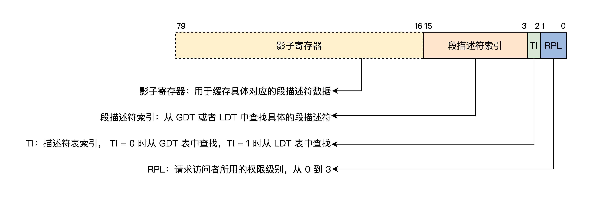
上图中影子寄存器是靠硬件来操作的，对系统程序员不可见，是硬件为了减少性能损耗而设计的一个段描述符的高速缓存，不然每次内存访问都要去内存中查表，那性能损失是巨大的，影子寄存器也正好是64位，里面存放了8字节段描述符数据。
低三位之所以能放TI和RPL，是因为段描述符8字节对齐，每个索引低3位都为0，我们不用关注LDT，只需要使用GDT全局描述符表，所以TI永远设为0。
通常情况下，CS和SS中RPL就组成了CPL（当前权限级别），所以常常是RPL=CPL，进而CPL就表示发起访问者要以什么权限去访问目标段，当CPL大于目标段DPL时，则CPU禁止访问，只有CPL小于等于目标段DPL时才能访问。
保护模式平坦模型
分段模型有很多缺陷，这在后面课程讲内存管理时有详细介绍，其实现代操作系统都会使用分页模型（这点在后面讲MMU那节课再探讨）。
但是x86 CPU并不能直接使用分页模型，而是要在分段模型的前提下，根据需要决定是否要开启分页。因为这是硬件的规定，程序员是无法改变的。但是我们可以简化设计，来使分段成为一种“虚设”，这就是保护模式的平坦模型。
根据前面的描述，我们发现CPU32位的寄存器最多只能产生4GB大小的地址，而一个段长度也只能是4GB，所以我们把所有段的基地址设为0，段的长度设为0xFFFFF，段长度的粒度设为4KB，这样所有的段都指向同一个（（段的长度+1）* 粒度 - 1）字节大小的地址空间。
下面我们还是看一看前面Hello OS中段描述符表，如下所示。
GDT_START:
knull_dsc: dq 0
;第一个段描述符CPU硬件规定必须为0
kcode_dsc: dq 0x00cf9e000000ffff
;段基地址=0，段长度=0xfffff
;G=1,D/B=1,L=0,AVL=0
;P=1,DPL=0,S=1
;T=1,C=1,R=1,A=0
kdata_dsc: dq 0x00cf92000000ffff
;段基地址=0，段长度=0xfffff
;G=1,D/B=1,L=0,AVL=0
;P=1,DPL=0,S=1
;T=0,C=0,R=1,A=0
GDT_END:
GDT_PTR:
GDTLEN dw GDT_END-GDT_START-1
GDTBASE dd GDT_START
上面代码中注释已经很明白了，段长度需要和G位配合，若G位为1则段长度等于0xfffff个4KB。上面段描述符的DPL=0，这说明需要最高权限即CPL=0才能访问。
保护模式中断
你还记得实模式下CPU是如何处理中断的吗？如果不记得了请回到前面看一看。
因为实模式下CPU不需要做权限检查，所以它可以直接通过中断向量表中的值装载CS:IP寄存器就好了。
而保护模式下的中断要权限检查，还有特权级的切换，所以就需要扩展中断向量表的信息，即每个中断用一个中断门描述符来表示，也可以简称为中断门，中断门描述符依然有自己的格式，如下图所示。
同样的，保护模式要实现中断，也必须在内存中有一个中断向量表，同样是由IDTR寄存器指向，只不过中断向量表中的条目变成了中断门描述符，如下图所示。
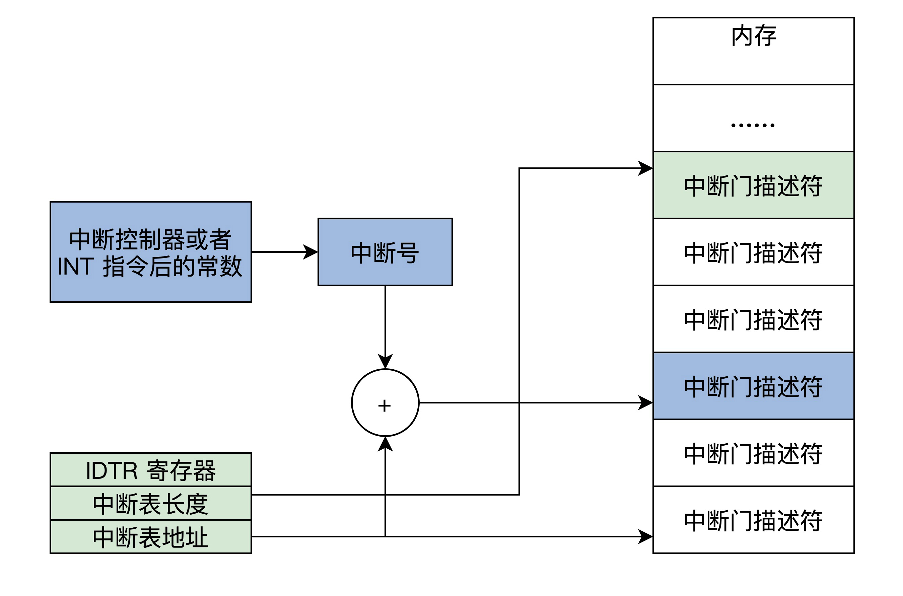
产生中断后，CPU首先会检查中断号是否大于最后一个中断门描述符，x86 CPU最大支持256个中断源（即中断号：0~255），然后检查描述符类型（是否是中断门或者陷阱门）、是否为系统描述符，是不是存在于内存中。
接着，检查中断门描述符中的段选择子指向的段描述符。
最后做权限检查，如果CPL小于等于中断门的DPL，并且CPL大于等于中断门中的段选择子所指向的段描述符的DPL，就指向段描述符的DPL。
进一步的，CPL等于中断门中的段选择子指向段描述符的DPL，则为同级权限不进行栈切换，否则进行栈切换。如果进行栈切换，还需要从TSS中加载具体权限的SS、ESP，当然也要对SS中段选择子指向的段描述符进行检查。
做完这一系列检查之后，CPU才会加载中断门描述符中目标代码段选择子到CS寄存器中，把目标代码段偏移加载到EIP寄存器中。
切换到保护模式
x86 CPU在第一次加电和每次reset后，都会自动进入实模式，要想进入保护模式，就需要程序员写代码实现从实模式切换到保护模式。切换到保护模式的步骤如下。
第一步，准备全局段描述符表，代码如下。
GDT_START:
knull_dsc: dq 0
kcode_dsc: dq 0x00cf9e000000ffff
kdata_dsc: dq 0x00cf92000000ffff
GDT_END:
GDT_PTR:
GDTLEN dw GDT_END-GDT_START-1
GDTBASE dd GDT_START
第二步，加载设置GDTR寄存器，使之指向全局段描述符表。
lgdt [GDT_PTR]
第三步，设置CR0寄存器，开启保护模式。
;开启 PE
mov eax, cr0
bts eax, 0 ; CR0.PE =1
mov cr0, eax
第四步，进行长跳转，加载CS段寄存器，即段选择子。
jmp dword 0x8 :_32bits_mode ;_32bits_mode为32位代码标号即段偏移
你也许会有疑问，为什么要进行长跳转，这是因为我们无法直接或间接mov一个数据到CS寄存器中，因为刚刚开启保护模式时，CS的影子寄存器还是实模式下的值，所以需要告诉CPU加载新的段信息。
接下来，CPU发现了CRO寄存器第0位的值是1，就会按GDTR的指示找到全局描述符表，然后根据索引值8，把新的段描述符信息加载到CS影子寄存器，当然这里的前提是进行一系列合法的检查。
到此为止，CPU真正进入了保护模式，CPU也有了32位的处理能力。
长模式
长模式又名AMD64，因为这个标准是AMD公司最早定义的，它使CPU在现有的基础上有了64位的处理能力，既能完成64位的数据运算，也能寻址64位的地址空间。这在大型计算机上犹为重要，因为它们的物理内存通常有几百GB。
长模式寄存器
长模式相比于保护模式，增加了一些通用寄存器，并扩展通用寄存器的位宽，所有的通用寄存器都是64位，还可以单独使用低32位。
这个低32位可以拆分成一个低16位寄存器，低16位又可以拆分成两个8位寄存器，如下表。
长模式段描述符
长模式依然具备保护模式绝大多数特性，如特权级和权限检查。相同的部分就不再重述了，这里只会说明长模式和保护模式下的差异。
下面我们来看看长模式下段描述的格式，如下图所示。-
在长模式下，CPU不再对段基址和段长度进行检查，只对DPL进行相关的检查，这个检查流程和保护模式下一样。
当描述符中的L=1，D/B=0时，就是64位代码段，DPL还是0~3的特权级。然后有多个段描述在内存中形成一个全局段描述符表，同样由CPU的GDTR寄存器指向。
下面我们来写一个长模式下的段描述符表，加深一下理解，如下所示.
ex64_GDT:
null_dsc: dq 0
;第一个段描述符CPU硬件规定必须为0
c64_dsc:dq 0x0020980000000000 ;64位代码段
;无效位填0
;D/B=0,L=1,AVL=0
;P=1,DPL=0,S=1
;T=1,C=0,R=0,A=0
d64_dsc:dq 0x0000920000000000 ;64位数据段
;无效位填0
;P=1,DPL=0,S=1
;T=0,C/E=0,R/W=1,A=0
eGdtLen equ $ - null_dsc ;GDT长度
eGdtPtr:dw eGdtLen - 1 ;GDT界限
dq ex64_GDT
上面代码中注释已经很清楚了，段长度和段基址都是无效的填充为0，CPU不做检查。但是上面段描述符的DPL=0，这说明需要最高权限即CPL=0才能访问。若是数据段的话，G、D/B、L位都是无效的。
长模式中断
保护模式下为了实现对中断进行权限检查，实现了中断门描述符，在中断门描述符中存放了对应的段选择子和其段内偏移，还有DPL权限，如果权限检查通过，则用对应的段选择子和其段内偏移装载CS:EIP寄存器。
如果你还记得中断门描述符，就会发现其中的段内偏移只有32位，但是长模式支持64位内存寻址，所以要对中断门描述符进行修改和扩展，下面我们就来看看长模式下的中断门描述符的格式，如下图所示。
结合上图，我们可以看出长模式下中断门描述符的格式变化。
首先为了支持64位寻址中断门描述符在原有基础上增加8字节，用于存放目标段偏移的高32位值。其次，目标代码段选择子对应的代码段描述符必须是64位的代码段。最后其中的IST是64位TSS中的IST指针，因为我们不使用这个特性，所以不作详细介绍。
长模式也同样在内存中有一个中断门描述符表，只不过表中的条目（如上图所示）是16字节大小，最多支持256个中断源，对中断的响应和相关权限的检查和保护模式一样，这里不再赘述。
切换到长模式
我们既可以从实模式直接切换到长模式，也可以从保护模式切换长模式。切换到长模式的步骤如下。
第一步，准备长模式全局段描述符表。
ex64_GDT:
null_dsc: dq 0
;第一个段描述符CPU硬件规定必须为0
c64_dsc:dq 0x0020980000000000 ;64位代码段
d64_dsc:dq 0x0000920000000000 ;64位数据段
eGdtLen equ $ - null_dsc ;GDT长度
eGdtPtr:dw eGdtLen - 1 ;GDT界限
dq ex64_GDT
第二步，准备长模式下的MMU页表，这个是为了开启分页模式，切换到长模式必须要开启分页，想想看，长模式下已经不对段基址和段长度进行检查了，那么内存地址空间就得不到保护了。
而长模式下内存地址空间的保护交给了MMU，MMU依赖页表对地址进行转换，页表有特定的格式存放在内存中，其地址由CPU的CR3寄存器指向，这在后面讲MMU的那节课会专门讲。
mov eax, cr4
bts eax, 5 ;CR4.PAE = 1
mov cr4, eax ;开启 PAE
mov eax, PAGE_TLB_BADR ;页表物理地址
mov cr3, eax
- 加载GDTR寄存器，使之指向全局段描述表：
lgdt [eGdtPtr]
- 开启长模式，要同时开启保护模式和分页模式，在实现长模式时定义了MSR寄存器，需要用专用的指令rdmsr、wrmsr进行读写，IA32_EFER寄存器的地址为0xC0000080，它的第8位决定了是否开启长模式。
;开启 64位长模式
mov ecx, IA32_EFER
rdmsr
bts eax, 8 ;IA32_EFER.LME =1
wrmsr
;开启 保护模式和分页模式
mov eax, cr0
bts eax, 0 ;CR0.PE =1
bts eax, 31
mov cr0, eax
- 进行跳转，加载CS段寄存器，刷新其影子寄存器。
jmp 08:entry64 ;entry64为程序标号即64位偏移地址
切换到长模式和切换保护模式的流程差不多，只是需要准备的段描述符有所区别，还有就是要注意同时开启保护模式和分页模式。原因在上面已经说明了。
重点回顾
好，这节课的内容告一段落了，我来给你做个总结。
今天我们从一段死循环的代码开始思考，研究这类代码产生的问题和解决思路，然后一步步探索CPU为了处理这些问题而做出的改进和升级。这些功能上的改进和升级，渐渐演变成了CPU的工作模式，这也是系统开发人员需要了解的编程模型。这三种模式梳理如下。
1.实模式，早期CPU是为了支持单道程序运行而实现的，单道程序能掌控计算机所有的资源，早期的软件规模不大，内存资源也很少，所以实模式极其简单，仅支持16位地址空间，分段的内存模型，对指令不加限制地运行，对内存没有保护隔离作用。
2.保护模式，随着多道程序的出现，就需要操作系统了。内存需求量不断增加，所以CPU实现了保护模式以支持这些需求。
保护模式包含特权级，对指令及其访问的资源进行控制，对内存段与段之间的访问进行严格检查，没有权限的绝不放行，对中断的响应也要进行严格的权限检查，扩展了CPU寄存器位宽，使之能够寻址32位的内存地址空间和处理32位的数据，从而CPU的性能大大提高。
3.长模式，又名AMD64模式，最早由AMD公司制定。由于软件对CPU性能需求永无止境，所以长模式在保护模式的基础上，把寄存器扩展到64位同时增加了一些寄存器，使CPU具有了能处理64位数据和寻址64位的内存地址空间的能力。
长模式弱化段模式管理，只保留了权限级别的检查，忽略了段基址和段长度，而地址的检查则交给了MMU。
思考题
请问实模式下能寻址多大的内存空间？
期待你在留言区跟我交流互动，如果你身边有对CPU工作模式感兴趣的朋友，也欢迎把这节课的内容转发给他，我们一起学习进步。
06 虚幻与真实：程序中的地址如何转换？
你好，我是LMOS。
从前面的课程我们得知，CPU执行程序、处理数据都要和内存打交道，这个打交道的方式就是内存地址。
读取指令、读写数据都需要首先告诉内存芯片：hi，内存老哥请你把0x10000地址处的数据交给我……hi，内存老哥，我已经计算完成，请让我把结果写回0x200000地址的空间。这些地址存在于代码指令字段后的常数，或者存在于某个寄存器中。

今天，我们就来专门研究一下程序中的地址。说起程序中的地址，不知道你是否好奇过，为啥系统设计者要引入虚拟地址呢？
我会先带你从一个多程序并发的场景热身，一起思考这会导致哪些问题，为什么能用虚拟地址解决这些问题。
搞懂原理之后，我还会带你一起探索虚拟地址和物理地址的关系和转换机制。在后面的课里，你会发现，我们最宝贵的内存资源正是通过这些机制来管理的。
从一个多程序并发的场景说起
设想一下，如果一台计算机的内存中只运行一个程序A，这种方式正好用前面CPU的实模式来运行，因为程序A的地址在链接时就可以确定，例如从内存地址0x8000开始，每次运行程序A都装入内存0x8000地址处开始运行，没有其它程序干扰。
现在改变一下，内存中又放一道程序B，程序A和程序B各自运行一秒钟，如此循环，直到其中之一结束。这个新场景下就会产生一些问题，当然这里我们只关心内存相关的这几个核心问题。
1.谁来保证程序A跟程序B 没有内存地址的冲突？换句话说，就是程序A、B各自放在什么内存地址，这个问题是由A、B程序协商，还是由操作系统决定。
2.怎样保证程序A跟程序B 不会互相读写各自的内存空间？这个问题相对简单，用保护模式就能解决。
3.如何解决内存容量问题？程序A和程序B，在不断开发迭代中程序代码占用的空间会越来越大，导致内存装不下。
4.还要考虑一个扩展后的复杂情况，如果不只程序A、B，还可能有程序C、D、E、F、G……它们分别由不同的公司开发，而每台计算机的内存容量不同。这时候，又对我们的内存方案有怎样的影响呢？
要想完美地解决以上最核心的4个问题，一个较好的方案是：让所有的程序都各自享有一个从0开始到最大地址的空间，这个地址空间是独立的，是该程序私有的，其它程序既看不到，也不能访问该地址空间，这个地址空间和其它程序无关，和具体的计算机也无关。
事实上，计算机科学家们早就这么做了，这个方案就是虚拟地址，下面我们就来看看它。
虚拟地址
正如其名，这个地址是虚拟的，自然而然地和具体环境进行了解耦，这个环境包括系统软件环境和硬件环境。
虚拟地址是逻辑上存在的一个数据值，比如0~100就有101个整数值，这个0~100的区间就可以说是一个虚拟地址空间，该虚拟地址空间有101个地址。
我们再来看看最开始Hello World的例子，我们用objdump工具反汇编一下Hello World二进制文件，就会得到如下的代码片段：
00000000000004e8 <_init>:
4e8: 48 83 ec 08 sub $0x8,%rsp
4ec: 48 8b 05 f5 0a 20 00 mov 0x200af5(%rip),%rax # 200fe8 <__gmon_start__>
4f3: 48 85 c0 test %rax,%rax
4f6: 74 02 je 4fa <_init+0x12>
4f8: ff d0 callq *%rax
4fa: 48 83 c4 08 add $0x8,%rsp
4fe: c3 retq
上述代码中，左边第一列数据就是虚拟地址，第三列中是程序指令，如：“mov 0x200af5(%rip),%rax，je 4fa，callq *%rax”指令中的数据都是虚拟地址。
事实上，所有的应用程序开始的部分都是这样的。这正是因为每个应用程序的虚拟地址空间都是相同且独立的。
那么这个地址是由谁产生的呢？
答案是链接器，其实我们开发软件经过编译步骤后，就需要链接成可执行文件才可以运行，而链接器的主要工作就是把多个代码模块组装在一起，并解决模块之间的引用，即处理程序代码间的地址引用，形成程序运行的静态内存空间视图。
只不过这个地址是虚拟而统一的，而根据操作系统的不同，这个虚拟地址空间的定义也许不同，应用软件开发人员无需关心，由开发工具链给自动处理了。由于这虚拟地址是独立且统一的，所以各个公司开发的各个应用完全不用担心自己的内存空间被占用和改写。
物理地址
虽然虚拟地址解决了很多问题，但是虚拟地址只是逻辑上存在的地址，无法作用于硬件电路的，程序装进内存中想要执行，就需要和内存打交道，从内存中取得指令和数据。而内存只认一种地址，那就是物理地址。
什么是物理地址呢？物理地址在逻辑上也是一个数据，只不过这个数据会被地址译码器等电子器件变成电子信号，放在地址总线上，地址总线电子信号的各种组合就可以选择到内存的储存单元了。
但是地址总线上的信号（即物理地址），也可以选择到别的设备中的储存单元，如显卡中的显存、I/O设备中的寄存器、网卡上的网络帧缓存器。不过如果不做特别说明，我们说的物理地址就是指选择内存单元的地址。
虚拟地址到物理地址的转换
明白了虚拟地址和物理地址之后，我们发现虚拟地址必须转换成物理地址，这样程序才能正常执行。要转换就必须要转换机构，它相当于一个函数：p=f(v)，输入虚拟地址v，输出物理地址p。
那么要怎么实现这个函数呢？
用软件方式实现太低效，用硬件实现没有灵活性，最终就用了软硬件结合的方式实现，它就是MMU（内存管理单元）。MMU可以接受软件给出的地址对应关系数据，进行地址转换。
我们先来看看逻辑上的MMU工作原理框架图。如下图所示：-

上图中展示了MMU通过地址关系转换表，将0x80000~0x84000的虚拟地址空间转换成 0x10000~0x14000的物理地址空间，而地址关系转换表本身则是放物理内存中的。
下面我们不妨想一想地址关系转换表的实现.如果在地址关系转换表中，这样来存放：一个虚拟地址对应一个物理地址。
那么问题来了，32位地址空间下，4GB虚拟地址的地址关系转换表就会把整个32位物理地址空间用完，这显然不行。
要是结合前面的保护模式下分段方式呢，地址关系转换表中存放：一个虚拟段基址对应一个物理段基址，这样看似可以，但是因为段长度各不相同，所以依然不可取。
综合刚才的分析，系统设计者最后采用一个折中的方案，即把虚拟地址空间和物理地址空间都分成同等大小的块，也称为页，按照虚拟页和物理页进行转换。根据软件配置不同，这个页的大小可以设置为4KB、2MB、4MB、1GB，这样就进入了现代内存管理模式——分页模型。
下面来看看分页模型框架，如下图所示：

结合图片可以看出，一个虚拟页可以对应到一个物理页，由于页大小一经配置就是固定的，所以在地址关系转换表中，只要存放虚拟页地址对应的物理页地址就行了。
我知道，说到这里，也许你仍然没搞清楚MMU和地址关系转换表的细节，别急，我们现在已经具备了研究它们的基础，下面我们就去探索它们。
MMU
MMU即内存管理单元，是用硬件电路逻辑实现的一个地址转换器件，它负责接受虚拟地址和地址关系转换表，以及输出物理地址。
根据实现方式的不同，MMU可以是独立的芯片，也可以是集成在其它芯片内部的，比如集成在CPU内部，x86、ARM系列的CPU就是将MMU集成在CPU核心中的。
SUN公司的CPU是将独立的MMU芯片卡在总线上的，有一夫当关的架势。下面我们只研究x86 CPU中的MMU。x86 CPU要想开启MMU，就必须先开启保护模式或者长模式，实模式下是不能开启MMU的。
由于保护模式的内存模型是分段模型，它并不适合于MMU的分页模型，所以我们要使用保护模式的平坦模式，这样就绕过了分段模型。这个平坦模型和长模式下忽略段基址和段长度是异曲同工的。地址产生的过程如下所示。

上图中，程序代码中的虚拟地址，经过CPU的分段机制产生了线性地址，平坦模式和长模式下线性地址和虚拟地址是相等的。
如果不开启MMU，在保护模式下可以关闭MMU，这个线性地址就是物理地址。因为长模式下的分段弱化了地址空间的隔离，所以开启MMU是必须要做的，开启MMU才能访问内存地址空间。
MMU页表
现在我们开始研究地址关系转换表，其实它有个更加专业的名字——页表。它描述了虚拟地址到物理地址的转换关系，也可以说是虚拟页到物理页的映射关系，所以称为页表。
为了增加灵活性和节约物理内存空间（因为页表是放在物理内存中的），所以页表中并不存放虚拟地址和物理地址的对应关系，只存放物理页面的地址，MMU以虚拟地址为索引去查表返回物理页面地址，而且页表是分级的，总体分为三个部分：一个顶级页目录，多个中级页目录，最后才是页表，逻辑结构图如下.
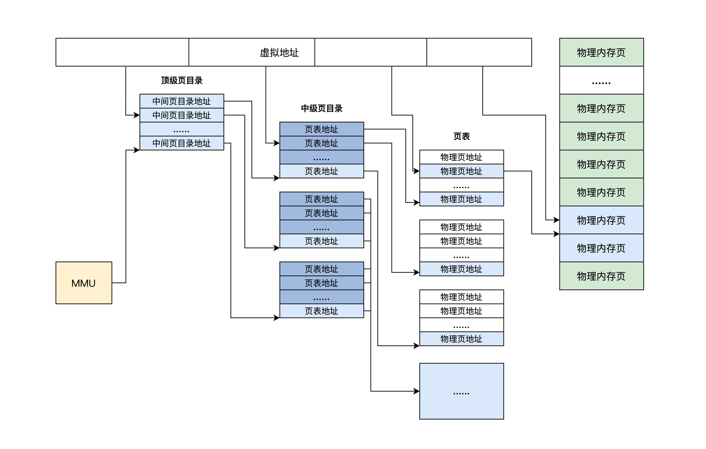
从上面可以看出，一个虚拟地址被分成从左至右四个位段。
第一个位段索引顶级页目录中一个项，该项指向一个中级页目录，然后用第二个位段去索引中级页目录中的一个项，该项指向一个页目录，再用第三个位段去索引页目录中的项，该项指向一个物理页地址，最后用第四个位段作该物理页内的偏移去访问物理内存。这就是MMU的工作流程。
保护模式下的分页
前面的内容都是理论上帮助我们了解分页模式原理的，分页模式的灵活性、通用性、安全性，是现代操作系统内存管理的基石，更是事实上的标准内存管理模型，现代商用操作系统都必须以此为基础实现虚拟内存功能模块。
因为我们的主要任务是开发操作系统，而开发操作系统就落实到真实的硬件平台上去的，下面我们就来研究x86 CPU上的分页模式。
首先来看看保护模式下的分页，保护模式下只有32位地址空间，最多4GB-1大小的空间。
根据前面得知32位虚拟地址经过分段机制之后得到线性地址，又因为通常使用平坦模式，所以线性地址和虚拟地址是相同的。
保护模式下的分页大小通常有两种，一种是4KB大小的页，一种是4MB大小的页。分页大小的不同，会导致虚拟地址位段的分隔和页目录的层级不同，但虚拟页和物理页的大小始终是等同的。
保护模式下的分页——4KB页
该分页方式下，32位虚拟地址被分为三个位段：页目录索引、页表索引、页内偏移，只有一级页目录，其中包含1024个条目 ，每个条目指向一个页表，每个页表中有1024个条目。其中一个条目就指向一个物理页，每个物理页4KB。这正好是4GB地址空间。如下图所示。

上图中CR3就是CPU的一个32位的寄存器，MMU就是根据这个寄存器找到页目录的。下面，我们看看当前分页模式下的CR3、页目录项、页表项的格式。
可以看到，页目录项、页表项都是4字节32位，1024个项正好是4KB（一个页），因此它们的地址始终是4KB对齐的，所以低12位才可以另作它用，形成了页面的相关属性，如是否存在、是否可读可写、是用户页还是内核页、是否已写入、是否已访问等。
保护模式下的分页——4MB页
该分页方式下，32位虚拟地址被分为两个位段：页表索引、页内偏移，只有一级页目录，其中包含1024个条目。其中一个条目指向一个物理页，每个物理页4MB，正好为4GB地址空间，如下图所示。

CR3还是32位的寄存器，只不过不再指向顶级页目录了，而是指向一个4KB大小的页表，这个页表依然要4KB地址对齐，其中包含1024个页表项，格式如下图。- 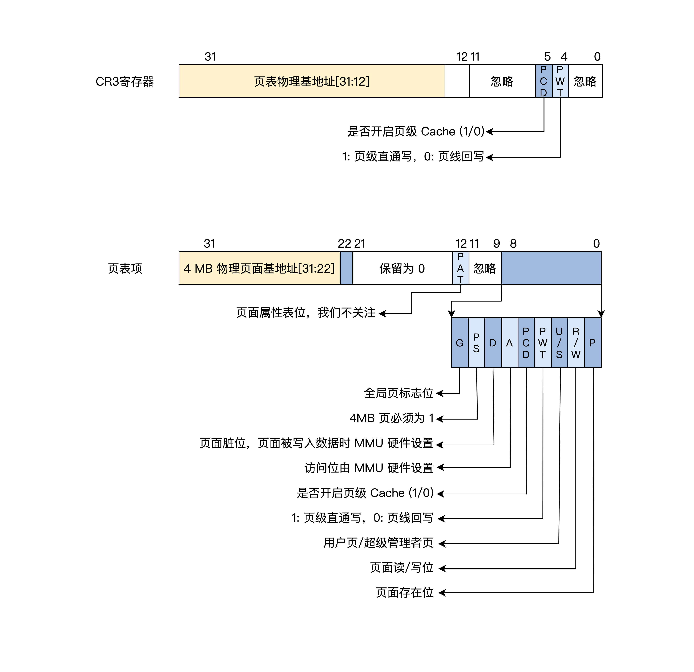
可以发现，4MB大小的页面下，页表项还是4字节32位，但只需要用高10位来保存物理页面的基地址就可以。因为每个物理页面都是4MB，所以低22位始终为0，为了兼容4MB页表项低8位和4KB页表项一样，只不过第7位变成了PS位，且必须为1，而PAT位移到了12位。
长模式下的分页
如果开启了长模式，则必须同时开启分页模式，因为长模式弱化了分段模型，而分段模型也确实有很多不足，不适应现在操作系统和应用软件的发展。
同时，长模式也扩展了CPU的位宽，使得CPU能使用64位的超大内存地址空间。所以，长模式下的虚拟地址必须等于线性地址且为64位。
长模式下的分页大小通常也有两种，4KB大小的页和2MB大小的页。
长模式下的分页——4KB页
该分页方式下，64位虚拟地址被分为6个位段，分别是：保留位段，顶级页目录索引、页目录指针索引、页目录索引、页表索引、页内偏移，顶级页目录、页目录指针、页目录、页表各占有4KB大小，其中各有512个条目，每个条目8字节64位大小，如下图所示。
上面图中CR3已经变成64位的CPU的寄存器，它指向一个顶级页目录，里面的顶级页目项指向页目录指针，依次类推。
需要注意的是，虚拟地址48到63这16位是根据第47位来决定的，47位为1，它们就为1，反之为0，这是因为x86 CPU并没有实现全64位的地址总线，而是只实现了48位，但是CPU的寄存器却是64位的。
这种最高有效位填充的方式，即使后面扩展CPU的地址总线也不会有任何影响，下面我们去看看当前分页模式下的CR3、顶级页目录项、页目录指针项、页目录项、页表项的格式，我画了一张图帮你理解。

由上图可知，长模式下的4KB分页下，由一个顶层目录、二级中间层目录和一层页表组成了64位地址翻译过程。
顶级页目录项指向页目录指针页，页目录指针项指向页目录页，页目录项指向页表页，页表项指向一个4KB大小的物理页，各级页目录项中和页表项中依然存在各种属性位，这在图中已经说明。其中的XD位，可以控制代码页面是否能够运行。
长模式下的分页——2MB页
在这种分页方式下，64位虚拟地址被分为5个位段 ：保留位段、顶级页目录索引、页目录指针索引、页目录索引，页内偏移，顶级页目录、页目录指针、页目录各占有4KB大小，其中各有512个条目，每个条目8字节64位大小。
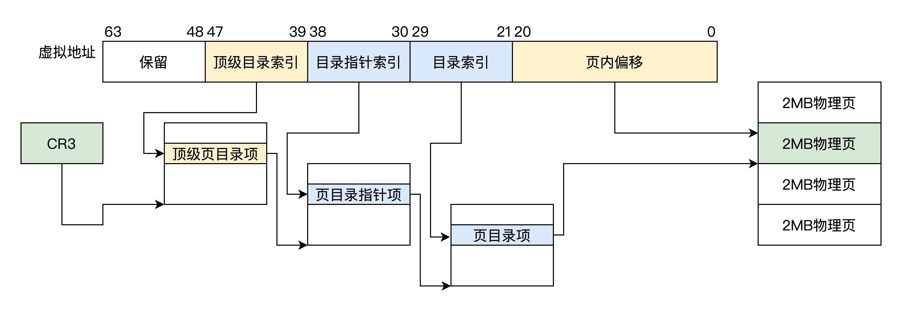
可以发现，长模式下2MB和4KB分页的区别是，2MB分页下是页目录项直接指向了2MB大小的物理页面，放弃了页表项，然后把虚拟地址的低21位作为页内偏移，21位正好索引2MB大小的地址空间。
下面我们还是要去看看2MB分页模式下的CR3、顶级页目录项、页目录指针项、页目录项的格式，格式如下图。

上图中没有了页表项，取而代之的是，页目录项中直接存放了2MB物理页基地址。由于物理页始终2MB对齐，所以其地址的低21位为0，用于存放页面属性位。
开启MMU
要使用分页模式就必先开启MMU，但是开启MMU的前提是CPU进入保护模式或者长模式，开启CPU这两种模式的方法，我们在前面第五节课已经讲过了，下面我们就来开启MMU，步骤如下：
1.使CPU进入保护模式或者长模式。
2.准备好页表数据，这包含顶级页目录，中间层页目录，页表，假定我们已经编写了代码，在物理内存中生成了这些数据。
3.把顶级页目录的物理内存地址赋值给CR3寄存器。
mov eax, PAGE_TLB_BADR ;页表物理地址
mov cr3, eax
- 设置CPU的CR0的PE位为1，这样就开启了MMU。
;开启 保护模式和分页模式
mov eax, cr0
bts eax, 0 ;CR0.PE =1
bts eax, 31 ;CR0.P = 1
mov cr0, eax
MMU地址转换失败
MMU的主要功能是根据页表数据把虚拟地址转换成物理地址，但有没有可能转换失败？
绝对有可能，例如，页表项中的数据为空，用户程序访问了超级管理者的页面，向只读页面中写入数据。这些都会导致MMU地址转换失败。
MMU地址转换失败了怎么办呢？失败了既不能放行，也不是reset，MMU执行的操作如下。
1.MMU停止转换地址。- 2.MMU把转换失败的虚拟地址写入CPU的CR2寄存器。- 3.MMU触发CPU的14号中断，使CPU停止执行当前指令。- 4.CPU开始执行14号中断的处理代码，代码会检查原因，处理好页表数据返回。- 5.CPU中断返回继续执行MMU地址转换失败时的指令。
这里你只要先明白这个流程就好了，后面课程讲到内存管理的时候我们继续探讨。
重点回顾
又到了课程的尾声，把心情放松下来，我们一起来回顾这节课的重点。
首先，我们从一个场景开始热身，发现多道程序同时运行有很多问题，都是内存相关的问题，内存需要隔离和保护。从而提出了虚拟地址与物理地址分离，让应用程序从实际的物理内存中解耦出来。
虽然虚拟地址是个非常不错的方案，但是虚拟地址必须转换成物理地址，才能在硬件上执行。为了执行这个转换过程，才开发出了MMU（内存管理单元），MMU增加了转换的灵活性，它的实现方式是硬件执行转换过程，但又依赖于软件提供的地址转换表。
最后，我们下落到具体的硬件平台，研究了x86 CPU上的MMU。
x86 CPU上的MMU在其保护模式和长模式下提供4KB、2MB、4MB等页面转换方案，我们详细分析了它们的页表格式。同时，也搞清楚了如何开启MMU，以及MMU地址转换失败后执行的操作。
思考题
在分页模式下，操作系统是如何对应用程序的地址空间进行隔离的？
欢迎你在留言区和我交流互动。如果这节课对你有启发的话，也欢迎你转发给朋友、同事，说不定就能帮他解决疑问。
我是LMOS，我们下节课见！
07 Cache与内存：程序放在哪儿？
你好，我是LMOS。
在前面的课程里，我们已经知道了CPU是如何执行程序的，也研究了程序的地址空间，这里我们终于到了程序的存放地点——内存。
你知道什么是Cache吗？在你心中，真实的内存又是什么样子呢？今天我们就来重新认识一下Cache和内存，这对我们利用Cache写出高性能的程序代码和实现操作系统管理内存，有着巨大的帮助。
通过这节课的内容，我们一起来看看内存到底是啥，它有什么特性。有了这个认识，你就能更加深入地理解我们看似熟悉的局部性原理，从而搞清楚，为啥Cache是解决内存瓶颈的神来之笔。最后，我还会带你分析x86平台上的Cache，规避Cache引发的一致性问题，并让你掌握获取内存视图的方法。
那话不多说，带着刚才的问题，我们正式进入今天的学习吧！
从一段“经典”代码看局部性原理
不知道，你还记不记得C语言打印九九乘法表的代码，想不起来也没关系，下面我把它贴出来，代码很短，也很简单，就算你自己写一个也用不了一分钟，如下所示。
#include <stdio.h>
int main(){
int i,j;
for(i=1;i<=9;i++){
for(j=1;j<=i;j++){
printf("%d*%d=%2d ",i,j,i*j);
}
printf("\n");
}
return 0;
}
我们当然不是为了研究代码本身，这个代码非常简单，这里我们主要是观察这个结构，代码的结构主要是顺序、分支、循环，这三种结构可以写出现存所有算法的程序。
我们常规情况下写的代码是顺序和循环结构居多。上面的代码中有两重循环，内层循环的次数受到外层循环变量的影响。就是这么简单，但是越简单的东西越容易看到本质。
可以看到，这个代码大数时间在执行一个乘法计算和调用一个printf函数，而程序一旦编译装载进内存中，它的地址就确定了。也就是说，CPU大多数时间在访问相同或者与此相邻的地址，换句话说就是：CPU大多数时间在执行相同的指令或者与此相邻的指令。这就是大名鼎鼎的程序局部性原理。
内存
明白了程序的局部性原理之后，我们再来看看内存。你或许感觉这跨越有点大，但是只有明白了内存的结构和特性，你才能明白程序局部性原理的应用场景和它的重要性。
内存也可称为主存，不管硬盘多大、里面存放了多少程序和数据，只要程序运行或者数据要进行计算处理，就必须先将它们装入内存。我们先来看看内存长什么样（你也可以上网自行搜索），如下图所示。
从上图可以看到在PCB板上有内存颗粒芯片，主要是用来存放数据的。SPD芯片用于存放内存自身的容量、频率、厂商等信息。还有最显眼的金手指，用于连接数据总线和地址总线，电源等。
其实从专业角度讲，内存应该叫DRAM，即动态随机存储器。内存储存颗粒芯片中的存储单元是由电容和相关元件做成的，电容存储电荷的多、少代表数字信号0和1。
而随着时间的流逝，电容存在漏电现象，这导致电荷不足，就会让存储单元的数据出错，所以DRAM需要周期性刷新，以保持电荷状态。DRAM结构较简单且集成度很高，通常用于制造内存条中的储存颗粒芯片。
虽然内存技术标准不断更新，但是储存颗粒的内部结构没有本质改变，还是电容存放电荷，标准看似更多，实际上只是提升了位宽、工作频率，以及传输时预取的数据位数。
比如DDR SDRAM，即双倍速率同步动态随机存储器，它使用2.5V的工作电压，数据位宽为64位，核心频率最高为166MHz。下面简称DDR内存，它表示每一个时钟脉冲传输两次数据，分别在时钟脉冲的上升沿和下降沿各传输一次数据，因此称为双倍速率的SDRAM。
后来的DDR2、DDR3、DDR4也都在核心频率和预取位数上做了提升。最新的DDR4采用1.2V工作电压，数据位宽为64位，预取16位数据。DDR4取消了双通道机制，一条内存即为一条通道，工作频率最高可达4266MHz，单根DDR4内存的数据传输带宽最高为34GB/s。
其实我们无需过多关注内存硬件层面的技术规格标准，重点需要关注的是，内存的速度还有逻辑上内存和系统的连接方式和结构，这样你就能意识到内存有多慢，还有是什么原因导致内存慢的。
我们还是画幅图说明吧，如下图所示。

结合图片我们看到，控制内存刷新和内存读写的是内存控制器，而内存控制器集成在北桥芯片中。传统方式下，北桥芯片存在于系统主板上，而现在由于芯片制造工艺的升级，芯片集成度越来越高，所以北桥芯片被就集成到CPU芯片中了，同时这也大大提升了CPU访问内存的性能。
而作为软件开发人员，从逻辑上我们只需要把内存看成一个巨大的字节数组就可以，而内存地址就是这个数组的下标。
CPU到内存的性能瓶颈
尽管CPU和内存是同时代发展的，但CPU所使用技术工艺的材料和内存是不同的，侧重点也不同，价格也不同。如果内存使用CPU的工艺和材料制造，那内存条的昂贵程度会超乎想象，没有多少人能买得起。
由于这些不同，导致了CPU和内存条的数据吞吐量天差地别。尽管最新的DDR4内存条带宽高达34GB/s，然而这相比CPU的数据吞吐量要慢上几个数量级。再加上多核心CPU同时访问内存，会导致总线争用问题，数据吞吐量会进一步下降。
CPU要数据，内存一时给不了怎么办？CPU就得等，通常CPU会让总线插入等待时钟周期，直到内存准备好，到这里你就会发现，无论CPU的性能多高都没用，而内存才是决定系统整体性能的关键。显然依靠目前的理论直接提升内存性能，达到CPU的同等水平，这是不可行的，得想其它的办法。
Cache
让我们重新回到前面的场景中，回到程序的局部性原理，它告诉我们：CPU大多数时间在访问相同或者与此相邻的地址。那么，我们立马就可以想到用一块小而快的储存器，放在CPU和内存之间，就可以利用程序的局部性原理来缓解CPU和内存之间的性能瓶颈。这块小而快的储存器就是Cache，即高速缓存。
Cache中存放了内存中的一部分数据，CPU在访问内存时要先访问Cache，若Cache中有需要的数据就直接从Cache中取出，若没有则需要从内存中读取数据，并同时把这块数据放入Cache中。但是由于程序的局部性原理，在一段时间内，CPU总是能从Cache中读取到自己想要的数据。
Cache可以集成在CPU内部，也可以做成独立的芯片放在总线上，现在x86 CPU和ARM CPU都是集成在CPU内部的。其逻辑结构如下图所示。

Cache主要由高速的静态储存器、地址转换模块和Cache行替换模块组成。
Cache会把自己的高速静态储存器和内存分成大小相同的行，一行大小通常为32字节或者64字节。Cache和内存交换数据的最小单位是一行，为方便管理，在Cache内部的高速储存器中，多个行又会形成一组。
除了正常的数据空间外，Cache行中还有一些标志位，如脏位、回写位，访问位等，这些位会被Cache的替换模块所使用。
Cache大致的逻辑工作流程如下。
1.CPU发出的地址由Cache的地址转换模块分成3段：组号，行号，行内偏移。
2.Cache会根据组号、行号查找高速静态储存器中对应的行。如果找到即命中，用行内偏移读取并返回数据给CPU，否则就分配一个新行并访问内存，把内存中对应的数据加载到Cache行并返回给CPU。写入操作则比较直接，分为回写和直通写，回写是写入对应的Cache行就结束了，直通写则是在写入Cache行的同时写入内存。
3.如果没有新行了，就要进入行替换逻辑，即找出一个Cache行写回内存，腾出空间，替换行有相关的算法，替换算法是为了让替换的代价最小化。例如，找出一个没有修改的Cache行，这样就不用把它其中的数据回写到内存中了，还有找出存在时间最久远的那个Cache行，因为它大概率不会再访问了。
以上这些逻辑都由Cache硬件独立实现，软件不用做任何工作，对软件是透明的。
Cache带来的问题
Cache虽然带来性能方面的提升，但同时也给和硬件和软件开发带来了问题，那就是数据一致性问题。
为了搞清楚这个问题，我们必须先搞清楚Cache在硬件层面的结构，下面我画了x86 CPU的Cache结构图：

这是一颗最简单的双核心CPU，它有三级Cache，第一级Cache是指令和数据分开的，第二级Cache是独立于CPU核心的，第三级Cache是所有CPU核心共享的。
下面来看看Cache的一致性问题，主要包括这三个方面.
1.一个CPU核心中的指令Cache和数据Cache的一致性问题。- 2.多个CPU核心各自的2级Cache的一致性问题。- 3.CPU的3级Cache与设备内存，如DMA、网卡帧储存，显存之间的一致性问题。这里我们不需要关注这个问题。
我们先来看看CPU核心中的指令Cache和数据Cache的一致性问题，对于程序代码运行而言，指令都是经过指令Cache，而指令中涉及到的数据则会经过数据Cache。
所以，对自修改的代码（即修改运行中代码指令数据，变成新的程序）而言，比如我们修改了内存地址A这个位置的代码（典型的情况是Java运行时编译器），这个时候我们是通过储存的方式去写的地址A，所以新的指令会进入数据Cache。
但是我们接下来去执行地址A处的指令的时候，指令Cache里面可能命中的是修改之前的指令。所以，这个时候软件需要把数据Cache中的数据写入到内存中，然后让指令Cache无效，重新加载内存中的数据。
再来看看多个CPU核心各自的2级Cache的一致性问题。从上图中可以发现，两个CPU核心共享了一个3级Cache。比如第一个CPU核心读取了一个A地址处的变量，第二个CPU也读取A地址处的变量，那么第二个CPU核心是不是需要从内存里面经过第3、2、1级Cache再读一遍，这个显然是没有必要的。
在硬件上Cache相关的控制单元，可以把第一个CPU核心的A地址处Cache内容直接复制到第二个CPU的第2、1级Cache，这样两个CPU核心都得到了A地址的数据。不过如果这时第一个CPU核心改写了A地址处的数据，而第二个CPU核心的2级Cache里面还是原来的值，数据显然就不一致了。
为了解决这些问题，硬件工程师们开发了多种协议，典型的多核心Cache数据同步协议有MESI和MOESI。MOESI和MESI大同小异，下面我们就去研究一下MESI协议。
Cache的MESI协议
MESI协议定义了4种基本状态：M、E、S、I，即修改（Modified）、独占（Exclusive）、共享（Shared）和无效（Invalid）。下面我结合示意图，给你解释一下这四种状态。
1.M修改（Modified）：当前Cache的内容有效，数据已经被修改而且与内存中的数据不一致，数据只在当前Cache里存在。比如说，内存里面X=5，而CPU核心1的Cache中X=2，Cache与内存不一致，CPU核心2中没有X。

- E独占（Exclusive）：当前Cache中的内容有效，数据与内存中的数据一致，数据只在当前Cache里存在；类似RAM里面X=5，同样CPU核心1的Cache中X=5（Cache和内存中的数据一致），CPU核心2中没有X。
- S共享（Shared）：当前Cache中的内容有效，Cache中的数据与内存中的数据一致，数据在多个CPU核心中的Cache里面存在。例如在CPU核心1、CPU核心2里面Cache中的X=5，而内存中也是X=5保持一致。

- 无效（Invalid）：当前Cache无效。前面三幅图Cache中没有数据的那些，都属于这个情况。
最后还要说一下Cache硬件，它会监控所有CPU上Cache的操作，根据相应的操作使得Cache里的数据行在上面这些状态之间切换。Cache硬件通过这些状态的变化，就能安全地控制各Cache间、各Cache与内存之间的数据一致性了。
这里不再深入探讨MESI协议了，感兴趣的话你可以自行拓展学习。这里只是为了让你明白，有了Cache虽然提升了系统性能，却也带来了很多问题，好在这些问题都由硬件自动完成，对软件而言是透明的。
不过看似对软件透明，这却是有代价的，因为硬件需要耗费时间来处理这些问题。如果我们编程的时候不注意，不能很好地规避这些问题，就会引起硬件去维护大量的Cache数据同步，这就会使程序运行的效能大大下降。
开启Cache
前面我们研究了大量的Cache底层细节和问题，就是为了使用Cache，目前Cache已经成为了现代计算机的标配，但是x86 CPU上默认是关闭Cache的，需要在CPU初始化时将其开启。
在x86 CPU上开启Cache非常简单，只需要将CR0寄存器中CD、NW位同时清0即可。CD=1时表示Cache关闭，NW=1时CPU不维护内存数据一致性。所以CD=0、NW=0的组合才是开启Cache的正确方法。
开启Cache只需要用四行汇编代码，代码如下：
mov eax, cr0
;开启 CACHE
btr eax,29 ;CR0.NW=0
btr eax,30 ;CR0.CD=0
mov cr0, eax
获取内存视图
作为系统软件开发人员，与其了解内存内部构造原理，不如了解系统内存有多大。这个作用更大。
根据前面课程所讲，给出一个物理地址并不能准确地定位到内存空间，内存空间只是映射物理地址空间中的一个子集，物理地址空间中可能有空洞，有ROM，有内存，有显存，有I/O寄存器，所以获取内存有多大没用，关键是要获取哪些物理地址空间是可以读写的内存。
物理地址空间是由北桥芯片控制管理的，那我们是不是要找北桥要内存的地址空间呢？当然不是，在x86平台上还有更方便简单的办法，那就是BIOS提供的实模式下中断服务，就是int指令后面跟着一个常数的形式。
由于PC机上电后由BIOS执行硬件初始化，中断向量表是BIOS设置的，所以执行中断自然执行BIOS服务。这个中断服务是int 15h，但是它需要一些参数，就是在执行int 15h之前，对特定寄存器设置一些值，代码如下。
_getmemmap:
xor ebx,ebx ;ebx设为0
mov edi,E80MAP_ADR ;edi设为存放输出结果的1MB内的物理内存地址
loop:
mov eax,0e820h ;eax必须为0e820h
mov ecx,20 ;输出结果数据项的大小为20字节：8字节内存基地址，8字节内存长度，4字节内存类型
mov edx,0534d4150h ;edx必须为0534d4150h
int 15h ;执行中断
jc error ;如果flags寄存器的C位置1，则表示出错
add edi,20;更新下一次输出结果的地址
cmp ebx,0 ;如ebx为0，则表示循环迭代结束
jne loop ;还有结果项，继续迭代
ret
error:;出错处理
上面的代码是在迭代中执行中断，每次中断都输出一个20字节大小数据项，最后会形成一个该数据项（结构体）的数组，可以用C语言结构表示，如下。
#define RAM_USABLE 1 //可用内存
#define RAM_RESERV 2 //保留内存不可使用
#define RAM_ACPIREC 3 //ACPI表相关的
#define RAM_ACPINVS 4 //ACPI NVS空间
#define RAM_AREACON 5 //包含坏内存
typedef struct s_e820{
u64_t saddr; /* 内存开始地址 */
u64_t lsize; /* 内存大小 */
u32_t type; /* 内存类型 */
}e820map_t;
重点回顾
又到了课程尾声，内存和Cache的学习就告一段落了。今天我们主要讲了四部分内容，局部性原理、内存结构特性、Cache工作原理和x86上的应用。我们一起来回顾一下这节课的重点。
首先从一个场景开始，我们了解了程序通常的结构。通过观察这种结构，我们发现CPU大多数时间在访问相同或者与此相邻的地址，执行相同的指令或者与此相邻的指令。这种现象就是程序局部性原理。
然后，我们研究了内存的结构和特性。了解它的工艺标准和内部原理，知道内存容量相对可以做得较大，程序和数据都要放在其中才能被CPU执行和处理。但是内存的速度却远远赶不上CPU的速度。
因为内存和CPU之间性能瓶颈和程序局部性原理，所以才开发出了Cache（即高速缓存），它由高速静态储存器和相应的控制逻辑组成。
Cache容量比内存小，速度却比内存高，它在CPU和内存之间，CPU访问内存首先会访问Cache，如果访问命中则会大大提升性能，然而它却带来了问题，那就是数据的一致性问题，为了解决这个问题，工程师又开发了Cache一致性协议MESI。这个协议由Cache硬件执行，对软件透明。
最后，我们掌握了x86平台上开启Cache和获取物理内存视图的方法。
因为这节课也是我们硬件模块的最后一节，可以说没有硬件平台知识，写操作系统就如同空中建楼，通过这个部分的学习，就算是为写操作系统打好了地基。为了让你更系统地认识这个模块，我给你整理了这三节课的知识导图。
思考题
请你思考一下，如何写出让CPU跑得更快的代码？由于Cache比内存快几个数量级，所以这个问题也可以转换成：如何写出提高Cache命中率的代码？
08 锁：并发操作中，解决数据同步的四种方法
你好，我是LMOS。
我们在前面的课程中探索了，开发操作系统要了解的最核心的硬件——CPU、MMU、Cache、内存，知道了它们的工作原理。在程序运行中，它们起到了至关重要的作用。
在开发我们自己的操作系统以前，还不能一开始就把机器跑起来，而是先要弄清楚数据同步的问题。如果不解决掉数据同步的问题，后面机器跑起来，就会出现很多不可预知的结果。
通过这节课，我会给你讲清楚为什么在并发操作里，很可能得不到预期的访问数据，还会带你分析这个问题的原因以及解决方法。有了这样一个研究、解决问题的过程，对最重要的几种锁（原子变量，关中断，信号量，自旋锁），你就能做到心中有数了。
非预期结果的全局变量
来看看下面的代码，描述的是一个线程中的函数和中断处理函数，它们分别对一个全局变量执行加1操作，代码如下。
int a = 0;
void interrupt_handle()
{
a++;
}
void thread_func()
{
a++;
}
首先我们梳理一下编译器的翻译过程，通常编译器会把a++语句翻译成这3条指令。
1.把a加载某个寄存器中。
2.这个寄存器加1。
3.把这个寄存器写回内存。
那么不难推断，可能导致结果不确定的情况是这样的：thread_func函数还没运行完第2条指令时，中断就来了。
因此，CPU转而处理中断，也就是开始运行interrupt_handle函数，这个函数运行完a=1，CPU还会回去继续运行第3条指令，此时a依然是1，这显然是错的。
下面来看一下表格，你就明白了。-
显然在t2时刻发生了中断，导致了t2到t4运行了interrupt_handle函数，t5时刻thread_func又恢复运行，导致interrupt_handle函数中a的操作丢失，因此出错。
方法一：原子操作 拿下单体变量
要解决上述场景中的问题，有这样两种思路。一种是把a++变成原子操作，这里的原子是不可分隔的，也就是说要a++这个操作不可分隔，即a++要么不执行，要么一口气执行完；另一种就是控制中断，比如在执行a++之前关掉中断，执行完了之后打开中断。
我们先来看看原子操作，显然靠编译器自动生成原子操作不太可能。第一，编译器没有这么智能，能检测哪个变量需要原子操作；第二，编译器必须要考虑代码的移植性，例如有些硬件平台支持原子操作的机器指令，有的硬件平台不支持原子操作。
既然实现原子操作无法依赖于具体编译器，那就需要我们自己动手，x86平台支持很多原子指令，我们只需要直接应用这些指令，比如原子加、原子减，原子读写等，用汇编代码写出对应的原子操作函数就行了。
好在现代C语言已经支持嵌入汇编代码，可以在C函数中按照特定的方式嵌入汇编代码了，实现原子操作就更方便了，代码如下。
//定义一个原子类型
typedef struct s_ATOMIC{
volatile s32_t a_count; //在变量前加上volatile，是为了禁止编译器优化，使其每次都从内存中加载变量
}atomic_t;
//原子读
static inline s32_t atomic_read(const atomic_t *v)
{
//x86平台取地址处是原子
return (*(volatile u32_t*)&(v)->a_count);
}
//原子写
static inline void atomic_write(atomic_t *v, int i)
{
//x86平台把一个值写入一个地址处也是原子的
v->a_count = i;
}
//原子加上一个整数
static inline void atomic_add(int i, atomic_t *v)
{
__asm__ __volatile__("lock;" "addl %1,%0"
: "+m" (v->a_count)
: "ir" (i));
}
//原子减去一个整数
static inline void atomic_sub(int i, atomic_t *v)
{
__asm__ __volatile__("lock;" "subl %1,%0"
: "+m" (v->a_count)
: "ir" (i));
}
//原子加1
static inline void atomic_inc(atomic_t *v)
{
__asm__ __volatile__("lock;" "incl %0"
: "+m" (v->a_count));
}
//原子减1
static inline void atomic_dec(atomic_t *v)
{
__asm__ __volatile__("lock;" "decl %0"
: "+m" (v->a_count));
}
以上代码中，加上lock前缀的addl、subl、incl、decl指令都是原子操作，lock前缀表示锁定总线。
我们还是来看看GCC支持嵌入汇编代码的模板，不同于其它C编译器支持嵌入汇编代码的方式，为了优化用户代码，GCC设计了一种特有的嵌入方式，它规定了汇编代码嵌入的形式和嵌入汇编代码需要由哪几个部分组成，如下面代码所示。
__asm__ __volatile__(代码部分:输出部分列表: 输入部分列表:损坏部分列表);
可以看到代码模板从__asm__开始（当然也可以是asm），紧跟着__volatile__，然后是跟着一对括号，最后以分号结束。括号里大致分为4个部分：
1.汇编代码部分，这里是实际嵌入的汇编代码。
2.输出列表部分，让GCC能够处理C语言左值表达式与汇编代码的结合。
3.输入列表部分，也是让GCC能够处理C语言表达式、变量、常量，让它们能够输入到汇编代码中去。
4.损坏列表部分，告诉GCC汇编代码中用到了哪些寄存器，以便GCC在汇编代码运行前，生成保存它们的代码，并且在生成的汇编代码运行后，恢复它们（寄存器）的代码。
它们之间用冒号隔开，如果只有汇编代码部分，后面的冒号可以省略。但是有输入列表部分而没有输出列表部分的时候，输出列表部分的冒号就必须要写，否则GCC没办法判断，同样的道理对于其它部分也一样。
这里不会过多展开讲这个技术，详情可参阅GCC手册。你可以重点看GAS相关的章节。
下面将用上面一个函数atomic_add为例子说一下，如下所示。
static inline void atomic_add(int i, atomic_t *v)
{
__asm__ __volatile__("lock;" "addl %1,%0"
: "+m" (v->a_count)
: "ir" (i));
}
//"lock;" "addl %1,%0" 是汇编指令部分，%1,%0是占位符，它表示输出、输入列表中变量或表态式，占位符的数字从输出部分开始依次增加，这些变量或者表态式会被GCC处理成寄存器、内存、立即数放在指令中。
//: "+m" (v->a_count) 是输出列表部分，“+m”表示(v->a_count)和内存地址关联
//: "ir" (i) 是输入列表部分，“ir” 表示i是和立即数或者寄存器关联
有了这些原子操作函数之后 ，前面场景中的代码就变成下面这样了：无论有没有中断，或者什么时间来中断，都不会出错。
atomic_t a = {0};
void interrupt_handle()
{
atomic_inc(&a);
}
void thread_func()
{
atomic_inc(&a);
}
好，说完了原子操作，我们再看看怎么用中断控制的思路解决数据并发访问的问题。
方法二：中断控制 搞定复杂变量
中断是CPU响应外部事件的重要机制，时钟、键盘、硬盘等IO设备都是通过发出中断来请求CPU执行相关操作的（即执行相应的中断处理代码），比如下一个时钟到来、用户按下了键盘上的某个按键、硬盘已经准备好了数据。
但是中断处理代码中如果操作了其它代码的数据，这就需要相应的控制机制了，这样才能保证在操作数据过程中不发生中断。
你或许在想，可以用原子操作啊？不过，原子操作只适合于单体变量，如整数。操作系统的数据结构有的可能有几百字节大小，其中可能包含多种不同的基本数据类型。这显然用原子操作无法解决。
下面，我们就要写代码实现关闭开启、中断了，x86 CPU上关闭、开启中断有专门的指令，即cli、sti指令，它们主要是对CPU的eflags寄存器的IF位（第9位）进行清除和设置，CPU正是通过此位来决定是否响应中断信号。这两条指令只能Ring0权限才能执行，代码如下。
//关闭中断
void hal_cli()
{
__asm__ __volatile__("cli": : :"memory");
}
//开启中断
void hal_sti()
{
__asm__ __volatile__("sti": : :"memory");
}
//使用场景
void foo()
{
hal_cli();
//操作数据……
hal_sti();
}
void bar()
{
hal_cli();
//操作数据……
hal_sti();
}
你可以自己思考一下，前面这段代码效果如何？
它看似完美地解决了问题，其实有重大缺陷，hal_cli()，hal_sti()，无法嵌套使用，看一个例子你就明白了，代码如下。
void foo()
{
hal_cli();
//操作数据第一步……
hal_sti();
}
void bar()
{
hal_cli();
foo();
//操作数据第二步……
hal_sti();
}
上面代码的关键问题在bar函数在关中断下调用了foo函数，foo函数中先关掉中断，处理好数据然后开启中断，回到bar函数中，bar函数还天真地以为中断是关闭的，接着处理数据，以为不会被中断抢占。
那么怎么解决上面的问题呢？我们只要修改一下开启、关闭中断的函数就行了。
我们可以这样操作：在关闭中断函数中先保存eflags寄存器，然后执行cli指令，在开启中断函数中直接恢复之前保存的eflags寄存器就行了，具体代码如下。
typedef u32_t cpuflg_t;
static inline void hal_save_flags_cli(cpuflg_t* flags)
{
__asm__ __volatile__(
"pushfl \t\n" //把eflags寄存器压入当前栈顶
"cli \t\n" //关闭中断
"popl %0 \t\n"//把当前栈顶弹出到flags为地址的内存中
: "=m"(*flags)
:
: "memory"
);
}
static inline void hal_restore_flags_sti(cpuflg_t* flags)
{
__asm__ __volatile__(
"pushl %0 \t\n"//把flags为地址处的值寄存器压入当前栈顶
"popfl \t\n" //把当前栈顶弹出到eflags寄存器中
:
: "m"(*flags)
: "memory"
);
}
从上面的代码中不难发现，硬件工程师早就想到了如何解决在嵌套函数中关闭、开启中断的问题：pushfl指令把eflags寄存器压入当前栈顶，popfl把当前栈顶的数据弹出到eflags寄存器中。
hal_restore_flags_sti()函数的执行，是否开启中断完全取决于上一次eflags寄存器中的值，并且popfl指令只会影响eflags寄存器中的IF位。这样，无论函数嵌套调用多少层都没有问题。
方法三：自旋锁 协调多核心CPU
前面说的控制中断，看似解决了问题，那是因为以前是单CPU，同一时刻只有一条代码执行流，除了中断会中止当前代码执行流，转而运行另一条代码执行流（中断处理程序），再无其它代码执行流。这种情况下只要控制了中断，就能安全地操作全局数据。
但是我们都知道，现在情况发生了改变，CPU变成了多核心，或者主板上安装了多颗CPU，同一时刻下系统中存在多条代码执行流，控制中断只能控制本地CPU的中断，无法控制其它CPU核心的中断。
所以，原先通过控制中断来维护全局数据安全的方案失效了，这就需要全新的机制来处理这样的情况，于是就轮到自旋锁登场了。
我们先看看自旋锁的原理，它是这样的：首先读取锁变量，判断其值是否已经加锁，如果未加锁则执行加锁，然后返回，表示加锁成功；如果已经加锁了，就要返回第一步继续执行后续步骤，因而得名自旋锁。为了让你更好理解，下面来画一个图描述这个算法。
这个算法看似很好，但是想要正确执行它，就必须保证读取锁变量和判断并加锁的操作是原子执行的。否则，CPU0在读取了锁变量之后，CPU1读取锁变量判断未加锁执行加锁，然后CPU0也判断未加锁执行加锁，这时就会发现两个CPU都加锁成功，因此这个算法出错了。
怎么解决这个问题呢？这就要找硬件要解决方案了，x86 CPU给我们提供了一个原子交换指令，xchg，它可以让寄存器里的一个值跟内存空间中的一个值做交换。例如，让eax=memlock，memlock=eax这个动作是原子的，不受其它CPU干扰。
下面我们就去实现自旋锁，代码如下所示。
//自旋锁结构
typedef struct
{
volatile u32_t lock;//volatile可以防止编译器优化，保证其它代码始终从内存加载lock变量的值
} spinlock_t;
//锁初始化函数
static inline void x86_spin_lock_init(spinlock_t * lock)
{
lock->lock = 0;//锁值初始化为0是未加锁状态
}
//加锁函数
static inline void x86_spin_lock(spinlock_t * lock)
{
__asm__ __volatile__ (
"1: \n"
"lock; xchg %0, %1 \n"//把值为1的寄存器和lock内存中的值进行交换
"cmpl $0, %0 \n" //用0和交换回来的值进行比较
"jnz 2f \n" //不等于0则跳转后面2标号处运行
"jmp 3f \n" //若等于0则跳转后面3标号处返回
"2: \n"
"cmpl $0, %1 \n"//用0和lock内存中的值进行比较
"jne 2b \n"//若不等于0则跳转到前面2标号处运行继续比较
"jmp 1b \n"//若等于0则跳转到前面1标号处运行，交换并加锁
"3: \n" :
: "r"(1), "m"(*lock));
}
//解锁函数
static inline void x86_spin_unlock(spinlock_t * lock)
{
__asm__ __volatile__(
"movl $0, %0\n"//解锁把lock内存中的值设为0就行
:
: "m"(*lock));
}
上述代码的中注释已经很清楚了，关键点在于xchg指令，xchg %0, %1 。
其中，%0对应 “r”(1)，表示由编译器自动分配一个通用寄存器，并填入值1，例如mov eax，1。而%1对应”m”(*lock)，表示lock是内存地址。把1和内存中的值进行交换，若内存中是1，则不会影响；因为本身写入就是1，若内存中是0，一交换，内存中就变成了1，即加锁成功。
自旋锁依然有中断嵌套的问题，也就是说，在使用自旋锁的时候我们仍然要注意中断。
在中断处理程序访问某个自旋锁保护的某个资源时，依然有问题，所以我们要写的自旋锁函数必须适应这样的中断环境，也就是说，它需要在处理中断的过程中也能使用，如下所示。
static inline void x86_spin_lock_disable_irq(spinlock_t * lock,cpuflg_t* flags)
{
__asm__ __volatile__(
"pushfq \n\t"
"cli \n\t"
"popq %0 \n\t"
"1: \n\t"
"lock; xchg %1, %2 \n\t"
"cmpl $0,%1 \n\t"
"jnz 2f \n\t"
"jmp 3f \n"
"2: \n\t"
"cmpl $0,%2 \n\t"
"jne 2b \n\t"
"jmp 1b \n\t"
"3: \n"
:"=m"(*flags)
: "r"(1), "m"(*lock));
}
static inline void x86_spin_unlock_enabled_irq(spinlock_t* lock,cpuflg_t* flags)
{
__asm__ __volatile__(
"movl $0, %0\n\t"
"pushq %1 \n\t"
"popfq \n\t"
:
: "m"(*lock), "m"(*flags));
}
以上代码实现了关中断下获取自旋锁，以及恢复中断状态释放自旋锁。在中断环境下也完美地解决了问题。
方法四：信号量 CPU时间管理大师
无论是原子操作，还是自旋锁，都不适合长时间等待的情况，因为有很多资源（数据）它有一定的时间性，你想去获取它，CPU并不能立即返回给你，而是要等待一段时间，才能把数据返回给你。这种情况，你用自旋锁来同步访问这种资源，你会发现这是对CPU时间的巨大浪费。
下面我们看看另一种同步机制，既能对资源数据进行保护（同一时刻只有一个代码执行流访问），又能在资源无法满足的情况下，让CPU可以执行其它任务。
如果你翻过操作系统的理论书，应该对信号量这个词并不陌生。信号量是1965年荷兰学者Edsger Dijkstra提出的，是一种用于资源互斥或者进程间同步的机制。这里我们就来看看如何实现这一机制。
你不妨想象这样一个情境：微信等待你从键盘上的输入信息，然后把这个信息发送出去。
这个功能我们怎么实现呢？下面我们就来说说实现它的一般方法，当然具体实现中可能不同，但是原理是相通的，具体如下。
1.一块内存，相当于缓冲区，用于保存键盘的按键码。
2.需要一套控制机制，比如微信读取这个缓冲区，而该缓冲区为空时怎么处理；该缓冲区中有了按键码，却没有代码执行流来读取，又该怎么处理。
我们期望是这样的，一共有三点。
1.当微信获取键盘输入信息时，发现键盘缓冲区中是空的，就进入等待状态。
2.同一时刻，只能有一个代码执行流操作键盘缓冲区。
3.当用户按下键盘时，我们有能力把按键码写入缓冲区中，并且能看一看微信或者其它程序是否在等待该缓冲区，如果是就重新激活微信和其它的程序，让它们重新竞争读取键盘缓冲区，如果竞争失败依然进入等待状态。
其实以上所述无非是三个问题：等待、互斥、唤醒（即重新激活等待的代码执行流）。
这就需要一种全新的数据结构来解决这些问题。根据上面的问题，这个数据结构至少需要一个变量来表示互斥，比如大于0则代码执行流可以继续运行，等于0则让代码执行流进入等待状态。还需要一个等待链，用于保存等待的代码执行流。
这个数据结构的实现代码如下所示。
#define SEM_FLG_MUTEX 0
#define SEM_FLG_MULTI 1
#define SEM_MUTEX_ONE_LOCK 1
#define SEM_MULTI_LOCK 0
//等待链数据结构，用于挂载等待代码执行流（线程）的结构，里面有用于挂载代码执行流的链表和计数器变量，这里我们先不深入研究这个数据结构。
typedef struct s_KWLST
{
spinlock_t wl_lock;
uint_t wl_tdnr;
list_h_t wl_list;
}kwlst_t;
//信号量数据结构
typedef struct s_SEM
{
spinlock_t sem_lock;//维护sem_t自身数据的自旋锁
uint_t sem_flg;//信号量相关的标志
sint_t sem_count;//信号量计数值
kwlst_t sem_waitlst;//用于挂载等待代码执行流（线程）结构
}sem_t;
搞懂了信号量的结构，我们再来看看信号量的一般用法，注意信号量在使用之前需要先进行初始化。这里假定信号量数据结构中的sem_count初始化为1，sem_waitlst等待链初始化为空。
使用信号量的步骤，我已经给你列好了。
第一步，获取信号量。
1.首先对用于保护信号量自身的自旋锁sem_lock进行加锁。- 2.对信号值sem_count执行“减1”操作，并检查其值是否小于0。- 3.上步中检查sem_count如果小于0，就让进程进入等待状态并且将其挂入sem_waitlst中，然后调度其它进程运行。否则表示获取信号量成功。当然最后别忘了对自旋锁sem_lock进行解锁。
第二步，代码执行流开始执行相关操作，例如读取键盘缓冲区。
第三步，释放信号量。
1.首先对用于保护信号量自身的自旋锁sem_lock进行加锁。- 2.对信号值sem_count执行“加1”操作，并检查其值是否大于0。- 3.上步中检查sem_count值如果大于0，就执行唤醒sem_waitlst中进程的操作，并且需要调度进程时就执行进程调度操作，不管sem_count是否大于0（通常会大于0）都标记信号量释放成功。当然最后别忘了对自旋锁sem_lock进行解锁。
这里我给你额外分享一个小技巧，写代码之前我们常常需要先想清楚算法步骤，建议你像我这样分条列出，因为串联很容易含糊其辞，不利于后面顺畅编码。
好，下面我们来看看实现上述这些功能的代码，按照理论书籍上说，信号量有两个操作：down，up，代码如下。
//获取信号量
void krlsem_down(sem_t* sem)
{
cpuflg_t cpufg;
start_step:
krlspinlock_cli(&sem->sem_lock,&cpufg);
if(sem->sem_count<1)
{//如果信号量值小于1,则让代码执行流（线程）睡眠
krlwlst_wait(&sem->sem_waitlst);
krlspinunlock_sti(&sem->sem_lock,&cpufg);
krlschedul();//切换代码执行流，下次恢复执行时依然从下一行开始执行，所以要goto开始处重新获取信号量
goto start_step;
}
sem->sem_count--;//信号量值减1,表示成功获取信号量
krlspinunlock_sti(&sem->sem_lock,&cpufg);
return;
}
//释放信号量
void krlsem_up(sem_t* sem)
{
cpuflg_t cpufg;
krlspinlock_cli(&sem->sem_lock,&cpufg);
sem->sem_count++;//释放信号量
if(sem->sem_count<1)
{//如果小于1,则说数据结构出错了，挂起系统
krlspinunlock_sti(&sem->sem_lock,&cpufg);
hal_sysdie("sem up err");
}
//唤醒该信号量上所有等待的代码执行流（线程）
krlwlst_allup(&sem->sem_waitlst);
krlspinunlock_sti(&sem->sem_lock,&cpufg);
krlsched_set_schedflgs();
return;
}
上述代码中的krlspinlock_cli，krlspinunlock_sti两个函数，只是对前面自旋锁函数的一个封装，krlschedul、krlwlst_wait、krlwlst_allup、krlsched_set_schedflgs这几个函数会在进程相关课程进行探讨。
重点回顾
又到了这节课结束的时候，我们回顾一下今天都讲了什么。我把这节课的内容为你梳理一下，要点如下。
1.原子变量，在只有单个变量全局数据的情况下，这种变量非常实用，如全局计数器、状态标志变量等。我们利用了CPU的原子指令实现了一组操作原子变量的函数。
2.中断的控制。当要操作的数据很多的情况下，用原子变量就不适合了。但是我们发现在单核心的CPU，同一时刻只有一个代码执行流，除了响应中断导致代码执行流切换，不会有其它条件会干扰全局数据的操作，所以我们只要在操作全局数据时关闭或者开启中断就行了，为此我们开发了控制中断的函数。
3.自旋锁。由于多核心的CPU出现，控制中断已经失效了，因为系统中同时有多个代码执行流，为了解决这个问题，我们开发了自旋锁，自旋锁要么一下子获取锁，要么循环等待最终获取锁。
4.信号量。如果长时间等待后才能获取数据，在这样的情况下，前面中断控制和自旋锁都不能很好地解决，于是我们开发了信号量。信号量由一套数据结构和函数组成，它能使获取数据的代码执行流进入睡眠，然后在相关条件满足时被唤醒，这样就能让CPU能有时间处理其它任务。所以信号量同时解决了三个问题：等待、互斥、唤醒。
思考题
请用代码展示一下自旋锁或者信号量，可能的使用形式是什么样的？
期待你在留言区的分享，也欢迎你把这节课的内容分享给身边的朋友，跟他一起学习交流。
我是LMOS，我们下节课见！
09 瞧一瞧Linux：Linux的自旋锁和信号量如何实现？
你好，我是LMOS。
上节课，我们学习了解决数据同步问题的思路与方法。Linux作为成熟的操作系统内核，当然也有很多数据同步的机制，它也有原子变量、开启和关闭中断、自旋锁、信号量。
那今天我们就来探讨一下这些机制在Linux中的实现。看看Linux的实现和前面我们自己的实现有什么区别，以及Linux为什么要这么实现，这么实现背后的机理是什么。
Linux的原子变量
首先，我们一起来看看Linux下的原子变量的实现，在Linux中，有许多共享的资源可能只是一个简单的整型数值。
例如在文件描述符中，需要包含一个简单的计数器。这个计数器表示有多少个应用程序打开了文件。在文件系统的open函数中，将这个计数器变量加1；在close函数中，将这个计数器变量减1。
如果单个进程执行打开和关闭操作，那么这个计数器变量不会出现问题，但是Linux是支持多进程的系统，如果有多个进程同时打开或者关闭文件，那么就可能导致这个计数器变量多加或者少加，出现错误。
为了避免这个问题，Linux提供了一个原子类型变量atomic_t。该变量的定义如下。
typedef struct {
int counter;
} atomic_t;//常用的32位的原子变量类型
#ifdef CONFIG_64BIT
typedef struct {
s64 counter;
} atomic64_t;//64位的原子变量类型
#endif
上述代码自然不能用普通的代码去读写加减，而是要用Linux专门提供的接口函数去操作，否则就不能保证原子性了，代码如下。
//原子读取变量中的值
static __always_inline int arch_atomic_read(const atomic_t *v)
{
return __READ_ONCE((v)->counter);
}
//原子写入一个具体的值
static __always_inline void arch_atomic_set(atomic_t *v, int i)
{
__WRITE_ONCE(v->counter, i);
}
//原子加上一个具体的值
static __always_inline void arch_atomic_add(int i, atomic_t *v)
{
asm volatile(LOCK_PREFIX "addl %1,%0"
: "+m" (v->counter)
: "ir" (i) : "memory");
}
//原子减去一个具体的值
static __always_inline void arch_atomic_sub(int i, atomic_t *v)
{
asm volatile(LOCK_PREFIX "subl %1,%0"
: "+m" (v->counter)
: "ir" (i) : "memory");
}
//原子加1
static __always_inline void arch_atomic_inc(atomic_t *v)
{
asm volatile(LOCK_PREFIX "incl %0"
: "+m" (v->counter) :: "memory");
}
//原子减1
static __always_inline void arch_atomic_dec(atomic_t *v)
{
asm volatile(LOCK_PREFIX "decl %0"
: "+m" (v->counter) :: "memory");
}
Linux原子类型变量的操作函数有很多，这里我只是介绍了最基础的几个函数，其它的原子类型变量操作也依赖于上述几个基础的函数。
你会发现，Linux的实现也同样采用了x86 CPU的原子指令，LOCK_PREFIX是一个宏，根据需要展开成“lock;”或者空串。单核心CPU是不需要lock前缀的，只要在多核心CPU下才需要加上lock前缀。
剩下__READ_ONCE，__WRITE_ONCE两个宏，我们来看看它们分别做了什么，如下所示。
#define __READ_ONCE(x) \
(*(const volatile __unqual_scalar_typeof(x) *)&(x))
#define __WRITE_ONCE(x, val) \
do {*(volatile typeof(x) *)&(x) = (val);} while (0)
//__unqual_scalar_typeof表示声明一个非限定的标量类型，非标量类型保持不变。说人话就是返回x变量的类型，这是GCC的功能，typeof只是纯粹返回x的类型。
//如果 x 是int类型则返回“int”
#define __READ_ONCE(x) \
(*(const volatile int *)&(x))
#define __WRITE_ONCE(x, val) \
do {*(volatile int *)&(x) = (val);} while (0)
结合刚才的代码，我给你做个解读。Linux定义了__READ_ONCE，__WRITE_ONCE这两个宏，是对代码封装并利用GCC的特性对代码进行检查，把让错误显现在编译阶段。其中的“volatile int *”是为了提醒编译器：这是对内存地址读写，不要有优化动作，每次都必须强制写入内存或从内存读取。
Linux控制中断
Linux中有很多场景，需要在关中断下才可以安全执行一些操作。
比如，多个中断处理程序需要访问一些共享数据，一个中断程序在访问数据时必须保证自身（中断嵌套）和其它中断处理程序互斥，否则就会出错。再比如，设备驱动程序在设置设备寄存器时，也必须让CPU停止响应中断。
Linux控制CPU响应中断的函数如下。
//实际保存eflags寄存器
extern __always_inline unsigned long native_save_fl(void){
unsigned long flags;
asm volatile("# __raw_save_flags\n\t"
"pushf ; pop %0":"=rm"(flags)::"memory");
return flags;
}
//实际恢复eflags寄存器
extern inline void native_restore_fl(unsigned long flags){
asm volatile("push %0 ; popf"::"g"(flags):"memory","cc");
}
//实际关中断
static __always_inline void native_irq_disable(void){
asm volatile("cli":::"memory");
}
//实际开启中断
static __always_inline void native_irq_enable(void){
asm volatile("sti":::"memory");
}
//arch层关中断
static __always_inline void arch_local_irq_disable(void){
native_irq_disable();
}
//arch层开启中断
static __always_inline void arch_local_irq_enable(void){
native_irq_enable();
}
//arch层保存eflags寄存器
static __always_inline unsigned long arch_local_save_flags(void){
return native_save_fl();
}
//arch层恢复eflags寄存器
static __always_inline void arch_local_irq_restore(unsigned long flags){
native_restore_fl(flags);
}
//实际保存eflags寄存器并关中断
static __always_inline unsigned long arch_local_irq_save(void){
unsigned long flags = arch_local_save_flags();
arch_local_irq_disable();
return flags;
}
//raw层关闭开启中断宏
#define raw_local_irq_disable() arch_local_irq_disable()
#define raw_local_irq_enable() arch_local_irq_enable()
//raw层保存恢复eflags寄存器宏
#define raw_local_irq_save(flags) \
do { \
typecheck(unsigned long, flags); \
flags = arch_local_irq_save(); \
} while (0)
#define raw_local_irq_restore(flags) \
do { \
typecheck(unsigned long, flags); \
arch_local_irq_restore(flags); \
} while (0)
#define raw_local_save_flags(flags) \
do { \
typecheck(unsigned long, flags); \
flags = arch_local_save_flags(); \
} while (0)
//通用层接口宏
#define local_irq_enable() \
do { \
raw_local_irq_enable(); \
} while (0)
#define local_irq_disable() \
do { \
raw_local_irq_disable(); \
} while (0)
#define local_irq_save(flags) \
do { \
raw_local_irq_save(flags); \
} while (0)
#define local_irq_restore(flags) \
do { \
raw_local_irq_restore(flags); \
} while (0)
可以发现，Linux中通过定义的方式对一些底层函数进行了一些包装，为了让你抓住重点，前面这些宏我去掉了和中断控制无关的额外操作，详细信息你可以参阅相关代码。
编译Linux代码时，编译器自动对宏进行展开。其中，do{}while(0)是Linux代码中一种常用的技巧，do{}while(0)表达式会保证{}中的代码片段执行一次，保证宏展开时这个代码片段是一个整体。
带native_前缀之类的函数则跟我们之前实现的hal_前缀对应，而Linux为了支持不同的硬件平台，做了多层封装。
Linux自旋锁
Linux也是支持多核心CPU的操作系统内核，因此Linux也需要自旋锁来对系统中的共享资源进行保护。同一时刻，只有获取了锁的进程才能使用共享资源。
根据上节课对自旋锁算法的理解，自旋锁不会引起加锁进程睡眠，如果自旋锁已经被别的进程持有，加锁进程就需要一直循环在那里，查看是否该自旋锁的持有者已经释放了锁，”自旋”一词就是因此而得名。
Linux有多种自旋锁，我们这里只介绍两种，原始自旋锁和排队自旋锁，它们底层原理和我们之前实现的没什么不同，但多了一些优化和改进，下面我们一起去看看。
Linux原始自旋锁
我们先看看Linux原始的自旋锁，Linux的原始自旋锁本质上用一个整数来表示，值为1代表锁未被占用，为0或者负数则表示被占用。
你可以结合上节课的这张图，理解后面的内容。当某个CPU核心执行进程请求加锁时，如果锁是未加锁状态，则加锁，然后操作共享资源，最后释放锁；如果锁已被加锁，则进程并不会转入睡眠状态，而是循环等待该锁，一旦锁被释放，则第一个感知此信息的进程将获得锁。
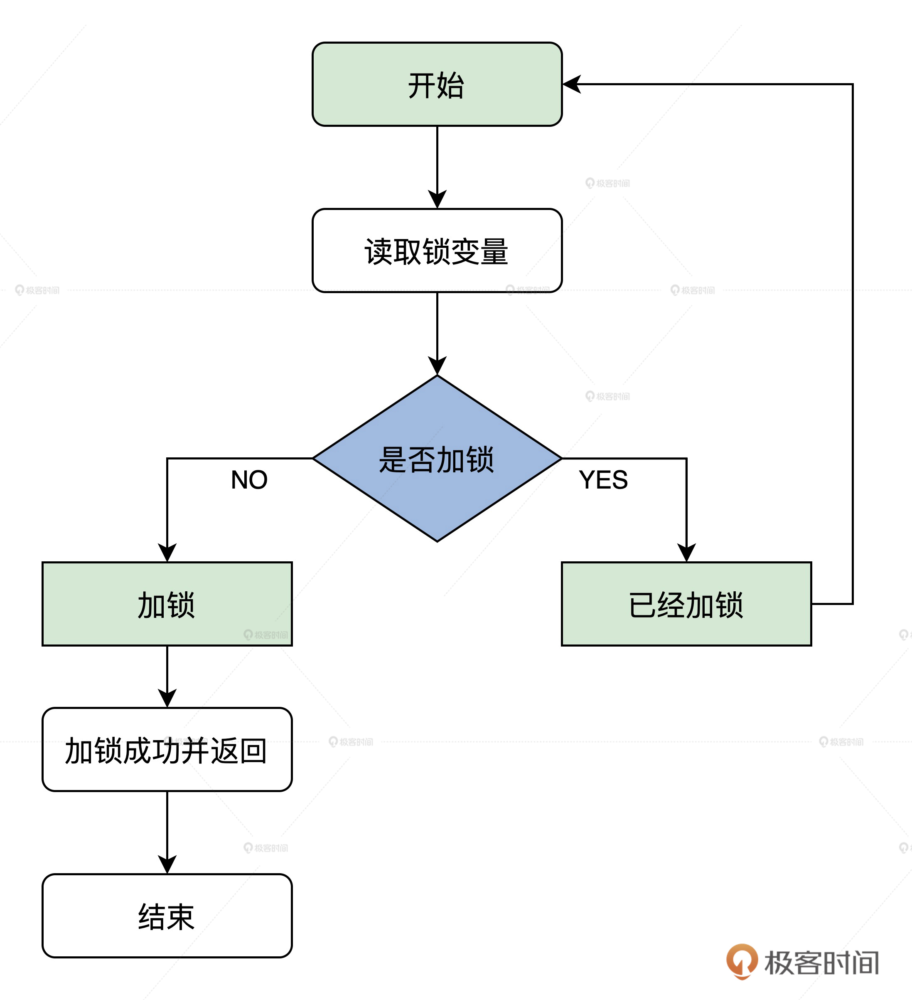
我们先来看看Linux原始自旋锁的数据结构，为方便你阅读，我删除了用于调试的数据字段，代码如下。
//最底层的自旋锁数据结构
typedef struct{
volatile unsigned long lock;//真正的锁值变量，用volatile标识
}spinlock_t;
Linux原始自旋锁数据结构封装了一个unsigned long类型的变量。有了数据结构，我们再来看看操作这个数据结构的函数，即自旋锁接口，代码如下。
#define spin_unlock_string \
"movb $1,%0" \ //写入1表示解锁
:"=m" (lock->lock) : : "memory"
#define spin_lock_string \
"\n1:\t" \
"lock ; decb %0\n\t" \ //原子减1
"js 2f\n" \ //当结果小于0则跳转到标号2处，表示加锁失败
".section .text.lock,\"ax\"\n" \ //重新定义一个代码段，这是优化技术，避免后面的代码填充cache，因为大部分情况会加锁成功，链接器会处理好这个代码段的
"2:\t" \
"cmpb $0,%0\n\t" \ //和0比较
"rep;nop\n\t" \ //空指令
"jle 2b\n\t" \ //小于或等于0跳转到标号2
"jmp 1b\n" \ //跳转到标号1
".previous"
//获取自旋锁
static inline void spin_lock(spinlock_t*lock){
__asm__ __volatile__(
spin_lock_string
:"=m"(lock->lock)::"memory"
);
}
//释放自旋锁
static inline void spin_unlock(spinlock_t*lock){
__asm__ __volatile__(
spin_unlock_string
);
}
上述代码中用spin_lock_string、spin_unlock_string两个宏，定义了获取、释放自旋锁的汇编指令。spin_unlock_string只是简单将锁值变量设置成1，表示释放自旋锁，spin_lock_string中并没有像我们Cosmos一样使用xchg指令，而是使用了decb指令，这条指令也能原子地执行减1操作。
开始锁值变量为1时，执行decb指令就变成了0，0就表示加锁成功。如果小于0，则表示有其它进程已经加锁了，就会导致循环比较。
Linux排队自旋锁
现在我们再来看看100个进程获取同一个自旋锁的情况，开始1个进程获取了自旋锁L，后面继续来了99个进程，它们都要获取自旋锁L，但是它们必须等待，这时第1进程释放了自旋锁L。请问，这99个进程中谁能先获取自旋锁L呢？
答案是不确定，因为这个次序依赖于哪个CPU核心能最先访问内存，而哪个CPU核心可以访问内存是由总线仲裁协议决定的。
很有可能最后来的进程最先获取自旋锁L，这对其它等待的进程极其不公平，为了解决获取自旋锁的公平性，Linux开发出了排队自旋锁。
你可以这样理解，想要给进程排好队，就需要确定顺序，也就是进程申请获取锁的先后次序，Linux的排队自旋锁通过保存这个信息，就能更公平地调度进程了。
为了保存顺序信息，排队自旋锁重新定义了数据结构。
//RAW层的自旋锁数据结构
typedef struct raw_spinlock{
unsigned int slock;//真正的锁值变量
}raw_spinlock_t;
//最上层的自旋锁数据结构
typedef struct spinlock{
struct raw_spinlock rlock;
}spinlock_t;
//Linux没有这样的结构，这只是为了描述方便
typedef struct raw_spinlock{
union {
unsigned int slock;//真正的锁值变量
struct {
u16 owner;
u16 next;
}
}
}raw_spinlock_t;
slock域被分成两部分，分别保存锁持有者和未来锁申请者的序号，如上述代码10～16行所示。
只有next域与owner域相等时，才表示自旋锁处于未使用的状态（此时也没有进程申请该锁）。在排队自旋锁初始化时，slock被置为0，即next和owner被置为0，Linux进程执行申请自旋锁时，原子地将next域加1，并将原值返回作为自己的序号。
如果返回的序号等于申请时的owner值，说明自旋锁处于未使用的状态，则进程直接获得锁；否则，该进程循环检查owner域是否等于自己持有的序号，一旦相等，则表明锁轮到自己获取。
进程释放自旋锁时，原子地将owner域加1即可，下一个进程将会发现这一变化，从循环状态中退出。进程将严格地按照申请顺序依次获取排队自旋锁。这样一来，原先进程无序竞争的乱象就迎刃而解了。
static inline void __raw_spin_lock(raw_spinlock_t*lock){
int inc = 0x00010000;
int tmp;
__asm__ __volatile__(
"lock ; xaddl %0, %1\n" //将inc和slock交换，然后 inc=inc+slock
//相当于原子读取next和owner并对next+1
"movzwl %w0, %2\n\t"//将inc的低16位做0扩展后送tmp tmp=(u16)inc
"shrl $16, %0\n\t" //将inc右移16位 inc=inc>>16
"1:\t"
"cmpl %0, %2\n\t" //比较inc和tmp，即比较next和owner
"je 2f\n\t" //相等则跳转到标号2处返回
"rep ; nop\n\t" //空指令
"movzwl %1, %2\n\t" //将slock的低16位做0扩展后送tmp 即tmp=owner
"jmp 1b\n" //跳转到标号1处继续比较
"2:"
:"+Q"(inc),"+m"(lock->slock),"=r"(tmp)
::"memory","cc"
);
}
#define UNLOCK_LOCK_PREFIX LOCK_PREFIX
static inline void __raw_spin_unlock(raw_spinlock_t*lock){
__asm__ __volatile__(
UNLOCK_LOCK_PREFIX"incw %0"//将slock的低16位加1 即owner+1
:"+m"(lock->slock)
::"memory","cc");
}
上述代码中的注释已经描述得很清楚了，每条指令都有注解，供你参考。这里需要注意的是Linux为了避免差异性，在spinlock_t结构体中包含了raw_spinlock_t，而在raw_spinlock_t结构体中并没使用next和owner字段，而是在代码中直接操作slock的高16位和低16位来实现的。
不知道你有没有过这样的经历？当你去银行办事，又发现人很多时，你很可能会选择先去处理一些别的事情，等过一会人比较少了，再来办理我们自己的业务。
其实，在使用自旋锁时也有同样的情况，当一个进程发现另一个进程已经拥有自己所请求的自旋锁时，就自愿放弃，转而做其它别的工作，并不想在这里循环等待，浪费自己的时间。
对于这种情况，Linux同样提供了相应的自旋锁接口，如下所示。
static inline int __raw_spin_trylock(raw_spinlock_t*lock){
int tmp;
int new;
asm volatile(
"movl %2,%0\n\t"//tmp=slock
"movl %0,%1\n\t"//new=tmp
"roll $16, %0\n\t"//tmp循环左移16位，即next和owner交换了
"cmpl %0,%1\n\t"//比较tmp和new即（owner、next）？=（next、owner）
"jne 1f\n\t" //不等则跳转到标号1处
"addl $0x00010000, %1\n\t"//相当于next+1
"lock ; cmpxchgl %1,%2\n\t"//new和slock交换比较
"1:"
"sete %b1\n\t" //new = eflags.ZF位，ZF取决于前面的判断是否相等
"movzbl %b1,%0\n\t" //tmp = new
:"=&a"(tmp),"=Q"(new),"+m"(lock->slock)
::"memory","cc");
return tmp;
}
int __lockfunc _spin_trylock(spinlock_t*lock){
preempt_disable();
if(_raw_spin_trylock(lock)){
spin_acquire(&lock->dep_map,0,1,_RET_IP_);
return 1;
}
preempt_enable();
return 0;
}
#define spin_trylock(lock) __cond_lock(lock, _spin_trylock(lock))
_cond_lock只用代码静态检查工作，一定要明白_spin_trylock返回1表示尝试加锁成功，可以安全的地问共享资源了；返回值为0则表示尝试加锁失败，不能操作共享资源，应该等一段时间，再次尝试加锁。
Linux信号量
Linux中的信号量同样是用来保护共享资源，能保证资源在一个时刻只有一个进程使用，这是单值信号量。也可以作为资源计数器，比如一种资源有五份，同时最多可以有五个进程，这是多值信号量。
单值信号量，类比于私人空间一次只进去一个人，其信号量的值初始值为1，而多值信号量，相当于是客厅，可同时容纳多个人。其信号量的值初始值为5，就可容纳5个人。
信号量的值为正的时候。所申请的进程可以锁定使用它。若为0，说明它被其它进程占用，申请的进程要进入睡眠队列中，等待被唤醒。所以信号量最大的优势是既可以使申请失败的进程睡眠，还可以作为资源计数器使用。
我们先来看看Linux实现信号量所使用的数据结构，如下所示：
struct semaphore{
raw_spinlock_t lock;//保护信号量自身的自旋锁
unsigned int count;//信号量值
struct list_head wait_list;//挂载睡眠等待进程的链表
};
下面我们就跟着Linux信号量接口函数，一步步探索Linux信号量工作原理，和它对进程状态的影响，先来看看Linux信号量的使用案例，如下所示。
#define down_console_sem() do { \
down(&console_sem);\
} while (0)
static void __up_console_sem(unsigned long ip) {
up(&console_sem);
}
#define up_console_sem() __up_console_sem(_RET_IP_)
//加锁console
void console_lock(void)
{
might_sleep();
down_console_sem();//获取信号量console_sem
if (console_suspended)
return;
console_locked = 1;
console_may_schedule = 1;
}
//解锁console
void console_unlock(void)
{
static char ext_text[CONSOLE_EXT_LOG_MAX];
static char text[LOG_LINE_MAX + PREFIX_MAX];
//……删除了很多代码
up_console_sem();//释放信号量console_sem
raw_spin_lock(&logbuf_lock);
//……删除了很多代码
}
为了简单说明问题，我删除了很多代码，上面代码中以console驱动为例说明了信号量的使用。
在Linux源代码的kernel/printk.c中，使用宏DEFINE_SEMAPHORE声明了一个单值信号量console_sem，也可以说是互斥锁，它用于保护console驱动列表console_drivers以及同步对整个console驱动的访问。
其中定义了宏down_console_sem()来获得信号量console_sem，定义了宏up_console_sem()来释放信号量console_sem，console_lock和console_unlock函数是用于互斥访问console驱动的，核心操作就是调用前面定义两个宏。
上面的情景中，down_console_sem()和up_console_sem()宏的核心主要是调用了信号量的接口函数down、up函数，完成获取、释放信号量的核心操作，代码如下。
static inline int __sched __down_common(struct semaphore *sem, long state,long timeout)
{
struct semaphore_waiter waiter;
//把waiter加入sem->wait_list的头部
list_add_tail(&waiter.list, &sem->wait_list);
waiter.task = current;//current表示当前进程，即调用该函数的进程
waiter.up = false;
for (;;) {
if (signal_pending_state(state, current))
goto interrupted;
if (unlikely(timeout <= 0))
goto timed_out;
__set_current_state(state);//设置当前进程的状态，进程睡眠，即先前__down函数中传入的TASK_UNINTERRUPTIBLE：该状态是等待资源有效时唤醒（比如等待键盘输入、socket连接、信号（signal）等等），但不可以被中断唤醒
raw_spin_unlock_irq(&sem->lock);//释放在down函数中加的锁
timeout = schedule_timeout(timeout);//真正进入睡眠
raw_spin_lock_irq(&sem->lock);//进程下次运行会回到这里，所以要加锁
if (waiter.up)
return 0;
}
timed_out:
list_del(&waiter.list);
return -ETIME;
interrupted:
list_del(&waiter.list);
return -EINTR;
//为了简单起见处理进程信号（signal）和超时的逻辑代码我已经删除
}
//进入睡眠等待
static noinline void __sched __down(struct semaphore *sem)
{
__down_common(sem, TASK_UNINTERRUPTIBLE, MAX_SCHEDULE_TIMEOUT);
}
//获取信号量
void down(struct semaphore *sem)
{
unsigned long flags;
//对信号量本身加锁并关中断，也许另一段代码也在操作该信号量
raw_spin_lock_irqsave(&sem->lock, flags);
if (likely(sem->count > 0))
sem->count--;//如果信号量值大于0,则对其减1
else
__down(sem);//否则让当前进程进入睡眠
raw_spin_unlock_irqrestore(&sem->lock, flags);
}
//实际唤醒进程
static noinline void __sched __up(struct semaphore *sem)
{
struct semaphore_waiter *waiter = list_first_entry(&sem->wait_list, struct semaphore_waiter, list);
//获取信号量等待链表中的第一个数据结构semaphore_waiter，它里面保存着睡眠进程的指针
list_del(&waiter->list);
waiter->up = true;
wake_up_process(waiter->task);//唤醒进程重新加入调度队列
}
//释放信号量
void up(struct semaphore *sem)
{
unsigned long flags;
//对信号量本身加锁并关中断，必须另一段代码也在操作该信号量
raw_spin_lock_irqsave(&sem->lock, flags);
if (likely(list_empty(&sem->wait_list)))
sem->count++;//如果信号量等待链表中为空，则对信号量值加1
else
__up(sem);//否则执行唤醒进程相关的操作
raw_spin_unlock_irqrestore(&sem->lock, flags);
}
上述代码中的逻辑，已经描述了信号量的工作原理。需要注意的是，一个进程进入了__down函数中，设置了一个不可中断的等待状态，然后执行了schedule_timeout函数。这个执行了进程的调度器，就直接调度到别的进程运行了。
这时，这个进程就不会返回了，直到下一次它被up函数唤醒。执行了wake_up_process函数以后，重新调度它就会回到schedule_timeout函数下一行代码，沿着调用路经返回，最后从__down函数中出来，即进程睡醒了。
Linux读写锁
在操作系统中，有很多共享数据，进程对这些共享数据要进行修改的情况很少，而读取的情况却是非常多的，这些共享数据的操作基本都是在读取。
如果每次读取这些共享数据都加锁的话，那就太浪费时间了，会降低进程的运行效率。因为读操作不会导致修改数据，所以在读取数据的时候不用加锁了，而是可以共享的访问，只有涉及到对共享数据修改的时候，才需要加锁互斥访问。
想像一下100个进程同时读取一个共享数据，而每个进程都要加锁解锁，剩下的进程只能等待，这会大大降低整个系统性能，这时候就需要使用一种新的锁了——读写锁。
读写锁也称为共享-独占（shared-exclusive）锁，当读写锁用读取模式加锁时，它是以共享模式上锁的，当以写入修改模式加锁时，它是以独占模式上锁的（互斥）。
读写锁非常适合读取数据的频率远大于修改数据的频率的场景中。这样可以在任何时刻，保证多个进程的读取操作并发地执行，给系统带来了更高的并发度。
那读写锁是怎么工作的呢？读写之间是互斥的，读取的时候不能写入，写入的时候不能读取，而且读取和写入操作在竞争锁的时候，写会优先得到锁，步骤如下。
1.当共享数据没有锁的时候，读取的加锁操作和写入的加锁操作都可以满足。- 2.当共享数据有读锁的时候，所有的读取加锁操作都可以满足，写入的加锁操作不能满足，读写是互斥的。- 3.当共享数据有写锁的时候，所有的读取的加锁操作都不能满足，所有的写入的加锁操作也不能满足，读与写之间是互斥的，写与写之间也是互斥的。
如果你感觉刚才说的步骤还是太复杂，那我再给你画一个表，你就清楚了，如下所示。
好了，我们明白了读写锁的加锁规则，现在就去看看Linux中的读写锁的实现，Linux中的读写锁本质上是自旋锁的变种。
后面这段代码是Linux中读写锁的核心代码，请你注意，实际操作的时候，我们不是直接使用上面的函数和数据结构，而是应该使用Linux提供的标准接口，如read_lock、write_lock等。
//读写锁初始化锁值
#define RW_LOCK_BIAS 0x01000000
//读写锁的底层数据结构
typedef struct{
unsigned int lock;
}arch_rwlock_t;
//释放读锁
static inline void arch_read_unlock(arch_rwlock_t*rw){
asm volatile(
LOCK_PREFIX"incl %0" //原子对lock加1
:"+m"(rw->lock)::"memory");
}
//释放写锁
static inline void arch_write_unlock(arch_rwlock_t*rw){
asm volatile(
LOCK_PREFIX"addl %1, %0"//原子对lock加上RW_LOCK_BIAS
:"+m"(rw->lock):"i"(RW_LOCK_BIAS):"memory");
}
//获取写锁失败时调用
ENTRY(__write_lock_failed)
//(%eax)表示由eax指向的内存空间是调用者传进来的
2:LOCK_PREFIX addl $ RW_LOCK_BIAS,(%eax)
1:rep;nop//空指令
cmpl $RW_LOCK_BIAS,(%eax)
//不等于初始值则循环比较，相等则表示有进程释放了写锁
jne 1b
//执行加写锁
LOCK_PREFIX subl $ RW_LOCK_BIAS,(%eax)
jnz 2b //不为0则继续测试，为0则表示加写锁成功
ret //返回
ENDPROC(__write_lock_failed)
//获取读锁失败时调用
ENTRY(__read_lock_failed)
//(%eax)表示由eax指向的内存空间是调用者传进来的
2:LOCK_PREFIX incl(%eax)//原子加1
1: rep; nop//空指令
cmpl $1,(%eax) //和1比较 小于0则
js 1b //为负则继续循环比较
LOCK_PREFIX decl(%eax) //加读锁
js 2b //为负则继续加1并比较，否则返回
ret //返回
ENDPROC(__read_lock_failed)
//获取读锁
static inline void arch_read_lock(arch_rwlock_t*rw){
asm volatile(
LOCK_PREFIX" subl $1,(%0)\n\t"//原子对lock减1
"jns 1f\n"//不为小于0则跳转标号1处，表示获取读锁成功
"call __read_lock_failed\n\t"//调用__read_lock_failed
"1:\n"
::LOCK_PTR_REG(rw):"memory");
}
//获取写锁
static inline void arch_write_lock(arch_rwlock_t*rw){
asm volatile(
LOCK_PREFIX"subl %1,(%0)\n\t"//原子对lock减去RW_LOCK_BIAS
"jz 1f\n"//为0则跳转标号1处
"call __write_lock_failed\n\t"//调用__write_lock_failed
"1:\n"
::LOCK_PTR_REG(rw),"i"(RW_LOCK_BIAS):"memory");
}
Linux读写锁的原理本质是基于计数器，初始值为0x01000000，获取读锁时对其减1，结果不小于0则表示获取读锁成功，获取写锁时直接减去0x01000000。
说到这里你可能要问了，为何要减去初始值呢？这是因为只有当锁值为初始值时，减去初始值结果才可以是0，这是唯一没有进程持有任何锁的情况，这样才能保证获取写锁时是互斥的。
__read_lock_failed、__write_lock_failed是两个汇编函数，注释写得很详细了，和前面自旋锁的套路是一样的。我们可以看出，读写锁其实是带计数的特殊自旋锁，能同时被多个读取数据的进程占有或一个修改数据的进程占有，但不能同时被读取数据的进程和修改数据的进程占有。
我们再次梳理一下获取、释放读写锁的流程，如下所示。
1.获取读锁时，锁值变量lock计数减去1，判断结果的符号位是否为1。若结果符号位为0时，获取读锁成功，即表示lock大于0。- 2.获取读锁时，锁值变量lock计数减去1，判断结果的符号位是否为1。若结果符号位为1时，获取读锁失败，表示此时读写锁被修改数据的进程占有，此时调用__read_lock_failed失败处理函数，循环测试lock+1的值，直到结果的值大于等于1。- 3.获取写锁时，锁值变量lock计数减去RW_LOCK_BIAS_STR，即lock-0x01000000，判断结果是否为0。若结果为0时，表示获取写锁成功。- 4.获取写锁时，锁值变量lock计数减去RW_LOCK_BIAS_STR，即lock-0x01000000，判断结果是否为0。若结果不为0时，获取写锁失败，表示此时有读取数据的进程占有读锁或有修改数据的进程占有写锁，此时调用__write_lock_failed失败处理函数，循环测试lock+0x01000000，直到结果的值等于0x01000000。
重点回顾
好了，这节课的内容讲完了。我们一起学习了Linux上实现数据同步的五大利器，分别是Linux原子变量、Linux中断控制、Linux自旋锁、Linux信号量、Linux读写锁。我把重点给你梳理一下。
锁，保证了数据的安全访问，但是它给程序的并行性能造成了巨大损害，所以在设计一个算法时应尽量避免使用锁。若无法避免，则应根据实际情况使用相应类型的锁，以降低锁的不当使用带来的性能损失。
思考题
请试着回答：上述Linux的读写锁，支持多少个进程并发读取共享数据？这样的读写锁有什么不足？
欢迎你在留言区和我交流，相信通过积极参与，你将更好地理解这节课的内容。
我是 LMOS，我们下节课见！
10 设置工作模式与环境（上）：建立计算机
你好，我是LMOS。
经过前面那么多课程的准备，现在我们距离把我们自己操作系统跑起来，已经是一步之遥了。现在，你是不是很兴奋，很激动？有这些情绪说明你是喜欢这门课程的。
接下来的三节课，我们会一起完成一个壮举，从GRUB老大哥手中接过权柄，让计算机回归到我们的革命路线上来，为我们之后的开发自己的操作系统做好准备。
具体我是这样来安排的，今天这节课，我们先来搭好操作系统的测试环境。第二节课，我们一起实现一个初始化环境的组件——二级引导器，让它真正继承GRUB权力。第三节课，我们正式攻下初始化的第一个山头，对硬件抽象层进行初始化。
好，让我们正式开始今天的学习。首先我们来解决内核文件封装的问题，然后动手一步步建好虚拟机和生产虚拟硬盘。课程配套代码你可以在这里下载。
从内核映像格式说起
我们都知道，一个内核工程肯定有多个文件组成，为了不让GRUB老哥加载多个文件，因疲劳过度而产生问题，我们决定让GRUB只加载一个文件。
但是要把多个文件变成一个文件就需要封装，即把多个文件组装在一起形成一个文件。这个文件我们称为内核映像文件，其中包含二级引导器的模块，内核模块，图片和字库文件。为了这映像文件能被GRUB加载，并让它自身能够解析其中的内容，我们就要定义好具体的格式。如下图所示。

上图中的GRUB头有4KB大小，GRUB正是通过这一小段代码，来识别映像文件的。另外，根据映像文件头描述符和文件头描述符里的信息，这一小段代码还可以解析映像文件中的其它文件。
映像文件头描述符和文件描述符是两个C语言结构体，如下所示。
//映像文件头描述符
typedef struct s_mlosrddsc
{
u64_t mdc_mgic; //映像文件标识
u64_t mdc_sfsum;//未使用
u64_t mdc_sfsoff;//未使用
u64_t mdc_sfeoff;//未使用
u64_t mdc_sfrlsz;//未使用
u64_t mdc_ldrbk_s;//映像文件中二级引导器的开始偏移
u64_t mdc_ldrbk_e;//映像文件中二级引导器的结束偏移
u64_t mdc_ldrbk_rsz;//映像文件中二级引导器的实际大小
u64_t mdc_ldrbk_sum;//映像文件中二级引导器的校验和
u64_t mdc_fhdbk_s;//映像文件中文件头描述的开始偏移
u64_t mdc_fhdbk_e;//映像文件中文件头描述的结束偏移
u64_t mdc_fhdbk_rsz;//映像文件中文件头描述的实际大小
u64_t mdc_fhdbk_sum;//映像文件中文件头描述的校验和
u64_t mdc_filbk_s;//映像文件中文件数据的开始偏移
u64_t mdc_filbk_e;//映像文件中文件数据的结束偏移
u64_t mdc_filbk_rsz;//映像文件中文件数据的实际大小
u64_t mdc_filbk_sum;//映像文件中文件数据的校验和
u64_t mdc_ldrcodenr;//映像文件中二级引导器的文件头描述符的索引号
u64_t mdc_fhdnr;//映像文件中文件头描述符有多少个
u64_t mdc_filnr;//映像文件中文件头有多少个
u64_t mdc_endgic;//映像文件结束标识
u64_t mdc_rv;//映像文件版本
}mlosrddsc_t;
#define FHDSC_NMAX 192 //文件名长度
//文件头描述符
typedef struct s_fhdsc
{
u64_t fhd_type;//文件类型
u64_t fhd_subtype;//文件子类型
u64_t fhd_stuts;//文件状态
u64_t fhd_id;//文件id
u64_t fhd_intsfsoff;//文件在映像文件位置开始偏移
u64_t fhd_intsfend;//文件在映像文件的结束偏移
u64_t fhd_frealsz;//文件实际大小
u64_t fhd_fsum;//文件校验和
char fhd_name[FHDSC_NMAX];//文件名
}fhdsc_t;
有了映像文件格式，我们还要有个打包映像的工具，我给你提供了一个Linux命令行下的工具（在Gitee代码仓库中，通过这个链接获取），你只要明白使用方法就可以，如下所示。
lmoskrlimg -m k -lhf GRUB头文件 -o 映像文件 -f 输入的文件列表
-m 表示模式 只能是k内核模式
-lhf 表示后面跟上GRUB头文件
-o 表示输出的映像文件名
-f 表示输入文件列表
例如：lmoskrlimg -m k -lhf grubhead.bin -o kernel.img -f file1.bin file2.bin file3.bin file4.bin
准备虚拟机
打包好了映像文件，我们还有很重要的一步配置——准备虚拟机。这里你不妨先想一想，开发应用跟开发操作系统有什么不同呢？
在你开发应用程序时，可以在IDE中随时编译运行应用程序，然后观察结果状态是否正确，中间可能还要百度一下查找相关资料，不要笑，这是大多数人的开发日常。但是你开发操作系统时，不可能写5行代码之后就安装在计算机上，重启计算机去观察运行结果，这非常繁琐，也很浪费时间。
好在我们有虚拟机这个好帮手。虚拟机用软件的方式实现了真实计算机的全部功能特性，它在我们所使用的Linux下，其实就是个应用程序。
使用虚拟机软件我们就可以在现有的Linux系统之上开发、编译、运行我们的操作系统了，省时且方便。节约的时间我们可以喝茶、听听音乐、享受美好生活。
安装虚拟机
这里我们一致约定使用甲骨文公司的VirtualBox虚拟机。经过测试，我发现VirtualBox虚拟机有很多优点，它的功能相对完善、性能强、BUG少，而且比较稳定。
在现代Linux系统上安装VirtualBox虚拟机是非常简单的，你只要在Linux发行版中找到其应用商店，在其中搜索VirtualBox就行了。我们作为专业人士一条命令可以解决的事情，为什么要用鼠标点来点去呢，多浪费时间。
所以，你只要在终端中输入如下命令就行了，我假定你安装了Ubuntu系的Linux发行版，这里Ubuntu的版本不做规定。
sudo apt-get install virtualbox-6.1
运行Virtualbox后，如果出现如下界面，就说明安装VirtualBox成功了。-
建立虚拟电脑
前面我们只是安好了虚拟机管理软件，我们还要新建虚拟机才可以。点击上图中的新建，然后选择专家模式，就可以进入专家模式配置我们的电脑了。
尽管它是虚拟的，我们还是可以选择CPU类型、内存大小、硬盘大小、网络等配置，为了一致性，请你按照如下截图来配置。


可以看到，我们选择了64位的架构，1024MB内存，但是不要添加硬盘，后面自有妙用。显卡是VBoxVGA，还有硬件加速，这会让虚拟机调用我们机器上真实的CPU来运行我们的操作系统。
手工生产硬盘
上面的虚拟机中还没有硬盘，没有硬盘虚拟机就没地方加载数据，我们当然不是要买一块硬盘挂上去，而是要去手工生产一块硬盘。你马上就会发现，从零开始生产一块虚拟硬盘，这比从零开始写一个操作系统简单得多。
至于为什么手工生产硬盘，我先卖个关子，你看完这部分内容就能找到答案。
其实大多数虚拟机都是用文件来模拟硬盘的，即主机系统（HOST OS 即你使用的物理机系统 ）下特定格式的文件，虚拟机中操作系统的数据只是写入了这个文件中。
生产虚拟硬盘
其实虚拟机只是用特定格式的文件来模拟硬盘，所以生产虚拟硬盘就变成了生成对应格式的文件，这就容易多了。我们要建立100MB的硬盘，这意味着要生成100MB的大文件。
下面我们用Linux下的dd命令（用指定大小的块拷贝一个文件，并在拷贝的同时进行指定的转换）生成100MB的纯二进制的文件（就是1～100M字节的文件里面填充为0 ），如下所示。
dd bs=512 if=/dev/zero of=hd.img count=204800
;bs:表示块大小，这里是512字节
;if：表示输入文件，/dev/zero就是Linux下专门返回0数据的设备文件，读取它就返回0
;of：表示输出文件，即我们的硬盘文件。
;count：表示输出多少块
执行以上命令就可以生成100MB的文件。文件数据为全0。由于我们不用转换数据，就是需要全0的文件，所以dd命令只需要这几个参数就行。
格式化虚拟硬盘
虚拟硬盘也需要格式化才能使用，所谓格式化就是在硬盘上建立文件系统。只有建立了文件系统，现有的成熟操作系统才能在其中存放数据。
可是，问题来了。虚拟硬盘毕竟是个文件，如何让Linux在一个文件上建立文件系统呢？这个问题我们要分成三步来解决。
第一步，把虚拟硬盘文件变成Linux下的回环设备，让Linux以为这是个设备。其实在Linux下文件可以是设备，设备可以是文件。下面我们用losetup命令，将hd.img变成Linux的回环设备，代码如下。
sudo losetup /dev/loop0 hd.img
第二步，将losetup命令用于设置回环设备。回环设备可以把文件虚拟成Linux块设备，用来模拟整个文件系统，让用户可以将其看作硬盘、光驱或软驱等设备，并且可用mount命令挂载当作目录来使用。
我们可以用Linux下的mkfs.ext4命令格式化这个/dev/loop0回环块设备，在里面建立EXT4文件系统。
sudo mkfs.ext4 -q /dev/loop0
第三步，我们用Linux下的mount命令，将hd.img文件当作块设备，把它挂载到事先建立的hdisk目录下，并在其中建立一个boot，这也是后面安装GRUB需要的。如果能建立成功，就说明前面的工作都正确完成了。
说到这里，也许你已经想到了我们要手工生成硬盘的原因。这是因为mount命令只能识别在纯二进制文件上建立的文件系统，如果使用虚拟机自己生成的硬盘文件，mount就无法识别我们的文件系统了。
sudo mount -o loop ./hd.img ./hdisk/ ;挂载硬盘文件
sudo mkdir ./hdisk/boot/ ;建立boot目录
进行到这里，我们会发现hdisk目录下多了一个boot目录，这说明我们挂载成功了。
安装GRUB
正常安装系统的情况下，Linux会把GRUB安装在我们的物理硬盘上，可是我们现在要把GRUB安装在我们的虚拟硬盘上，而且我们的操作系统还没有安装程序。所以，我们得利用一下手上Linux（HOST OS），通过GRUB的安装程序，把GRUB安装到指定的设备上（虚拟硬盘）。
想要安装GRUB也不难，具体分为两步，如下所示。
第一步挂载虚拟硬盘文件为loop0回环设备
sudo losetup /dev/loop0 hd.img
sudo mount -o loop ./hd.img ./hdisk/ ;挂载硬盘文件
第二步安装GRUB
sudo grub-install --boot-directory=./hdisk/boot/ --force --allow-floppy /dev/loop0
；--boot-directory 指向先前我们在虚拟硬盘中建立的boot目录。
；--force --allow-floppy ：指向我们的虚拟硬盘设备文件/dev/loop0
可以看到，现在/hdisk/boot/目录下多了一个grub目录，表示我们的GRUB安装成功。请注意，这里还要在/hdisk/boot/grub/目录下建立一个grub.cfg文本文件，GRUB正是通过这个文件内容，查找到我们的操作系统映像文件的。
我们需要在这个文件里写入如下内容。
menuentry 'HelloOS' {
insmod part_msdos
insmod ext2
set root='hd0,msdos1' #我们的硬盘只有一个分区所以是'hd0,msdos1'
multiboot2 /boot/HelloOS.eki #加载boot目录下的HelloOS.eki文件
boot #引导启动
}
set timeout_style=menu
if [ "${timeout}" = 0 ]; then
set timeout=10 #等待10秒钟自动启动
fi
转换虚拟硬盘格式
你可能会好奇，我们前面好不容易生产了mount命令能识别的虚拟硬盘，这里为什么又要转换虚拟硬盘的格式呢？
这是因为这个纯二进制格式只能被我们使用的Linux系统识别，但不能被虚拟机本身识别，但是我们最终目的却是让这个虚拟机加载这个虚拟硬盘，从而启动其中的由我们开发的操作系统。
好在虚拟机提供了专用的转换格式的工具，我们只要输入一行命令即可。
VBoxManage convertfromraw ./hd.img --format VDI ./hd.vdi
;convertfromraw 指向原始格式文件
；--format VDI 表示转换成虚拟需要的VDI格式
安装虚拟硬盘
好了，到这里我们已经生成了VDI格式的虚拟硬盘，这正是我们虚拟机所需要的。然而虚拟硬盘必须要安装虚拟机才可以运行，也就是这个hd.vdi文件要和虚拟机软件联系起来。
因为我们之前在建立虚拟机时并没有配置硬盘相关的信息，所以这里需要我们进行手工配置。
配置虚拟硬盘分两步：第一步，配置硬盘控制器，我们使用SATA的硬盘，其控制器是intelAHCI；第二步，挂载虚拟硬盘文件。
具体操作如下所示。
#第一步 SATA的硬盘其控制器是intelAHCI
VBoxManage storagectl HelloOS --name "SATA" --add sata --controller IntelAhci --portcount 1
#第二步
VBoxManage closemedium disk ./hd.vdi #删除虚拟硬盘UUID并重新分配
#将虚拟硬盘挂到虚拟机的硬盘控制器
VBoxManage storageattach HelloOS --storagectl "SATA" --port 1 --device 0 --type hdd --medium ./hd.vdi
因为VirtualBox虚拟机用UUID管理硬盘，所以每次挂载硬盘时，都需要删除虚拟硬盘的UUID并重新分配。
最成功的失败
现在硬盘也安装好了，下面终于可以启动我们的虚拟电脑了，我们依然通过命令启动，在Linux终端中输入如下命令就可以了。
VBoxManage startvm HelloOS #启动虚拟机
输入以上命令就会出现以下界面，出现GRUB引导菜单。
直接按下回车键，就能选择我们的HelloOS，GRUB就会加载我们的HelloOS，但是会出现如下错误。

上面的错误显示，GRUB没有找到HelloOS.eki文件，这是因为我们从来没有向虚拟硬盘中放入HelloOS.eki文件，所以才会失败。
但这是我们最成功的失败，因为我们配置好了虚拟机，手动建造了硬盘，并在其上安装了GRUB，到这里我们运行测试环境已经准备好了。
其实你不必太过担心，等我们完成了二级引导器的时候，这个问题会迎刃而解。
重点回顾
希望今天这节课给你带来成就感，虽然我们才走出了万里长征的第一步。为了这一步我们准备了很多。但是我们始终没忘记这一课程的目的，即我们要从GRUB老大哥手里接过权柄，控制计算机王国，为此，我们完成了后面这三个工作。
- 我们了解了内核映像格式，以便我们对编译产生的内核程序文件进行封装打包。
- 为了方便测试我们的操作系统，我们了解并安装了虚拟机。
- 手动建立了虚拟硬盘，对其格式化，在其中手动安装了GRUB引导器，并且启动了虚拟电脑。
虽然我们启动虚拟电脑失败了，但是对我们而言却是巨大的成功，因为它标志着我们测试运行内核的环境已经成功建立，下一课我们将继续实现二级引导器。
思考题
请问，我们为什么要把虚拟硬盘格式化成ext4文件系统格式呢？
欢迎你在留言区跟我交流探讨，如果你身边有对写操作系统感兴趣的朋友，也欢迎把这节课分享给他，一起学习。
好，我是LMOS，我们下节课见！
11 设置工作模式与环境（中）：建造二级引导器
你好，我是LMOS。
上节课，我们建造了属于我们的“计算机”，并且在上面安装好了GRUB。这节课我会带你一起实现二级引导器这个关键组件。
看到这儿你可能会问，GRUB不是已经把我们的操作系统加载到内存中了吗？我们有了GRUB，我们为什么还要实现二级引导器呢？
这里我要给你说说我的观点，二级引导器作为操作系统的先驱，它需要收集机器信息，确定这个计算机能不能运行我们的操作系统，对CPU、内存、显卡进行一些初级的配置，放置好内核相关的文件。
因为我们二级引导器不是执行具体的加载任务的，而是解析内核文件、收集机器环境信息，它具体收集哪些信息，我会在下节课详细展开。
设计机器信息结构
二级引导器收集的信息，需要地点存放，我们需要设计一个数据结构。信息放在这个数据结构中，这个结构放在内存1MB的地方，方便以后传给我们的操作系统。
为了让你抓住重点，我选取了这个数据结构的关键代码，这里并没有列出该结构的所有字段（Cosmos/initldr/include/ldrtype.h），这个结构如下所示。
typedef struct s_MACHBSTART
{
u64_t mb_krlinitstack;//内核栈地址
u64_t mb_krlitstacksz;//内核栈大小
u64_t mb_imgpadr;//操作系统映像
u64_t mb_imgsz;//操作系统映像大小
u64_t mb_bfontpadr;//操作系统字体地址
u64_t mb_bfontsz;//操作系统字体大小
u64_t mb_fvrmphyadr;//机器显存地址
u64_t mb_fvrmsz;//机器显存大小
u64_t mb_cpumode;//机器CPU工作模式
u64_t mb_memsz;//机器内存大小
u64_t mb_e820padr;//机器e820数组地址
u64_t mb_e820nr;//机器e820数组元素个数
u64_t mb_e820sz;//机器e820数组大小
//……
u64_t mb_pml4padr;//机器页表数据地址
u64_t mb_subpageslen;//机器页表个数
u64_t mb_kpmapphymemsz;//操作系统映射空间大小
//……
graph_t mb_ghparm;//图形信息
}__attribute__((packed)) machbstart_t;
规划二级引导器
在开始写代码之前，我们先来从整体划分一下二级引导器的功能模块，从全局了解下功能应该怎么划分，这里我特意为你梳理了一个表格。
前面表格里的这些文件，我都放在了课程配套源码中了，你可以从这里下载。
上述这些文件都在lesson10～11/Cosmos/initldr/ldrkrl目录中，它们在编译之后会形成三个文件，编译脚本我已经写好了，下面我们用一幅图来展示这个编译过程。
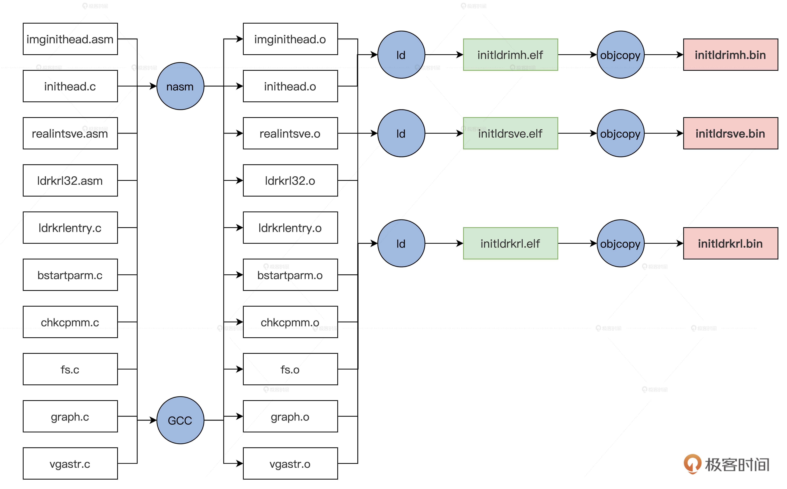
这最后三个文件用我们前面说的映像工具打包成映像文件，其指令如下。
lmoskrlimg -m k -lhf initldrimh.bin -o Cosmos.eki -f initldrkrl.bin initldrsve.bin
实现GRUB头
我们的GRUB头有两个文件组成，一个imginithead.asm汇编文件，它有两个功能，既能让GRUB识别，又能设置C语言运行环境，用于调用C函数；第二就是inithead.c文件，它的主要功能是查找二级引导器的核心文件——initldrkrl.bin，然后把它放置到特定的内存地址上。
我们先来实现imginithead.asm，它主要工作是初始化CPU的寄存器，加载GDT，切换到CPU的保护模式，我们一步一步来实现。
首先是GRUB1和GRUB2需要的两个头结构，代码如下。
MBT_HDR_FLAGS EQU 0x00010003
MBT_HDR_MAGIC EQU 0x1BADB002
MBT2_MAGIC EQU 0xe85250d6
global _start
extern inithead_entry
[section .text]
[bits 32]
_start:
jmp _entry
align 4
mbt_hdr:
dd MBT_HDR_MAGIC
dd MBT_HDR_FLAGS
dd -(MBT_HDR_MAGIC+MBT_HDR_FLAGS)
dd mbt_hdr
dd _start
dd 0
dd 0
dd _entry
ALIGN 8
mbhdr:
DD 0xE85250D6
DD 0
DD mhdrend - mbhdr
DD -(0xE85250D6 + 0 + (mhdrend - mbhdr))
DW 2, 0
DD 24
DD mbhdr
DD _start
DD 0
DD 0
DW 3, 0
DD 12
DD _entry
DD 0
DW 0, 0
DD 8
mhdrend:
然后是关中断并加载GDT，代码如下所示。
_entry:
cli ；关中断
in al, 0x70
or al, 0x80
out 0x70,al ；关掉不可屏蔽中断
lgdt [GDT_PTR] ；加载GDT地址到GDTR寄存器
jmp dword 0x8 :_32bits_mode ；长跳转刷新CS影子寄存器
;………………
;GDT全局段描述符表
GDT_START:
knull_dsc: dq 0
kcode_dsc: dq 0x00cf9e000000ffff
kdata_dsc: dq 0x00cf92000000ffff
k16cd_dsc: dq 0x00009e000000ffff ；16位代码段描述符
k16da_dsc: dq 0x000092000000ffff ；16位数据段描述符
GDT_END:
GDT_PTR:
GDTLEN dw GDT_END-GDT_START-1 ;GDT界限
GDTBASE dd GDT_START
最后是初始化段寄存器和通用寄存器、栈寄存器，这是为了给调用inithead_entry这个C函数做准备，代码如下所示。
_32bits_mode：
mov ax, 0x10
mov ds, ax
mov ss, ax
mov es, ax
mov fs, ax
mov gs, ax
xor eax,eax
xor ebx,ebx
xor ecx,ecx
xor edx,edx
xor edi,edi
xor esi,esi
xor ebp,ebp
xor esp,esp
mov esp,0x7c00 ；设置栈顶为0x7c00
call inithead_entry ；调用inithead_entry函数在inithead.c中实现
jmp 0x200000 ；跳转到0x200000地址
上述代码的最后调用了inithead_entry函数，这个函数我们需要另外在inithead.c中实现，我们这就来实现它，如下所示。
#define MDC_ENDGIC 0xaaffaaffaaffaaff
#define MDC_RVGIC 0xffaaffaaffaaffaa
#define REALDRV_PHYADR 0x1000
#define IMGFILE_PHYADR 0x4000000
#define IMGKRNL_PHYADR 0x2000000
#define LDRFILEADR IMGFILE_PHYADR
#define MLOSDSC_OFF (0x1000)
#define MRDDSC_ADR (mlosrddsc_t*)(LDRFILEADR+0x1000)
void inithead_entry()
{
write_realintsvefile();
write_ldrkrlfile();
return;
}
//写initldrsve.bin文件到特定的内存中
void write_realintsvefile()
{
fhdsc_t *fhdscstart = find_file("initldrsve.bin");
if (fhdscstart == NULL)
{
error("not file initldrsve.bin");
}
m2mcopy((void *)((u32_t)(fhdscstart->fhd_intsfsoff) + LDRFILEADR),
(void *)REALDRV_PHYADR, (sint_t)fhdscstart->fhd_frealsz);
return;
}
//写initldrkrl.bin文件到特定的内存中
void write_ldrkrlfile()
{
fhdsc_t *fhdscstart = find_file("initldrkrl.bin");
if (fhdscstart == NULL)
{
error("not file initldrkrl.bin");
}
m2mcopy((void *)((u32_t)(fhdscstart->fhd_intsfsoff) + LDRFILEADR),
(void *)ILDRKRL_PHYADR, (sint_t)fhdscstart->fhd_frealsz);
return;
}
//在映像文件中查找对应的文件
fhdsc_t *find_file(char_t *fname)
{
mlosrddsc_t *mrddadrs = MRDDSC_ADR;
if (mrddadrs->mdc_endgic != MDC_ENDGIC ||
mrddadrs->mdc_rv != MDC_RVGIC ||
mrddadrs->mdc_fhdnr < 2 ||
mrddadrs->mdc_filnr < 2)
{
error("no mrddsc");
}
s64_t rethn = -1;
fhdsc_t *fhdscstart = (fhdsc_t *)((u32_t)(mrddadrs->mdc_fhdbk_s) + LDRFILEADR);
for (u64_t i = 0; i < mrddadrs->mdc_fhdnr; i++)
{
if (strcmpl(fname, fhdscstart[i].fhd_name) == 0)
{
rethn = (s64_t)i;
goto ok_l;
}
}
rethn = -1;
ok_l:
if (rethn < 0)
{
error("not find file");
}
return &fhdscstart[rethn];
}
我们实现了inithead_entry函数，它主要干了两件事，即分别调用write_realintsvefile();、write_ldrkrlfile()函数，把映像文件中的initldrsve.bin文件和initldrkrl.bin文件写入到特定的内存地址空间中，具体地址在上面代码中的宏有详细定义。
这两个函数分别依赖于find_file和m2mcopy函数。
正如其名，find_file函数负责扫描映像文件中的文件头描述符，对比其中的文件名，然后返回对应的文件头描述符的地址，这样就可以得到文件在映像文件中的位置和大小了。
find_file函数的接力队友就是m2mcopy函数，因为查找对比之后，最后就是m2mcopy函数负责把映像文件复制到具体的内存空间里。
代码中的其它函数我就不展开了，感兴趣的同学请自行研究，或者自己改写。
进入二级引导器
你应该还有印象，刚才说的实现GRUB头这个部分，在imghead.asm汇编文件代码中，我们的最后一条指令是“jmp 0x200000”，即跳转到物理内存的0x200000地址处。
请你注意，这时地址还是物理地址，这个地址正是在inithead.c中由write_ldrkrlfile()函数放置的initldrkrl.bin文件，这一跳就进入了二级引导器的主模块了。
由于模块的改变，我们还需要写一小段汇编代码，建立下面这个initldr32.asm（配套代码库中对应ldrkrl32.asm）文件，并写上如下代码。
_entry:
cli
lgdt [GDT_PTR]；加载GDT地址到GDTR寄存器
lidt [IDT_PTR]；加载IDT地址到IDTR寄存器
jmp dword 0x8 :_32bits_mode；长跳转刷新CS影子寄存器
_32bits_mode:
mov ax, 0x10 ; 数据段选择子(目的)
mov ds, ax
mov ss, ax
mov es, ax
mov fs, ax
mov gs, ax
xor eax,eax
xor ebx,ebx
xor ecx,ecx
xor edx,edx
xor edi,edi
xor esi,esi
xor ebp,ebp
xor esp,esp
mov esp,0x90000 ；使得栈底指向了0x90000
call ldrkrl_entry ；调用ldrkrl_entry函数
xor ebx,ebx
jmp 0x2000000 ；跳转到0x2000000的内存地址
jmp $
GDT_START:
knull_dsc: dq 0
kcode_dsc: dq 0x00cf9a000000ffff ;a-e
kdata_dsc: dq 0x00cf92000000ffff
k16cd_dsc: dq 0x00009a000000ffff ；16位代码段描述符
k16da_dsc: dq 0x000092000000ffff ；16位数据段描述符
GDT_END:
GDT_PTR:
GDTLEN dw GDT_END-GDT_START-1 ;GDT界限
GDTBASE dd GDT_START
IDT_PTR:
IDTLEN dw 0x3ff
IDTBAS dd 0 ；这是BIOS中断表的地址和长度
我来给你做个解读，代码的1～4行是在加载GDTR和IDTR寄存器，然后初始化CPU相关的寄存器。
和先前一样，因为代码模块的改变，所以我们要把GDT、IDT，寄存器这些东西重新初始化，最后再去调用二级引导器的主函数ldrkrl_entry。
巧妙调用BIOS中断
我们不要急着去写ldrkrl_entry函数，因为在后面我们要获得内存布局信息，要设置显卡图形模式，而这些功能依赖于BIOS提供中断服务。
可是，要在C函数中调用BIOS中断是不可能的，因为C语言代码工作在32位保护模式下，BIOS中断工作在16位的实模式。
所以，C语言环境下调用BIOS中断，需要处理的问题如下：
1.保存C语言环境下的CPU上下文 ，即保护模式下的所有通用寄存器、段寄存器、程序指针寄存器，栈寄存器，把它们都保存在内存中。- 2.切换回实模式，调用BIOS中断，把BIOS中断返回的相关结果，保存在内存中。- 3.切换回保护模式，重新加载第1步中保存的寄存器。这样C语言代码才能重新恢复执行。
要完成上面的功能，必须要写一个汇编函数才能完成，我们就把它写在ldrkrl32.asm文件中，如下所示 。
realadr_call_entry:
pushad ;保存通用寄存器
push ds
push es
push fs ;保存4个段寄存器
push gs
call save_eip_jmp ；调用save_eip_jmp
pop gs
pop fs
pop es ;恢复4个段寄存器
pop ds
popad ;恢复通用寄存器
ret
save_eip_jmp:
pop esi ；弹出call save_eip_jmp时保存的eip到esi寄存器中，
mov [PM32_EIP_OFF],esi ；把eip保存到特定的内存空间中
mov [PM32_ESP_OFF],esp ；把esp保存到特定的内存空间中
jmp dword far [cpmty_mode]；长跳转这里表示把cpmty_mode处的第一个4字节装入eip，把其后的2字节装入cs
cpmty_mode:
dd 0x1000
dw 0x18
jmp $
上面的代码我列了详细注释，你一看就能明白。不过这里唯一不好懂的是jmp dword far [cpmty_mode]指令，别担心，听我给你解读一下。
其实这个指令是一个长跳转，表示把[cpmty_mode]处的数据装入CS：EIP，也就是把0x18：0x1000装入到CS：EIP中。
这个0x18就是段描述索引（这个知识点不熟悉的话，你可以回看我们第五节课），它正是指向GDT中的16位代码段描述符；0x1000代表段内的偏移地址，所以在这个地址上，我们必须放一段代码指令，不然CPU跳转到这里将没指令可以执行，那样就会发生错误。
因为这是一个16位代码，所以我们需要新建立一个文件realintsve.asm，如下所示。
[bits 16]
_start:
_16_mode:
mov bp,0x20 ;0x20是指向GDT中的16位数据段描述符
mov ds, bp
mov es, bp
mov ss, bp
mov ebp, cr0
and ebp, 0xfffffffe
mov cr0, ebp ；CR0.P=0 关闭保护模式
jmp 0:real_entry ；刷新CS影子寄存器，真正进入实模式
real_entry:
mov bp, cs
mov ds, bp
mov es, bp
mov ss, bp ；重新设置实模式下的段寄存器 都是CS中值，即为0
mov sp, 08000h ；设置栈
mov bp,func_table
add bp,ax
call [bp] ；调用函数表中的汇编函数，ax是C函数中传递进来的
cli
call disable_nmi
mov ebp, cr0
or ebp, 1
mov cr0, ebp ；CR0.P=1 开启保护模式
jmp dword 0x8 :_32bits_mode
[BITS 32]
_32bits_mode:
mov bp, 0x10
mov ds, bp
mov ss, bp；重新设置保护模式下的段寄存器0x10是32位数据段描述符的索引
mov esi,[PM32_EIP_OFF]；加载先前保存的EIP
mov esp,[PM32_ESP_OFF]；加载先前保存的ESP
jmp esi ；eip=esi 回到了realadr_call_entry函数中
func_table: ;函数表
dw _getmmap ；获取内存布局视图的函数
dw _read ；读取硬盘的函数
dw _getvbemode ；获取显卡VBE模式
dw _getvbeonemodeinfo ；获取显卡VBE模式的数据
dw _setvbemode ；设置显卡VBE模式
上面的代码我们只要将它编译成16位的二进制的文件，并把它放在0x1000开始的内存空间中就可以了。这样在realadr_call_entry函数的最后，就运行到这段代码中来了。
上述的代码的流程是这样的：首先从 _16_mode:标号处进入实模式，然后根据传递进来（由ax寄存器传入）的函数号，到函数表中调用对应的函数，里面的函数执行完成后，再次进入保护模式，加载EIP和ESP寄存器从而回到realadr_call_entry函数中。GDT还是imghead.asm汇编代码文件中的GDT，这没有变，因为它是由GDTR寄存器指向的。
说到这里，相信你会立刻明白，之前write_realintsvefile()函数的功能与意义了。它会把映像文件中的initldrsve.bin文件写入到特定的内存地址空间中，而initldrsve.bin正是由上面的realintsve.asm文件编译而成的。
二级引导器主函数
好，现在我们准备得差不多了，从二级引导器的主函数开始，这个函数我们要用C来写，估计你也感受到了写汇编语言的压力，所以不能老是写汇编。
我们先建立一个C文件ldrkrlentry.c，在其中写上一个主函数，代码如下。
void ldrkrl_entry()
{
init_bstartparm();
return;
}
上述代码中的 ldrkrl_entry()函数在initldr32.asm文件（配套代码库中对应ldrkrl32.asm）中被调用，从那条call ldrkrl_entry 指令开始进入了ldrkrl_entry()函数，在其中调用了init_bstartparm()函数，这个函数我们还没有实现，但通过名字我们不难推测，它是负责处理开始参数的。
你还记不记得，我们建造二级引导器的目的，就是要收集机器环境信息。我们要把这些信息形成一个有结构的参数，传递给我们的操作系统内核以备后续使用。
由此，我们能够确定，init_bstartparm()函数成了收集机器环境信息的主函数，下节课我们就会去实现它。
重点回顾
今天我们开始实现二级引导器了，但是我们还没有完全实现，我们下一节课再接着继续这项工作。
现在，我们来梳理一下这节课的内容，回顾一下我们今天的成果。
1.我们设计了机器信息结构，用于存放后面二级引导器收集到的机器信息。- 2.对二级引导器代码模块进行了规划，确定各模块的主要功能。- 3.实现了GRUB规定的GRUB头，以便被GRUB识别，在GRUB头中初始化了CPU寄存器，并且跳转到物理内存的0x200000地址处，真正进入到二级引导器中开始运行。- 4.为了二级引导器能够调用BIOS中断服务程序，我们实现了专门用来完成调用BIOS中断服务程序的realintsve.asm模块。- 5.最后，我们实现了二级引导器的主函数，由它调用完成其它功能的函数。
这里我还想聊聊，为什么我们要花这么多功夫，去设计二级引导器这个组件呢？
我们把这些处理操作系统运行环境的工作独立出来，交给二级引导器来做，这会大大降低后面开发操作系统的难度，也能增加操作系统的通用性。而且，针对不同的硬件平台，我们只要开发不同的二级引导器就好了。
思考题
请问GRUB头中为什么需要_entry标号和_start标号的地址？
欢迎你在留言区跟我交流活动。如果你身边的同事、朋友，对二级引导器的建立有兴趣，也欢迎你把这节课分享给他。
好，我是LMOS，我们下节课见！
12 设置工作模式与环境（下）：探查和收集信息
你好，我是LMOS。
上节课我们动手实现了自己的二级引导器。今天这节课我们将进入二级引导器，完成具体工作的环节。
在二级引导器中，我们要检查CPU是否支持64位的工作模式、收集内存布局信息，看看是不是合乎我们操作系统的最低运行要求，还要设置操作系统需要的MMU页表、设置显卡模式、释放中文字体文件。
今天课程的配套代码，你可以点击这里，自行下载。
检查与收集机器信息
如果ldrkrl_entry()函数是总裁，那么init_bstartparm()函数则是经理，它负责管理检查CPU模式、收集内存信息，设置内核栈，设置内核字体、建立内核MMU页表数据。
为了使代码更加清晰，我们并不直接在ldrkrl_entry()函数中搞事情，而是准备在另一个bstartparm.c文件中实现一个init_bstartparm()。
下面我们就来动手实现它，如下所示。
//初始化machbstart_t结构体，清0,并设置一个标志
void machbstart_t_init(machbstart_t* initp)
{
memset(initp,0,sizeof(machbstart_t));
initp->mb_migc=MBS_MIGC;
return;
}
void init_bstartparm()
{
machbstart_t* mbsp = MBSPADR;//1MB的内存地址
machbstart_t_init(mbsp);
return;
}
目前我们的经理init_bstartparm()函数只是调用了一个machbstart_t_init()函数，在1MB内存地址处初始化了一个机器信息结构machbstart_t，后面随着干活越来越多，还会调用更多的函数的。
检查CPU
首先要检查我们的CPU，因为它是执行程序的关键。我们要搞清楚它能执行什么形式的代码，支持64位长模式吗？
这个工作我们交给init_chkcpu()函数来干，由于我们要CPUID指令来检查CPU是否支持64位长模式，所以这个函数中需要找两个帮工：chk_cpuid、chk_cpu_longmode来干两件事，一个是检查CPU否支持CPUID指令，然后另一个用CPUID指令检查CPU支持64位长模式。
下面我们去写好它们，如下所示。
//通过改写Eflags寄存器的第21位，观察其位的变化判断是否支持CPUID
int chk_cpuid()
{
int rets = 0;
__asm__ __volatile__(
"pushfl \n\t"
"popl %%eax \n\t"
"movl %%eax,%%ebx \n\t"
"xorl $0x0200000,%%eax \n\t"
"pushl %%eax \n\t"
"popfl \n\t"
"pushfl \n\t"
"popl %%eax \n\t"
"xorl %%ebx,%%eax \n\t"
"jz 1f \n\t"
"movl $1,%0 \n\t"
"jmp 2f \n\t"
"1: movl $0,%0 \n\t"
"2: \n\t"
: "=c"(rets)
:
:);
return rets;
}
//检查CPU是否支持长模式
int chk_cpu_longmode()
{
int rets = 0;
__asm__ __volatile__(
"movl $0x80000000,%%eax \n\t"
"cpuid \n\t" //把eax中放入0x80000000调用CPUID指令
"cmpl $0x80000001,%%eax \n\t"//看eax中返回结果
"setnb %%al \n\t" //不为0x80000001,则不支持0x80000001号功能
"jb 1f \n\t"
"movl $0x80000001,%%eax \n\t"
"cpuid \n\t"//把eax中放入0x800000001调用CPUID指令，检查edx中的返回数据
"bt $29,%%edx \n\t" //长模式 支持位 是否为1
"setcb %%al \n\t"
"1: \n\t"
"movzx %%al,%%eax \n\t"
: "=a"(rets)
:
:);
return rets;
}
//检查CPU主函数
void init_chkcpu(machbstart_t *mbsp)
{
if (!chk_cpuid())
{
kerror("Your CPU is not support CPUID sys is die!");
CLI_HALT();
}
if (!chk_cpu_longmode())
{
kerror("Your CPU is not support 64bits mode sys is die!");
CLI_HALT();
}
mbsp->mb_cpumode = 0x40;//如果成功则设置机器信息结构的cpu模式为64位
return;
}
上述代码中，检查CPU是否支持CPUID指令和检查CPU是否支持长模式，只要其中一步检查失败，我们就打印一条相应的提示信息，然后主动死机。这里需要你留意的是，最后设置机器信息结构中的mb_cpumode字段为64,mbsp正是传递进来的机器信息machbstart_t结构体的指针。
获取内存布局
好了，CPU已经检查完成 ，合乎我们的要求。下面就要获取内存布局信息了，物理内存在物理地址空间中是一段一段的，描述一段内存有一个数据结构，如下所示。
#define RAM_USABLE 1 //可用内存
#define RAM_RESERV 2 //保留内存不可使用
#define RAM_ACPIREC 3 //ACPI表相关的
#define RAM_ACPINVS 4 //ACPI NVS空间
#define RAM_AREACON 5 //包含坏内存
typedef struct s_e820{
u64_t saddr; /* 内存开始地址 */
u64_t lsize; /* 内存大小 */
u32_t type; /* 内存类型 */
}e820map_t;
获取内存布局信息就是获取这个结构体的数组，这个工作我们交给init_mem函数来干，这个函数需要完成两件事：一是获取上述这个结构体数组，二是检查内存大小，因为我们的内核对内存容量有要求，不能太小。
下面我们来动手实现这个init_mem函数。
#define ETYBAK_ADR 0x2000
#define PM32_EIP_OFF (ETYBAK_ADR)
#define PM32_ESP_OFF (ETYBAK_ADR+4)
#define E80MAP_NR (ETYBAK_ADR+64)//保存e820map_t结构数组元素个数的地址
#define E80MAP_ADRADR (ETYBAK_ADR+68) //保存e820map_t结构数组的开始地址
void init_mem(machbstart_t *mbsp)
{
e820map_t *retemp;
u32_t retemnr = 0;
mmap(&retemp, &retemnr);
if (retemnr == 0)
{
kerror("no e820map\n");
}
//根据e820map_t结构数据检查内存大小
if (chk_memsize(retemp, retemnr, 0x100000, 0x8000000) == NULL)
{
kerror("Your computer is low on memory, the memory cannot be less than 128MB!");
}
mbsp->mb_e820padr = (u64_t)((u32_t)(retemp));//把e820map_t结构数组的首地址传给mbsp->mb_e820padr
mbsp->mb_e820nr = (u64_t)retemnr;//把e820map_t结构数组元素个数传给mbsp->mb_e820nr
mbsp->mb_e820sz = retemnr * (sizeof(e820map_t));//把e820map_t结构数组大小传给mbsp->mb_e820sz
mbsp->mb_memsz = get_memsize(retemp, retemnr);//根据e820map_t结构数据计算内存大小。
return;
}
上面最难写的是mmap函数。不过，我们还是有办法破解的。如果你理解了前面调用BIOS的机制，就会发现，只要调用了BIOS中断，就能获取e820map结构数组。
为了验证这个结论，我们来看一下mmap的函数调用关系：
void mmap(e820map_t **retemp, u32_t *retemnr)
{
realadr_call_entry(RLINTNR(0), 0, 0);
*retemnr = *((u32_t *)(E80MAP_NR));
*retemp = (e820map_t *)(*((u32_t *)(E80MAP_ADRADR)));
return;
}
可以看到，mmap函数正是通过前面讲的realadr_call_entry函数，来调用实模式下的_getmmap函数的，并且在_getmmap函数中调用BIOS中断的。
_getmmap:
push ds
push es
push ss
mov esi,0
mov dword[E80MAP_NR],esi
mov dword[E80MAP_ADRADR],E80MAP_ADR ;e820map结构体开始地址
xor ebx,ebx
mov edi,E80MAP_ADR
loop:
mov eax,0e820h ;获取e820map结构参数
mov ecx,20 ;e820map结构大小
mov edx,0534d4150h ;获取e820map结构参数必须是这个数据
int 15h ;BIOS的15h中断
jc .1
add edi,20
cmp edi,E80MAP_ADR+0x1000
jg .1
inc esi
cmp ebx,0
jne loop ;循环获取e820map结构
jmp .2
.1:
mov esi,0 ;出错处理，e820map结构数组元素个数为0
.2:
mov dword[E80MAP_NR],esi ;e820map结构数组元素个数
pop ss
pop es
pop ds
ret
如果你不明白上面代码的原理，请回到“Cache与内存：程序放在哪儿”那节课，看一下获取内存视图相关的知识点。
init_mem函数在调用mmap函数后，就会得到e820map结构数组，其首地址和数组元素个数由retemp，retemnr两个变量分别提供。
初始化内核栈
因为我们的操作系统是C语言写的，所以需要有栈，下面我们就来给即将运行的内核初始化一个栈。这个操作非常简单，就是在机器信息结构machbstart_t中，记录一下栈地址和栈大小，供内核在启动时使用。
不过，就算操作再简单，我们也要封装成函数来使用。让我们动手来写出这个函数吧，如下所示。
#define IKSTACK_PHYADR (0x90000-0x10)
#define IKSTACK_SIZE 0x1000
//初始化内核栈
void init_krlinitstack(machbstart_t *mbsp)
{
if (1 > move_krlimg(mbsp, (u64_t)(0x8f000), 0x1001))
{
kerror("iks_moveimg err");
}
mbsp->mb_krlinitstack = IKSTACK_PHYADR;//栈顶地址
mbsp->mb_krlitstacksz = IKSTACK_SIZE; //栈大小是4KB
return;
}
init_krlinitstack函数非常简单，但是其中调用了一个move_krlimg函数你要注意，这个我已经帮你写好啦，它主要负责判断一个地址空间是否和内存中存放的内容有冲突。
因为我们的内存中已经放置了机器信息结构、内存视图结构数组、二级引导器、内核映像文件，所以在处理内存空间时不能和内存中已经存在的他们冲突，否则就要覆盖他们的数据。0x8f000～（0x8f000+0x1001），正是我们的内核栈空间，我们需要检测它是否和其它空间有冲突。
放置内核文件与字库文件
放置内核文件和字库文件这一步，也非常简单，甚至放置其它文件也一样。
因为我们的内核已经编译成了一个独立的二进制程序，和其它文件一起被打包到映像文件中了。所以我们必须要从映像中把它解包出来，将其放在特定的物理内存空间中才可以，放置字库文件和放置内核文件的原理一样，所以我们来一起实现。
//放置内核文件
void init_krlfile(machbstart_t *mbsp)
{
//在映像中查找相应的文件，并复制到对应的地址，并返回文件的大小，这里是查找kernel.bin文件
u64_t sz = r_file_to_padr(mbsp, IMGKRNL_PHYADR, "kernel.bin");
if (0 == sz)
{
kerror("r_file_to_padr err");
}
//放置完成后更新机器信息结构中的数据
mbsp->mb_krlimgpadr = IMGKRNL_PHYADR;
mbsp->mb_krlsz = sz;
//mbsp->mb_nextwtpadr始终要保持指向下一段空闲内存的首地址
mbsp->mb_nextwtpadr = P4K_ALIGN(mbsp->mb_krlimgpadr + mbsp->mb_krlsz);
mbsp->mb_kalldendpadr = mbsp->mb_krlimgpadr + mbsp->mb_krlsz;
return;
}
//放置字库文件
void init_defutfont(machbstart_t *mbsp)
{
u64_t sz = 0;
//获取下一段空闲内存空间的首地址
u32_t dfadr = (u32_t)mbsp->mb_nextwtpadr;
//在映像中查找相应的文件，并复制到对应的地址，并返回文件的大小，这里是查找font.fnt文件
sz = r_file_to_padr(mbsp, dfadr, "font.fnt");
if (0 == sz)
{
kerror("r_file_to_padr err");
}
//放置完成后更新机器信息结构中的数据
mbsp->mb_bfontpadr = (u64_t)(dfadr);
mbsp->mb_bfontsz = sz;
//更新机器信息结构中下一段空闲内存的首地址
mbsp->mb_nextwtpadr = P4K_ALIGN((u32_t)(dfadr) + sz);
mbsp->mb_kalldendpadr = mbsp->mb_bfontpadr + mbsp->mb_bfontsz;
return;
}
以上代码的注释已经很清楚了，都是调用r_file_to_padr函数在映像中查找kernel.bin和font.fnt文件，并复制到对应的空闲内存空间中。
请注意，由于内核是代码数据，所以必须要复制到指定的内存空间中。r_file_to_padr函数我已经帮你写好了，其中的原理在前面的内容里已经做了说明，这里不再展开。
建立MMU页表数据
前面解决了文件放置问题，我们还要解决另一个问题——建立MMU页表。
我们在二级引导器中建立MMU页表数据，目的就是要在内核加载运行之初开启长模式时，MMU需要的页表数据已经准备好了。
由于我们的内核虚拟地址空间从0xffff800000000000开始，所以我们这个虚拟地址映射到从物理地址0开始，大小都是0x400000000即16GB，也就是说我们要虚拟地址空间：0xffff800000000000～0xffff800400000000 映射到物理地址空间0～0x400000000。
我们为了简化编程，使用长模式下的2MB分页方式，下面我们用代码实现它，如下所示。
#define KINITPAGE_PHYADR 0x1000000
void init_bstartpages(machbstart_t *mbsp)
{
//顶级页目录
u64_t *p = (u64_t *)(KINITPAGE_PHYADR);//16MB地址处
//页目录指针
u64_t *pdpte = (u64_t *)(KINITPAGE_PHYADR + 0x1000);
//页目录
u64_t *pde = (u64_t *)(KINITPAGE_PHYADR + 0x2000);
//物理地址从0开始
u64_t adr = 0;
if (1 > move_krlimg(mbsp, (u64_t)(KINITPAGE_PHYADR), (0x1000 * 16 + 0x2000)))
{
kerror("move_krlimg err");
}
//将顶级页目录、页目录指针的空间清0
for (uint_t mi = 0; mi < PGENTY_SIZE; mi++)
{
p[mi] = 0;
pdpte[mi] = 0;
}
//映射
for (uint_t pdei = 0; pdei < 16; pdei++)
{
pdpte[pdei] = (u64_t)((u32_t)pde | KPDPTE_RW | KPDPTE_P);
for (uint_t pdeii = 0; pdeii < PGENTY_SIZE; pdeii++)
{//大页KPDE_PS 2MB，可读写KPDE_RW，存在KPDE_P
pde[pdeii] = 0 | adr | KPDE_PS | KPDE_RW | KPDE_P;
adr += 0x200000;
}
pde = (u64_t *)((u32_t)pde + 0x1000);
}
//让顶级页目录中第0项和第((KRNL_VIRTUAL_ADDRESS_START) >> KPML4_SHIFT) & 0x1ff项，指向同一个页目录指针页
p[((KRNL_VIRTUAL_ADDRESS_START) >> KPML4_SHIFT) & 0x1ff] = (u64_t)((u32_t)pdpte | KPML4_RW | KPML4_P);
p[0] = (u64_t)((u32_t)pdpte | KPML4_RW | KPML4_P);
//把页表首地址保存在机器信息结构中
mbsp->mb_pml4padr = (u64_t)(KINITPAGE_PHYADR);
mbsp->mb_subpageslen = (u64_t)(0x1000 * 16 + 0x2000);
mbsp->mb_kpmapphymemsz = (u64_t)(0x400000000);
return;
}
这个函数的代码写得非常简单，映射的核心逻辑由两重循环控制，外层循环控制页目录指针顶，只有16项，其中每一项都指向一个页目录，每个页目录中有512个物理页地址。
物理地址每次增加2MB，这是由26～30行的内层循环控制，每执行一次外层循环就要执行512次内层循环。
最后，顶级页目录中第0项和第((KRNL_VIRTUAL_ADDRESS_START) >> KPML4_SHIFT) & 0x1ff项，指向同一个页目录指针页，这样的话就能让虚拟地址：0xffff800000000000～0xffff800400000000和虚拟地址：0～0x400000000，访问到同一个物理地址空间0～0x400000000，这样做是有目的，内核在启动初期，虚拟地址和物理地址要保持相同。
设置图形模式
在计算机加电启动时，计算机上显卡会自动进入文本模式，文本模式只能显示ASCII字符，不能显示汉字和图形，所以我们要让显卡切换到图形模式。
切换显卡模式依然要用BIOS中断，这个调用原理我们前面已经了如指掌。在实模式切换显卡模式的汇编代码，我已经帮你写好了，下面我们只要写个C函数调用它们就好了，代码如下所示。
void init_graph(machbstart_t* mbsp)
{
//初始化图形数据结构
graph_t_init(&mbsp->mb_ghparm);
//获取VBE模式，通过BIOS中断
get_vbemode(mbsp);
//获取一个具体VBE模式的信息，通过BIOS中断
get_vbemodeinfo(mbsp);
//设置VBE模式，通过BIOS中断
set_vbemodeinfo();
return;
}
上面init_graph函数中的这些处理VBE模式的代码，我已经帮你写好，你可以自己在graph.c文件查看。
什么？你不懂VBE，其实我开始也不懂，后来通过搜寻资料才知道。
其实VBE是显卡的一个图形规范标准，它定义了显卡的几种图形模式，每个模式包括屏幕分辨率，像素格式与大小，显存大小。调用BIOS 10h中断可以返回这些数据结构。如果你实在对VBE感兴趣，可以自行阅读其规范 。
这里我们选择使用了VBE的118h模式，该模式下屏幕分辨率为1024x768，显存大小是16.8MB。显存开始地址一般为0xe0000000。
屏幕分辨率为1024x768，即把屏幕分成768行，每行1024个像素点，但每个像素点占用显存的32位数据（4字节，红、绿、蓝、透明各占8位）。我们只要往对应的显存地址写入相应的像素数据，屏幕对应的位置就能显示了。
每个像素点，我们可以用如下数据结构表示：
typedef struct s_PIXCL
{
u8_t cl_b; //蓝
u8_t cl_g; //绿
u8_t cl_r; //红
u8_t cl_a; //透明
}__attribute__((packed)) pixcl_t;
#define BGRA(r,g,b) ((0|(r<<16)|(g<<8)|b))
//通常情况下用pixl_t 和 BGRA宏
typedef u32_t pixl_t;
我们再来看看屏幕像素点和显存位置对应的计算方式：
u32_t* dispmem = (u32_t*)mbsp->mb_ghparm.gh_framphyadr;
dispmem[x + (y * 1024)] = pix;
//x，y是像素的位置
串联
好了，所有的实施工作的函数已经完成了，现在我们需要在init_bstartparm()函数中把它们串联起来，即按照事情的先后顺序，依次调用它们完成相应的工作，实现检查、收集机器信息，设置工作环境。
void init_bstartparm()
{
machbstart_t *mbsp = MBSPADR;
machbstart_t_init(mbsp);
//检查CPU
init_chkcpu(mbsp);
//获取内存布局
init_mem(mbsp);
//初始化内核栈
init_krlinitstack(mbsp);
//放置内核文件
init_krlfile(mbsp);
//放置字库文件
init_defutfont(mbsp);
init_meme820(mbsp);
//建立MMU页表
init_bstartpages(mbsp);
//设置图形模式
init_graph(mbsp);
return;
}
到这里，init_bstartparm()函数就成功完成了它的使命。
显示Logo
前面我们已经设置了图形模式，也应该要展示一下了，检查一下工作成果。
我们来显示一下我们内核的logo。其实在二级引导器中，我已经帮你写好了显示logo函数，而logo文件是个24位的位图文件，目前为了简单起见，我们只支持这种格式的图片文件。下面我们去调用这个函数。
void logo(machbstart_t* mbsp)
{
u32_t retadr=0,sz=0;
//在映像文件中获取logo.bmp文件
get_file_rpadrandsz("logo.bmp",mbsp,&retadr,&sz);
if(0==retadr)
{
kerror("logo getfilerpadrsz err");
}
//显示logo文件中的图像数据
bmp_print((void*)retadr,mbsp);
return;
}
void init_graph(machbstart_t* mbsp)
{
//……前面代码省略
//显示
logo(mbsp);
return;
}
在图格式的文件中，除了文件头的数据就是图形像素点的数据，只不过24位的位图每个像素占用3字节，并且位置是倒排的，即第一个像素的数据是在文件的最后，依次类推。我们只要依次将位图文件的数据，按照倒排次序写入显存中，这样就可以显示了。
我们需要把二级引导器的文件和logo文件打包成映像文件，然后放在虚拟硬盘中。
复制文件到虚拟硬盘中得先mount，然后复制，最后转换成VDI格式的虚拟硬盘，再挂载到虚拟机上启动就行了。这也是为什么要手动建立硬盘的原因，打包命令如下。
lmoskrlimg -m k -lhf initldrimh.bin -o Cosmos.eki -f initldrsve.bin initldrkrl.bin font.fnt logo.bmp
如果手动打命令对你来说还是比较难，也别担心，我已经帮你写好了make脚本，你只需要进入代码目录中make vboxtest 就行了，运行结果如下 。
啊哈！终于显示了logo。是不是挺有成就感的？这至少证明我们辛苦写的代码是正确的。
但是目前我们的代码执行流还在二级引导器中，我们的目的是开发自己的操作系统，不，我们是要开发Cosmos。
后面，我们正式用Cosmos命名我们的操作系统。Cosmos可以翻译成宇宙，尽管它刚刚诞生，但我对它充满期待，所以用了这样一个能够“包括万物，包罗万象”的名字。
进入Cosmos
我们在调用Cosmos第一个C函数之前，我们依然要写一小段汇编代码，切换CPU到长模式，初始化CPU寄存器和C语言要用的栈。因为目前代码执行流在二级引导器中，进入到Cosmos中这样在二级引导器中初始过的东西都不能用了。
因为CPU进入了长模式，寄存器的位宽都变了，所以需要重新初始化。让我们一起来写这段汇编代码吧，我们先在Cosmos/hal/x86/下建立一个init_entry.asm文件，写上后面这段代码。
[section .start.text]
[BITS 32]
_start:
cli
mov ax,0x10
mov ds,ax
mov es,ax
mov ss,ax
mov fs,ax
mov gs,ax
lgdt [eGdtPtr]
;开启 PAE
mov eax, cr4
bts eax, 5 ; CR4.PAE = 1
mov cr4, eax
mov eax, PML4T_BADR ;加载MMU顶级页目录
mov cr3, eax
;开启 64bits long-mode
mov ecx, IA32_EFER
rdmsr
bts eax, 8 ; IA32_EFER.LME =1
wrmsr
;开启 PE 和 paging
mov eax, cr0
bts eax, 0 ; CR0.PE =1
bts eax, 31
;开启 CACHE
btr eax,29 ; CR0.NW=0
btr eax,30 ; CR0.CD=0 CACHE
mov cr0, eax ; IA32_EFER.LMA = 1
jmp 08:entry64
[BITS 64]
entry64:
mov ax,0x10
mov ds,ax
mov es,ax
mov ss,ax
mov fs,ax
mov gs,ax
xor rax,rax
xor rbx,rbx
xor rbp,rbp
xor rcx,rcx
xor rdx,rdx
xor rdi,rdi
xor rsi,rsi
xor r8,r8
xor r9,r9
xor r10,r10
xor r11,r11
xor r12,r12
xor r13,r13
xor r14,r14
xor r15,r15
mov rbx,MBSP_ADR
mov rax,KRLVIRADR
mov rcx,[rbx+KINITSTACK_OFF]
add rax,rcx
xor rcx,rcx
xor rbx,rbx
mov rsp,rax
push 0
push 0x8
mov rax,hal_start ;调用内核主函数
push rax
dw 0xcb48
jmp $
[section .start.data]
[BITS 32]
x64_GDT:
enull_x64_dsc: dq 0
ekrnl_c64_dsc: dq 0x0020980000000000 ; 64-bit 内核代码段
ekrnl_d64_dsc: dq 0x0000920000000000 ; 64-bit 内核数据段
euser_c64_dsc: dq 0x0020f80000000000 ; 64-bit 用户代码段
euser_d64_dsc: dq 0x0000f20000000000 ; 64-bit 用户数据段
eGdtLen equ $ - enull_x64_dsc ; GDT长度
eGdtPtr: dw eGdtLen - 1 ; GDT界限
dq ex64_GDT
上述代码中，1～11行表示加载70～75行的GDT，13～17行是设置MMU并加载在二级引导器中准备好的MMU页表，19～30行是开启长模式并打开Cache，34～54行则是初始化长模式下的寄存器，55～61行是读取二级引导器准备的机器信息结构中的栈地址，并用这个数据设置RSP寄存器。
最关键的是63～66行，它开始把8和hal_start函数的地址压入栈中。dw 0xcb48是直接写一条指令的机器码——0xcb48，这是一条返回指令。这个返回指令有点特殊，它会把栈中的数据分别弹出到RIP，CS寄存器，这正是为了调用我们Cosmos的第一个C函数hal_start。
重点回顾
这是我们设置工作模式与环境的最后一课，到此为止我们的二级引导器已经建立起来了，成功从 GRUB手中接过了权柄，开始了它自己的一系列工作，二级引导器完成的工作不算少，我来帮你梳理一下，重点如下。
1.二级引导器彻底摆脱了GRUB的控制之后，就开始检查CPU，获取内存布局信息，确认是不是我们要求的CPU和内存大小，接着初始化内核栈、放置好内核文件和字库文件，建立MMU页表数据和设置好图形模式，为后面运行内核做好准备。
2.当二级引导器完成了上述功能后，就会显示我们操作系统的logo，这标志着二级引导器所有的工作一切正常。
3.进入Cosmos，我们的二级引导器通过跳转到Cosmos的入口，结束了自己光荣使命，Cosmos的入口是一小段汇编代码，主要是开启CPU的长模式，最后调用了Cosmos的第一个C函数hal_start。
你想过吗？我们的二级引导器还可以做更多的事情，其实还可以在二级引导器中获取ACPI表，进而获取CPU数量和其它设备信息，期待你的实现。
思考题
请你想一下，init_bstartparm()函数中的init_mem820()函数，这个函数到底干了什么？
欢迎你在留言区跟我互动。如果你身边有朋友对手写操作系统有热情，也欢迎你把这节课转发给他。
13 第一个C函数：如何实现板级初始化？
你好，我是LMOS。
前面三节课，我们为调用Cosmos的第一个C函数hal_start做了大量工作。这节课我们要让操作系统Cosmos里的第一个C函数真正跑起来啦，也就是说，我们会真正进入到我们的内核中。
今天我们会继续在这个hal_start函数里，首先执行板级初始化，其实就是hal层（硬件抽象层，下同）初始化，其中执行了平台初始化，hal层的内存初始化，中断初始化，最后进入到内核层的初始化。
这节课的配套代码，你可以从这里下载。
第一个C函数
任何软件工程，第一个函数总是简单的，因为它是总调用者，像是一个管理者，坐在那里发号施令，自己却是啥活也不干。
由于这是第一个C函数，也是初始化函数，我们还是要为它单独建立一个文件，以显示对它的尊重，依然在Cosmos/hal/x86/下建立一个hal_start.c文件。写上这样一个函数。
void hal_start()
{
//第一步：初始化hal层
//第二步：初始化内核层
for(;;);
return;
}
根据前面的设计，Cosmos是有hal层和内核层之分，所以在上述代码中，要分两步走。第一步是初始化hal层；第二步，初始化内核层。只是这两步的函数我们还没有写。
然而最后的死循环却有点奇怪，其实它的目的很简单，就是避免这个函数返回，因为这个返回了就无处可去，避免走回头路。
hal层初始化
为了分离硬件的特性，我们设计了hal层，把硬件相关的操作集中在这个层，并向上提供接口，目的是让内核上层不用关注硬件相关的细节，也能方便以后移植和扩展。(关于hal层的设计，可以回顾第3节课)
也许今天我们是在x86平台上写Cosmos，明天就要在ARM平台上开发Cosmos，那时我们就可以写个ARM平台的hal层，来替换Cosmos中的x86平台的hal层。
下面我们在Cosmos/hal/x86/下建立一个halinit.c文件，写出hal层的初始化函数。
void init_hal()
{
//初始化平台
//初始化内存
//初始化中断
return;
}
这个函数也是一个调用者，没怎么干活。不过根据代码的注释能看出，它调用的函数多一点，但主要是完成初始化平台、初始化内存、初始化中断的功能函数。
初始化平台
我们先来写好平台初始化函数，因为它需要最先被调用。
这个函数主要负责完成两个任务，一是把二级引导器建立的机器信息结构复制到hal层中的一个全局变量中，方便内核中的其它代码使用里面的信息，之后二级引导器建立的数据所占用的内存都会被释放。二是要初始化图形显示驱动，内核在运行过程要在屏幕上输出信息。
下面我们在Cosmos/hal/x86/下建立一个halplatform.c文件，写上如下代码。
void machbstart_t_init(machbstart_t *initp)
{
//清零
memset(initp, 0, sizeof(machbstart_t));
return;
}
void init_machbstart()
{
machbstart_t *kmbsp = &kmachbsp;
machbstart_t *smbsp = MBSPADR;//物理地址1MB处
machbstart_t_init(kmbsp);
//复制，要把地址转换成虚拟地址
memcopy((void *)phyadr_to_viradr((adr_t)smbsp), (void *)kmbsp, sizeof(machbstart_t));
return;
}
//平台初始化函数
void init_halplaltform()
{
//复制机器信息结构
init_machbstart();
//初始化图形显示驱动
init_bdvideo();
return;
}
这个代码中别的地方很好理解，就是kmachbsp你可能会有点奇怪，它是个结构体变量，结构体类型是machbstart_t，这个结构和二级引导器所使用的一模一样。
同时，它还是一个hal层的全局变量，我们想专门有个文件定义所有hal层的全局变量，于是我们在Cosmos/hal/x86/下建立一个halglobal.c文件，写上如下代码。
//全局变量定义变量放在data段
#define HAL_DEFGLOB_VARIABLE(vartype,varname) \
EXTERN __attribute__((section(".data"))) vartype varname
HAL_DEFGLOB_VARIABLE(machbstart_t,kmachbsp);
前面的EXTERN，在halglobal.c文件中定义为空，而在其它文件中定义为extern，告诉编译器这是外部文件的变量，避免发生错误。
下面，我们在Cosmos/hal/x86/下的bdvideo.c文件中，写好init_bdvideo函数。
void init_bdvideo()
{
dftgraph_t *kghp = &kdftgh;
//初始化图形数据结构，里面放有图形模式，分辨率，图形驱动函数指针
init_dftgraph();
//初始bga图形显卡的函数指针
init_bga();
//初始vbe图形显卡的函数指针
init_vbe();
//清空屏幕 为黑色
fill_graph(kghp, BGRA(0, 0, 0));
//显示背景图片
set_charsdxwflush(0, 0);
hal_background();
return;
}
init_dftgraph()函数初始了dftgraph_t结构体类型的变量kdftgh，我们在halglobal.c文件中定义这个变量，结构类型我们这样来定义。
typedef struct s_DFTGRAPH
{
u64_t gh_mode; //图形模式
u64_t gh_x; //水平像素点
u64_t gh_y; //垂直像素点
u64_t gh_framphyadr; //显存物理地址
u64_t gh_fvrmphyadr; //显存虚拟地址
u64_t gh_fvrmsz; //显存大小
u64_t gh_onepixbits; //一个像素字占用的数据位数
u64_t gh_onepixbyte;
u64_t gh_vbemodenr; //vbe模式号
u64_t gh_bank; //显存的bank数
u64_t gh_curdipbnk; //当前bank
u64_t gh_nextbnk; //下一个bank
u64_t gh_banksz; //bank大小
u64_t gh_fontadr; //字库地址
u64_t gh_fontsz; //字库大小
u64_t gh_fnthight; //字体高度
u64_t gh_nxtcharsx; //下一字符显示的x坐标
u64_t gh_nxtcharsy; //下一字符显示的y坐标
u64_t gh_linesz; //字符行高
pixl_t gh_deffontpx; //默认字体大小
u64_t gh_chardxw;
u64_t gh_flush;
u64_t gh_framnr;
u64_t gh_fshdata; //刷新相关的
dftghops_t gh_opfun; //图形驱动操作函数指针结构体
}dftgraph_t;
typedef struct s_DFTGHOPS
{
//读写显存数据
size_t (*dgo_read)(void* ghpdev,void* outp,size_t rdsz);
size_t (*dgo_write)(void* ghpdev,void* inp,size_t wesz);
sint_t (*dgo_ioctrl)(void* ghpdev,void* outp,uint_t iocode);
//刷新
void (*dgo_flush)(void* ghpdev);
sint_t (*dgo_set_bank)(void* ghpdev, sint_t bnr);
//读写像素
pixl_t (*dgo_readpix)(void* ghpdev,uint_t x,uint_t y);
void (*dgo_writepix)(void* ghpdev,pixl_t pix,uint_t x,uint_t y);
//直接读写像素
pixl_t (*dgo_dxreadpix)(void* ghpdev,uint_t x,uint_t y);
void (*dgo_dxwritepix)(void* ghpdev,pixl_t pix,uint_t x,uint_t y);
//设置x，y坐标和偏移
sint_t (*dgo_set_xy)(void* ghpdev,uint_t x,uint_t y);
sint_t (*dgo_set_vwh)(void* ghpdev,uint_t vwt,uint_t vhi);
sint_t (*dgo_set_xyoffset)(void* ghpdev,uint_t xoff,uint_t yoff);
//获取x，y坐标和偏移
sint_t (*dgo_get_xy)(void* ghpdev,uint_t* rx,uint_t* ry);
sint_t (*dgo_get_vwh)(void* ghpdev,uint_t* rvwt,uint_t* rvhi);
sint_t (*dgo_get_xyoffset)(void* ghpdev,uint_t* rxoff,uint_t* ryoff);
}dftghops_t;
//刷新显存
void flush_videoram(dftgraph_t *kghp)
{
kghp->gh_opfun.dgo_flush(kghp);
return;
}
不难发现，我们正是把这些实际的图形驱动函数的地址填入了这个结构体中，然后通过这个结构体，我们就可以调用到相应的函数了。
因为写这些函数都是体力活，我已经帮你搞定了，你直接使用就可以。上面的flush_videoram函数已经证明了这一想法。
来，我们测试一下，看看结果，我们图形驱动程序初始化会显示背景图片——background.bmp，这是在打包映像文件时包含进去的，你自己可以随时替换，只要是满足1024*768，24位的位图文件就行了。
下面我们要把这些函数调用起来：
//在halinit.c文件中
void init_hal()
{
init_halplaltform();
return;
}
//在hal_start.c文件中
void hal_start()
{
init_hal();//初始化hal层，其中会调用初始化平台函数，在那里会调用初始化图形驱动
for(;;);
return;
}
接下来，让我们一起make vboxtest，应该很有成就感。一幅风景图呈现在我们面前，上面有Cosmos的版本、编译时间、CPU工作模式，内存大小等数据。这相当一个我们Cosmos的水印信息。

初始化内存
首先，我们在Cosmos/hal/x86/下建立一个halmm.c文件，用于初始化内存，为了后面的内存管理器作好准备。
hal层的内存初始化比较容易，只要向内存管理器提供内存空间布局信息就可以。
你可能在想，不对啊，明明我们在二级引导器中已经获取了内存布局信息，是的，但Cosmos的内存管理器需要保存更多的信息，最好是顺序的内存布局信息，这样可以增加额外的功能属性，同时降低代码的复杂度。
不难发现，BIOS提供的结构无法满足前面这些要求。不过我们也有办法解决，只要以BIOS提供的结构为基础，设计一套新的数据结构就搞定了。这个结构可以这样设计。
#define PMR_T_OSAPUSERRAM 1
#define PMR_T_RESERVRAM 2
#define PMR_T_HWUSERRAM 8
#define PMR_T_ARACONRAM 0xf
#define PMR_T_BUGRAM 0xff
#define PMR_F_X86_32 (1<<0)
#define PMR_F_X86_64 (1<<1)
#define PMR_F_ARM_32 (1<<2)
#define PMR_F_ARM_64 (1<<3)
#define PMR_F_HAL_MASK 0xff
typedef struct s_PHYMMARGE
{
spinlock_t pmr_lock;//保护这个结构是自旋锁
u32_t pmr_type; //内存地址空间类型
u32_t pmr_stype;
u32_t pmr_dtype; //内存地址空间的子类型，见上面的宏
u32_t pmr_flgs; //结构的标志与状态
u32_t pmr_stus;
u64_t pmr_saddr; //内存空间的开始地址
u64_t pmr_lsize; //内存空间的大小
u64_t pmr_end; //内存空间的结束地址
u64_t pmr_rrvmsaddr;//内存保留空间的开始地址
u64_t pmr_rrvmend; //内存保留空间的结束地址
void* pmr_prip; //结构的私有数据指针，以后扩展所用
void* pmr_extp; //结构的扩展数据指针，以后扩展所用
}phymmarge_t;
有些情况下内核要另起炉灶，不想把所有的内存空间都交给内存管理器去管理，所以要保留一部分内存空间，这就是上面结构中那两个pmr_rrvmsaddr、pmr_rrvmend字段的作用。
有了数据结构，我们还要写代码来操作它：
u64_t initpmrge_core(e820map_t *e8sp, u64_t e8nr, phymmarge_t *pmargesp)
{
u64_t retnr = 0;
for (u64_t i = 0; i < e8nr; i++)
{
//根据一个e820map_t结构建立一个phymmarge_t结构
if (init_one_pmrge(&e8sp[i], &pmargesp[i]) == FALSE)
{
return retnr;
}
retnr++;
}
return retnr;
}
void init_phymmarge()
{
machbstart_t *mbsp = &kmachbsp;
phymmarge_t *pmarge_adr = NULL;
u64_t pmrgesz = 0;
//根据machbstart_t机器信息结构计算获得phymmarge_t结构的开始地址和大小
ret_phymmarge_adrandsz(mbsp, &pmarge_adr, &pmrgesz);
u64_t tmppmrphyadr = mbsp->mb_nextwtpadr;
e820map_t *e8p = (e820map_t *)((adr_t)(mbsp->mb_e820padr));
//建立phymmarge_t结构
u64_t ipmgnr = initpmrge_core(e8p, mbsp->mb_e820nr, pmarge_adr);
//把phymmarge_t结构的地址大小个数保存machbstart_t机器信息结构中
mbsp->mb_e820expadr = tmppmrphyadr;
mbsp->mb_e820exnr = ipmgnr;
mbsp->mb_e820exsz = ipmgnr * sizeof(phymmarge_t);
mbsp->mb_nextwtpadr = PAGE_ALIGN(mbsp->mb_e820expadr + mbsp->mb_e820exsz);
//phymmarge_t结构中地址空间从低到高进行排序，我已经帮你写好了
phymmarge_sort(pmarge_adr, ipmgnr);
return;
}
结合上面的代码，你会发现这是根据e820map_t结构数组，建立了一个phymmarge_t结构数组，init_one_pmrge函数正是把e820map_t结构中的信息复制到phymmarge_t结构中来。理解了这个原理，即使不看我的，你自己也会写。
下面我们把这些函数，用一个总管函数调动起来，这个总管函数叫什么名字好呢？当然是init_halmm，如下所示。
void init_halmm()
{
init_phymmarge();
//init_memmgr();
return;
}
这里init_halmm函数中还调用了init_memmgr函数，这个正是这我们内存管理器初始化函数，我会在内存管理的那节课展开讲。而init_halmm函数将要被init_hal函数调用。
初始化中断
什么是中断呢？为了帮你快速理解，我们先来看两种情景：
- 你在开车时，突然汽车引擎坏了，你需要修复它才能继续驾驶汽车……
- 你在外旅游，你女朋友突然来电话了，你可以选择接电话或者不接电话，当然不接电话的后果很严重（笑）……
在以上两种情景中，虽然不十分恰当，但都是在做一件事时，因为一些原因而要切换到另一件事上。其实计算机中的CPU也是一样，在做一件事时，因为一些原因要转而做另一件事，于是中断产生了……
根据原因的类型不同，中断被分为两类。
异常，这是同步的，原因是错误和故障，就像汽车引擎坏了。不修复错误就不能继续运行，所以这时，CPU会跳到这种错误的处理代码那里开始运行，运行完了会返回。
为啥说它是同步的呢？这是因为如果不修改程序中的错误，下次运行程序到这里同样会发生异常。
中断，这是异步的，我们通常说的中断就是这种类型，它是因为外部事件而产生的，就好像旅游时女朋友来电话了。通常设备需要CPU关注时，会给CPU发送一个中断信号，所以这时CPU会跳到处理这种事件的代码那里开始运行，运行完了会返回。
由于不确定何种设备何时发出这种中断信号，所以它是异步的。
在x86 CPU上，最多支持256个中断，还记得前面所说的中断表和中断门描述符吗，这意味着我们要准备256个中断门描述符和256个中断处理程序的入口。
下面我们来定义它，如下所示：
typedef struct s_GATE
{
u16_t offset_low; /* 偏移 */
u16_t selector; /* 段选择子 */
u8_t dcount; /* 该字段只在调用门描述符中有效。如果在利用调用门调用子程序时引起特权级的转换和堆栈的改变，需要将外层堆栈中的参数复制到内层堆栈。该双字计数字段就是用于说明这种情况发生时，要复制的双字参数的数量。*/
u8_t attr; /* P(1) DPL(2) DT(1) TYPE(4) */
u16_t offset_high; /* 偏移的高位段 */
u32_t offset_high_h;
u32_t offset_resv;
}__attribute__((packed)) gate_t;
//定义中断表
HAL_DEFGLOB_VARIABLE(gate_t,x64_idt)[IDTMAX];
说到这里你会发现，中断表其实是个gate_t结构的数组，由CPU的IDTR寄存器指向，IDTMAX为256。
但是光有数组还不行，还要设置其中的数据，下面我们就来设计这个函数，建立一个文件halsgdidt.c，在其中写一个函数，代码如下。
//vector 向量也是中断号
//desc_type 中断门类型，中断门，陷阱门
//handler 中断处理程序的入口地址
//privilege 中断门的权限级别
void set_idt_desc(u8_t vector, u8_t desc_type, inthandler_t handler, u8_t privilege)
{
gate_t *p_gate = &x64_idt[vector];
u64_t base = (u64_t)handler;
p_gate->offset_low = base & 0xFFFF;
p_gate->selector = SELECTOR_KERNEL_CS;
p_gate->dcount = 0;
p_gate->attr = (u8_t)(desc_type | (privilege << 5));
p_gate->offset_high = (u16_t)((base >> 16) & 0xFFFF);
p_gate->offset_high_h = (u32_t)((base >> 32) & 0xffffffff);
p_gate->offset_resv = 0;
return;
}
上面的代码，正是按照要求，把这些数据填入中断门描述符中的。有了中断门之后，还差中断入口处理程序，中断入口处理程序只负责这三件事：
1.保护CPU 寄存器，即中断发生时的程序运行的上下文。- 2.调用中断处理程序，这个程序可以是修复异常的，可以是设备驱动程序中对设备响应的程序。- 3.恢复CPU寄存器，即恢复中断时程序运行的上下文，使程序继续运行。
以上这些操作又要用汇编代码才可以编写，我觉得这是内核中最重要的部分，所以我们建立一个文件，并用kernel.asm命名。
我们先来写好完成以上三个功能的汇编宏代码，避免写256遍同样的代码，代码如下所示。
//保存中断后的寄存器
%macro SAVEALL 0
push rax
push rbx
push rcx
push rdx
push rbp
push rsi
push rdi
push r8
push r9
push r10
push r11
push r12
push r13
push r14
push r15
xor r14,r14
mov r14w,ds
push r14
mov r14w,es
push r14
mov r14w,fs
push r14
mov r14w,gs
push r14
%endmacro
//恢复中断后寄存器
%macro RESTOREALL 0
pop r14
mov gs,r14w
pop r14
mov fs,r14w
pop r14
mov es,r14w
pop r14
mov ds,r14w
pop r15
pop r14
pop r13
pop r12
pop r11
pop r10
pop r9
pop r8
pop rdi
pop rsi
pop rbp
pop rdx
pop rcx
pop rbx
pop rax
iretq
%endmacro
//保存异常下的寄存器
%macro SAVEALLFAULT 0
push rax
push rbx
push rcx
push rdx
push rbp
push rsi
push rdi
push r8
push r9
push r10
push r11
push r12
push r13
push r14
push r15
xor r14,r14
mov r14w,ds
push r14
mov r14w,es
push r14
mov r14w,fs
push r14
mov r14w,gs
push r14
%endmacro
//恢复异常下寄存器
%macro RESTOREALLFAULT 0
pop r14
mov gs,r14w
pop r14
mov fs,r14w
pop r14
mov es,r14w
pop r14
mov ds,r14w
pop r15
pop r14
pop r13
pop r12
pop r11
pop r10
pop r9
pop r8
pop rdi
pop rsi
pop rbp
pop rdx
pop rcx
pop rbx
pop rax
add rsp,8
iretq
%endmacro
//没有错误码CPU异常
%macro SRFTFAULT 1
push _NOERRO_CODE
SAVEALLFAULT
mov r14w,0x10
mov ds,r14w
mov es,r14w
mov fs,r14w
mov gs,r14w
mov rdi,%1 ;rdi, rsi
mov rsi,rsp
call hal_fault_allocator
RESTOREALLFAULT
%endmacro
//CPU异常
%macro SRFTFAULT_ECODE 1
SAVEALLFAULT
mov r14w,0x10
mov ds,r14w
mov es,r14w
mov fs,r14w
mov gs,r14w
mov rdi,%1
mov rsi,rsp
call hal_fault_allocator
RESTOREALLFAULT
%endmacro
//硬件中断
%macro HARWINT 1
SAVEALL
mov r14w,0x10
mov ds,r14w
mov es,r14w
mov fs,r14w
mov gs,r14w
mov rdi, %1
mov rsi,rsp
call hal_intpt_allocator
RESTOREALL
%endmacro
别看前面的代码这么长，其实最重要的只有两个指令：push、pop，这两个正是用来压入寄存器和弹出寄存器的，正好可以用来保存和恢复CPU所有的通用寄存器。
有的CPU异常，CPU自动把异常码压入到栈中，而有的CPU异常没有异常码，为了统一，我们对没有异常码的手动压入一个常数，维持栈的平衡。
有了中断异常处理的宏，我们还要它们变成中断异常的处理程序入口点函数。汇编函数其实就是一个标号加一段汇编代码，C编译器把C语言函数编译成汇编代码后，也是标号加汇编代码，函数名就是标号。
下面我们在kernel.asm中写好它们：
//除法错误异常 比如除0
exc_divide_error:
SRFTFAULT 0
//单步执行异常
exc_single_step_exception:
SRFTFAULT 1
exc_nmi:
SRFTFAULT 2
//调试断点异常
exc_breakpoint_exception:
SRFTFAULT 3
//溢出异常
exc_overflow:
SRFTFAULT 4
//段不存在异常
exc_segment_not_present:
SRFTFAULT_ECODE 11
//栈异常
exc_stack_exception:
SRFTFAULT_ECODE 12
//通用异常
exc_general_protection:
SRFTFAULT_ECODE 13
//缺页异常
exc_page_fault:
SRFTFAULT_ECODE 14
hxi_exc_general_intpfault:
SRFTFAULT 256
//硬件1～7号中断
hxi_hwint00:
HARWINT (INT_VECTOR_IRQ0+0)
hxi_hwint01:
HARWINT (INT_VECTOR_IRQ0+1)
hxi_hwint02:
HARWINT (INT_VECTOR_IRQ0+2)
hxi_hwint03:
HARWINT (INT_VECTOR_IRQ0+3)
hxi_hwint04:
HARWINT (INT_VECTOR_IRQ0+4)
hxi_hwint05:
HARWINT (INT_VECTOR_IRQ0+5)
hxi_hwint06:
HARWINT (INT_VECTOR_IRQ0+6)
hxi_hwint07:
HARWINT (INT_VECTOR_IRQ0+7)
为了突出重点，这里没有全部展示代码 ，你只用搞清原理就行了。那有了中断处理程序的入口地址，下面我们就可以在halsgdidt.c文件写出函数设置中断门描述符了，代码如下。
void init_idt_descriptor()
{
//一开始把所有中断的处理程序设置为保留的通用处理程序
for (u16_t intindx = 0; intindx <= 255; intindx++)
{
set_idt_desc((u8_t)intindx, DA_386IGate, hxi_exc_general_intpfault, PRIVILEGE_KRNL);
}
set_idt_desc(INT_VECTOR_DIVIDE, DA_386IGate, exc_divide_error, PRIVILEGE_KRNL);
set_idt_desc(INT_VECTOR_DEBUG, DA_386IGate, exc_single_step_exception, PRIVILEGE_KRNL);
set_idt_desc(INT_VECTOR_NMI, DA_386IGate, exc_nmi, PRIVILEGE_KRNL);
set_idt_desc(INT_VECTOR_BREAKPOINT, DA_386IGate, exc_breakpoint_exception, PRIVILEGE_USER);
set_idt_desc(INT_VECTOR_OVERFLOW, DA_386IGate, exc_overflow, PRIVILEGE_USER);
//篇幅所限，未全部展示
set_idt_desc(INT_VECTOR_PAGE_FAULT, DA_386IGate, exc_page_fault, PRIVILEGE_KRNL);
set_idt_desc(INT_VECTOR_IRQ0 + 0, DA_386IGate, hxi_hwint00, PRIVILEGE_KRNL);
set_idt_desc(INT_VECTOR_IRQ0 + 1, DA_386IGate, hxi_hwint01, PRIVILEGE_KRNL);
set_idt_desc(INT_VECTOR_IRQ0 + 2, DA_386IGate, hxi_hwint02, PRIVILEGE_KRNL);
set_idt_desc(INT_VECTOR_IRQ0 + 3, DA_386IGate, hxi_hwint03, PRIVILEGE_KRNL);
//篇幅所限，未全部展示
return;
}
上面的代码已经很明显了，一开始把所有中断的处理程序设置为保留的通用处理程序，避免未知中断异常发生了CPU无处可去，然后对已知的中断和异常进一步设置，这会覆盖之前的通用处理程序，这样就可以确保万无一失。
下面我们把这些代码整理一下，安装到具体的调用路径上，让上层调用者调用到就好了。
我们依然在halintupt.c文件中写上init_halintupt()函数：
void init_halintupt()
{
init_idt_descriptor();
init_intfltdsc();
return;
}
到此为止，CPU体系层面的中断就初始化完成了。你会发现，我们在init_halintupt()函数中还调用了init_intfltdsc()函数，这个函数是干什么的呢？请往下看。
我们先来设计一下Cosmos的中断处理框架，后面我们把中断和异常统称为中断，因为它们的处理方式相同。
前面我们只是解决了中断的CPU相关部分，而CPU只是响应中断，但是并不能解决产生中断的问题。
比如缺页中断来了，我们要解决内存地址映射关系，程序才可以继续运行。再比如硬盘中断来了，我们要读取硬盘的数据，要处理这问题，就要写好相应的处理函数。
因为有些处理是内核所提供的，而有些处理函数是设备驱动提供的，想让它们和中断关联起来，就要好好设计中断处理框架了。
下面我们来画幅图，描述中断框架的设计：
可以看到，中断、异常分发器的左侧的东西我们已经处理完成，下面需要写好中断、异常分发器和中断异常描述符。
我们先来搞定中断异常描述，结合框架图，中断异常描述也是个表，它在C语言中就是个结构数组，让我们一起来写好这个数组：
typedef struct s_INTFLTDSC{
spinlock_t i_lock;
u32_t i_flg;
u32_t i_stus;
uint_t i_prity; //中断优先级
uint_t i_irqnr; //中断号
uint_t i_deep; //中断嵌套深度
u64_t i_indx; //中断计数
list_h_t i_serlist; //也可以使用中断回调函数的方式
uint_t i_sernr; //中断回调函数个数
list_h_t i_serthrdlst; //中断线程链表头
uint_t i_serthrdnr; //中断线程个数
void* i_onethread; //只有一个中断线程时直接用指针
void* i_rbtreeroot; //如果中断线程太多则按优先级组成红黑树
list_h_t i_serfisrlst;
uint_t i_serfisrnr;
void* i_msgmpool; //可能的中断消息池
void* i_privp;
void* i_extp;
}intfltdsc_t;
上面结构中，记录了中断的优先级。因为有些中断可以稍后执行，而有的中断需要紧急执行，所以要设计一个优先级。其中还有中断号，中断计数等统计信息。
中断可以由线程的方式执行，也可以是一个回调函数，该函数的地址放另一个结构体中，这个结构体我已经帮你写好了，如下所示。
typedef drvstus_t (*intflthandle_t)(uint_t ift_nr,void* device,void* sframe); //中断处理函数的指针类型
typedef struct s_INTSERDSC{
list_h_t s_list; //在中断异常描述符中的链表
list_h_t s_indevlst; //在设备描述描述符中的链表
u32_t s_flg;
intfltdsc_t* s_intfltp; //指向中断异常描述符
void* s_device; //指向设备描述符
uint_t s_indx;
intflthandle_t s_handle; //中断处理的回调函数指针
}intserdsc_t;
如果内核或者设备驱动程序要安装一个中断处理函数，就要先申请一个intserdsc_t结构体，然后把中断函数的地址写入其中，最后把这个结构挂载到对应的intfltdsc_t结构中的i_serlist链表中。
你可能要问了，为什么不能直接把中断处理函数放在intfltdsc_t结构中呢，还要多此一举搞个intserdsc_t结构体呢？
这是因为我们的计算机中可能有很多设备，每个设备都可能产生中断，但是中断控制器的中断信号线是有限的。你可以这样理解：中断控制器最多只能产生几十号中断号，而设备不止几十个，所以会有多个设备共享一根中断信号线。
这就导致一个中断发生后，无法确定是哪个设备产生的中断，所以我们干脆让设备驱动程序来决定，因为它是最了解设备的。
这里我们让这个intfltdsc_t结构上的所有中断处理函数都依次执行，查看是不是自己的设备产生了中断，如果是就处理，不是则略过。
好，明白了这两个结构之后，我们就要开始初始化了。首先是在halglobal.c文件定义intfltdsc_t结构。
//定义intfltdsc_t结构数组大小为256
HAL_DEFGLOB_VARIABLE(intfltdsc_t,machintflt)[IDTMAX];
下面我们再来实现中断、异常分发器函数，如下所示。
//中断处理函数
void hal_do_hwint(uint_t intnumb, void *krnlsframp)
{
intfltdsc_t *ifdscp = NULL;
cpuflg_t cpuflg;
//根据中断号获取中断异常描述符地址
ifdscp = hal_retn_intfltdsc(intnumb);
//对断异常描述符加锁并中断
hal_spinlock_saveflg_cli(&ifdscp->i_lock, &cpuflg);
ifdscp->i_indx++;
ifdscp->i_deep++;
//运行中断处理的回调函数
hal_run_intflthandle(intnumb, krnlsframp);
ifdscp->i_deep--;
//解锁并恢复中断状态
hal_spinunlock_restflg_sti(&ifdscp->i_lock, &cpuflg);
return;
}
//异常分发器
void hal_fault_allocator(uint_t faultnumb, void *krnlsframp)
{
//我们的异常处理回调函数也是放在中断异常描述符中的
hal_do_hwint(faultnumb, krnlsframp);
return;
}
//中断分发器
void hal_hwint_allocator(uint_t intnumb, void *krnlsframp)
{
hal_do_hwint(intnumb, krnlsframp);
return;
}
前面的代码确实是按照我们的中断框架设计实现的，下面我们去实现hal_run_intflthandle函数，它负责调用中断处理的回调函数。
void hal_run_intflthandle(uint_t ifdnr, void *sframe)
{
intserdsc_t *isdscp;
list_h_t *lst;
//根据中断号获取中断异常描述符地址
intfltdsc_t *ifdscp = hal_retn_intfltdsc(ifdnr);
//遍历i_serlist链表
list_for_each(lst, &ifdscp->i_serlist)
{
//获取i_serlist链表上对象即intserdsc_t结构
isdscp = list_entry(lst, intserdsc_t, s_list);
//调用中断处理回调函数
isdscp->s_handle(ifdnr, isdscp->s_device, sframe);
}
return;
}
上述代码已经很清楚了，循环遍历intfltdsc_t结构中，i_serlist链表上所有挂载的intserdsc_t结构，然后调用intserdsc_t结构中的中断处理的回调函数。
我们Cosmos链表借用了Linux所用的链表，代码我已经帮你写好了，放在了list.h和list_t.h文件中，请自行查看。
初始化中断控制器
我们把CPU端的中断搞定了以后，还有设备端的中断，这个可以交给设备驱动程序，但是CPU和设备之间的中断控制器，还需要我们出面解决。
多个设备的中断信号线都会连接到中断控制器上，中断控制器可以决定启用或者屏蔽哪些设备的中断，还可以决定设备中断之间的优先线，所以它才叫中断控制器。
x86平台上的中断控制器有多种，最开始是8259A，然后是IOAPIC，最新的是MSI-X。为了简单的说明原理，我们选择了8259A中断控制器。
8259A在任何x86平台上都可以使用，x86平台使用了两片8259A芯片，以级联的方式存在。它拥有15个中断源（即可以有15个中断信号接入）。让我们看看8259A在系统上的框架图：
上面直接和CPU连接的是主8259A，下面的是从8259A，每一个8259A芯片都有两个I/O端口，我们可以通过它们对8259A进行编程。主8259A的端口地址是0x20，0x21；从8259A的端口地址是0xA0，0xA1。
下面我们来做代码初始化，我们程序员可以向8259A写两种命令字： ICW和OCW；ICW这种命令字用来实现8259a芯片的初始化。而OCW这种命令用来向8259A发布命令，以对其进行控制。OCW可以在8259A被初始化之后的任何时候被使用。
我已经把代码定好了，放在了8259.c文件中，如下所示：
void init_i8259()
{
//初始化主从8259a
out_u8_p(ZIOPT, ICW1);
out_u8_p(SIOPT, ICW1);
out_u8_p(ZIOPT1, ZICW2);
out_u8_p(SIOPT1, SICW2);
out_u8_p(ZIOPT1, ZICW3);
out_u8_p(SIOPT1, SICW3);
out_u8_p(ZIOPT1, ICW4);
out_u8_p(SIOPT1, ICW4);
//屏蔽全部中断源
out_u8_p(ZIOPT1, 0xff);
out_u8_p(SIOPT1, 0xff);
return;
}
如果你要了解8259A的细节，就是上述代码中为什么要写入这些数据，你可以自己在Intel官方网站上搜索8259A的数据手册，自行查看。
这里你只要在init_halintupt()函数的最后，调用这个函数就行。你有没有想过，既然我们是研究操作系统不是要写硬件驱动，为什么要在初始化中断控制器后，屏蔽所有的中断源呢？因为我们Cosmos在初始化阶段还不能处理中断。
到此，我们的Cosmos的hal层初始化就结束了。关于内存管理器的初始化，我会在内存管理模块讲解，你先有个印象就行。
进入内核层
hal层的初始化已经完成，按照前面的设计，我们的Cosmos还有内核层，我们下面就要进入到内核层，建立一个文件，写上一个函数，作为本课程的结尾。
但是这个函数是个空函数，目前什么也不做，它是为Cosmos内核层初始化而存在的，但是由于课程只进行到这里，所以我只是写个空函数，为后面的课程做好准备。
由于内核层是从hal层进入的，必须在hal_start()函数中被调用，所以在此完成这个函数——init_krl()。
void init_krl()
{
//禁止函数返回
die(0);
return;
}
下面我们在hal_start()函数中调用它就行了，如下所示
void hal_start()
{
//初始化Cosmos的hal层
init_hal();
//初始化Cosmos的内核层
init_krl();
return;
}
从上面的代码中，不难发现Cosmos的hal层初始化完成后，就自动进入了Cosmos内核层的初始化。至此本课程已经结束。
重点回顾
写一个C函数是容易的，但是写操作系统的第一个C函数并不容易，好在我们一路坚持，没有放弃，才取得了这个阶段性的胜利。但温故而知新，对学过的东西要学而时习之，下面我们来回顾一下本课程的重点。
1.Cosmos的第一个C函数产生了，它十分简单但极其有意义，它的出现标志着C语言的运行环境已经完善。从此我们可以用C语言高效地开发操作系统了，由爬行时代进入了跑步前行的状态，可喜可贺。
2.第一个C函数，干的第一件重要工作就是调用hal层的初始化函数。这个初始化函数首先初始化了平台，初始化了机器信息结构供内核的其它代码使用，还初始化了我们图形显示驱动、显示了背景图片；其次是初始化了内存管理相关的数据结构；接着初始了中断，中断处理框架是两层，所以最为复杂；最后初始化了中断控制器。
3.当hal层初始化完成了，我们就进入了内核层，由于到了课程的尾声，我们先暂停在这里。
在这节课里我帮你写了很多代码，那些代码非常简单和枯燥，但是必须要有它们才可以。综合我们前面讲过的知识，我相信你有能力看懂它们。
思考题
请你梳理一下，Cosmos hal层的函数调用关系。
欢迎你在留言区跟我交流互动，也欢迎把这节课转发给你的朋友和同事。
好，我是LMOS，咱们下节课见！
14 Linux初始化（上）：GRUB与vmlinuz的结构
你好，我是LMOS。
在前面的课程中，我们建好了二级引导器，启动了我们的Cosmos，并进行了我们Cosmos的Hal层初始化。
我会用两节课带你领会Linux怎样做初始化。虽然我们自己具体实现过了初始化，不过我们也不妨看看Linux的初始化流程，借鉴一下Linux开发者的玩法。
这节课，我会先为你梳理启动的整体流程，重点为你解读Linux上GRUB是怎样启动，以及内核里的“实权人物”——vmlinuz内核文件是如何产生和运转的。下节课，我们从setup.bin文件的_start函数入手，研究Linux初始化流程。
好，接下来我们从全局流程讲起，正式进入今天的学习。
全局流程
x86平台的启动流程，是非常复杂的。为了帮助你理解，我们先从全局粗略地看一看整体流程，然后一步步细化。
在机器加电后，BIOS会进行自检，然后由BIOS加载引导设备中引导扇区。在安装有Linux操作系统的情况下，在引导扇区里，通常是安装的GRUB的一小段程序（安装windows的情况则不同）。最后，GRUB会加载Linux的内核映像vmlinuz，如下图所示。
上图中的引导设备通常是机器中的硬盘，但也可以是U盘或者光盘甚至是软盘。BIOS会自动读取保存在CMOS中的引导设备信息。
从BIOS到GRUB
从前面的课程我们已经知道，CPU被设计成只能运行内存中的程序，没有办法直接运行储存在硬盘或者U盘中的操作系统程序。
如果想要运行硬盘或者U盘中的程序，就必须要先加载到内存（RAM）中才能运行。这是因为硬盘、U盘（外部储存器）并不和CPU直接相连，它们的访问机制和寻址方式与内存截然不同。
内存在断电后就没法保存数据了，那BIOS又是如何启动的呢？硬件工程师设计CPU时，硬性地规定在加电的瞬间，强制将CS寄存器的值设置为0XF000，IP寄存器的值设置为0XFFF0。
这样一来，CS:IP就指向了0XFFFF0这个物理地址。在这个物理地址上连接了主板上的一块小的ROM芯片。这种芯片的访问机制和寻址方式和内存一样，只是它在断电时不会丢失数据，在常规下也不能往这里写入数据，它是一种只读内存，BIOS程序就被固化在该ROM芯片里。
现在，CS:IP指向了0XFFFF0这个位置，正是BIOS程序的入口地址。这意味着BIOS正式开始启动。
BIOS一开始会初始化CPU，接着检查并初始化内存，然后将自己的一部分复制到内存，最后跳转到内存中运行。BIOS的下一步就是枚举本地设备进行初始化，并进行相关的检查，检查硬件是否损坏，这期间BIOS会调用其它设备上的固件程序，如显卡、网卡等设备上的固件程序。
当设备初始化和检查步骤完成之后，BIOS会在内存中建立中断表和中断服务程序，这是启动Linux至关重要的工作，因为Linux会用到它们。
具体是怎么操作的呢？BIOS会从内存地址（0x00000）开始用1KB的内存空间（0x00000~0x003FF）构建中断表，在紧接着中断表的位置，用256KB的内存空间构建BIOS数据区（0x00400~0x004FF），并在0x0e05b的地址加载了8KB大小的与中断表对应的中断服务程序。
中断表中有256个条目，每个条目占用4个字节，其中两个字节是CS寄存器的值，两个字节是IP寄存器的值。每个条目都指向一个具体的中断服务程序。
为了启动外部储存器中的程序，BIOS会搜索可引导的设备，搜索的顺序是由CMOS中的设置信息决定的（这也是我们平时讲的，所谓的在BIOS中设置的启动设备顺序）。一个是软驱，一个是光驱，一个是硬盘上，还可以是网络上的设备甚至是一个usb 接口的U盘，都可以作为一个启动设备。
当然，Linux通常是从硬盘中启动的。硬盘上的第1个扇区（每个扇区512字节空间），被称为MBR（主启动记录），其中包含有基本的GRUB启动程序和分区表，安装GRUB时会自动写入到这个扇区，当MBR被BIOS装载到0x7c00地址开始的内存空间中后，BIOS就会将控制权转交给了MBR。在当前的情况下，其实是交给了GRUB。
到这里，BIOS到GRUB的过程结束。
GRUB是如何启动的
根据前面内容可以发现，BIOS只会加载硬盘上的第1个扇区。不过这个扇区仅有512字节，这512字节中还有64字节的分区表加2字节的启动标志，很显然，剩下446字节的空间，是装不下GRUB这种大型通用引导器的。
于是，GRUB的加载分成了多个步骤，同时GRUB也分成了多个文件，其中有两个重要的文件boot.img和core.img，如下所示：

其中，boot.img被GRUB的安装程序写入到硬盘的MBR中，同时在boot.img文件中的一个位置写入core.img文件占用的第一个扇区的扇区号。
而core.img文件是由GRUB安装程序根据安装时环境信息，用其它GRUB的模块文件动态生成。如下图所示：
如果是从硬盘启动的话，core.img中的第一个扇区的内容就是diskboot.img文件。diskboot.img文件的作用是，读取core.img中剩余的部分到内存中。
由于这时diskboot.img文件还不识别文件系统，所以我们将core.img文件的全部位置，都用文件块列表的方式保存到diskboot.img文件中。这样就能确保diskboot.img文件找到core.img文件的剩余内容，最后将控制权交给kernel.img文件。
因为这时core.img文件中嵌入了足够多的功能模块，所以可以保证GRUB识别出硬盘分区上文件系统，能够访问/boot/grub目录，并且可以加载相关的配置文件和功能模块，来实现相关的功能，例如加载启动菜单、加载目标操作系统等。
正因为GRUB2大量使用了动态加载功能模块，这使得core.img文件的体积变得足够小。而GRUB的core.img文件一旦开始工作，就可以加载Linux系统的vmlinuz内核文件了。
详解vmlinuz文件结构
我们在/boot目录下会发现vmlinuz文件，这个文件是怎么来的呢？
其实它是由Linux编译生成的bzImage文件复制而来的，你自己可以下载最新的Linux代码.
我们一致把Linux源码解压到一个linux目录中，也就是说我们后面查找Linux源代码文件总是从linux目录开始的，切换到代码目录执行make ARCH=x86_64，再执行make install，就会产生vmlinuz文件，你可以参考后面的makefile代码。
#linux/arch/x86/boot/Makefile
install: sh $(srctree)/$(src)/install.sh $(KERNELRELEASE) $(obj)/bzImage \ System.map "$(INSTALL_PATH)"
install.sh脚本文件只是完成复制的功能，所以我们只要搞懂了bzImage文件结构，就等同于理解了vmlinuz文件结构。
那么bzImage文件又是怎么来的呢？我们只要研究bzImage文件在Makefile中的生成规则，就会恍然大悟，代码如下 ：
#linux/arch/x86/boot/Makefile
$(obj)/bzImage: $(obj)/setup.bin $(obj)/vmlinux.bin $(obj)/tools/build FORCE $(call if_changed,image) @$(kecho) 'Kernel: $@ is ready' ' (#'`cat .version`')'
从前面的代码可以知道，生成bzImage文件需要三个依赖文件：setup.bin、vmlinux.bin，linux/arch/x86/boot/tools目录下的build。让我们挨个来分析一下。
其实，build只是一个HOSTOS（正在使用的Linux）下的应用程序，它的作用就是将setup.bin、vmlinux.bin两个文件拼接成一个bzImage文件，如下图所示：

剩下的就是搞清楚setup.bin、vmlinux.bin这两个文件的的结构，先来看看setup.bin文件，setup.bin文件是由objcopy命令根据setup.elf生成的。
setup.elf文件又怎么生成的呢？我们结合后面的代码来看看。
#这些目标文件正是由/arch/x86/boot/目录下对应的程序源代码文件编译产生
setup-y += a20.o bioscall.o cmdline.o copy.o cpu.o cpuflags.o cpucheck.o
setup-y += early_serial_console.o edd.o header.o main.o memory.o
setup-y += pm.o pmjump.o printf.o regs.o string.o tty.o video.o
setup-y += video-mode.o version.o
#……
SETUP_OBJS = $(addprefix $(obj)/,$(setup-y))
#……
LDFLAGS_setup.elf := -m elf_i386 -T$(obj)/setup.elf: $(src)/setup.ld $(SETUP_OBJS) FORCE $(call if_changed,ld)
#……
OBJCOPYFLAGS_setup.bin := -O binary$(obj)/setup.bin: $(obj)/setup.elf FORCE $(call if_changed,objcopy)
根据这段代码，不难发现setup.bin文件正是由/arch/x86/boot/目录下一系列对应的程序源代码文件编译链接产生，其中的head.S文件和main.c文件格外重要，别急，这个我之后会讲。
下面我们先看看vmlinux.bin是怎么产生的，构建vmlinux.bin的规则依然在linux/arch/x86/boot/目录下的Makefile文件中，如下所示：
#linux/arch/x86/boot/Makefile
OBJCOPYFLAGS_vmlinux.bin := -O binary -R .note -R .comment -S$(obj)/vmlinux.bin: $(obj)/compressed/vmlinux FORCE $(call if_changed,objcopy)
这段代码的意思是，vmlinux.bin文件依赖于linux/arch/x86/boot/compressed/目录下的vmlinux目标，下面让我们切换到linux/arch/x86/boot/compressed/目录下继续追踪。打开该目录下的Makefile，会看到如下代码。
#linux/arch/x86/boot/compressed/Makefile
#……
#这些目标文件正是由/arch/x86/boot/compressed/目录下对应的程序源代码文件编译产生$(BITS)取值32或者64
vmlinux-objs-y := $(obj)/vmlinux.lds $(obj)/kernel_info.o $(obj)/head_$(BITS).o \ $(obj)/misc.o $(obj)/string.o $(obj)/cmdline.o $(obj)/error.o \ $(obj)/piggy.o $(obj)/cpuflags.o
vmlinux-objs-$(CONFIG_EARLY_PRINTK) += $(obj)/early_serial_console.o
vmlinux-objs-$(CONFIG_RANDOMIZE_BASE) += $(obj)/kaslr.o
ifdef CONFIG_X86_64
vmlinux-objs-y += $(obj)/ident_map_64.o
vmlinux-objs-y += $(obj)/idt_64.o $(obj)/idt_handlers_64.o vmlinux-objs-y += $(obj)/mem_encrypt.o
vmlinux-objs-y += $(obj)/pgtable_64.o
vmlinux-objs-$(CONFIG_AMD_MEM_ENCRYPT) += $(obj)/sev-es.o
endif
#……
$(obj)/vmlinux: $(vmlinux-objs-y) $(efi-obj-y) FORCE
$(call if_changed,ld)
结合这段代码我们发现，linux/arch/x86/boot/compressed目录下的vmlinux是由该目录下的head_32.o或者head_64.o、cpuflags.o、error.o、kernel.o、misc.o、string.o 、cmdline.o 、early_serial_console.o等文件以及piggy.o链接而成的。
其中，vmlinux.lds是链接脚本文件。在没做任何编译动作前，前面依赖列表中任何一个目标文件的源文件（除了piggy.o源码），我们几乎都可以在Linux内核源码里找到。
比如说，head_64.o对应源文件head_64.S、string.o对应源文件string.c、misc.o对应源文件misc.c等。
那么问题来了，为啥找不到piggy.o对应的源文件，比如piggy.c、piggy.S或其他文件呢？你需要在Makefile文件仔细观察一下，才能发现有个创建文件piggy.S的规则，代码如下所示：
#linux/arch/x86/boot/compressed/Makefile
#……
quiet_cmd_mkpiggy = MKPIGGY $@
cmd_mkpiggy = $(obj)/mkpiggy $< > $@
targets += piggy.S
$(obj)/piggy.S: $(obj)/vmlinux.bin.$(suffix-y) $(obj)/mkpiggy FORCE $(call if_changed,mkpiggy)
看到上面的规则，我们豁然开朗，原来piggy.o是由piggy.S汇编代码生成而来，而piggy.S是编译Linux内核时由mkpiggy工作（HOST OS下的应用程序）动态创建的，这就是我们找不到它的原因。
piggy.S的第一个依赖文件vmlinux.bin.$(suffix-y)中的suffix-y，它表示内核压缩方式对应的后缀。
#linux/arch/x86/boot/compressed/Makefile
#……
vmlinux.bin.all-y := $(obj)/vmlinux.bin
vmlinux.bin.all-$(CONFIG_X86_NEED_RELOCS) += $(obj)/vmlinux.relocs
$(obj)/vmlinux.bin.gz: $(vmlinux.bin.all-y) FORCE
$(call if_changed,gzip)
$(obj)/vmlinux.bin.bz2: $(vmlinux.bin.all-y) FORCE
$(call if_changed,bzip2)
$(obj)/vmlinux.bin.lzma: $(vmlinux.bin.all-y) FORCE
$(call if_changed,lzma)
$(obj)/vmlinux.bin.xz: $(vmlinux.bin.all-y) FORCE
$(call if_changed,xzkern)
$(obj)/vmlinux.bin.lzo: $(vmlinux.bin.all-y) FORCE
$(call if_changed,lzo)
$(obj)/vmlinux.bin.lz4: $(vmlinux.bin.all-y) FORCE
$(call if_changed,lz4)
$(obj)/vmlinux.bin.zst: $(vmlinux.bin.all-y) FORCE
$(call if_changed,zstd22)
suffix-$(CONFIG_KERNEL_GZIP) := gz
suffix-$(CONFIG_KERNEL_BZIP2) := bz2
suffix-$(CONFIG_KERNEL_LZMA) := lzma
suffix-$(CONFIG_KERNEL_XZ) := xz
suffix-$(CONFIG_KERNEL_LZO) := lzo
suffix-$(CONFIG_KERNEL_LZ4) := lz4
suffix-$(CONFIG_KERNEL_ZSTD) := zst
由前面内容可以发现，Linux内核可以被压缩成多种格式。虽然现在我们依然没有搞清楚vmlinux.bin文件是怎么来的，但是我们可以发现，linux/arch/x86/boot/compressed目录下的Makefile文件中，有下面这样的代码。
#linux/arch/x86/boot/compressed/Makefile
#……
OBJCOPYFLAGS_vmlinux.bin := -R .comment -S
$(obj)/vmlinux.bin: vmlinux FORCE
$(call if_changed,objcopy)
也就是说，arch/x86/boot/compressed目录下的vmlinux.bin，它是由objcopy工具通过vmlinux目标生成。而vmlinux目标没有任何修饰前缀和依赖的目标，这说明它就是最顶层目录下的一个vmlinux文件。
我们继续深究一步就会发现，objcopy工具在处理过程中只是删除了vmlinux文件中“.comment”段，以及符号表和重定位表（通过参数-S指定），而vmlinux文件的格式依然是ELF格式的，如果不需要使用ELF格式的内核，这里添加“-O binary”选项就可以了。
我们现在来梳理一下，vmlinux文件是如何创建的。
其实，vmlinux文件就是编译整个Linux内核源代码文件生成的，Linux的代码分布在各个代码目录下，这些目录之下又存在目录，Linux的kbuild（内核编译）系统，会递归进入到每个目录，由该目录下的Makefile决定要编译哪些文件。
在编译完具体文件之后，就会在该目录下，把已经编译了的文件链接成一个该目录下的built-in.o文件，这个built-in.o文件也会与上层目录的built-in.o文件链接在一起。
再然后，层层目录返回到顶层目录，所有的built-in.o文件会链接生成一个vmlinux文件，这个vmlinux文件会通过前面的方法转换成vmlinux.bin文件。但是请注意，vmlinux.bin文件它依然是ELF格式的文件。
最后，工具软件会压缩成vmlinux.bin.gz文件，这里我们以gzip方式压缩。
让我们再次回到mkpiggy命令，其中mkpiggy是内核自带的一个工具程序，它把输出方式重定向到文件，从而产生piggy.S汇编文件，源码如下：
int main(int argc, char *argv[]){
uint32_t olen;
long ilen;
FILE *f = NULL;
int retval = 1;
f = fopen(argv[1], "r");
if (!f) {
perror(argv[1]);
goto bail;
}
//……为节约篇幅略去部分代码
printf(".section \".rodata..compressed\",\"a\",@progbits\n");
printf(".globl z_input_len\n");
printf("z_input_len = %lu\n", ilen);
printf(".globl z_output_len\n");
printf("z_output_len = %lu\n", (unsigned long)olen);
printf(".globl input_data, input_data_end\n");
printf("input_data:\n");
printf(".incbin \"%s\"\n", argv[1]);
printf("input_data_end:\n");
printf(".section \".rodata\",\"a\",@progbits\n");
printf(".globl input_len\n");
printf("input_len:\n\t.long %lu\n", ilen);
printf(".globl output_len\n");
printf("output_len:\n\t.long %lu\n", (unsigned long)olen);
retval = 0;
bail:
if (f)
fclose(f);
return retval;
}
//由上mkpiggy程序“写的”一个汇编程序piggy.S。
.section ".rodata..compressed","a",@progbits
.globl z_input_len
z_input_len = 1921557
.globl z_output_len
z_output_len = 3421472
.globl input_data,input_data_end
.incbin "arch/x86/boot/compressed/vmlinux.bin.gz"
input_data_end:
.section ".rodata","a",@progbits
.globl input_len
input_len:4421472
.globl output_len
output_len:4424772
根据上述代码不难发现，这个piggy.S非常简单，使用汇编指令incbin将压缩的vmlinux.bin.gz毫无修改地包含进来。
除了包含了压缩的vmlinux.bin.gz内核映像文件外，piggy.S中还定义了解压vmlinux.bin.gz时需要的各种信息，包括压缩内核映像的长度、解压后的长度等信息。
这些信息和vmlinux.bin.gz文件，它们一起生成了piggy.o文件，然后piggy.o文件和\((vmlinux-objs-y)\)(efi-obj-y)中的目标文件一起链接生成，最终生成了linux/arch/x86/boot/compressed目录下的vmlinux。
说到这里，你是不是感觉，这和Linux的启动流程无关呢？有这种想法就大错特错了，要想搞明白Linux的启动流程，首先得搞懂它vmlinuz的文件结构。有了这些基础，才能知其然同时知其所以然。
重点回顾
又到了课程尾声，这节课的学习我们就告一段落了，我来给你做个总结。
今天我们首先从全局梳理了一遍x86平台的启动流程，掌握了BIOS加载GRUB的过程，又一起学习了BIOS是如何启动的，它又是如何加载引导设备的。
接着我们研究了GRUB的启动流程，BIOS加载了GRUB的第一个部分，这一部分加载了GRUB的其余部分。
最后，我们详细了解了Linux内核的启动文件vmlinuz的结构，搞清楚了它的生成过程。
思考题
请问，为什么要用C代码mkpiggy程序生成piggy.S文件，并包含vmlinux.bin.gz文件呢？
欢迎你在留言区记录你的收获和疑问，也欢迎你把这节课分享给有需要的朋友，跟他一起学习进步。
好，我是LMOS，我们下节课见！
15 Linux初始化（下）：从_start到第一个进程
15 Linux初始化（下）：从_start到第一个进程
你好，我是LMOS。
今天我们继续来研究Linux的初始化流程，为你讲解如何解压内核，然后讲解Linux内核第一个C函数。最后，我们会用Linux的第一个用户进程的建立来收尾。
如果用你上手去玩一款新游戏做类比的话，那么上节课只是新手教程，而这节课就是更深入的实战了。后面你会看到很多熟悉的“面孔”，像是我们前面讲过的CPU工作模式、MMU页表等等基础知识，这节课都会得到运用。
解压后内核初始化
下面，我们先从setup.bin文件的入口_start开始，了解启动信息结构，接着由16位main函数切换CPU到保护模式，然后跳入vmlinux.bin文件中的startup_32函数重新加载段描述符。
如果是64位的系统，就要进入startup_64函数，切换到CPU到长模式，最后调用extract_kernel函数解压Linux内核，并进入内核的startup_64函数，由此Linux内核开始运行。
为何要从_start开始
通过上节课对vmlinuz文件结构的研究，我们已经搞清楚了其中的vmlinux.bin是如何产生的，它是由linux/arch/x86/boot/compressed目录下的一些目标文件，以及piggy.S包含的一个vmlinux.bin.gz的压缩文件一起生成的。
vmlinux.bin.gz文件则是由编译的Linux内核所生成的elf格式的vmlinux文件，去掉了文件的符号信息和重定位信息后，压缩得到的。
CPU是无法识别压缩文件中的指令直接运行的，必须先进行解压后，然后解析elf格式的文件，把其中的指令段和数据段加载到指定的内存空间中，才能由CPU执行。
这就需要用到前面的setup.bin文件了，_start正是setup.bin文件的入口，在head.S文件中定义，代码如下。
#linux/arch/x86/boot/head.S
.code16
.section ".bstext", "ax"
.global bootsect_start
bootsect_start:
ljmp $BOOTSEG, $start2
start2:
#……
#这里的512字段bootsector对于硬盘启动是用不到的
#……
.globl _start
_start:
.byte 0xeb # short (2-byte) jump
.byte start_of_setup-1f #这指令是用.byte定义出来的，跳转start_of_setup-1f
#……
#这里是一个庞大的数据结构，没展示出来，与linux/arch/x86/include/uapi/asm/bootparam.h文件中的struct setup_header一一对应。这个数据结构定义了启动时所需的默认参数
#……
start_of_setup:
movw %ds, %ax
movw %ax, %es #ds = es
cld #主要指定si、di寄存器的自增方向，即si++ di++
movw %ss, %dx
cmpw %ax, %dx # ds 是否等于 ss
movw %sp, %dx
je 2f
# 如果ss为空则建立新栈
movw $_end, %dx
testb $CAN_USE_HEAP, loadflags
jz 1f
movw heap_end_ptr, %dx
1: addw $STACK_SIZE, %dx
jnc 2f
xorw %dx, %dx
2:
andw $~3, %dx
jnz 3f
movw $0xfffc, %dx
3: movw %ax, %ss
movzwl %dx, %esp
sti # 栈已经初始化好，开中断
pushw %ds
pushw $6f
lretw # cs=ds ip=6：跳转到标号6处
6:
cmpl $0x5a5aaa55, setup_sig #检查setup标记
jne setup_bad
movw $__bss_start, %di
movw $_end+3, %cx
xorl %eax, %eax
subw %di, %cx
shrw $2, %cx
rep; stosl #清空setup程序的bss段
calll main #调用C语言main函数
setup_header结构
下面我们重点研究一下setup_header结构，这对我们后面的流程很关键。它定义在linux/arch/x86/include/uapi/asm/bootparam.h文件中，如下所示。
struct setup_header {
__u8 setup_sects; //setup大小
__u16 root_flags; //根标志
__u32 syssize; //系统文件大小
__u16 ram_size; //内存大小
__u16 vid_mode;
__u16 root_dev; //根设备号
__u16 boot_flag; //引导标志
//……
__u32 realmode_swtch; //切换回实模式的函数地址
__u16 start_sys_seg;
__u16 kernel_version; //内核版本
__u8 type_of_loader; //引导器类型 我们这里是GRUB
__u8 loadflags; //加载内核的标志
__u16 setup_move_size; //移动setup的大小
__u32 code32_start; //将要跳转到32位模式下的地址
__u32 ramdisk_image; //初始化内存盘映像地址，里面有内核驱动模块
__u32 ramdisk_size; //初始化内存盘映像大小
//……
} __attribute__((packed));
前面提到过，硬盘中MBR是由GRUB写入的boot.img，因此这里的linux/arch/x86/boot/head.S中的bootsector对于硬盘启动是无用的。
GRUB将vmlinuz的setup.bin部分读到内存地址0x90000处，然后跳转到0x90200开始执行，恰好跳过了前面512字节的bootsector，从_start开始。
16位的main函数
我们通常用C编译器编译的代码，是32位保护模式下的或者是64位长模式的，却很少编译成16位实模式下的，其实setup.bin大部分代码都是16位实模式下的。
从前面的代码里，我们能够看到在linux/arch/x86/boot/head.S中调用了main函数，该函数在linux/arch/x86/boot/main.c文件中，代码如下 。
//定义boot_params变量
struct boot_params boot_params __attribute__((aligned(16)));
char *HEAP = _end;
char *heap_end = _end;
//……
void main(void){
//把先前setup_header结构复制到boot_params结构中的hdr变量中，在linux/arch/x86/include/uapi/asm/bootparam.h文件中你会发现boot_params结构中的hdr的类型正是setup_header结构
copy_boot_params();
//初始化早期引导所用的console
console_init();
//初始化堆
init_heap();
//检查CPU是否支持运行Linux
if (validate_cpu()) {
puts("Unable to boot - please use a kernel appropriate " "for your CPU.\n");
die();
}
//告诉BIOS我们打算在什么CPU模式下运行它
set_bios_mode();
//查看物理内存空间布局
detect_memory();
//初始化键盘
keyboard_init();
//查询Intel的(IST)信息。
query_ist();
/*查询APM BIOS电源管理信息。*/
#if defined(CONFIG_APM) || defined(CONFIG_APM_MODULE)
query_apm_bios();
#endif
//查询EDD BIOS扩展数据区域的信息
#if defined(CONFIG_EDD) || defined(CONFIG_EDD_MODULE)
query_edd();
#endif
//设置显卡的图形模式
set_video();
//进入CPU保护模式，不会返回了
go_to_protected_mode();
}
上面这些函数都在linux/arch/x86/boot/目录对应的文件中，都是调用BIOS中断完成的，具体细节，你可以自行查看。
我这里列出的代码只是帮助你理清流程，我们继续看看go_to_protected_mode()函数，在linux/arch/x86/boot/pm.c中，代码如下。
//linux/arch/x86/boot/pm.c
void go_to_protected_mode(void){
//安装切换实模式的函数
realmode_switch_hook();
//开启a20地址线，是为了能访问1MB以上的内存空间
if (enable_a20()) {
puts("A20 gate not responding, unable to boot...\n");
die();
}
//重置协处理器，早期x86上的浮点运算单元是以协处理器的方式存在的
reset_coprocessor();
//屏蔽8259所示的中断源
mask_all_interrupts();
//安装中断描述符表和全局描述符表，
setup_idt();
setup_gdt();
//保护模式下长跳转到boot_params.hdr.code32_start
protected_mode_jump(boot_params.hdr.code32_start, (u32)&boot_params + (ds() << 4));
}
protected_mode_jump是个汇编函数，在linux/arch/x86/boot/pmjump.S文件中。代码逻辑和我们前面（第5节课）学到的保护模式切换是一样的。只是多了处理参数的逻辑，即跳转到boot_params.hdr.code32_start中的地址。
这个地址在linux/arch/x86/boot/head.S文件中设为0x100000，如下所示。
code32_start:
long 0x100000
需要注意的是，GRUB会把vmlinuz中的vmlinux.bin部分，放在1MB开始的内存空间中。通过这一跳转，正式进入vmlinux.bin中。
startup_32函数
startup_32中需要重新加载段描述符，之后计算vmlinux.bin文件的编译生成的地址和实际加载地址的偏移，然后重新设置内核栈，检测CPU是否支持长模式，接着再次计算vmlinux.bin加载地址的偏移，来确定对其中vmlinux.bin.gz解压缩的地址。
如果CPU支持长模式的话，就要设置64位的全局描述表，开启CPU的PAE物理地址扩展特性。再设置最初的MMU页表，最后开启分页并进入长模式，跳转到startup_64，代码如下。
.code32
SYM_FUNC_START(startup_32)
cld
cli
leal (BP_scratch+4)(%esi), %esp
call 1f
1: popl %ebp
subl $ rva(1b), %ebp
#重新加载全局段描述符表
leal rva(gdt)(%ebp), %eax
movl %eax, 2(%eax)
lgdt (%eax)
#……篇幅所限未全部展示代码
#重新设置栈
leal rva(boot_stack_end)(%ebp), %esp
#检测CPU是否支持长模式
call verify_cpu
testl %eax, %eax
jnz .Lno_longmode
#……计算偏移的代码略过
#开启PAE
movl %cr4, %eax
orl $X86_CR4_PAE, %eax
movl %eax, %cr4
#……建立MMU页表的代码略过
#开启长模式
movl $MSR_EFER, %ecx
rdmsr
btsl $_EFER_LME, %eax
#获取startup_64的地址
leal rva(startup_64)(%ebp), %eax
#……篇幅所限未全部展示代码
#内核代码段描述符索和startup_64的地址引压入栈
pushl $__KERNEL_CS
pushl %eax
#开启分页和保护模式
movl $(X86_CR0_PG | X86_CR0_PE), %eax
movl %eax, %cr0
#弹出刚刚栈中压入的内核代码段描述符和startup_64的地址到CS和RIP中，实现跳转，真正进入长模式。
lret
SYM_FUNC_END(startup_32）
startup_64函数
现在，我们终于开启了CPU长模式，从startup_64开始真正进入了64位的时代，可喜可贺。
startup_64函数同样也是在linux/arch/x86/boot/compressed/head64.S文件中定义的。
startup_64函数中，初始化长模式下数据段寄存器，确定最终解压缩地址，然后拷贝压缩vmlinux.bin到该地址，跳转到decompress_kernel地址处，开始解压vmlinux.bin.gz，代码如下。
.code64
.org 0x200
SYM_CODE_START(startup_64)
cld
cli
#初始化长模式下数据段寄存器
xorl %eax, %eax
movl %eax, %ds
movl %eax, %es
movl %eax, %ss
movl %eax, %fs
movl %eax, %gs
#……重新确定内核映像加载地址的代码略过
#重新初始化64位长模式下的栈
leaq rva(boot_stack_end)(%rbx), %rsp
#……建立最新5级MMU页表的代码略过
#确定最终解压缩地址，然后拷贝压缩vmlinux.bin到该地址
pushq %rsi
leaq (_bss-8)(%rip), %rsi
leaq rva(_bss-8)(%rbx), %rdi
movl $(_bss - startup_32), %ecx
shrl $3, %ecx
std
rep movsq
cld
popq %rsi
#跳转到重定位的Lrelocated处
leaq rva(.Lrelocated)(%rbx), %rax
jmp *%rax
SYM_CODE_END(startup_64)
.text
SYM_FUNC_START_LOCAL_NOALIGN(.Lrelocated)
#清理程序文件中需要的BSS段
xorl %eax, %eax
leaq _bss(%rip), %rdi
leaq _ebss(%rip), %rcx
subq %rdi, %rcx
shrq $3, %rcx
rep stosq
#……省略无关代码
pushq %rsi
movq %rsi, %rdi
leaq boot_heap(%rip), %rsi
#准备参数：被解压数据的开始地址
leaq input_data(%rip), %rdx
#准备参数：被解压数据的长度
movl input_len(%rip), %ecx
#准备参数：解压数据后的开始地址
movq %rbp, %r8
#准备参数：解压数据后的长度
movl output_len(%rip), %r9d
#调用解压函数解压vmlinux.bin.gz，返回入口地址
call extract_kernel
popq %rsi
#跳转到内核入口地址
jmp *%rax
SYM_FUNC_END(.Lrelocated)
上述代码中最后到了extract_kernel函数，它就是解压内核的函数，下面我们就来研究它。
extract_kernel函数
从startup_32函数到startup_64函数，其间经过了保护模式、长模式，最终到达了extract_kernel函数，extract_kernel函数根据piggy.o中的信息从vmlinux.bin.gz中解压出vmlinux。
根据前面的知识点，我们知道vmlinux正是编译出Linux内核elf格式的文件，只不过它被去掉了符号信息。所以，extract_kernel函数不仅仅是解压，还需要解析elf格式。
extract_kernel函数是在linux/arch/x86/boot/compressed/misc.c文件中定义的。
asmlinkage __visible void *extract_kernel(
void *rmode, memptr heap,
unsigned char *input_data,
unsigned long input_len,
unsigned char *output,
unsigned long output_len
){
const unsigned long kernel_total_size = VO__end - VO__text;
unsigned long virt_addr = LOAD_PHYSICAL_ADDR;
unsigned long needed_size;
//省略了无关性代码
debug_putstr("\nDecompressing Linux... ");
//调用具体的解压缩算法解压
__decompress(input_data, input_len, NULL, NULL, output, output_len, NULL, error);
//解压出的vmlinux是elf格式，所以要解析出里面的指令数据段和常规数据段
//返回vmlinux的入口点即Linux内核程序的开始地址
parse_elf(output);
handle_relocations(output, output_len, virt_addr); debug_putstr("done.\nBooting the kernel.\n");
return output;
}
正如上面代码所示，extract_kernel函数调用__decompress函数，对vmlinux.bin.gz使用特定的解压算法进行解压。解压算法是编译内核的配置选项决定的。
但是，__decompress函数解压出来的是vmlinux文件是elf格式的，所以还要调用parse_elf函数进一步解析elf格式，把vmlinux中的指令段、数据段、BSS段，根据elf中信息和要求放入特定的内存空间，返回指令段的入口地址。
请你注意，在Lrelocated函数的最后一条指令：jmp *rax，其中的rax中就是保存的extract_kernel函数返回的入口点，就是从这里开始进入了Linux内核。
Linux内核的startup_64
这里我提醒你留意，此时的startup_64函数并不是之前的startup_64函数，也不参与前面的链接工作。
这个startup_64函数定义在linux/arch/x86/kernel/head_64.S文件中，它是内核的入口函数，如下所示。
#linux/arch/x86/kernel/head_64.S
.code64
SYM_CODE_START_NOALIGN(startup_64)
#切换栈
leaq (__end_init_task - SIZEOF_PTREGS)(%rip), %rsp
#跳转到.Lon_kernel_cs:
pushq $__KERNEL_CS
leaq .Lon_kernel_cs(%rip), %rax
pushq %rax
lretq
.Lon_kernel_cs:
#对于第一个CPU，则会跳转secondary_startup_64函数中1标号处
jmp 1f
SYM_CODE_END(startup_64)
上述代码中省略了和流程无关的代码，对于SMP系统加电之后，总线仲裁机制会选出多个CPU中的一个CPU，称为BSP，也叫第一个CPU。它负责让BSP CPU先启动，其它CPU则等待BSP CPU的唤醒。
这里我来分情况给你说说。对于第一个启动的CPU，会跳转secondary_startup_64函数中1标号处，对于其它被唤醒的CPU则会直接执行secondary_startup_64函数。
接下来，我给你快速过一遍secondary_startup_64函数，后面的代码我省略了这个函数对更多CPU特性（设置GDT、IDT，处理了MMU页表等）的检查，因为这些工作我们早已很熟悉了，代码如下所示。
SYM_CODE_START(secondary_startup_64)
#省略了大量无关性代码
1:
movl $(X86_CR4_PAE | X86_CR4_PGE), %ecx
#ifdef CONFIG_X86_5LEVEL
testl $1, __pgtable_l5_enabled(%rip)
jz 1f
orl $X86_CR4_LA57, %ecx
1:
#endif
#省略了大量无关性代码
.Ljump_to_C_code:
pushq $.Lafter_lret
xorl %ebp, %ebp
#获取x86_64_start_kernel函数地址赋给rax
movq initial_code(%rip), %rax
pushq $__KERNEL_CS
#将x86_64_start_kernel函数地址压入栈中
pushq %rax
#弹出__KERNEL_CS 和x86_64_start_kernel函数地址到CS：RIP完成调用
lretq
.Lafter_lret:
SYM_CODE_END(secondary_startup_64)
#保存了x86_64_start_kernel函数地址
SYM_DATA(initial_code, .quad x86_64_start_kernel)
在secondary_startup_64函数一切准备就绪之后，最后就会调用x86_64_start_kernel函数，看它的名字好像是内核的开始函数，但真的是这样吗，我们一起看看才知道。
Linux内核的第一个C函数
若不是经历了前面的分析讲解。要是我问你Linux内核的第一个C函数是什么，你可能无从说起，就算一通百度之后，仍然无法确定。
但是，只要我们跟着代码的执行流程，就会发现在secondary_startup_64函数的最后，调用的x86_64_start_kernel函数是用C语言写的，那么它一定就是Linux内核的第一个C函数。它在linux/arch/x86/kernel/head64.c文件中被定义，这个文件名你甚至都能猜出来，如下所示。
asmlinkage __visible void __init x86_64_start_kernel(char * real_mode_data){
//重新设置早期页表
reset_early_page_tables();
//清理BSS段
clear_bss();
//清理之前的顶层页目录
clear_page(init_top_pgt);
//复制引导信息
copy_bootdata(__va(real_mode_data));
//加载BSP CPU的微码
load_ucode_bsp();
//让顶层页目录指向重新设置早期页表
init_top_pgt[511] = early_top_pgt[511];
x86_64_start_reservations(real_mode_data);
}
void __init x86_64_start_reservations(char *real_mode_data){
//略过无关的代码
start_kernel();
}
x86_64_start_kernel函数中又一次处理了页表，处理页表就是处理Linux内核虚拟地址空间，Linux虚拟地址空间是一步步完善的。
然后，x86_64_start_kernel函数复制了引导信息，即struct boot_params结构体。最后调用了x86_64_start_reservations函数，其中处理了平台固件相关的东西，就是调用了大名鼎鼎的start_kernel函数。
有名的start_kernel函数
start_kernel函数之所以有名，这是因为在互联网上，在各大Linux名著之中，都会大量宣传它Linux内核中的地位和作用，正如其名字表达的含意，这是内核的开始。
但是问题来了。我们一路走来，发现start_kernel函数之前有大量的代码执行，那这些代码算不算内核的开始呢？当然也可以说那就是内核的开始，也可以说是前期工作。
其实，start_kernel函数中调用了大量Linux内核功能的初始化函数，它定义在/linux/init/main.c文件中。
void start_kernel(void){
char *command_line;
char *after_dashes;
//CPU组早期初始化
cgroup_init_early();
//关中断
local_irq_disable();
//ARCH层初始化
setup_arch(&command_line);
//日志初始化
setup_log_buf(0);
sort_main_extable();
//陷阱门初始化
trap_init();
//内存初始化
mm_init();
ftrace_init();
//调度器初始化
sched_init();
//工作队列初始化
workqueue_init_early();
//RCU锁初始化
rcu_init();
//IRQ 中断请求初始化
early_irq_init();
init_IRQ();
tick_init();
rcu_init_nohz();
//定时器初始化
init_timers();
hrtimers_init();
//软中断初始化
softirq_init();
timekeeping_init();
mem_encrypt_init();
//每个cpu页面集初始化
setup_per_cpu_pageset();
//fork初始化建立进程的
fork_init();
proc_caches_init();
uts_ns_init();
//内核缓冲区初始化
buffer_init();
key_init();
//安全相关的初始化
security_init();
//VFS数据结构内存池初始化
vfs_caches_init();
//页缓存初始化
pagecache_init();
//进程信号初始化
signals_init();
//运行第一个进程
arch_call_rest_init();
}
start_kernel函数我如果不做精简，会有200多行，全部都是初始化函数，我只留下几个主要的初始化函数，这些函数的实现细节我们无需关心。
可以看到，Linux内核所有功能的初始化函数都是在start_kernel函数中调用的，这也是它如此出名，如此重要的原因。
一旦start_kernel函数执行完成，Linux内核就具备了向应用程序提供一系列功能服务的能力。这里对我们而言，我们只关注一个arch_call_rest_init函数。下面我们就来研究它。 如下所示。
void __init __weak arch_call_rest_init(void){
rest_init();
}
这个函数其实非常简单，它是一个包装函数，其中只是直接调用了rest_init函数。
rest_init函数的重要功能就是建立了两个Linux内核线程，我们看看精简后的rest_init函数：
noinline void __ref rest_init(void){ struct task_struct *tsk;
int pid;
//建立kernel_init线程
pid = kernel_thread(kernel_init, NULL, CLONE_FS);
//建立khreadd线程
pid = kernel_thread(kthreadd, NULL, CLONE_FS | CLONE_FILES);
}
Linux内核线程可以执行一个内核函数， 只不过这个函数有独立的线程上下文，可以被Linux的进程调度器调度，对于kernel_init线程来说，执行的就是kernel_init函数。
Linux的第一个用户进程
当我们可以建立第一个用户进程的时候，就代表Linux内核的初始流程已经基本完成。
经历了“长途跋涉”，我们也终于走到了这里。Linux内核的第一个用户态进程是在kernel_init线程建立的，而kernel_init线程执行的就是kernel_init函数。那kernel_init函数到底做了什么呢？
static int __ref kernel_init(void *unused){
int ret;
if (ramdisk_execute_command) {
ret = run_init_process(ramdisk_execute_command);
if (!ret)
return 0;
pr_err("Failed to execute %s (error %d)\n",ramdisk_execute_command, ret);
}
if (execute_command) {
ret = run_init_process(execute_command);
if (!ret)
return 0;
panic("Requested init %s failed (error %d).", execute_command, ret);
}
if (!try_to_run_init_process("/sbin/init") || !try_to_run_init_process("/etc/init") || !try_to_run_init_process("/bin/init") || !try_to_run_init_process("/bin/sh"))
return 0;
panic("No working init found. Try passing init= option to kernel. " "See Linux Documentation/admin-guide/init.rst for guidance.");
}
结合上述代码，可以发现ramdisk_execute_command和execute_command都是内核启动时传递的参数，它们可以在GRUB启动选项中设置。
比方说，通常引导内核时向command line传递的参数都是 init=xxx ，而对于initrd 则是传递 rdinit=xxx 。
但是，通常我们不会传递参数，所以这个函数会执行到上述代码的15行，依次尝试以/sbin/init、/etc/init、/bin/init、/bin/sh这些文件为可执行文件建立进程，但是只要其中之一成功就行了。
try_to_run_init_process和run_init_process函数的核心都是调用sys_fork函数建立进程的，这里我们不用关注它的实现细节。
到这里，Linux内核已经建立了第一个进程，Linux内核的初始化流程也到此为止了。
重点回顾
又到了课程尾声，Linux初始化流程的学习我们就告一段落了，我来给你做个总结。
今天我们讲得内容有点多，我们从_start开始到startup32、startup64函数 ，到extract_kernel函数解压出真正的Linux内核文件vmlinux开始，然后从Linux内核的入口函数startup_64到Linux内核第一个C函数，最后接着从Linux内核start_kernel函数的建立 ，说到了第一个用户进程。
一起来回顾一下这节课的重点：
1.GRUB加载vmlinuz文件之后，会把控制权交给vmlinuz文件的setup.bin的部分中_start，它会设置好栈，清空bss，设置好setup_header结构，调用16位main切换到保护模式，最后跳转到1MB处的vmlinux.bin文件中。
2.从vmlinux.bin文件中startup32、startup64函数开始建立新的全局段描述符表和MMU页表，切换到长模式下解压vmlinux.bin.gz。释放出vmlinux文件之后，由解析elf格式的函数进行解析，释放vmlinux中的代码段和数据段到指定的内存。然后调用其中的startup_64函数，在这个函数的最后调用Linux内核的第一个C函数。
3.Linux内核第一个C函数重新设置MMU页表，随后便调用了最有名的start_kernel函数， start_kernel函数中调用了大多数 Linux内核功能性初始化函数，在最后调用rest_init函数建立了两个内核线程，在其中的kernel_init线程建立了第一个用户态进程。

不知道你感觉到没有，Linux的启动流程相比于我们的Cosmos启动流程复杂得多。
Linux之所以如此复杂，是因为它把完成各种功能的模块组装了一起，而我们Cosmos则把内核之前的初始化工作，分离出来，形成二级引导器，二级引导器也是由多文件模块组成的，最后用我们的映像工具把它们封装在一起。
对比之下，你就可以明白，软件工程模块化是多么重要了。
思考题
你能指出上文中Linux初始化流程里，主要函数都被链接到哪些对应的二进制文件中了？
欢迎你在留言区跟我交流互动，也欢迎你把这节课分享给同事、朋友。
我是LMOS，我们下节课见！
16 划分土地（上）：如何划分与组织内存？
你好，我是LMOS。
内存跟操作系统的关系，就像土地和政府的关系一样。政府必须合理规划这个国家的土地，才能让人民安居乐业。为了发展，政府还要进而建立工厂、学校，发展工业和教育，规划城镇，国家才能繁荣富强。
而作为计算机的实际掌权者，操作系统必须科学合理地管理好内存，应用程序才能高效稳定地运行。
内存管理是一项复杂的工作，我会用三节课带你搞定它。
具体我是这么安排的：这节课，我们先解决内存的划分方式和内存页的表示、组织问题，设计好数据结构。下一节课，我会带你在内存中建立数据结构对应的实例变量，搞定内存页的初始化问题。最后一节课，我们会依赖前面建好的数据结构，实现内存页面管理算法。
好，今天我们先从内存的划分单位讲起，一步步为内存管理工作做好准备。
今天课程的配套代码，你可以点击这里，自行下载。
分段还是分页
要划分内存，我们就要先确定划分的单位是按段还是按页，就像你划分土地要选择按亩还是按平方分割一样。
其实分段与分页的优缺点，前面MMU相关的课程已经介绍过了。这里我们从内存管理角度，理一理分段与分页的问题。
第一点，从表示方式和状态确定角度考虑。段的长度大小不一，用什么数据结构表示一个段，如何确定一个段已经分配还是空闲呢？而页的大小固定，我们只需用位图就能表示页的分配与释放。
比方说，位图中第1位为1，表示第一个页已经分配；位图中第2位为0，表示第二个页是空闲，每个页的开始地址和大小都是固定的。
第二点，从内存碎片的利用看，由于段的长度大小不一，更容易产生内存碎片，例如内存中有A段（内存地址：0～5000）、 B段（内存地址：5001～8000）、C段（内存地址：8001～9000），这时释放了B段，然后需要给D段分配内存空间，且D段长度为5000。
你立马就会发现A段和C段之间的空间（B段）不能满足，只能从C段之后的内存空间开始分配，随着程序运行，这些情况会越来越多。段与段之间存在着不大不小的空闲空间，内存总的空闲空间很多，但是放不下一个新段。
而页的大小固定，分配最小单位是页，页也会产生碎片，比如我需要请求分配4个页，但在内存中从第1～3个页是空闲的，第4个页是分配出去了，第5个页是空闲的。这种情况下，我们通过修改页表的方式，就能让连续的虚拟页面映射到非连续的物理页面。
第三点，从内存和硬盘的数据交换效率考虑，当内存不足时，操作系统希望把内存中的一部分数据写回硬盘，来释放内存。这就涉及到内存和硬盘交换数据，交换单位是段还是页？
如果是段的话，其大小不一，A段有50MB，B段有1KB，A、B段写回硬盘的时间也不同，有的段需要时间长，有的段需要时间短，硬盘的空间分配也会有上面第二点同样的问题，这样会导致系统性能抖动。如果每次交换一个页，则没有这些问题。
还有最后一点，段最大的问题是使得虚拟内存地址空间，难于实施。（后面的课还会展开讲）
综上，我们自然选择分页模式来管理内存，其实现在所有的商用操作系统都使用了分页模式管理内存。我们用4KB作为页大小，这也正好对应x86 CPU长模式下MMU 4KB的分页方式。
如何表示一个页
我们使用分页模型来管理内存。首先是把物理内存空间分成4KB大小页，这页表示从地址x开始到x+0xFFF这一段的物理内存空间，x必须是0x1000对齐的。这一段x+0xFFF的内存空间，称为内存页。
在逻辑上的结构图如下所示：

上图这是一个接近真实机器的情况，不过一定不要忘记前面的内存布局示图，真实的物理内存地址空间不是连续的，这中间可能有空洞，可能是显存，也可能是外设的寄存器。
真正的物理内存空间布局信息来源于e820map_t结构数组，之前的初始化中，我们已经将其转换成phymmarge_t结构数组了，由 kmachbsp->mb_e820expadr指向。
那问题来了，现在我们已经搞清楚了什么是页，但如何表示一个页呢？
你可能会想到位图或者整型变量数组，用其中一个位代表一个页，位值为0时表示页空闲，位值为1时表示页已分配；或者用整型数组中一个元素表示一个页，用具体数组元素的数值代表页的状态。
如果这样的话，分配、释放内存页的算法就确定了，就是扫描位图或者扫描数组。这样确实可以做出最简单的内存页管理器，但这也是最低效的。
上面的方案之所以低效，是因为我们仅仅只是保存了内存页的空闲和已分配的信息，这是不够的。我们的Cosmos当然不能这么做，我们需要页的状态、页的地址、页的分配记数、页的类型、页的链表，你自然就会想到，这些信息可以用一个C语言结构体封装起来。
让我们马上就来实现这个结构体，在cosmos/include/halinc/下建立一个msadsc_t.h文件，在其中实现这个结构体，代码如下所示。
//内存空间地址描述符标志
typedef struct s_MSADFLGS
{
u32_t mf_olkty:2; //挂入链表的类型
u32_t mf_lstty:1; //是否挂入链表
u32_t mf_mocty:2; //分配类型，被谁占用了，内核还是应用或者空闲
u32_t mf_marty:3; //属于哪个区
u32_t mf_uindx:24; //分配计数
}__attribute__((packed)) msadflgs_t;
//物理地址和标志
typedef struct s_PHYADRFLGS
{
u64_t paf_alloc:1; //分配位
u64_t paf_shared:1; //共享位
u64_t paf_swap:1; //交换位
u64_t paf_cache:1; //缓存位
u64_t paf_kmap:1; //映射位
u64_t paf_lock:1; //锁定位
u64_t paf_dirty:1; //脏位
u64_t paf_busy:1; //忙位
u64_t paf_rv2:4; //保留位
u64_t paf_padrs:52; //页物理地址位
}__attribute__((packed)) phyadrflgs_t;
//内存空间地址描述符
typedef struct s_MSADSC
{
list_h_t md_list; //链表
spinlock_t md_lock; //保护自身的自旋锁
msadflgs_t md_indxflgs; //内存空间地址描述符标志
phyadrflgs_t md_phyadrs; //物理地址和标志
void* md_odlink; //相邻且相同大小msadsc的指针
}__attribute__((packed)) msadsc_t;
msadsc_t结构看似很大，实则很小，也必须要小，因为它表示一个页面，物理内存页有多少就需要有多少个msadsc_t结构。正是因为页面地址总是按4KB对齐，所以phyadrflgs_t结构的低12位才可以另作它用。
msadsc_t结构里的链表，可以方便它挂入到其他数据结构中。除了分配计数，msadflgs_t结构中的其他部分都是用来描述msadsc_t结构本身信息的。
内存区
就像规划城市一样，一个城市常常会划分成多个不同的小区，我们Cosmos的内存管理器不仅仅是将内存划分成页面，还会把多个页面分成几个内存区，方便我们对内存更加合理地管理，进一步做精细化的控制。
我想提醒你的是，内存区和内存页不同，内存区只是一个逻辑上的概念，并不是硬件上必需的，就是说就算没有内存区，也毫不影响硬件正常工作；但是没有内存页是绝对不行的。
那么内存区到底是什么？我们一起看一幅图就明白了，如下所示：

根据前面的图片，我们发现把物理内存分成三个区，分别为硬件区，内核区，应用区。那它们有什么作用呢？我们分别来看看。
首先来看硬件区，它占用物理内存低端区域，地址区间为0~32MB。从名字就能看出来，这个内存区域是给硬件使用的，我们不是使用虚拟地址吗？虚拟地址不是和物理地址无关吗，一个虚拟可以映射到任一合法的物理地址。
但凡事总有例外，虚拟地址主要依赖于CPU中的MMU，但有很多外部硬件能直接和内存交换数据，常见的有DMA，并且它只能访问低于24MB的物理内存。这就导致了我们很多内存页不能随便分配给这些设备，但是我们只要规定硬件区分配内存页就好，这就是硬件区的作用。
接着是内核区，内核也要使用内存，但是内核同样也是运行在虚拟地址空间，就需要有一段物理内存空间和内核的虚拟地址空间是线性映射关系。
再者，很多时候，内核使用内存需要大的、且连续的物理内存空间，比如一个进程的内核栈要16KB连续的物理内存、显卡驱动可能需要更大的连续物理内存来存放图形图像数据。这时,我们就需要在这个内核区中分配内存了。
最后我们来看下应用区，这个区域主是给应用用户态程序使用。应用程序使用虚拟地址空间，一开始并不会为应用一次性分配完所需的所有物理内存，而是按需分配，即应用用到一页就分配一个页。
如果访问到一个没有与物理内存页建立映射关系的虚拟内存页，这时候CPU就会产生缺页异常。最终这个缺页异常由操作系统处理，操作系统会分配一个物理内存页，并建好映射关系。
这是因为这种情况往往分配的是单个页面，所以为了给单个页面提供快捷的内存请求服务，就需要把离散的单页、或者是内核自身需要建好页表才可以访问的页面，统统收归到用户区。
但是我们要如何表示一个内存区呢？和先前物理内存页面一样，我们需要定义一个数据结构，来表示一个内存区的开始地址和结束地址，里面有多少个物理页面，已经分配了多少个物理页面，剩下多少等等。
我们一起来写出这个数据结构，代码如下所示。
#define MA_TYPE_HWAD 1
#define MA_TYPE_KRNL 2
#define MA_TYPE_PROC 3
#define MA_HWAD_LSTART 0
#define MA_HWAD_LSZ 0x2000000
#define MA_HWAD_LEND (MA_HWAD_LSTART+MA_HWAD_LSZ-1)
#define MA_KRNL_LSTART 0x2000000
#define MA_KRNL_LSZ (0x40000000-0x2000000)
#define MA_KRNL_LEND (MA_KRNL_LSTART+MA_KRNL_LSZ-1)
#define MA_PROC_LSTART 0x40000000
#define MA_PROC_LSZ (0xffffffff-0x40000000)
#define MA_PROC_LEND (MA_PROC_LSTART+MA_PROC_LSZ)
typedef struct s_MEMAREA
{
list_h_t ma_list; //内存区自身的链表
spinlock_t ma_lock; //保护内存区的自旋锁
uint_t ma_stus; //内存区的状态
uint_t ma_flgs; //内存区的标志
uint_t ma_type; //内存区的类型
sem_t ma_sem; //内存区的信号量
wait_l_head_t ma_waitlst; //内存区的等待队列
uint_t ma_maxpages; //内存区总的页面数
uint_t ma_allocpages; //内存区分配的页面数
uint_t ma_freepages; //内存区空闲的页面数
uint_t ma_resvpages; //内存区保留的页面数
uint_t ma_horizline; //内存区分配时的水位线
adr_t ma_logicstart; //内存区开始地址
adr_t ma_logicend; //内存区结束地址
uint_t ma_logicsz; //内存区大小
//还有一些结构我们这里不关心。后面才会用到
}memarea_t；
好了，关于内存区的数据结构我们就设计好了，但是这仍然不能让我们高效地分配内存，因为我们没有把内存区数据结构和内存页面数据结构关联起来，如果我们现在要分配内存页依然要遍历扫描msadsc_t结构数组，这和扫描位图没有本质的区别。
下面我们就把它们之间关联起来，也就是组织内存页。
组织内存页
如何组织内存页呢？按照我们之前对msadsc_t结构的定义，组织内存页就是组织msadsc_t结构，而msadsc_t结构中就有一个链表，你大概已经猜到了，我们组织msadsc_t结构正是通过另一个数据结构中的链表，将msadsc_t结构串连在其中的。
如果仅仅是这样，那我们将扫描这个链表，而这和之前扫描msadsc_t结构数组没有任何区别。
所以，我们需要更加科学合理地组织msadsc_t结构，下面我们来定义一个挂载msadsc_t结构的数据结构，它其中需要锁、状态、msadsc_t结构数量，挂载msadsc_t结构的链表、和一些统计数据。
typedef struct s_BAFHLST
{
spinlock_t af_lock; //保护自身结构的自旋锁
u32_t af_stus; //状态
uint_t af_oder; //页面数的位移量
uint_t af_oderpnr; //oder对应的页面数比如 oder为2那就是1<<2=4
uint_t af_fobjnr; //多少个空闲msadsc_t结构，即空闲页面
uint_t af_mobjnr; //此结构的msadsc_t结构总数，即此结构总页面
uint_t af_alcindx; //此结构的分配计数
uint_t af_freindx; //此结构的释放计数
list_h_t af_frelst; //挂载此结构的空闲msadsc_t结构
list_h_t af_alclst; //挂载此结构已经分配的msadsc_t结构
}bafhlst_t;
有了bafhlst_t数据结构，我们只是有了挂载msadsc_t结构的地方，这并没有做到科学合理。
但是，如果我们把多个bafhlst_t数据结构组织起来，形成一个bafhlst_t结构数组，并且把这个bafhlst_t结构数组放在一个更高的数据结构中，这个数据结构就是内存分割合并数据结构——memdivmer_t，那情况就不一样了。
有何不一样呢？请往下看。
#define MDIVMER_ARR_LMAX 52
typedef struct s_MEMDIVMER
{
spinlock_t dm_lock; //保护自身结构的自旋锁
u32_t dm_stus; //状态
uint_t dm_divnr; //内存分配次数
uint_t dm_mernr; //内存合并次数
bafhlst_t dm_mdmlielst[MDIVMER_ARR_LMAX];//bafhlst_t结构数组
bafhlst_t dm_onemsalst; //单个的bafhlst_t结构
}memdivmer_t;
那问题来了，内存不是只有两个标准操作吗，这里我们为什么要用分割和合并呢？这其实取意于我们的内存分配、释放算法，对这个算法而言分配内存就是分割内存，而释放内存就是合并内存。
如果memdivmer_t结构中dm_mdmlielst数组只是一个数组，那是没有意义的。我们正是要通过 dm_mdmlielst数组，来划分物理内存地址不连续的msadsc_t结构。
dm_mdmlielst数组中第0个元素挂载单个msadsc_t结构，它们的物理内存地址可能对应于0x1000，0x3000，0x5000。
dm_mdmlielst数组中第1个元素挂载两个连续的msadsc_t结构，它们的物理内存地址可能对应于0x8000～0x9FFF，0xA000～0xBFFF；dm_mdmlielst数组中第2个元素挂载4个连续的msadsc_t结构，它们的物理内存地址可能对应于0x100000～0x103FFF，0x104000～0x107FFF……
依次类推，dm_mdmlielst数组挂载连续msadsc_t结构的数量等于用1左移其数组下标，如数组下标为3，那结果就是8（1<）个连续的msadsc_t结构。
需要注意的是，我们并不在意其中第一个msadsc_t结构对应的内存物理地址从哪里开始，但是第一个msadsc_t结构与最后一个msadsc_t结构，它们之间的内存物理地址是连续的。
如果还是不明白，我们来画个图就清楚了。
从上图上我们可以看出，每个内存区memarea_t结构中包含一个内存分割合并memdivmer_t结构，而在memdivmer_t结构中又包含dm_mdmlielst数组。在dm_mdmlielst数组中挂载了多个msadsc_t结构。
那么为什么要这么组织呢？后面我们在分配内存的时候，你就会明白了。
重点回顾
今天我们从比对分段与分页的区别开始思考，确定了使用分页方式，设计了内存页、内存区等一系列数据结构，下面我们来回顾一下本课程的重点。
1.我们探讨了分段与分页的区别，发现段长度不一，容易产生内存碎片、不容易和硬盘换入换出数据，更不能实现扁平化的虚拟内存地址空间，由于这些不足我们选择了分页模式来管理内存，其实现在所有的商用操作系统都使用了分页模式管理内存。
2.为了实现分页管理，首先是解决如何表示一个物理内存页，我们想到过位图和字节数组，但是它们遍历扫描，性能太差，于是设计了更复杂的msadsc_t结构，一个msadsc_t结构对应一个可用的物理内存页面。
3.为了适应不同的物理地址空间的要求，比如有些设备需要低端的物理地址，而有的需要大而连续地址空间，我们对内存进行分区，设计了memarea_t结构。
每个memarea_t结构表示一个内存区，memarea_t结构中包含一个内存分割合并memdivmer_t结构，而在memdivmer_t结构中又包含了bafhlst_t结构类型dm_mdmlielst数组。在dm_mdmlielst数组中挂载了多个msadsc_t结构。
思考题
我们为什么要以2的（0～52）次方为页面数来组织页面呢？
欢迎你在留言区跟我交流互动，也欢迎你把这节课分享给你的同事、朋友。
我是LMOS，我们下节课见！
17 划分土地（中）：如何实现内存页面初始化？
你好，我是LMOS。
上节课，我们确定了用分页方式管理内存，并且一起动手设计了表示内存页、内存区相关的内存管理数据结构。不过，虽然内存管理相关的数据结构已经定义好了，但是我们还没有在内存中建立对应的实例变量。
我们都知道，在代码中实际操作的数据结构必须在内存中有相应的变量，这节课我们就去建立对应的实例变量，并初始化它们。
初始化
前面的课里，我们在hal层初始化中，初始化了从二级引导器中获取的内存布局信息，也就是那个e820map_t数组，并把这个数组转换成了phymmarge_t结构数组，还对它做了排序。
但是，我们Cosmos物理内存管理器剩下的部分还没有完成初始化，下面我们就去实现它。
Cosmos的物理内存管理器，我们依然要放在Cosmos的hal层。
因为物理内存还和硬件平台相关，所以我们要在cosmos/hal/x86/目录下建立一个memmgrinit.c文件，在这个文件中写入一个Cosmos物理内存管理器初始化的大总管——init_memmgr函数，并在init_halmm函数中调用它，代码如下所示。
//cosmos/hal/x86/halmm.c中
//hal层的内存初始化函数
void init_halmm()
{
init_phymmarge();
init_memmgr();
return;
}
//Cosmos物理内存管理器初始化
void init_memmgr()
{
//初始化内存页结构msadsc_t
//初始化内存区结构memarea_t
return;
}
根据前面我们对内存管理相关数据结构的设计，你应该不难想到，在init_memmgr函数中应该要完成内存页结构msadsc_t和内存区结构memarea_t的初始化，下面就分别搞定这两件事。
内存页结构初始化
内存页结构的初始化，其实就是初始化msadsc_t结构对应的变量。因为一个msadsc_t结构体变量代表一个物理内存页，而物理内存由多个页组成，所以最终会形成一个msadsc_t结构体数组。
这会让我们的工作变得简单，我们只需要找一个内存地址，作为msadsc_t结构体数组的开始地址，当然这个内存地址必须是可用的，而且之后内存空间足以存放msadsc_t结构体数组。
然后，我们要扫描phymmarge_t结构体数组中的信息，只要它的类型是可用内存，就建立一个msadsc_t结构体，并把其中的开始地址作为第一个页面地址。
接着，要给这个开始地址加上0x1000，如此循环，直到其结束地址。
当这个phymmarge_t结构体的地址区间，它对应的所有msadsc_t结构体都建立完成之后，就开始下一个phymmarge_t结构体。依次类推，最后，我们就能建好所有可用物理内存页面对应的msadsc_t结构体。
下面，我们去cosmos/hal/x86/目录下建立一个msadsc.c文件。在这里写下完成这些功能的代码，如下所示。
void write_one_msadsc(msadsc_t *msap, u64_t phyadr)
{
//对msadsc_t结构做基本的初始化，比如链表、锁、标志位
msadsc_t_init(msap);
//这是把一个64位的变量地址转换成phyadrflgs_t*类型方便取得其中的地址位段
phyadrflgs_t *tmp = (phyadrflgs_t *)(&phyadr);
//把页的物理地址写入到msadsc_t结构中
msap->md_phyadrs.paf_padrs = tmp->paf_padrs;
return;
}
u64_t init_msadsc_core(machbstart_t *mbsp, msadsc_t *msavstart, u64_t msanr)
{
//获取phymmarge_t结构数组开始地址
phymmarge_t *pmagep = (phymmarge_t *)phyadr_to_viradr((adr_t)mbsp->mb_e820expadr);
u64_t mdindx = 0;
//扫描phymmarge_t结构数组
for (u64_t i = 0; i < mbsp->mb_e820exnr; i++)
{
//判断phymmarge_t结构的类型是不是可用内存
if (PMR_T_OSAPUSERRAM == pmagep[i].pmr_type)
{
//遍历phymmarge_t结构的地址区间
for (u64_t start = pmagep[i].pmr_saddr; start < pmagep[i].pmr_end; start += 4096)
{
//每次加上4KB-1比较是否小于等于phymmarge_t结构的结束地址
if ((start + 4096 - 1) <= pmagep[i].pmr_end)
{
//与当前地址为参数写入第mdindx个msadsc结构
write_one_msadsc(&msavstart[mdindx], start);
mdindx++;
}
}
}
}
return mdindx;
}
void init_msadsc()
{
u64_t coremdnr = 0, msadscnr = 0;
msadsc_t *msadscvp = NULL;
machbstart_t *mbsp = &kmachbsp;
//计算msadsc_t结构数组的开始地址和数组元素个数
if (ret_msadsc_vadrandsz(mbsp, &msadscvp, &msadscnr) == FALSE)
{
system_error("init_msadsc ret_msadsc_vadrandsz err\n");
}
//开始真正初始化msadsc_t结构数组
coremdnr = init_msadsc_core(mbsp, msadscvp, msadscnr);
if (coremdnr != msadscnr)
{
system_error("init_msadsc init_msadsc_core err\n");
}
//将msadsc_t结构数组的开始的物理地址写入kmachbsp结构中
mbsp->mb_memmappadr = viradr_to_phyadr((adr_t)msadscvp);
//将msadsc_t结构数组的元素个数写入kmachbsp结构中
mbsp->mb_memmapnr = coremdnr;
//将msadsc_t结构数组的大小写入kmachbsp结构中
mbsp->mb_memmapsz = coremdnr * sizeof(msadsc_t);
//计算下一个空闲内存的开始地址
mbsp->mb_nextwtpadr = PAGE_ALIGN(mbsp->mb_memmappadr + mbsp->mb_memmapsz);
return;
}
上面的代码量很少，逻辑也很简单，再配合注释，相信你看得懂。其中的ret_msadsc_vadrandsz函数也是遍历phymmarge_t结构数组，计算出有多大的可用内存空间，可以分成多少个页面，需要多少个msadsc_t结构。
内存区结构初始化
前面我们将整个物理地址空间在逻辑上分成了三个区，分别是：硬件区、内核区、用户区，这就要求我们要在内存中建立三个memarea_t结构体的实例变量。
就像建立msadsc_t结构数组一样，我们只需要在内存中找个空闲空间，存放这三个memarea_t结构体就行。相比建立msadsc_t结构数组这更为简单，因为memarea_t结构体是顶层结构，并不依赖其它数据结构，只是对其本身进行初始化就好了。
但是由于它自身包含了其它数据结构，在初始化它时，要对其中的其它数据结构进行初始化，所以要小心一些。
下面我们去cosmos/hal/x86/目录下建立一个memarea.c文件，写下完成这些功能的代码，如下所示。
void bafhlst_t_init(bafhlst_t *initp, u32_t stus, uint_t oder, uint_t oderpnr)
{
//初始化bafhlst_t结构体的基本数据
knl_spinlock_init(&initp->af_lock);
initp->af_stus = stus;
initp->af_oder = oder;
initp->af_oderpnr = oderpnr;
initp->af_fobjnr = 0;
initp->af_mobjnr = 0;
initp->af_alcindx = 0;
initp->af_freindx = 0;
list_init(&initp->af_frelst);
list_init(&initp->af_alclst);
list_init(&initp->af_ovelst);
return;
}
void memdivmer_t_init(memdivmer_t *initp)
{
//初始化medivmer_t结构体的基本数据
knl_spinlock_init(&initp->dm_lock);
initp->dm_stus = 0;
initp->dm_divnr = 0;
initp->dm_mernr = 0;
//循环初始化memdivmer_t结构体中dm_mdmlielst数组中的每个bafhlst_t结构的基本数据
for (uint_t li = 0; li < MDIVMER_ARR_LMAX; li++)
{
bafhlst_t_init(&initp->dm_mdmlielst[li], BAFH_STUS_DIVM, li, (1UL << li));
}
bafhlst_t_init(&initp->dm_onemsalst, BAFH_STUS_ONEM, 0, 1UL);
return;
}
void memarea_t_init(memarea_t *initp)
{
//初始化memarea_t结构体的基本数据
list_init(&initp->ma_list);
knl_spinlock_init(&initp->ma_lock);
initp->ma_stus = 0;
initp->ma_flgs = 0;
initp->ma_type = MA_TYPE_INIT;
initp->ma_maxpages = 0;
initp->ma_allocpages = 0;
initp->ma_freepages = 0;
initp->ma_resvpages = 0;
initp->ma_horizline = 0;
initp->ma_logicstart = 0;
initp->ma_logicend = 0;
initp->ma_logicsz = 0;
//初始化memarea_t结构体中的memdivmer_t结构体
memdivmer_t_init(&initp->ma_mdmdata);
initp->ma_privp = NULL;
return;
}
bool_t init_memarea_core(machbstart_t *mbsp)
{
//获取memarea_t结构开始地址
u64_t phymarea = mbsp->mb_nextwtpadr;
//检查内存空间够不够放下MEMAREA_MAX个memarea_t结构实例变量
if (initchkadr_is_ok(mbsp, phymarea, (sizeof(memarea_t) * MEMAREA_MAX)) != 0)
{
return FALSE;
}
memarea_t *virmarea = (memarea_t *)phyadr_to_viradr((adr_t)phymarea);
for (uint_t mai = 0; mai < MEMAREA_MAX; mai++)
{ //循环初始化每个memarea_t结构实例变量
memarea_t_init(&virmarea[mai]);
}
//设置硬件区的类型和空间大小
virmarea[0].ma_type = MA_TYPE_HWAD;
virmarea[0].ma_logicstart = MA_HWAD_LSTART;
virmarea[0].ma_logicend = MA_HWAD_LEND;
virmarea[0].ma_logicsz = MA_HWAD_LSZ;
//设置内核区的类型和空间大小
virmarea[1].ma_type = MA_TYPE_KRNL;
virmarea[1].ma_logicstart = MA_KRNL_LSTART;
virmarea[1].ma_logicend = MA_KRNL_LEND;
virmarea[1].ma_logicsz = MA_KRNL_LSZ;
//设置应用区的类型和空间大小
virmarea[2].ma_type = MA_TYPE_PROC;
virmarea[2].ma_logicstart = MA_PROC_LSTART;
virmarea[2].ma_logicend = MA_PROC_LEND;
virmarea[2].ma_logicsz = MA_PROC_LSZ;
//将memarea_t结构的开始的物理地址写入kmachbsp结构中
mbsp->mb_memznpadr = phymarea;
//将memarea_t结构的个数写入kmachbsp结构中
mbsp->mb_memznnr = MEMAREA_MAX;
//将所有memarea_t结构的大小写入kmachbsp结构中
mbsp->mb_memznsz = sizeof(memarea_t) * MEMAREA_MAX;
//计算下一个空闲内存的开始地址
mbsp->mb_nextwtpadr = PAGE_ALIGN(phymarea + sizeof(memarea_t) * MEMAREA_MAX);
return TRUE;
}
//初始化内存区
void init_memarea()
{
//真正初始化内存区
if (init_memarea_core(&kmachbsp) == FALSE)
{
system_error("init_memarea_core fail");
}
return;
}
由于这些数据结构很大，所以代码有点长，但是重要的代码我都做了详细注释。
在init_memarea_core函数的开始，我们调用了memarea_t_init函数，对MEMAREA_MAX个memarea_t结构进行了基本的初始化。
然后，在memarea_t_init函数中又调用了memdivmer_t_init函数，而在memdivmer_t_init函数中又调用了bafhlst_t_init函数，这保证了那些被包含的数据结构得到了初始化。
最后，我们给三个区分别设置了类型和地址空间。
处理初始内存占用问题
我们初始化了内存页和内存区对应的数据结构，已经可以组织好内存页面了。现在看似已经万事俱备了，其实这有个重大的问题，你知道是什么吗？我给你分析一下。
目前我们的内存中已经有很多数据了，有Cosmos内核本身的执行文件，有字体文件，有MMU页表，有打包的内核映像文件，还有刚刚建立的内存页和内存区的数据结构，这些数据都要占用实际的物理内存。
再回头看看我们建立内存页结构msadsc_t，所有的都是空闲状态，而它们每一个都表示一个实际的物理内存页。
假如在这种情况下，对调用内存分配接口进行内存分配，它按既定的分配算法查找空闲的msadsc_t结构，那它一定会找到内核占用的内存页所对应的msadsc_t结构，并把这个内存页分配出去，然后得到这个页面的程序对其进行改写。这样内核数据就会被覆盖，这种情况是我们绝对不能允许的。
所以，我们要把这些已经占用的内存页面所对应的msadsc_t结构标记出来，标记成已分配，这样内存分配算法就不会找到它们了。
要解决这个问题，我们只要给出被占用内存的起始地址和结束地址，然后从起始地址开始查找对应的msadsc_t结构，再把它标记为已经分配，最后直到查找到结束地址为止。
下面我们在msadsc.c文件中来实现这个方案，代码如下。
//搜索一段内存地址空间所对应的msadsc_t结构
u64_t search_segment_occupymsadsc(msadsc_t *msastart, u64_t msanr, u64_t ocpystat, u64_t ocpyend)
{
u64_t mphyadr = 0, fsmsnr = 0;
msadsc_t *fstatmp = NULL;
for (u64_t mnr = 0; mnr < msanr; mnr++)
{
if ((msastart[mnr].md_phyadrs.paf_padrs << PSHRSIZE) == ocpystat)
{
//找出开始地址对应的第一个msadsc_t结构，就跳转到step1
fstatmp = &msastart[mnr];
goto step1;
}
}
step1:
fsmsnr = 0;
if (NULL == fstatmp)
{
return 0;
}
for (u64_t tmpadr = ocpystat; tmpadr < ocpyend; tmpadr += PAGESIZE, fsmsnr++)
{
//从开始地址对应的第一个msadsc_t结构开始设置，直到结束地址对应的最后一个masdsc_t结构
mphyadr = fstatmp[fsmsnr].md_phyadrs.paf_padrs << PSHRSIZE;
if (mphyadr != tmpadr)
{
return 0;
}
if (MF_MOCTY_FREE != fstatmp[fsmsnr].md_indxflgs.mf_mocty ||
0 != fstatmp[fsmsnr].md_indxflgs.mf_uindx ||
PAF_NO_ALLOC != fstatmp[fsmsnr].md_phyadrs.paf_alloc)
{
return 0;
}
//设置msadsc_t结构为已经分配，已经分配给内核
fstatmp[fsmsnr].md_indxflgs.mf_mocty = MF_MOCTY_KRNL;
fstatmp[fsmsnr].md_indxflgs.mf_uindx++;
fstatmp[fsmsnr].md_phyadrs.paf_alloc = PAF_ALLOC;
}
//进行一些数据的正确性检查
u64_t ocpysz = ocpyend - ocpystat;
if ((ocpysz & 0xfff) != 0)
{
if (((ocpysz >> PSHRSIZE) + 1) != fsmsnr)
{
return 0;
}
return fsmsnr;
}
if ((ocpysz >> PSHRSIZE) != fsmsnr)
{
return 0;
}
return fsmsnr;
}
bool_t search_krloccupymsadsc_core(machbstart_t *mbsp)
{
u64_t retschmnr = 0;
msadsc_t *msadstat = (msadsc_t *)phyadr_to_viradr((adr_t)mbsp->mb_memmappadr);
u64_t msanr = mbsp->mb_memmapnr;
//搜索BIOS中断表占用的内存页所对应msadsc_t结构
retschmnr = search_segment_occupymsadsc(msadstat, msanr, 0, 0x1000);
if (0 == retschmnr)
{
return FALSE;
}
//搜索内核栈占用的内存页所对应msadsc_t结构
retschmnr = search_segment_occupymsadsc(msadstat, msanr, mbsp->mb_krlinitstack & (~(0xfffUL)), mbsp->mb_krlinitstack);
if (0 == retschmnr)
{
return FALSE;
}
//搜索内核占用的内存页所对应msadsc_t结构
retschmnr = search_segment_occupymsadsc(msadstat, msanr, mbsp->mb_krlimgpadr, mbsp->mb_nextwtpadr);
if (0 == retschmnr)
{
return FALSE;
}
//搜索内核映像文件占用的内存页所对应msadsc_t结构
retschmnr = search_segment_occupymsadsc(msadstat, msanr, mbsp->mb_imgpadr, mbsp->mb_imgpadr + mbsp->mb_imgsz);
if (0 == retschmnr)
{
return FALSE;
}
return TRUE;
}
//初始化搜索内核占用的内存页面
void init_search_krloccupymm(machbstart_t *mbsp)
{
//实际初始化搜索内核占用的内存页面
if (search_krloccupymsadsc_core(mbsp) == FALSE)
{
system_error("search_krloccupymsadsc_core fail\n");
}
return;
}
这三个函数逻辑很简单，由init_search_krloccupymm函数入口，search_krloccupymsadsc_core函数驱动，由search_segment_occupymsadsc函数完成实际的工作。
由于初始化阶段各种数据占用的开始、结束地址和大小，这些信息都保存在machbstart_t类型的kmachbsp变量中，所以函数与machbstart_t类型的指针为参数。
其实phymmarge_t、msadsc_t、memarea_t这些结构的实例变量和MMU页表，它们所占用的内存空间已经涵盖在了内核自身占用的内存空间。
好了，这个问题我们已经完美解决，只要在初始化内存页结构和内存区结构之后调用init_search_krloccupymm函数即可。
合并内存页到内存区
我们做了这么多前期工作，依然没有让内存页和内存区联系起来，即让msadsc_t结构挂载到内存区对应的数组中。只有这样，我们才能提高内存管理器的分配速度。
让我们来着手干这件事情，这件事情有点复杂，但是我给你梳理以后就会清晰很多。整体上可以分成两步。
1.确定内存页属于哪个区，即标定一系列msadsc_t结构是属于哪个memarea_t结构的。- 2.把特定的内存页合并，然后挂载到特定的内存区下的memdivmer_t结构中的dm_mdmlielst数组中。
我们先来做第一件事，这件事比较简单，我们只要遍历每个memarea_t结构，遍历过程中根据特定的memarea_t结构，然后去扫描整个msadsc_t结构数组，最后依次对比msadsc_t的物理地址，看它是否落在memarea_t结构的地址区间中。
如果是，就把这个memarea_t结构的类型值写入msadsc_t结构中，这样就一个一个打上了标签，遍历memarea_t结构结束之后，每个msadsc_t结构就只归属于某一个memarea_t结构了。
我们在memarea.c文件中写几个函数，来实现前面这个步骤，代码如下所示。
//给msadsc_t结构打上标签
uint_t merlove_setallmarflgs_onmemarea(memarea_t *mareap, msadsc_t *mstat, uint_t msanr)
{
u32_t muindx = 0;
msadflgs_t *mdfp = NULL;
//获取内存区类型
switch (mareap->ma_type){
case MA_TYPE_HWAD:
muindx = MF_MARTY_HWD << 5;//硬件区标签
mdfp = (msadflgs_t *)(&muindx);
break;
case MA_TYPE_KRNL:
muindx = MF_MARTY_KRL << 5;//内核区标签
mdfp = (msadflgs_t *)(&muindx);
break;
case MA_TYPE_PROC:
muindx = MF_MARTY_PRC << 5;//应用区标签
mdfp = (msadflgs_t *)(&muindx);
break;
}
u64_t phyadr = 0;
uint_t retnr = 0;
//扫描所有的msadsc_t结构
for (uint_t mix = 0; mix < msanr; mix++)
{
if (MF_MARTY_INIT == mstat[mix].md_indxflgs.mf_marty)
{ //获取msadsc_t结构对应的地址
phyadr = mstat[mix].md_phyadrs.paf_padrs << PSHRSIZE;
//和内存区的地址区间比较
if (phyadr >= mareap->ma_logicstart && ((phyadr + PAGESIZE) - 1) <= mareap->ma_logicend)
{
//设置msadsc_t结构的标签
mstat[mix].md_indxflgs.mf_marty = mdfp->mf_marty;
retnr++;
}
}
}
return retnr;
}
bool_t merlove_mem_core(machbstart_t *mbsp)
{
//获取msadsc_t结构的首地址
msadsc_t *mstatp = (msadsc_t *)phyadr_to_viradr((adr_t)mbsp->mb_memmappadr);
//获取msadsc_t结构的个数
uint_t msanr = (uint_t)mbsp->mb_memmapnr, maxp = 0;
//获取memarea_t结构的首地址
memarea_t *marea = (memarea_t *)phyadr_to_viradr((adr_t)mbsp->mb_memznpadr);
uint_t sretf = ~0UL, tretf = ~0UL;
//遍历每个memarea_t结构
for (uint_t mi = 0; mi < (uint_t)mbsp->mb_memznnr; mi++)
{
//针对其中一个memarea_t结构给msadsc_t结构打上标签
sretf = merlove_setallmarflgs_onmemarea(&marea[mi], mstatp, msanr);
if ((~0UL) == sretf)
{
return FALSE;
}
}
//遍历每个memarea_t结构
for (uint_t maidx = 0; maidx < (uint_t)mbsp->mb_memznnr; maidx++)
{
//针对其中一个memarea_t结构对msadsc_t结构进行合并
if (merlove_mem_onmemarea(&marea[maidx], mstatp, msanr) == FALSE)
{
return FALSE;
}
maxp += marea[maidx].ma_maxpages;
}
return TRUE;
}
//初始化页面合并
void init_merlove_mem()
{
if (merlove_mem_core(&kmachbsp) == FALSE)
{
system_error("merlove_mem_core fail\n");
}
return;
}
我们一下子写了三个函数，它们的作用且听我一一道来。从init_merlove_mem函数开始，但是它并不实际干活，作为入口函数，它调用的merlove_mem_core函数才是真正干活的。
这个merlove_mem_core函数有两个遍历内存区，第一次遍历是为了完成上述第一步：确定内存页属于哪个区。
当确定内存页属于哪个区之后，就来到了第二次遍历memarea_t结构，合并其中的msadsc_t结构，并把它们挂载到其中的memdivmer_t结构下的dm_mdmlielst数组中。
这个操作就稍微有点复杂了。第一，它要保证其中所有的msadsc_t结构挂载到dm_mdmlielst数组中合适的bafhlst_t结构中。
第二，它要保证多个msadsc_t结构有最大的连续性。
举个例子，比如一个内存区中有12个页面，其中10个页面是连续的地址为0～0x9000，还有两个页面其中一个地址为0xb000，另一个地址为0xe000。
这样的情况下，需要多个页面保持最大的连续性，还有在m_mdmlielst数组中找到合适的bafhlst_t结构。
那么：0～0x7000这8个页面就要挂载到m_mdmlielst数组中第3个bafhlst_t结构中；0x8000～0x9000这2个页面要挂载到m_mdmlielst数组中第1个bafhlst_t结构中，而0xb000和0xe000这2个页面都要挂载到m_mdmlielst数组中第0个bafhlst_t结构中。
从上述代码可以看出，遍历每个内存区，然后针对其中每一个内存区进行msadsc_t结构的合并操作，完成这个操作的是merlove_mem_onmemarea，我们这就去写好这个函数，代码如下所示。
bool_t continumsadsc_add_bafhlst(memarea_t *mareap, bafhlst_t *bafhp, msadsc_t *fstat, msadsc_t *fend, uint_t fmnr)
{
fstat->md_indxflgs.mf_olkty = MF_OLKTY_ODER;
//开始的msadsc_t结构指向最后的msadsc_t结构
fstat->md_odlink = fend;
fend->md_indxflgs.mf_olkty = MF_OLKTY_BAFH;
//最后的msadsc_t结构指向它属于的bafhlst_t结构
fend->md_odlink = bafhp;
//把多个地址连续的msadsc_t结构的的开始的那个msadsc_t结构挂载到bafhlst_t结构的af_frelst中
list_add(&fstat->md_list, &bafhp->af_frelst);
//更新bafhlst_t的统计数据
bafhp->af_fobjnr++;
bafhp->af_mobjnr++;
//更新内存区的统计数据
mareap->ma_maxpages += fmnr;
mareap->ma_freepages += fmnr;
mareap->ma_allmsadscnr += fmnr;
return TRUE;
}
bool_t continumsadsc_mareabafh_core(memarea_t *mareap, msadsc_t **rfstat, msadsc_t **rfend, uint_t *rfmnr)
{
uint_t retval = *rfmnr, tmpmnr = 0;
msadsc_t *mstat = *rfstat, *mend = *rfend;
//根据地址连续的msadsc_t结构的数量查找合适bafhlst_t结构
bafhlst_t *bafhp = find_continumsa_inbafhlst(mareap, retval);
//判断bafhlst_t结构状态和类型对不对
if ((BAFH_STUS_DIVP == bafhp->af_stus || BAFH_STUS_DIVM == bafhp->af_stus) && MA_TYPE_PROC != mareap->ma_type)
{
//看地址连续的msadsc_t结构的数量是不是正好是bafhp->af_oderpnr
tmpmnr = retval - bafhp->af_oderpnr;
//根据地址连续的msadsc_t结构挂载到bafhlst_t结构中
if (continumsadsc_add_bafhlst(mareap, bafhp, mstat, &mstat[bafhp->af_oderpnr - 1], bafhp->af_oderpnr) == FALSE)
{
return FALSE;
}
//如果地址连续的msadsc_t结构的数量正好是bafhp->af_oderpnr则完成，否则返回再次进入此函数
if (tmpmnr == 0)
{
*rfmnr = tmpmnr;
*rfend = NULL;
return TRUE;
}
//挂载bafhp->af_oderpnr地址连续的msadsc_t结构到bafhlst_t中
*rfstat = &mstat[bafhp->af_oderpnr];
//还剩多少个地址连续的msadsc_t结构
*rfmnr = tmpmnr;
return TRUE;
}
return FALSE;
}
bool_t merlove_continumsadsc_mareabafh(memarea_t *mareap, msadsc_t *mstat, msadsc_t *mend, uint_t mnr)
{
uint_t mnridx = mnr;
msadsc_t *fstat = mstat, *fend = mend;
//如果mnridx > 0并且NULL != fend就循环调用continumsadsc_mareabafh_core函数，而mnridx和fend由这个函数控制
for (; (mnridx > 0 && NULL != fend);)
{
//为一段地址连续的msadsc_t结构寻找合适m_mdmlielst数组中的bafhlst_t结构
continumsadsc_mareabafh_core(mareap, &fstat, &fend, &mnridx)
}
return TRUE;
}
bool_t merlove_scan_continumsadsc(memarea_t *mareap, msadsc_t *fmstat, uint_t *fntmsanr, uint_t fmsanr,
msadsc_t **retmsastatp, msadsc_t **retmsaendp, uint_t *retfmnr)
{
u32_t muindx = 0;
msadflgs_t *mdfp = NULL;
msadsc_t *msastat = fmstat;
uint_t retfindmnr = 0;
bool_t rets = FALSE;
uint_t tmidx = *fntmsanr;
//从外层函数的fntmnr变量开始遍历所有msadsc_t结构
for (; tmidx < fmsanr; tmidx++)
{
//一个msadsc_t结构是否属于这个内存区，是否空闲
if (msastat[tmidx].md_indxflgs.mf_marty == mdfp->mf_marty &&
0 == msastat[tmidx].md_indxflgs.mf_uindx &&
MF_MOCTY_FREE == msastat[tmidx].md_indxflgs.mf_mocty &&
PAF_NO_ALLOC == msastat[tmidx].md_phyadrs.paf_alloc)
{
//返回从这个msadsc_t结构开始到下一个非空闲、地址非连续的msadsc_t结构对应的msadsc_t结构索引号到retfindmnr变量中
rets = scan_len_msadsc(&msastat[tmidx], mdfp, fmsanr, &retfindmnr);
//下一轮开始的msadsc_t结构索引
*fntmsanr = tmidx + retfindmnr + 1;
//当前地址连续msadsc_t结构的开始地址
*retmsastatp = &msastat[tmidx];
//当前地址连续msadsc_t结构的结束地址
*retmsaendp = &msastat[tmidx + retfindmnr];
//当前有多少个地址连续msadsc_t结构
*retfmnr = retfindmnr + 1;
return TRUE;
}
}
return FALSE;
}
bool_t merlove_mem_onmemarea(memarea_t *mareap, msadsc_t *mstat, uint_t msanr)
{
msadsc_t *retstatmsap = NULL, *retendmsap = NULL, *fntmsap = mstat;
uint_t retfindmnr = 0;
uint_t fntmnr = 0;
bool_t retscan = FALSE;
for (; fntmnr < msanr;)
{
//获取最多且地址连续的msadsc_t结构体的开始、结束地址、一共多少个msadsc_t结构体，下一次循环的fntmnr
retscan = merlove_scan_continumsadsc(mareap, fntmsap, &fntmnr, msanr, &retstatmsap, &retendmsap, &retfindmnr);
if (NULL != retstatmsap && NULL != retendmsap)
{
//把一组连续的msadsc_t结构体挂载到合适的m_mdmlielst数组中的bafhlst_t结构中
merlove_continumsadsc_mareabafh(mareap, retstatmsap, retendmsap, retfindmnr)
}
}
return TRUE;
}
为了节约篇幅，我删除了大量检查错误的代码，你可以在我提供的源代码里自行查看。
上述代码中，整体上分为两步。
第一步，通过merlove_scan_continumsadsc函数，返回最多且地址连续的msadsc_t结构体的开始、结束地址、一共多少个msadsc_t结构体，下一轮开始的msadsc_t结构体的索引号。
第二步，根据第一步获取的信息调用merlove_continumsadsc_mareabafh函数，把第一步返回那一组连续的msadsc_t结构体，挂载到合适的m_mdmlielst数组中的bafhlst_t结构中。详细的逻辑已经在注释中说明。
好，内存页已经按照规定的方式组织起来了，这表示物理内存管理器的初始化工作已经进入尾声。
初始化汇总
别急！先别急着写内存分配相关的代码。到目前为止，我们一起写了这么多的内存初始化相关的代码，但是我们没有调用它们。
根据前面内存管理数据结构的关系，很显然，它们的调用次序很重要，谁先谁后都有严格的规定，这关乎内存管理初始化的成败。所以，现在我们就在先前的init_memmgr函数中去调用它们，代码如下所示。
void init_memmgr()
{
//初始化内存页结构
init_msadsc();
//初始化内存区结构
init_memarea();
//处理内存占用
init_search_krloccupymm(&kmachbsp);
//合并内存页到内存区中
init_merlove_mem();
init_memmgrob();
return;
}
上述代码中，init_msadsc、init_memarea函数是可以交换次序的，它们俩互不影响，但它们俩必须最先开始调用，而后面的函数要依赖它们生成的数据结构。
但是init_search_krloccupymm函数必须要在init_merlove_mem函数之前被调用，因为init_merlove_mem函数在合并页面时，必须先知道哪些页面被占用了。
等一等，init_memmgrob是什么函数，这个我们还没写呢。下面我们就来现实它。
不知道你发现没有，我们的phymmarge_t结构体的地址和数量、msadsc_t结构体的地址和数据、memarea_t结构体的地址和数量都保存在了kmachbsp变量中，这个变量其实不是用来管理内存的，而且它里面放的是物理地址。
但内核使用的是虚拟地址，每次都要转换极不方便，所以我们要设计一个专用的数据结构，用于内存管理。我们来定义一下这个结构，代码如下。
//cosmos/include/halinc/halglobal.c
HAL_DEFGLOB_VARIABLE(memmgrob_t,memmgrob);
typedef struct s_MEMMGROB
{
list_h_t mo_list;
spinlock_t mo_lock; //保护自身自旋锁
uint_t mo_stus; //状态
uint_t mo_flgs; //标志
u64_t mo_memsz; //内存大小
u64_t mo_maxpages; //内存最大页面数
u64_t mo_freepages; //内存最大空闲页面数
u64_t mo_alocpages; //内存最大分配页面数
u64_t mo_resvpages; //内存保留页面数
u64_t mo_horizline; //内存分配水位线
phymmarge_t* mo_pmagestat; //内存空间布局结构指针
u64_t mo_pmagenr;
msadsc_t* mo_msadscstat; //内存页面结构指针
u64_t mo_msanr;
memarea_t* mo_mareastat; //内存区结构指针
u64_t mo_mareanr;
}memmgrob_t;
//cosmos/hal/x86/memmgrinit.c
void memmgrob_t_init(memmgrob_t *initp)
{
list_init(&initp->mo_list);
knl_spinlock_init(&initp->mo_lock);
initp->mo_stus = 0;
initp->mo_flgs = 0;
initp->mo_memsz = 0;
initp->mo_maxpages = 0;
initp->mo_freepages = 0;
initp->mo_alocpages = 0;
initp->mo_resvpages = 0;
initp->mo_horizline = 0;
initp->mo_pmagestat = NULL;
initp->mo_pmagenr = 0;
initp->mo_msadscstat = NULL;
initp->mo_msanr = 0;
initp->mo_mareastat = NULL;
initp->mo_mareanr = 0;
return;
}
void init_memmgrob()
{
machbstart_t *mbsp = &kmachbsp;
memmgrob_t *mobp = &memmgrob;
memmgrob_t_init(mobp);
mobp->mo_pmagestat = (phymmarge_t *)phyadr_to_viradr((adr_t)mbsp->mb_e820expadr);
mobp->mo_pmagenr = mbsp->mb_e820exnr;
mobp->mo_msadscstat = (msadsc_t *)phyadr_to_viradr((adr_t)mbsp->mb_memmappadr);
mobp->mo_msanr = mbsp->mb_memmapnr;
mobp->mo_mareastat = (memarea_t *)phyadr_to_viradr((adr_t)mbsp->mb_memznpadr);
mobp->mo_mareanr = mbsp->mb_memznnr;
mobp->mo_memsz = mbsp->mb_memmapnr << PSHRSIZE;
mobp->mo_maxpages = mbsp->mb_memmapnr;
uint_t aidx = 0;
for (uint_t i = 0; i < mobp->mo_msanr; i++)
{
if (1 == mobp->mo_msadscstat[i].md_indxflgs.mf_uindx &&
MF_MOCTY_KRNL == mobp->mo_msadscstat[i].md_indxflgs.mf_mocty &&
PAF_ALLOC == mobp->mo_msadscstat[i].md_phyadrs.paf_alloc)
{
aidx++;
}
}
mobp->mo_alocpages = aidx;
mobp->mo_freepages = mobp->mo_maxpages - mobp->mo_alocpages;
return;
}
这些代码非常容易理解，我们就不再讨论了，无非是将内存管理核心数据结构的地址和数量放在其中，并计算了一些统计信息，这没有任何难度，相信你会轻松理解。
重点回顾
今天课程的重点工作是初始化我们设计的内存管理数据结构，在内存中建立它们的实例变量，我来为你梳理一下重点。
首先，我们从初始化msadsc_t结构开始，在内存中建立msadsc_t结构的实例变量，每个物理内存页面一个msadsc_t结构的实例变量。
然后是初始化memarea_t结构，在msadsc_t结构的实例变量之后，每个内存区一个memarea_t结构实例变量。
接着标记哪些msadsc_t结构对应的物理内存被内核占用了，这些被标记msadsc_t结构是不能纳入内存管理结构中去的。
最后，把所有的空闲msadsc_t结构按最大地址连续的形式组织起来，挂载到memarea_t结构下的memdivmer_t结构中，对应的dm_mdmlielst数组中。
不知道你是否想过，随着物理内存不断增加，msadsc_t结构实例变量本身占用的内存空间就会增加，那你有办法降低msadsc_t结构实例变量占用的内存空间吗？期待你的实现。
思考题
请问在4GB的物理内存的情况下，msadsc_t结构实例变量本身占用多大的内存空间？
欢迎你在留言区跟我交流互动，也希望你能把这节课分享给你的同事、朋友。
好，我是LMOS，我们下节课见！
18 划分土地（下）：如何实现内存页的分配与释放？
你好，我是LMOS。
通过前面两节课的学习，我们已经组织好了内存页，也初始化了内存页和内存区。我们前面做了这么多准备工作，就是为了实现分配和释放内存页面，达到内存管理的目的。
那有了前面的基础，我想你自己也能大概实现这个分配和释放的代码。但是，根据前面我们设计的数据结构和对其初始化的工作，估计你也可以隐约感觉到，我们的内存管理的算法还是有一点点难度的。
今天这节课，就让我们一起来实现这项富有挑战性的任务吧！这节课的配套代码，你可以通过这里下载。
内存页的分配
如果让你实现一次只分配一个页面，我相信这个问题很好解决，因为你只需要写一段循环代码，在其中遍历出一个空闲的msadsc_t结构，就可以返回了，这个算法就可以结束了。
但现实却不容许我们这么简单地处理问题，我们内存管理器要为内核、驱动，还有应用提供服务，它们对请求内存页面的多少、内存页面是不是连续，内存页面所处的物理地址都有要求。
这样一来，问题就复杂了。不过你也不必担心，我们可以从内存分配的接口函数下手。
下面我们根据上述要求来设计实现内存分配接口函数。我们还是先来建立一个新的C语言代码文件，在cosmos/hal/x86目录中建立一个memdivmer.c文件，在其中写一个内存分配接口函数，代码如下所示。
//内存分配页面框架函数
msadsc_t *mm_divpages_fmwk(memmgrob_t *mmobjp, uint_t pages, uint_t *retrelpnr, uint_t mrtype, uint_t flgs)
{
//返回mrtype对应的内存区结构的指针
memarea_t *marea = onmrtype_retn_marea(mmobjp, mrtype);
if (NULL == marea)
{
*retrelpnr = 0;
return NULL;
}
uint_t retpnr = 0;
//内存分配的核心函数
msadsc_t *retmsa = mm_divpages_core(marea, pages, &retpnr, flgs);
if (NULL == retmsa)
{
*retrelpnr = 0;
return NULL;
}
*retrelpnr = retpnr;
return retmsa;
}
//内存分配页面接口
//mmobjp->内存管理数据结构指针
//pages->请求分配的内存页面数
//retrealpnr->存放实际分配内存页面数的指针
//mrtype->请求的分配内存页面的内存区类型
//flgs->请求分配的内存页面的标志位
msadsc_t *mm_division_pages(memmgrob_t *mmobjp, uint_t pages, uint_t *retrealpnr, uint_t mrtype, uint_t flgs)
{
if (NULL == mmobjp || NULL == retrealpnr || 0 == mrtype)
{
return NULL;
}
uint_t retpnr = 0;
msadsc_t *retmsa = mm_divpages_fmwk(mmobjp, pages, &retpnr, mrtype, flgs);
if (NULL == retmsa)
{
*retrealpnr = 0;
return NULL;
}
*retrealpnr = retpnr;
return retmsa;
}
我们内存管理代码的结构是：接口函数调用框架函数，框架函数调用核心函数。可以发现，这个接口函数返回的是一个msadsc_t结构的指针，如果是多个页面返回的就是起始页面对应的msadsc_t结构的指针。
为什么不直接返回内存的物理地址呢？因为我们物理内存管理器是最底层的内存管理器，而上层代码中可能需要页面的相关信息，所以直接返回页面对应msadsc_t结构的指针。
还有一个参数是用于返回实际分配的页面数的。比如，内核功能代码请求分配三个页面，我们的内存管理器不能分配三个页面，只能分配两个或四个页面，这时内存管理器就会分配四个页面返回，retrealpnr指向的变量中就存放数字4，表示实际分配页面的数量。
有了内存分配接口、框架函数，下面我们来实现内存分配的核心函数，代码如下所示。
bool_t onmpgs_retn_bafhlst(memarea_t *malckp, uint_t pages, bafhlst_t **retrelbafh, bafhlst_t **retdivbafh)
{
//获取bafhlst_t结构数组的开始地址
bafhlst_t *bafhstat = malckp->ma_mdmdata.dm_mdmlielst;
//根据分配页面数计算出分配页面在dm_mdmlielst数组中下标
sint_t dividx = retn_divoder(pages);
//从第dividx个数组元素开始搜索
for (sint_t idx = dividx; idx < MDIVMER_ARR_LMAX; idx++)
{
//如果第idx个数组元素对应的一次可分配连续的页面数大于等于请求的页面数，且其中的可分配对象大于0则返回
if (bafhstat[idx].af_oderpnr >= pages && 0 < bafhstat[idx].af_fobjnr)
{
//返回请求分配的bafhlst_t结构指针
*retrelbafh = &bafhstat[dividx];
//返回实际分配的bafhlst_t结构指针
*retdivbafh = &bafhstat[idx];
return TRUE;
}
}
*retrelbafh = NULL;
*retdivbafh = NULL;
return FALSE;
}
msadsc_t *mm_reldivpages_onmarea(memarea_t *malckp, uint_t pages, uint_t *retrelpnr)
{
bafhlst_t *retrelbhl = NULL, *retdivbhl = NULL;
//根据页面数在内存区的m_mdmlielst数组中找出其中请求分配页面的bafhlst_t结构（retrelbhl）和实际要在其中分配页面的bafhlst_t结构(retdivbhl)
bool_t rets = onmpgs_retn_bafhlst(malckp, pages, &retrelbhl, &retdivbhl);
if (FALSE == rets)
{
*retrelpnr = 0;
return NULL;
}
uint_t retpnr = 0;
//实际在bafhlst_t结构中分配页面
msadsc_t *retmsa = mm_reldpgsdivmsa_bafhl(malckp, pages, &retpnr, retrelbhl, retdivbhl);
if (NULL == retmsa)
{
*retrelpnr = 0;
return NULL;
}
*retrelpnr = retpnr;
return retmsa;
}
msadsc_t *mm_divpages_core(memarea_t *mareap, uint_t pages, uint_t *retrealpnr, uint_t flgs)
{
uint_t retpnr = 0;
msadsc_t *retmsa = NULL;
cpuflg_t cpuflg;
//内存区加锁
knl_spinlock_cli(&mareap->ma_lock, &cpuflg);
if (DMF_RELDIV == flgs)
{
//分配内存
retmsa = mm_reldivpages_onmarea(mareap, pages, &retpnr);
goto ret_step;
}
retmsa = NULL;
retpnr = 0;
ret_step:
//内存区解锁
knl_spinunlock_sti(&mareap->ma_lock, &cpuflg);
*retrealpnr = retpnr;
return retmsa;
}
很明显，上述代码中onmpgs_retn_bafhlst函数返回的两个bafhlst_t结构指针，若是相等的，则在mm_reldpgsdivmsa_bafhl函数中很容易处理，只要取出bafhlst_t结构中对应的msadsc_t结构返回就好了。
问题是很多时候它们不相等，这就要分隔连续的msadsc_t结构了，下面我们通过mm_reldpgsdivmsa_bafhl这个函数来处理这个问题，代码如下所示。
bool_t mrdmb_add_msa_bafh(bafhlst_t *bafhp, msadsc_t *msastat, msadsc_t *msaend)
{
//把一段连续的msadsc_t结构加入到它所对应的bafhlst_t结构中
msastat->md_indxflgs.mf_olkty = MF_OLKTY_ODER;
msastat->md_odlink = msaend;
msaend->md_indxflgs.mf_olkty = MF_OLKTY_BAFH;
msaend->md_odlink = bafhp;
list_add(&msastat->md_list, &bafhp->af_frelst);
bafhp->af_mobjnr++;
bafhp->af_fobjnr++;
return TRUE;
}
msadsc_t *mm_divpages_opmsadsc(msadsc_t *msastat, uint_t mnr)
{ //单个msadsc_t结构的情况
if (mend == msastat)
{//增加msadsc_t结构中分配计数，分配标志位设置为1
msastat->md_indxflgs.mf_uindx++;
msastat->md_phyadrs.paf_alloc = PAF_ALLOC;
msastat->md_indxflgs.mf_olkty = MF_OLKTY_ODER;
msastat->md_odlink = mend;
return msastat;
}
msastat->md_indxflgs.mf_uindx++;
msastat->md_phyadrs.paf_alloc = PAF_ALLOC;
//多个msadsc_t结构的情况下，末端msadsc_t结构也设置已分配状态
mend->md_indxflgs.mf_uindx++;
mend->md_phyadrs.paf_alloc = PAF_ALLOC;
msastat->md_indxflgs.mf_olkty = MF_OLKTY_ODER;
msastat->md_odlink = mend;
return msastat;
}
bool_t mm_retnmsaob_onbafhlst(bafhlst_t *bafhp, msadsc_t **retmstat, msadsc_t **retmend)
{
//取出一个msadsc_t结构
msadsc_t *tmp = list_entry(bafhp->af_frelst.next, msadsc_t, md_list);
//从链表中删除
list_del(&tmp->md_list);
//减少bafhlst_t结构中的msadsc_t计数
bafhp->af_mobjnr--;
bafhp->af_fobjnr--;
//返回msadsc_t结构
*retmstat = tmp;
//返回当前msadsc_t结构连续的那个结尾的msadsc_t结构
*retmend = (msadsc_t *)tmp->md_odlink;
if (MF_OLKTY_BAFH == tmp->md_indxflgs.mf_olkty)
{//如果只单个msadsc_t结构，那就是它本身
*retmend = tmp;
}
return TRUE;
}
msadsc_t *mm_reldpgsdivmsa_bafhl(memarea_t *malckp, uint_t pages, uint_t *retrelpnr, bafhlst_t *relbfl, bafhlst_t *divbfl)
{
msadsc_t *retmsa = NULL;
bool_t rets = FALSE;
msadsc_t *retmstat = NULL, *retmend = NULL;
//处理相等的情况
if (relbfl == divbfl)
{
//从bafhlst_t结构中获取msadsc_t结构的开始与结束地址
rets = mm_retnmsaob_onbafhlst(relbfl, &retmstat, &retmend);
//设置msadsc_t结构的相关信息表示已经删除
retmsa = mm_divpages_opmsadsc(retmstat, relbfl->af_oderpnr);
//返回实际的分配页数
*retrelpnr = relbfl->af_oderpnr;
return retmsa;
}
//处理不等的情况
//从bafhlst_t结构中获取msadsc_t结构的开始与结束地址
rets = mm_retnmsaob_onbafhlst(divbfl, &retmstat, &retmend);
uint_t divnr = divbfl->af_oderpnr;
//从高bafhlst_t数组元素中向下遍历
for (bafhlst_t *tmpbfl = divbfl - 1; tmpbfl >= relbfl; tmpbfl--)
{
//开始分割连续的msadsc_t结构，把剩下的一段连续的msadsc_t结构加入到对应该bafhlst_t结构中
if (mrdmb_add_msa_bafh(tmpbfl, &retmstat[tmpbfl->af_oderpnr], (msadsc_t *)retmstat->md_odlink) == FALSE)
{
system_error("mrdmb_add_msa_bafh fail\n");
}
retmstat->md_odlink = &retmstat[tmpbfl->af_oderpnr - 1];
divnr -= tmpbfl->af_oderpnr;
}
retmsa = mm_divpages_opmsadsc(retmstat, divnr);
if (NULL == retmsa)
{
*retrelpnr = 0;
return NULL;
}
*retrelpnr = relbfl->af_oderpnr;
return retmsa;
}
这个代码有点长，我写出了完成这个逻辑的所有函数，好像很难看懂。别怕，难懂很正常，因为这是一个分配算法的核心逻辑。你之所以看不懂只是因为不懂这个算法，之前我们确实也没提过这个算法。
下面我就举个例子来演绎一下这个算法，帮助你理解它。比如现在我们要分配一个页面，这个算法将执行如下步骤：
1.根据一个页面的请求，会返回m_mdmlielst数组中的第0个bafhlst_t结构。
2.如果第0个bafhlst_t结构中有msadsc_t结构就直接返回，若没有msadsc_t结构，就会继续查找m_mdmlielst数组中的第1个bafhlst_t结构。
3.如果第1个bafhlst_t结构中也没有msadsc_t结构，就会继续查找m_mdmlielst数组中的第2个bafhlst_t结构。
4.如果第2个bafhlst_t结构中有msadsc_t结构，记住第2个bafhlst_t结构中对应是4个连续的msadsc_t结构。这时让这4个连续的msadsc_t结构从第2个bafhlst_t结构中脱离。
5.把这4个连续的msadsc_t结构，对半分割成2个双msadsc_t结构，把其中一个双msadsc_t结构挂载到第1个bafhlst_t结构中。
6.把剩下一个双msadsc_t结构，继续对半分割成两个单msadsc_t结构，把其中一个单msadsc_t结构挂载到第0个bafhlst_t结构中，剩下一个单msadsc_t结构返回给请求者，完成内存分配。
我画幅图表示这个过程，如下图所示。

代码、文字、图，三管齐下，你一看便明白了。
内存页的释放
理解了内存页的分配，掌握内存页的释放就是水到渠成的事儿。其实，内存页的释放就是内存页分配的逆向过程。我们从内存页分配过程了解到，可以一次分配一个或者多个页面，那么释放内存页也必须支持一次释放一个或者多个页面。
我们同样在cosmos/hal/x86/memdivmer.c文件中，写一个内存释放的接口函数和框架函数，代码如下所示。
//释放内存页面核心
bool_t mm_merpages_core(memarea_t *marea, msadsc_t *freemsa, uint_t freepgs)
{
bool_t rets = FALSE;
cpuflg_t cpuflg;
//内存区加锁
knl_spinlock_cli(&marea->ma_lock, &cpuflg);
//针对一个内存区进行操作
rets = mm_merpages_onmarea(marea, freemsa, freepgs);
//内存区解锁
knl_spinunlock_sti(&marea->ma_lock, &cpuflg);
return rets;
}
//释放内存页面框架函数
bool_t mm_merpages_fmwk(memmgrob_t *mmobjp, msadsc_t *freemsa, uint_t freepgs)
{
//获取要释放msadsc_t结构所在的内存区
memarea_t *marea = onfrmsa_retn_marea(mmobjp, freemsa, freepgs);
if (NULL == marea)
{
return FALSE;
}
//释放内存页面的核心函数
bool_t rets = mm_merpages_core(marea, freemsa, freepgs);
if (FALSE == rets)
{
return FALSE;
}
return rets;
}
//释放内存页面接口
//mmobjp->内存管理数据结构指针
//freemsa->释放内存页面对应的首个msadsc_t结构指针
//freepgs->请求释放的内存页面数
bool_t mm_merge_pages(memmgrob_t *mmobjp, msadsc_t *freemsa, uint_t freepgs)
{
if (NULL == mmobjp || NULL == freemsa || 1 > freepgs)
{
return FALSE;
}
//调用释放内存页面的框架函数
bool_t rets = mm_merpages_fmwk(mmobjp, freemsa, freepgs);
if (FALSE == rets)
{
return FALSE;
}
return rets;
}
我们的内存释放页面的代码的结构依然是：接口函数调用框架函数，框架函数调用核心函数，函数的返回值都是bool类型，即TRUE或者FALSE，来表示内存页面释放操作成功与否。
我们从框架函数中可以发现，内存区是由msadsc_t结构中获取的，因为之前该结构中保留了所在内存区的类型，所以可以查到并返回内存区。
在释放内存页面的核心mm_merpages_core函数中，会调用mm_merpages_onmarea函数，下面我们来实现这个函数，代码如下。
sint_t mm_merpages_opmsadsc(bafhlst_t *bafh, msadsc_t *freemsa, uint_t freepgs)
{
msadsc_t *fmend = (msadsc_t *)freemsa->md_odlink;
//处理只有一个单页的情况
if (freemsa == fmend)
{
//页面的分配计数减1
freemsa->md_indxflgs.mf_uindx--;
if (0 < freemsa->md_indxflgs.mf_uindx)
{//如果依然大于0说明它是共享页面 直接返回1指示不需要进行下一步操作
return 1;
}
//设置页未分配的标志
freemsa->md_phyadrs.paf_alloc = PAF_NO_ALLOC;
freemsa->md_indxflgs.mf_olkty = MF_OLKTY_BAFH;
freemsa->md_odlink = bafh;//指向所属的bafhlst_t结构
//返回2指示需要进行下一步操作
return 2;
}
//多个页面的起始页面和结束页面都要减一
freemsa->md_indxflgs.mf_uindx--;
fmend->md_indxflgs.mf_uindx--;
//如果依然大于0说明它是共享页面 直接返回1指示不需要进行下一步操作
if (0 < freemsa->md_indxflgs.mf_uindx)
{
return 1;
}
//设置起始、结束页页未分配的标志
freemsa->md_phyadrs.paf_alloc = PAF_NO_ALLOC;
fmend->md_phyadrs.paf_alloc = PAF_NO_ALLOC;
freemsa->md_indxflgs.mf_olkty = MF_OLKTY_ODER;
//起始页面指向结束页面
freemsa->md_odlink = fmend;
fmend->md_indxflgs.mf_olkty = MF_OLKTY_BAFH;
//结束页面指向所属的bafhlst_t结构
fmend->md_odlink = bafh;
//返回2指示需要进行下一步操作
return 2;
}
bool_t onfpgs_retn_bafhlst(memarea_t *malckp, uint_t freepgs, bafhlst_t **retrelbf, bafhlst_t **retmerbf)
{
//获取bafhlst_t结构数组的开始地址
bafhlst_t *bafhstat = malckp->ma_mdmdata.dm_mdmlielst;
//根据分配页面数计算出分配页面在dm_mdmlielst数组中下标
sint_t dividx = retn_divoder(freepgs);
//返回请求释放的bafhlst_t结构指针
*retrelbf = &bafhstat[dividx];
//返回最大释放的bafhlst_t结构指针
*retmerbf = &bafhstat[MDIVMER_ARR_LMAX - 1];
return TRUE;
}
bool_t mm_merpages_onmarea(memarea_t *malckp, msadsc_t *freemsa, uint_t freepgs)
{
bafhlst_t *prcbf = NULL;
sint_t pocs = 0;
bafhlst_t *retrelbf = NULL, *retmerbf = NULL;
bool_t rets = FALSE;
//根据freepgs返回请求释放的和最大释放的bafhlst_t结构指针
rets = onfpgs_retn_bafhlst(malckp, freepgs, &retrelbf, &retmerbf);
//设置msadsc_t结构的信息，完成释放，返回1表示不需要下一步合并操作，返回2表示要进行合并操作
sint_t mopms = mm_merpages_opmsadsc(retrelbf, freemsa, freepgs);
if (2 == mopms)
{
//把msadsc_t结构进行合并然后加入对应bafhlst_t结构
return mm_merpages_onbafhlst(freemsa, freepgs, retrelbf, retmerbf);
}
if (1 == mopms)
{
return TRUE;
}
return FALSE;
}
为了节约篇幅，也为了帮你抓住重点，这段代码我删除了很多检查错误的代码，你可以在源代码中查看。
显然，在经过mm_merpages_opmsadsc函数操作之后，我们并没有将msadsc_t结构加入到对应的bafhlst_t结构中，这其实是在下一个函数完成的，那就是mm_merpages_onbafhlst这个函数。下面我们来实现它，代码如下所示。
bool_t mpobf_add_msadsc(bafhlst_t *bafhp, msadsc_t *freemstat, msadsc_t *freemend)
{
freemstat->md_indxflgs.mf_olkty = MF_OLKTY_ODER;
//设置起始页面指向结束页
freemstat->md_odlink = freemend;
freemend->md_indxflgs.mf_olkty = MF_OLKTY_BAFH;
//结束页面指向所属的bafhlst_t结构
freemend->md_odlink = bafhp;
//把起始页面挂载到所属的bafhlst_t结构中
list_add(&freemstat->md_list, &bafhp->af_frelst);
//增加bafhlst_t结构的空闲页面对象和总的页面对象的计数
bafhp->af_fobjnr++;
bafhp->af_mobjnr++;
return TRUE;
}
bool_t mm_merpages_onbafhlst(msadsc_t *freemsa, uint_t freepgs, bafhlst_t *relbf, bafhlst_t *merbf)
{
sint_t rets = 0;
msadsc_t *mnxs = freemsa, *mnxe = &freemsa[freepgs - 1];
bafhlst_t *tmpbf = relbf;
//从实际要开始遍历，直到最高的那个bafhlst_t结构
for (; tmpbf < merbf; tmpbf++)
{
//查看最大地址连续、且空闲msadsc_t结构，如释放的是第0个msadsc_t结构我们就去查找第1个msadsc_t结构是否空闲，且与第0个msadsc_t结构的地址是不是连续的
rets = mm_find_cmsa2blk(tmpbf, &mnxs, &mnxe);
if (1 == rets)
{
break;
}
}
//把合并的msadsc_t结构（从mnxs到mnxe）加入到对应的bafhlst_t结构中
if (mpobf_add_msadsc(tmpbf, mnxs, mnxe) == FALSE)
{
return FALSE;
}
return TRUE;
}
这段代码的注释，已经写出了整个释放页面逻辑，最核心的还是要对空闲页面进行合并，合并成更大的连续的内存页面，这是这个释放算法的核心逻辑。
还是老规矩，我同样举个例子来演绎一下这个算法。比如，现在我们要释放一个页面，这个算法将执行如下步骤。
1.释放一个页面，会返回m_mdmlielst数组中的第0个bafhlst_t结构。
设置这个页面对应的msadsc_t结构的相关信息，表示已经执行了释放操作。
开始查看第0个bafhlst_t结构中有没有空闲的msadsc_t，并且它和要释放的msadsc_t对应的物理地址是连续的。没有则把这个释放的msadsc_t挂载第0个bafhlst_t结构中，算法结束，否则进入下一步。
把第0个bafhlst_t结构中的msadsc_t结构拿出来与释放的msadsc_t结构，合并成2个连续且更大的msadsc_t。
继续查看第1个bafhlst_t结构中有没有空闲的msadsc_t，而且这个空闲msadsc_t要和上一步合并的2个msadsc_t对应的物理地址是连续的。没有则把这个合并的2个msadsc_t挂载第1个bafhlst_t结构中，算法结束，否则进入下一步。
把第1个bafhlst_t结构中的2个连续的msadsc_t结构，还有合并的2个地址连续的msadsc_t结构拿出来，合并成4个连续且更大的msadsc_t结构。
继续查看第2个bafhlst_t结构，有没有空闲的msadsc_t结构，并且它要和上一步合并的4个msadsc_t结构对应的物理地址是连续的。没有则把这个合并的4个msadsc_t挂载第2个bafhlst_t结构中，算法结束。
上述步骤，我们只要在一个循环中执行就行。我用一幅图表示这个过程，如下所示。
这个是不是很熟悉，这正是前面的内存分配图反过来了的结果。最终我们验证了，释放内存就是分配内存的逆向过程。
好了，到这里，一个优秀的物理内存页面管理器就实现了。
重点回顾
今天我们依赖上节课设计好的数据结构，实现了内存页面管理算法。下面来回顾一下本课的重点。
1.我们实现了内存分配接口、框架、核心处理函数，其分配算法是：如果能在dm_mdmlielst数组中找到对应请求页面数的msadsc_t结构就直接返回，如果没有就寻找下一个dm_mdmlielst数组中元素，依次迭代直到最大的dm_mdmlielst数组元素，然后依次对半分割，直到分割到请求的页面数为止。
2.对应于内存分配过程，我们实现了释放页面的接口、框架、核心处理函数，其释放算法则是分配算法的逆向过程，会查找相邻且物理地址连续的msadsc_t结构，进行合并，合并工作也是迭代过程，直到合并到最大的连续msadsc_t结构或者后面不能合并为止，最后把这个合并到最大的连续msadsc_t结构，挂载到对应的dm_mdmlielst数组中。
你是不是感觉我们的内存管理器还有缺陷，这只能分配页面？是的，只能分配页面是不行的，你有什么更好的方案吗？下一课我们一起讨论。
思考题
在内存页面分配过程中，是怎样尽可能保证内存页面连续的呢？
欢迎你在留言区记录你的收获或疑问。如果这节课对你有启发，也欢迎分享给你的同事、朋友。
好，我是LMOS，我们下节课见！
19 土地不能浪费：如何管理内存对象？
你好，我是LMOS。
在前面的课程中，我们建立了物理内存页面管理器，它既可以分配单个页面，也可以分配多个连续的页面，还能指定在特殊内存地址区域中分配页面。
但你发现没有，物理内存页面管理器一次分配至少是一个页面，而我们对内存分页是一个页面4KB，即4096字节。对于小于一个页面的内存分配请求，它无能为力。如果要实现小于一个页面的内存分配请求，又该怎么做呢？
这节课我们就一起来解决这个问题。课程配套代码，你可以从这里获得。
malloc给我们的启发
首先，我想和你说说，为什么小于一个页面的内存我们也要格外珍惜？
如果你在大学学过C程序设计语言的话，相信你对C库中的malloc函数也不会陌生，它负责完成分配一块内存空间的功能。
下面的代码。我相信你也写过，或者写过类似的，不用多介绍你也可以明白。
#include <stdio.h>
#include <string.h>
#include <stdlib.h>
int main() {
char *str;
//内存分配 存放15个char字符类型
str = (char *) malloc(15);
if (str == NULL) {
printf("mem alloc err\n");
return -1;
}
//把hello world字符串复制到str开始的内存地址空间中
strcpy(str, "hello world");
//打印hello world字符串和它的地址
printf("String = %s, Address = %u\n", str, str);
//释放分配的内存
free(str);
return(0);
}
这个代码流程很简单，就是分配一块15字节大小的内存空间，然后把字符串复制到分配的内存空间中，最后用字符串的形式打印了那个块内存，最后释放该内存空间。
但我们并不是要了解malloc、free函数的工作原理，而是要清楚，像这样分配几个字节内存空间的操作，这在内核中比比皆是。
页还能细分吗
是的，单从内存角度来看，页最小是以字节为单位的。但是从MMU角度看，内存是以页为单位的，所以我们的Cosmos的物理内存分配器也以页为单位。现在的问题是，内核中有大量远小于一个页面的内存分配请求，如果对此还是分配一个页面，就会浪费内存。
要想解决这个问题，就要细分“页”这个单位。虽然从MMU角度来看，页不能细分，但是从软件逻辑层面页可以细分，但是如何分，则十分讲究。
结合历史经验和硬件特性（Cache行大小）来看，我们可以把一个页面或者连续的多个页面，分成32字节、64字节、128字节、256字节、512字节、1024字节、2048字节、4096字节（一个页）。这些都是Cache行大小的倍数。我们给这些小块内存取个名字，叫内存对象。
我们可以这样设计：把一个或者多个内存页面分配出来，作为一个内存对象的容器，在这个容器中容纳相同的内存对象，即同等大小的内存块。你可以把这个容器，想像成一个内存对象数组。为了让你更好理解，我还给你画了张图解释。
如何表示一个内存对象
前面只是进行了理论上的设计和构想，下面我们就通过代码来实现这些构想，真正把想法变成现实。
我们从内存对象开始入手。如何表示一个内存对象呢？当然是要设计一个表示内存对象的数据结构，代码如下所示：
typedef struct s_FREOBJH
{
list_h_t oh_list; //链表
uint_t oh_stus; //对象状态
void* oh_stat; //对象的开始地址
}freobjh_t;
我们在后面的代码中就用freobjh_t结构表示一个对象，其中的链表是为了找到这个对象。是不是很简单？没错，表示一个内存对象就是如此简单。
内存对象容器
光有内存对象还不够，如何放置内存对象是很重要的。根据前面的构想，为了把多个同等大小的内存对象放在一个内存对象容器中，我们需要设计出表示内存对象容器的数据结构。内存容器要占用内存页面，需要内存对象计数信息、内存对象大小信息，还要能扩展容量。
把上述功能综合起来，代码如下所示。
//管理内存对象容器占用的内存页面所对应的msadsc_t结构
typedef struct s_MSCLST
{
uint_t ml_msanr; //多少个msadsc_t
uint_t ml_ompnr; //一个msadsc_t对应的连续的物理内存页面数
list_h_t ml_list; //挂载msadsc_t的链表
}msclst_t;
//管理内存对象容器占用的内存
typedef struct s_MSOMDC
{
//msclst_t结构数组mc_lst[0]=1个连续页面的msadsc_t
// mc_lst[1]=2个连续页面的msadsc_t
// mc_lst[2]=4个连续页面的msadsc_t
// mc_lst[3]=8个连续页面的msadsc_t
// mc_lst[4]=16个连续页面的msadsc_t
msclst_t mc_lst[MSCLST_MAX];
uint_t mc_msanr; //总共多个msadsc_t结构
list_h_t mc_list;
//内存对象容器第一个占用msadsc_t
list_h_t mc_kmobinlst;
//内存对象容器第一个占用msadsc_t对应的连续的物理内存页面数
uint_t mc_kmobinpnr;
}msomdc_t;
//管理内存对象容器扩展容量
typedef struct s_KMBEXT
{
list_h_t mt_list; //链表
adr_t mt_vstat; //内存对象容器扩展容量开始地址
adr_t mt_vend; //内存对象容器扩展容量结束地址
kmsob_t* mt_kmsb; //指向内存对象容器结构
uint_t mt_mobjnr; //内存对象容器扩展容量的内存中有多少对象
}kmbext_t;
//内存对象容器
typedef struct s_KMSOB
{
list_h_t so_list; //链表
spinlock_t so_lock; //保护结构自身的自旋锁
uint_t so_stus; //状态与标志
uint_t so_flgs;
adr_t so_vstat; //内存对象容器的开始地址
adr_t so_vend; //内存对象容器的结束地址
size_t so_objsz; //内存对象大小
size_t so_objrelsz; //内存对象实际大小
uint_t so_mobjnr; //内存对象容器中总共的对象个数
uint_t so_fobjnr; //内存对象容器中空闲的对象个数
list_h_t so_frelst; //内存对象容器中空闲的对象链表头
list_h_t so_alclst; //内存对象容器中分配的对象链表头
list_h_t so_mextlst; //内存对象容器扩展kmbext_t结构链表头
uint_t so_mextnr; //内存对象容器扩展kmbext_t结构个数
msomdc_t so_mc; //内存对象容器占用内存页面管理结构
void* so_privp; //本结构私有数据指针
void* so_extdp; //本结构扩展数据指针
}kmsob_t;
这段代码中设计了四个数据结构：kmsob_t用于表示内存对象容器，kmbext_t用于表示内存对象容器的扩展内存，msomdc_t和msclst_t用于管理内存对象容器占用的物理内存页面。
你可能很难理解它们之间的关系，所以我为你准备了一幅图，如下所示。

结合图示我们可以发现，在一组连续物理内存页面（用来存放内存对象）的开始地址那里，就存放着我们kmsob_t和kmbext_t的实例变量，它们占用了几十字节的空间。
初始化
因为kmsob_t、kmbext_t、freobjh_t结构的实例变量，它们是建立内存对象容器时创建并初始化的，这个过程是伴随着分配内存对象而进行的，所以内存对象管理器的初始化很简单。
但是有一点还是要初始化的，那就是管理kmsob_t结构的数据结构，它用于挂载不同大小的内存容器。现在我们就在cosmos/hal/x86/目录下建立一个kmsob.c文件，来实现这个数据结构并初始化，代码如下所示。
#define KOBLST_MAX (64)
//挂载kmsob_t结构
typedef struct s_KOBLST
{
list_h_t ol_emplst; //挂载kmsob_t结构的链表
kmsob_t* ol_cahe; //最近一次查找的kmsob_t结构
uint_t ol_emnr; //挂载kmsob_t结构的数量
size_t ol_sz; //kmsob_t结构中内存对象的大小
}koblst_t;
//管理kmsob_t结构的数据结构
typedef struct s_KMSOBMGRHED
{
spinlock_t ks_lock; //保护自身的自旋锁
list_h_t ks_tclst; //链表
uint_t ks_tcnr;
uint_t ks_msobnr; //总共多少个kmsob_t结构
kmsob_t* ks_msobche; //最近分配内存对象的kmsob_t结构
koblst_t ks_msoblst[KOBLST_MAX]; //koblst_t结构数组
}kmsobmgrhed_t;
//初始化koblst_t结构体
void koblst_t_init(koblst_t *initp, size_t koblsz)
{
list_init(&initp->ol_emplst);
initp->ol_cahe = NULL;
initp->ol_emnr = 0;
initp->ol_sz = koblsz;
return;
}
//初始化kmsobmgrhed_t结构体
void kmsobmgrhed_t_init(kmsobmgrhed_t *initp)
{
size_t koblsz = 32;
knl_spinlock_init(&initp->ks_lock);
list_init(&initp->ks_tclst);
initp->ks_tcnr = 0;
initp->ks_msobnr = 0;
initp->ks_msobche = NULL;
for (uint_t i = 0; i < KOBLST_MAX; i++)
{
koblst_t_init(&initp->ks_msoblst[i], koblsz);
koblsz += 32;//这里并不是按照开始的图形分类的而是每次增加32字节，所以是32，64,96,128,160,192,224，256，.......
}
return;
}
//初始化kmsob
void init_kmsob()
{
kmsobmgrhed_t_init(&memmgrob.mo_kmsobmgr);
return;
}
上面的代码注释已经很清楚了，就是init_kmsob函数调用kmsobmgrhed_t_init函数，在其中循环初始化koblst_t结构体数组，不多做解释。
但是有一点我们要搞清楚：kmsobmgrhed_t结构的实例变量是放在哪里的，它其实放在我们之前的memmgrob_t结构中了，代码如下所示。
//cosmos/include/halinc/halglobal.c
HAL_DEFGLOB_VARIABLE(memmgrob_t,memmgrob);
typedef struct s_MEMMGROB
{
list_h_t mo_list;
spinlock_t mo_lock;
uint_t mo_stus;
uint_t mo_flgs;
//略去很多字段
//管理kmsob_t结构的数据结构
kmsobmgrhed_t mo_kmsobmgr;
void* mo_privp;
void* mo_extp;
}memmgrob_t;
//cosmos/hal/x86/memmgrinit.c
void init_memmgr()
{
//初始化内存页结构
init_msadsc();
//初始化内存区结构
init_memarea();
//处理内存占用
init_search_krloccupymm(&kmachbsp);
//合并内存页到内存区中
init_memmgrob();
//初始化kmsob
init_kmsob();
return;
}
这并没有那么难，是不是？到这里，我们在内存管理初始化init_memmgr函数中调用了init_kmsob函数，对管理内存对象容器的结构进行了初始化，这样后面我们就能分配内存对象了。
分配内存对象
根据前面的初始化过程，我们只是初始化了kmsobmgrhed_t结构，却没初始化任何kmsob_t结构，而这个结构就是存放内存对象的容器，没有它是不能进行任何分配内存对象的操作的。
下面我们一起在分配内存对象的过程中探索，应该如何查找、建立kmsob_t结构，然后在kmsob_t结构中建立freobjh_t结构，最后在内存对象容器的容量不足时，一起来扩展容器的内存。
分配内存对象的接口
分配内存对象的流程，仍然要从分配接口开始。分配内存对象的接口很简单，只有一个内存对象大小的参数，然后返回内存对象的首地址。下面我们先在kmsob.c文件中写好这个函数，代码如下所示。
//分配内存对象的核心函数
void *kmsob_new_core(size_t msz)
{
//获取kmsobmgrhed_t结构的地址
kmsobmgrhed_t *kmobmgrp = &memmgrob.mo_kmsobmgr;
void *retptr = NULL;
koblst_t *koblp = NULL;
kmsob_t *kmsp = NULL;
cpuflg_t cpuflg;
//对kmsobmgrhed_t结构加锁
knl_spinlock_cli(&kmobmgrp->ks_lock, &cpuflg);
koblp = onmsz_retn_koblst(kmobmgrp, msz);
if (NULL == koblp)
{
retptr = NULL;
goto ret_step;
}
kmsp = onkoblst_retn_newkmsob(koblp, msz);
if (NULL == kmsp)
{
kmsp = _create_kmsob(kmobmgrp, koblp, koblp->ol_sz);
if (NULL == kmsp)
{
retptr = NULL;
goto ret_step;
}
}
retptr = kmsob_new_onkmsob(kmsp, msz);
if (NULL == retptr)
{
retptr = NULL;
goto ret_step;
}
//更新kmsobmgrhed_t结构的信息
kmsob_updata_cache(kmobmgrp, koblp, kmsp, KUC_NEWFLG);
ret_step:
//解锁kmsobmgrhed_t结构
knl_spinunlock_sti(&kmobmgrp->ks_lock, &cpuflg);
return retptr;
}
//内存对象分配接口
void *kmsob_new(size_t msz)
{
//对于小于1 或者 大于2048字节的大小不支持 直接返回NULL表示失败
if (1 > msz || 2048 < msz)
{
return NULL;
}
//调用核心函数
return kmsob_new_core(msz);
}
上面代码中，内存对象分配接口很简单，只是对分配内存对象的大小进行检查，然后调用分配内存对象的核心函数，在这个核心函数中，就是围绕我们之前定义的几个数据结构，去进行一系列操作了。
但是究竟做了哪些操作呢，别急，我们继续往下看。
查找内存对象容器
根据前面的设计，我们已经知道内存对象是放在内存对象容器中的，所以要分配内存对象，必须要先根据要分配的内存对象大小，找到内存对象容器。
同时，我们还知道，内存对象容器数据结构kmsob_t就挂载在kmsobmgrhed_t数据结构中的ks_msoblst数组中，所以我们要遍历ks_msoblst数组，我们来写一个onmsz_retn_koblst函数，它返回ks_msoblst数组元素的指针，表示先根据内存对象的大小找到挂载kmsob_t结构对应的koblst_t结构。
//看看内存对象容器是不是合乎要求
kmsob_t *scan_newkmsob_isok(kmsob_t *kmsp, size_t msz)
{
//只要内存对象大小小于等于内存对象容器的对象大小就行
if (msz <= kmsp->so_objsz)
{
return kmsp;
}
return NULL;
}
koblst_t *onmsz_retn_koblst(kmsobmgrhed_t *kmmgrhlokp, size_t msz)
{
//遍历ks_msoblst数组
for (uint_t kli = 0; kli < KOBLST_MAX; kli++)
{
//只要大小合适就返回
if (kmmgrhlokp->ks_msoblst[kli].ol_sz >= msz)
{
return &kmmgrhlokp->ks_msoblst[kli];
}
}
return NULL;
}
kmsob_t *onkoblst_retn_newkmsob(koblst_t *koblp, size_t msz)
{
kmsob_t *kmsp = NULL, *tkmsp = NULL;
list_h_t *tmplst = NULL;
//先看看上次分配所用到的koblst_t是不是正好是这次需要的
kmsp = scan_newkmsob_isok(koblp->ol_cahe, msz);
if (NULL != kmsp)
{
return kmsp;
}
//如果koblst_t中挂载的kmsob_t大于0
if (0 < koblp->ol_emnr)
{
//开始遍历koblst_t中挂载的kmsob_t
list_for_each(tmplst, &koblp->ol_emplst)
{
tkmsp = list_entry(tmplst, kmsob_t, so_list);
//检查当前kmsob_t是否合乎要求
kmsp = scan_newkmsob_isok(tkmsp, msz);
if (NULL != kmsp)
{
return kmsp;
}
}
}
return NULL;
}
上述代码非常好理解，就是通过onmsz_retn_koblst函数，它根据内存对象大小查找并返回ks_msoblst数组元素的指针，这个数组元素中就挂载着相应的内存对象容器，然后由onkoblst_retn_newkmsob函数查询其中的内存对象容器并返回。
建立内存对象容器
不知道你发现没有，有一种情况必然会发生，那就是第一次分配内存对象时调用onkoblst_retn_newkmsob函数，它肯定会返回一个NULL。因为第一次分配时肯定没有kmsob_t结构，所以我们在这个时候建立一个kmsob_t结构，即建立内存对象容器。
下面我们写一个_create_kmsob函数来创建kmsob_t结构，并执行一些初始化工作，代码如下所示。
//初始化内存对象数据结构
void freobjh_t_init(freobjh_t *initp, uint_t stus, void *stat)
{
list_init(&initp->oh_list);
initp->oh_stus = stus;
initp->oh_stat = stat;
return;
}
//初始化内存对象容器数据结构
void kmsob_t_init(kmsob_t *initp)
{
list_init(&initp->so_list);
knl_spinlock_init(&initp->so_lock);
initp->so_stus = 0;
initp->so_flgs = 0;
initp->so_vstat = NULL;
initp->so_vend = NULL;
initp->so_objsz = 0;
initp->so_objrelsz = 0;
initp->so_mobjnr = 0;
initp->so_fobjnr = 0;
list_init(&initp->so_frelst);
list_init(&initp->so_alclst);
list_init(&initp->so_mextlst);
initp->so_mextnr = 0;
msomdc_t_init(&initp->so_mc);
initp->so_privp = NULL;
initp->so_extdp = NULL;
return;
}
//把内存对象容器数据结构，挂载到对应的koblst_t结构中去
bool_t kmsob_add_koblst(koblst_t *koblp, kmsob_t *kmsp)
{
list_add(&kmsp->so_list, &koblp->ol_emplst);
koblp->ol_emnr++;
return TRUE;
}
//初始化内存对象容器
kmsob_t *_create_init_kmsob(kmsob_t *kmsp, size_t objsz, adr_t cvadrs, adr_t cvadre, msadsc_t *msa, uint_t relpnr)
{
//初始化kmsob结构体
kmsob_t_init(kmsp);
//设置内存对象容器的开始、结束地址，内存对象大小
kmsp->so_vstat = cvadrs;
kmsp->so_vend = cvadre;
kmsp->so_objsz = objsz;
//把物理内存页面对应的msadsc_t结构加入到kmsob_t中的so_mc.mc_kmobinlst链表上
list_add(&msa->md_list, &kmsp->so_mc.mc_kmobinlst);
kmsp->so_mc.mc_kmobinpnr = (uint_t)relpnr;
//设置内存对象的开始地址为kmsob_t结构之后，结束地址为内存对象容器的结束地址
freobjh_t *fohstat = (freobjh_t *)(kmsp + 1), *fohend = (freobjh_t *)cvadre;
uint_t ap = (uint_t)((uint_t)fohstat);
freobjh_t *tmpfoh = (freobjh_t *)((uint_t)ap);
for (; tmpfoh < fohend;)
{//相当在kmsob_t结构体之后建立一个freobjh_t结构体数组
if ((ap + (uint_t)kmsp->so_objsz) <= (uint_t)cvadre)
{//初始化每个freobjh_t结构体
freobjh_t_init(tmpfoh, 0, (void *)tmpfoh);
//把每个freobjh_t结构体加入到kmsob_t结构体中的so_frelst中
list_add(&tmpfoh->oh_list, &kmsp->so_frelst);
kmsp->so_mobjnr++;
kmsp->so_fobjnr++;
}
ap += (uint_t)kmsp->so_objsz;
tmpfoh = (freobjh_t *)((uint_t)ap);
}
return kmsp;
}
//建立一个内存对象容器
kmsob_t *_create_kmsob(kmsobmgrhed_t *kmmgrlokp, koblst_t *koblp, size_t objsz)
{
kmsob_t *kmsp = NULL;
msadsc_t *msa = NULL;
uint_t relpnr = 0;
uint_t pages = 1;
if (128 < objsz)
{
pages = 2;
}
if (512 < objsz)
{
pages = 4;
}
//为内存对象容器分配物理内存空间，这是我们之前实现的物理内存页面管理器
msa = mm_division_pages(&memmgrob, pages, &relpnr, MA_TYPE_KRNL, DMF_RELDIV);
if (NULL == msa)
{
return NULL;
}
u64_t phyadr = msa->md_phyadrs.paf_padrs << PSHRSIZE;
u64_t phyade = phyadr + (relpnr << PSHRSIZE) - 1;
//计算它们的虚拟地址
adr_t vadrs = phyadr_to_viradr((adr_t)phyadr);
adr_t vadre = phyadr_to_viradr((adr_t)phyade);
//初始化kmsob_t并建立内存对象
kmsp = _create_init_kmsob((kmsob_t *)vadrs, koblp->ol_sz, vadrs, vadre, msa, relpnr);
//把kmsob_t结构，挂载到对应的koblst_t结构中去
if (kmsob_add_koblst(koblp, kmsp) == FALSE)
{
system_error(" _create_kmsob kmsob_add_koblst FALSE\n");
}
//增加计数
kmmgrlokp->ks_msobnr++;
return kmsp;
_create_kmsob函数就是根据分配内存对象大小，建立一个内存对象容器。
首先，这个函数会找物理内存页面管理器申请一块连续内存页面。然后，在其中的开始部分建立kmsob_t结构的实例变量，又在kmsob_t结构的后面建立freobjh_t结构数组，并把每个freobjh_t结构挂载到kmsob_t结构体中的so_frelst中。最后再把kmsob_t结构，挂载到kmsobmgrhed_t结构对应的koblst_t结构中去。
上面的注释已经很清楚了，我相信你看得懂。
扩容内存对象容器
如果我们不断重复分配同一大小的内存对象，那么那个内存对象容器中的内存对象，迟早要分配完的。一旦内存对象分配完，内存对象容器就没有空闲的内存空间产生内存对象了。这时，我们就要为内存对象容器扩展内存空间了。
下面我们来写代码实现，如下所示。
//初始化kmbext_t结构
void kmbext_t_init(kmbext_t *initp, adr_t vstat, adr_t vend, kmsob_t *kmsp)
{
list_init(&initp->mt_list);
initp->mt_vstat = vstat;
initp->mt_vend = vend;
initp->mt_kmsb = kmsp;
initp->mt_mobjnr = 0;
return;
}
//扩展内存页面
bool_t kmsob_extn_pages(kmsob_t *kmsp)
{
msadsc_t *msa = NULL;
uint_t relpnr = 0;
uint_t pages = 1;
if (128 < kmsp->so_objsz)
{
pages = 2;
}
if (512 < kmsp->so_objsz)
{
pages = 4;
}
//找物理内存页面管理器分配2或者4个连续的页面
msa = mm_division_pages(&memmgrob, pages, &relpnr, MA_TYPE_KRNL, DMF_RELDIV);
if (NULL == msa)
{
return FALSE;
}
u64_t phyadr = msa->md_phyadrs.paf_padrs << PSHRSIZE;
u64_t phyade = phyadr + (relpnr << PSHRSIZE) - 1;
adr_t vadrs = phyadr_to_viradr((adr_t)phyadr);
adr_t vadre = phyadr_to_viradr((adr_t)phyade);
//求出物理内存页面数对应在kmsob_t的so_mc.mc_lst数组中下标
sint_t mscidx = retn_mscidx(relpnr);
//把物理内存页面对应的msadsc_t结构加入到kmsob_t的so_mc.mc_lst数组中
list_add(&msa->md_list, &kmsp->so_mc.mc_lst[mscidx].ml_list);
kmsp->so_mc.mc_lst[mscidx].ml_msanr++;
kmbext_t *bextp = (kmbext_t *)vadrs;
//初始化kmbext_t数据结构
kmbext_t_init(bextp, vadrs, vadre, kmsp);
//设置内存对象的开始地址为kmbext_t结构之后，结束地址为扩展内存页面的结束地址
freobjh_t *fohstat = (freobjh_t *)(bextp + 1), *fohend = (freobjh_t *)vadre;
uint_t ap = (uint_t)((uint_t)fohstat);
freobjh_t *tmpfoh = (freobjh_t *)((uint_t)ap);
for (; tmpfoh < fohend;)
{
if ((ap + (uint_t)kmsp->so_objsz) <= (uint_t)vadre)
{//在扩展的内存空间中建立内存对象
freobjh_t_init(tmpfoh, 0, (void *)tmpfoh);
list_add(&tmpfoh->oh_list, &kmsp->so_frelst);
kmsp->so_mobjnr++;
kmsp->so_fobjnr++;
bextp->mt_mobjnr++;
}
ap += (uint_t)kmsp->so_objsz;
tmpfoh = (freobjh_t *)((uint_t)ap);
}
list_add(&bextp->mt_list, &kmsp->so_mextlst);
kmsp->so_mextnr++;
return TRUE;
}
有了前面建立内存对象容器的经验，加上这里的注释，我们理解上述代码并不难：不过是分配了另一块连续的内存空间，作为空闲的内存对象，并且把这块内存空间加内存对象容器中统一管理。
分配内存对象
有了内存对象容器，就可以分配内存对象了。由于我们前面精心设计了内存对象容器、内存对象等数据结构，这使得我们的内存对象分配代码时极其简单，而且性能极高。
下面我们来实现它吧！代码如下所示。
//判断内存对象容器中有没有内存对象
uint_t scan_kmob_objnr(kmsob_t *kmsp)
{
if (0 < kmsp->so_fobjnr)
{
return kmsp->so_fobjnr;
}
return 0;
}
//实际分配内存对象
void *kmsob_new_opkmsob(kmsob_t *kmsp, size_t msz)
{
//获取kmsob_t中的so_frelst链表头的第一个空闲内存对象
freobjh_t *fobh = list_entry(kmsp->so_frelst.next, freobjh_t, oh_list);
//从链表中脱链
list_del(&fobh->oh_list);
//kmsob_t中的空闲对象计数减一
kmsp->so_fobjnr--;
//返回内存对象首地址
return (void *)(fobh);
}
void *kmsob_new_onkmsob(kmsob_t *kmsp, size_t msz)
{
void *retptr = NULL;
cpuflg_t cpuflg;
knl_spinlock_cli(&kmsp->so_lock, &cpuflg);
//如果内存对象容器中没有空闲的内存对象了就需要扩展内存对象容器的内存了
if (scan_kmsob_objnr(kmsp) < 1)
{//扩展内存对象容器的内存
if (kmsob_extn_pages(kmsp) == FALSE)
{
retptr = NULL;
goto ret_step;
}
}
//实际分配内存对象
retptr = kmsob_new_opkmsob(kmsp, msz);
ret_step:
knl_spinunlock_sti(&kmsp->so_lock, &cpuflg);
return retptr;
}
分配内存对象的核心操作就是，kmsob_new_opkmsob函数从空闲内存对象链表头中取出第一个内存对象，返回它的首地址。这个算法非常高效，无论内存对象容器中的内存对象有多少，kmsob_new_opkmsob函数的操作始终是固定的，而如此高效的算法得益于我们先进的数据结构设计。
好了，到这里内存对象的分配就已经完成了，下面我们去实现内存对象的释放。
释放内存对象
释放内存对象，就是要把内存对象还给它所归属的内存对象容器。其逻辑就是根据释放内存对象的地址和大小，找到对应的内存对象容器，然后把该内存对象加入到对应内存对象容器的空闲链表上，最后看一看要不要释放内存对象容器占用的物理内存页面。
释放内存对象的接口
这里我们依然要从释放内存对象的接口开始实现，下面我们在kmsob.c文中写下这个函数，代码如下所示。
bool_t kmsob_delete_core(void *fadrs, size_t fsz)
{
kmsobmgrhed_t *kmobmgrp = &memmgrob.mo_kmsobmgr;
bool_t rets = FALSE;
koblst_t *koblp = NULL;
kmsob_t *kmsp = NULL;
cpuflg_t cpuflg;
knl_spinlock_cli(&kmobmgrp->ks_lock, &cpuflg);
//根据释放内存对象的大小在kmsobmgrhed_t中查找并返回koblst_t，在其中挂载着对应的kmsob_t，这个在前面已经写好了
koblp = onmsz_retn_koblst(kmobmgrp, fsz);
if (NULL == koblp)
{
rets = FALSE;
goto ret_step;
}
kmsp = onkoblst_retn_delkmsob(koblp, fadrs, fsz);
if (NULL == kmsp)
{
rets = FALSE;
goto ret_step;
}
rets = kmsob_delete_onkmsob(kmsp, fadrs, fsz);
if (FALSE == rets)
{
rets = FALSE;
goto ret_step;
}
if (_destroy_kmsob(kmobmgrp, koblp, kmsp) == FALSE)
{
rets = FALSE;
goto ret_step;
}
rets = TRUE;
ret_step:
knl_spinunlock_sti(&kmobmgrp->ks_lock, &cpuflg);
return rets;
}
//释放内存对象接口
bool_t kmsob_delete(void *fadrs, size_t fsz)
{
//对参数进行检查，但是多了对内存对象地址的检查
if (NULL == fadrs || 1 > fsz || 2048 < fsz)
{
return FALSE;
}
//调用释放内存对象的核心函数
return kmsob_delete_core(fadrs, fsz);
}
上述代码中，等到kmsob_delete函数检查参数通过之后，就调用释放内存对象的核心函数kmsob_delete_core，在这个函数中，一开始根据释放内存对象大小，找到挂载其kmsob_t结构的koblst_t结构，接着又做了一系列的操作，这些操作正是我们接下来要实现的。
查找内存对象容器
释放内存对象，首先要找到这个将要释放的内存对象所属的内存对象容器。释放时的查找和分配时的查找不一样，因为要检查释放的内存对象是不是属于该内存对象容器。
下面我们一起来实现这个函数，代码如下所示。
//检查释放的内存对象是不是在kmsob_t结构中
kmsob_t *scan_delkmsob_isok(kmsob_t *kmsp, void *fadrs, size_t fsz)
{//检查释放内存对象的地址是否落在kmsob_t结构的地址区间
if ((adr_t)fadrs >= (kmsp->so_vstat + sizeof(kmsob_t)) && ((adr_t)fadrs + (adr_t)fsz) <= kmsp->so_vend)
{ //检查释放内存对象的大小是否小于等于kmsob_t内存对象容器的对象大小
if (fsz <= kmsp->so_objsz)
{
return kmsp;
}
}
if (1 > kmsp->so_mextnr)
{//如果kmsob_t结构没有扩展空间，直接返回
return NULL;
}
kmbext_t *bexp = NULL;
list_h_t *tmplst = NULL;
//遍历kmsob_t结构中的每个扩展空间
list_for_each(tmplst, &kmsp->so_mextlst)
{
bexp = list_entry(tmplst, kmbext_t, mt_list);
//检查释放内存对象的地址是否落在扩展空间的地址区间
if ((adr_t)fadrs >= (bexp->mt_vstat + sizeof(kmbext_t)) && ((adr_t)fadrs + (adr_t)fsz) <= bexp->mt_vend)
{//同样的要检查大小
if (fsz <= kmsp->so_objsz)
{
return kmsp;
}
}
}
return NULL;
}
//查找释放内存对象所属的kmsob_t结构
kmsob_t *onkoblst_retn_delkmsob(koblst_t *koblp, void *fadrs, size_t fsz)
{
v *kmsp = NULL, *tkmsp = NULL;
list_h_t *tmplst = NULL;
//看看上次刚刚操作的kmsob_t结构
kmsp = scan_delkmsob_isok(koblp->ol_cahe, fadrs, fsz);
if (NULL != kmsp)
{
return kmsp;
}
if (0 < koblp->ol_emnr)
{ //遍历挂载koblp->ol_emplst链表上的每个kmsob_t结构
list_for_each(tmplst, &koblp->ol_emplst)
{
tkmsp = list_entry(tmplst, kmsob_t, so_list);
//检查释放的内存对象是不是属于这个kmsob_t结构
kmsp = scan_delkmsob_isok(tkmsp, fadrs, fsz);
if (NULL != kmsp)
{
return kmsp;
}
}
}
return NULL;
}
上面的代码注释已经很明白了，搜索对应koblst_t结构中的每个kmsob_t结构体，随后进行检查，检查了kmsob_t结构的自身内存区域和扩展内存区域。即比较释放内存对象的地址是不是落在它们的内存区间中，其大小是否合乎要求。
释放内存对象
如果不出意外，会找到释放内存对象的kmsob_t结构，这样就可以释放内存对象了，就是把这块内存空间还给内存对象容器，这个过程的具体代码实现如下所示。
bool_t kmsob_del_opkmsob(kmsob_t *kmsp, void *fadrs, size_t fsz)
{
if ((kmsp->so_fobjnr + 1) > kmsp->so_mobjnr)
{
return FALSE;
}
//让freobjh_t结构重新指向要释放的内存空间
freobjh_t *obhp = (freobjh_t *)fadrs;
//重新初始化块内存空间
freobjh_t_init(obhp, 0, obhp);
//加入kmsob_t结构的空闲链表
list_add(&obhp->oh_list, &kmsp->so_frelst);
//kmsob_t结构的空闲对象计数加一
kmsp->so_fobjnr++;
return TRUE;
}
//释放内存对象
bool_t kmsob_delete_onkmsob(kmsob_t *kmsp, void *fadrs, size_t fsz)
{
bool_t rets = FALSE;
cpuflg_t cpuflg;
//对kmsob_t结构加锁
knl_spinlock_cli(&kmsp->so_lock, &cpuflg);
//实际完成内存对象释放
if (kmsob_del_opkmsob(kmsp, fadrs, fsz) == FALSE)
{
rets = FALSE;
goto ret_step;
}
rets = TRUE;
ret_step:
//对kmsob_t结构解锁
knl_spinunlock_sti(&kmsp->so_lock, &cpuflg);
return rets;
}
结合上述代码和注释，我们现在明白了kmsob_delete_onkmsob函数调用kmsob_del_opkmsob函数。其核心机制就是把要释放内存对象的空间，重新初始化，变成一个freobjh_t结构的实例变量，最后把这个freobjh_t结构加入到kmsob_t结构中空闲链表中，这就实现了内存对象的释放。
销毁内存对象容器
如果我们释放了所有的内存对象，就会出现空的内存对象容器。如果下一次请求同样大小的内存对象，那么这个空的内存对象容器还能继续复用，提高性能。
但是你有没有想到，频繁请求的是不同大小的内存对象，那么空的内存对象容器会越来越多，这会占用大量内存，所以我们必须要把空的内存对象容器销毁。
下面我们写代码实现销毁内存对象容器。
uint_t scan_freekmsob_isok(kmsob_t *kmsp)
{
//当内存对象容器的总对象个数等于空闲对象个数时，说明这内存对象容器空闲
if (kmsp->so_mobjnr == kmsp->so_fobjnr)
{
return 2;
}
return 1;
}
bool_t _destroy_kmsob_core(kmsobmgrhed_t *kmobmgrp, koblst_t *koblp, kmsob_t *kmsp)
{
list_h_t *tmplst = NULL;
msadsc_t *msa = NULL;
msclst_t *mscp = kmsp->so_mc.mc_lst;
list_del(&kmsp->so_list);
koblp->ol_emnr--;
kmobmgrp->ks_msobnr--;
//释放内存对象容器扩展空间的物理内存页面
//遍历kmsob_t结构中的so_mc.mc_lst数组
for (uint_t j = 0; j < MSCLST_MAX; j++)
{
if (0 < mscp[j].ml_msanr)
{//遍历每个so_mc.mc_lst数组中的msadsc_t结构
list_for_each_head_dell(tmplst, &mscp[j].ml_list)
{
msa = list_entry(tmplst, msadsc_t, md_list);
list_del(&msa->md_list);
//msadsc_t脱链
//释放msadsc_t对应的物理内存页面
if (mm_merge_pages(&memmgrob, msa, (uint_t)mscp[j].ml_ompnr) == FALSE)
{
system_error("_destroy_kmsob_core mm_merge_pages FALSE2\n");
}
}
}
}
//释放内存对象容器本身占用的物理内存页面
//遍历每个so_mc.mc_kmobinlst中的msadsc_t结构。它只会遍历一次
list_for_each_head_dell(tmplst, &kmsp->so_mc.mc_kmobinlst)
{
msa = list_entry(tmplst, msadsc_t, md_list);
list_del(&msa->md_list);
//msadsc_t脱链
//释放msadsc_t对应的物理内存页面
if (mm_merge_pages(&memmgrob, msa, (uint_t)kmsp->so_mc.mc_kmobinpnr) == FALSE)
{
system_error("_destroy_kmsob_core mm_merge_pages FALSE2\n");
}
}
return TRUE;
}
//
```销毁内存对象容器
bool_t _destroy_kmsob(kmsobmgrhed_t *kmobmgrp, koblst_t *koblp, kmsob_t *kmsp)
{
//看看能不能销毁
uint_t screts = scan_freekmsob_isok(kmsp);
if (2 == screts)
{//调用销毁内存对象容器的核心函数
return _destroy_kmsob_core(kmobmgrp, koblp, kmsp);
}
return FALSE;
}
上述代码中，首先会检查一下内存对象容器是不是空闲的，如果空闲，就调用销毁内存对象容器的核心函数_destroy_kmsob_core。在_destroy_kmsob_core函数中，首先要释放内存对象容器的扩展空间所占用的物理内存页面，最后才可以释放内存对象容器自身占用物理内存页面。
请注意。这个顺序不能前后颠倒，这是因为扩展空间的物理内存页面对应的msadsc_t结构，它就挂载在kmsob_t结构的so_mc.mc_lst数组中。
好了，到这里我们内存对象释放的流程就完成了，这意味着我们整个内存对象管理也告一段落了。
重点回顾
今天我们从malloc函数入手，思考内核要怎样分配大量小块内存。我们把物理内存页面进一步细分成内存对象，为了表示和管理内存对象，又设计了内存对象、内存对象容器等一系列数据结构，随后写代码把它们初始化，最后我们依赖这些数据结构实现了内存对象管理算法。
下面我们来回顾一下这节课的重点。
1.我们发现，在应用程序中可以使用malloc函数动态分配一些小块内存，其实这样的场景在内核中也是比比皆是。比如，内核经常要动态创建数据结构的实例变量，就需要分配小块的内存空间。
2.为了实现内存对象的表示、分配和释放功能，我们定义了内存对象和内存对象容器的数据结构freobjh_t、kmsob_t，并为了管理kmsob_t结构又定义了kmsobmgrhed_t结构。
3.我们写好了初始化kmsobmgrhed_t结构的函数，并在init_kmsob中调用了它，进而又被init_memmgr函数调用，由于kmsobmgrhed_t结构是为了管理kmsob_t结构的所以在一开始就要被初始化。
4.我们基于这些数据结构实现了内存对象的分配和释放。
思考题
为什么我们在分配内存对象大小时要按照Cache行大小的倍数分配呢？
欢迎你在留言区分享你的思考或疑问。如果这节课对你有帮助，也欢迎你分享给自己的同事、朋友，跟他一起交流讨论。
好，我是LMOS，我们下节课见！
20 土地需求扩大与保障：如何表示虚拟内存？
你好，我是LMOS。
在现实中，有的人需要向政府申请一大块区域，在这块区域中建楼办厂，但是土地有限且已经被占用。所以可能的方案是，只给你分配一个总的面积区域，今年湖北有空地就在湖北建立一部分厂房，明年广东有空地就在广东再建另一部分厂房，但是总面积不变。
其实在计算机系统中也有类似的情况，一个应用往往拥有很大的连续地址空间，并且每个应用都是一样的，只有在运行时才能分配到真正的物理内存，在操作系统中这称为虚拟内存。
那问题来了，操作系统要怎样实现虚拟内存呢？由于内容比较多，我会用两节课的时间带你解决这个问题。今天这节课，我们先进行虚拟地址空间的划分，搞定虚拟内存数据结构的设计。下节课再动手实现虚拟内存的核心功能。
好，让我们进入正题，先从虚拟地址空间的划分入手，配套代码你可以从这里获得。
虚拟地址空间的划分
虚拟地址就是逻辑上的一个数值，而虚拟地址空间就是一堆数值的集合。通常情况下，32位的处理器有0～0xFFFFFFFF的虚拟地址空间，而64位的虚拟地址空间则更大，有0～0xFFFFFFFFFFFFFFFF的虚拟地址空间。
对于如此巨大的地址空间，我们自然需要一定的安排和设计，比如什么虚拟地址段放应用，什么虚拟地址段放内核等。下面我们首先看看处理器硬件层面的划分，再来看看在此基础上我们系统软件层面是如何划分的。
x86 CPU如何划分虚拟地址空间
我们Cosmos工作在x86 CPU上，所以我们先来看看x86 CPU是如何划分虚拟地址空间的。
由于x86 CPU支持虚拟地址空间时，要么开启保护模式，要么开启长模式，保护模式下是32位的，有0～0xFFFFFFFF个地址，可以使用完整的4GB虚拟地址空间。
在保护模式下，对这4GB的虚拟地址空间没有进行任何划分，而长模式下是64位的虚拟地址空间有0～0xFFFFFFFFFFFFFFFF个地址，这个地址空间非常巨大，硬件工程师根据需求设计，把它分成了3段，如下图所示。

长模式下，CPU目前只实现了48位地址空间，但寄存器却是64位的，CPU自己用地址数据的第47位的值扩展到最高16位，所以64位地址数据的最高16位，要么是全0，要么全1，这就是我们在上图看到的情形。
Cosmos如何划分虚拟地址空间
现在我们来规划一下，Cosmos对x86 CPU长模式下虚拟地址空间的使用。由前面的图形可以看出，在长模式下，整个虚拟地址空间只有两段是可以用的，很自然一段给内核，另一段就给应用。
我们把0xFFFF800000000000～0xFFFFFFFFFFFFFFFF虚拟地址空间分给内核，把0～0x00007FFFFFFFFFFF虚拟地址空间分给应用，内核占用的称为内核空间，应用占用的就叫应用空间。
在内核空间和应用空间中，我们又继续做了细分。后面的图并不是严格按比例画的，应用程序在链接时，会将各个模块的指令和数据分别放在一起，应用程序的栈是在最顶端，向下增长，应用程序的堆是在应用程序数据区的后面，向上增长。
内核空间中有个线性映射区0xFFFF800000000000～0xFFFF800400000000，这是我们在二级引导器中建立的MMU页表映射。

如何设计数据结构
根据前面经验，我们要实现一个功能模块，首先要设计出相应的数据结构，虚拟内存模块也一样。
这里涉及到虚拟地址区间，管理虚拟地址区间以及它所对应的物理页面，最后让进程和虚拟地址空间相结合。这些数据结构小而多，下面我们一个个来设计。
虚拟地址区间
我们先来设计虚拟地址区间数据结构，由于虚拟地址空间非常巨大，我们绝不能像管理物理内存页面那样，一个页面对应一个结构体。那样的话，我们整个物理内存空间或许都放不下所有的虚拟地址区间数据结构的实例变量。
由于虚拟地址空间往往是以区为单位的，比如栈区、堆区，指令区、数据区，这些区内部往往是连续的，区与区之间却间隔了很大空间，而且每个区的空间扩大时我们不会建立新的虚拟地址区间数据结构，而是改变其中的指针，这就节约了内存空间。
下面我们来设计这个数据结构，代码如下所示。
typedef struct KMVARSDSC
{
spinlock_t kva_lock; //保护自身自旋锁
u32_t kva_maptype; //映射类型
list_h_t kva_list; //链表
u64_t kva_flgs; //相关标志
u64_t kva_limits;
void* kva_mcstruct; //指向它的上层结构
adr_t kva_start; //虚拟地址的开始
adr_t kva_end; //虚拟地址的结束
kvmemcbox_t* kva_kvmbox; //管理这个结构映射的物理页面
void* kva_kvmcobj;
}kmvarsdsc_t;
如你所见，除了自旋锁、链表、类型等字段外，最重要的就是虚拟地址的开始与结束字段，它精确描述了一段虚拟地址空间。
整个虚拟地址空间如何描述
有了虚拟地址区间的数据结构，怎么描述整个虚拟地址空间呢？我们整个的虚拟地址空间，正是由多个虚拟地址区间连接起来组成，也就是说，只要把许多个虚拟地址区间数据结构按顺序连接起来，就可以表示整个虚拟地址空间了。
这个数据结构我们这样来设计。
typedef struct s_VIRMEMADRS
{
spinlock_t vs_lock; //保护自身的自旋锁
u32_t vs_resalin;
list_h_t vs_list; //链表，链接虚拟地址区间
uint_t vs_flgs; //标志
uint_t vs_kmvdscnr; //多少个虚拟地址区间
mmadrsdsc_t* vs_mm; //指向它的上层的数据结构
kmvarsdsc_t* vs_startkmvdsc; //开始的虚拟地址区间
kmvarsdsc_t* vs_endkmvdsc; //结束的虚拟地址区间
kmvarsdsc_t* vs_currkmvdsc; //当前的虚拟地址区间
adr_t vs_isalcstart; //能分配的开始虚拟地址
adr_t vs_isalcend; //能分配的结束虚拟地址
void* vs_privte; //私有数据指针
void* vs_ext; //扩展数据指针
}virmemadrs_t;
从上述代码可以看出，virmemadrs_t结构管理了整个虚拟地址空间的kmvarsdsc_t结构，kmvarsdsc_t结构表示一个虚拟地址区间。这样我们就能知道，虚拟地址空间中哪些地址区间没有分配，哪些地址区间已经分配了。
进程的内存地址空间
虚拟地址空间作用于应用程序，而应用程序在操作系统中用进程表示。
当然，一个进程有了虚拟地址空间信息还不够，还要知道进程和虚拟地址到物理地址的映射信息，应用程序文件中的指令区、数据区的开始、结束地址信息。
所以，我们要把这些信息综合起来，才能表示一个进程的完整地址空间。这个数据结构我们可以这样设计，代码如下所示。
typedef struct s_MMADRSDSC
{
spinlock_t msd_lock; //保护自身的自旋锁
list_h_t msd_list; //链表
uint_t msd_flag; //状态和标志
uint_t msd_stus;
uint_t msd_scount; //计数，该结构可能被共享
sem_t msd_sem; //信号量
mmudsc_t msd_mmu; //MMU相关的信息
virmemadrs_t msd_virmemadrs; //虚拟地址空间
adr_t msd_stext; //应用的指令区的开始、结束地址
adr_t msd_etext;
adr_t msd_sdata; //应用的数据区的开始、结束地址
adr_t msd_edata;
adr_t msd_sbss;
adr_t msd_ebss;
adr_t msd_sbrk; //应用的堆区的开始、结束地址
adr_t msd_ebrk;
}mmadrsdsc_t;
进程的物理地址空间，其实可以用一组MMU的页表数据表示，它保存在mmudsc_t数据结构中，但是这个数据结构我们不在这里研究，放在后面再研究。
页面盒子
我们知道每段虚拟地址区间，在用到的时候都会映射对应的物理页面。根据前面我们物理内存管理器的设计，每分配一个或者一组内存页面，都会返回一个msadsc_t结构，所以我们还需要一个数据结构来挂载msadsc_t结构。
但为什么不直接挂载到kmvarsdsc_t结构中去，而是要设计一个新的数据结构呢？
我们当然有自己的考虑，一般虚拟地址区间是和文件对应的数据相关联的。比如进程的应用程序文件，又比如把一个文件映射到进程的虚拟地址空间中，只需要在内存页面中保留一份共享文件，多个程序就都可以共享它。
常规操作就是把同一个物理内存页面映射到不同的虚拟地址区间，所以我们实现一个专用的数据结构，共享操作时就可以让多个kmvarsdsc_t结构指向它，代码如下所示。
typedef struct KVMEMCBOX
{
list_h_t kmb_list; //链表
spinlock_t kmb_lock; //保护自身的自旋锁
refcount_t kmb_cont; //共享的计数器
u64_t kmb_flgs; //状态和标志
u64_t kmb_stus;
u64_t kmb_type; //类型
uint_t kmb_msanr; //多少个msadsc_t
list_h_t kmb_msalist; //挂载msadsc_t结构的链表
kvmemcboxmgr_t* kmb_mgr; //指向上层结构
void* kmb_filenode; //指向文件节点描述符
void* kmb_pager; //指向分页器 暂时不使用
void* kmb_ext; //自身扩展数据指针
}kvmemcbox_t;
到这里为止，一个内存页面容器盒子就设计好了，它可以独立存在，又和虚拟内存区间有紧密的联系，甚至可以用来管理文件数据占用的物理内存页面。
页面盒子的头
kvmemcbox_t结构是一个独立的存在，我们必须能找到它，所以还需要设计一个全局的数据结构，用于管理所有的kvmemcbox_t结构。这个结构用于挂载kvmemcbox_t结构，对其进行计数，还要支持缓存多个空闲的kvmemcbox_t结构，代码如下所示。
typedef struct KVMEMCBOXMGR
{
list_h_t kbm_list; //链表
spinlock_t kbm_lock; //保护自身的自旋锁
u64_t kbm_flgs; //标志与状态
u64_t kbm_stus;
uint_t kbm_kmbnr; //kvmemcbox_t结构个数
list_h_t kbm_kmbhead; //挂载kvmemcbox_t结构的链表
uint_t kbm_cachenr; //缓存空闲kvmemcbox_t结构的个数
uint_t kbm_cachemax; //最大缓存个数，超过了就要释放
uint_t kbm_cachemin; //最小缓存个数
list_h_t kbm_cachehead; //缓存kvmemcbox_t结构的链表
void* kbm_ext; //扩展数据指针
}kvmemcboxmgr_t;
上述代码中的缓存相关的字段，是为了防止频繁分配、释放kvmemcbox_t结构带来的系统性能抖动。同时，缓存几十个kvmemcbox_t结构下次可以取出即用，不必再找内核申请，这样可以大大提高性能。
理清数据结构之间的关系
现在，所有的数据结构已经设计完成，比较多。其中每个数据结构的功能我们已经清楚了，唯一欠缺的是，我们还没有明白它们之间的关系是什么。
只有理清了它们之间的关系，你才能真正明白，它们组合在一起是怎么完成整个功能的。
我们在写代码时，脑中有图，心中才有底。这里我给你画了一张图，为了降低复杂性，我并没有画出数据结构的每个字段，图里只是表达一下它们之间的关系。

这张图你需要按照从上往下、从左到右来看。首先从进程的虚拟地址空间开始，而进程的虚拟地址是由kmvarsdsc_t结构表示的，一个kmvarsdsc_t结构就表示一个已经分配出去的虚拟地址空间。一个进程所有的kmvarsdsc_t结构，要交给进程的mmadrsdsc_t结构中的virmemadrs_t结构管理。
我们继续往下看，为了管理虚拟地址空间对应的物理内存页面，我们建立了kvmembox_t结构，它由kvmemcboxmgr_t结构统一管理。在kvmembox_t结构中，挂载了物理内存页面对应的msadsc_t结构。
整张图片完整地展示了从虚拟内存到物理内存的关系，理清了这些数据结构关系之后，我们就可以写代码实现了。
初始化
由于我们还没有讲到进程相关的章节，而虚拟地址空间的分配与释放，依赖于进程数据结构下的mmadrsdsc_t数据结构，所以我们得想办法产生一个mmadrsdsc_t数据结构的实例变量，最后初始化它。
下面我们先在cosmos/kernel/krlglobal.c文件中，申明一个mmadrsdsc_t数据结构的实例变量，代码如下所示。
KRL_DEFGLOB_VARIABLE(mmadrsdsc_t, initmmadrsdsc);
接下来，我们要初始化这个申明的变量，操作也不难。因为这是属于内核层的功能了，所以要在cosmos/kernel/目录下建立一个模块文件krlvadrsmem.c，在其中写代码，如下所示。
bool_t kvma_inituserspace_virmemadrs(virmemadrs_t *vma)
{
kmvarsdsc_t *kmvdc = NULL, *stackkmvdc = NULL;
//分配一个kmvarsdsc_t
kmvdc = new_kmvarsdsc();
if (NULL == kmvdc)
{
return FALSE;
}
//分配一个栈区的kmvarsdsc_t
stackkmvdc = new_kmvarsdsc();
if (NULL == stackkmvdc)
{
del_kmvarsdsc(kmvdc);
return FALSE;
}
//虚拟区间开始地址0x1000
kmvdc->kva_start = USER_VIRTUAL_ADDRESS_START + 0x1000;
//虚拟区间结束地址0x5000
kmvdc->kva_end = kmvdc->kva_start + 0x4000;
kmvdc->kva_mcstruct = vma;
//栈虚拟区间开始地址0x1000USER_VIRTUAL_ADDRESS_END - 0x40000000
stackkmvdc->kva_start = PAGE_ALIGN(USER_VIRTUAL_ADDRESS_END - 0x40000000);
//栈虚拟区间结束地址0x1000USER_VIRTUAL_ADDRESS_END
stackkmvdc->kva_end = USER_VIRTUAL_ADDRESS_END;
stackkmvdc->kva_mcstruct = vma;
knl_spinlock(&vma->vs_lock);
vma->vs_isalcstart = USER_VIRTUAL_ADDRESS_START;
vma->vs_isalcend = USER_VIRTUAL_ADDRESS_END;
//设置虚拟地址空间的开始区间为kmvdc
vma->vs_startkmvdsc = kmvdc;
//设置虚拟地址空间的开始区间为栈区
vma->vs_endkmvdsc = stackkmvdc;
//加入链表
list_add_tail(&kmvdc->kva_list, &vma->vs_list);
list_add_tail(&stackkmvdc->kva_list, &vma->vs_list);
//计数加2
vma->vs_kmvdscnr += 2;
knl_spinunlock(&vma->vs_lock);
return TRUE;
}
void init_kvirmemadrs()
{
//初始化mmadrsdsc_t结构非常简单
mmadrsdsc_t_init(&initmmadrsdsc);
//初始化进程的用户空间
kvma_inituserspace_virmemadrs(&initmmadrsdsc.msd_virmemadrs);
}
上述代码中，init_kvirmemadrs函数首先调用了mmadrsdsc_t_init，对我们申明的变量进行了初始化。因为这个变量中有链表、自旋锁、信号量这些数据结构，必须要初始化才能使用。
最后调用了kvma_inituserspace_virmemadrs函数，这个函数中建立了一个虚拟地址区间和一个栈区，栈区位于虚拟地址空间的顶端。下面我们在krlinit..c中的init_krl函数中来调用它。
void init_krl()
{
//初始化内核功能层的内存管理
init_krlmm();
die(0);
return;
}
void init_krlmm()
{
init_kvirmemadrs();
return;
}
至此，我们的内核功能层的初始流程就建立起来了，是不是很简单呢？
重点回顾
至此我们关于虚拟内存的虚拟地址空间的划分和虚拟内存数据结构的设计就结束了，我把这节课的重点为你梳理一下。
首先是虚拟地址空间的划分。由于硬件平台的物理特性，虚拟地址空间被分成了两段，Cosmos也延续了这种划分的形式，顶端的虚拟地址空间为内核占用，底端为应用占用。内核还建立了16GB的线性映射区，而应用的虚拟地址空间分成了指令区，数据区，堆区，栈区。
然后为了实现虚拟地址内存，我们设计了大量的数据结构，它们分别是虚拟地址区间kmvarsdsc_t结构、管理虚拟地址区间的虚拟地址空间virmemadrs_t结构、包含virmemadrs_t结构和mmudsc_t结构的mmadrsdsc_t结构、用于挂载msadsc_t结构的页面盒子的kvmemcbox_t结构、还有用于管理所有的kvmemcbox_t结构的kvmemcboxmgr_t结构。
最后是初始化工作。由于我们还没有进入到进程相关的章节，所以这里必须要申明一个进程相关的mmadrsdsc_t结构的实例变量，并进行初始化，这样我们才能测试虚拟内存的功能。
思考题
请问内核虚拟地址空间为什么有一个0xFFFF800000000000～0xFFFF800400000000的线性映射区呢？
欢迎你在留言区跟我交流讨论。如果这节课对你有帮助，也欢迎你分享给你的朋友。
我是LMOS，我们下节课见！
21 土地需求扩大与保障：如何分配和释放虚拟内存？
你好，我是LMOS。
今天，我们继续研究操作系统如何实现虚拟内存。在上节课，我们已经建立了虚拟内存的初始流程，这节课我们来实现虚拟内存的核心功能：写出分配、释放虚拟地址空间的代码，最后实现虚拟地址空间到物理地址空间的映射。
这节课的配套代码，你可以点击这里下载。
虚拟地址的空间的分配与释放
通过上节课的学习，我们知道整个虚拟地址空间就是由一个个虚拟地址区间组成的。那么不难猜到，分配一个虚拟地址空间就是在整个虚拟地址空间分割出一个区域，而释放一块虚拟地址空间，就是把这个区域合并到整个虚拟地址空间中去。
虚拟地址空间分配接口
我们先来研究地址的分配，依然从虚拟地址空间的分配接口开始实现，一步步带着你完成虚拟 空间的分配。
在我们的想像中，分配虚拟地址空间应该有大小、有类型、有相关标志，还有从哪里开始分配等信息。根据这些信息，我们在krlvadrsmem.c文件中设计好分配虚拟地址空间的接口，如下所示。
adr_t vma_new_vadrs_core(mmadrsdsc_t *mm, adr_t start, size_t vassize, u64_t vaslimits, u32_t vastype)
{
adr_t retadrs = NULL;
kmvarsdsc_t *newkmvd = NULL, *currkmvd = NULL;
virmemadrs_t *vma = &mm->msd_virmemadrs;
knl_spinlock(&vma->vs_lock);
//查找虚拟地址区间
currkmvd = vma_find_kmvarsdsc(vma, start, vassize);
if (NULL == currkmvd)
{
retadrs = NULL;
goto out;
}
//进行虚拟地址区间进行检查看能否复用这个数据结构
if (((NULL == start) || (start == currkmvd->kva_end)) && (vaslimits == currkmvd->kva_limits) && (vastype == currkmvd->kva_maptype))
{//能复用的话，当前虚拟地址区间的结束地址返回
retadrs = currkmvd->kva_end;
//扩展当前虚拟地址区间的结束地址为分配虚拟地址区间的大小
currkmvd->kva_end += vassize;
vma->vs_currkmvdsc = currkmvd;
goto out;
}
//建立一个新的kmvarsdsc_t虚拟地址区间结构
newkmvd = new_kmvarsdsc();
if (NULL == newkmvd)
{
retadrs = NULL;
goto out;
}
//如果分配的开始地址为NULL就由系统动态决定
if (NULL == start)
{//当然是接着当前虚拟地址区间之后开始
newkmvd->kva_start = currkmvd->kva_end;
}
else
{//否则这个新的虚拟地址区间的开始就是请求分配的开始地址
newkmvd->kva_start = start;
}
//设置新的虚拟地址区间的结束地址
newkmvd->kva_end = newkmvd->kva_start + vassize;
newkmvd->kva_limits = vaslimits;
newkmvd->kva_maptype = vastype;
newkmvd->kva_mcstruct = vma;
vma->vs_currkmvdsc = newkmvd;
//将新的虚拟地址区间加入到virmemadrs_t结构中
list_add(&newkmvd->kva_list, &currkmvd->kva_list);
//看看新的虚拟地址区间是否是最后一个
if (list_is_last(&newkmvd->kva_list, &vma->vs_list) == TRUE)
{
vma->vs_endkmvdsc = newkmvd;
}
//返回新的虚拟地址区间的开始地址
retadrs = newkmvd->kva_start;
out:
knl_spinunlock(&vma->vs_lock);
return retadrs;
}
//分配虚拟地址空间的接口
adr_t vma_new_vadrs(mmadrsdsc_t *mm, adr_t start, size_t vassize, u64_t vaslimits, u32_t vastype)
{
if (NULL == mm || 1 > vassize)
{
return NULL;
}
if (NULL != start)
{//进行参数检查，开始地址要和页面（4KB）对齐，结束地址不能超过整个虚拟地址空间
if (((start & 0xfff) != 0) || (0x1000 > start) || (USER_VIRTUAL_ADDRESS_END < (start + vassize)))
{
return NULL;
}
}
//调用虚拟地址空间分配的核心函数
return vma_new_vadrs_core(mm, start, VADSZ_ALIGN(vassize), vaslimits, vastype);
}
上述代码中依然是接口函数进行参数检查，然后调用核心函数完成实际的工作。在核心函数中，会调用vma_find_kmvarsdsc函数去查找virmemadrs_t结构中的所有kmvarsdsc_t结构，找出合适的虚拟地址区间。
需要注意的是，我们允许应用程序指定分配虚拟地址空间的开始地址，也可以由系统决定，但是应用程序指定的话，分配更容易失败，因为很可能指定的开始地址已经被占用了。
接口的实现并不是很难，接下来我们继续完成核心实现。
分配时查找虚拟地址区间
在前面的核心函数中我写上了vma_find_kmvarsdsc函数，但是我们并没有实现它，现在我们就来完成这项工作，主要是根据分配的开始地址和大小，在virmemadrs_t结构中查找相应的kmvarsdsc_t结构。
它是如何查找的呢？举个例子吧，比如virmemadrs_t结构中有两个kmvarsdsc_t结构，A_kmvarsdsc_t结构表示0x1000～0x4000的虚拟地址空间，B_kmvarsdsc_t结构表示0x7000～0x9000的虚拟地址空间。
这时，我们分配2KB的虚拟地址空间，vma_find_kmvarsdsc函数查找发现A_kmvarsdsc_t结构和B_kmvarsdsc_t结构之间正好有0x4000～0x7000的空间，刚好放得下0x2000大小的空间，于是这个函数就会返回A_kmvarsdsc_t结构，否则就会继续向后查找。
明白了原理，我们就来写代码。
//检查kmvarsdsc_t结构
kmvarsdsc_t *vma_find_kmvarsdsc_is_ok(virmemadrs_t *vmalocked, kmvarsdsc_t *curr, adr_t start, size_t vassize)
{
kmvarsdsc_t *nextkmvd = NULL;
adr_t newend = start + (adr_t)vassize;
//如果curr不是最后一个先检查当前kmvarsdsc_t结构
if (list_is_last(&curr->kva_list, &vmalocked->vs_list) == FALSE)
{//就获取curr的下一个kmvarsdsc_t结构
nextkmvd = list_next_entry(curr, kmvarsdsc_t, kva_list);
//由系统动态决定分配虚拟空间的开始地址
if (NULL == start)
{//如果curr的结束地址加上分配的大小小于等于下一个kmvarsdsc_t结构的开始地址就返回curr
if ((curr->kva_end + (adr_t)vassize) <= nextkmvd->kva_start)
{
return curr;
}
}
else
{//否则比较应用指定分配的开始、结束地址是不是在curr和下一个kmvarsdsc_t结构之间
if ((curr->kva_end <= start) && (newend <= nextkmvd->kva_start))
{
return curr;
}
}
}
else
{//否则curr为最后一个kmvarsdsc_t结构
if (NULL == start)
{//curr的结束地址加上分配空间的大小是不是小于整个虚拟地址空间
if ((curr->kva_end + (adr_t)vassize) < vmalocked->vs_isalcend)
{
return curr;
}
}
else
{//否则比较应用指定分配的开始、结束地址是不是在curr的结束地址和整个虚拟地址空间的结束地址之间
if ((curr->kva_end <= start) && (newend < vmalocked->vs_isalcend))
{
return curr;
}
}
}
return NULL;
}
//查找kmvarsdsc_t结构
kmvarsdsc_t *vma_find_kmvarsdsc(virmemadrs_t *vmalocked, adr_t start, size_t vassize)
{
kmvarsdsc_t *kmvdcurrent = NULL, *curr = vmalocked->vs_currkmvdsc;
adr_t newend = start + vassize;
list_h_t *listpos = NULL;
//分配的虚拟空间大小小于4KB不行
if (0x1000 > vassize)
{
return NULL;
}
//将要分配虚拟地址空间的结束地址大于整个虚拟地址空间 不行
if (newend > vmalocked->vs_isalcend)
{
return NULL;
}
if (NULL != curr)
{//先检查当前kmvarsdsc_t结构行不行
kmvdcurrent = vma_find_kmvarsdsc_is_ok(vmalocked, curr, start, vassize);
if (NULL != kmvdcurrent)
{
return kmvdcurrent;
}
}
//遍历virmemadrs_t中的所有的kmvarsdsc_t结构
list_for_each(listpos, &vmalocked->vs_list)
{
curr = list_entry(listpos, kmvarsdsc_t, kva_list);
//检查每个kmvarsdsc_t结构
kmvdcurrent = vma_find_kmvarsdsc_is_ok(vmalocked, curr, start, vassize);
if (NULL != kmvdcurrent)
{//如果符合要求就返回
return kmvdcurrent;
}
}
return NULL;
}
结合前面的描述和代码注释，我们发现vma_find_kmvarsdsc函数才是这个分配虚拟地址空间算法的核心实现，真的这么简单？是的，对分配虚拟地址空间，真的结束了。
不过，这个分配的虚拟地址空间可以使用吗？这个问题，等我们解决了虚拟地址空间的释放，再来处理。
虚拟地址空间释放接口
有分配就要有释放，否则再大的虚拟地址空间也会用完，下面我们就来研究如何释放一个虚拟地址空间。我们依然从设计接口开始，这次我们只需要释放的虚拟空间的开始地址和大小就行了。我们来写代码实现吧，如下所示。
//释放虚拟地址空间的核心函数
bool_t vma_del_vadrs_core(mmadrsdsc_t *mm, adr_t start, size_t vassize)
{
bool_t rets = FALSE;
kmvarsdsc_t *newkmvd = NULL, *delkmvd = NULL;
virmemadrs_t *vma = &mm->msd_virmemadrs;
knl_spinlock(&vma->vs_lock);
//查找要释放虚拟地址空间的kmvarsdsc_t结构
delkmvd = vma_del_find_kmvarsdsc(vma, start, vassize);
if (NULL == delkmvd)
{
rets = FALSE;
goto out;
}
//第一种情况要释放的虚拟地址空间正好等于查找的kmvarsdsc_t结构
if ((delkmvd->kva_start == start) && (delkmvd->kva_end == (start + (adr_t)vassize)))
{
//脱链
list_del(&delkmvd->kva_list);
//删除kmvarsdsc_t结构
del_kmvarsdsc(delkmvd);
vma->vs_kmvdscnr--;
rets = TRUE;
goto out;
}
//第二种情况要释放的虚拟地址空间是在查找的kmvarsdsc_t结构的上半部分
if ((delkmvd->kva_start == start) && (delkmvd->kva_end > (start + (adr_t)vassize)))
{ //所以直接把查找的kmvarsdsc_t结构的开始地址设置为释放虚拟地址空间的结束地址
delkmvd->kva_start = start + (adr_t)vassize;
rets = TRUE;
goto out;
}
//第三种情况要释放的虚拟地址空间是在查找的kmvarsdsc_t结构的下半部分
if ((delkmvd->kva_start < start) && (delkmvd->kva_end == (start + (adr_t)vassize)))
{//所以直接把查找的kmvarsdsc_t结构的结束地址设置为释放虚拟地址空间的开始地址
delkmvd->kva_end = start;
rets = TRUE;
goto out;
}
//第四种情况要释放的虚拟地址空间是在查找的kmvarsdsc_t结构的中间
if ((delkmvd->kva_start < start) && (delkmvd->kva_end > (start + (adr_t)vassize)))
{//所以要再新建一个kmvarsdsc_t结构来处理释放虚拟地址空间之后的下半虚拟部分地址空间
newkmvd = new_kmvarsdsc();
if (NULL == newkmvd)
{
rets = FALSE;
goto out;
}
//让新的kmvarsdsc_t结构指向查找的kmvarsdsc_t结构的后半部分虚拟地址空间
newkmvd->kva_end = delkmvd->kva_end;
newkmvd->kva_start = start + (adr_t)vassize;
//和查找到的kmvarsdsc_t结构保持一致
newkmvd->kva_limits = delkmvd->kva_limits;
newkmvd->kva_maptype = delkmvd->kva_maptype;
newkmvd->kva_mcstruct = vma;
delkmvd->kva_end = start;
//加入链表
list_add(&newkmvd->kva_list, &delkmvd->kva_list);
vma->vs_kmvdscnr++;
//是否为最后一个kmvarsdsc_t结构
if (list_is_last(&newkmvd->kva_list, &vma->vs_list) == TRUE)
{
vma->vs_endkmvdsc = newkmvd;
vma->vs_currkmvdsc = newkmvd;
}
else
{
vma->vs_currkmvdsc = newkmvd;
}
rets = TRUE;
goto out;
}
rets = FALSE;
out:
knl_spinunlock(&vma->vs_lock);
return rets;
}
//释放虚拟地址空间的接口
bool_t vma_del_vadrs(mmadrsdsc_t *mm, adr_t start, size_t vassize)
{ //对参数进行检查
if (NULL == mm || 1 > vassize || NULL == start)
{
return FALSE;
}
//调用核心处理函数
return vma_del_vadrs_core(mm, start, VADSZ_ALIGN(vassize));
}
结合上面的代码和注释，我相信你能够看懂。需要注意的是，处理释放虚拟地址空间的四种情况。
因为分配虚拟地址空间时，我们为了节约kmvarsdsc_t结构占用的内存空间，规定只要分配的虚拟地址空间上一个虚拟地址空间是连续且类型相同的，我们就借用上一个kmvarsdsc_t结构，而不是重新分配一个kmvarsdsc_t结构表示新分配的虚拟地址空间。
你可以想像一下，一个应用每次分配一个页面的虚拟地址空间，不停地分配，而每个新分配的虚拟地址空间都有一个kmvarsdsc_t结构对应，这样物理内存将很快被耗尽。
释放时查找虚拟地址区间
上面释放虚拟地址空间的核心处理函数vma_del_vadrs_core函数中，调用了vma_del_find_kmvarsdsc函数，用于查找要释放虚拟地址空间的kmvarsdsc_t结构，可是为什么不用分配虚拟地址空间时那个查找函数（vma_find_kmvarsdsc）呢？
这是因为释放时查找的要求不一样。释放时仅仅需要保证，释放的虚拟地址空间的开始地址和结束地址，他们落在某一个kmvarsdsc_t结构表示的虚拟地址区间就行，所以我们还是另写一个函数，代码如下。
kmvarsdsc_t *vma_del_find_kmvarsdsc(virmemadrs_t *vmalocked, adr_t start, size_t vassize)
{
kmvarsdsc_t *curr = vmalocked->vs_currkmvdsc;
adr_t newend = start + (adr_t)vassize;
list_h_t *listpos = NULL;
if (NULL != curr)
{//释放的虚拟地址空间落在了当前kmvarsdsc_t结构表示的虚拟地址区间
if ((curr->kva_start) <= start && (newend <= curr->kva_end))
{
return curr;
}
}
//遍历所有的kmvarsdsc_t结构
list_for_each(listpos, &vmalocked->vs_list)
{
curr = list_entry(listpos, kmvarsdsc_t, kva_list);
//释放的虚拟地址空间是否落在了其中的某个kmvarsdsc_t结构表示的虚拟地址区间
if ((start >= curr->kva_start) && (newend <= curr->kva_end))
{
return curr;
}
}
return NULL;
}
释放时，查找虚拟地址区间的函数非常简单，仅仅是检查释放的虚拟地址空间是否落在查找kmvarsdsc_t结构表示的虚拟地址区间中，而可能的四种变换形式，交给核心释放函数处理。到这里，我们释放虚拟地址空间的功能就实现了。
测试环节：虚拟空间能正常访问么？
我们已经实现了虚拟地址空间的分配和释放，但是我们从未访问过分配的虚拟地址空间，也不知道能不能访问，会有什么我们没有预想到的结果。保险起见，我们这就进入测试环节，试一试访问一下分配的虚拟地址空间。
准备工作
想要访问一个虚拟地址空间，当然需要先分配一个虚拟地址空间，所以我们要做点准备工作，写点测试代码，分配一个虚拟地址空间并访问它，代码如下。
//测试函数
void test_vadr()
{
//分配一个0x1000大小的虚拟地址空间
adr_t vadr = vma_new_vadrs(&initmmadrsdsc, NULL, 0x1000, 0, 0);
//返回NULL表示分配失败
if(NULL == vadr)
{
kprint("分配虚拟地址空间失败\n");
}
//在刷屏幕上打印分配虚拟地址空间的开始地址
kprint("分配虚拟地址空间地址:%x\n", vadr);
kprint("开始写入分配虚拟地址空间\n");
//访问虚拟地址空间，把这空间全部设置为0
hal_memset((void*)vadr, 0, 0x1000);
kprint("结束写入分配虚拟地址空间\n");
return;
}
void init_kvirmemadrs()
{
//……
//调用测试函数
test_vadr();
return;
}
你大概已经猜到，这个在init_kvirmemadrs函数的最后调用的test_vadr函数，一旦执行，一定会发生异常。为了显示这个异常，我们要在异常分发器函数中写点代码。代码如下所示。
//cosmos/hal/x86/halintupt.c
void hal_fault_allocator(uint_t faultnumb, void *krnlsframp)
{
//打印异常号
kprint("faultnumb is :%d\n", faultnumb);
//如果异常号等于14则是内存缺页异常
if (faultnumb == 14)
{//打印缺页地址，这地址保存在CPU的CR2寄存器中
kprint("异常地址:%x,此地址禁止访问\n", read_cr2());
}
//死机，不让这个函数返回了
die(0);
return;
}
上述代码非常简单，下面我们来测试一下，看看最终结果。
异常情况与原因分析
所有的代码已经准备好了，我们进入Cosmos目录下执行make vboxtest指令，等Cosmos跑起来的时候，你会看到如下所示的情况。

上图中，显示我们分配了0x1000大小的虚拟地址空间，其虚拟地址是0x5000，接着对这个地址进行访问，最后产生了缺页异常，缺页的地址正是我们分配的虚拟空间的开始地址。
为什么会发生这个缺页异常呢？因为我们访问了一个虚拟地址，这个虚拟地址由CPU发送给MMU，而MMU无法把它转换成对应的物理地址，CPU的那条访存指令无法执行了，因此就产生一个缺页异常。于是，CPU跳转到缺页异常处理的入口地址（kernel.asm文件中的exc_page_fault标号处）开始执行代码，处理这个缺页异常。
因为我们仅仅是分配了一个虚拟地址空间，就对它进行访问，所以才会缺页。既然我们并没有为这个虚拟地址空间分配任何物理内存页面，建立对应的MMU页表，那我们可不可以分配虚拟地址空间时，就分配物理内存页面并建立好对应的MMU页表呢？
这当然可以解决问题，但是现实中往往是等到发生缺页异常了，才分配物理内存页面，建立对应的MMU页表。这种延迟内存分配技术在系统工程中非常有用，因为它能最大限度的节约物理内存。分配的虚拟地址空间，只有实际访问到了才分配对应的物理内存页面。
开始处理缺页异常
准确地说，缺页异常是从kernel.asm文件中的exc_page_fault标号处开始，但它只是保存了CPU的上下文，然后调用了内核的通用异常分发器函数，最后由异常分发器函数调用不同的异常处理函数，如果是缺页异常，就要调用缺页异常处理的接口函数。
这个函数之前还没有写呢，下面我们一起来实现它，代码如下所示。
//缺页异常处理接口
sint_t vma_map_fairvadrs(mmadrsdsc_t *mm, adr_t vadrs)
{//对参数进行检查
if ((0x1000 > vadrs) || (USER_VIRTUAL_ADDRESS_END < vadrs) || (NULL == mm))
{
return -EPARAM;
}
//进行缺页异常的核心处理
return vma_map_fairvadrs_core(mm, vadrs);
}
//由异常分发器调用的接口
sint_t krluserspace_accessfailed(adr_t fairvadrs)
{//这里应该获取当前进程的mm，但是现在我们没有进程，才initmmadrsdsc代替
mmadrsdsc_t* mm = &initmmadrsdsc;
//应用程序的虚拟地址不可能大于USER_VIRTUAL_ADDRESS_END
if(USER_VIRTUAL_ADDRESS_END < fairvadrs)
{
return -EACCES;
}
return vma_map_fairvadrs(mm, fairvadrs);
}
上面的接口函数非常简单，不过我们要在cosmos/hal/x86/halintupt.c文件的异常分发器函数中来调用它，代码如下所示。
void hal_fault_allocator(uint_t faultnumb, void *krnlsframp)
{
adr_t fairvadrs;
kprint("faultnumb is :%d\n", faultnumb);
if (faultnumb == 14)
{ //获取缺页的地址
fairvadrs = (adr_t)read_cr2();
kprint("异常地址:%x,此地址禁止访问\n", fairvadrs);
if (krluserspace_accessfailed(fairvadrs) != 0)
{//处理缺页失败就死机
system_error("缺页处理失败\n");
}
//成功就返回
return;
}
die(0);
return;
}
接口函数和调用流程已经写好了，下面就要真正开始处理缺页了。
处理缺页异常的核心
在前面缺页异常处理接口时，调用了vma_map_fairvadrs_core函数，来进行缺页异常的核心处理、那缺页异常处理究竟有哪些操作呢？
这里给你留个悬念，我先来写个函数，你可以结合自己的观察，想想它做了什么，代码如下所示。
sint_t vma_map_fairvadrs_core(mmadrsdsc_t *mm, adr_t vadrs)
{
sint_t rets = FALSE;
adr_t phyadrs = NULL;
virmemadrs_t *vma = &mm->msd_virmemadrs;
kmvarsdsc_t *kmvd = NULL;
kvmemcbox_t *kmbox = NULL;
knl_spinlock(&vma->vs_lock);
//查找对应的kmvarsdsc_t结构
kmvd = vma_map_find_kmvarsdsc(vma, vadrs);
if (NULL == kmvd)
{
rets = -EFAULT;
goto out;
}
//返回kmvarsdsc_t结构下对应kvmemcbox_t结构
kmbox = vma_map_retn_kvmemcbox(kmvd);
if (NULL == kmbox)
{
rets = -ENOMEM;
goto out;
}
//分配物理内存页面并建立MMU页表
phyadrs = vma_map_phyadrs(mm, kmvd, vadrs, (0 | PML4E_US | PML4E_RW | PML4E_P));
if (NULL == phyadrs)
{
rets = -ENOMEM;
goto out;
}
rets = EOK;
out:
knl_spinunlock(&vma->vs_lock);
return rets;
}
通过对上述代码的观察，你就能发现，以上代码中做了三件事。
首先，查找缺页地址对应的kmvarsdsc_t结构，没找到说明没有分配该虚拟地址空间，那属于非法访问不予处理；然后，查找kmvarsdsc_t结构下面的对应kvmemcbox_t结构，它是用来挂载物理内存页面的；最后，分配物理内存页面并建立MMU页表映射关系。
下面我们分别来实现这三个步骤。
缺页地址是否合法
要想判断一个缺页地址是否合法，我们就要确定它是不是已经分配的虚拟地址，也就是看这个虚拟地址是不是会落在某个kmvarsdsc_t结构表示的虚拟地址区间。
因此，我们要去查找相应的kmvarsdsc_t结构，如果没有找到则虚拟地址没有分配，即这个缺页地址不合法。这个查找kmvarsdsc_t结构的函数可以这样写。
kmvarsdsc_t *vma_map_find_kmvarsdsc(virmemadrs_t *vmalocked, adr_t vadrs)
{
list_h_t *pos = NULL;
kmvarsdsc_t *curr = vmalocked->vs_currkmvdsc;
//看看上一次刚刚被操作的kmvarsdsc_t结构
if (NULL != curr)
{//虚拟地址是否落在kmvarsdsc_t结构表示的虚拟地址区间
if ((vadrs >= curr->kva_start) && (vadrs < curr->kva_end))
{
return curr;
}
}
//遍历每个kmvarsdsc_t结构
list_for_each(pos, &vmalocked->vs_list)
{
curr = list_entry(pos, kmvarsdsc_t, kva_list);
//虚拟地址是否落在kmvarsdsc_t结构表示的虚拟地址区间
if ((vadrs >= curr->kva_start) && (vadrs < curr->kva_end))
{
return curr;
}
}
return NULL;
}
这个函数非常简单，核心逻辑就是用虚拟地址和kmvarsdsc_t结构中的数据做比较，大于等于kmvarsdsc_t结构的开始地址并且小于kmvarsdsc_t结构的结束地址，就行了。
建立kvmemcbox_t结构
kvmemcbox_t结构可以用来挂载物理内存页面msadsc_t结构，而这个msadsc_t结构是由虚拟地址区间kmvarsdsc_t结构代表的虚拟空间所映射的物理内存页面。一个kmvarsdsc_t结构，必须要有一个kvmemcbox_t结构，才能分配物理内存。除了这个功能，kvmemcbox_t结构还可以在内存共享的时候使用。
现在我们一起来写个函数，实现建立kvmemcbox_t结构，代码如下所示。
kvmemcbox_t *vma_map_retn_kvmemcbox(kmvarsdsc_t *kmvd)
{
kvmemcbox_t *kmbox = NULL;
//如果kmvarsdsc_t结构中已经存在了kvmemcbox_t结构，则直接返回
if (NULL != kmvd->kva_kvmbox)
{
return kmvd->kva_kvmbox;
}
//新建一个kvmemcbox_t结构
kmbox = knl_get_kvmemcbox();
if (NULL == kmbox)
{
return NULL;
}
//指向这个新建的kvmemcbox_t结构
kmvd->kva_kvmbox = kmbox;
return kmvd->kva_kvmbox;
}
上述代码非常简单，knl_get_kvmemcbox函数就是调用kmsob_new函数分配一个kvmemcbox_t结构大小的内存空间对象，然后其中实例化kvmemcbox_t结构的变量。
映射物理内存页面
好，现在我们正式给虚拟地址分配对应的物理内存页面，建立对应的MMU页表，使虚拟地址到物理地址可以转换成功，数据终于能写入到物理内存之中了。
这个步骤完成，就意味着缺页处理完成了，我们来写代码吧。
adr_t vma_map_msa_fault(mmadrsdsc_t *mm, kvmemcbox_t *kmbox, adr_t vadrs, u64_t flags)
{
msadsc_t *usermsa;
adr_t phyadrs = NULL;
//分配一个物理内存页面，挂载到kvmemcbox_t中，并返回对应的msadsc_t结构
usermsa = vma_new_usermsa(mm, kmbox);
if (NULL == usermsa)
{//没有物理内存页面返回NULL表示失败
return NULL;
}
//获取msadsc_t对应的内存页面的物理地址
phyadrs = msadsc_ret_addr(usermsa);
//建立MMU页表完成虚拟地址到物理地址的映射
if (hal_mmu_transform(&mm->msd_mmu, vadrs, phyadrs, flags) == TRUE)
{//映射成功则返回物理地址
return phyadrs;
}
//映射失败就要先释放分配的物理内存页面
vma_del_usermsa(mm, kmbox, usermsa, phyadrs);
return NULL;
}
//接口函数
adr_t vma_map_phyadrs(mmadrsdsc_t *mm, kmvarsdsc_t *kmvd, adr_t vadrs, u64_t flags)
{
kvmemcbox_t *kmbox = kmvd->kva_kvmbox;
if (NULL == kmbox)
{
return NULL;
}
//调用核心函数，flags表示页表条目中的相关权限、存在、类型等位段
return vma_map_msa_fault(mm, kmbox, vadrs, flags);
}
上述代码中，调用vma_map_msa_fault函数做实际的工作。首先，它会调用vma_new_usermsa函数，在vma_new_usermsa函数内部调用了我们前面学过的页面内存管理接口，分配一个物理内存页面并把对应的msadsc_t结构挂载到kvmemcbox_t结构上。
接着获取msadsc_t结构对应内存页面的物理地址，最后是调用hal_mmu_transform函数完成虚拟地址到物理地址的映射工作，它主要是建立MMU页表，在cosmos/hal/x86/halmmu.c文件中，我已经帮你写好了代码，我相信你结合前面MMU相关的课程，你一定能看懂。
vma_map_phyadrs函数一旦成功返回，就会随着原有的代码路径层层返回。至此，处理缺页异常就结束了。
重点回顾
今天这节课我们学习了如何实现虚拟内存的分配与释放，现在我把重点为你梳理一下。
首先，我们实现了虚拟地址空间的分配与释放。这是虚拟内存管理的核心功能，通过查找地址区间结构来确定哪些虚拟地址空间已经分配或者空闲。
然后我们解决了缺页异常处理问题。我们分配一段虚拟地址空间，并没有分配对应的物理内存页面，而是等到真正访问虚拟地址空间时，才触发了缺页异常。这时，我们再来处理缺页异常中分配物理内存页面的工作，建立对应的MMU页表映射关系。这种延迟分配技术可以有效节约物理内存。
至此，从物理内存页面管理到内存对象管理再到虚拟内存管理，我们一层一层地建好了Cosmos的内存管理组件。内存可以说是专栏的重中之重，以后Cosmos内核的其它组件，也都要依赖于内存管理组件。
思考题
请问，x86 CPU的缺页异常，是第几号异常？缺页的地址保存在哪个寄存器中？
欢迎你在留言区跟我交流互动，也感谢你坚持不懈跟我学习，如果你身边有对内存管理感兴趣的朋友，记得把今天这节课分享给他。
好，我是LMOS，我们下节课见。
22 瞧一瞧Linux：伙伴系统如何分配内存？
你好，我是LMOS。
前面我们实现了Cosmos的内存管理组件，相信你对计算机内存管理已经有了相当深刻的认识和见解。那么，像Linux这样的成熟操作系统，又是怎样实现内存管理的呢？
这就要说到Linux系统中，用来管理物理内存页面的伙伴系统，以及负责分配比页更小的内存对象的SLAB分配器了。
我会通过两节课给你理清这两种内存管理技术，这节课我们先来说说伙伴系统，下节课再讲SLAB。只要你紧跟我的思路，再加上前面的学习，真正理解这两种技术也并不难。
伙伴系统
伙伴系统源于Sun公司的Solaris操作系统，是Solaris操作系统上极为优秀的物理内存页面管理算法。
但是，好东西总是容易被别人窃取或者效仿，伙伴系统也成了Linux的物理内存管理算法。由于Linux的开放和非赢利，这自然无可厚非，这不得不让我们想起了鲁迅《孔乙己》中的：“窃书不算偷”。
那Linux上伙伴系统算法是怎样实现的呢？我们不妨从一些重要的数据结构开始入手。
怎样表示一个页
Linux也是使用分页机制管理物理内存的，即Linux把物理内存分成4KB大小的页面进行管理。那Linux用了一个什么样的数据结构，表示一个页呢？
早期Linux使用了位图，后来使用了字节数组，但是现在Linux定义了一个page结构体来表示一个页，代码如下所示。
struct page {
//page结构体的标志，它决定页面是什么状态
unsigned long flags;
union {
struct {
//挂载上级结构的链表
struct list_head lru;
//用于文件系统，address_space结构描述上文件占用了哪些内存页面
struct address_space *mapping;
pgoff_t index;
unsigned long private;
};
//DMA设备的地址
struct {
dma_addr_t dma_addr;
};
//当页面用于内存对象时指向相关的数据结构
struct {
union {
struct list_head slab_list;
struct {
struct page *next;
#ifdef CONFIG_64BIT
int pages;
int pobjects;
#else
short int pages;
short int pobjects;
#endif
};
};
//指向管理SLAB的结构kmem_cache
struct kmem_cache *slab_cache;
//指向SLAB的第一个对象
void *freelist;
union {
void *s_mem;
unsigned long counters;
struct {
unsigned inuse:16;
unsigned objects:15;
unsigned frozen:1;
};
};
};
//用于页表映射相关的字段
struct {
unsigned long _pt_pad_1;
pgtable_t pmd_huge_pte;
unsigned long _pt_pad_2;
union {
struct mm_struct *pt_mm;
atomic_t pt_frag_refcount;
};
//自旋锁
#if ALLOC_SPLIT_PTLOCKS
spinlock_t *ptl;
#else
spinlock_t ptl;
#endif
};
//用于设备映射
struct {
struct dev_pagemap *pgmap;
void *zone_device_data;
};
struct rcu_head rcu_head;
};
//页面引用计数
atomic_t _refcount;
#ifdef LAST_CPUPID_NOT_IN_PAGE_FLAGS
int _last_cpupid;
#endif
} _struct_page_alignment;
这个page结构看上去非常巨大，信息量很多，但其实它占用的内存很少，根据Linux内核配置选项不同，占用20～40个字节空间。page结构大量使用了C语言union联合体定义结构字段，这个联合体的大小，要根据它里面占用内存最大的变量来决定。
不难猜出，使用过程中，page结构正是通过flags表示它处于哪种状态，根据不同的状态来使用union联合体的变量表示的数据信息。如果page处于空闲状态，它就会使用union联合体中的lru字段，挂载到对应空闲链表中。
一“页”障目，不见泰山，这里我们不需要了解page结构的所有细节，我们只需要知道Linux内核中，一个page结构表示一个物理内存页面就行了。
怎样表示一个区
Linux内核中也有区的逻辑概念，因为硬件的限制，Linux内核不能对所有的物理内存页统一对待，所以就把属性相同物理内存页面，归结到了一个区中。
不同硬件平台，区的划分也不一样。比如在32位的x86平台中，一些使用DMA的设备只能访问0~16MB的物理空间，因此将0~16MB划分为DMA区。
高内存区则适用于要访问的物理地址空间大于虚拟地址空间，Linux内核不能建立直接映射的情况。除开这两个内存区，物理内存中剩余的页面就划分到常规内存区了。有的平台没有DMA区，64位的x86平台则没有高内存区。
在Linux里可以查看自己机器上的内存区，指令如下图所示。
Linux内核用zone数据结构表示一个区，代码如下所示。
enum migratetype {
MIGRATE_UNMOVABLE, //不能移动的
MIGRATE_MOVABLE, //可移动和
MIGRATE_RECLAIMABLE,
MIGRATE_PCPTYPES, //属于pcp list的
MIGRATE_HIGHATOMIC = MIGRATE_PCPTYPES,
#ifdef CONFIG_CMA
MIGRATE_CMA, //属于CMA区的
#endif
#ifdef CONFIG_MEMORY_ISOLATION
MIGRATE_ISOLATE,
#endif
MIGRATE_TYPES
};
//页面空闲链表头
struct free_area {
struct list_head free_list[MIGRATE_TYPES];
unsigned long nr_free;
};
struct zone {
unsigned long _watermark[NR_WMARK];
unsigned long watermark_boost;
//预留的内存页面数
unsigned long nr_reserved_highatomic;
//内存区属于哪个内存节点
#ifdef CONFIG_NUMA
int node;
#endif
struct pglist_data *zone_pgdat;
//内存区开始的page结构数组的开始下标
unsigned long zone_start_pfn;
atomic_long_t managed_pages;
//内存区总的页面数
unsigned long spanned_pages;
//内存区存在的页面数
unsigned long present_pages;
//内存区名字
const char *name;
//挂载页面page结构的链表
struct free_area free_area[MAX_ORDER];
//内存区的标志
unsigned long flags;
/*保护free_area的自旋锁*/
spinlock_t lock;
};
为了节约你的时间，我只列出了需要我们关注的字段。其中_watermark表示内存页面总量的水位线有min, low, high三种状态，可以作为启动内存页面回收的判断标准。spanned_pages是该内存区总的页面数。
为什么要有个present_pages字段表示页面真正存在呢？那是因为一些内存区中存在内存空洞，空洞对应的page结构不能用。你可以做个对比，我们的Cosmos不会对内存空洞建立msadsc_t，避免浪费内存。
在zone结构中我们真正要关注的是free_area结构的数组，这个数组就是用于实现伙伴系统的。其中MAX_ORDER的值默认为11，分别表示挂载地址连续的page结构数目为1，2，4，8，16，32……最大为1024。
而free_area结构中又是一个list_head链表数组，该数组将具有相同迁移类型的page结构尽可能地分组，有的页面可以迁移，有的不可以迁移，同一类型的所有相同order的page结构，就构成了一组page结构块。
分配的时候，会先按请求的migratetype从对应的page结构块中寻找，如果不成功，才会从其他migratetype的page结构块中分配。这样做是为了让内存页迁移更加高效，可以有效降低内存碎片。
zone结构中还有一个指针，指向pglist_data结构，这个结构也很重要，下面我们一起去研究它。
怎样表示一个内存节点
在了解Linux内存节点数据结构之前，我们先要了解NUMA。
在很多服务器和大型计算机上，如果物理内存是分布式的，由多个计算节点组成，那么每个CPU核都会有自己的本地内存，CPU在访问它的本地内存的时候就比较快，访问其他CPU核内存的时候就比较慢，这种体系结构被称为Non-Uniform Memory Access（NUMA）。
逻辑如下图所示。

Linux对NUMA进行了抽象，它可以将一整块连续物理内存的划分成几个内存节点，也可以把不是连续的物理内存当成真正的NUMA。
那么Linux使用什么数据结构表示一个内存节点呢？请看代码，如下所示。
enum {
ZONELIST_FALLBACK,
#ifdef CONFIG_NUMA
ZONELIST_NOFALLBACK,
#endif
MAX_ZONELISTS
};
struct zoneref {
struct zone *zone;//内存区指针
int zone_idx; //内存区对应的索引
};
struct zonelist {
struct zoneref _zonerefs[MAX_ZONES_PER_ZONELIST + 1];
};
//zone枚举类型 从0开始
enum zone_type {
#ifdef CONFIG_ZONE_DMA
ZONE_DMA,
#endif
#ifdef CONFIG_ZONE_DMA32
ZONE_DMA32,
#endif
ZONE_NORMAL,
#ifdef CONFIG_HIGHMEM
ZONE_HIGHMEM,
#endif
ZONE_MOVABLE,
#ifdef CONFIG_ZONE_DEVICE
ZONE_DEVICE,
#endif
__MAX_NR_ZONES
};
//定义MAX_NR_ZONES为__MAX_NR_ZONES 最大为6
DEFINE(MAX_NR_ZONES, __MAX_NR_ZONES);
//内存节点
typedef struct pglist_data {
//定一个内存区数组，最大为6个zone元素
struct zone node_zones[MAX_NR_ZONES];
//两个zonelist，一个是指向本节点的的内存区，另一个指向由本节点分配不到内存时可选的备用内存区。
struct zonelist node_zonelists[MAX_ZONELISTS];
//本节点有多少个内存区
int nr_zones;
//本节点开始的page索引号
unsigned long node_start_pfn;
//本节点有多少个可用的页面
unsigned long node_present_pages;
//本节点有多少个可用的页面包含内存空洞
unsigned long node_spanned_pages;
//节点id
int node_id;
//交换内存页面相关的字段
wait_queue_head_t kswapd_wait;
wait_queue_head_t pfmemalloc_wait;
struct task_struct *kswapd;
//本节点保留的内存页面
unsigned long totalreserve_pages;
//自旋锁
spinlock_t lru_lock;
} pg_data_t;
可以发现，pglist_data结构中包含了zonelist数组。第一个zonelist类型的元素指向本节点内的zone数组，第二个zonelist类型的元素指向其它节点的zone数组，而一个zone结构中的free_area数组中又挂载着page结构。
这样在本节点中分配不到内存页面的时候，就会到其它节点中分配内存页面。当计算机不是NUMA时，这时Linux就只创建一个节点。
数据结构之间的关系
现在，我们已经了解了pglist_data、zonelist、zone、page这些数据结构的核心内容。
有了这些必要的知识积累，我再带你从宏观上梳理一下这些结构的关系，只有搞清楚了它们之间的关系，你才能清楚伙伴系统的核心算法的实现。
根据前面的描述，我们来画张图就清晰了。

我相信你看了这张图，再结合上节课 Cosmos的物理内存管理器的内容，Linux的伙伴系统算法，你就已经心中有数了。下面，我们去看看何为伙伴。
何为伙伴
我们一直在说伙伴系统，但是我们还不清楚何为伙伴？
在我们现实世界中，伙伴就是好朋友，而在Linux物理内存页面管理中，连续且相同大小的pages就可以表示成伙伴。
比如，第0个page和第1个page是伙伴，但是和第2个page不是伙伴，第2个page和第3个page是伙伴。同时，第0个page和第1个page连续起来作为一个整体pages，这和第2个page和第3个page连续起来作为一个整体pages，它们又是伙伴，依次类推。
我们还是来画幅图吧，如下所示。

上图中，首先最小的page（0,1）是伙伴，page（2,3）是伙伴，page（4,5）是伙伴，page（6,7）是伙伴，然后A与B是伙伴，C与D是伙伴，最后E与F是伙伴。有了图解，你是不是瞬间明白伙伴系统的伙伴了呢？
分配页面
下面，我们开始研究Linux下怎样分配物理内存页面，看过前面的数据结构和它们之间的关系，分配物理内存页面的过程很好推理：首先要找到内存节点，接着找到内存区，然后合适的空闲链表，最后在其中找到页的page结构，完成物理内存页面的分配。
通过接口找到内存节点
我们先来了解一下分配内存页面的接口，我用一幅图来表示接口以及它们调用关系。我相信图解是理解接口函数的最佳方式，如下所示。
上图中，虚线框中为接口函数，下面则是分配内存页面的核心实现，所有的接口函数都会调用到alloc_pages函数，而这个函数最终会调用__alloc_pages_nodemask函数完成内存页面的分配。
下面我们来看看alloc_pages函数的形式，代码如下。
struct page *alloc_pages_current(gfp_t gfp, unsigned order)
{
struct mempolicy *pol = &default_policy;
struct page *page;
if (!in_interrupt() && !(gfp & __GFP_THISNODE))
pol = get_task_policy(current);
if (pol->mode == MPOL_INTERLEAVE)
page = alloc_page_interleave(gfp, order, interleave_nodes(pol));
else
page = __alloc_pages_nodemask(gfp, order,
policy_node(gfp, pol, numa_node_id()),
policy_nodemask(gfp, pol));
return page;
}
static inline struct page * alloc_pages(gfp_t gfp_mask, unsigned int order)
{
return alloc_pages_current(gfp_mask, order);
}
我们这里不需要关注alloc_pages_current函数的其它细节，只要知道它最终要调用__alloc_pages_nodemask函数，而且我们还要搞清楚它的参数，order很好理解，它表示请求分配2的order次方个页面，重点是gfp_t类型的gfp_mask。
gfp_mask的类型和取值如下所示。
typedef unsigned int __bitwise gfp_t;
#define ___GFP_DMA 0x01u
#define ___GFP_HIGHMEM 0x02u
#define ___GFP_DMA32 0x04u
#define ___GFP_MOVABLE 0x08u
#define ___GFP_RECLAIMABLE 0x10u
#define ___GFP_HIGH 0x20u
#define ___GFP_IO 0x40u
#define ___GFP_FS 0x80u
#define ___GFP_ZERO 0x100u
#define ___GFP_ATOMIC 0x200u
#define ___GFP_DIRECT_RECLAIM 0x400u
#define ___GFP_KSWAPD_RECLAIM 0x800u
#define ___GFP_WRITE 0x1000u
#define ___GFP_NOWARN 0x2000u
#define ___GFP_RETRY_MAYFAIL 0x4000u
#define ___GFP_NOFAIL 0x8000u
#define ___GFP_NORETRY 0x10000u
#define ___GFP_MEMALLOC 0x20000u
#define ___GFP_COMP 0x40000u
#define ___GFP_NOMEMALLOC 0x80000u
#define ___GFP_HARDWALL 0x100000u
#define ___GFP_THISNODE 0x200000u
#define ___GFP_ACCOUNT 0x400000u
//需要原子分配内存不得让请求者进入睡眠
#define GFP_ATOMIC (__GFP_HIGH|__GFP_ATOMIC|__GFP_KSWAPD_RECLAIM)
//分配用于内核自己使用的内存，可以有IO和文件系统相关的操作
#define GFP_KERNEL (__GFP_RECLAIM | __GFP_IO | __GFP_FS)
#define GFP_KERNEL_ACCOUNT (GFP_KERNEL | __GFP_ACCOUNT)
//分配内存不能睡眠，不能有I/O和文件系统相关的操作
#define GFP_NOWAIT (__GFP_KSWAPD_RECLAIM)
#define GFP_NOIO (__GFP_RECLAIM)
#define GFP_NOFS (__GFP_RECLAIM | __GFP_IO)
//分配用于用户进程的内存
#define GFP_USER (__GFP_RECLAIM | __GFP_IO | __GFP_FS | __GFP_HARDWALL)
//用于DMA设备的内存
#define GFP_DMA __GFP_DMA
#define GFP_DMA32 __GFP_DMA32
//把高端内存区的内存分配给用户进程
#define GFP_HIGHUSER (GFP_USER | __GFP_HIGHMEM)
#define GFP_HIGHUSER_MOVABLE (GFP_HIGHUSER | __GFP_MOVABLE)
#define GFP_TRANSHUGE_LIGHT ((GFP_HIGHUSER_MOVABLE | __GFP_COMP | \__GFP_NOMEMALLOC | __GFP_NOWARN) & ~__GFP_RECLAIM)
#define GFP_TRANSHUGE (GFP_TRANSHUGE_LIGHT | __GFP_DIRECT_RECLAIM)
不难发现，gfp_t 类型就是int类型，用其中位的状态表示请求分配不同的内存区的内存页面，以及分配内存页面的不同方式。
开始分配
前面我们已经搞清楚了，内存页面分配接口的参数。下面我们进入分配内存页面的主要函数，这个__alloc_pages_nodemask函数主要干了三件事。
1.准备分配页面的参数；- 2.进入快速分配路径；- 3.若快速分配路径没有分配到页面，就进入慢速分配路径。
让我们来看看它的代码实现。
struct page *__alloc_pages_nodemask(gfp_t gfp_mask, unsigned int order, int preferred_nid, nodemask_t *nodemask)
{
struct page *page;
unsigned int alloc_flags = ALLOC_WMARK_LOW;
gfp_t alloc_mask;
struct alloc_context ac = { };
//分配页面的order大于等于最大的order直接返回NULL
if (unlikely(order >= MAX_ORDER)) {
WARN_ON_ONCE(!(gfp_mask & __GFP_NOWARN));
return NULL;
}
gfp_mask &= gfp_allowed_mask;
alloc_mask = gfp_mask;
//准备分配页面的参数放在ac变量中
if (!prepare_alloc_pages(gfp_mask, order, preferred_nid, nodemask, &ac, &alloc_mask, &alloc_flags))
return NULL;
alloc_flags |= alloc_flags_nofragment(ac.preferred_zoneref->zone, gfp_mask);
//进入快速分配路径
page = get_page_from_freelist(alloc_mask, order, alloc_flags, &ac);
if (likely(page))
goto out;
alloc_mask = current_gfp_context(gfp_mask);
ac.spread_dirty_pages = false;
ac.nodemask = nodemask;
//进入慢速分配路径
page = __alloc_pages_slowpath(alloc_mask, order, &ac);
out:
return page;
}
准备分配页面的参数
我想你在__alloc_pages_nodemask函数中，一定看到了一个变量ac是alloc_context类型的，顾名思义，分配参数就保存在了ac这个分配上下文的变量中。
prepare_alloc_pages函数根据传递进来的参数，还会对ac变量做进一步处理，代码如下。
struct alloc_context {
struct zonelist *zonelist;
nodemask_t *nodemask;
struct zoneref *preferred_zoneref;
int migratetype;
enum zone_type highest_zoneidx;
bool spread_dirty_pages;
};
static inline bool prepare_alloc_pages(gfp_t gfp_mask, unsigned int order,
int preferred_nid, nodemask_t *nodemask,
struct alloc_context *ac, gfp_t *alloc_mask,
unsigned int *alloc_flags)
{
//从哪个内存区分配内存
ac->highest_zoneidx = gfp_zone(gfp_mask);
//根据节点id计算出zone的指针
ac->zonelist = node_zonelist(preferred_nid, gfp_mask);
ac->nodemask = nodemask;
//计算出free_area中的migratetype值，比如如分配的掩码为GFP_KERNEL，那么其类型为MIGRATE_UNMOVABLE；
ac->migratetype = gfp_migratetype(gfp_mask);
//处理CMA相关的分配选项
*alloc_flags = current_alloc_flags(gfp_mask, *alloc_flags);
ac->spread_dirty_pages = (gfp_mask & __GFP_WRITE);
//搜索nodemask表示的节点中可用的zone保存在preferred_zoneref
ac->preferred_zoneref = first_zones_zonelist(ac->zonelist,
ac->highest_zoneidx, ac->nodemask);
return true;
}
可以看到，prepare_alloc_pages函数根据传递进入的参数，就能找出要分配内存区、候选内存区以及内存区中空闲链表的migratetype类型。它把这些全部收集到ac结构中，只要它返回true，就说明分配内存页面的参数已经准备好了。
Plan A：快速分配路径
为了优化内存页面的分配性能，在一定情况下可以进入快速分配路径，请注意快速分配路径不会处理内存页面合并和回收。我们一起来看看代码，如下所示。
static struct page *
get_page_from_freelist(gfp_t gfp_mask, unsigned int order, int alloc_flags,
const struct alloc_context *ac)
{
struct zoneref *z;
struct zone *zone;
struct pglist_data *last_pgdat_dirty_limit = NULL;
bool no_fallback;
retry:
no_fallback = alloc_flags & ALLOC_NOFRAGMENT;
z = ac->preferred_zoneref;
//遍历ac->preferred_zoneref中每个内存区
for_next_zone_zonelist_nodemask(zone, z, ac->highest_zoneidx,
ac->nodemask) {
struct page *page;
unsigned long mark;
//查看内存水位线
mark = wmark_pages(zone, alloc_flags & ALLOC_WMARK_MASK);
//检查内存区中空闲内存是否在水印之上
if (!zone_watermark_fast(zone, order, mark,
ac->highest_zoneidx, alloc_flags,
gfp_mask)) {
int ret;
//当前内存区的内存结点需要做内存回收吗
ret = node_reclaim(zone->zone_pgdat, gfp_mask, order);
switch (ret) {
//快速分配路径不处理页面回收的问题
case NODE_RECLAIM_NOSCAN:
continue;
case NODE_RECLAIM_FULL:
continue;
default:
//根据分配的order数量判断内存区的水位线是否满足要求
if (zone_watermark_ok(zone, order, mark,
ac->highest_zoneidx, alloc_flags))
//如果可以可就从这个内存区开始分配
goto try_this_zone;
continue;
}
}
try_this_zone:
//真正分配内存页面
page = rmqueue(ac->preferred_zoneref->zone, zone, order,
gfp_mask, alloc_flags, ac->migratetype);
if (page) {
//清除一些标志或者设置联合页等等
prep_new_page(page, order, gfp_mask, alloc_flags);
return page;
}
}
if (no_fallback) {
alloc_flags &= ~ALLOC_NOFRAGMENT;
goto retry;
}
return NULL;
}
上述这段代码中，我删除了一部分非核心代码，如果你有兴趣深入了解请看这里。这个函数的逻辑就是遍历所有的候选内存区，然后针对每个内存区检查水位线，是不是执行内存回收机制，当一切检查通过之后，就开始调用rmqueue函数执行内存页面分配。
Plan B：慢速分配路径
当快速分配路径没有分配到页面的时候，就会进入慢速分配路径。跟快速路径相比，慢速路径最主要的不同是它会执行页面回收，回收页面之后会进行多次重复分配，直到最后分配到内存页面，或者分配失败，具体代码如下。
static inline struct page *
__alloc_pages_slowpath(gfp_t gfp_mask, unsigned int order,
struct alloc_context *ac)
{
bool can_direct_reclaim = gfp_mask & __GFP_DIRECT_RECLAIM;
const bool costly_order = order > PAGE_ALLOC_COSTLY_ORDER;
struct page *page = NULL;
unsigned int alloc_flags;
unsigned long did_some_progress;
enum compact_priority compact_priority;
enum compact_result compact_result;
int compaction_retries;
int no_progress_loops;
unsigned int cpuset_mems_cookie;
int reserve_flags;
retry:
//唤醒所有交换内存的线程
if (alloc_flags & ALLOC_KSWAPD)
wake_all_kswapds(order, gfp_mask, ac);
//依然调用快速分配路径入口函数尝试分配内存页面
page = get_page_from_freelist(gfp_mask, order, alloc_flags, ac);
if (page)
goto got_pg;
//尝试直接回收内存并且再分配内存页面
page = __alloc_pages_direct_reclaim(gfp_mask, order, alloc_flags, ac,
&did_some_progress);
if (page)
goto got_pg;
//尝试直接压缩内存并且再分配内存页面
page = __alloc_pages_direct_compact(gfp_mask, order, alloc_flags, ac,
compact_priority, &compact_result);
if (page)
goto got_pg;
//检查对于给定的分配请求，重试回收是否有意义
if (should_reclaim_retry(gfp_mask, order, ac, alloc_flags,
did_some_progress > 0, &no_progress_loops))
goto retry;
//检查对于给定的分配请求，重试压缩是否有意义
if (did_some_progress > 0 &&
should_compact_retry(ac, order, alloc_flags,
compact_result, &compact_priority,
&compaction_retries))
goto retry;
//回收、压缩内存已经失败了，开始尝试杀死进程，回收内存页面
page = __alloc_pages_may_oom(gfp_mask, order, ac, &did_some_progress);
if (page)
goto got_pg;
got_pg:
return page;
}
上述代码中，依然会调用快速分配路径入口函数进行分配，不过到这里大概率会分配失败，如果能成功分配，也就不会进入到__alloc_pages_slowpath函数中。
__alloc_pages_slowpath函数一开始会唤醒所有用于内存交换回收的线程get_page_from_freelist函数分配失败了就会进行内存回收，内存回收主要是释放一些文件占用的内存页面。如果内存回收不行，就会就进入到内存压缩环节。
这里有一个常见的误区你要留意，内存压缩不是指压缩内存中的数据，而是指移动内存页面，进行内存碎片整理，腾出更大的连续的内存空间。如果内存碎片整理了，还是不能成功分配内存，就要杀死进程以便释放更多内存页面了。
因为回收内存的机制不是重点，我们主要关注的是伙伴系统的实现，这里你只要明白它们工作流程就好了。
如何分配内存页面
无论快速分配路径还是慢速分配路径，最终执行内存页面分配动作的始终是get_page_from_freelist函数，更准确地说，实际完成分配任务的是rmqueue函数。
我们弄懂了这个函数，才能真正搞清楚伙伴系统的核心原理，后面这段是它的代码。
static inline struct page *rmqueue(struct zone *preferred_zone,
struct zone *zone, unsigned int order,
gfp_t gfp_flags, unsigned int alloc_flags,
int migratetype)
{
unsigned long flags;
struct page *page;
if (likely(order == 0)) {
if (!IS_ENABLED(CONFIG_CMA) || alloc_flags & ALLOC_CMA ||
migratetype != MIGRATE_MOVABLE) {
//如果order等于0,就说明是分配一个页面，说就从pcplist中分配
page = rmqueue_pcplist(preferred_zone, zone, gfp_flags,
migratetype, alloc_flags);
goto out;
}
}
//加锁并关中断
spin_lock_irqsave(&zone->lock, flags);
do {
page = NULL;
if (order > 0 && alloc_flags & ALLOC_HARDER) {
//从free_area中分配
page = __rmqueue_smallest(zone, order, MIGRATE_HIGHATOMIC);
}
if (!page)
//它最后也是调用__rmqueue_smallest函数
page = __rmqueue(zone, order, migratetype, alloc_flags);
} while (page && check_new_pages(page, order));
spin_unlock(&zone->lock);
zone_statistics(preferred_zone, zone);
local_irq_restore(flags);
out:
return page;
}
这段代码中，我们只需要关注两个函数rmqueue_pcplist和__rmqueue_smallest，这是分配内存页面的核心函数。
先来看看rmqueue_pcplist函数，在请求分配一个页面的时候，就是用它从pcplist中分配页面的。所谓的pcp是指，每个CPU都有一个内存页面高速缓冲，由数据结构per_cpu_pageset描述，包含在内存区中。
在Linux内核中，系统会经常请求和释放单个页面。如果针对每个CPU，都建立出预先分配了单个内存页面的链表，用于满足本地CPU发出的单一内存请求，就能提升系统的性能，代码如下所示。
struct per_cpu_pages {
int count; //列表中的页面数
int high; //页面数高于水位线，需要清空
int batch; //从伙伴系统增加/删除的块数
//页面列表，每个迁移类型一个。
struct list_head lists[MIGRATE_PCPTYPES];
};
struct per_cpu_pageset {
struct per_cpu_pages pcp;
#ifdef CONFIG_NUMA
s8 expire;
u16 vm_numa_stat_diff[NR_VM_NUMA_STAT_ITEMS];
#endif
#ifdef CONFIG_SMP
s8 stat_threshold;
s8 vm_stat_diff[NR_VM_ZONE_STAT_ITEMS];
#endif
};
static struct page *__rmqueue_pcplist(struct zone *zone, int migratetype,unsigned int alloc_flags,struct per_cpu_pages *pcp,
struct list_head *list)
{
struct page *page;
do {
if (list_empty(list)) {
//如果list为空，就从这个内存区中分配一部分页面到pcp中来
pcp->count += rmqueue_bulk(zone, 0,
pcp->batch, list,
migratetype, alloc_flags);
if (unlikely(list_empty(list)))
return NULL;
}
//获取list上第一个page结构
page = list_first_entry(list, struct page, lru);
//脱链
list_del(&page->lru);
//减少pcp页面计数
pcp->count--;
} while (check_new_pcp(page));
return page;
}
static struct page *rmqueue_pcplist(struct zone *preferred_zone,
struct zone *zone, gfp_t gfp_flags,int migratetype, unsigned int alloc_flags)
{
struct per_cpu_pages *pcp;
struct list_head *list;
struct page *page;
unsigned long flags;
//关中断
local_irq_save(flags);
//获取当前CPU下的pcp
pcp = &this_cpu_ptr(zone->pageset)->pcp;
//获取pcp下迁移的list链表
list = &pcp->lists[migratetype];
//摘取list上的page结构
page = __rmqueue_pcplist(zone, migratetype, alloc_flags, pcp, list);
//开中断
local_irq_restore(flags);
return page;
}
上述代码的注释已经很清楚了，它主要是优化了请求分配单个内存页面的性能。但是遇到多个内存页面的分配请求，就会调用__rmqueue_smallest函数，从free_area数组中分配。
我们一起来看看__rmqueue_smallest函数的代码。
static inline struct page *get_page_from_free_area(struct free_area *area,int migratetype)
{//返回free_list[migratetype]中的第一个page若没有就返回NULL
return list_first_entry_or_null(&area->free_list[migratetype],
struct page, lru);
}
static inline void del_page_from_free_list(struct page *page, struct zone *zone,unsigned int order)
{
if (page_reported(page))
__ClearPageReported(page);
//脱链
list_del(&page->lru);
//清除page中伙伴系统的标志
__ClearPageBuddy(page);
set_page_private(page, 0);
//减少free_area中页面计数
zone->free_area[order].nr_free--;
}
static inline void add_to_free_list(struct page *page, struct zone *zone,
unsigned int order, int migratetype)
{
struct free_area *area = &zone->free_area[order];
//把一组page的首个page加入对应的free_area中
list_add(&page->lru, &area->free_list[migratetype]);
area->nr_free++;
}
//分割一组页
static inline void expand(struct zone *zone, struct page *page,
int low, int high, int migratetype)
{
//最高order下连续的page数 比如high = 3 size=8
unsigned long size = 1 << high;
while (high > low) {
high--;
size >>= 1;//每次循环左移一位 4,2,1
//标记为保护页，当其伙伴被释放时，允许合并
if (set_page_guard(zone, &page[size], high, migratetype))
continue;
//把另一半pages加入对应的free_area中
add_to_free_list(&page[size], zone, high, migratetype);
//设置伙伴
set_buddy_order(&page[size], high);
}
}
static __always_inline struct page *__rmqueue_smallest(struct zone *zone, unsigned int order,int migratetype)
{
unsigned int current_order;
struct free_area *area;
struct page *page;
for (current_order = order; current_order < MAX_ORDER; ++current_order) {
//获取current_order对应的free_area
area = &(zone->free_area[current_order]);
//获取free_area中对应migratetype为下标的free_list中的page
page = get_page_from_free_area(area, migratetype);
if (!page)
continue;
//脱链page
del_page_from_free_list(page, zone, current_order);
//分割伙伴
expand(zone, page, order, current_order, migratetype);
set_pcppage_migratetype(page, migratetype);
return page;
}
return NULL;
}
可以看到，在__rmqueue_smallest函数中，首先要取得current_order对应的free_area区中page，若没有，就继续增加current_order，直到最大的MAX_ORDER。要是得到一组连续page的首地址，就对其脱链，然后调用expand函数分割伙伴。
可以说expand函数是完成伙伴算法的核心，结合注释你有没有发现，它和我们Cosmos物理内存分配算法有点类似呢？好，伙伴系统算法的核心，我们现在已经搞清楚了，下节课我再跟你说说SLAB。
重点回顾
至此，伙伴系统我们就介绍完了，我来帮你梳理一下本课程的重点，主要有两个方面。
首先，我们学习了伙伴系统的数据结构，我们从页开始，Linux用page结构代表一个物理内存页面，接着在page上层定义了内存区zone，这是为了不同的地址空间的分配要求。然后Linux为了支持NUMA体系的计算机，而定义了节点pglist_data，每个节点中包含了多个zone，我们一起理清了这些数据结构之间的关系。
之后，我们进入到分配页面这一步，为了理解伙伴系统的内存分配的原理，我们研究了伙伴系统的分配接口，然后重点分析了它的快速分配路径和慢速分配路径。
只有在快速分配路径失败之后，才会进入慢速分配路径，慢速分配路径中会进行内存回收相关的工作。最后，我们一起了解了expand函数是如何分割伙伴，完成页面分配的。
思考题
在默认配置下，Linux伙伴系统能分配多大的连续物理内存？
欢迎你在留言区跟我交流互动，也欢迎你把这节课转给对Linux伙伴系统感兴趣的朋友，一去学习进步。
好，我是LMOS，我们下节课见！
23 瞧一瞧Linux：SLAB如何分配内存？
你好，我是LMOS。
上节课我们学习了伙伴系统，了解了它是怎样管理物理内存页面的。那么你自然会想到这个问题：Linux系统中，比页更小的内存对象要怎样分配呢？
带着这个问题，我们来一起看看SLAB分配器的原理和实现。在学习过程中，你也可以对照一下我们Cosmos的内存管理组件，看看两者的内存管理有哪些异同。
SLAB
与Cosmos物理内存页面管理器一样，Linux中的伙伴系统是以页面为最小单位分配的，现实更多要以内核对象为单位分配内存，其实更具体一点说，就是根据内核对象的实例变量大小来申请和释放内存空间，这些数据结构实例变量的大小通常从几十字节到几百字节不等，远远小于一个页面的大小。
如果一个几十字节大小的数据结构实例变量，就要为此分配一个页面，这无疑是对宝贵物理内存的一种巨大浪费，因此一个更好的技术方案应运而生，就是Slab分配器（由Sun公司的雇员Jeff Bonwick在Solaris 2.4中设计并实现）。
由于作者公开了实现方法，后来被Linux所借鉴，用于实现内核中更小粒度的内存分配。看看吧，你以为Linux很强大，真的强大吗？不过是站在巨人的肩膀上飞翔的。
走进SLAB对象
何为SLAB对象？在SLAB分配器中，它把一个内存页面或者一组连续的内存页面，划分成大小相同的块，其中这一个小的内存块就是SLAB对象，但是这一组连续的内存页面中不只是SLAB对象，还有SLAB管理头和着色区。
我画个图你就明白了，如下所示。
上图中有一个内存页面和两个内存页面的SLAB，你可能对着色区有点陌生，我来给你讲解一下。
这个着色区也是一块动态的内存块，建立SLAB时才会设置它的大小，目的是为了错开不同SLAB中的对象地址，降低硬件Cache行中的地址争用，以免导致Cache抖动效应，整个系统性能下降。
SLAB头其实是一个数据结构，但是它不一定放在保存对象内存页面的开始。通常会有一个保存SLAB管理头的SLAB，在Linux中，SLAB管理头用kmem_cache结构来表示，代码如下。
struct array_cache {
unsigned int avail;
unsigned int limit;
void *entry[];
};
struct kmem_cache {
//是每个CPU一个array_cache类型的变量，cpu_cache是用于管理空闲对象的
struct array_cache __percpu *cpu_cache;
unsigned int size; //cache大小
slab_flags_t flags;//slab标志
unsigned int num;//对象个数
unsigned int gfporder;//分配内存页面的order
gfp_t allocflags;
size_t colour;//着色区大小
unsigned int colour_off;//着色区的开始偏移
const char *name;//本SLAB的名字
struct list_head list;//所有的SLAB都要链接起来
int refcount;//引用计数
int object_size;//对象大小
int align;//对齐大小
struct kmem_cache_node *node[MAX_NUMNODES];//指向管理kmemcache的上层结构
};
上述代码中，有多少个CPU，就会有多少个array_cache类型的变量。这种为每个CPU构造一个变量副本的同步机制，就是每CPU变量（per-cpu-variable）。array_cache结构中”entry[]“表示了一个遵循LIFO顺序的数组，”avail”和”limit”分别指定了当前可用对象的数目和允许容纳对象的最大数目。
第一个kmem_cache
第一个kmem_cache是哪里来的呢？其实它是静态定义在代码中的，如下所示。
static struct kmem_cache kmem_cache_boot = {
.batchcount = 1,
.limit = BOOT_CPUCACHE_ENTRIES,
.shared = 1,
.size = sizeof(struct kmem_cache),
.name = "kmem_cache",
};
void __init kmem_cache_init(void)
{
int i;
//指向静态定义的kmem_cache_boot
kmem_cache = &kmem_cache_boot;
for (i = 0; i < NUM_INIT_LISTS; i++)
kmem_cache_node_init(&init_kmem_cache_node[i]);
//建立保存kmem_cache结构的kmem_cache
create_boot_cache(kmem_cache, "kmem_cache",
offsetof(struct kmem_cache, node) +
nr_node_ids * sizeof(struct kmem_cache_node *),
SLAB_HWCACHE_ALIGN, 0, 0);
//加入全局slab_caches链表中
list_add(&kmem_cache->list, &slab_caches);
{
int nid;
for_each_online_node(nid) {
init_list(kmem_cache, &init_kmem_cache_node[CACHE_CACHE + nid], nid);
init_list(kmalloc_caches[KMALLOC_NORMAL][INDEX_NODE], &init_kmem_cache_node[SIZE_NODE + nid], nid);
}
}
//建立kmalloc函数使用的的kmem_cache
create_kmalloc_caches(ARCH_KMALLOC_FLAGS);
}
管理kmem_cache
我们建好了第一个kmem_cache，以后kmem_cache越来越多，而且我们并没有看到kmem_cache结构中有任何指向内存页面的字段，但在kmem_cache结构中有个保存kmem_cache_node结构的指针数组。
kmem_cache_node结构是每个内存节点对应一个，它就是用来管理kmem_cache结构的，它开始是静态定义的，初始化时建立了第一个kmem_cache结构之后，init_list函数负责一个个分配内存空间，代码如下所示。
#define NUM_INIT_LISTS (2 * MAX_NUMNODES)
//定义的kmem_cache_node结构数组
static struct kmem_cache_node __initdata init_kmem_cache_node[NUM_INIT_LISTS];
struct kmem_cache_node {
spinlock_t list_lock;//自旋锁
struct list_head slabs_partial;//有一部分空闲对象的kmem_cache结构
struct list_head slabs_full;//没有空闲对象的kmem_cache结构
struct list_head slabs_free;//对象全部空闲kmem_cache结构
unsigned long total_slabs; //一共多少kmem_cache结构
unsigned long free_slabs; //空闲的kmem_cache结构
unsigned long free_objects;//空闲的对象
unsigned int free_limit;
};
static void __init init_list(struct kmem_cache *cachep, struct kmem_cache_node *list,
int nodeid)
{
struct kmem_cache_node *ptr;
//分配新的 kmem_cache_node 结构的空间
ptr = kmalloc_node(sizeof(struct kmem_cache_node), GFP_NOWAIT, nodeid);
BUG_ON(!ptr);
//复制初始时的静态kmem_cache_node结构
memcpy(ptr, list, sizeof(struct kmem_cache_node));
spin_lock_init(&ptr->list_lock);
MAKE_ALL_LISTS(cachep, ptr, nodeid);
//设置kmem_cache_node的地址
cachep->node[nodeid] = ptr;
}
我们第一次分配对象时，肯定没有对应的内存页面存放对象，那么SLAB模块就会调用cache_grow_begin函数获取内存页面，然后用获取的页面来存放对象，我们一起来看看代码。
static void slab_map_pages(struct kmem_cache *cache, struct page *page,void *freelist)
{
//页面结构指向kmem_cache结构
page->slab_cache = cache;
//指向空闲对象的链表
page->freelist = freelist;
}
static struct page *cache_grow_begin(struct kmem_cache *cachep,
gfp_t flags, int nodeid)
{
void *freelist;
size_t offset;
gfp_t local_flags;
int page_node;
struct kmem_cache_node *n;
struct page *page;
WARN_ON_ONCE(cachep->ctor && (flags & __GFP_ZERO));
local_flags = flags & (GFP_CONSTRAINT_MASK|GFP_RECLAIM_MASK);
//获取页面
page = kmem_getpages(cachep, local_flags, nodeid);
//获取页面所在的内存节点号
page_node = page_to_nid(page);
//根据内存节点获取对应kmem_cache_node结构
n = get_node(cachep, page_node);
//分配管理空闲对象的数据结构
freelist = alloc_slabmgmt(cachep, page, offset,
local_flags & ~GFP_CONSTRAINT_MASK, page_node);
//让页面中相关的字段指向kmem_cache和空闲对象
slab_map_pages(cachep, page, freelist);
//初始化空闲对象管理数据
cache_init_objs(cachep, page);
return page;
}
static void cache_grow_end(struct kmem_cache *cachep, struct page *page)
{
struct kmem_cache_node *n;
void *list = NULL;
if (!page)
return;
//初始化结page构的slab_list链表
INIT_LIST_HEAD(&page->slab_list);
//根据内存节点获取对应kmem_cache_node结构.
n = get_node(cachep, page_to_nid(page));
spin_lock(&n->list_lock);
//slab计数增加
n->total_slabs++;
if (!page->active) {
//把这个page结构加入到kmem_cache_node结构的空闲链表中
list_add_tail(&page->slab_list, &n->slabs_free);
n->free_slabs++;
}
spin_unlock(&n->list_lock);
}
上述代码中的注释已经很清楚了，cache_grow_begin函数会为kmem_cache结构分配用来存放对象的页面，随后会调用与之对应的cache_grow_end函数，把这页面挂载到kmem_cache_node结构的链表中，并让页面指向kmem_cache结构。
这样kmem_cache_node，kmem_cache，page这三者之间就联系起来了。你再看一下后面的图，就更加清楚了。

上图中page可能是一组连续的pages，但是只会把第一个page挂载到kmem_cache_node中，同时，在slab_map_pages函数中又让page指向了kmem_cache。
但你要特别留意kmem_cache_node中的三个链表，它们分别挂载的pages，有一部分是空闲对象的page、还有对象全部都已经分配的page，以及全部都为空闲对象的page。这是为了提高分配时查找kmem_cache的性能。
SLAB分配对象的过程
有了前面对SLAB数据结构的了解，SLAB分配对象的过程你自己也能推导出来，无非是根据请求分配对象的大小，查找对应的kmem_cache结构，接着从这个结构中获取arry_cache结构，然后分配对象。
如果没有空闲对象了，就需要在kmem_cache对应的kmem_cache_node结构中查找有空闲对象的kmem_cache。如果还是没找到，最后就要分配内存页面新增kmem_cache结构了。
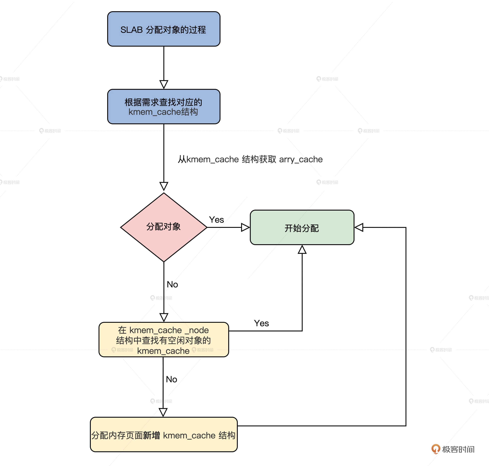
下面我们从接口开始了解这些过程。
SLAB分配接口
其实在Linux内核中，用的最多的是kmalloc函数，经常用于分配小的缓冲区，或者数据结构分配实例空间，这个函数就是SLAB分配接口，它是用来分配对象的，这个对象就是一小块内存空间。
下面一起来看看代码。
static __always_inline void *__do_kmalloc(size_t size, gfp_t flags,unsigned long caller)
{
struct kmem_cache *cachep;
void *ret;
if (unlikely(size > KMALLOC_MAX_CACHE_SIZE))
return NULL;
//查找size对应的kmem_cache
cachep = kmalloc_slab(size, flags);
if (unlikely(ZERO_OR_NULL_PTR(cachep)))
return cachep;
//分配对象
ret = slab_alloc(cachep, flags, caller);
return ret;
}
void *__kmalloc(size_t size, gfp_t flags)
{
return __do_kmalloc(size, flags, _RET_IP_);
}
static __always_inline void *kmalloc(size_t size, gfp_t flags)
{
return __kmalloc(size, flags);
}
上面代码的流程很简单，就是在__do_kmalloc函数中，查找出分配大小对应的kmem_cache结构，然后调用slab_alloc函数进行分配。可以说，slab_alloc函数才是SLAB的接口函数，但是它的参数中必须要有kmem_cache结构。
具体是如何查找的呢？我们这就来看看。
如何查找kmem_cache结构
由于SLAB的接口函数slab_alloc，它的参数中必须要有kmem_cache结构指针，指定从哪个kmem_cache结构分配对象，所以在调用slab_alloc函数之前必须给出kmem_cache结构。
我们怎么查找到它呢？这就需要调用kmalloc_slab函数了，代码如下所示。
enum kmalloc_cache_type {
KMALLOC_NORMAL = 0,
KMALLOC_RECLAIM,
#ifdef CONFIG_ZONE_DMA
KMALLOC_DMA,
#endif
NR_KMALLOC_TYPES
};
struct kmem_cache *kmalloc_caches[NR_KMALLOC_TYPES][KMALLOC_SHIFT_HIGH + 1] __ro_after_init ={ static u8 size_index[24] __ro_after_init = {
3, /* 8 */
4, /* 16 */
5, /* 24 */
5, /* 32 */
6, /* 40 */
6, /* 48 */
6, /* 56 */
6, /* 64 */
1, /* 72 */
1, /* 80 */
1, /* 88 */
1, /* 96 */
7, /* 104 */
7, /* 112 */
7, /* 120 */
7, /* 128 */
2, /* 136 */
2, /* 144 */
2, /* 152 */
2, /* 160 */
2, /* 168 */
2, /* 176 */
2, /* 184 */
2 /* 192 */
};
//根据分配标志返回枚举类型，其实是0、1、2其中之一
static __always_inline enum kmalloc_cache_type kmalloc_type(gfp_t flags)
{
#ifdef CONFIG_ZONE_DMA
if (likely((flags & (__GFP_DMA | __GFP_RECLAIMABLE)) == 0))
return KMALLOC_NORMAL;
return flags & __GFP_DMA ? KMALLOC_DMA : KMALLOC_RECLAIM;
#else
return flags & __GFP_RECLAIMABLE ? KMALLOC_RECLAIM : KMALLOC_NORMAL;
#endif
}
struct kmem_cache *kmalloc_slab(size_t size, gfp_t flags)
{
unsigned int index;
//计算出index
if (size <= 192) {
if (!size)
return ZERO_SIZE_PTR;
index = size_index[size_index_elem(size)];
} else {
if (WARN_ON_ONCE(size > KMALLOC_MAX_CACHE_SIZE))
return NULL;
index = fls(size - 1);
}
return kmalloc_caches[kmalloc_type(flags)][index];
}
从上述代码，不难发现kmalloc_caches就是个全局的二维数组，kmalloc_slab函数只是根据分配大小和分配标志计算出了数组下标，最后取出其中kmem_cache结构指针。
那么kmalloc_caches中的kmem_cache，它又是谁建立的呢？我们还是接着看代码。
struct kmem_cache *__init create_kmalloc_cache(const char *name,
unsigned int size, slab_flags_t flags,
unsigned int useroffset, unsigned int usersize)
{
//从第一个kmem_cache中分配一个对象放kmem_cache
struct kmem_cache *s = kmem_cache_zalloc(kmem_cache, GFP_NOWAIT);
if (!s)
panic("Out of memory when creating slab %s\n", name);
//设置s的对齐参数，处理s的freelist就是arr_cache
create_boot_cache(s, name, size, flags, useroffset, usersize);
list_add(&s->list, &slab_caches);
s->refcount = 1;
return s;
}
//新建一个kmem_cache
static void __init new_kmalloc_cache(int idx, enum kmalloc_cache_type type, slab_flags_t flags)
{
if (type == KMALLOC_RECLAIM)
flags |= SLAB_RECLAIM_ACCOUNT;
//根据kmalloc_info中信息建立一个kmem_cache
kmalloc_caches[type][idx] = create_kmalloc_cache(
kmalloc_info[idx].name[type],
kmalloc_info[idx].size, flags, 0,
kmalloc_info[idx].size);
}
//建立所有的kmalloc_caches中的kmem_cache
void __init create_kmalloc_caches(slab_flags_t flags)
{
int i;
enum kmalloc_cache_type type;
for (type = KMALLOC_NORMAL; type <= KMALLOC_RECLAIM; type++) {
for (i = KMALLOC_SHIFT_LOW; i <= KMALLOC_SHIFT_HIGH; i++) {
if (!kmalloc_caches[type][i])
//建立一个新的kmem_cache
new_kmalloc_cache(i, type, flags);
if (KMALLOC_MIN_SIZE <= 32 && i == 6 &&
!kmalloc_caches[type][1])
new_kmalloc_cache(1, type, flags);
if (KMALLOC_MIN_SIZE <= 64 && i == 7 &&
!kmalloc_caches[type][2])
new_kmalloc_cache(2, type, flags);
}
}
}
到这里，__do_kmalloc函数中根据分配对象大小查找的所有kmem_cache结构，我们就建立好了，保存在kmalloc_caches数组中。下面我们再去看看对象是如何分配的。
分配对象
下面我们从slab_alloc函数开始探索对象的分配过程，slab_alloc函数的第一个参数就kmem_cache结构的指针，表示从该kmem_cache结构中分配对象。
static __always_inline void *slab_alloc(struct kmem_cache *cachep, gfp_t flags, unsigned long caller)
{
unsigned long save_flags;
void *objp;
//关中断
local_irq_save(save_flags);
//分配对象
objp = __do_cache_alloc(cachep, flags);
//恢复中断
local_irq_restore(save_flags);
return objp;
}
接口函数总是简单的，真正干活的是__do_cache_alloc函数，下面我们就来看看这个函数。
static inline void *____cache_alloc(struct kmem_cache *cachep, gfp_t flags)
{
void *objp;
struct array_cache *ac;
//获取当前cpu在cachep结构中的array_cache结构的指针
ac = cpu_cache_get(cachep);
//如果ac中的avail不为0,说明当前kmem_cache结构中freelist是有空闲对象
if (likely(ac->avail)) {
ac->touched = 1;
//空间对象的地址保存在ac->entry
objp = ac->entry[--ac->avail];
goto out;
}
objp = cache_alloc_refill(cachep, flags);
out:
return objp;
}
static __always_inline void *__do_cache_alloc(struct kmem_cache *cachep, gfp_t flags)
{
return ____cache_alloc(cachep, flags);
}
上述代码中真正做事的函数是____cache_alloc函数，它首先获取了当前kmem_cache结构中指向array_cache结构的指针，找到它里面空闲对象的地址（如果你不懂array_cache结构，请回到SLAB对象那一小节复习），然后在array_cache结构中取出一个空闲对象地址返回，这样就分配成功了。
这个速度是很快的，如果array_cache结构中没有空闲对象了，就会调用cache_alloc_refill函数。那这个函数又干了什么呢？我们接着往下看。代码如下所示。
static struct page *get_first_slab(struct kmem_cache_node *n, bool pfmemalloc)
{
struct page *page;
assert_spin_locked(&n->list_lock);
//首先从kmem_cache_node结构中的slabs_partial链表上查看有没有page
page = list_first_entry_or_null(&n->slabs_partial, struct page,slab_list);
if (!page) {
//如果没有
n->free_touched = 1;
//从kmem_cache_node结构中的slabs_free链表上查看有没有page
page = list_first_entry_or_null(&n->slabs_free, struct page,slab_list);
if (page)
n->free_slabs--; //空闲slab计数减一
}
//返回page
return page;
}
static void *cache_alloc_refill(struct kmem_cache *cachep, gfp_t flags)
{
int batchcount;
struct kmem_cache_node *n;
struct array_cache *ac, *shared;
int node;
void *list = NULL;
struct page *page;
//获取内存节点
node = numa_mem_id();
ac = cpu_cache_get(cachep);
batchcount = ac->batchcount;
//获取cachep所属的kmem_cache_node
n = get_node(cachep, node);
shared = READ_ONCE(n->shared);
if (!n->free_objects && (!shared || !shared->avail))
goto direct_grow;
while (batchcount > 0) {
//获取kmem_cache_node结构中其它kmem_cache,返回的是page，而page会指向kmem_cache
page = get_first_slab(n, false);
if (!page)
goto must_grow;
batchcount = alloc_block(cachep, ac, page, batchcount);
}
must_grow:
n->free_objects -= ac->avail;
direct_grow:
if (unlikely(!ac->avail)) {
//分配新的kmem_cache并初始化
page = cache_grow_begin(cachep, gfp_exact_node(flags), node);
ac = cpu_cache_get(cachep);
if (!ac->avail && page)
alloc_block(cachep, ac, page, batchcount);
//让page挂载到kmem_cache_node结构的slabs_list链表上
cache_grow_end(cachep, page);
if (!ac->avail)
return NULL;
}
ac->touched = 1;
//重新分配
return ac->entry[--ac->avail];
}
调用cache_alloc_refill函数的过程，主要的工作都有哪些呢？我给你梳理一下。
首先，获取了cachep所属的kmem_cache_node。
然后调用get_first_slab，获取kmem_cache_node结构还有没有包含空闲对象的kmem_cache。但是请注意，这里返回的是page，因为page会指向kmem_cache结构，page所代表的物理内存页面，也保存着kmem_cache结构中的对象。
最后，如果kmem_cache_node结构没有包含空闲对象的kmem_cache了，就必须调用cache_grow_begin函数，找伙伴系统分配新的内存页面，而且还要找第一个kmem_cache分配新的对象，来存放kmem_cache结构的实例变量，并进行必要的初始化。
这些步骤完成之后，再调用cache_grow_end函数，把刚刚分配的page挂载到kmem_cache_node结构的slabs_list链表上。因为cache_grow_begin和cache_grow_end函数在前面已经分析过了，这里不再赘述。
重点回顾
今天的内容讲完了，我来帮你梳理一下本课程的重点。
1.为了分配小于1个page的小块内存，Linux实现了SLAB，用kmem_cache结构管理page对应内存页面上小块内存对象，然后让该page指向kmem_cache，由kmem_cache_node结构管理多个page。
2.我们从Linux内核中使用的kmalloc函数入手，了解了SLAB下整个内存对象的分配过程。
到此为止，我们对SLAB的研究就告一段落了，是不是感觉和Cosmos内存管理有些相像而又不同呢？甚至我们Cosmos内存管理要更为简洁和高效。
思考题
Linux的SLAB，使用kmalloc函数能分配多大的内存对象呢？
欢迎你在留言区跟我交流互动，也欢迎你把这节课分享给你的同事、朋友，跟他一起研究SLAB相关的内容。
我是LMOS，我们下节课见！
24 活动的描述：到底什么是进程？
你好，我是LMOS。
在前面的课程里，我们已经实现了数据同步、hal层的初始化，中断框架、物理内存、内存对象、虚拟内存管理，这些都是操作系统中最核心的东西。
今天，我再给你讲讲操作系统里一个层次非常高的组件——进程，而它又非常依赖于内存管理、中断、硬件体系结构。好在前面课程中，这些基础知识我们已经搞得清清楚楚，安排得明明白白了，所以我们今天理解进程就变得顺理成章。
感受一下
在你看来，什么是进程呢？日常我们跟计算机打交道的时候，最常接触的就是一些应用程序，比如Word、浏览器，你可以直观感受到它们的存在。而我们却很难直观感受到什么是进程，自然也就不容易描述它的模样与形态了。
其实，在我们启用Word这些应用时，操作系统在背后就会建立至少一个进程。虽然我们难以观察它的形态，但我们绝对可以通过一些状态数据来发现进程的存在。
在Linux的终端下输入ps命令， 我们就可以看到系统中有多少个进程了。如下图所示。

这是进程吗？是的，不过这只是一些具体进程的数据，如创建进程和用户、进程ID、使用CPU的百分比，进程运行状态，进程的建立时间、进程的运行时间、进程名等，这些数据综合起来就代表了一个进程。
也许看到这，你会呵呵一笑，觉得原来抽象的进程背后，不过是一堆数据而已，关于进程这就是我们能直观感受到的东西，这就完了吗？当然没有，我们接着往下看。
什么是进程
如果你要组织一个活动怎么办？你首先会想到，这个活动的流程是什么，需要配备哪些人员和物资，中途要不要休息，活动当前进行到哪里了……如果你是个精明的人，你大概会用表格把这些信息记录下来。
同理，你运行一个应用程序时，操作系统也要记录这个应用程序使用多少内存，打开了什么文件，当有些资源不可用的时候要不要睡眠，当前进程运行到哪里了。操作系统把这些信息综合统计，存放在内存中，抽象为进程。
现在你就可以回答什么是进程了：进程是一个应用程序运行时刻的实例（从进程的结构看）；进程是应用程序运行时所需资源的容器（从进程的功能看）；甚至进程是一堆数据结构（从操作系统对进程实现的角度来说）。
这也太简单了吧？对，进程的抽象概念就是这么简单。我知道这一定不能让你真正明白什么是进程，抽象的概念就是如此，你不在实践中设计并实现它，是很难真正明白的。下面我们先来细化设计。
进程的结构
首先，进程是一个应用程序运行时刻的实例，它的目的就是操作系统用于管理和运行多个应用程序的；其次，从前面我们实现的内存管理组件角度看，操作系统是给应用程序提供服务的。
所以，从这两个角度看，进程必须要有一个地址空间，这个地址空间至少包括两部分内容：一部分是内核，一部分是用户的应用程序。
最后，结合x86硬件平台对虚拟地址空间的制约，我给你画了一幅图，如下所示。
上图中有8个进程，每个进程拥有x86 CPU的整个虚拟地址空间，这个虚拟地址空间被分成了两个部分，上半部分是所有进程都共享的内核部分 ，里面放着一份内核代码和数据，下半部分是应用程序，分别独立，互不干扰。
还记得我们讲过的x86 CPU的特权级吗？
当CPU在R0特权级运行时，就运行在上半部分内核的地址空间中，当CPU在R3特权级时，就运行在下半部分的应用程序地址空间中。各进程的虚拟地址空间是相同的，它们之间物理地址不同，是由MMU页表进行隔离的，所以每个进程的应用程序的代码绝对不能随意访问内核的代码和数据。
以上是整体结构，下面我们来细化一下进程需要实现哪些功能？
我们先从应用程序和内核的关系看。应用程序需要内核提供资源，而内核需要控制应用程序的运行。那么内核必须能够命令应用程序，让它随时中断（进入内核地址空间）或恢复执行，这就需要保存应用程序的机器上下文和它运行时刻的栈。
接着，我们深入内核提供服务的机制。众所周知，内核是这样提供服务的：通过停止应用程序代码运行，进入内核地址空间运行内核代码，然后返回结果。就像活动组织者会用表格备案一样，内核还需要记录一个应用程序都访问了哪些资源，比如打开了某个文件，或是访问了某个设备。而这样的“记录表”，我们就用“资源描述符”来表示。
而我们前面已经说了，进程是一个应用程序运行时刻的实例。那这样一来，一个细化的进程结构，就可以像下图这样设计。
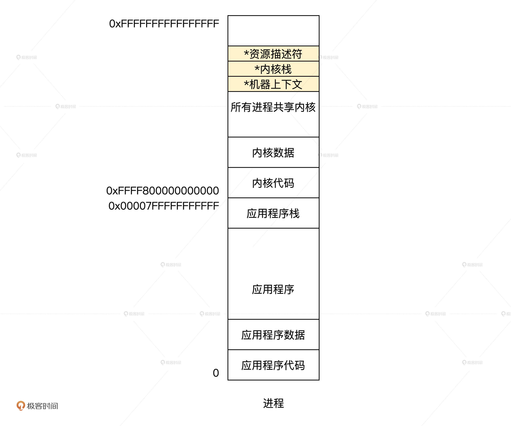
上图中表示了一个进程详细且必要的结构，其中带*号是每个进程都有独立一份，有了这样的设计结构，多个进程就能并发运行了。前面这些内容还是纸上谈兵，你重点搞明白进程的概念和结构就行了。
实现进程
前面我们简单介绍了进程的概念和结构，之所以简单，是为了不在理论层面就把问题复杂化，这对我们实现Cosmos的进程组件没有任何好处。
但只懂理论还是空中阁楼，我们可以一步步在设计实现中，由浅到深地理解什么是进程。我们这就把前面的概念和设计，一步步落实到代码，设计出对应的数据结构。
如何表示一个进程
根据前面课程的经验，如果要在软件代码中表示一个什么东西时，就要设计出对应的数据结构。
那么对于一个进程，它有状态，id，运行时间，优先级，应用程序栈，内核栈，机器上下文，资源描述符，地址空间，我们将这些信息组织在一起，就形成了一个进程的数据结构。
下面我带你把它变成代码，在cosmos/include/knlinc/目录下建立一个krlthread_t.h文件，在其中写上代码，如下所示。
typedef struct s_THREAD
{
spinlock_t td_lock; //进程的自旋锁
list_h_t td_list; //进程链表
uint_t td_flgs; //进程的标志
uint_t td_stus; //进程的状态
uint_t td_cpuid; //进程所在的CPU的id
uint_t td_id; //进程的id
uint_t td_tick; //进程运行了多少tick
uint_t td_privilege; //进程的权限
uint_t td_priority; //进程的优先级
uint_t td_runmode; //进程的运行模式
adr_t td_krlstktop; //应用程序内核栈顶地址
adr_t td_krlstkstart; //应用程序内核栈开始地址
adr_t td_usrstktop; //应用程序栈顶地址
adr_t td_usrstkstart; //应用程序栈开始地址
mmadrsdsc_t* td_mmdsc; //地址空间结构
context_t td_context; //机器上下文件结构
objnode_t* td_handtbl[TD_HAND_MAX];//打开的对象数组
}thread_t;
在Cosmos中，我们就使用thread_t结构的一个实例变量代表一个进程。进程的内核栈和进程的应用程序栈是两块内存空间，进程的权限表示一个进程是用户进程还是系统进程。进程的权限不同，它们能完成功能也不同。
万事都有轻重缓急，进程也一样，进程有64个优先级，td_priority数值越小优先级越高。td_handtbl只是一个objnode_t结构的指针类型数组。
比方说，一个进程打开一个文件内核就会创建一个对应的objnode_t结构的实例变量，这个objnode_t结构的地址就保存在td_handtbl数组中。你可以这么理解：这个objnode_t结构就是进程打开资源的描述符。
进程的地址空间
在thread_t结构中有个mmadrsdsc_t结构的指针，在这个结构中有虚拟地址区间结构和MMU相关的信息。mmadrsdsc_t结构你应该很熟悉，在虚拟内存那节课中，我们学习过，今天我们再次复习一下，如下所示。
typedef struct s_MMADRSDSC
{
spinlock_t msd_lock; //保护自身的自旋锁
list_h_t msd_list; //链表
uint_t msd_flag; //状态和标志
uint_t msd_stus;
uint_t msd_scount; //计数，该结构可能被共享
sem_t msd_sem; //信号量
mmudsc_t msd_mmu; //MMU页表相关的信息
virmemadrs_t msd_virmemadrs; //虚拟地址空间结构
adr_t msd_stext; //应用的指令区的开始、结束地址
adr_t msd_etext;
adr_t msd_sdata; //应用的数据区的开始、结束地址
adr_t msd_edata;
adr_t msd_sbss; //应用初始化为0的区域开始、结束地址
adr_t msd_ebss;
adr_t msd_sbrk; //应用的堆区的开始、结束地址
adr_t msd_ebrk;
}mmadrsdsc_t;
上述代码中，注释已经很清楚了，mmadrsdsc_t结构描述了一个进程的完整的地址空间。需要搞清楚的是：在常规情况下，新建一个进程就要建立一个mmadrsdsc_t结构，让thread_t结构的td_mmdsc的指针变量指向它。
进程的机器上下文
进程的机器上下文分为几个部分，一部分是CPU寄存器，一部分是内核函数调用路径。CPU的通用寄存器，是中断发生进入内核时，压入内核栈中的，从中断入口处开始调用的函数，都是属于内核的函数。
函数的调用路径就在内核栈中，整个过程是这样的：进程调度器函数会调用进程切换函数，完成切换进程这个操作，而在进程切换函数中会保存栈寄存器的值。好，下面我们来设计这样一个结构来保存这些信息。
typedef struct s_CONTEXT
{
uint_t ctx_nextrip; //保存下一次运行的地址
uint_t ctx_nextrsp; //保存下一次运行时内核栈的地址
x64tss_t* ctx_nexttss; //指向tss结构
}context_t;
context_t结构中的字段不多，我们相对陌生的就是x64tss_t结构的指针，这个结构是CPU要求的一个结构，这个结构它本身的地址放在一个GDT表项中，由CPU的tr寄存器指向，tr寄存器中的值是GDT中x64tss_t结构项对应的索引。x64tss_t结构的代码如下所示。
// cosmos/hal/x86/halglobal.c
// 每个CPU核心一个tss
HAL_DEFGLOB_VARIABLE(x64tss_t,x64tss)[CPUCORE_MAX];
typedef struct s_X64TSS
{
u32_t reserv0; //保留
u64_t rsp0; //R0特权级的栈地址
u64_t rsp1; //R1特权级的栈地址，我们未使用
u64_t rsp2; //R2特权级的栈地址，我们未使用
u64_t reserv28;//保留
u64_t ist[7]; //我们未使用
u64_t reserv92;//保留
u16_t reserv100;//保留
u16_t iobase; //我们未使用
}__attribute__((packed)) x64tss_t;
CPU在发生中断时，会根据中断门描述里的目标段选择子，进行必要的特权级切换，特权级的切换就必须要切换栈，CPU硬件会自己把当前rsp寄存器保存到内部的临时寄存器tmprsp；然后从x64tss_t结构体中找出对应的栈地址，装入rsp寄存器中；接着，再把当前的ss、tmprsp、rflags、cs、rip，依次压入当前rsp指向的栈中。
建立进程
之前我们已经设计好了进程相关的数据结构，现在我们要讨论如何建立一个新的进程了。建立进程非常简单，就是在内存中建立起对应的数据结构的实例变量。
但是对进程来说，并不是建立thread_t结构的实例变量就完事了，还要建立进程的应用程序栈和进程的内核栈，进程地址空间等。下面我们一起来实现建立进程的功能。
建立进程接口
我们先从建立进程的接口开始写起，先在cosmos/kernel/目录下新建一个文件krlthread.c，在其中写上一个函数。接口函数总是简单的，代码如下所示。
thread_t *krlnew_thread(void *filerun, uint_t flg, uint_t prilg, uint_t prity, size_t usrstksz, size_t krlstksz)
{
size_t tustksz = usrstksz, tkstksz = krlstksz;
//对参数进行检查，不合乎要求就返回NULL表示创建失败
if (filerun == NULL || usrstksz > DAFT_TDUSRSTKSZ || krlstksz > DAFT_TDKRLSTKSZ)
{
return NULL;
}
if ((prilg != PRILG_USR && prilg != PRILG_SYS) || (prity >= PRITY_MAX))
{
return NULL;
}
//进程应用程序栈大小检查，大于默认大小则使用默认大小
if (usrstksz < DAFT_TDUSRSTKSZ)
{
tustksz = DAFT_TDUSRSTKSZ;
}
//进程内核栈大小检查，大于默认大小则使用默认大小
if (krlstksz < DAFT_TDKRLSTKSZ)
{
tkstksz = DAFT_TDKRLSTKSZ;
}
//是否建立内核进程
if (KERNTHREAD_FLG == flg)
{
return krlnew_kern_thread_core(filerun, flg, prilg, prity, tustksz, tkstksz);
}
//是否建立普通进程
else if (USERTHREAD_FLG == flg)
{
return krlnew_user_thread_core(filerun, flg, prilg, prity, tustksz, tkstksz);
}
return NULL;
}
上述代码中的krlnew_thread函数的流程非常简单，对参数进行合理检查，其参数从左到右分别是应用程序启动运行的地址、创建标志、进程权限和进程优先级、进程的应用程序栈和内核栈大小。
进程对栈的大小有要求，如果小于默认大小8个页面就使用默认的栈大小，最后根据创建标志确认是建立内核态进程还是建立普通进程。
建立内核进程
你一定在想，什么是内核进程？其实内核进程就是用进程的方式去运行一段内核代码，那么这段代码就可以随时暂停或者继续运行，又或者和其它代码段并发运行，只是这种进程永远不会回到进程应用程序地址空间中去，只会在内核地址空间中运行。
下面我来写代码实现建立一个内核态进程，如下所示。
thread_t *krlnew_kern_thread_core(void *filerun, uint_t flg, uint_t prilg, uint_t prity, size_t usrstksz, size_t krlstksz)
{
thread_t *ret_td = NULL;
bool_t acs = FALSE;
adr_t krlstkadr = NULL;
//分配内核栈空间
krlstkadr = krlnew(krlstksz);
if (krlstkadr == NULL)
{
return NULL;
}
//建立thread_t结构体的实例变量
ret_td = krlnew_thread_dsc();
if (ret_td == NULL)
{//创建失败必须要释放之前的栈空间
acs = krldelete(krlstkadr, krlstksz);
if (acs == FALSE)
{
return NULL;
}
return NULL;
}
//设置进程权限
ret_td->td_privilege = prilg;
//设置进程优先级
ret_td->td_priority = prity;
//设置进程的内核栈顶和内核栈开始地址
ret_td->td_krlstktop = krlstkadr + (adr_t)(krlstksz - 1);
ret_td->td_krlstkstart = krlstkadr;
//初始化进程的内核栈
krlthread_kernstack_init(ret_td, filerun, KMOD_EFLAGS);
//加入进程调度系统
krlschdclass_add_thread(ret_td);
//返回进程指针
return ret_td;
}
上述代码的逻辑非常简单，首先分配一个内核栈的内存空间，接着创建thread_t结构的实例变量，然后对thread_t结构体的字段进行设置，最后，初始化进程内核栈把这个新进程加入到进程的调度系统之中，下面来一步步写入实现这些逻辑的代码。
创建thread_t结构
创建thread_t结构，其实就是分配一块内存用于存放thread_t结构的实例变量。类似这样的操作我们课程里做过多次，相信现在你已经能驾轻就熟了。下面我们来写代码实现这个操作，如下所示。
//初始化context_t结构
void context_t_init(context_t *initp)
{
initp->ctx_nextrip = 0;
initp->ctx_nextrsp = 0;
//指向当前CPU的tss
initp->ctx_nexttss = &x64tss[hal_retn_cpuid()];
return;
}
//返回进程id其实就thread_t结构的地址
uint_t krlretn_thread_id(thread_t *tdp)
{
return (uint_t)tdp;
}
//初始化thread_t结构
void thread_t_init(thread_t *initp)
{
krlspinlock_init(&initp->td_lock);
list_init(&initp->td_list);
initp->td_flgs = TDFLAG_FREE;
initp->td_stus = TDSTUS_NEW;//进程状态为新建
initp->td_cpuid = hal_retn_cpuid();
initp->td_id = krlretn_thread_id(initp);
initp->td_tick = 0;
initp->td_privilege = PRILG_USR;//普通进程权限
initp->td_priority = PRITY_MIN;//最高优先级
initp->td_runmode = 0;
initp->td_krlstktop = NULL;
initp->td_krlstkstart = NULL;
initp->td_usrstktop = NULL;
initp->td_usrstkstart = NULL;
initp->td_mmdsc = &initmmadrsdsc;//指向默认的地址空间结构
context_t_init(&initp->td_context);
//初始化td_handtbl数组
for (uint_t hand = 0; hand < TD_HAND_MAX; hand++)
{
initp->td_handtbl[hand] = NULL;
}
return;
}
//创建thread_t结构
thread_t *krlnew_thread_dsc()
{
//分配thread_t结构大小的内存空间
thread_t *rettdp = (thread_t *)(krlnew((size_t)(sizeof(thread_t))));
if (rettdp == NULL)
{
return NULL;
}
//初始化刚刚分配的thread_t结构
thread_t_init(rettdp);
return rettdp;
}
相信凭你现在的能力，上述代码一定是超级简单的。不过我们依然要注意这样几点。
首先，我们以thread_t结构的地址作为进程的ID，这个ID具有唯一性；其次，我们目前没有为一个进程分配mmadrsdsc_t结构体，而是指向了默认的地址空间结构initmmadrsdsc；最后，hal_retn_cpuid函数在目前的情况下永远返回0，这是因为我们使用了一个CPU。
初始化内核栈
为什么要初始化进程的内核栈呢？
你也许会想，进程的内核栈无非是一块内存，其实只要初始化为0就好。当然不是这么简单，我们初始化进程的内核栈，其实是为了在进程的内核栈中放置一份CPU的寄存器数据。
这份CPU寄存器数据是一个进程机器上下文的一部分，当一个进程开始运行时，我们将会使用“pop”指令从进程的内核栈中弹出到CPU中，这样CPU就开始运行进程了，CPU的一些寄存器是有位置关系的，所以我们要定义一个结构体来操作它们，如下所示。
typedef struct s_INTSTKREGS
{
uint_t r_gs;
uint_t r_fs;
uint_t r_es;
uint_t r_ds; //段寄存器
uint_t r_r15;
uint_t r_r14;
uint_t r_r13;
uint_t r_r12;
uint_t r_r11;
uint_t r_r10;
uint_t r_r9;
uint_t r_r8;
uint_t r_rdi;
uint_t r_rsi;
uint_t r_rbp;
uint_t r_rdx; //通用寄存器
uint_t r_rcx;
uint_t r_rbx;
uint_t r_rax;
uint_t r_rip_old;//程序的指针寄存器
uint_t r_cs_old;//代码段寄存器
uint_t r_rflgs; //rflags标志寄存
uint_t r_rsp_old;//栈指针寄存器
uint_t r_ss_old; //栈段寄存器
}intstkregs_t;
intstkregs_t结构中，每个字段都是8字节64位的，因为x86 CPU在长模式下rsp栈指针寄存器始终8字节对齐。栈是向下伸长的（从高地址向低地址）所以这个结构是反向定义（相对于栈）如果你不理解这个寄存器位置，可以回到中断处理那节课复习一下。
intstkregs_t结构已经定义好了，下面我们来写代码初始化内核栈，如下所示。
void krlthread_kernstack_init(thread_t *thdp, void *runadr, uint_t cpuflags)
{
//处理栈顶16字节对齐
thdp->td_krlstktop &= (~0xf);
thdp->td_usrstktop &= (~0xf);
//内核栈顶减去intstkregs_t结构的大小
intstkregs_t *arp = (intstkregs_t *)(thdp->td_krlstktop - sizeof(intstkregs_t));
//把intstkregs_t结构的空间初始化为0
hal_memset((void*)arp, 0, sizeof(intstkregs_t));
//rip寄存器的值设为程序运行首地址
arp->r_rip_old = (uint_t)runadr;
//cs寄存器的值设为内核代码段选择子
arp->r_cs_old = K_CS_IDX;
arp->r_rflgs = cpuflags;
//返回进程的内核栈
arp->r_rsp_old = thdp->td_krlstktop;
arp->r_ss_old = 0;
//其它段寄存器的值设为内核数据段选择子
arp->r_ds = K_DS_IDX;
arp->r_es = K_DS_IDX;
arp->r_fs = K_DS_IDX;
arp->r_gs = K_DS_IDX;
//设置进程下一次运行的地址为runadr
thdp->td_context.ctx_nextrip = (uint_t)runadr;
//设置进程下一次运行的栈地址为arp
thdp->td_context.ctx_nextrsp = (uint_t)arp;
return;
}
上述代码没什么难点，就是第7行我要给你解释一下，arp为什么要用内核栈顶地址减去intstkregs_t结构的大小呢？
C语言处理结构体时，从结构体第一个字段到最后一个字段，这些字段的地址是从下向上（地址从低到高）伸长的，而栈正好相反，所以要减去intstkregs_t结构的大小，为intstkregs_t结构腾出空间，如下图所示。

因为我们建立的是内核态进程，所以上面初始化的内核栈是不能返回到进程的应用程序空间的。而如果要返回到进程的应用程序空间中，内核栈中的内容是不同的，但是内核栈结构却一样。
下面我们动手写代码，初始化返回进程应用程序空间的内核栈。请注意，初始化的还是内核栈，只是内容不同，代码如下所示。
void krlthread_userstack_init(thread_t *thdp, void *runadr, uint_t cpuflags)
{
//处理栈顶16字节对齐
thdp->td_krlstktop &= (~0xf);
thdp->td_usrstktop &= (~0xf);
//内核栈顶减去intstkregs_t结构的大小
intstkregs_t *arp = (intstkregs_t *)(thdp->td_krlstktop - sizeof(intstkregs_t));
//把intstkregs_t结构的空间初始化为0
hal_memset((void*)arp, 0, sizeof(intstkregs_t));
//rip寄存器的值设为程序运行首地址
arp->r_rip_old = (uint_t)runadr;
//cs寄存器的值设为应用程序代码段选择子
arp->r_cs_old = U_CS_IDX;
arp->r_rflgs = cpuflags;
//返回进程应用程序空间的栈
arp->r_rsp_old = thdp->td_usrstktop;
//其它段寄存器的值设为应用程序数据段选择子
arp->r_ss_old = U_DS_IDX;
arp->r_ds = U_DS_IDX;
arp->r_es = U_DS_IDX;
arp->r_fs = U_DS_IDX;
arp->r_gs = U_DS_IDX;
//设置进程下一次运行的地址为runadr
thdp->td_context.ctx_nextrip = (uint_t)runadr;
//设置进程下一次运行的栈地址为arp
thdp->td_context.ctx_nextrsp = (uint_t)arp;
return;
}
上述代码中初始化进程的内核栈，所使用的段选择子指向的是应用程序的代码段和数据段，这个代码段和数据段它们特权级为R3，CPU正是根据这个代码段、数据段选择子来切换CPU工作特权级的。这样，CPU的执行流就可以返回到进程的应用程序空间了。
建立普通进程
在建立进程的接口函数krlnew_thread的流程中，会根据参数flg的值，选择调用不同的函数，来建立不同类型的进程。
前面我们已经写好了建立内核进程的函数，接下来我们还要写好建立普通进程的函数，如下所示。
thread_t *krlnew_user_thread_core(void *filerun, uint_t flg, uint_t prilg, uint_t prity, size_t usrstksz, size_t krlstksz)
{
thread_t *ret_td = NULL;
bool_t acs = FALSE;
adr_t usrstkadr = NULL, krlstkadr = NULL;
//分配应用程序栈空间
usrstkadr = krlnew(usrstksz);
if (usrstkadr == NULL)
{
return NULL;
}
//分配内核栈空间
krlstkadr = krlnew(krlstksz);
if (krlstkadr == NULL)
{
if (krldelete(usrstkadr, usrstksz) == FALSE)
{
return NULL;
}
return NULL;
}
//建立thread_t结构体的实例变量
ret_td = krlnew_thread_dsc();
//创建失败必须要释放之前的栈空间
if (ret_td == NULL)
{
acs = krldelete(usrstkadr, usrstksz);
acs = krldelete(krlstkadr, krlstksz);
if (acs == FALSE)
{
return NULL;
}
return NULL;
}
//设置进程权限
ret_td->td_privilege = prilg;
//设置进程优先级
ret_td->td_priority = prity;
//设置进程的内核栈顶和内核栈开始地址
ret_td->td_krlstktop = krlstkadr + (adr_t)(krlstksz - 1);
ret_td->td_krlstkstart = krlstkadr;
//设置进程的应用程序栈顶和内核应用程序栈开始地址
ret_td->td_usrstktop = usrstkadr + (adr_t)(usrstksz - 1);
ret_td->td_usrstkstart = usrstkadr;
//初始化返回进程应用程序空间的内核栈
krlthread_userstack_init(ret_td, filerun, UMOD_EFLAGS);
//加入调度器系统
krlschdclass_add_thread(ret_td);
return ret_td;
}
和建立内核进程相比，建立普通进程有两点不同。第一，多分配了一个应用程序栈。因为内核进程不会返回到进程的应用程序空间，所以不需要应用程序栈，而普通进程则需要；第二，在最后调用的是krlthread_userstack_init函数，该函数初始化返回进程应用程序空间的内核栈，这在前面已经介绍过了。
到此为止，我们建立进程的功能已经实现了。但是最后将进程加入到调度系统的函数，我们还没有写，这个函数是进程调度器模块的函数，我们下节课再讨论。
重点回顾
这节课我们用最简洁的方式了解了进程以及如何建立一个进程，我来为你梳理一下今天的课程重点。
首先，我们在Linux系统上，用ps命令列出Linux系统上所有的进程，直观的感受了一下什么进程，从理论上了解了一下进程的结构。
然后我们把进程相关的信息，做了归纳整理，设计出一系列相应的数据结构，这其中包含了表示进程的数据结构，与进程相关内存地址空间结构，还有进程的机器上下文数据结构。这些数据结构综合起来就表示了进程。
最后进入建立进程的环节。有了进程相关的数据结构就可以写代码建立一个进程了，我们的建立进程的接口函数，既能建立普通进程又能建立内核进程，而建立进程的过程无非是创建进程结构体、分配进程的内核栈与应用程序栈，并对进程的内核栈进行初始化，最后将进程加入调度系统，以便后面将进程投入运行。

很多理论书籍总是在开头就花大量篇幅讲进程，但你却很难搞懂，这是为什么呢？第一，他们在用抽象方法讲解抽象概念，对初学者很不友好；第二，讲解顺序不对，想搞懂进程，需要前置知识，它是一个高层次的组件。
相信经过前面章节的学习，你现在理解进程会轻松自如。
思考题
请问，各个进程是如何共享同一份内核代码和数据的？
欢迎你在留言区和我交流，相信通过积极参与，你将更好地理解这节课的内容。也欢迎你把这节课分享给你的朋友，说不定可以帮他真正弄懂什么是进程。
好，我是LMOS，我们下节课见！
25 多个活动要安排（上）：多进程如何调度？
你好，我是LMOS。
上节课，我们了解了什么是进程，还一起写好了建立进程的代码。不知道你想过没有，如果在系统中只有一个进程，那我们提出进程相关的概念和实现与进程有关的功能，是不是就失去了意义呢？
显然，提出进程的目的之一，就是为了实现多个进程，使系统能运行多个应用程序。今天我们就在单进程的基础上扩展多进程，并在进程与进程之间进行调度。
“你存在，我深深的脑海里，我的梦里，我的心里，我的代码里”，我经常一边哼着歌，一边写着代码，这就是我们大脑中最典型“多进程”场景。
再来举一个例子：你在Windows上，边听音乐，边浏览网页，还能回复微信消息。Windows之所以能同时运行多个应用程序，就是因为Windows内核支持多进程机制，这就是最典型的多进程场景了。
这节课配套代码，你可以点击这里下载。
为什么需要多进程调度
我们先来搞清楚多进程调度的原因是什么，我来归纳一下。
第一，CPU同一时刻只能运行一个进程，而CPU个数总是比进程个数少，这就需要让多进程共用一个CPU，每个进程在这个CPU上运行一段时间。
第二点原因，当一个进程不能获取某种资源，导致它不能继续运行时，就应该让出CPU。当然你也可以把第一点中的CPU时间，也归纳为一种资源，这样就合并为一点：进程拿不到资源就要让出CPU。我来为你画幅图就明白了，如下所示。

上图中，有五个进程，其中浏览器进程和微信进程依赖于网络和键盘的数据资源，如果不能满足它们，就应该通过进程调度让出CPU。
而两个科学计算进程，则更多的依赖于CPU，但是如果它们中的一个用完了自己的CPU时间，也得借助进程调度让出CPU，不然它就会长期霸占CPU，导致其它进程无法运行。需要注意的是，每个进程都会依赖一种资源，那就是CPU时间，你可以把CPU时间理解为它就是CPU，一个进程必须要有CPU才能运行。
这里我们只需要明白，多个进程为什么要进行调度，就可以了。
管理进程
下面我们一起来看看怎么管理进程，我们的Cosmos操作系统也支持多个进程，有了多个进程就要把它们管理起来。说白了，就是弄清楚这些进程有哪些状态，是如何组织起来的，又要从哪找到它们。
进程的生命周期
人有生老病死，对于一个进程来说也是一样。一个进程从建立开始，接着运行，然后因为资源问题不得不暂停运行，最后退出系统。这一过程，我们称为进程的生命周期。在系统实现中，通常用进程的状态表示进程的生命周期。进程的状态我们用几个宏来定义，如下所示。
#define TDSTUS_RUN 0 //进程运行状态
#define TDSTUS_SLEEP 3 //进程睡眠状态
#define TDSTUS_WAIT 4 //进程等待状态
#define TDSTUS_NEW 5 //进程新建状态
#define TDSTUS_ZOMB 6 //进程僵死状态
可以发现，我们的进程有5个状态。其中进程僵死状态，表示进程将要退出系统不再进行调度。那么进程状态之间是如何转换的，别急，我来给画一幅图解释，如下所示。

上图中已经为你展示了，从建立进程到进程退出系统各状态之间的转换关系和需要满足的条件。
如何组织进程
首先我们来研究如何组织进程。由于系统中会有许多个进程，在上节课中我们用thread_t结构表示一个进程，因此会有多个thread_t结构。而根据刚才我们对进程生命周期的解读，我们又知道了进程是随时可能建立或者退出的，所以系统中会随时分配或者删除thread_t结构。
要应对这样的情况，最简单的办法就是使用链表数据结构，而且我们的进程有优先级，所以我们可以设计成每个优先级对应一个链表头。
下面我们来把设计落地成数据结构，由于这是调度器模块，所以我们要建立几个文件krlsched.h、krlsched.c，在其中写上代码，如下所示。
typedef struct s_THRDLST
{
list_h_t tdl_lsth; //挂载进程的链表头
thread_t* tdl_curruntd; //该链表上正在运行的进程
uint_t tdl_nr; //该链表上进程个数
}thrdlst_t;
typedef struct s_SCHDATA
{
spinlock_t sda_lock; //自旋锁
uint_t sda_cpuid; //当前CPU id
uint_t sda_schdflgs; //标志
uint_t sda_premptidx; //进程抢占计数
uint_t sda_threadnr; //进程数
uint_t sda_prityidx; //当前优先级
thread_t* sda_cpuidle; //当前CPU的空转进程
thread_t* sda_currtd; //当前正在运行的进程
thrdlst_t sda_thdlst[PRITY_MAX]; //进程链表数组
}schdata_t;
typedef struct s_SCHEDCALSS
{
spinlock_t scls_lock; //自旋锁
uint_t scls_cpunr; //CPU个数
uint_t scls_threadnr; //系统中所有的进程数
uint_t scls_threadid_inc; //分配进程id所用
schdata_t scls_schda[CPUCORE_MAX]; //每个CPU调度数据结构
}schedclass_t;
从上述代码中，我们发现schedclass_t是个全局数据结构，这个结构里包含一个schdata_t结构数组，数组大小根据CPU的数量决定。在每个schdata_t结构中，又包含一个进程优先级大小的thrdlst_t结构数组。我画幅图，你就明白了。这幅图能让你彻底理清以上数据结构之间的关系。

好，下面我们就去定义这个schedclass_t数据结构并初始化。
管理进程的初始化
管理进程的初始化非常简单，就是对schedclass_t结构的变量的初始化。
通过前面的学习，你也许已经发现了，schedclass_t结构的变量应该是个全局变量，所以先得在cosmos/kernel/krlglobal.c文件中定义一个schedclass_t结构的全局变量，如下所示。
KRL_DEFGLOB_VARIABLE(schedclass_t,osschedcls);
有了schedclass_t结构的全局变量osschedcls，接着我们在cosmos/kernel/krlsched.c文件中写好初始化osschedcls变量的代码，如下所示。
void thrdlst_t_init(thrdlst_t *initp)
{
list_init(&initp->tdl_lsth); //初始化挂载进程的链表
initp->tdl_curruntd = NULL; //开始没有运行进程
initp->tdl_nr = 0; //开始没有进程
return;
}
void schdata_t_init(schdata_t *initp)
{
krlspinlock_init(&initp->sda_lock);
initp->sda_cpuid = hal_retn_cpuid(); //获取CPU id
initp->sda_schdflgs = NOTS_SCHED_FLGS;
initp->sda_premptidx = 0;
initp->sda_threadnr = 0;
initp->sda_prityidx = 0;
initp->sda_cpuidle = NULL; //开始没有空转进程和运行的进程
initp->sda_currtd = NULL;
for (uint_t ti = 0; ti < PRITY_MAX; ti++)
{//初始化schdata_t结构中的每个thrdlst_t结构
thrdlst_t_init(&initp->sda_thdlst[ti]);
}
return;
}
void schedclass_t_init(schedclass_t *initp)
{
krlspinlock_init(&initp->scls_lock);
initp->scls_cpunr = CPUCORE_MAX; //CPU最大个数
initp->scls_threadnr = 0; //开始没有进程
initp->scls_threadid_inc = 0;
for (uint_t si = 0; si < CPUCORE_MAX; si++)
{//初始化osschedcls变量中的每个schdata_t
schdata_t_init(&initp->scls_schda[si]);
}
return;
}
void init_krlsched()
{ //初始化osschedcls变量
schedclass_t_init(&osschedcls);
return;
}
上述代码非常简单，由init_krlsched函数调用schedclass_t_init函数，对osschedcls变量进行初始化工作，但是init_krlsched函数由谁调用呢？
还记得之前学的内核功能层的入口函数吗（可回看第13节课）？它就是cosmos/kernel/krlinit.c文件中的init_krl函数，我们在这个函数中来调用init_krlsched函数，代码如下所示。
void init_krl()
{
init_krlsched();
die(0);//控制不让init_krl函数返回
return;
}
至此，管理进程的初始化就完成了，其实这也是我们进程调度器的初始化，就是这么简单吗？当然不是，还有重要的进程调度等我们搞定。
设计实现进程调度器
管理进程的数据结构已经初始化好了，现在我们开始设计实现进程调度器。
进程调度器是为了在合适的时间点，合适的代码执行路径上进行进程调度。说白了，就是从当前运行进程切换到另一个进程上运行，让当前进程停止运行，由CPU开始执行另一个进程的代码。这个事情说来简单，但做起来并不容易，下面我将带领你一步步实现进程调度器。
进程调度器入口
首先请你想象一下，进程调度器是什么样子的。其实，进程调度器不过是个函数，和其它函数并没有本质区别，你在其它很多代码执行路径上都可以调用它。只是它会从一个进程运行到下一个进程。
那这个函数的功能就能定下来了：无非是确定当前正在运行的进程，然后选择下一个将要运行的进程，最后从当前运行的进程，切换到下一个将要运行的进程。下面我们先来写好进程调度器的入口函数，如下所示。
void krlschedul()
{
thread_t *prev = krlsched_retn_currthread(),//返回当前运行进程
*next = krlsched_select_thread();//选择下一个运行的进程
save_to_new_context(next, prev);//从当前进程切换到下一个进程
return;
}
我们只要在任何需要调度进程的地方，调用上述代码中的函数就可以了。下面我们开始实现krlschedul函数中的其它功能逻辑。
如何获取当前运行的进程
获取当前正在运行的进程，目的是为了保存当前进程的运行上下文，确保在下一次调度到当前运行的进程时能够恢复运行。后面你就会看到，每次切换到下一个进程运行时，我们就会将下一个运行的进程设置为当前运行的进程。
这个获取当前运行进程的函数，它的代码是这样的。
thread_t *krlsched_retn_currthread()
{
uint_t cpuid = hal_retn_cpuid();
//通过cpuid获取当前cpu的调度数据结构
schdata_t *schdap = &osschedcls.scls_schda[cpuid];
if (schdap->sda_currtd == NULL)
{//若调度数据结构中当前运行进程的指针为空，就出错死机
hal_sysdie("schdap->sda_currtd NULL");
}
return schdap->sda_currtd;//返回当前运行的进程
}
上述代码非常简单，如果你认真了解过前面组织进程的数据结构，就会发现，schdata_t结构中的sda_currtd字段正是保存当前正在运行进程的地址。返回这个字段的值，就能取得当前正在运行的进程。
选择下一个进程
根据调度器入口函数的设计，取得了当前正在运行的进程之后，下一步就是选择下个将要投入运行的进程。
在商业系统中，这个过程极为复杂。因为这个过程是进程调度算法的核心，它关乎到进程的吞吐量，能否及时响应请求，CPU的利用率，各个进程之间运行获取资源的公平性，这些问题综合起来就会影响整个操作系统的性能、可靠性。
作为初学者，我们不必搞得如此复杂，可以使用一个简单的优先级调度算法，就是始终选择优先级最高的进程，作为下一个运行的进程。
完成这个功能的代码，如下所示。
thread_t *krlsched_select_thread()
{
thread_t *retthd, *tdtmp;
cpuflg_t cufg;
uint_t cpuid = hal_retn_cpuid();
schdata_t *schdap = &osschedcls.scls_schda[cpuid];
krlspinlock_cli(&schdap->sda_lock, &cufg);
for (uint_t pity = 0; pity < PRITY_MAX; pity++)
{//从最高优先级开始扫描
if (schdap->sda_thdlst[pity].tdl_nr > 0)
{//若当前优先级的进程链表不为空
if (list_is_empty_careful(&(schdap->sda_thdlst[pity].tdl_lsth)) == FALSE)
{//取出当前优先级进程链表下的第一个进程
tdtmp = list_entry(schdap->sda_thdlst[pity].tdl_lsth.next, thread_t, td_list);
list_del(&tdtmp->td_list);//脱链
if (schdap->sda_thdlst[pity].tdl_curruntd != NULL)
{//将这sda_thdlst[pity].tdl_curruntd的进程挂入链表尾
list_add_tail(&(schdap->sda_thdlst[pity].tdl_curruntd->td_list), &schdap->sda_thdlst[pity].tdl_lsth);
}
schdap->sda_thdlst[pity].tdl_curruntd = tdtmp;
retthd = tdtmp;//将选择的进程放入sda_thdlst[pity].tdl_curruntd中，并返回
goto return_step;
}
if (schdap->sda_thdlst[pity].tdl_curruntd != NULL)
{//若sda_thdlst[pity].tdl_curruntd不为空就直接返回它
retthd = schdap->sda_thdlst[pity].tdl_curruntd;
goto return_step;
}
}
}
//如果最后也没有找到进程就返回默认的空转进程
schdap->sda_prityidx = PRITY_MIN;
retthd = krlsched_retn_idlethread();
return_step:
//解锁并返回进程
krlspinunlock_sti(&schdap->sda_lock, &cufg);
return retthd;
}
上述代码的逻辑非常简单，我来给你梳理一下。
首先，从高到低扫描优先级进程链表，然后若当前优先级进程链表不为空，就取出该链表上的第一个进程，放入thrdlst_t结构中的tdl_curruntd字段中，并把之前thrdlst_t结构的tdl_curruntd字段中的进程挂入该链表的尾部，并返回。最后，当扫描到最低优先级时也没有找到进程，就返回默认的空转进程。
这个算法极其简单，但是对我们学习原理却足够了，也欢迎你举一反三，动手实现更高级的调度算法。
获取空转进程
在选择下一个进程的函数中，如果没有找到合适的进程，就返回默认的空转进程。
你可以想一下，为什么要有一个空转进程，直接返回NULL不行吗？
还真不行，因为调度器的功能必须完成从一个进程到下一个进程的切换，如果没有下一个进程，而上一个进程又不能运行了，调度器将无处可去，整个系统也将停止运行，这当然不是我们要的结果，所以我们要给系统留下最后一条路。
下面我们先来实现获取空转进程的函数，如下所示。
thread_t *krlsched_retn_idlethread()
{
uint_t cpuid = hal_retn_cpuid();
//通过cpuid获取当前cpu的调度数据结构
schdata_t *schdap = &osschedcls.scls_schda[cpuid];
if (schdap->sda_cpuidle == NULL)
{//若调度数据结构中空转进程的指针为空，就出错死机
hal_sysdie("schdap->sda_cpuidle NULL");
}
return schdap->sda_cpuidle;//返回空转进程
}
上述代码非常简单，和我们之前实现的获取当前运行进程的函数如出一辙，只是使用schdata_t结构中的字段发生了改变。好，接下来我们要处理更重要的问题，那就是进程之间的切换。
进程切换
经过前面的流程，我们已经找到了当前运行的进程P1，和下一个将要运行的进程P2，现在就进入最重要的进程切换流程。
在进程切换前，我们还要了解另一个重要的问题：进程在内核中函数调用路径，那什么是函数调用路径。
举个例子，比如进程P1调用了函数A，接着在函数A中调用函数B，然后在函数B中调用了函数C，最后在函数C中调用了调度器函数S，这个函数A到函数S就是进程P1的函数调用路径。
再比如，进程P2开始调用了函数D，接着在函数D中调用函数E，然后在函数E中又调用了函数F，最后在函数F中调用了调度器函数S，函数D、E、F到函数S就是进程P2的函数调用路径。
函数调用路径是通过栈来保存的，对于运行在内核空间中的进程，就是保存在对应的内核栈中。我为你准备了一幅图帮助理解。

以上就是进程P1，P2的函数调用路径，也是它们调用函数时各自内核栈空间状态的变化结果。说个题外话，你有没有发现。C语言栈才是最高效内存管理，而且变量的生命周期也是妥妥的，比很多高级语言的内存垃圾回收器都牛。
有了前面的基础，现在我们来动手实现进程切换的函数。在这个函数中，我们要干这几件事。
首先，我们把当前进程的通用寄存器保存到当前进程的内核栈中；然后，保存CPU的RSP寄存器到当前进程的机器上下文结构中，并且读取保存在下一个进程机器上下文结构中的RSP的值，把它存到CPU的RSP寄存器中；接着，调用一个函数切换MMU页表；最后，从下一个进程的内核栈中恢复下一个进程的通用寄存器。
这样下一个进程就开始运行了，代码如下所示。
void save_to_new_context(thread_t *next, thread_t *prev)
{
__asm__ __volatile__(
"pushfq \n\t"//保存当前进程的标志寄存器
"cli \n\t" //关中断
//保存当前进程的通用寄存器
"pushq %%rax\n\t"
"pushq %%rbx\n\t"
"pushq %%rcx\n\t"
"pushq %%rdx\n\t"
"pushq %%rbp\n\t"
"pushq %%rsi\n\t"
"pushq %%rdi\n\t"
"pushq %%r8\n\t"
"pushq %%r9\n\t"
"pushq %%r10\n\t"
"pushq %%r11\n\t"
"pushq %%r12\n\t"
"pushq %%r13\n\t"
"pushq %%r14\n\t"
"pushq %%r15\n\t"
//保存CPU的RSP寄存器到当前进程的机器上下文结构中
"movq %%rsp,%[PREV_RSP] \n\t"
//把下一个进程的机器上下文结构中的RSP的值，写入CPU的RSP寄存器中
"movq %[NEXT_RSP],%%rsp \n\t"//事实上这里已经切换到下一个进程了，因为切换进程的内核栈
//调用__to_new_context函数切换MMU页表
"callq __to_new_context\n\t"
//恢复下一个进程的通用寄存器
"popq %%r15\n\t"
"popq %%r14\n\t"
"popq %%r13\n\t"
"popq %%r12\n\t"
"popq %%r11\n\t"
"popq %%r10\n\t"
"popq %%r9\n\t"
"popq %%r8\n\t"
"popq %%rdi\n\t"
"popq %%rsi\n\t"
"popq %%rbp\n\t"
"popq %%rdx\n\t"
"popq %%rcx\n\t"
"popq %%rbx\n\t"
"popq %%rax\n\t"
"popfq \n\t" //恢复下一个进程的标志寄存器
//输出当前进程的内核栈地址
: [ PREV_RSP ] "=m"(prev->td_context.ctx_nextrsp)
//读取下一个进程的内核栈地址
: [ NEXT_RSP ] "m"(next->td_context.ctx_nextrsp), "D"(next), "S"(prev)//为调用__to_new_context函数传递参数
: "memory");
return;
}
你看，代码中的save_to_new_context函数，是不是有点偷天换日的感觉？
通过切换进程的内核栈，导致切换进程，因为进程的函数调用路径就保存在对应的内核栈中，只要调用krlschedul函数，最后的函数调用路径一定会停在save_to_new_context函数中，当save_to_new_context函数一返回，就会导致回到调用save_to_new_context函数的下一行代码开始运行，在这里就是返回到krlschedul函数中，最后层层返回。
我知道你很难理解这一过程，所以准备了一幅图辅助说明。
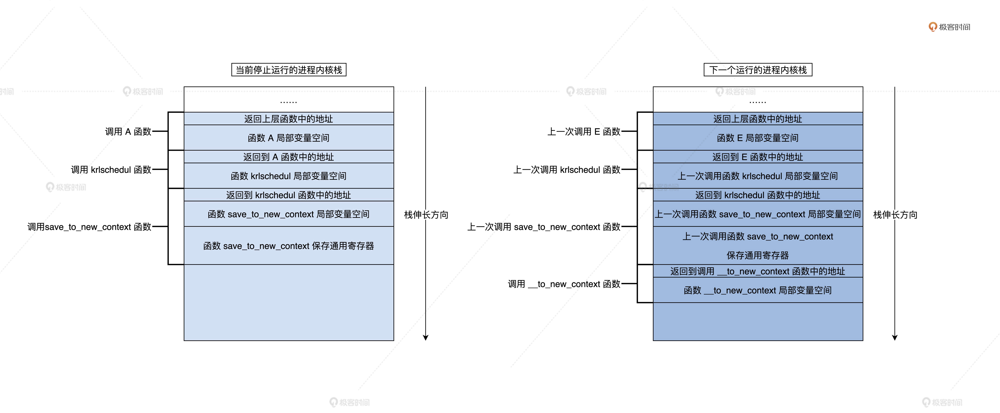
结合上图，你就能理解这个进程切换的原理了。同时你也会发现一个问题，就是这个切换机制能够正常运行，必须保证下一个进程已经被调度过，也就是它调用执行过krlschedul函数。
那么已知新建进程绝对没有调用过krlschedul函数，所以它得进行特殊处理。我们在__to_new_context函数中完成这个特殊处理，代码如下所示。
void __to_new_context(thread_t *next, thread_t *prev)
{
uint_t cpuid = hal_retn_cpuid();
schdata_t *schdap = &osschedcls.scls_schda[cpuid];
//设置当前运行进程为下一个运行的进程
schdap->sda_currtd = next;
//设置下一个运行进程的tss为当前CPU的tss
next->td_context.ctx_nexttss = &x64tss[cpuid];
//设置当前CPU的tss中的R0栈为下一个运行进程的内核栈
next->td_context.ctx_nexttss->rsp0 = next->td_krlstktop;
//装载下一个运行进程的MMU页表
hal_mmu_load(&next->td_mmdsc->msd_mmu);
if (next->td_stus == TDSTUS_NEW)
{ //如果是新建进程第一次运行就要进行处理
next->td_stus = TDSTUS_RUN;
retnfrom_first_sched(next);
}
return;
}
上面代码的注释已经很清楚了，__to_new_context负责设置当前运行的进程，处理CPU发生中断时需要切换栈的问题，又切换了一个进程的MMU页表（即使用新进程的地址空间），最后如果是新建进程第一次运行，就调用retnfrom_first_sched函数进行处理。下面我们来写好这个函数。
void retnfrom_first_sched(thread_t *thrdp)
{
__asm__ __volatile__(
"movq %[NEXT_RSP],%%rsp\n\t" //设置CPU的RSP寄存器为该进程机器上下文结构中的RSP
//恢复进程保存在内核栈中的段寄存器
"popq %%r14\n\t"
"movw %%r14w,%%gs\n\t"
"popq %%r14\n\t"
"movw %%r14w,%%fs\n\t"
"popq %%r14\n\t"
"movw %%r14w,%%es\n\t"
"popq %%r14\n\t"
"movw %%r14w,%%ds\n\t"
//恢复进程保存在内核栈中的通用寄存器
"popq %%r15\n\t"
"popq %%r14\n\t"
"popq %%r13\n\t"
"popq %%r12\n\t"
"popq %%r11\n\t"
"popq %%r10\n\t"
"popq %%r9\n\t"
"popq %%r8\n\t"
"popq %%rdi\n\t"
"popq %%rsi\n\t"
"popq %%rbp\n\t"
"popq %%rdx\n\t"
"popq %%rcx\n\t"
"popq %%rbx\n\t"
"popq %%rax\n\t"
//恢复进程保存在内核栈中的RIP、CS、RFLAGS，（有可能需要恢复进程应用程序的RSP、SS）寄存器
"iretq\n\t"
:
: [ NEXT_RSP ] "m"(thrdp->td_context.ctx_nextrsp)
: "memory");
}
retnfrom_first_sched函数不会返回到调用它的__to_new_context函数中，而是直接运行新建进程的相关代码（如果你不理解这段代码的原理，可以回顾上一课，看看建立进程时，对进程内核栈进行的初始化工作）。
好，进行到这里，我们已经设计出了我们的Cosmos的进程调度器，但我们都知道，这样的调度器还不够，我们还没有解决进程的等待和唤醒问题，这些内容下节课我再跟你详细分享。
重点回顾
这节课我们从了解为什么需要多进程调度开始，随后实现子调度管理多个进程，最终实现了进程调度器，这里面有很多重要的知识点，我来为你梳理一下。
1.为什么需要多进程调度？我们分析了系统中总有些资源不能满足每个进程的需求，所以一些进程必须要走走停停，这就需要不同的进程来回切换到CPU上运行，为了实现这个机制就需要多进程调度。
2.组织多个进程。为了实现进程管理，必须要组织多个进程。我们设计了调度器数据结构，在该结构中，我们使用优先级链表数组来组织多个进程，并且对这些数据结构的变量进行了初始化。
3.进程调度。有了多个进程就需要进程调度，我们的进程调度器是一个函数，在这个函数中选择了当前运行进程和下一个将要运行的进程，如果实在没有可运行的进程就选择空转进程，最后关键是进程间切换，我们是通过切换进程的内核栈来切换进程的函数调用路径，当调度器函数返回的时候已经是另一个进程了。
思考题
请问当调度器函数调度到一个新建进程时，为何要进入retnfrom_first_sched函数呢？
欢迎你在留言区积极分享，相信通过主动输出，你将更好地理解这节课的内容。也欢迎把这节课分享给你的朋友，和他交流探讨，
好，我是LMOS，我们下节课见！
26 多个活动要安排（下）：如何实现进程的等待与唤醒机制？
你好，我是LMOS。
上节课，我带你一起设计了我们Cosmos的进程调度器，但有了进程调度器还不够，因为调度器它始终只是让一个进程让出CPU，切换到它选择的下一个进程上去运行。
结合前面我们对进程生命周期的讲解，估计你已经反应过来了。没错，多进程调度方面，我们还要实现进程的等待与唤醒机制，今天我们就来搞定它。
这节课的配套代码，你可以从这里下载。
进程的等待与唤醒
我们已经知道，进程得不到所需的某个资源时就会进入等待状态，直到这种资源可用时，才会被唤醒。那么进程的等待与唤醒机制到底应该这样设计呢，请听我慢慢为你梳理。
进程等待结构
很显然，在实现进程的等待与唤醒的机制之前，我们需要设计一种数据结构，用于挂载等待的进程，在唤醒的时候才可以找到那些等待的进程 ，这段代码如下所示。
typedef struct s_KWLST
{
spinlock_t wl_lock; //自旋锁
uint_t wl_tdnr; //等待进程的个数
list_h_t wl_list; //挂载等待进程的链表头
}kwlst_t;
其实，这个结构在前面讲信号量的时候，我们已经见过了。这是因为它经常被包含在信号量等上层数据结构中，而信号量结构，通常用于保护访问受限的共享资源。这个结构非常简单，我们不用多说。
进程等待
现在我们来实现让进程进入等待状态的机制，它也是一个函数。这个函数会设置进程状态为等待状态，让进程从调度系统数据结构中脱离，最后让进程加入到kwlst_t等待结构中，代码如下所示。
void krlsched_wait(kwlst_t *wlst)
{
cpuflg_t cufg, tcufg;
uint_t cpuid = hal_retn_cpuid();
schdata_t *schdap = &osschedcls.scls_schda[cpuid];
//获取当前正在运行的进程
thread_t *tdp = krlsched_retn_currthread();
uint_t pity = tdp->td_priority;
krlspinlock_cli(&schdap->sda_lock, &cufg);
krlspinlock_cli(&tdp->td_lock, &tcufg);
tdp->td_stus = TDSTUS_WAIT;//设置进程状态为等待状态
list_del(&tdp->td_list);//脱链
krlspinunlock_sti(&tdp->td_lock, &tcufg);
if (schdap->sda_thdlst[pity].tdl_curruntd == tdp)
{
schdap->sda_thdlst[pity].tdl_curruntd = NULL;
}
schdap->sda_thdlst[pity].tdl_nr--;
krlspinunlock_sti(&schdap->sda_lock, &cufg);
krlwlst_add_thread(wlst, tdp);//将进程加入等待结构中
return;
}
上述代码也不难，你结合注释就能理解。有一点需要注意，这个函数使进程进入等待状态，而这个进程是当前正在运行的进程，而当前正在运行的进程正是调用这个函数的进程，所以一个进程想要进入等待状态，只要调用这个函数就好了。
进程唤醒
进程的唤醒则是进程等待的反向操作行为，即从等待数据结构中获取进程，然后设置进程的状态为运行状态，最后将这个进程加入到进程调度系统数据结构中。这个函数的代码如下所示。
void krlsched_up(kwlst_t *wlst)
{
cpuflg_t cufg, tcufg;
uint_t cpuid = hal_retn_cpuid();
schdata_t *schdap = &osschedcls.scls_schda[cpuid];
thread_t *tdp;
uint_t pity;
//取出等待数据结构第一个进程并从等待数据结构中删除
tdp = krlwlst_del_thread(wlst);
pity = tdp->td_priority;//获取进程的优先级
krlspinlock_cli(&schdap->sda_lock, &cufg);
krlspinlock_cli(&tdp->td_lock, &tcufg);
tdp->td_stus = TDSTUS_RUN;//设置进程的状态为运行状态
krlspinunlock_sti(&tdp->td_lock, &tcufg);
list_add_tail(&tdp->td_list, &(schdap->sda_thdlst[pity].tdl_lsth));//加入进程优先级链表
schdap->sda_thdlst[pity].tdl_nr++;
krlspinunlock_sti(&schdap->sda_lock, &cufg);
return;
}
上面的代码相对简单，我想以你的能力，还能写出比以上更好的代码。好了，到这里，我们进程的等待与唤醒的机制已经实现了。
空转进程
下面我们一起来建立空转进程 ，它也是我们系统下的第一个进程。空转进程是操作系统在没任何进程可以调度运行的时候，就选择调度空转进程来运行，可以说空转进程是进程调度器最后的选择。
请注意，这个最后的选择一定要有，现在几乎所有的操作系统，都有一个或者几个空转进程（多CPU的情况下，每个CPU一个空转进程）。我们的Cosmos虽然是简单了些，但也必须要有空转进程，而且这是我们Cosmos上的第一个进程。
建立空转进程
我们Cosmos的空转进程是个内核进程，按照常理，我们只要调用上节课实现的建立进程的接口，创建一个内核进程就好了。
但是我们的空转进程有点特殊，它是内核进程没错，但它不加入调度系统，而是一个专用的指针指向它的。
下面我们来建立一个空转进程。由于空转进程是个独立的模块，我们建立一个新的C语言文件Cosmos/kernel/krlcpuidle.c，代码如下所示。
thread_t *new_cpuidle_thread()
{
thread_t *ret_td = NULL;
bool_t acs = FALSE;
adr_t krlstkadr = NULL;
uint_t cpuid = hal_retn_cpuid();
schdata_t *schdap = &osschedcls.scls_schda[cpuid];
krlstkadr = krlnew(DAFT_TDKRLSTKSZ);//分配进程的内核栈
if (krlstkadr == NULL)
{
return NULL;
}
//分配thread_t结构体变量
ret_td = krlnew_thread_dsc();
if (ret_td == NULL)
{
acs = krldelete(krlstkadr, DAFT_TDKRLSTKSZ);
if (acs == FALSE)
{
return NULL;
}
return NULL;
}
//设置进程具有系统权限
ret_td->td_privilege = PRILG_SYS;
ret_td->td_priority = PRITY_MIN;
//设置进程的内核栈顶和内核栈开始地址
ret_td->td_krlstktop = krlstkadr + (adr_t)(DAFT_TDKRLSTKSZ - 1);
ret_td->td_krlstkstart = krlstkadr;
//初始化进程的内核栈
krlthread_kernstack_init(ret_td, (void *)krlcpuidle_main, KMOD_EFLAGS);
//设置调度系统数据结构的空转进程和当前进程为ret_td
schdap->sda_cpuidle = ret_td;
schdap->sda_currtd = ret_td;
return ret_td;
}
//新建空转进程
void new_cpuidle()
{
thread_t *thp = new_cpuidle_thread();//建立空转进程
if (thp == NULL)
{//失败则主动死机
hal_sysdie("newcpuilde err");
}
kprint("CPUIDLETASK: %x\n", (uint_t)thp);
return;
}
上述代码中，建立空转进程由new_cpuidle函数调用new_cpuidle_thread函数完成，new_cpuidle_thread函数的操作和前面建立内核进程差不多，只不过在函数的最后，让调度系统数据结构的空转进程和当前进程的指针，指向了刚刚建立的进程。
但是你要注意，上述代码中调用初始内核栈函数时，将krlcpuidle_main函数传了进去，这就是空转进程的主函数，下面我们来写好。
void krlcpuidle_main()
{
uint_t i = 0;
for (;; i++)
{
kprint("空转进程运行:%x\n", i);//打印
krlschedul();//调度进程
}
return;
}
我给你解释一下，空转进程的主函数本质就是个死循环，在死循环中打印一行信息，然后进行进程调度，这个函数就是永无休止地执行这两个步骤。
空转进程运行
我们已经建立了空转进程，下面就要去运行它了。
由于是第一进程，所以没法用调度器来调度它，我们得手动启动它，才可以运行。其实上节课我们已经写了启动一个新建进程运行的函数，我们现在只要调用它就好了，代码如下所示。
void krlcpuidle_start()
{
uint_t cpuid = hal_retn_cpuid();
schdata_t *schdap = &osschedcls.scls_schda[cpuid];
//取得空转进程
thread_t *tdp = schdap->sda_cpuidle;
//设置空转进程的tss和R0特权级的栈
tdp->td_context.ctx_nexttss = &x64tss[cpuid];
tdp->td_context.ctx_nexttss->rsp0 = tdp->td_krlstktop;
//设置空转进程的状态为运行状态
tdp->td_stus = TDSTUS_RUN;
//启动进程运行
retnfrom_first_sched(tdp);
return;
}
上述代码的逻辑也很容易理解，我为你梳理一下。首先就是取出空转进程，然后设置一下机器上下文结构和运行状态，最后调用retnfrom_first_sched函数，恢复进程内核栈中的内容，让进程启动运行。
不过这还没完，我们应该把建立空转进程和启动空转进程运行函数封装起来，放在一个初始化空转进程的函数中，并在内核层初始化init_krl函数的最后调用，代码如下所示。
void init_krl()
{
init_krlsched();//初始化进程调度器
init_krlcpuidle();//初始化空转进程
die(0);//防止init_krl函数返回
return;
}
//初始化空转进程
void init_krlcpuidle()
{
new_cpuidle();//建立空转进程
krlcpuidle_start();//启动空转进程运行
return;
}
好了，所有的代码都已备好，终于到我们检验学习成果的时候了，我切换到这节课程的cosmos目录下执行make vboxtest 命令，就会出现如下图的结果，如下图所示。

可以看到，现在空转进程和调度器输出的信息在屏幕上交替滚动出现，这说明我们的空转进程和进程调度器都已经正常工作了。
多进程运行
虽然我们的空转进程和调度器已经正常工作了，但你可能心里会有疑问，我们系统中就一个空转进程，那怎么证明我们进程调度器是正常工作的呢？
其实我们在空转进程中调用了调度器函数，然后进程调度器会发现系统中没有进程，又不得不调度空转进程，所以最后结果就是：空转进程调用进程调度器，而调度器又选择了空转进程，导致形成了一个闭环。
但是我们现在想要看看多个进程会是什么情况，就需要建立多个进程。下面我们马上就来实现这个想法，代码如下。
void thread_a_main()//进程A主函数
{
uint_t i = 0;
for (;; i++) {
kprint("进程A运行:%x\n", i);
krlschedul();
}
return;
}
void thread_b_main()//进程B主函数
{
uint_t i = 0;
for (;; i++) {
kprint("进程B运行:%x\n", i);
krlschedul();
}
return;
}
void init_ab_thread()
{
krlnew_thread((void*)thread_a_main, KERNTHREAD_FLG,
PRILG_SYS, PRITY_MIN, DAFT_TDUSRSTKSZ, DAFT_TDKRLSTKSZ);//建立进程A
krlnew_thread((void*)thread_b_main, KERNTHREAD_FLG,
PRILG_SYS, PRITY_MIN, DAFT_TDUSRSTKSZ, DAFT_TDKRLSTKSZ);//建立进程B
return;
}
void init_krlcpuidle()
{
new_cpuidle();//建立空转进程
init_ab_thread();//初始化建立A、B进程
krlcpuidle_start();//开始运行空转进程
return;
}
上述代码中，我们在init_ab_thread函数中建立两个内核进程，分别运行两个函数，这两个函数会打印信息，init_ab_thread函数由init_krlcpuidle函数调用。这样在初始化空转进程的时候，就建立了进程A和进程B。
好了，现在我们在Linux终端下进入cosmos目录，在目录下输入make vboxtest运行一下，结果如下图所示。

上图中，进程A和进程B在调度器的调度下交替运行，而空转进程不再运行，这表明我们的多进程机制完全正确。
重点回顾
这节课我们接着上一节课，实现了进程的等待与唤醒机制，然后建立了空转进程，最后对进程调度进行了测试。下面我来为你梳理一下要点。
1.等待和唤醒机制。为了让进程能进入等待状态随后又能在其它条件满足的情况下被唤醒，我们实现了进程等待和唤醒机制。
2.空转进程。是我们Cosmos系统下的第一个进程，它只干一件事情就是调用调度器函数调度进程，在系统中没有其它可以运行进程时，调度器又会调度空转进程，形成了一个闭环。
3.测试。为了验证我们的进程调度器是否是正常工作的，我们建立了两个进程，让它们运行，结果在屏幕上出现了它们交替输出的信息。这证明了我们的进程调度器是功能正常的。
你也许发现了，我们的进程中都调用了krlschedul函数，不调用它就是始终只有一个进程运行了，你在开发应用程序中，需要调用调度器主动让出CPU吗？
这是什么原因呢？这是因为我们的Cosmos没有定时器驱动，系统的TICK机制无法工作，一旦我们系统TICK机开始工作，就能控制进程运行了多长时间，然后强制调度进程。系统TICK设备我们等到驱动与设备相关的模块，再给你展开讲解。
思考题
请问，我们让进程进入等待状态后，这进程会立马停止运行吗？
欢迎你在留言区和我交流，相信通过积极参与，你将更好地理解这节课的内容。
好，我是LMOS，我们下节课见！
27 瞧一瞧Linux：Linux如何实现进程与进程调度_
你好，我是LMOS。
在前面的课程中，我们已经写好了Cosmos的进程管理组件，实现了多进程调度运行，今天我们一起探索Linux如何表示进程以及如何进行多进程调度。
好了，话不多说，我们开始吧。
Linux如何表示进程
在Cosmos中，我们设计了一个thread_t数据结构来代表一个进程，Linux也同样是用一个数据结构表示一个进程。
下面我们先来研究Linux的进程数据结构，然后看看Linux进程的地址空间数据结构，最后再来理解Linux的文件表结构。
Linux进程的数据结构
Linux系统下，把运行中的应用程序抽象成一个数据结构task_struct，一个应用程序所需要的各种资源，如内存、文件等都包含在task_struct结构中。
因此，task_struct结构是非常巨大的一个数据结构，代码如下。
struct task_struct {
struct thread_info thread_info;//处理器特有数据
volatile long state; //进程状态
void *stack; //进程内核栈地址
refcount_t usage; //进程使用计数
int on_rq; //进程是否在运行队列上
int prio; //动态优先级
int static_prio; //静态优先级
int normal_prio; //取决于静态优先级和调度策略
unsigned int rt_priority; //实时优先级
const struct sched_class *sched_class;//指向其所在的调度类
struct sched_entity se;//普通进程的调度实体
struct sched_rt_entity rt;//实时进程的调度实体
struct sched_dl_entity dl;//采用EDF算法调度实时进程的调度实体
struct sched_info sched_info;//用于调度器统计进程的运行信息
struct list_head tasks;//所有进程的链表
struct mm_struct *mm; //指向进程内存结构
struct mm_struct *active_mm;
pid_t pid; //进程id
struct task_struct __rcu *parent;//指向其父进程
struct list_head children; //链表中的所有元素都是它的子进程
struct list_head sibling; //用于把当前进程插入到兄弟链表中
struct task_struct *group_leader;//指向其所在进程组的领头进程
u64 utime; //用于记录进程在用户态下所经过的节拍数
u64 stime; //用于记录进程在内核态下所经过的节拍数
u64 gtime; //用于记录作为虚拟机进程所经过的节拍数
unsigned long min_flt;//缺页统计
unsigned long maj_flt;
struct fs_struct *fs; //进程相关的文件系统信息
struct files_struct *files;//进程打开的所有文件
struct vm_struct *stack_vm_area;//内核栈的内存区
};
为了帮你掌握核心思路，关于task_struct结构体，我省略了进程的权能、性能跟踪、信号、numa、cgroup等相关的近500行内容，你若有兴趣可以自行阅读，这里你只需要明白，在内存中，一个task_struct结构体的实例变量代表一个Linux进程就行了。
创建task_struct结构
Linux创建task_struct结构体的实例变量，这里我们只关注早期和最新的创建方式。
Linux早期是这样创建task_struct结构体的实例变量的：找伙伴内存管理系统，分配两个连续的页面（即8KB），作为进程的内核栈，再把task_struct结构体的实例变量，放在这8KB内存空间的开始地址处。内核栈则是从上向下伸长的，task_struct数据结构是从下向上伸长的。
我给你画幅图，你就明白了。

从图中不难发现，Linux把task_struct结构和内核栈放在了一起 ，所以我们只要把RSP寄存器的值读取出来，然后将其低13位清零，就得到了当前task_struct结构体的地址。由于内核栈比较大，而且会向下伸长，覆盖掉task_struct结构体内容的概率就很小。
随着Linux版本的迭代，task_struct结构体的体积越来越大，从前task_struct结构体和内核栈放在一起的方式就不合适了。最新的版本是分开放的，我们一起来看看后面的代码。
static unsigned long *alloc_thread_stack_node(struct task_struct *tsk, int node)
{
struct page *page = alloc_pages_node(node, THREADINFO_GFP,
THREAD_SIZE_ORDER);//分配两个页面
if (likely(page)) {
tsk->stack = kasan_reset_tag(page_address(page));
return tsk->stack;//让task_struct结构的stack字段指向page的地址
}
return NULL;
}
static inline struct task_struct *alloc_task_struct_node(int node)
{
return kmem_cache_alloc_node(task_struct_cachep, GFP_KERNEL, node);//在task_struct_cachep内存对象中分配一个task_struct结构休对象
}
static struct task_struct *dup_task_struct(struct task_struct *orig, int node)
{
struct task_struct *tsk; unsigned long *stack;
tsk = alloc_task_struct_node(node);//分配task_struct结构体
if (!tsk)
return NULL;
stack = alloc_thread_stack_node(tsk, node);//分配内核栈
tsk->stack = stack;
return tsk;
}
static __latent_entropy struct task_struct *copy_process(
struct pid *pid, int trace, int node,
struct kernel_clone_args *args)
{
int pidfd = -1, retval;
struct task_struct *p;
//……
retval = -ENOMEM;
p = dup_task_struct(current, node);//分配task_struct和内核栈
//……
return ERR_PTR(retval);
}
pid_t kernel_clone(struct kernel_clone_args *args)
{
u64 clone_flags = args->flags;
struct task_struct *p;
pid_t nr;
//……
//复制进程
p = copy_process(NULL, trace, NUMA_NO_NODE, args);
//……
return nr;
}
//建立进程接口
SYSCALL_DEFINE0(fork)
{
struct kernel_clone_args args = {
.exit_signal = SIGCHLD,
};
return kernel_clone(&args);
}
为了直击重点，我们不会讨论Linux的fork函数，你只要知道，它负责建立一个与父进程相同的进程，也就是复制了父进程的一系列数据，这就够了。
要复制父进程的数据必须要分配内存，上面代码的流程完整展示了从SLAB中分配task_struct结构，以及从伙伴内存系统分配内核栈的过程，整个过程是怎么回事儿，才是你要领会的重点。
Linux进程地址空间
Linux也是支持虚拟内存的操作系统内核，现在我们来看看Linux用于描述一个进程的地址空间的数据结构，它就是mm_struct结构，代码如下所示。
struct mm_struct {
struct vm_area_struct *mmap; //虚拟地址区间链表VMAs
struct rb_root mm_rb; //组织vm_area_struct结构的红黑树的根
unsigned long task_size; //进程虚拟地址空间大小
pgd_t * pgd; //指向MMU页表
atomic_t mm_users; //多个进程共享这个mm_struct
atomic_t mm_count; //mm_struct结构本身计数
atomic_long_t pgtables_bytes;//页表占用了多个页
int map_count; //多少个VMA
spinlock_t page_table_lock; //保护页表的自旋锁
struct list_head mmlist; //挂入mm_struct结构的链表
//进程应用程序代码开始、结束地址，应用程序数据的开始、结束地址
unsigned long start_code, end_code, start_data, end_data;
//进程应用程序堆区的开始、当前地址、栈开始地址
unsigned long start_brk, brk, start_stack;
//进程应用程序参数区开始、结束地址
unsigned long arg_start, arg_end, env_start, env_end;
};
同样的，mm_struct结构，我也精减了很多内容。其中的vm_area_struct结构，相当于我们之前Cosmos的kmvarsdsc_t结构（可以回看第20节课），是用来描述一段虚拟地址空间的。mm_struct结构中也包含了MMU页表相关的信息。
下面我们一起来看看，mm_struct结构是如何建立对应的实例变量呢？代码如下所示。
//在mm_cachep内存对象中分配一个mm_struct结构休对象
#define allocate_mm() (kmem_cache_alloc(mm_cachep, GFP_KERNEL))
static struct mm_struct *dup_mm(struct task_struct *tsk,
struct mm_struct *oldmm)
{
struct mm_struct *mm;
//分配mm_struct结构
mm = allocate_mm();
if (!mm)
goto fail_nomem;
//复制mm_struct结构
memcpy(mm, oldmm, sizeof(*mm));
//……
return mm;
}
static int copy_mm(unsigned long clone_flags, struct task_struct *tsk)
{
struct mm_struct *mm, *oldmm;
int retval;
tsk->min_flt = tsk->maj_flt = 0;
tsk->nvcsw = tsk->nivcsw = 0;
retval = -ENOMEM;
mm = dup_mm(tsk, current->mm);//分配mm_struct结构的实例变量
if (!mm)
goto fail_nomem;
good_mm:
tsk->mm = mm;
tsk->active_mm = mm;
return 0;
fail_nomem:
return retval;
}
上述代码的copy_mm函数正是在copy_process函数中被调用的， copy_mm函数调用dup_mm函数，把当前进程的mm_struct结构复制到allocate_mm宏分配的一个mm_struct结构中。这样，一个新进程的mm_struct结构就建立了。
Linux进程文件表
在Linux系统中，可以说万物皆为文件，比如文件、设备文件、管道文件等。一个进程对一个文件进行读写操作之前，必须先打开文件，这个打开的文件就记录在进程的文件表中，它由task_struct结构中的files字段指向。这里指向的其实是个files_struct结构，代码如下所示。
struct files_struct {
atomic_t count;//自动计数
struct fdtable __rcu *fdt;
struct fdtable fdtab;
spinlock_t file_lock; //自旋锁
unsigned int next_fd;//下一个文件句柄
unsigned long close_on_exec_init[1];//执行exec()时要关闭的文件句柄
unsigned long open_fds_init[1];
unsigned long full_fds_bits_init[1];
struct file __rcu * fd_array[NR_OPEN_DEFAULT];//默认情况下打开文件的指针数组
};
从上述代码中，可以推想出我们在应用软件中调用：int fd = open(“/tmp/test.txt”); 实际Linux会建立一个struct file结构体实例变量与文件对应，然后把struct file结构体实例变量的指针放入fd_array数组中。
那么Linux在建立一个新进程时，怎样给新进程建立一个files_struct结构呢？其实很简单，也是复制当前进程的files_struct结构，代码如下所示。
static int copy_files(unsigned long clone_flags, struct task_struct *tsk)
{
struct files_struct *oldf, *newf;
int error = 0;
oldf = current->files;//获取当前进程的files_struct的指针
if (!oldf)
goto out;
if (clone_flags & CLONE_FILES) {
atomic_inc(&oldf->count);
goto out;
}
//分配新files_struct结构的实例变量，并复制当前的files_struct结构
newf = dup_fd(oldf, NR_OPEN_MAX, &error);
if (!newf)
goto out;
tsk->files = newf;//新进程的files_struct结构指针指向新的files_struct结构
error = 0;
out:
return error;
同样的，copy_files函数由copy_process函数调用，copy_files最终会复制当前进程的files_struct结构到一个新的files_struct结构实例变量中，并让新进程的files指针指向这个新的files_struct结构实例变量。
好了，关于进程的一些数据结构，我们就了解这么多，因为现在你还无需知道Linux进程的所有细节，对于一个庞大的系统，最大的误区是陷入细节而不知全貌。这里，我们只需要知道Linux用什么代表一个进程就行了。
Linux进程调度
Linux支持多CPU上运行多进程，这就要说到多进程调度了。Linux进程调度支持多种调度算法，有基于优先级的调度算法，有实时调度算法，有完全公平调度算法（CFQ）。
下面我们以CFQ为例进行探讨，我们先了解一下CFQ相关的数据结构，随后探讨CFQ算法要怎样实现。
进程调度实体
我们先来看看什么是进程调度实体，它是干什么的呢？
它其实是Linux进程调度系统的一部分，被嵌入到了Linux进程数据结构中，与调度器进行关联，能间接地访问进程，这种高内聚低耦合的方式，保证了进程数据结构和调度数据结构相互独立，我们后面可以分别做改进、优化，这是一种高明的软件设计思想。我们来看看这个结构，代码如下所示。
struct sched_entity {
struct load_weight load;//表示当前调度实体的权重
struct rb_node run_node;//红黑树的数据节点
struct list_head group_node;// 链表节点，被链接到 percpu 的 rq->cfs_tasks
unsigned int on_rq; //当前调度实体是否在就绪队列上
u64 exec_start;//当前实体上次被调度执行的时间
u64 sum_exec_runtime;//当前实体总执行时间
u64 prev_sum_exec_runtime;//截止到上次统计，进程执行的时间
u64 vruntime;//当前实体的虚拟时间
u64 nr_migrations;//实体执行迁移的次数
struct sched_statistics statistics;//统计信息包含进程的睡眠统计、等待延迟统计、CPU迁移统计、唤醒统计等。
#ifdef CONFIG_FAIR_GROUP_SCHED
int depth;// 表示当前实体处于调度组中的深度
struct sched_entity *parent;//指向父级调度实体
struct cfs_rq *cfs_rq;//当前调度实体属于的 cfs_rq.
struct cfs_rq *my_q;
#endif
#ifdef CONFIG_SMP
struct sched_avg avg ;// 记录当前实体对于CPU的负载
#endif
};
上述代码的信息量很多，但是我们现在不急于搞清楚所有的信息，我们现在需要知道的是在task_struct结构中，会包含至少一个sched_entity结构的变量，如下图所示。

结合图示，我们只要通过sched_entity结构变量的地址，减去它在task_struct结构中的偏移（由编译器自动计算），就能获取到task_struct结构的地址。这样就能达到通过sched_entity结构，访问task_struct结构的目的了。
进程运行队列
那么，在Linux中，又是怎样组织众多调度实体，进而组织众多进程，方便进程调度器找到调度实体呢？
首先，Linux定义了一个进程运行队列结构，每个CPU分配一个这样的进程运行队列结构实例变量，进程运行队列结构的代码如下。
struct rq {
raw_spinlock_t lock;//自旋锁
unsigned int nr_running;//多个就绪运行进程
struct cfs_rq cfs; //作用于完全公平调度算法的运行队列
struct rt_rq rt;//作用于实时调度算法的运行队列
struct dl_rq dl;//作用于EDF调度算法的运行队列
struct task_struct __rcu *curr;//这个运行队列当前正在运行的进程
struct task_struct *idle;//这个运行队列的空转进程
struct task_struct *stop;//这个运行队列的停止进程
struct mm_struct *prev_mm;//这个运行队列上一次运行进程的mm_struct
unsigned int clock_update_flags;//时钟更新标志
u64 clock; //运行队列的时间
//后面的代码省略
};
以上这个rq结构结构中，很多我们不需要关注的字段我已经省略了。你要重点理解的是，其中task_struct结构指针是为了快速访问特殊进程，而rq结构并不直接关联调度实体，而是包含了cfs_rq、rt_rq、dl_rq，通过它们来关联调度实体。
有三个不同的运行队列，是因为作用于三种不同的调度算法。我们这里只需要关注cfs_rq，代码我列在了后面。
struct rb_root_cached {
struct rb_root rb_root; //红黑树的根
struct rb_node *rb_leftmost;//红黑树最左子节点
};
struct cfs_rq {
struct load_weight load;//cfs_rq上所有调度实体的负载总和
unsigned int nr_running;//cfs_rq上所有的调度实体不含调度组中的调度实体
unsigned int h_nr_running;//cfs_rq上所有的调度实体包含调度组中所有调度实体
u64 exec_clock;//当前 cfs_rq 上执行的时间
u64 min_vruntime;//最小虚拟运行时间
struct rb_root_cached tasks_timeline;//所有调度实体的根
struct sched_entity *curr;//当前调度实体
struct sched_entity *next;//下一个调度实体
struct sched_entity *last;//上次执行过的调度实体
//省略不关注的代码
};
为了简化问题，上述代码中我省略了调度组和负载相关的内容。你也许已经看出来了，其中load、exec_clock、min_vruntime、tasks_timeline字段是CFS调度算法得以实现的关键，你甚至可以猜出所有的调度实体，都是通过红黑树组织起来的，即cfs_rq结构中的tasks_timeline字段。
调度实体和运行队列的关系
相信我，作为初学者，了解数据结构之间的组织关系，这远比了解一个数据结构所有字段的作用和细节重要得多。
通过前面的学习，我们已经了解了rq、cfs_rq、rb_root_cached、sched_entity、task_struct等数据结构，下面我们来看看它的组织关系，我特意为你准备了后面这幅图。
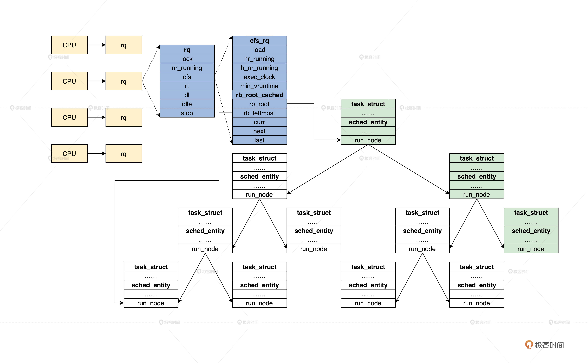
结合图片我们发现，task_struct结构中包含了sched_entity结构。sched_entity结构是通过红黑树组织起来的，红黑树的根在cfs_rq结构中，cfs_rq结构又被包含在rq结构，每个CPU对应一个rq结构。这样，我们就把所有运行的进程组织起来了。
调度器类
从前面的rq数据结构中，你已经发现了，Linux是同时支持多个进程调度器的，不同的进程挂载到不同的运行队列中，如rq结构中的cfs、rt、dl，然后针对它们这些结构，使用不同的调度器。
为了支持不同的调度器，Linux定义了调度器类数据结构，它定义了一个调度器要实现哪些函数，代码如下所示。
struct sched_class {
//向运行队列中添加一个进程，入队
void (*enqueue_task) (struct rq *rq, struct task_struct *p, int flags);
//向运行队列中删除一个进程，出队
void (*dequeue_task) (struct rq *rq, struct task_struct *p, int flags);
//检查当前进程是否可抢占
void (*check_preempt_curr)(struct rq *rq, struct task_struct *p, int flags);
//从运行队列中返回可以投入运行的一个进程
struct task_struct *(*pick_next_task)(struct rq *rq);
} ;
这个sched_class结构定义了一组函数指针，为了让你抓住重点，这里我删除了调度组和负载均衡相关的函数指针。Linux系统一共定义了五个sched_class结构的实例变量，这五个sched_class结构紧靠在一起，形成了sched_class结构数组。
为了找到相应的sched_class结构实例，可以用以下代码遍历所有的sched_class结构实例变量。
//定义在链接脚本文件中
extern struct sched_class __begin_sched_classes[];
extern struct sched_class __end_sched_classes[];
#define sched_class_highest (__end_sched_classes - 1)
#define sched_class_lowest (__begin_sched_classes - 1)
#define for_class_range(class, _from, _to) \
for (class = (_from); class != (_to); class--)
//遍历每个调度类
#define for_each_class(class) \
for_class_range(class, sched_class_highest, sched_class_lowest)
extern const struct sched_class stop_sched_class;//停止调度类
extern const struct sched_class dl_sched_class;//Deadline调度类
extern const struct sched_class rt_sched_class;//实时调度类
extern const struct sched_class fair_sched_class;//CFS调度类
extern const struct sched_class idle_sched_class;//空转调度类
这些类是有优先级的，它们的优先级是：stop_sched_class > dl_sched_class > rt_sched_class > fair_sched_class > idle_sched_class。
下面我们观察一下，CFS调度器（这个调度器我们稍后讨论）所需要的 fair_sched_class，代码如下所示。
const struct sched_class fair_sched_class
__section("__fair_sched_class") = {
.enqueue_task = enqueue_task_fair,
.dequeue_task = dequeue_task_fair,
.check_preempt_curr = check_preempt_wakeup,
.pick_next_task = __pick_next_task_fair,
};
我们看到这些函数指针字段都对应到了具体的函数。其实，实现一个新的调度器，就是实现这些对应的函数。好了，我们清楚了调度器类，它就是一组函数指针，不知道你发现没有，这难道不是C语言下的面向对象吗？下面，我们接着研究CFS调度器。
Linux的CFS调度器
Linux支持多种不同的进程调度器，比如RT调度器、Deadline调度器、CFS调度器以及Idle调度器。不过，这里我们仅仅讨论一下CFS调度器，也就是完全公平调度器，CFS的设计理念是在有限的真实硬件平台上模拟实现理想的、精确的多任务CPU。现在你不懂也不要紧，我们后面会讨论的。
在了解CFS核心算法之前，你需要先掌握几个核心概念。
普通进程的权重
Linux会使用CFS调度器调度普通进程，CFS调度器与其它进程调度器的不同之处在于没有时间片的概念，它是分配CPU使用时间的比例。比如，4个相同优先级的进程在一个CPU上运行，那么每个进程都将会分配25%的CPU运行时间。这就是进程要的公平。
然而事有轻重缓急，对进程来说也是一样，有些进程的优先级就需要很高。那么CFS调度器是如何在公平之下，实现“不公平”的呢？
首先，CFS调度器下不叫优先级，而是叫权重，权重表示进程的优先级，各个进程按权重的比例分配CPU时间。
举个例子，现在有A、B两个进程。进程A的权重是1024，进程B的权重是2048。那么进程A获得CPU的时间比例是1024/(1024+2048) = 33.3%。进程B获得的CPU时间比例是2048/(1024+2048)=66.7%。
因此，权重越大，分配的时间比例越大，就相当于进程的优先级越高。
有了权重之后，分配给进程的时间计算公式如下：
进程的时间 = CPU总时间 * 进程的权重/就绪队列所有进程权重之和
但是进程对外的编程接口中使用的是一个nice值，大小范围是（-20～19），数值越小优先级越大，意味着权重值越大，nice值和权重之间可以转换的。Linux提供了后面这个数组，用于转换nice值和权重。
const int sched_prio_to_weight[40] = {
/* -20 */ 88761, 71755, 56483, 46273, 36291,
/* -15 */ 29154, 23254, 18705, 14949, 11916,
/* -10 */ 9548, 7620, 6100, 4904, 3906,
/* -5 */ 3121, 2501, 1991, 1586, 1277,
/* 0 */ 1024, 820, 655, 526, 423,
/* 5 */ 335, 272, 215, 172, 137,
/* 10 */ 110, 87, 70, 56, 45,
/* 15 */ 36, 29, 23, 18, 15,
};
一个进程每降低一个nice值，就能多获得10% 的CPU时间。1024权重对应nice值为0，被称为NICE_0_LOAD。默认情况下，大多数进程的权重都是NICE_0_LOAD。
进程调度延迟
了解了进程权重，现在我们看看进程调度延迟，什么是调度延迟？其实就是保证每一个可运行的进程，都至少运行一次的时间间隔。
我们结合实例理解，系统中有3个可运行进程，每个进程都运行10ms，那么调度延迟就是30ms；如果有10个进程，那么调度延迟就是100ms；如果现在保证调度延迟不变，固定是30ms；如果系统中有3个进程，则每个进程可运行10ms；如果有10个进程，则每个进程可运行3ms。
随着进程的增加，每个进程分配的时间在减少，进程调度次数会增加，调度器占用的时间就会增加。因此，CFS调度器的调度延迟时间的设定并不是固定的。
当运行进程少于8个的时候，调度延迟是固定的6ms不变。当运行进程个数超过8个时，就要保证每个进程至少运行一段时间，才被调度。这个“至少一段时间”叫作最小调度粒度时间。
在CFS默认设置中，最小调度粒度时间是0.75ms，用变量sysctl_sched_min_granularity记录。由__sched_period函数负责计算，如下所示。
unsigned int sysctl_sched_min_granularity = 750000ULL;
static unsigned int normalized_sysctl_sched_min_granularity = 750000ULL;
static unsigned int sched_nr_latency = 8;
static u64 __sched_period(unsigned long nr_running)
{
if (unlikely(nr_running > sched_nr_latency))
return nr_running * sysctl_sched_min_granularity;
else
return sysctl_sched_latency;
}
上述代码中，参数nr_running是Linux系统中可运行的进程数量，当超过sched_nr_latency时，我们无法保证调度延迟，因此转为保证最小调度粒度。
虚拟时间
你是否还记得调度实体中的vruntime么？它就是用来表示虚拟时间的，我们先按下不表，来看一个例子。
假设幼儿园只有一个秋千，所有孩子都想玩，身为老师的你该怎么处理呢？你一定会想每个孩子玩一段时间，然后就让给别的孩子，依次类推。CFS调度器也是这样做的，它记录了每个进程的执行时间，为保证每个进程运行时间的公平，哪个进程运行的时间最少，就会让哪个进程运行。

例如，调度延迟是10ms，系统一共2个相同优先级的进程，那么各进程都将在10ms的时间内各运行5ms。
现在进程A和进程B他们的权重分别是1024和820（nice值分别是0和1）。进程A获得的运行时间是10x1024/(1024+820)=5.6ms，进程B获得的执行时间是10x820/(1024+820)=4.4ms。进程A的cpu使用比例是5.6/10x100%=56%，进程B的cpu使用比例是4.4/10x100%=44%。
很明显，这两个进程的实际执行时间是不等的，但CFS调度器想保证每个进程的运行时间相等。因此CFS调度器引入了虚拟时间，也就是说，上面的5.6ms和4.4ms经过一个公式，转换成相同的值，这个转换后的值就叫虚拟时间。这样的话，CFS只需要保证每个进程运行的虚拟时间是相等的。
虚拟时间vruntime和实际时间（wtime）转换公式如下：
vruntime = wtime*( NICE_0_LOAD/weight)
根据上面的公式，可以发现nice值为0的进程，这种进程的虚拟时间和实际时间是相等的，那么进程A的虚拟时间为：5.6*(1024⁄1024)=5.6，进程B的虚拟时间为：4.4*(1024⁄820)=5.6。虽然进程A和进程B的权重不一样，但是计算得到的虚拟时间是一样的。
所以，CFS调度主要保证每个进程运行的虚拟时间一致即可。在选择下一个即将运行的进程时，只需要找到虚拟时间最小的进程就行了。这个计算过程由calc_delta_fair函数完成，如下所示。
static u64 __calc_delta(u64 delta_exec, unsigned long weight, struct load_weight *lw)
{
u64 fact = scale_load_down(weight);
int shift = WMULT_SHIFT;
__update_inv_weight(lw);
if (unlikely(fact >> 32)) {
while (fact >> 32) {
fact >>= 1;
shift--;
}
}
//为了避免使用浮点计算
fact = mul_u32_u32(fact, lw->inv_weight);
while (fact >> 32) {
fact >>= 1;
shift--;
}
return mul_u64_u32_shr(delta_exec, fact, shift);
}
static inline u64 calc_delta_fair(u64 delta, struct sched_entity *se)
{
if (unlikely(se->load.weight != NICE_0_LOAD))
delta = __calc_delta(delta, NICE_0_LOAD, &se->load);
return delta;
}
按照上面的理论，调用__calc_delta函数的时候，传递的weight参数是NICE_0_LOAD，lw参数正是调度实体中的load_weight结构体。
到这里，我要公开一个问题，在运行队列中用红黑树结构组织进程的调度实体，这里进程虚拟时间正是红黑树的key，这样进程就以进程的虚拟时间被红黑树组织起来了。红黑树的最左子节点，就是虚拟时间最小的进程，随着时间的推移进程会从红黑树的左边跑到右，然后从右边跑到左边，就像舞蹈一样优美。
CFS调度进程
根据前面的内容，我们得知CFS调度器就是要维持各个可运行进程的虚拟时间相等，不相等就需要被调度运行。如果一个进程比其它进程的虚拟时间小，它就应该运行达到和其它进程的虚拟时间持平，直到它的虚拟时间超过其它进程，这时就要停下来，这样其它进程才能被调度运行。
定时周期调度
前面虚拟时间的方案还存在问题，你发现了么？
没错，虚拟时间就是一个数据，如果没有任何机制对它进行更新，就会导致一个进程永远运行下去，因为那个进程的虚拟时间没有更新，虚拟时间永远最小，这当然不行。
因此定时周期调度机制应运而生。Linux启动会启动定时器，这个定时器每1/1000、1/250、1/100秒（根据配置不同选取其一），产生一个时钟中断，在中断处理函数中最终会调用一个scheduler_tick函数，代码如下所示。
static void update_curr(struct cfs_rq *cfs_rq)
{
struct sched_entity *curr = cfs_rq->curr;
u64 now = rq_clock_task(rq_of(cfs_rq));//获取当前时间
u64 delta_exec;
delta_exec = now - curr->exec_start;//间隔时间
curr->exec_start = now;
curr->sum_exec_runtime += delta_exec;//累计运行时间
curr->vruntime += calc_delta_fair(delta_exec, curr);//计算进程的虚拟时间
update_min_vruntime(cfs_rq);//更新运行队列中的最小虚拟时间，这是新建进程的虚拟时间，避免一个新建进程因为虚拟时间太小而长时间占用CPU
}
static void entity_tick(struct cfs_rq *cfs_rq, struct sched_entity *curr, int queued)
{
update_curr(cfs_rq);//更新当前运行进程和运行队列相关的时间
if (cfs_rq->nr_running > 1)//当运行进程数量大于1就检查是否可抢占
check_preempt_tick(cfs_rq, curr);
}
#define for_each_sched_entity(se) \
for (; se; se = NULL)
static void task_tick_fair(struct rq *rq, struct task_struct *curr, int queued)
{
struct cfs_rq *cfs_rq;
struct sched_entity *se = &curr->se;//获取当前进程的调度实体
for_each_sched_entity(se) {//仅对当前进程的调度实体
cfs_rq = cfs_rq_of(se);//获取当前进程的调度实体对应运行队列
entity_tick(cfs_rq, se, queued);
}
}
void scheduler_tick(void)
{
int cpu = smp_processor_id();
struct rq *rq = cpu_rq(cpu);//获取运行CPU运行进程队列
struct task_struct *curr = rq->curr;//获取当进程
update_rq_clock(rq);//更新运行队列的时间等数据
curr->sched_class->task_tick(rq, curr, 0);//更新当前时间的虚拟时间
}
上述代码中，scheduler_tick函数会调用进程调度类的task_tick函数，对于CFS调度器就是task_tick_fair函数。但是真正做事的是entity_tick函数，entity_tick函数中调用了update_curr函数更新当前进程虚拟时间，这个函数我们在之前讨论过了，还更新了运行队列的相关数据。
entity_tick函数的最后，调用了check_preempt_tick函数，用来检查是否可以抢占调度，代码如下。
static void check_preempt_tick(struct cfs_rq *cfs_rq, struct sched_entity *curr)
{
unsigned long ideal_runtime, delta_exec;
struct sched_entity *se;
s64 delta;
//计算当前进程在本次调度中分配的运行时间
ideal_runtime = sched_slice(cfs_rq, curr);
//当前进程已经运行的实际时间
delta_exec = curr->sum_exec_runtime - curr->prev_sum_exec_runtime;
//如果实际运行时间已经超过分配给进程的运行时间，就需要抢占当前进程。设置进程的TIF_NEED_RESCHED抢占标志。
if (delta_exec > ideal_runtime) {
resched_curr(rq_of(cfs_rq));
return;
}
//因此如果进程运行时间小于最小调度粒度时间，不应该抢占
if (delta_exec < sysctl_sched_min_granularity)
return;
//从红黑树中找到虚拟时间最小的调度实体
se = __pick_first_entity(cfs_rq);
delta = curr->vruntime - se->vruntime;
//如果当前进程的虚拟时间仍然比红黑树中最左边调度实体虚拟时间小，也不应该发生调度
if (delta < 0)
return;
}
刚才的代码你可以这样理解，如果需要抢占就会调用resched_curr函数设置进程的抢占标志，但是这个函数本身不会调用进程调度器函数，而是在进程从中断或者系统调用返回到用户态空间时，检查当前进程的调度标志，然后根据需要调用进程调度器函数。
调度器入口
如果设计需要进行进程抢占调度，Linux就会在适当的时机进行进程调度，进程调度就是调用进程调度器入口函数，该函数会选择一个最合适投入运行的进程，然后切换到该进程上运行。
我们先来看看，进程调度器入口函数的代码长什么样。
static void __sched notrace __schedule(bool preempt)
{
struct task_struct *prev, *next;
unsigned long *switch_count;
unsigned long prev_state;
struct rq_flags rf;
struct rq *rq;
int cpu;
cpu = smp_processor_id();
rq = cpu_rq(cpu);//获取当前CPU的运行队列
prev = rq->curr; //获取当前进程
rq_lock(rq, &rf);//运行队列加锁
update_rq_clock(rq);//更新运行队列时钟
switch_count = &prev->nivcsw;
next = pick_next_task(rq, prev, &rf);//获取下一个投入运行的进程
clear_tsk_need_resched(prev); //清除抢占标志
clear_preempt_need_resched();
if (likely(prev != next)) {//当前运行进程和下一个运行进程不同，就要进程切换
rq->nr_switches++; //切换计数统计
++*switch_count;
rq = context_switch(rq, prev, next, &rf);//进程机器上下文切换
} else {
rq->clock_update_flags &= ~(RQCF_ACT_SKIP|RQCF_REQ_SKIP);
rq_unlock_irq(rq, &rf);//解锁运行队列
}
}
void schedule(void)
{
struct task_struct *tsk = current;//获取当前进程
do {
preempt_disable();//关闭内核抢占
__schedule(false);//进程调用
sched_preempt_enable_no_resched();//开启内核抢占
} while (need_resched());//是否需要再次重新调用
}
之所以在循环中调用__schedule函数执行真正的进程调度，是因为在执行调度的过程中，有些更高优先级的进程进入了可运行状态，因此它就要抢占当前进程。
__schedule函数中会更新一些统计数据，然后调用pick_next_task函数挑选出下一个进程投入运行。最后，如果当前进程和下一个要运行的进程不同，就要进行进程机器上下文切换，其中会切换地址空间和CPU寄存器。
挑选下一个进程
在__schedule函数中，获取了正在运行的进程，更新了运行队列的时钟，下面就要挑选出下一个投入运行的进程。显然，不是随便挑选一个，我们这就来看看调度器是如何挑选的。
挑选下一个运行进程这个过程，是在pick_next_task函数中完成的，如下所示。
static inline struct task_struct *pick_next_task(struct rq *rq, struct task_struct *prev, struct rq_flags *rf)
{
const struct sched_class *class;
struct task_struct *p;
//这是对CFS的一种优化处理，因为大部分进程属于CFS管理
if (likely(prev->sched_class <= &fair_sched_class &&
rq->nr_running == rq->cfs.h_nr_running)) {
p = pick_next_task_fair(rq, prev, rf);//调用CFS的对应的函数
if (unlikely(p == RETRY_TASK))
goto restart;
if (!p) {//如果没有获取到运行进程
put_prev_task(rq, prev);//将上一个进程放回运行队列中
p = pick_next_task_idle(rq);//获取空转进程
}
return p;
}
restart:
for_each_class(class) {//依次从最高优先级的调度类开始遍历
p = class->pick_next_task(rq);
if (p)//如果在一个调度类所管理的运行队列中挑选到一个进程，立即返回
return p;
}
BUG();//出错
}
你看，pick_next_task函数只是个框架函数，它的逻辑也很清楚，会依照优先级调用具体调度器类的函数完成工作，对于CFS则会调用pick_next_task_fair函数，代码如下所示。
struct task_struct *pick_next_task_fair(struct rq *rq, struct task_struct *prev, struct rq_flags *rf)
{
struct cfs_rq *cfs_rq = &rq->cfs;
struct sched_entity *se;
struct task_struct *p;
if (prev)
put_prev_task(rq, prev);//把上一个进程放回运行队列
do {
se = pick_next_entity(cfs_rq, NULL);//选择最适合运行的调度实体
set_next_entity(cfs_rq, se);//对选择的调度实体进行一些处理
cfs_rq = group_cfs_rq(se);
} while (cfs_rq);//在没有调度组的情况下，循环一次就结束了
p = task_of(se);//通过se获取包含se的进程task_struct
return p;
}
上述代码中调用pick_next_entity函数选择虚拟时间最小的调度实体，然后调用set_next_entity函数，对选择的调度实体进行一些必要的处理，主要是将这调度实体从运行队列中拿出来。
pick_next_entity函数具体要怎么工作呢？
首先，它调用了相关函数，从运行队列上的红黑树中查找虚拟时间最少的调度实体，然后处理要跳过调度的情况，最后决定挑选的调度实体是否可以抢占并返回它。
struct sched_entity *__pick_first_entity(struct cfs_rq *cfs_rq)
{
struct rb_node *left = rb_first_cached(&cfs_rq->tasks_timeline);//先读取在tasks_timeline中rb_node指针
if (!left)
return NULL;//如果为空直接返回NULL
//通过红黑树结点指针取得包含它的调度实体结构地址
return rb_entry(left, struct sched_entity, run_node);
}
static struct sched_entity *__pick_next_entity(struct sched_entity *se)
{ //获取当前红黑树节点的下一个结点
struct rb_node *next = rb_next(&se->run_node);
if (!next)
return NULL;//如果为空直接返回NULL
return rb_entry(next, struct sched_entity, run_node);
}
static struct sched_entity *pick_next_entity(struct cfs_rq *cfs_rq, struct sched_entity *curr)
{
//获取Cfs_rq中的红黑树上最左节点上调度实体，虚拟时间最小
struct sched_entity *left = __pick_first_entity(cfs_rq);
struct sched_entity *se;
if (!left || (curr && entity_before(curr, left)))
left = curr;//可能当前进程主动放弃CPU，它的虚拟时间比红黑树上的还小，所以left指向当前进程调度实体
se = left;
if (cfs_rq->skip == se) { //如果选择的调度实体是要跳过的调度实体
struct sched_entity *second;
if (se == curr) {//如果是当前调度实体
second = __pick_first_entity(cfs_rq);//选择运行队列中虚拟时间最小的调度实体
} else {//否则选择红黑树上第二左的进程节点
second = __pick_next_entity(se);
//如果次优的调度实体的虚拟时间，还是比当前的调度实体的虚拟时间大
if (!second || (curr && entity_before(curr, second)))
second = curr;//让次优的调度实体也指向当前调度实体
}
//判断left和second的虚拟时间的差距是否小于sysctl_sched_wakeup_granularity
if (second && wakeup_preempt_entity(second, left) < 1)
se = second;
}
if (cfs_rq->next && wakeup_preempt_entity(cfs_rq->next, left) < 1) {
se = cfs_rq->next;
} else if (cfs_rq->last && wakeup_preempt_entity(cfs_rq->last, left) < 1) {
se = cfs_rq->last;
}
clear_buddies(cfs_rq, se);//需要清除掉last、next、skip指针
return se;
}
代码的调用路径最终会返回到__schedule函数中，这个函数中就是上一个运行的进程和将要投入运行的下一个进程，最后调用context_switch函数，完成两个进程的地址空间和机器上下文的切换，一次进程调度工作结束。这个机制和我们的Cosmos的save_to_new_context函数类似，不再赘述。
至此CFS调度器的基本概念与数据结构，还有算法实现，我们就搞清楚了，核心就是让虚拟时间最小的进程最先运行， 一旦进程运行虚拟时间就会增加，最后尽量保证所有进程的虚拟时间相等，谁小了就要多运行，谁大了就要暂停运行。
重点回顾
Linux如何表示一个进程以及如何进行多个进程调度，我们已经搞清楚了。我们来总结一下。

你可能在想。为什么要用红黑树来组织调度实体？这是因为要维护虚拟时间的顺序，又要从中频繁的删除和插入调度实体，这种情况下红黑树这种结构无疑是非常好，如果你有更好的选择，可以向Linux社区提交补丁。
思考题
想一想，Linux进程的优先级和Linux调度类的优先级是一回事儿吗？
欢迎你在留言区记录你的学习经验或者个我交流讨论，也欢迎你把这节课转发给需要的朋友。
好，我是LMOS，我们下节课见！
28 部门分类：如何表示设备类型与设备驱动？
你好，我是LMOS。
小到公司，大到国家，都有各种下属部门，比如我们国家现在有教育部、科学技术部、外交部，财政部等，这些部门各自负责完成不同的职能工作，如教育部负责教育事业和语言文字工作，科学技术部负责推动解决经济社会发展的重大科技问题。
既然大道相通，那我们的Cosmos中是否也是类似这样的结构呢？
答案是肯定的，在前面的课中，我们搞定了内存管理和进程管理，它们是内核不可分隔的，但是计算机中还有各种类型的设备需要管理。
我们的Cosmos也会“成立各类部门”，用于管理众多设备，一个部门负责一类设备。具体要怎么管理设备呢？你不妨带着这个问题，正式开始今天的学习！
这节课的代码，你可以从这里下载。
计算机的结构
不知道你是否和我一样，经常把计算机的机箱打开，看看 CPU，看看内存条，看看显卡，看看主板上的各种芯片。
其实，这些芯片并非独立存在，而是以总线为基础连接在一起的，各自完成自己的工作，又能互相打配合，共同实现用户要求的功能。
为了帮你理清它们的连接关系，我为你画了一幅图，如下所示。

上图是一个典型的桌面系统，你先不用管是物理上怎么样连接的，逻辑上就是这样的。实际可能比图中有更多或者更少的总线。但是总线有层级关系，各种设备通过总线相连。这里我们只需要记住，计算机中有很多种类的设备，脑中有刚才这幅图就行了。
如何管理设备
在前面的课程中，我们实现了管理内存和进程，其实进程从正面看它是管理应用程序的，反过来看它也是管理CPU的，它能使CPU的使用率达到最高。
管理内存和管理CPU是操作系统最核心的部分，但是这还不够，因为计算机不止有CPU，还有各种设备。
如果把计算机内部所有的设备和数据都描述成资源，操作系统内核无疑是这些资源的管理者。既然设备也是一种资源，如何高效管理它们，以便提供给应用进程使用和操作，就是操作系统内核的重要任务。
分权而治
一个国家之所以有那么多部门，就是要把管理工作分开，专权专职专责，对于操作系统也是一样。
现代计算机早已不限于只处理计算任务，它还可以呈现图像、音频，和远程计算机通信，储存大量数据，以及和用户交互。所以，计算机内部需要处理图像、音频、网络、储存、交互的设备。这从上面的图中也可以看得出来。
操作系统内核要控制这些设备，就要包含每个设备的控制代码。如果操作系统内核被设计为通用可移植的内核，那是相当可怕的。试想一下，这个世界上有如此多的设备，操作系统内核代码得多庞大，越庞大就越危险，因为其中一行代码有问题，整个操作系统就崩溃了。
可是仅仅只有这些问题吗？当然不是，我们还要考虑到后面这几点。
1.操作系统内核开发人员，不可能罗列世界上所有的设备，并为其写一套控制代码。
2.为了商业目的，有很多设备厂商并不愿意公开设备的编程细节。就算内核开发人员想为其写控制代码，实际也不可行。
3.如果设备更新换代，就要重写设备的控制代码，然后重新编译操作系统内核，这样的话操作很麻烦，操作系统内核开发人员和用户都可能受不了。
以上三点，足于证明这种方案根本不可取。
既然操作系统内核无法包含所有的设备控制代码，那就索性不包含，或者只包含最基本、最通用的设备控制代码。这样操作系统内核就可以非常通用，非常精巧。
但是要控制设备就必须要有设备的相关控制代码才行，所以我们要把设备控制代码独立出来，与操作系统内核分开、独立开发，设备控制代码可由设备厂商人员开发。
每个设备对应一个设备控制代码模块，操作系统内核要控制哪个设备，就加载相应的设备代码模块，以后不使用这个设备了，就可以删除对应的设备控制代码模块。
这种方式，给操作系统内核带来了巨大的灵活性。设备厂商在发布新设备时，只要随之发布一个与此相关的设备控制代码模块就行了。
设备分类
要想管理设备，先要对其分门别类，在开始分类之前，你不妨先思考一个问题：操作系统内核所感知的设备，一定要与物理设备一一对应吗？
举个例子，储存设备，其实不管它是机械硬盘，还是TF卡，或者是一个设备控制代码模块，它向操作系统内核表明它是储存设备，但它完全有可能分配一块内存空间来储存数据，不必访问真正的储存设备。所以，操作系统内核所感知的设备，并不需要和物理设备对应，这取决于设备控制代码自身的行为。
操作系统内核所定义的设备，可称为内核设备或者逻辑设备，其实这只是对物理计算平台中几种类型设备的一种抽象。下面，我们在cosmos/include/knlinc/krldevice_t.h文件中对设备进行分类定义，代码如下。
#define NOT_DEVICE 0 //不表示任何设备
#define BRIDGE_DEVICE 4 //总线桥接器设备
#define CPUCORE_DEVICE 5 //CPU设备，CPU也是设备
#define RAMCONTER_DEVICE 6 //内存控制器设备
#define RAM_DEVICE 7 //内存设备
#define USBHOSTCONTER_DEVICE 8 //USB主控制设备
#define INTUPTCONTER_DEVICE 9 //中断控制器设备
#define DMA_DEVICE 10 //DMA设备
#define CLOCKPOWER_DEVICE 11 //时钟电源设备
#define LCDCONTER_DEVICE 12 //LCD控制器设备
#define NANDFLASH_DEVICE 13 //nandflash设备
#define CAMERA_DEVICE 14 //摄像头设备
#define UART_DEVICE 15 //串口设备
#define TIMER_DEVICE 16 //定时器设备
#define USB_DEVICE 17 //USB设备
#define WATCHDOG_DEVICE 18 //看门狗设备
#define RTC_DEVICE 22 //实时时钟设备
#define SD_DEVICE 25 //SD卡设备
#define AUDIO_DEVICE 26 //音频设备
#define TOUCH_DEVICE 27 //触控设备
#define NETWORK_DEVICE 28 //网络设备
#define VIR_DEVICE 29 //虚拟设备
#define FILESYS_DEVICE 30 //文件系统设备
#define SYSTICK_DEVICE 31 //系统TICK设备
#define UNKNOWN_DEVICE 32 //未知设备，也是设备
#define HD_DEVICE 33 //硬盘设备
上面定义的这些类型的设备，都是Cosmos内核抽象出来的逻辑设备，例如NETWORK_DEVICE网络设备，不管它是有线网卡还是无线网卡，或者是设备控制代码虚拟出来的虚拟网卡。Cosmos内核都将认为它是一个网络设备，这就是设备的抽象，这样有利于我们灵活、简便管理设备。
设备驱动
刚才我们解决了设备分类，下面我来研究如何实现分权而治，就是把操作每个设备的相关代码独立出来，这种方式在业界有一个更专业的名字——设备驱动程序。同时在下面的内容中，我们将不区分设备驱动程序和驱动程序。
这种“分权而治”的方式，给操作系统内核带了灵活性、可扩展性……可是也带来了新的问题，有哪些问题呢？
首先是操作系统内核如何表示多个设备与驱动的存在？然后，还有如何组织多个设备和多个驱动程序的问题，最后我们还得考虑应该让驱动程序提供一些什么支持。下面我们分别解决这些问题。
设备
你能说说一个设备包含哪些信息吗？无非是设备类型，设备名称，设备状态，设备id，设备的驱动程序等。
我们把这些信息归纳成一个数据结构，在操作系统内核建立这个数据结构的实例变量，这个设备数据结构的实例变量，一旦建立，就表示操作系统内核中存在一个逻辑设备了。
我们接下来就一起整理一下设备的信息，然后把它们变成一个数据结构，代码如下。
typedef struct s_DEVID
{
uint_t dev_mtype;//设备类型号
uint_t dev_stype; //设备子类型号
uint_t dev_nr; //设备序号
}devid_t;
typedef struct s_DEVICE
{
list_h_t dev_list;//设备链表
list_h_t dev_indrvlst; //设备在驱动程序数据结构中对应的挂载链表
list_h_t dev_intbllst; //设备在设备表数据结构中对应的挂载链表
spinlock_t dev_lock; //设备自旋锁
uint_t dev_count; //设备计数
sem_t dev_sem; //设备信号量
uint_t dev_stus; //设备状态
uint_t dev_flgs; //设备标志
devid_t dev_id; //设备ID
uint_t dev_intlnenr; //设备中断服务例程的个数
list_h_t dev_intserlst; //设备中断服务例程的链表
list_h_t dev_rqlist; //对设备的请求服务链表
uint_t dev_rqlnr; //对设备的请求服务个数
sem_t dev_waitints; //用于等待设备的信号量
struct s_DRIVER* dev_drv; //设备对应的驱动程序数据结构的指针
void* dev_attrb; //设备属性指针
void* dev_privdata; //设备私有数据指针
void* dev_userdata;//将来扩展所用
void* dev_extdata;//将来扩展所用
char_t* dev_name; //设备名
}device_t;
设备的信息比较多，大多是用于组织设备的。这里的设备ID结构十分重要，它表示设备的类型、设备号，子设备号是为了解决多个相同设备的，还有一个指向设备驱动程序的指针，这是用于访问设备时调用设备驱动程序的，只要有人建立了一个设备结构的实例变量，内核就能感知到一个设备存在了。
至于是谁建立了设备结构的实例变量，这个问题我们接着探索。
驱动
操作系统内核和应用程序都不会主动建立设备，那么谁来建立设备呢？当然是控制设备的代码，也就是我们常说的驱动程序。
那么驱动程序如何表示呢，换句话说，操作系统内核是如何感知到一个驱动程序的存在呢？
根据前面的经验，我们还是要定义一个数据结构来表示一个驱动程序，数据结构中应该包含驱动程序名，驱动程序ID，驱动程序所管理的设备，最重要的是完成功能设备相关功能的函数，下面我们来定义它，代码如下。
typedef struct s_DRIVER
{
spinlock_t drv_lock; //保护驱动程序数据结构的自旋锁
list_h_t drv_list;//挂载驱动程序数据结构的链表
uint_t drv_stuts; //驱动程序的相关状态
uint_t drv_flg; //驱动程序的相关标志
uint_t drv_id; //驱动程序ID
uint_t drv_count; //驱动程序的计数器
sem_t drv_sem; //驱动程序的信号量
void* drv_safedsc; //驱动程序的安全体
void* drv_attrb; //LMOSEM内核要求的驱动程序属性体
void* drv_privdata; //驱动程序私有数据的指针
drivcallfun_t drv_dipfun[IOIF_CODE_MAX]; //驱动程序功能派发函数指针数组
list_h_t drv_alldevlist; //挂载驱动程序所管理的所有设备的链表
drventyexit_t drv_entry; //驱动程序的入口函数指针
drventyexit_t drv_exit; //驱动程序的退出函数指针
void* drv_userdata;//用于将来扩展
void* drv_extdata; //用于将来扩展
char_t* drv_name; //驱动程序的名字
}driver_t;
上述代码，你应该很容易看懂。Cosmos内核每加载一个驱动程序模块，就会自动分配一个驱动程序数据结构并且将其实例化。
而Cosmos内核在首次启动驱动程序时，就会调用这个驱动程序的入口点函数，在这个函数中驱动程序会分配一个设备数据结构，并用相关的信息将其实例化，比如填写正确的设备类型、设备ID号、设备名称等。
Cosmos内核负责建立驱动数据结构，而驱动程序又建立了设备数据结构，这一来二去，就形成了一个驱动程序与Cosmos内核“握手”的动作。
设备驱动的组织
有了设备、驱动，我们下面探索一下怎么合理的组织好它们。
组织它们要解决的问题，就是在哪里安放驱动。然后我们还要想好怎么找到它们，下面我们用一个叫做设备表的数据结构，来组织这些驱动程序数据结构和设备数据结构。
这个结构我已经帮你定义好了，如下所示。
#define DEVICE_MAX 34
typedef struct s_DEVTLST
{
uint_t dtl_type;//设备类型
uint_t dtl_nr;//设备计数
list_h_t dtl_list;//挂载设备device_t结构的链表
}devtlst_t;
typedef struct s_DEVTABLE
{
list_h_t devt_list; //设备表自身的链表
spinlock_t devt_lock; //设备表自旋锁
list_h_t devt_devlist; //全局设备链表
list_h_t devt_drvlist; //全局驱动程序链表，驱动程序不需要分类，一个链表就行
uint_t devt_devnr; //全局设备计数
uint_t devt_drvnr; //全局驱动程序计数
devtlst_t devt_devclsl[DEVICE_MAX]; //分类存放设备数据结构的devtlst_t结构数组
}devtable_t;
在这段代码的devtable_t结构中，devtlst_t是每个设备类型一个，表示一类设备，但每一类可能有多个设备，所以在devtlst_t结构中，有一个设备计数和设备链表。而你可能想到Cosmos中肯定要定义一个devtable_t结构的全局变量，代码如下。
//在 cosmos/kernel/krlglobal.c文件中
KRL_DEFGLOB_VARIABLE(devtable_t,osdevtable);
//在 cosmos/kernel/krldevice.c文件中
void devtlst_t_init(devtlst_t *initp, uint_t dtype)
{
initp->dtl_type = dtype;//设置设备类型 initp->dtl_nr = 0;
list_init(&initp->dtl_list);
return;
}
void devtable_t_init(devtable_t *initp)
{
list_init(&initp->devt_list);
krlspinlock_init(&initp->devt_lock);
list_init(&initp->devt_devlist);
list_init(&initp->devt_drvlist);
initp->devt_devnr = 0;
initp->devt_drvnr = 0;
for (uint_t t = 0; t < DEVICE_MAX; t++)
{//初始化设备链表
devtlst_t_init(&initp->devt_devclsl[t], t);
}
return;
}
void init_krldevice()
{
devtable_t_init(&osdevtable);//初始化系统全局设备表
return;
}
//在 cosmos/kernel/krlinit.c文件中
void init_krl()
{
init_krlmm();
init_krldevice();
//记住一定要在初始化调度器之前，初始化设备表
init_krlsched();
init_krlcpuidle();
return;
}
上面的设备表的初始化代码已经写好了，如果你大脑中没有设备驱动组织图，可能脑子里还是有点乱，所以我来帮你画一幅图，如下所示。
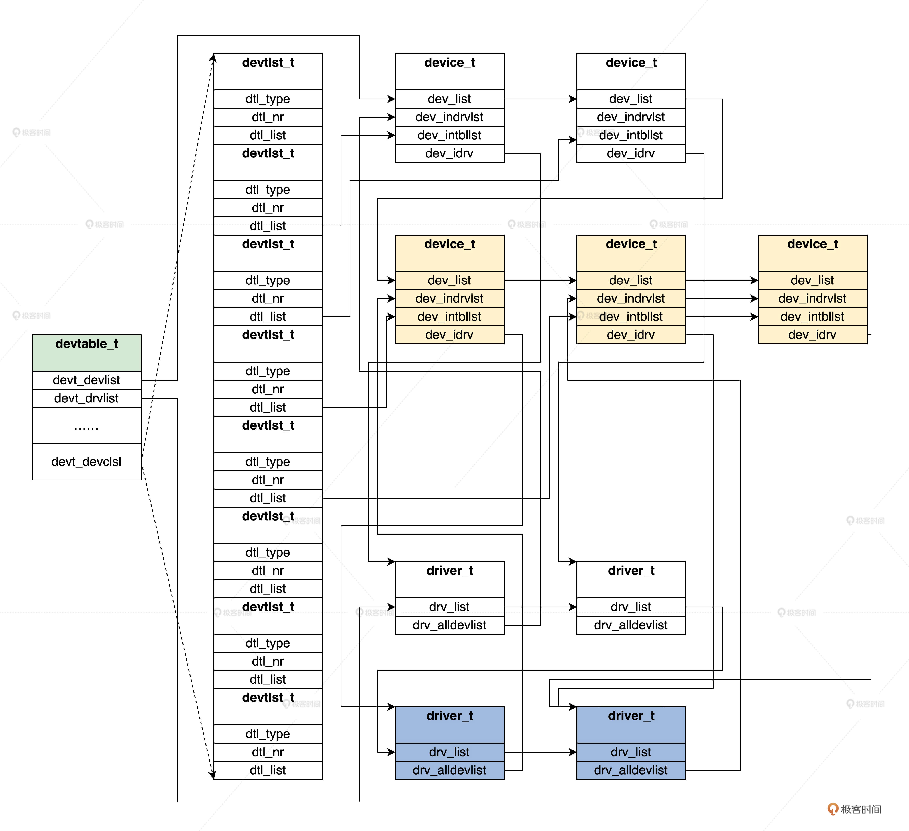
上图看似复杂，实则简单，我帮你理一下重点：首先devtable_t结构中能找到所有的设备和驱动，然后从设备能找到对应的驱动，从驱动也能找到其管理的所有设备 ，最后就能实现一个驱动管理多个设备。
驱动程序功能
我们还有一个问题需要解决，那就是驱动程序，究竟要为操作系统内核提供哪些最基本的功能支持？
我们已经知道了，写驱动程序就是为了操控相应的设备，所以这得看大多数设备能完成什么功能了。现代计算机的设备无非就是可以输入数据、处理数据、输出数据，然后完成一些特殊的功能。
当然，现代计算机的设备很多，能耗是个严重的问题，所以操作系统内核应该能控制设备能耗。下面我来帮你归纳一下用来驱动程序的几种主要函数，如下。
//驱动程序入口和退出函数
drvstus_t device_entry(driver_t* drvp,uint_t val,void* p);
drvstus_t device_exit(driver_t* drvp,uint_t val,void* p);
//设备中断处理函数
drvstus_t device_handle(uint_t ift_nr,void* devp,void* sframe);
//打开、关闭设备函数
drvstus_t device_open(device_t* devp,void* iopack);
drvstus_t device_close(device_t* devp,void* iopack);
//读、写设备数据函数
drvstus_t device_read(device_t* devp,void* iopack);
drvstus_t device_write(device_t* devp,void* iopack);
//调整读写设备数据位置函数
drvstus_t device_lseek(device_t* devp,void* iopack);
//控制设备函数
drvstus_t device_ioctrl(device_t* devp,void* iopack);
//开启、停止设备函数
drvstus_t device_dev_start(device_t* devp,void* iopack);
drvstus_t device_dev_stop(device_t* devp,void* iopack);
//设置设备电源函数
drvstus_t device_set_powerstus(device_t* devp,void* iopack);
//枚举设备函数
drvstus_t device_enum_dev(device_t* devp,void* iopack);
//刷新设备缓存函数
drvstus_t device_flush(device_t* devp,void* iopack);
//设备关机函数
drvstus_t device_shutdown(device_t* devp,void* iopack);
如上所述，我们可以把每一个操作定义成一个函数，让驱动程序实现这些函数。函数名你可以随便写，但是函数的形式却不能改变，这是操作系统内核与驱动程序沟通的桥梁。当然有很多设备本身并不支持这么多操作，例如时钟设备，驱动程序就不必实现相应的操作。
那么这些函数如何和操作系统内核关联起来呢？还记得driver_t结构中那个函数指针数组吗，如下所示。
#define IOIF_CODE_OPEN 0 //对应于open操作
#define IOIF_CODE_CLOSE 1 //对应于close操作
#define IOIF_CODE_READ 2 //对应于read操作
#define IOIF_CODE_WRITE 3 //对应于write操作
#define IOIF_CODE_LSEEK 4 //对应于lseek操作
#define IOIF_CODE_IOCTRL 5 //对应于ioctrl操作
#define IOIF_CODE_DEV_START 6 //对应于start操作
#define IOIF_CODE_DEV_STOP 7 //对应于stop操作
#define IOIF_CODE_SET_POWERSTUS 8 //对应于powerstus操作
#define IOIF_CODE_ENUM_DEV 9 //对应于enum操作
#define IOIF_CODE_FLUSH 10 //对应于flush操作
#define IOIF_CODE_SHUTDOWN 11 //对应于shutdown操作
#define IOIF_CODE_MAX 12 //最大功能码
//驱动程序分派函数指针类型
typedef drvstus_t (*drivcallfun_t)(device_t*,void*);
//驱动程序入口、退出函数指针类型
typedef drvstus_t (*drventyexit_t)(struct s_DRIVER*,uint_t,void*);
typedef struct s_DRIVER
{
//……
drivcallfun_t drv_dipfun[IOIF_CODE_MAX];//驱动程序分派函数指针数组。
list_h_t drv_alldevlist;//驱动所管理的所有设备。
drventyexit_t drv_entry;
drventyexit_t drv_exit;
//……
}driver_t;
看到这里，你是不是明白了？driver_t结构中的drv_dipfun函数指针数组，正是存放上述那12个驱动程序函数的指针。这样操作系统内核就能通过driver_t结构，调用到对应的驱动程序函数操作对应的设备了。
重点回顾
现在，我们搞明白了一个典型计算机的结构，里面有很多设备，需要操作系统合理地管理，而操作系统通过加载驱动程序来管理和使用设备，并为此提供了一系列的机制，这也是我们这节课的重点。
1.计算机结构，我们通过了解一个典型的计算机系统结构，明白了设备的多样性。然后我们对设备做了抽象分类，采用分权而治的方式，让操作系统通过驱动程序来管理设备，同时又能保证操作系统和驱动程序分离，达到操作系统和设备解耦的目的。
2.归纳整理设备和设备驱动的信息，抽象两个对应的数据结构，这两个数据结构在内存中的实例变量就代表一个设备和对应的驱动。然后，我们通过设备表结构组织了驱动和设备的数据结构。
3.驱动程序最主要的工作是要操控设备，但这些个操作设备的动作是操作系统调用的，所以对驱动定义了必须要支持的12种标准方法，并对应到函数，这些函数的地址保存在驱动程序的数据结构中。
你可能在想，我们驱动程序是怎么加载的，设备又是怎么建立的呢？这是正是我们后面课程要解决的。不过你可以先开动脑筋，思考一下，提出你自己的见解，考虑一下这个问题的解决方案。
思考题
请你写出一个用来访问设备的接口函数，或者想一下访问一个设备需要什么参数。
欢迎你在留言区跟我交流互动，积极输出有助于更高效地理解这节课的内容。也欢迎你把这节课分享给同事、朋友。
好，我是LMOS。我们下节课见！
29 部门建立：如何在内核中注册设备？
你好，我是LMOS。
在上节课里，我们对设备进行了分类，建立了设备与驱动的数据结构，同时也规定了一个驱动程序应该提供哪些标准操作方法，供操作系统内核调用。这相当于设计了行政部门的规章制度，一个部门叫什么，应该干什么，这些就确定好了。
今天我们来继续探索部门的建立，也就是设备在内核中是如何注册的。我们先从全局了解一下设备的注册流程，然后了解怎么加载驱动，最后探索怎么让驱动建立一个设备，并在内核中注册。让我们正式开始今天的学习吧！
这节课配套代码，你可以从这里下载。
设备的注册流程
你是否想象过，你在电脑上插入一个USB鼠标时，操作系统会作出怎样的反应呢？
我来简单作个描述，这个过程可以分成这样五步。
1.操作系统会收到一个中断。- 2.USB总线驱动的中断处理程序会执行。- 3.调用操作系统内核相关的服务，查找USB鼠标对应的驱动程序。- 4.操作系统加载驱动程序。- 5.驱动程序开始执行，向操作系统内核注册一个鼠标设备。这就是一般操作系统加载驱动的粗略过程。对于安装在主板上的设备，操作系统会枚举设备信息，然后加载驱动程序，让驱动程序创建并注册相应的设备。当然，你还可以手动加载驱动程序。
为了简单起见，我们的Cosmos不会这样复杂，暂时也不支持设备热拨插功能。我们让Cosmos自动加载驱动，在驱动中向Cosmos注册相应的设备，这样就可以大大降低问题的复杂度，我们先从简单的做起嘛，相信你明白了原理之后，还可以自行迭代。
为了让你更清楚地了解这个过程，我为你画了一幅图，如下所示。
上图中，完整展示了Cosmos自动加载驱动的整个流程，Cosmos在初始化驱动时会扫描整个驱动表，然后加载表中每个驱动，分别调用各个驱动的入口函数，最后在驱动中建立设备并向内核注册。接下来，我们分别讨论这些流程的实现。
驱动程序表
为了简化问题，便于你理解，我们把驱动程序和内核链接到一起，省略了加载驱动程序的过程，因为加载程序不仅仅是把驱动程序放在内存中就可以了，还要进行程序链接相关的操作，这个操作极其复杂，我们先不在这里研究，感兴趣的话你可以自行拓展。
既然我们把内核和驱动程序链接在了一起，就需要有个机制让内核知道驱动程序的存在。这个机制就是驱动程序表，它可以这样设计。
//cosmos/kernel/krlglobal.c
KRL_DEFGLOB_VARIABLE(drventyexit_t,osdrvetytabl)[]={NULL};
drventyexit_t类型，在上一课中，我们已经了解过了。它就是一个函数指针类型，这里就是定义了一个函数指针数组，而这个函数指针数组中放的就是驱动程序的入口函数，而内核只需要扫描这个函数指针数组，就可以调用到每个驱动程序了。
有了这个函数指针数组，接着我们还需要写好这个驱动程序的初始化函数，代码如下。
void init_krldriver()
{
//遍历驱动程序表中的每个驱动程序入口函数
for (uint_t ei = 0; osdrvetytabl[ei] != NULL; ei++)
{ //运行一个驱动程序入口
if (krlrun_driverentry(osdrvetytabl[ei]) == DFCERRSTUS)
{
hal_sysdie("init driver err");
}
}
return;
}
void init_krl()
{
init_krlmm();
init_krldevice();
init_krldriver();
//……
return;
}
像上面代码这样，我们的初始化驱动的代码就写好了。init_krldriver函数主要的工作就是遍历驱动程序表中的每个驱动程序入口，并把它作为参数传给krlrun_driverentry函数。
有了init_krldriver函数，还要在init_krl函数中调用它，主要调用上述代码中的调用顺序，请注意，一定要先初始化设备表，然后才能初始化驱动程序，否则在驱动程序中建立的设备和驱动就无处安放了。
运行驱动程序
我们使用驱动程序表，虽然省略了加载驱动程序的步骤，但是驱动程序必须要运行，才能工作。接下来我们就详细看看运行驱动程序的全过程。
调用驱动程序入口函数
我们首先来解决怎么调用驱动程序入口函数。你要知道，我们直接调用驱动程序入口函数是不行的，要先给它准备一个重要的参数，也就是驱动描述符指针。
为了帮你进一步理解，我们来写一个函数描述内核加载驱动的过程，后面代码中drvp就是一个驱动描述符指针。
drvstus_t krlrun_driverentry(drventyexit_t drventry)
{
driver_t *drvp = new_driver_dsc();//建立driver_t实例变量
if (drvp == NULL)
{
return DFCERRSTUS;
}
if (drventry(drvp, 0, NULL) == DFCERRSTUS)//运行驱动程序入口函数
{
return DFCERRSTUS;
}
if (krldriver_add_system(drvp) == DFCERRSTUS)//把驱动程序加入系统
{
return DFCERRSTUS;
}
return DFCOKSTUS;
}
上述代码中，我们先调用了 一个new_driver_dsc函数，用来建立一个driver_t结构实例变量，这个函数我已经帮你写好了。
然后就是调用传递进来的函数指针，并且把drvp作为参数传送进去。接着再进入驱动程序中运行，最后，当驱动程序入口函数返回的时候，就会把这个驱动程序加入到我们Cosmos系统中了。
一个驱动程序入口函数的例子
一个驱动程序要能够被操作系统调用，产生实际作用，那么这个驱动程序入口函数，就至少有一套标准流程要走，否则只需要返回一个DFCOKSTUS就行了，DFCOKSTUS是个宏，表示成功的状态。
这个标准流程就是，首先要建立建立一个设备描述符，接着把驱动程序的功能函数设置到driver_t结构中的drv_dipfun数组中，并将设备挂载到驱动上，然后要向内核注册设备，最后驱动程序初始化自己的物理设备，安装中断回调函数。
光描述流程你还没有直观感受，所以下面我们来看一个驱动程序的实际例子，代码如下。
drvstus_t systick_entry(driver_t* drvp,uint_t val,void* p)
{
if(drvp==NULL) //drvp是内核传递进来的参数，不能为NULL
{
return DFCERRSTUS;
}
device_t* devp=new_device_dsc();//建立设备描述符结构的变量实例
if(devp==NULL)//不能失败
{
return DFCERRSTUS;
}
systick_set_device(devp,drvp);//驱动程序的功能函数设置到driver_t结构中的drv_dipfun数组中
if(krldev_add_driver(devp,drvp)==DFCERRSTUS)//将设备挂载到驱动中
{
if(del_device_dsc(devp)==DFCERRSTUS)//注意释放资源
{
return DFCERRSTUS;
}
return DFCERRSTUS;
}
if(krlnew_device(devp)==DFCERRSTUS)//向内核注册设备
{
if(del_device_dsc(devp)==DFCERRSTUS)//注意释放资源
{
return DFCERRSTUS;
}
return DFCERRSTUS;
}
//安装中断回调函数systick_handle
if(krlnew_devhandle(devp,systick_handle,20)==DFCERRSTUS)
{
return DFCERRSTUS; //注意释放资源
}
init_8254();//初始化物理设备
if(krlenable_intline(20)==DFCERRSTUS)
{
return DFCERRSTUS;
}
return DFCOKSTUS;
}
上述代码是一个真实设备驱动程序入口函数的标准流程，这是一个例子，不能运行，是一个驱动程序框架，这个例子告诉我们，操作系统内核要为驱动程序开发者提供哪些功能接口函数，这在很多通用操作系统上叫作驱动模型。
设备与驱动的联系
上面的例子只是演示流程的，我们并没有写好供驱动程序开发者使用的接口函数，我们这就来写好这些接口函数。
我们要写的第一个接口就是将设备挂载到驱动上，让设备和驱动产生联系，确保驱动能找到设备，设备能找到驱动。代码如下所示。
drvstus_t krldev_add_driver(device_t *devp, driver_t *drvp)
{
list_h_t *lst;
device_t *fdevp;
//遍历这个驱动上所有设备
list_for_each(lst, &drvp->drv_alldevlist)
{
fdevp = list_entry(lst, device_t, dev_indrvlst);
//比较设备ID有相同的则返回错误
if (krlcmp_devid(&devp->dev_id, &fdevp->dev_id) == TRUE)
{
return DFCERRSTUS;
}
}
//将设备挂载到驱动上
list_add(&devp->dev_indrvlst, &drvp->drv_alldevlist);
devp->dev_drv = drvp;//让设备中dev_drv字段指向管理自己的驱动
return DFCOKSTUS;
}
由于我们的设计一个驱动程序可以管理多个设备，所以在上述代码中，要遍历驱动设备链表中的所有设备，看看有没有设备ID冲突。如果没有就把这个设备载入这个驱动中，并把设备中的相关字段指向这个管理自己的驱动，这样设备和驱动就联系起来了。是不是很简单呢？
向内核注册设备
一个设备要想被内核感知，最终供用户使用，就要先向内核注册，这个注册过程应该由内核来实现并提供接口，在这个注册设备的过程中，内核会通过设备的类型和ID，把用来表示设备的device_t结构挂载到设备表中。下面我们来写好这部分代码，如下所示。
drvstus_t krlnew_device(device_t *devp)
{
device_t *findevp;
drvstus_t rets = DFCERRSTUS;
cpuflg_t cpufg;
list_h_t *lstp;
devtable_t *dtbp = &osdevtable;
uint_t devmty = devp->dev_id.dev_mtype;
if (devp->dev_drv == NULL)//没有驱动的设备不行
{
return DFCERRSTUS;
}
krlspinlock_cli(&dtbp->devt_lock, &cpufg);//加锁
//遍历设备类型链表上的所有设备
list_for_each(lstp, &dtbp->devt_devclsl[devmty].dtl_list)
{
findevp = list_entry(lstp, device_t, dev_intbllst);
//不能有设备ID相同的设备，如果有则出错
if (krlcmp_devid(&devp->dev_id, &findevp->dev_id) == TRUE)
{
rets = DFCERRSTUS;
goto return_step;
}
}
//先把设备加入设备表的全局设备链表
list_add(&devp->dev_intbllst, &dtbp->devt_devclsl[devmty].dtl_list);
//将设备加入对应设备类型的链表中
list_add(&devp->dev_list, &dtbp->devt_devlist);
dtbp->devt_devclsl[devmty].dtl_nr++;//设备计数加一
dtbp->devt_devnr++;//总的设备数加一
rets = DFCOKSTUS;
return_step:
krlspinunlock_sti(&dtbp->devt_lock, &cpufg);//解锁
return rets;
}
上述代码中，主要是检查在设备表中有没有设备ID冲突，如果没有的话就加入设备类型链表和全局设备链表中，最后对其计数器变量加一。完成了这些操作之后，我们在操作设备时，通过设备ID就可以找到对应的设备了。
安装中断回调函数
设备很多时候必须要和CPU进行通信，这是通过中断的形式进行的，例如，当硬盘的数据读取成功、当网卡又来了数据、或者定时器的时间已经过期，这时候这些设备就会发出中断信号，中断信号会被中断控制器接受，然后发送给CPU请求内核关注。
收到中断信号后，CPU就会开始处理中断，转而调用中断处理框架函数，最后会调用设备驱动程序提供的中断回调函数，对该设备发出的中断进行具体处理。
既然中断回调函数是驱动程序提供的，我们内核就要提供相应的接口用于安装中断回调函数，使得驱动程序开发者专注于设备本身，不用分心去了解内核的中断框架。
下面我们来实现这个安装中断回调函数的接口函数，代码如下所示。
//中断回调函数类型
typedef drvstus_t (*intflthandle_t)(uint_t ift_nr,void* device,void* sframe);
//安装中断回调函数接口
drvstus_t krlnew_devhandle(device_t *devp, intflthandle_t handle, uint_t phyiline)
{
//调用内核层中断框架接口函数
intserdsc_t *sdp = krladd_irqhandle(devp, handle, phyiline);
if (sdp == NULL)
{
return DFCERRSTUS;
}
cpuflg_t cpufg;
krlspinlock_cli(&devp->dev_lock, &cpufg);
//将中断服务描述符结构挂入这个设备结构中
list_add(&sdp->s_indevlst, &devp->dev_intserlst);
devp->dev_intlnenr++;
krlspinunlock_sti(&devp->dev_lock, &cpufg);
return DFCOKSTUS;
}
我来给你做个解读，上述代码中，krlnew_devhandle函数有三个参数，分别是安装中断回调函数的设备，驱动程序提供的中断回调函数，还有一个是设备在中断控制器中断线的号码。
krlnew_devhandle函数中一开始就会调用内核层的中断框架接口，你发现了么？这个接口还没写呢，所以我们马上就去写好它，但是我们不应该在krldevice.c文件中写，而是要在cosmos/kernel/目录下建立一个krlintupt.c文件，在这个文件模块中写，代码如下所示。
typedef struct s_INTSERDSC{
list_h_t s_list; //在中断异常描述符中的链表
list_h_t s_indevlst; //在设备描述描述符中的链表
u32_t s_flg; //标志
intfltdsc_t* s_intfltp; //指向中断异常描述符
void* s_device; //指向设备描述符
uint_t s_indx; //中断回调函数运行计数
intflthandle_t s_handle; //中断处理的回调函数指针
}intserdsc_t;
intserdsc_t *krladd_irqhandle(void *device, intflthandle_t handle, uint_t phyiline)
{ //根据设备中断线返回对应中断异常描述符
intfltdsc_t *intp = hal_retn_intfltdsc(phyiline);
if (intp == NULL)
{
return NULL;
}
intserdsc_t *serdscp = (intserdsc_t *)krlnew(sizeof(intserdsc_t));//建立一个intserdsc_t结构体实例变量
if (serdscp == NULL)
{
return NULL;
}
//初始化intserdsc_t结构体实例变量，并把设备指针和回调函数放入其中
intserdsc_t_init(serdscp, 0, intp, device, handle);
//把intserdsc_t结构体实例变量挂载到中断异常描述符结构中
if (hal_add_ihandle(intp, serdscp) == FALSE)
{
if (krldelete((adr_t)serdscp, sizeof(intserdsc_t)) == FALSE)
{
hal_sysdie("krladd_irqhandle ERR");
}
return NULL;
}
return serdscp;
}
上述代码中hal_add_ihandle、hal_retn_intfltdsc函数，我已经帮你写好了，如果你不明白其中原理，可以回到初始化中断那节课看看。
krladd_irqhandle函数，它的主要工作是创建了一个intserdsc_t结构，用来保存设备和其驱动程序提供的中断回调函数。同时，我想提醒你，通过intserdsc_t结构也让中断处理框架和设备驱动联系起来了。
这样一来，中断来了以后，后续的工作就能有序开展了。具体来说就是，中断处理框架既能找到对应的intserdsc_t结构，又能从intserdsc_t结构中得到中断回调函数和对应的设备描述符，从而调用中断回调函数，进行具体设备的中断处理。
驱动加入内核
当操作系统内核调用了驱动程序入口函数，驱动程序入口函数就会进行一系列操作，包括建立设备，安装中断回调函数等等，再之后就会返回到操作系统内核。
接下来，操作系统内核会根据返回状态，决定是否将该驱动程序加入到操作系统内核中。你可以这样理解，所谓将驱动程序加入到操作系统内核，无非就是将driver_t结构的实例变量挂载到设备表中。
下面我们就来写这个实现挂载功能的函数，如下所示。
drvstus_t krldriver_add_system(driver_t *drvp)
{
cpuflg_t cpufg;
devtable_t *dtbp = &osdevtable;//设备表
krlspinlock_cli(&dtbp->devt_lock, &cpufg);//加锁
list_add(&drvp->drv_list, &dtbp->devt_drvlist);//挂载
dtbp->devt_drvnr++;//增加驱动程序计数
krlspinunlock_sti(&dtbp->devt_lock, &cpufg);//解锁
return DFCOKSTUS;
}
配合代码中的注释，相信这里的思路你很容易就能领会。由于驱动程序不需要分门别类，所以我们只把它挂载到设备表中一个全局驱动程序链表上就行了，最后简单地增加一下驱动程序计数变量，用来表明有多少个驱动程序。
好了，现在我们操作系统内核向驱动程序开发人员提供的大部分功能接口就实现了。你自己也可以写驱动程序试试，看看是否只需要关注设备本身，而无须关注操作系统其它的部件。这就是我们Cosmos的驱动模型，虽然做了简化，但麻雀虽小，五脏俱全。
重点回顾
又到了课程结束的时候，今天我们通过这节课已经了解到，一个驱动程序开始是由内核加载运行，然后调用由内核提供的接口建立设备，最后向内核注册设备和驱动，完成驱动和内核的握手动作。
现在我们来梳理一下这节课的重点。
首先我们一开始从全局出发，了解了设备的建立流程。
然后为了简化内核加载驱动程序的复杂性，我们设计了一个驱动程序表。
最后，按照驱动程序的开发流程，我们给驱动程序开发者提供了一系列接口，它们是建立注册设备、设备加入驱动、安装中断回调函数，驱动加入到系统等，这些共同构成了一个最简化的驱动模型。
你可能会感觉我们虽然解决了建立设备的问题，可是怎么使用呢？这正是我们下一课要讨论的，敬请期待。
思考题
请你写出帮驱动程序开发者自动分配设备ID接口函数。
欢迎你在留言区和我交流互动。也欢迎你把这节课分享给自己的同事、朋友。
好，我是LMOS，我们下节课见！
30 部门响应：设备如何处理内核I_O包？
你好，我是LMOS。
在上一课中，我们实现了建立设备的接口，这相当于制定了部门的相关法规，只要遵守这些法规就能建立一个部门。当然，建立了一个部门，是为了干活的，吃空饷可不行。
其实一个部门的职责不难确定，它应该能对上级下发的任务作出响应，并完成相关工作，而这对应到设备，就是如何处理内核的I/O包，这节课我们就来解决这个问题。
首先，我们需要搞清楚什么是I/O包，然后实现内核向设备发送I/O包的工作。最后，我还会带你一起来完成一个驱动实例，用于处理I/O包，这样你就能真正理解这里的来龙去脉了。
好，让我们开始今天的学习吧！代码你可以从这里下载。
什么是I/O包
就像你要给部门下达任务时，需要准备材料报表之类的东西。同样，内核要求设备做什么事情，完成什么功能，必须要告诉设备的驱动程序。
内核要求设备完成任务，无非是调用设备的驱动程序函数，把完成任务的细节用参数的形式传递给设备的驱动程序。
由于参数很多，而且各种操作所需的参数又不相同，所以我们就想到了更高效的管理方法，也就是把各种操作所需的各种参数封装在一个数据结构中，称为I/O包，这样就可以统一驱动程序功能函数的形式了。
思路理清以后，现在我们来设计这个数据结构，如下所示。
typedef struct s_OBJNODE
{
spinlock_t on_lock; //自旋锁
list_h_t on_list; //链表
sem_t on_complesem; //完成信号量
uint_t on_flgs; //标志
uint_t on_stus; //状态
sint_t on_opercode; //操作码
uint_t on_objtype; //对象类型
void* on_objadr; //对象地址
uint_t on_acsflgs; //访问设备、文件标志
uint_t on_acsstus; //访问设备、文件状态
uint_t on_currops; //对应于读写数据的当前位置
uint_t on_len; //对应于读写数据的长度
uint_t on_ioctrd; //IO控制码
buf_t on_buf; //对应于读写数据的缓冲区
uint_t on_bufcurops; //对应于读写数据的缓冲区的当前位置
size_t on_bufsz; //对应于读写数据的缓冲区的大小
uint_t on_count; //对应于对象节点的计数
void* on_safedsc; //对应于对象节点的安全描述符
void* on_fname; //对应于访问数据文件的名称
void* on_finode; //对应于访问数据文件的结点
void* on_extp; //用于扩展
}objnode_t;
现在你可能还无法从objnode_t这个名字看出它跟I/O包的关系。但你从刚才的代码里可以看出，objnode_t的数据结构中包括了各个驱动程序功能函数的所有参数。
等我们后面讲到API接口时，你会发现，objnode_t结构不单是完成了I/O包传递参数的功能，它在整个I/O生命周期中，都起着重要的作用。这里为了好理解，我们就暂且把objnode_t结构当作I/O包来看。
创建和删除I/O包
刚才，我们已经定义了I/O包也就是objnode_t结构，但若是要使用它，就必须先把它建立好。
根据以往的经验，你应该已经猜到了，这里创建I/O包就是在内存中建立objnode_t结构的实例变量并初始化它。由于这是一个全新的模块，所以我们要先在cosmos/kernel/目录下建立一个新的krlobjnode.c文件，在这个文件中写代码，如下所示。
//建立objnode_t结构
objnode_t *krlnew_objnode()
{
objnode_t *ondp = (objnode_t *)krlnew((size_t)sizeof(objnode_t));//分配objnode_t结构的内存空间
if (ondp == NULL)
{
return NULL;
}
objnode_t_init(ondp);//初始化objnode_t结构
return ondp;
}
//删除objnode_t结构
bool_t krldel_objnode(objnode_t *onodep)
{
if (krldelete((adr_t)onodep, (size_t)sizeof(objnode_t)) == FALSE)//删除objnode_t结构的内存空间
{
hal_sysdie("krldel_objnode err");
return FALSE;
}
return TRUE;
}
上述代码非常简单，主要完成了建立、删除objnode_t结构这两件事，其实说白了就是分配和释放objnode_t结构的内存空间。
这里再一次体现了内存管理组件在操作系统内核之中的重要性，objnode_t_init函数会初始化objnode_t结构中的字段，因为其中有自旋锁、链表、信号量，而这些结构并不能简单地初始为0，否则可以直接使用memset之类的函数把那个内存空间清零就行了。
向设备发送I/O包
现在我们假定在上层接口函数中，已经建立了一个I/O包（即objnode_t结构），并且把操作码、操作对象和相关的参数信息填写到了objnode_t结构之中。那么下一步，就需要把这个I/O发送给具体设备的驱动程序，以便驱动程序完成具体工作。
我们需要定义实现一个函数，专门用于完成这个功能，它标志着一个设备驱动程序开始运行，经它之后内核就实际的控制权交给驱动程序，由驱动程序代表内核操控设备。
下面，我们就来写好这个函数，不过这个函数属于驱动模型函数，所以要在krldevice.c文件中实现这个函数。代码如下所示。
//发送设备IO
drvstus_t krldev_io(objnode_t *nodep)
{
//获取设备对象
device_t *devp = (device_t *)(nodep->on_objadr);
if ((nodep->on_objtype != OBJN_TY_DEV && nodep->on_objtype != OBJN_TY_FIL) || nodep->on_objadr == NULL)
{//检查操作对象类型是不是文件或者设备，对象地址是不是为空
return DFCERRSTUS;
}
if (nodep->on_opercode < 0 || nodep->on_opercode >= IOIF_CODE_MAX)
{//检查IO操作码是不是合乎要求
return DFCERRSTUS;
}
return krldev_call_driver(devp, nodep->on_opercode, 0, 0, NULL, nodep);//调用设备驱动
}
//调用设备驱动
drvstus_t krldev_call_driver(device_t *devp, uint_t iocode, uint_t val1, uint_t val2, void *p1, void *p2)
{
driver_t *drvp = NULL;
if (devp == NULL || iocode >= IOIF_CODE_MAX)
{//检查设备和IO操作码
return DFCERRSTUS;
}
drvp = devp->dev_drv;
if (drvp == NULL)//检查设备是否有驱动程序
{
return DFCERRSTUS;
}
//用IO操作码为索引调用驱动程序功能分派函数数组中的函数
return drvp->drv_dipfun[iocode](devp, p2);
}
krldev_io函数，只接受一个参数，也就是objnode_t结构的指针。它会首先检查objnode_t结构中的IO操作码是不是合乎要求的，还要检查被操作的对象即设备是不是为空，然后调用krldev_call_driver函数。
这个krldev_call_driver函数会再次确认传递进来的设备和IO操作码，然后重点检查设备有没有驱动程序。这一切检查通过之后，我们就用IO操作码为索引调用驱动程序功能分派函数数组中的函数，并把设备和objnode_t结构传递进去。有没有觉得眼熟？没错，这正是我们前面课程中对驱动程序的设计。
好了，现在一个设备的驱动程序就能正式开始工作，开始响应处理内核发来的I/O包了。可是我们还没有驱动呢，所以下面我们就去实现一个驱动程序。
驱动程序实例
现在我们一起来实现一个真实而且简单的设备驱动程序，就是systick设备驱动，它是我们Cosmos系统的心跳，systick设备的主要功能和作用是每隔 1ms产生一个中断，相当于一个定时器，每次时间到达就产生一个中断向系统报告又过了1ms，相当于千分之一秒，即每秒钟内产生1000次中断。
对于现代CPU的速度来说，这个中断频率不算太快。x86平台上有没有这样的定时器呢？当然有，其中8254就是一个古老且常用的定时器，对它进行编程设定，它就可以周期的产生定时器中断。
这里我们就以8254定时器为基础，实现Cosmos系统的systick设备。我们先从systick设备驱动程序的整体框架入手，然后建立systick设备，最后一步一步实现systick设备驱动程序。
systick设备驱动程序的整体框架
在前面的课程中，我们已经了解了在Cosmos系统下，一个设备驱动程序的基本框架，但是我们没有深入具体化。
所以，这里我会带你从全局好好了解一个真实的设备，它的驱动程序应该至少有哪些函数。由于这是个驱动程序，我们需要在cosmos/drivers/目录下建立一个drvtick.c文件，在drvtick.c文件中写入以下代码，如下所示。
//驱动程序入口和退出函数
drvstus_t systick_entry(driver_t *drvp, uint_t val, void *p)
{
return DFCERRSTUS;
}
drvstus_t systick_exit(driver_t *drvp, uint_t val, void *p)
{
return DFCERRSTUS;
}
//设备中断处理函数
drvstus_t systick_handle(uint_t ift_nr, void *devp, void *sframe)
{
return DFCEERSTUS;
}
//打开、关闭设备函数
drvstus_t systick_open(device_t *devp, void *iopack)
{
return DFCERRSTUS;
}
drvstus_t systick_close(device_t *devp, void *iopack)
{
return DFCERRSTUS;
}
//读、写设备数据函数
drvstus_t systick_read(device_t *devp, void *iopack)
{
return DFCERRSTUS;
}
drvstus_t systick_write(device_t *devp, void *iopack)
{
return DFCERRSTUS;
}
//调整读写设备数据位置函数
drvstus_t systick_lseek(device_t *devp, void *iopack)
{
return DFCERRSTUS;
}
//控制设备函数
drvstus_t systick_ioctrl(device_t *devp, void *iopack)
{
return DFCERRSTUS;
}
//开启、停止设备函数
drvstus_t systick_dev_start(device_t *devp, void *iopack)
{
return DFCERRSTUS;
}
drvstus_t systick_dev_stop(device_t *devp, void *iopack)
{
return DFCERRSTUS;
}
//设置设备电源函数
drvstus_t systick_set_powerstus(device_t *devp, void *iopack)
{
return DFCERRSTUS;
}
//枚举设备函数
drvstus_t systick_enum_dev(device_t *devp, void *iopack)
{
return DFCERRSTUS;
}
//刷新设备缓存函数
drvstus_t systick_flush(device_t *devp, void *iopack)
{
return DFCERRSTUS;
}
//设备关机函数
drvstus_t systick_shutdown(device_t *devp, void *iopack)
{
return DFCERRSTUS;
}
以上就是一个驱动程序必不可少的函数，在各个函数可以返回一个错误状态，而不做任何实际工作，但是必须要有这个函数。这样在内核发来任何设备功能请求时，驱动程序才能给予适当的响应。这样，一个驱动程序的整体框架就确定了。
写好了驱动程序的整体框架，我们这个驱动就完成了一半。下面我们来一步一步来实现它。
systick设备驱动程序的入口
我们先来写好systick设备驱动程序的入口函数。那这个函数用来做什么呢？其实我们在上一节课就详细讨论过，无非是建立设备，向内核注册设备，安装中断回调函数等操作，所以这里不再赘述。
我们直接写出这个函数，如下所示。
drvstus_t systick_entry(driver_t* drvp,uint_t val,void* p)
{
if(drvp==NULL) //drvp是内核传递进来的参数，不能为NULL
{
return DFCERRSTUS;
}
device_t* devp=new_device_dsc();//建立设备描述符结构的变量实例
if(devp==NULL)//不能失败
{
return DFCERRSTUS;
}
systick_set_driver(drvp);
systick_set_device(devp,drvp);//驱动程序的功能函数设置到driver_t结构中的drv_dipfun数组中
if(krldev_add_driver(devp,drvp)==DFCERRSTUS)//将设备挂载到驱动中
{
if(del_device_dsc(devp)==DFCERRSTUS)//注意释放资源。
{
return DFCERRSTUS;
}
return DFCERRSTUS;
}
if(krlnew_device(devp)==DFCERRSTUS)//向内核注册设备
{
if(del_device_dsc(devp)==DFCERRSTUS)//注意释放资源
{
return DFCERRSTUS;
}
return DFCERRSTUS;
}
//安装中断回调函数systick_handle
if(krlnew_devhandle(devp,systick_handle,20)==DFCERRSTUS)
{
return DFCERRSTUS; //注意释放资源。
}
init_8254();//初始化物理设备
if(krlenable_intline(0x20)==DFCERRSTUS)
{
return DFCERRSTUS;
}
return DFCOKSTUS;
}
你可能非常熟悉这部分代码，没错，这正是上节课中，我们的那个驱动程序入口函数的实例。
不过在上节课里，我们主要是要展示一个驱动程序入口函数的流程。这里却是要投入工作的真实设备驱动。
最后的krlenable_intline函数，它的主要功能是开启一个中断源上的中断。而init_8254函数则是为了初始化8254，它就是一个古老且常用的定时器。这两个函数非常简单，我已经帮写好了。
但是这样还不够，有了驱动程序入口函数，驱动程序并不会自动运行。根据前面我们的设计，需要把这个驱动程序入口函数放入驱动表中。
下面我们就把这个systick_entry函数，放到驱动表里，代码如下所示。
//cosmos/kernel/krlglobal.c
KRL_DEFGLOB_VARIABLE(drventyexit_t,osdrvetytabl)[]={systick_entry,NULL};
有了刚才这步操作之后，Cosmos在启动的时候，就会执行初始驱动初始化init_krldriver函数，接着这个函数就会启动运行systick设备驱动程序入口函数。我们的systick_entry函数一旦执行，就会建立systick设备，不断的产生时钟中断。
配置设备和驱动
在驱动程序入口函数中，除了那些标准的流程之外，我们还要对设备和驱动进行适当的配置，就是设置一些标志、状态、名称、驱动功能派发函数等等。有了这些信息，设备才能加入到驱动程序中，然后注册到内核，这样才能被内核所识别。
好，让我们先来实现设置驱动程序的函数，它主要设置设备驱动程序的名称、功能派发函数，代码如下。
void systick_set_driver(driver_t *drvp)
{
//设置驱动程序功能派发函数
drvp->drv_dipfun[IOIF_CODE_OPEN] = systick_open;
drvp->drv_dipfun[IOIF_CODE_CLOSE] = systick_close;
drvp->drv_dipfun[IOIF_CODE_READ] = systick_read;
drvp->drv_dipfun[IOIF_CODE_WRITE] = systick_write;
drvp->drv_dipfun[IOIF_CODE_LSEEK] = systick_lseek;
drvp->drv_dipfun[IOIF_CODE_IOCTRL] = systick_ioctrl;
drvp->drv_dipfun[IOIF_CODE_DEV_START] = systick_dev_start;
drvp->drv_dipfun[IOIF_CODE_DEV_STOP] = systick_dev_stop;
drvp->drv_dipfun[IOIF_CODE_SET_POWERSTUS] = systick_set_powerstus;
drvp->drv_dipfun[IOIF_CODE_ENUM_DEV] = systick_enum_dev;
drvp->drv_dipfun[IOIF_CODE_FLUSH] = systick_flush;
drvp->drv_dipfun[IOIF_CODE_SHUTDOWN] = systick_shutdown;
drvp->drv_name = "systick0drv";//设置驱动程序名称
return;
}
上述代码的功能并不复杂，我一说你就能领会。systick_set_driver函数，无非就是将12个驱动功能函数的地址，分别设置到driver_t结构的drv_dipfun数组中。其中，驱动功能函数在该数组中的元素位置，正好与IO操作码一一对应，当内核用IO操作码调用驱动时，就是调用了这个数据中的函数。最后，我们将驱动程序的名称设置为systick0drv。
新建的设备也需要配置相关的信息才能工作，比如需要指定设备，设备状态与标志，设备类型、设备名称这些信息。尤其要注意的是，设备类型非常重要，内核正是通过类型来区分各种设备的，下面我们写个函数，完成这些功能，代码如下所示。
void systick_set_device(device_t *devp, driver_t *drvp)
{
devp->dev_flgs = DEVFLG_SHARE;//设备可共享访问
devp->dev_stus = DEVSTS_NORML;//设备正常状态
devp->dev_id.dev_mtype = SYSTICK_DEVICE;//设备主类型
devp->dev_id.dev_stype = 0;//设备子类型
devp->dev_id.dev_nr = 0; //设备号
devp->dev_name = "systick0";//设置设备名称
return;
}
上述代码中，systick_set_device函数需要两个参数，但是第二个参数暂时没起作用，而第一个参数其实是一个device_t结构的指针，在systick_entry函数中调用new_device_dsc函数的时候，就会返回这个指针。后面我们会把设备加载到内核中，那时这个指针指向的设备才会被注册。
打开与关闭设备
其实对于systick这样设备，主要功能是定时中断，还不能支持读、写、控制、刷新、电源相关的功能，就算内核对systick设备发起了这样的I/O包，systick设备驱动程序相关的功能函数也只能返回一个错误码，表示不支持这样的功能请求。
但是，打开与关闭设备这样的功能还是应该要实现。下面我们就来实现这两个功能请求函数，代码如下所示。
//打开设备
drvstus_t systick_open(device_t *devp, void *iopack)
{
krldev_inc_devcount(devp);//增加设备计数
return DFCOKSTUS;//返回成功完成的状态
}
//关闭设备
drvstus_t systick_close(device_t *devp, void *iopack)
{
krldev_dec_devcount(devp);//减少设备计数
return DFCOKSTUS;//返回成功完成的状态
}
这样，打开与关闭设备的功能就实现了，只是简单地增加与减少设备的引用计数，然后返回成功完成的状态就行了。而增加与减少设备的引用计数，是为了统计有多少个进程打开了这个设备，当设备引用计数为0时，就说明没有进程使用该设备。
systick设备中断回调函数
对于systick设备来说，重要的并不是打开、关闭，读写等操作，而是systick设备产生的中断，以及在中断回调函数中执行的操作，即周期性的执行系统中的某些动作，比如更新系统时间，比如控制一个进程占用CPU的运行时间等，这些操作都需要在systick设备中断回调函数中执行。
按照前面的设计，systick设备每秒钟产生1000次中断，那么1秒钟就会调用1000次这个中断回调函数，这里我们只要写出这个函数就行了，因为安装中断回调函数的思路，我们在前面的课程中已经说过了（可以回顾上节课），现在我们直接实现这个中断函数，代码可以像后面这样写。
drvstus_t systick_handle(uint_t ift_nr, void *devp, void *sframe)
{
kprint("systick_handle run devname:%s intptnr:%d\n", ((device_t *)devp)->dev_name, ift_nr);
return DFCOKSTUS;
}
这个中断回调函数，暂时什么也没干，就输出一条信息，让我们知道它运行了，为了直观观察它运行了，我们要对内核层初始化函数修改一下，禁止进程运行，以免进程输出的信息打扰我们观察结果，修改的代码如下所示。
void init_krl()
{
init_krlmm();
init_krldevice();//初始化设备
init_krldriver();//初始化驱动程序
init_krlsched();
//init_krlcpuidle();禁止进程运行
STI();//打开CPU响应中断的能力
die(0);//进入死循环
return;
}
下面，我们打开终端切到Cosmos目录下，执行make vboxtest指令，如果不出意外，我们将会中看到如下界面。
上图中的信息，会不断地滚动出现，信息中包含设备名称和中断号，这标志着我们中断回调函数的运行正确无误。
当然，如果我们费了这么功夫搞了中断回调函数，就只是为了输出信息，那也太不划算了，我们当然有更重要的事情要做，你还记得之前讲过的进程知识吗？这里我再帮你理一理思路。
我们在每个进程中都要主动调用进程调度器函数，否则进程就会永远霸占CPU，永远运行下去。这是因为，我们没有定时器可以周期性地检查进程运行了多长时间，如果进程的运行时间超过了，就应该强制调度，让别的进程开始运行。
更新进程运行时间的代码，我已经帮你写好了，你只需要在这个中断回调函数中调用就好了，代码如下所示。
drvstus_t systick_handle(uint_t ift_nr, void *devp, void *sframe)
{
krlthd_inc_tick(krlsched_retn_currthread());//更新当前进程的tick
return DFCOKSTUS;
}
这里的krlthd_inc_tick函数需要一个进程指针的参数，而krlsched_retn_currthread函数是返回当前正在运行进程的指针。在krlthd_inc_tick函数中对进程的tick值加1，如果大于20（也就是20 毫秒）就重新置0，并进行调度。
下面，我们把内核层初始化函数恢复到原样，重新打开终端切到cosmos目录下，执行make vboxtest指令，我们就将会看到如下界面。
我们可以看到，进程A、进程B，还有调度器交替输出的信息。这已经证明我们更新进程运行时间，检查其时间是否用完并进行调度的代码逻辑，都是完全正确的，恭喜你走到了这一步！
至此，我们的systick驱动程序就实现了，它非常简单，但却包含了一个驱动程序完整实现。同时，这个过程也一步步验证了我们对驱动模型的设计是正确的。
重点回顾
又到课程的结尾，到此为止，我们了解了实现一个驱动程序完整过程，虽然我们只是驱动了一个定时器设备，使之周期性的产生定时中断。在定时器设备的中断回调函数中，我们调用了更新进程时间的函数，达到了这样的目的：在进程运行超时的情况下，内核有能力夺回CPU，调度别的进程运行。
现在我来为你梳理一下重点。
1.为了搞清楚设备如何处理I/O包，我们了解了什么是I/O包，写好了处理建立、删除I/O包的代码。
2.要使设备完成相应的功能，内核就必须向设备驱动发送相应的I/O包，在I/O包提供相应IO操作码和适当的参数。所以，我们动手实现了向设备发送I/O包并调用设备驱动程序的机制。
3.一切准备就绪之后，我们建立了systick驱动程序实例，这是一个完整的驱动程序，它支持打开关闭和周期性产生中断的功能请求。通过这个实例，让我们了解了一个真实设备驱动的实现以及它处理内核I/O包的过程。
你可能对这样简单的驱动程序不够满意，也不能肯定我们的驱动模型是不是能适应大多数场景，请不要着急，在后面讲到文件系统时，我们会实现一个更为复杂的驱动程序。
思考题
请你想一想，为什么没有systick设备这样周期性的产生中断，进程就有可能霸占CPU呢？
欢迎你在留言区跟我交流互动，也欢迎你把这节课分享给身边的同事、朋友，一起实践驱动程序的实例。
好，我是LMOS，我们下节课见！
31 瞧一瞧Linux：如何获取所有设备信息？
你好，我是LMOS。
前面我们已经完成了Cosmos的驱动设备的建立，还写好了一个真实的设备驱动。
今天，我们就来看看Linux是如何管理设备的。我们将从Linux如何组织设备开始，然后研究设备驱动相关的数据结构，最后我们还是要一起写一个Linux设备驱动实例，这样才能真正理解它。
感受一下Linux下的设备信息
Linux的设计哲学就是一切皆文件，各种设备在Linux系统下自然也是一个个文件。不过这个文件并不对应磁盘上的数据文件，而是对应着存在内存当中的设备文件。实际上，我们对设备文件进行操作，就等同于操作具体的设备。
既然我们了解万事万物，都是从最直观的感受开始的，想要理解Linux对设备的管理，自然也是同样的道理。那么Linux设备文件在哪个目录下呢？其实现在我们在/sys/bus目录下，就可以查看所有的设备了。
Linux用BUS（总线）组织设备和驱动，我们在/sys/bus目录下输入tree命令，就可以看到所有总线下的所有设备了，如下图所示。
上图中，显示了部分Linux设备文件，有些设备文件是链接到其它目录下文件，这不是重点，重点是你要在心中有这个目录层次结构，即总线目录下有设备目录，设备目录下是设备文件。
数据结构
我们接着刚才的图往下说，我们能感觉到Linux的驱动模型至少有三个核心数据结构，分别是总线、设备和驱动，但是要像上图那样有层次化地组织它们，只有总线、设备、驱动这三个数据结构是不够的，还得有两个数据结构来组织它们，那就是kobject和kset，下面我们就去研究它们。
kobject与kset
kobject和kset是构成/sys目录下的目录节点和文件节点的核心，也是层次化组织总线、设备、驱动的核心数据结构，kobject、kset数据结构都能表示一个目录或者文件节点。下面我们先来研究一下kobject数据结构，代码如下所示。
struct kobject {
const char *name; //名称，反映在sysfs中
struct list_head entry; //挂入kset结构的链表
struct kobject *parent; //指向父结构
struct kset *kset; //指向所属的kset
struct kobj_type *ktype;
struct kernfs_node *sd; //指向sysfs文件系统目录项
struct kref kref; //引用计数器结构
unsigned int state_initialized:1;//初始化状态
unsigned int state_in_sysfs:1; //是否在sysfs中
unsigned int state_add_uevent_sent:1;
unsigned int state_remove_uevent_sent:1;
unsigned int uevent_suppress:1;
};
每一个 kobject，都对应着 /sys目录下（其实是sysfs文件系统挂载在/sys目录下） 的一个目录或者文件，目录或者文件的名字就是kobject结构中的name。
我们从kobject结构中可以看出，它挂载在kset下，并且指向了kset，那kset是什么呢？我们来分析分析，它是kobject结构的容器吗？
其实是也不是，因为kset结构中本身又包含一个kobject结构，所以它既是kobject的容器，同时本身还是一个kobject。kset结构代码如下所示。
struct kset {
struct list_head list; //挂载kobject结构的链表
spinlock_t list_lock; //自旋锁
struct kobject kobj;//自身包含一个kobject结构
const struct kset_uevent_ops *uevent_ops;//暂时不关注
} __randomize_layout;
看到这里你应该知道了，kset不仅仅自己是个kobject，还能挂载多个kobject，这说明kset是kobject的集合容器。在Linux内核中，至少有两个顶层kset，代码如下所示。
struct kset *devices_kset;//管理所有设备
static struct kset *bus_kset;//管理所有总线
static struct kset *system_kset;
int __init devices_init(void)
{
devices_kset = kset_create_and_add("devices", &device_uevent_ops, NULL);//建立设备kset
return 0;
}
int __init buses_init(void)
{
bus_kset = kset_create_and_add("bus", &bus_uevent_ops, NULL);//建立总线kset
if (!bus_kset)
return -ENOMEM;
system_kset = kset_create_and_add("system", NULL, &devices_kset->kobj);//在设备kset之下建立system的kset
if (!system_kset)
return -ENOMEM;
return 0;
}
我知道，你可能很难想象许多个kset和kobject在逻辑上形成的层次结构，所以我为你画了一幅图，你可以结合这张示意图理解这个结构。
上图中展示了一个类似文件目录的结构，这正是kset与kobject设计的目标之一。kset与kobject结构只是基础数据结构，但是仅仅只有它的话，也就只能实现这个层次结构，其它的什么也不能干，根据我们以往的经验可以猜出，kset与kobject结构肯定是嵌入到更高级的数据结构之中使用，下面我们继续探索。
总线
kset、kobject结构只是开胃菜，这个基础了解了，我们还要回到研究Linux设备与驱动的正题上。我们之前说过了，Linux用总线组织设备和驱动，由此可见总线是Linux设备的基础，它可以表示CPU与设备的连接，那么总线的数据结构是什么样呢？我们一起来看看。
Linux把总线抽象成bus_type结构，代码如下所示。
struct bus_type {
const char *name;//总线名称
const char *dev_name;//用于列举设备，如（"foo%u", dev->id）
struct device *dev_root;//父设备
const struct attribute_group **bus_groups;//总线的默认属性
const struct attribute_group **dev_groups;//总线上设备的默认属性
const struct attribute_group **drv_groups;//总线上驱动的默认属性
//每当有新的设备或驱动程序被添加到这个总线上时调用
int (*match)(struct device *dev, struct device_driver *drv);
//当一个设备被添加、移除或其他一些事情时被调用产生uevent来添加环境变量。
int (*uevent)(struct device *dev, struct kobj_uevent_env *env);
//当一个新的设备或驱动程序添加到这个总线时被调用，并回调特定驱动程序探查函数，以初始化匹配的设备
int (*probe)(struct device *dev);
//将设备状态同步到软件状态时调用
void (*sync_state)(struct device *dev);
//当一个设备从这个总线上删除时被调用
int (*remove)(struct device *dev);
//当系统关闭时被调用
void (*shutdown)(struct device *dev);
//调用以使设备重新上线（在下线后）
int (*online)(struct device *dev);
//调用以使设备离线，以便热移除。可能会失败。
int (*offline)(struct device *dev);
//当这个总线上的设备想进入睡眠模式时调用
int (*suspend)(struct device *dev, pm_message_t state);
//调用以使该总线上的一个设备脱离睡眠模式
int (*resume)(struct device *dev);
//调用以找出该总线上的一个设备支持多少个虚拟设备功能
int (*num_vf)(struct device *dev);
//调用以在该总线上的设备配置DMA
int (*dma_configure)(struct device *dev);
//该总线的电源管理操作，回调特定的设备驱动的pm-ops
const struct dev_pm_ops *pm;
//此总线的IOMMU具体操作，用于将IOMMU驱动程序实现到总线上
const struct iommu_ops *iommu_ops;
//驱动核心的私有数据，只有驱动核心能够接触这个
struct subsys_private *p;
struct lock_class_key lock_key;
//当探测或移除该总线上的一个设备时，设备驱动核心应该锁定该设备
bool need_parent_lock;
};
可以看出，上面代码的bus_type结构中，包括总线名字、总线属性，还有操作该总线下所有设备通用操作函数的指针，其各个函数的功能我在代码注释中已经写清楚了。
从这一点可以发现，总线不仅仅是组织设备和驱动的容器，还是同类设备的共有功能的抽象层。下面我们来看看subsys_private，它是总线的驱动核心的私有数据，其中有我们想知道的秘密，代码如下所示。
//通过kobject找到对应的subsys_private
#define to_subsys_private(obj) container_of(obj, struct subsys_private, subsys.kobj)
struct subsys_private {
struct kset subsys;//定义这个子系统结构的kset
struct kset *devices_kset;//该总线的"设备"目录，包含所有的设备
struct list_head interfaces;//总线相关接口的列表
struct mutex mutex;//保护设备，和接口列表
struct kset *drivers_kset;//该总线的"驱动"目录，包含所有的驱动
struct klist klist_devices;//挂载总线上所有设备的可迭代链表
struct klist klist_drivers;//挂载总线上所有驱动的可迭代链表
struct blocking_notifier_head bus_notifier;
unsigned int drivers_autoprobe:1;
struct bus_type *bus; //指向所属总线
struct kset glue_dirs;
struct class *class;//指向这个结构所关联类结构的指针
};
看到这里，你应该明白kset的作用了，我们通过bus_kset可以找到所有的kset，通过kset又能找到subsys_private，再通过subsys_private就可以找到总线了，也可以找到该总线上所有的设备与驱动。
设备
虽然Linux抽象出了总线结构，但是Linux还需要表示一个设备，下面我们来探索Linux是如何表示一个设备的。
其实，在Linux系统中设备也是一个数据结构，里面包含了一个设备的所有信息。代码如下所示。
struct device {
struct kobject kobj;
struct device *parent;//指向父设备
struct device_private *p;//设备的私有数据
const char *init_name; //设备初始化名字
const struct device_type *type;//设备类型
struct bus_type *bus; //指向设备所属总线
struct device_driver *driver;//指向设备的驱动
void *platform_data;//设备平台数据
void *driver_data;//设备驱动的私有数据
struct dev_links_info links;//设备供应商链接
struct dev_pm_info power;//用于设备的电源管理
struct dev_pm_domain *pm_domain;//提供在系统暂停时执行调用
#ifdef CONFIG_GENERIC_MSI_IRQ
struct list_head msi_list;//主机的MSI描述符链表
#endif
struct dev_archdata archdata;
struct device_node *of_node; //用访问设备树节点
struct fwnode_handle *fwnode; //设备固件节点
dev_t devt; //用于创建sysfs "dev"
u32 id; //设备实例id
spinlock_t devres_lock;//设备资源链表锁
struct list_head devres_head;//设备资源链表
struct class *class;//设备的类
const struct attribute_group **groups; //可选的属性组
void (*release)(struct device *dev);//在所有引用结束后释放设备
struct iommu_group *iommu_group;//该设备属于的IOMMU组
struct dev_iommu *iommu;//每个设备的通用IOMMU运行时数据
};
device结构很大，这里删除了我们不需要关心的内容。另外，我们看到device结构中同样包含了kobject结构，这使得设备可以加入kset和kobject组建的层次结构中。device结构中有总线和驱动指针，这能帮助设备找到自己的驱动程序和总线。
驱动
有了设备结构，还需要有设备对应的驱动，Linux是如何表示一个驱动的呢？同样也是一个数据结构，其中包含了驱动程序的相关信息。其实在device结构中我们就看到了，就是device_driver结构，代码如下。
struct device_driver {
const char *name;//驱动名称
struct bus_type *bus;//指向总线
struct module *owner;//模块持有者
const char *mod_name;//用于内置模块
bool suppress_bind_attrs;//禁用通过sysfs的绑定/解绑
enum probe_type probe_type;//要使用的探查类型（同步或异步）
const struct of_device_id *of_match_table;//开放固件表
const struct acpi_device_id *acpi_match_table;//ACPI匹配表
//被调用来查询一个特定设备的存在
int (*probe) (struct device *dev);
//将设备状态同步到软件状态时调用
void (*sync_state)(struct device *dev);
//当设备被从系统中移除时被调用，以便解除设备与该驱动的绑定
int (*remove) (struct device *dev);
//关机时调用，使设备停止
void (*shutdown) (struct device *dev);
//调用以使设备进入睡眠模式，通常是进入一个低功率状态
int (*suspend) (struct device *dev, pm_message_t state);
//调用以使设备从睡眠模式中恢复
int (*resume) (struct device *dev);
//默认属性
const struct attribute_group **groups;
//绑定设备的属性
const struct attribute_group **dev_groups;
//设备电源操作
const struct dev_pm_ops *pm;
//当sysfs目录被写入时被调用
void (*coredump) (struct device *dev);
//驱动程序私有数据
struct driver_private *p;
};
struct driver_private {
struct kobject kobj;
struct klist klist_devices;//驱动管理的所有设备的链表
struct klist_node knode_bus;//加入bus链表的节点
struct module_kobject *mkobj;//指向用kobject管理模块节点
struct device_driver *driver;//指向驱动本身
};
在device_driver结构中，包含了驱动程序的名字、驱动程序所在模块、设备探查和电源相关的回调函数的指针。在driver_private结构中同样包含了kobject结构，用于组织所有的驱动，还指向了驱动本身，你发现没有，bus_type中的subsys_private结构的机制如出一辙。
文件操作函数
前面我们学习的都是Linux驱动程序的核心数据结构，我们很少用到，只是为了让你了解最基础的原理。
其实，在Linux系统中提供了更为高级的封装，Linux将设备分成几类分别是：字符设备、块设备、网络设备以及杂项设备。具体情况你可以参考我后面梳理的图表。
这些类型的设备的数据结构，都会直接或者间接包含基础的device结构，我们以杂项设备为例子研究一下，Linux用miscdevice结构表示一个杂项设备，代码如下。
struct miscdevice {
int minor;//设备号
const char *name;//设备名称
const struct file_operations *fops;//文件操作函数结构
struct list_head list;//链表
struct device *parent;//指向父设备的device结构
struct device *this_device;//指向本设备的device结构
const struct attribute_group **groups;
const char *nodename;//节点名字
umode_t mode;//访问权限
};
miscdevice结构就是一个杂项设备，它一般在驱动程序代码文件中静态定义。我们清楚地看见有个this_device指针，它指向下层的、属于这个杂项设备的device结构。
但是这里重点是file_operations结构，设备一经注册，就会在sys相关的目录下建立设备对应的文件结点，对这个文件结点打开、读写等操作，最终会调用到驱动程序对应的函数，而对应的函数指针就保存在file_operations结构中，我们现在来看看这个结构。
struct file_operations {
struct module *owner;//所在的模块
loff_t (*llseek) (struct file *, loff_t, int);//调整读写偏移
ssize_t (*read) (struct file *, char __user *, size_t, loff_t *);//读
ssize_t (*write) (struct file *, const char __user *, size_t, loff_t *);//写
int (*mmap) (struct file *, struct vm_area_struct *);//映射
int (*open) (struct inode *, struct file *);//打开
int (*flush) (struct file *, fl_owner_t id);//刷新
int (*release) (struct inode *, struct file *);//关闭
} __randomize_layout;
file_operations结构中的函数指针有31个，我删除了我们不熟悉的函数指针，我们了解原理，不需要搞清楚所有函数指针的功能。
那么，Linux如何调用到这个file_operations结构中的函数呢？我以打开操作为例给你讲讲，Linux的打开系统调用接口会调用filp_open函数，filp_open函数的调用路径如下所示。
//filp_open
//file_open_name
//do_filp_open
//path_openat
static int do_o_path(struct nameidata *nd, unsigned flags, struct file *file)
{
struct path path;
int error = path_lookupat(nd, flags, &path);//解析文件路径得到文件inode节点
if (!error) {
audit_inode(nd->name, path.dentry, 0);
error = vfs_open(&path, file);//vfs层打开文件接口
path_put(&path);
}
return error;
}
int vfs_open(const struct path *path, struct file *file)
{
file->f_path = *path;
return do_dentry_open(file, d_backing_inode(path->dentry), NULL);
}
static int do_dentry_open(struct file *f, struct inode *inode,int (*open)(struct inode *, struct file *))
{
//略过我们不想看的代码
f->f_op = fops_get(inode->i_fop);//获取文件节点的file_operations
if (!open)//如果open为空则调用file_operations结构中的open函数
open = f->f_op->open;
if (open) {
error = open(inode, f);
}
//略过我们不想看的代码
return 0;
}
看到这里，我们就知道了，file_operations结构的地址存在一个文件的inode结构中。在Linux系统中，都是用inode结构表示一个文件，不管它是数据文件还是设备文件。
到这里，我们已经清楚了文件操作函数以及它的调用流程。
驱动程序实例
我们想要真正理解Linux设备驱动，最好的方案就是写一个真实的驱动程序实例。下面我们一起应用前面的基础，结合Linux提供的驱动程序开发接口，一起实现一个真实驱动程序。
这个驱动程序的主要工作，就是获取所有总线和其下所有设备的名字。为此我们需要先了解驱动程序的整体框架，接着建立我们总线和设备，然后实现驱动程序的打开、关闭，读写操作函数，最后我们写个应用程序，来测试我们的驱动程序。
驱动程序框架
Linux内核的驱动程序是在一个可加载的内核模块中实现，可加载的内核模块只需要两个函数和模块信息就行，但是我们要在模块中实现总线和设备驱动，所以需要更多的函数和数据结构，它们的代码如下。
#define DEV_NAME "devicesinfo"
#define BUS_DEV_NAME "devicesinfobus"
static int misc_find_match(struct device *dev, void *data)
{
printk(KERN_EMERG "device name is:%s\n", dev->kobj.name);
return 0;
}
//对应于设备文件的读操作函数
static ssize_t misc_read (struct file *pfile, char __user *buff, size_t size, loff_t *off)
{
printk(KERN_EMERG "line:%d,%s is call\n",__LINE__,__FUNCTION__);
return 0;
}
//对应于设备文件的写操作函数
static ssize_t misc_write(struct file *pfile, const char __user *buff, size_t size, loff_t *off)
{
printk(KERN_EMERG "line:%d,%s is call\n",__LINE__,__FUNCTION__);
return 0;
}
//对应于设备文件的打开操作函数
static int misc_open(struct inode *pinode, struct file *pfile)
{
printk(KERN_EMERG "line:%d,%s is call\n",__LINE__,__FUNCTION__);
return 0;
}
//对应于设备文件的关闭操作函数
static int misc_release(struct inode *pinode, struct file *pfile)
{
printk(KERN_EMERG "line:%d,%s is call\n",__LINE__,__FUNCTION__);
return 0;
}
static int devicesinfo_bus_match(struct device *dev, struct device_driver *driver)
{
return !strncmp(dev->kobj.name, driver->name, strlen(driver->name));
}
//对应于设备文件的操作函数结构
static const struct file_operations misc_fops = {
.read = misc_read,
.write = misc_write,
.release = misc_release,
.open = misc_open,
};
//misc设备的结构
static struct miscdevice misc_dev = {
.fops = &misc_fops, //设备文件操作方法
.minor = 255, //次设备号
.name = DEV_NAME, //设备名/dev/下的设备节点名
};
//总线结构
struct bus_type devicesinfo_bus = {
.name = BUS_DEV_NAME, //总线名字
.match = devicesinfo_bus_match, //总线match函数指针
};
//内核模块入口函数
static int __init miscdrv_init(void)
{
printk(KERN_EMERG "INIT misc\n")；
return 0;
}
//内核模块退出函数
static void __exit miscdrv_exit(void)
{
printk(KERN_EMERG "EXIT,misc\n");
}
module_init(miscdrv_init);//申明内核模块入口函数
module_exit(miscdrv_exit);//申明内核模块退出函数
MODULE_LICENSE("GPL");//模块许可
MODULE_AUTHOR("LMOS");//模块开发者
一个最简单的驱动程序框架的内核模块就写好了，该有的函数和数据结构都有了，那些数据结构都是静态定义的，它们的内部字段我们在前面也已经了解了。这个模块一旦加载就会执行miscdrv_init函数，卸载时就会执行miscdrv_exit函数。
建立设备
Linux系统也提供了很多专用接口函数，用来建立总线和设备。下面我们先来建立一个总线，然后在总线下建立一个设备。
首先来说说建立一个总线，Linux系统提供了一个bus_register函数向内核注册一个总线，相当于建立了一个总线，我们需要在miscdrv_init函数中调用它，代码如下所示。
static int __init miscdrv_init(void)
{
printk(KERN_EMERG "INIT misc\n");
busok = bus_register(&devicesinfo_bus);//注册总线
return 0;
}
bus_register函数会在系统中注册一个总线，所需参数就是总线结构的地址(&devicesinfo_bus)，返回非0表示注册失败。现在我们来看看，在bus_register函数中都做了些什么事情，代码如下所示。
int bus_register(struct bus_type *bus)
{
int retval;
struct subsys_private *priv;
//分配一个subsys_private结构
priv = kzalloc(sizeof(struct subsys_private), GFP_KERNEL);
//bus_type和subsys_private结构互相指向
priv->bus = bus;
bus->p = priv;
//把总线的名称加入subsys_private的kobject中
retval = kobject_set_name(&priv->subsys.kobj, "%s", bus->name);
priv->subsys.kobj.kset = bus_kset;//指向bus_kset
//把subsys_private中的kset注册到系统中
retval = kset_register(&priv->subsys);
//建立总线的文件结构在sysfs中
retval = bus_create_file(bus, &bus_attr_uevent);
//建立subsys_private中的devices和drivers的kset
priv->devices_kset = kset_create_and_add("devices", NULL,
&priv->subsys.kobj);
priv->drivers_kset = kset_create_and_add("drivers", NULL,
&priv->subsys.kobj);
//建立subsys_private中的devices和drivers链表，用于属于总线的设备和驱动
klist_init(&priv->klist_devices, klist_devices_get, klist_devices_put);
klist_init(&priv->klist_drivers, NULL, NULL);
return 0;
}
我删除了很多你不用关注的代码，看到这里，你应该知道总线是怎么通过subsys_private把设备和驱动关联起来的（通过bus_type和subsys_private结构互相指向），下面我们看看怎么建立设备。我们这里建立一个misc杂项设备。misc杂项设备需要定一个数据结构，然后调用misc杂项设备注册接口函数，代码如下。
#define DEV_NAME "devicesinfo"
static const struct file_operations misc_fops = {
.read = misc_read,
.write = misc_write,
.release = misc_release,
.open = misc_open,
};
static struct miscdevice misc_dev = {
.fops = &misc_fops, //设备文件操作方法
.minor = 255, //次设备号
.name = DEV_NAME, //设备名/dev/下的设备节点名
};
static int __init miscdrv_init(void)
{
misc_register(&misc_dev);//注册misc杂项设备
printk(KERN_EMERG "INIT misc busok\n");
busok = bus_register(&devicesinfo_bus);//注册总线
return 0;
}
上面的代码中，静态定义了miscdevice结构的变量misc_dev，miscdevice结构我们在前面已经了解过了，最后调用misc_register函数注册了misc杂项设备。
misc_register函数到底做了什么，我们一起来看看，代码如下所示。
int misc_register(struct miscdevice *misc)
{
dev_t dev;
int err = 0;
bool is_dynamic = (misc->minor == MISC_DYNAMIC_MINOR);
INIT_LIST_HEAD(&misc->list);
mutex_lock(&misc_mtx);
if (is_dynamic) {//minor次设备号如果等于255就自动分配次设备
int i = find_first_zero_bit(misc_minors, DYNAMIC_MINORS);
if (i >= DYNAMIC_MINORS) {
err = -EBUSY;
goto out;
}
misc->minor = DYNAMIC_MINORS - i - 1;
set_bit(i, misc_minors);
} else {//否则检查次设备号是否已经被占有
struct miscdevice *c;
list_for_each_entry(c, &misc_list, list) {
if (c->minor == misc->minor) {
err = -EBUSY;
goto out;
}
}
}
dev = MKDEV(MISC_MAJOR, misc->minor);//合并主、次设备号
//建立设备
misc->this_device =
device_create_with_groups(misc_class, misc->parent, dev,
misc, misc->groups, "%s", misc->name);
//把这个misc加入到全局misc_list链表
list_add(&misc->list, &misc_list);
out:
mutex_unlock(&misc_mtx);
return err;
}
可以看出，misc_register函数只是负责分配设备号，以及把miscdev加入链表，真正的核心工作由device_create_with_groups函数来完成，代码如下所示。
struct device *device_create_with_groups(struct class *class,
struct device *parent, dev_t devt,void *drvdata,const struct attribute_group **groups,const char *fmt, ...)
{
va_list vargs;
struct device *dev;
va_start(vargs, fmt);
dev = device_create_groups_vargs(class, parent, devt, drvdata, groups,fmt, vargs);
va_end(vargs);
return dev;
}
struct device *device_create_groups_vargs(struct class *class, struct device *parent, dev_t devt, void *drvdata,const struct attribute_group **groups,const char *fmt, va_list args)
{
struct device *dev = NULL;
int retval = -ENODEV;
dev = kzalloc(sizeof(*dev), GFP_KERNEL);//分配设备结构的内存空间
device_initialize(dev);//初始化设备结构
dev->devt = devt;//设置设备号
dev->class = class;//设置设备类
dev->parent = parent;//设置设备的父设备
dev->groups = groups;////设置设备属性
dev->release = device_create_release;
dev_set_drvdata(dev, drvdata);//设置miscdev的地址到设备结构中
retval = kobject_set_name_vargs(&dev->kobj, fmt, args);//把名称设置到设备的kobjext中去
retval = device_add(dev);//把设备加入到系统中
if (retval)
goto error;
return dev;//返回设备
error:
put_device(dev);
return ERR_PTR(retval);
}
到这里，misc设备的注册就搞清楚了，下面我们来测试一下看看结果，看看Linux系统是不是多了一个总线和设备。
你可以在本课程的代码目录中，执行make指令，就会产生一个miscdvrv.ko内核模块文件，我们把这个模块文件加载到Linux系统中就行了。
为了看到效果，我们还必须要做另一件事情。 在终端中用sudo cat /proc/kmsg 指令读取/proc/kmsg文件，该文件是内核prink函数输出信息的文件。指令如下所示。
#第一步在终端中执行如下指令
sudo cat /proc/kmsg
#第二步在另一个终端中执行如下指令
make
sudo insmod miscdrv.ko
#不用这个模块了可以用以下指令卸载
sudo rmmod miscdrv.ko
insmod指令是加载一个内核模块，一旦加载成功就会执行miscdrv_init函数。如果不出意外，你在终端中会看到如下图所示的情况。
这说明我们设备已经建立了，你应该可以在/dev目录看到一个devicesinfo文件，同时你在/sys/bus/目录下也可以看到一个devicesinfobus文件。这就是我们建立的设备和总线的文件节点的名称。
打开、关闭、读写函数
建立了设备和总线，有了设备文件节点，应用程序就可以打开、关闭以及读写这个设备文件了。
虽然现在确实可以操作设备文件了，只不过还不能完成任何实际功能，因为我们只是写好了框架函数，所以我们下面就去写好并填充这些框架函数，代码如下所示。
//打开
static int misc_open(struct inode *pinode, struct file *pfile)
{
printk(KERN_EMERG "line:%d,%s is call\n",__LINE__,__FUNCTION__);//打印这个函数所在文件的行号和名称
return 0;
}
//关闭
static int misc_release(struct inode *pinode, struct file *pfile)
{
printk(KERN_EMERG "line:%d,%s is call\n",__LINE__,__FUNCTION__);//打印这个函数所在文件的行号和名称
return 0;
}
//写
static ssize_t misc_write(struct file *pfile, const char __user *buff, size_t size, loff_t *off)
{
printk(KERN_EMERG "line:%d,%s is call\n",__LINE__,__FUNCTION__);//打印这个函数所在文件的行号和名称
return 0;
}
以上三个函数，仍然没干什么实际工作，就是打印该函数所在文件的行号和名称，然后返回0就完事了。回到前面，我们的目的是要获取Linux中所有总线上的所有设备，所以在读函数中来实现是合理的。
具体实现的代码如下所示。
#define to_subsys_private(obj) container_of(obj, struct subsys_private, subsys.kobj)//从kobject上获取subsys_private的地址
struct kset *ret_buskset(void)
{
struct subsys_private *p;
if(busok)
return NULL;
if(!devicesinfo_bus.p)
return NULL;
p = devicesinfo_bus.p;
if(!p->subsys.kobj.kset)
return NULL;
//返回devicesinfo_bus总线上的kset，正是bus_kset
return p->subsys.kobj.kset;
}
static int misc_find_match(struct device *dev, void *data)
{
struct bus_type* b = (struct bus_type*)data;
printk(KERN_EMERG "%s---->device name is:%s\n", b->name, dev->kobj.name);//打印总线名称和设备名称
return 0;
}
static ssize_t misc_read (struct file *pfile, char __user *buff, size_t size, loff_t *off)
{
struct kobject* kobj;
struct kset* kset;
struct subsys_private* p;
kset = ret_buskset();//获取bus_kset的地址
if(!kset)
return 0;
printk(KERN_EMERG "line:%d,%s is call\n",__LINE__,__FUNCTION__);//打印这个函数所在文件的行号和名称
//扫描所有总线的kobject
list_for_each_entry(kobj, &kset->list, entry)
{
p = to_subsys_private(kobj);
printk(KERN_EMERG "Bus name is:%s\n",p->bus->name);
//遍历具体总线上的所有设备
bus_for_each_dev(p->bus, NULL, p->bus, misc_find_match);
}
return 0;
}
正常情况下，我们是不能获取bus_kset地址的，它是所有总线的根，包含了所有总线的kobject，Linux为了保护bus_kset，并没有在bus_type结构中直接包含kobject，而是让总线指向一个subsys_private结构，在其中包含了kobject结构。
所以，我们要注册一个总线，这样就能拔出萝卜带出泥，得到bus_kset，根据它又能找到所有subsys_private结构中的kobject，接着找到subsys_private结构，反向查询到bus_type结构的地址。
然后调用Linux提供的bus_for_each_dev函数，就可以遍历一个总线上的所有设备，它每遍历到一个设备，就调用一个函数，这个函数是用参数的方式传给它的，在我们代码中就是misc_find_match函数。
在调用misc_find_match函数时，会把一个设备结构的地址和另一个指针作为参数传递进来。最后就能打印每个设备的名称了。
测试驱动
驱动程序已经写好，加载之后会自动建立设备文件，但是驱动程序不会主动工作，我们还需要写一个应用程序，对设备文件进行读写，才能测试驱动。我们这里这个驱动对打开、关闭、写操作没有什么实际的响应，但是只要一读就会打印所有设备的信息了。
下面我们来写好这个应用，代码如下所示。
#include <stdio.h>
#include <stdlib.h>
#include <string.h>
#include <unistd.h>
#include <sys/types.h>
#include <sys/stat.h>
#include <fcntl.h>
#define DEV_NAME "/dev/devicesinfo"
int main(void)
{
char buf[] = {0, 0, 0, 0};
int fd;
//打开设备文件
fd = open(DEV_NAME, O_RDWR);
if (fd < 0) {
printf("打开 :%s 失败!\n", DEV_NAME);
}
//写数据到内核空间
write(fd, buf, 4);
//从内核空间中读取数据
read(fd, buf, 4);
//关闭设备,也可以不调用，程序关闭时系统自动调用
close(fd);
return 0;
}
你可以这样操作：切换到本课程的代码目录make一下，然后加载miscdrv.ko模块，最后在终端中执行sudo ./app，就能在另一个已经执行了sudo cat /proc/kmsg的终端中，看到后面图片这样形式的数据。
上图是我系统中总线名和设备名，你的计算机上可能略有差异，因为我们的计算机硬件可能不同，所以有差异是正常的，不必奇怪。
重点回顾
尽管Linux驱动模型异常复杂，我们还是以最小的成本，领会了Linux驱动模型设计的要点，还动手写了个小小的驱动程序。现在我来为你梳理一下这节课的重点。
首先，我们通过查看sys目录下的文件层次结构，直观感受了一下Linux系统的总线、设备、驱动是什么情况。
然后，我们了解一些重要的数据结构，它们分别是总线、驱动、设备、文件操作函数结构，还有非常关键的kset和kobject，这两个结构一起组织了总线、设备、驱动，最终形成了类目录文件这样的层次结构。
最后，我们建立一个驱动程序实例，从驱动程序框架开始，我们了解如何建立一个总线和设备，编写了对应的文件操作函数，在读操作函数中实现扫描了所有总线上的所有设备，并打印总线名称和设备名称，还写了个应用程序进行了测试，检查有没有达到预期的功能。
如果你对Linux是怎么在总线上注册设备和驱动，又对驱动和设备怎么进行匹配感兴趣的话，也可以自己阅读Linux内核代码，其中有很多驱动实例，你可以研究和实验，动手和动脑相结合，我相信你一定可以搞清楚的。
思考题
为什么无论是我们加载miscdrv.ko内核模块，还是运行app测试，都要在前面加上sudo呢？
欢迎你在留言区记录你的学习收获，也欢迎你把这节课分享给你身边的小伙伴，一起拿下Linux设备驱动的内容。
我是LMOS，我们下节课见！
32 仓库结构：如何组织文件_
你好，我是LMOS。
你有没有想过，蜜蜂把劳动成果变成蜜糖存放在蜂巢中，人类把劳动成果量化成财富存放在银行，但一个进程的劳动成果放在哪里呢？
看到这里，你可能有疑问，进程有劳动成果吗？当然有，进程加工处理的数据就是进程的劳动成果，可是这个“劳动成果”，如何表示、如何组织，又放在哪里呢？这些问题都会在我们讲解文件系统的过程中一一得到解答。
那今天我们先来搞清楚什么是文件系统，然后解决文件系统如何组织文件，最后对我们文件系统进行设计并抽象成数据结构。好了，下面我们正式开始今天的学习吧。
这节课的配套代码，你可以从这里获取。
什么是文件系统
我们经常在计算机上听APE音乐、看4K视频、阅读各种文档、浏览各种精美的网页，这些东西都是一些特定格式的数据，我们习惯把它们叫做文件，这些文件可能储存在HD机械硬盘、SSD固态硬盘、TF卡，甚至远程计算机上。
所以你可以这样理解，文件系统解决的就是如何把许多文件储存在某一种储存设备上，方便进程对各种文件执行打开、关闭、读写、增加和删除等操作。因为这些操作实际上非常复杂，所以操作系统中分出一个子系统专门处理这些问题，这个系统就叫文件系统。
文件系统的核心现在我们还没法直观地感受到，但是它在上层为用户或者进程提供了一个逻辑视图，也就是目录结构。
下图中就是典型的文件系统逻辑视图，从/（根）目录开始，就能找到每个文件、每个目录和每个目录下的所有文件。我们可以看出目录也是文件的一部分，它也扮演了“组织仓库管理员”的角色，可以对文件进行分层分类，以便用户对众多文件进行管理。

虽然这看上去好像有点复杂、是个技术活，但是别怕，毕竟我们不是干这事的第一批人，可以参考别人的设计与实现。好了，废话不多说，难不难，要做了才知道……
文件系统设计
既然要实现一个文件系统，还是要好好设计一下，我们首先从三个问题出发对文件系统设计方面的思考。
- 文件系统为什么可以是一个设备开始，以及它在整个Cosmos内核中的位置格局？
- 文件数据的格式以及储存介质的最小单位是什么？
- 如何组织越来越多的文件。
搞清楚这三大问题的过程，就是设计文件系统的过程，这里是重点中的重点，你可以停下来好好揣摩，然后再继续往下学习。
文件系统只是一个设备
HD机械硬盘、SSD固态硬盘、U盘、各种TF卡等都属于存储设备，这些设备上的文件储存格式都不相同，甚至同一个硬盘上不同的分区的储存格式也不同。这个储存格式就是相应文件系统在储存设备上组织储存文件的方式。
例如我们经常看到的：FAT32、NTFS、Ext4、Btrfs、ZFS、HPFS等，这些都是不同的文件系统建立的文件系统格式。
看到上面储存设备与文件系统多样性的情况之后，不难发现让文件系统成为Cosmos内核中一部分，是个非常愚蠢的想法。那怎么解决这个困难呢，你可以先自己想一想，然后再参考我后面的分析。
针对前面的困难，我们不难提出这样两点设想：第一，文件系统组件是独立的与内核分开的；第二，操作系统需要动态加载和删除不同的文件系统组件，这样就可以适应复杂的情况了。例如，硬盘上不同的分区有不同的文件系统格式，还可以拔插U盘、TF卡等。
你还记得前面Cosmos内核的设备驱动的设计吗？如果文件系统也是Cosmos内核下的一个设备，那就好办多了，因为不同的设备驱动程序可以动态加载，而且可以建立多个文件系统设备，而对各个文件系统设备驱动程序的实现，就是各个文件系统的实现。
刚好前面的驱动模型中（第30节课），定义了文件系统的设备类型。这个架构我给你画一幅图，你看一下就明白了。
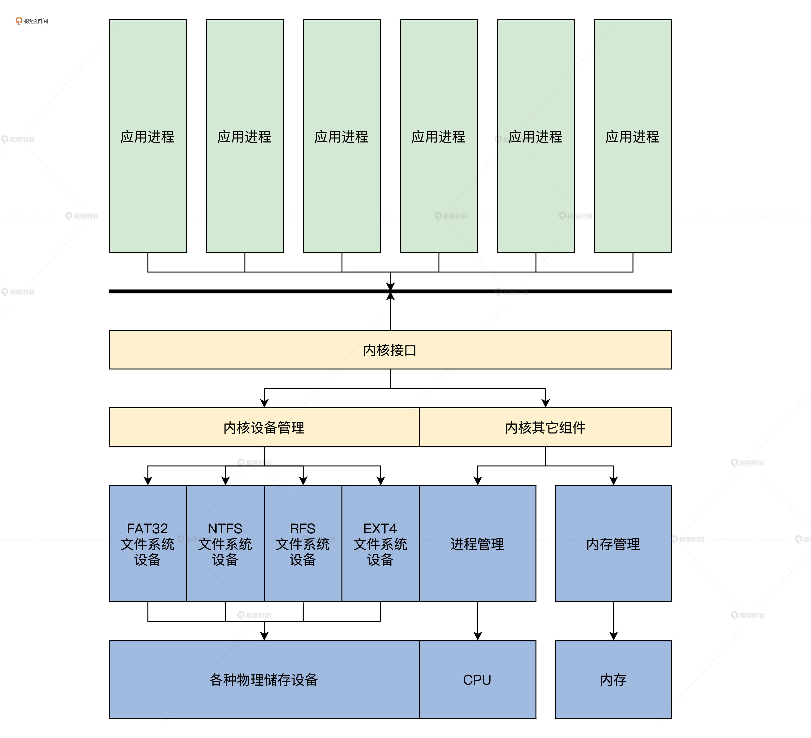
这里我不仅给出了文件系统设备的架构，还简单地梳理了内核中其它组件与文件系统的关系。
如图所示，文件系统下面有诸如U盘、硬盘、SSD、CD、TF卡等储存设备。文件系统一定要有储存设备，这个储存设备可以是硬盘，也可以是TF卡，总之能储存数据的设备就行。
为了减小程序的复杂程度，我们使用一块4MB大小的内存空间来模拟储存设备，何况又不是我们第一次建造内存文件系统（ramfs），只是我们做得更小。在文件系统设备驱动程序的入口函数中，分配4MB大小的内存空间。
相信即使如此，也能让我们清楚地看到文件系统的实现。等哪天有时间了，写好了硬盘驱动程序，也可以让文件系统设备驱动程序处理好了数据，然后发送给硬盘设备驱动程序，让其写入到硬盘中去。
这在我们设计的驱动模型中是完全允许的，这就形成了储存系统的“I/O栈”。
文件格式与储存块
通常说的文件，都是一堆数据，当我们把这堆数据组织成一个文件，储存在储存介质上时，就有了一个问题：我们按什么格式把这些数据存放在储存介质上。
当然，这个格式是指文件系统存放文件数据的格式。文件数据本身的格式，文件系统不该多管，例如MP3、Word文档的内部格式，各不相同。
关于文件系统存放文件数据的格式，类UNIX系统和Windows系统都采用了相同的方案，那就是逻辑上认为一个文件就是一个可以动态增加、减少的线性字节数组，即文件数据的每个字节都一一对应到这个线性数组中的每个元素。
那么我们也和它们一样，我来给你画个图梳理逻辑关系。

图中的文件数据字节数组，终究是逻辑上的，所以问题又来了，我们如何把这个逻辑上的文件数据字节数组，映射到具体的储存设备上呢？只有解决了这个问题，才能真正储存数据。
现在的机械硬盘、SSD固态硬盘、TF卡，它们都是以储存块为单位储存数据的，一个储存块的大小可以是512、1024、2048、4096字节，访问这些储存设备的最小单位也是一个储存块，不像内存设备可以最少访问一个字节。
文件系统把文件数据定义成一个动态的线性字节数组，可是一开始我们不知道这个数组是多大，需要分配多少个物理储存块，最好是把这个动态的线性字节数组分成一个个数据块。
然而，不同的储存设备的物理储存块的大小不同，有的是512字节，而有的是4096字节，我们为了文件系统能工作在不同的储存设备上，所以我们把这里的数据块定义为文件系统逻辑块，其大小为4096字节，最后把这个逻辑块映射到一个或多个物理储存块。
为了让你更好地理解这个过程，我为你准备了一幅图，如下所示。
从这幅图里，我们可以看到从文件这个抽象概念，它是如何一步步从文件字节数组，整合形成文件数据逻辑块，最后映射到储存介质上的物理储存块。你需要先掌握整个演变过程的逻辑，具体怎么实现我们后面继续讲。

如何组织文件
现在PC机上的文件数量都已经上十万的数量级了，网络服务器上更是不止这个数量。
我们不难想到，如果把十万个文件顺序地排列在一起，要找出其中一个文件，那是非常困难的，即使是计算机程序查找起来也是相当慢的，加上硬盘、TF卡之类的储存设备比内存慢得多，因此会变得更慢。
所以，需要一个叫文件目录或者叫文件夹的东西，我们习惯称其为目录。这样我们就可以用不同的目录来归纳不同的文件，例如在MP3目录下存放MP3音乐文件，或者在MP4目录下存放视频文件。同时，目录之下还可以创建目录，这样就建立了非常好的层次关系。
你可能经常在LINUX系统中看到如：“/dev/kvm，/user/bin/gcc”之类的东西，其中dev、user、bin它们就是目录，kvm、gcc它们就是文件，“/”符号就是文件路径分隔符，它们合起来就是文件路径名。
可以看出，整个文件层次结构就像是一棵倒挂的树。前面那幅图已经显示出了这种结构。后面我们的文件系统也会采用目录来组织文件。这里你只要明白，文件数量多了就出现了目录，而目录是用来帮助用户组织或归纳文件的就行了。
文件系统数据结构
一路走来，不难发现操作系统内核的任何组件的实现，都需要设计一套相应的数据结构，文件系统也不例外。
根据前面我们对文件系统的设计，我们至少需要表示文件和目录的数据结构，除此之外，还需要表示文件系统本身的一些数据结构，这些数据结构我们称为文件系统元数据。下面我们先从文件系统元数据开始吧！
设计超级块
一个文件系统有很多重要的信息，例如文件系统标识、版本、状态，储存介质大小，文件系统逻辑储存块大小，位图所在的储存块，还有根目录等。因为这些信息很重要，没有它们就等于没有文件系统，所以包含这些信息的数据结构，就叫做文件系统的超级块或者文件系统描述块。
下面我们就来设计超级块的数据结构，先在cosmos/include/drvinc/目录下建立一个drvrfs_t.h文件，写下rfssublk_t结构，代码如下所示。
typedef struct s_RFSSUBLK
{
spinlock_t rsb_lock;//超级块在内存中使用的自旋锁
uint_t rsb_mgic;//文件系统标识
uint_t rsb_vec;//文件系统版本
uint_t rsb_flg;//标志
uint_t rsb_stus;//状态
size_t rsb_sz;//该数据结构本身的大小
size_t rsb_sblksz;//超级块大小
size_t rsb_dblksz;//文件系统逻辑储存块大小，我们这里用的是4KB
uint_t rsb_bmpbks;//位图的开始逻辑储存块
uint_t rsb_bmpbknr;//位图占用多少个逻辑储存块
uint_t rsb_fsysallblk;//文件系统有多少个逻辑储存块
rfsdir_t rsb_rootdir;//根目录，后面会看到这个数据结构的
}rfssublk_t;
我们文件系统的超级块，保存在储存设备的第一个4KB大小的逻辑储存块中，但是它本身的大小没有4KB，多余的空间用于以后扩展。rfsdir_t数据结构是一个目录数据结构，你先有个印象，后面我们会有介绍的。
当然把根目录数据结构直接放在超级块中，目前也是可行的，反正现在超级块中有多余的空间。
位图
我们把一个储存设备分成一个个逻辑储存块（4KB），当储存一个文件数据时，就按逻辑储存块进行分配。那这就产生了一个新的问题：怎么来标识哪些逻辑储存块是空闲的，哪些逻辑储存块是已经分配占用的呢？
我们可以用位图来解决这个问题，这里的位图，就是利用一块储存空间中所有位的状态，达到映射逻辑储存块状态（是否已分配）的目的。
一个字节是8个位，那么4KB的储存空间中，就有（4096*8）个位，这每个位映射到一个逻辑储存块，其中一个位的值为0，就表示该位对应的逻辑储存块是空闲的，反之就表示对应的逻辑储存块是占用的。
上面的说明如果你还是难以明白，我再画一幅图你就清楚多了，如下所示。
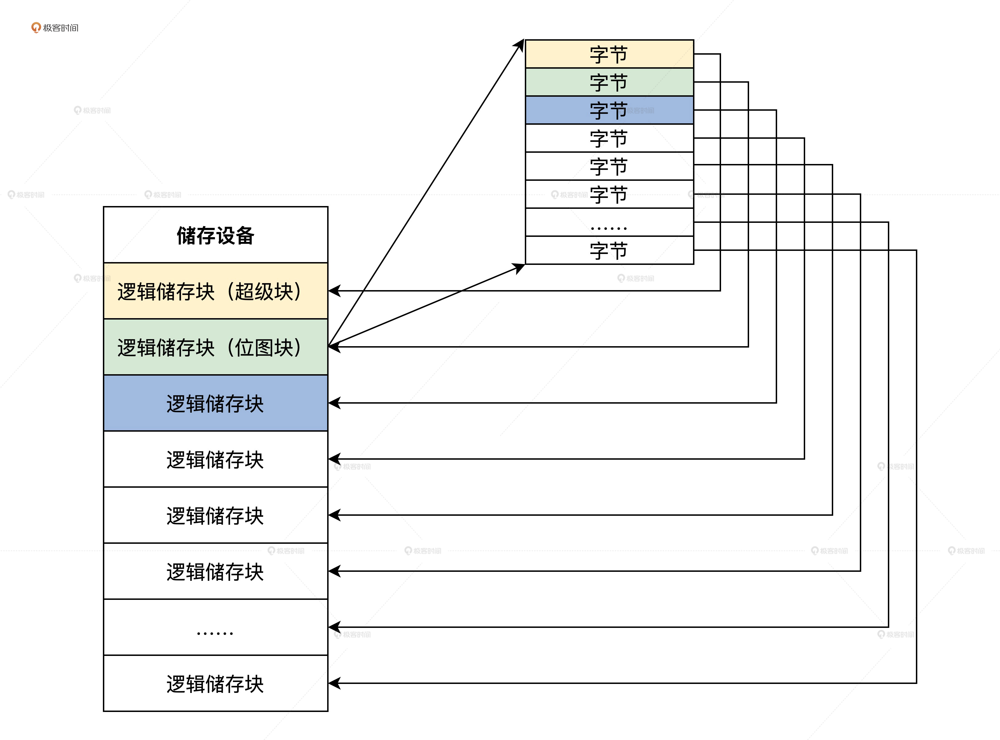
其实位图并不需要定义实际的数据结构，在实际操作时，我们把位图这个储存块当成一个字节数组就行了。这里我们用了一块4MB的内存空间模拟储存设备，所以一共只有1024个4KB大小的逻辑储存块。因为远远小于4096，所以用不着把所有位都利用起来，操作一个个位很麻烦，完全可以用一个字节表示一个逻辑储存块是否空闲还是占用。
文件目录
根据我们的设计，为了方便用户查找和归纳越来越多的文件，才产生了目录。其实从本质上来说，目录也是一种数据，这种数据中包含了目录类型、状态、指向文件数据管理头的块号、名称等信息。
下面我们就动手把这些信息整理成rfsdir_t数据结构，写在drvrfs_t.h文件中，方便以后使用，代码如下所示。
#define DR_NM_MAX (128-(sizeof(uint_t)*3))
#define RDR_NUL_TYPE 0
#define RDR_DIR_TYPE 1
#define RDR_FIL_TYPE 2
#define RDR_DEL_TYPE 5
typedef struct s_RFSDIR
{
uint_t rdr_stus;//目录状态
uint_t rdr_type;//目录类型，可以是空类型、目录类型、文件类型、已删除的类型
uint_t rdr_blknr;//指向文件数据管理头的块号，不像内存可以用指针，只能按块访问
char_t rdr_name[DR_NM_MAX];//名称数组，大小为DR_NM_MAX
}rfsdir_t;
从上面代码中的DR_NM_MAX宏，我们可以看出rfsdir_t数据结构最多只有128字节大小。而名称数组的大小就是128减去3个8字节，由于储存设备不能用字节地址访问，它只能一块一块的访问，所以rfsdir_t结构中有个域，指向文件数据管理头的块号。
为什么rfsdir_t结构中会有很多类型呢？这里要注意，目录也是一种特殊的文件，它里面就是保存着一系列rfsdir_t结构的实例变量。这些rfsdir_t结构再次表明它代表的是一个文件，还是一个目录。
我画个图，你就明白了。如下所示。
上图中可以看到，超级块中的rfsdir_t结构保存了根目录的名称和指向管理根目录数据的文件管理头的块号。而实际的目录数据保存在逻辑储存块中，这表明目录也是一种数据。即一系列的rfsdir_t结构的实例变量。通过这一系列的rfsdir_t结构就能找到根目录下的其它文件和目录了。
文件管理头
文件系统最重要是管理和存放文件。我们平常接触文件，只看到了文件名，但一个文件的信息难道真的只有一个文件名称吗？
显然不是，它还有状态、类型、创建时间、访问时间、大小，更为重要的是要知道该文件使用了哪些逻辑储存块。下面就来把上述所有的文件信息，归纳整理成一个数据结构，写在drvrfs_t.h文件中称为文件管理头，即fimgrhd_t结构，代码如下所示。
#define FBLKS_MAX 32
#define FMD_NUL_TYPE 0
#define FMD_DIR_TYPE 1
#define FMD_FIL_TYPE 2
#define FMD_DEL_TYPE 5//文件管理头也需要表明它管理的是目录文件还是普通文件
typedef struct s_FILBLKS
{
uint_t fb_blkstart;//开始的逻辑储存块号
uint_t fb_blknr;//逻辑储存块的块数，从blkstart开始的连续块数
}filblks_t;
typedef struct s_fimgrhd
{
uint_t fmd_stus;//文件状态
uint_t fmd_type;//文件类型：可以是目录文件、普通文件、空文件、已删除的文件
uint_t fmd_flg;//文件标志
uint_t fmd_sfblk;//文件管理头自身所在的逻辑储存块
uint_t fmd_acss;//文件访问权限
uint_t fmd_newtime;//文件的创建时间，换算成秒
uint_t fmd_acstime;//文件的访问时间，换算成秒
uint_t fmd_fileallbk;//文件一共占用多少个逻辑储存块
uint_t fmd_filesz;//文件大小
uint_t fmd_fileifstbkoff;//文件数据在第一块逻辑储存块中的偏移
uint_t fmd_fileiendbkoff;//文件数据在最后一块逻辑储存块中的偏移
uint_t fmd_curfwritebk;//文件数据当前将要写入的逻辑储存块
uint_t fmd_curfinwbkoff;//文件数据当前将要写入的逻辑储存块中的偏移
filblks_t fmd_fleblk[FBLKS_MAX];//文件占用逻辑储存块的数组，一共32个filblks_t结构
uint_t fmd_linkpblk;//指向文件的上一个文件管理头的逻辑储存块
uint_t fmd_linknblk;//指向文件的下一个文件管理头的逻辑储存块
}fimgrhd_t;
fimgrhd_t结构中，其它的信息都比较易懂，关键是fmd_fleblk数组，它里面的每个元素都保存一片连续的逻辑储存块。
比如一个文件占用：4~8、10~15、30~40的逻辑储存块，那么就在fmd_fleblk[0]中保存4和4，在fmd_fleblk[1]中保存10和5，在fmd_fleblk[2]中保存30和10。
细心的你可以发现，当文件特别大时，fmd_fleblk数组元素可能就不够用了。
但是我们想了一个办法，在fmd_fleblk数组元素用完时，就再分配一个逻辑储存块，在里面再次存放同一个文件的fimgrhd_t结构，让上一个fimgrhd_t结构中的fmd_linknblk域指向这个逻辑储存块，再让这个逻辑储存块中fimgrhd_t结构中的fmd_linkpblk域，指向上一个fimgrhd_t结构所在的逻辑储存块。
为了帮助你梳理思路，我还画了示意图。
从这张图中，我们可以看到fimgrhd_t结构如何管理一个文件占有的所有逻辑储存块，并且可以通过类似链表的形式动态增加fimgrhd_t结构，实际上就是在动态增加文件的逻辑储存块。同时我们不难发现，文件的第一个逻辑储存块的首个512字节空间中，存放的就是fimgrhd_t数据结构。
好了，一个简单的文件系统所需要的所有数据结构就设计完成了，你可能会想，不会这样就完了吧？我们还没写什么代码呢，文件系统就实现了么？别急，怎么写代码实现这个文件系统，下节课我们继续探索……
重点回顾
今天的课程就到这里了，对于文件系统，我们才刚刚开始探索，我把今天的课程重点梳理一下。
1.我们一起了解了什么是文件系统，就是解决如何把许多进程产生的数据——文件，储存在某一种储存设备之上，让进程十分方便就能对各个文件进行相应的操作。
2.我们设计了自己的文件系统，它在Cosmos中就是一个设备，规划了文件系统的文件格式和如何储存文件，还有如何组织多个文件。
3.我们把文件系统设计变成了对应数据结构，它们分别是描述文件系统信息的超级块、解决逻辑储存块分配状态的位图，还有用文件管理的目录和文件管理头。
思考题
请问，我们文件系统的储存单位为什么要自定义一个逻辑储存块？
欢迎你在留言区跟我交流互动，也欢迎你把这节课分享给身边的朋友，跟他一起学习进步。
好，我是LMOS，我们下节课见!
33 仓库划分：文件系统的格式化操作
你好，我是LMOS。
上一节课中，我们已经设计好了文件系统数据结构，相当于建好了仓库的基本结构。
今天，我将和你一起探索仓库的划分，即什么地方存放仓库的管理信息，什么地方存放进程的“劳动成果”（也就是文件），对应于文件系统就是文件系统的格式化操作。
具体我是这样安排的，我们先来实现文件系统设备驱动，接着建立文件系统超级块，然后建立根目录，最后建立文件系统的位图。下面，我们先从建立文件系统设备开始。
这节课的配套代码，你可以从这里获取。
文件系统设备
根据我们前面的设计，文件系统并不是Cosmos的一部分，它只是Cosmos下的一个设备。
既然是设备，那就要编写相应的设备驱动程序。我们首先得编写文件系统设备的驱动程序。由于前面已经写过驱动程序了，你应该对驱动程序框架已经很熟悉了。
我们先在cosmos/drivers/目录下建立一个drvrfs.c文件，在里面写下文件系统驱动程序框架代码，如下所示。
drvstus_t rfs_entry(driver_t* drvp,uint_t val,void* p){……}
drvstus_t rfs_exit(driver_t* drvp,uint_t val,void* p){……}
drvstus_t rfs_open(device_t* devp,void* iopack){……}
drvstus_t rfs_close(device_t* devp,void* iopack){……}
drvstus_t rfs_read(device_t* devp,void* iopack){……}
drvstus_t rfs_write(device_t* devp,void* iopack){……}
drvstus_t rfs_lseek(device_t* devp,void* iopack){……}
drvstus_t rfs_ioctrl(device_t* devp,void* iopack){……}
drvstus_t rfs_dev_start(device_t* devp,void* iopack){……}
drvstus_t rfs_dev_stop(device_t* devp,void* iopack){……}
drvstus_t rfs_set_powerstus(device_t* devp,void* iopack){……}
drvstus_t rfs_enum_dev(device_t* devp,void* iopack){……}
drvstus_t rfs_flush(device_t* devp,void* iopack){……}
drvstus_t rfs_shutdown(device_t* devp,void* iopack){……}
这个框架代码我们已经写好了，是不是感觉特别熟悉？这就是我们开发驱动程序的规范操作。下面，我们来建立文件系统设备。
按照之前的设计（如果不熟悉可以回顾第32课），我们将使用4MB内存空间来模拟真实的储存设备，在建立文件系统设备的时候分配一块4MB大小的内存空间，这个内存空间我们用一个数据结构来描述，这个数据结构的分配内存空间的代码如下所示。
typedef struct s_RFSDEVEXT
{
spinlock_t rde_lock;//自旋锁
list_h_t rde_list;//链表
uint_t rde_flg;//标志
uint_t rde_stus;//状态
void* rde_mstart;//用于模拟储存介质的内存块的开始地址
size_t rde_msize;//内存块的大小
void* rde_ext;//扩展所用
}rfsdevext_t;
drvstus_t new_rfsdevext_mmblk(device_t* devp,size_t blksz)
{
//分配模拟储存介质的内存空间，大小为4MB
adr_t blkp= krlnew(blksz);
//分配rfsdevext_t结构实例的内存空间
rfsdevext_t* rfsexp=(rfsdevext_t*)krlnew(sizeof(rfsdevext_t));
//初始化rfsdevext_t结构
rfsdevext_t_init(rfsexp);
rfsexp->rde_mstart=(void*)blkp;
rfsexp->rde_msize=blksz;
//把rfsdevext_t结构的地址放入device_t 结构的dev_extdata字段中，这里dev_extdata字段就起作用了
devp->dev_extdata=(void*)rfsexp;.
return DFCOKSTUS;
}
上述代码中，new_rfsdevext_mmblk函数分配了一个内存空间和一个rfsdevext_t结构实例变量，rfsdevext_t结构中保存了内存空间的地址和大小。而rfsdevext_t结构的地址放在了device_t结构的dev_extdata字段中。
剩下的就是建立文件系统设备了，我们在文件系统驱动程序的rfs_entry函数中，通过后面这段代码完成这个功能。
void rfs_set_device(device_t* devp,driver_t* drvp)
{
//设备类型为文件系统类型
devp->dev_id.dev_mtype = FILESYS_DEVICE;
devp->dev_id.dev_stype = 0;
devp->dev_id.dev_nr = 0;
//设备名称为rfs
devp->dev_name = "rfs";
return;
}
drvstus_t rfs_entry(driver_t* drvp,uint_t val,void* p)
{
//分配device_t结构并对其进行初级初始化
device_t* devp = new_device_dsc();
rfs_set_driver(drvp);
rfs_set_device(devp,drvp);
//分配模拟储存设备的内存空间
if(new_rfsdevext_mmblk(devp,FSMM_BLK) == DFCERRSTUS){……}
//把设备加入到驱动程序之中
if(krldev_add_driver(devp,drvp) == DFCERRSTUS){……}
//向内核注册设备
if(krlnew_device(devp)==DFCERRSTUS){……}
return DFCOKSTUS;
}
其实这和我们之前的写systick驱动程序的套路差不多，只不过这里需要分配一个模拟储存设备的空间，并把它放在device_t结构相关的字段中。还有很重要的一点是，这个设备类型我们要在rfs_set_device函数把它设置好，设置成文件系统类型。
需要注意的是要把rfs_entry函数放在驱动表中，文件系统程序才可以运行，下面我们就把这个rfs_entry函数，放入驱动表中，代码如下所示。
//cosmos/kernel/krlglobal.c
KRL_DEFGLOB_VARIABLE(drventyexit_t,osdrvetytabl)[]={systick_entry,rfs_entry,NULL};
有了上述代码，Cosmos在启动的时候，在init_krldriver函数中就会运行rfs_entry函数。从名字就能看出rfs_entry函数的功能，这是rfs文件系统设备驱动程序的入口函数，它一旦执行，就会建立文件系统设备。
文件系统系统格式化
我们经常听说格式化硬盘、格式化U盘，可以把设备上的数据全部清空，事实是格式化操作并不是把设备上所有的空间都清零，而是在这个设备上重建了文件系统用于管理文件的那一整套数据结构。这也解释了为什么格式化后的设备，还能通过一些反删除软件找回一些文件。
在储存设备上创建文件系统，其实就是执行这个格式化操作，即重建文件系统的数据结构。
那么接下来，我们就从建立文件系统的超级块开始，然后建立用于管理储存设备空间的位图，最后建立根目录，这样才能最终实现在储存设备上创建文件系统。
建立超级块
我们首先来建立文件系统的超级块。建立超级块其实非常简单，就是初始化超级块的数据结构，然后把它写入到储存设备中的第一块逻辑储存块。
下面我们一起写代码来实现，如下所示。
void *new_buf(size_t bufsz)
{
return (void *)krlnew(bufsz);//分配缓冲区
}
void del_buf(void *buf, size_t bufsz)
{
krldelete((adr_t)buf, bufsz)//释放缓冲区
return;
}
void rfssublk_t_init(rfssublk_t* initp)
{
krlspinlock_init(&initp->rsb_lock);
initp->rsb_mgic = 0x142422;//标志就是一个数字而已，无其它意义
initp->rsb_vec = 1;//文件系统版本为1
initp->rsb_flg = 0;
initp->rsb_stus = 0;
initp->rsb_sz = sizeof(rfssublk_t);//超级块本身的大小
initp->rsb_sblksz = 1;//超级块占用多少个逻辑储存块
initp->rsb_dblksz = FSYS_ALCBLKSZ;//逻辑储存块的大小为4KB
//位图块从第1个逻辑储存块开始，超级块占用第0个逻辑储存块
initp->rsb_bmpbks = 1;
initp->rsb_bmpbknr = 0;
initp->rsb_fsysallblk = 0;
rfsdir_t_init(&initp->rsb_rootdir);//初始化根目录
return;
}
bool_t create_superblk(device_t *devp)
{
void *buf = new_buf(FSYS_ALCBLKSZ);//分配4KB大小的缓冲区，清零
hal_memset(buf, 0, FSYS_ALCBLKSZ);
//使rfssublk_t结构的指针指向缓冲区并进行初始化
rfssublk_t *sbp = (rfssublk_t *)buf;
rfssublk_t_init(sbp);
//获取储存设备的逻辑储存块数并保存到超级块中
sbp->rsb_fsysallblk = ret_rfsdevmaxblknr(devp);
//把缓冲区中超级块的数据写入到储存设备的第0个逻辑储存块中
if (write_rfsdevblk(devp, buf, 0) == DFCERRSTUS)
{
return FALSE;
}
del_buf(buf, FSYS_ALCBLKSZ);//释放缓冲区
return TRUE;
}
上述代码的意思是，我们先在内存缓冲区中建立文件系统的超级块，最后会调用write_rfsdevblk函数，把内存缓冲区的数据写入到储存设备中。
下面我们来实现这个write_rfsdevblk函数，代码如下所示。
//返回设备扩展数据结构
rfsdevext_t* ret_rfsdevext(device_t* devp)
{
return (rfsdevext_t*)devp->dev_extdata;
}
//根据块号返回储存设备的块地址
void* ret_rfsdevblk(device_t* devp,uint_t blknr)
{
rfsdevext_t* rfsexp = ret_rfsdevext(devp);
//块号乘于块大小的结果再加上开始地址（用于模拟储存设备的内存空间的开始地址）
void* blkp = rfsexp->rde_mstart + (blknr*FSYS_ALCBLKSZ);
//如果该地址没有落在储存入设备的空间中，就返回NULL表示出错
if(blkp >= (void*)((size_t)rfsexp->rde_mstart+rfsexp->rde_msize))
return NULL;
//返回块地址
return blkp;
}
//把4KB大小的缓冲区中的内容，写入到储存设备的某个逻辑储存块中
drvstus_t write_rfsdevblk(device_t* devp,void* weadr,uint_t blknr)
{
//返回储存设备中第blknr块的逻辑存储块的地址
void* p = ret_rfsdevblk(devp,blknr);
//复制数据到逻辑储存块中
hal_memcpy(weadr,p,FSYS_ALCBLKSZ);
return DFCOKSTUS;
}
前面我们一下子写了三个函数，由于我们用内存模拟储存设备，我们要写一个ret_rfsdevext函数返回设备扩展数据结构，这个函数和ret_rfsdevblk函数将会一起根据块号，计算出内存地址。然后，我们把缓冲区的内容复制到这个地址开始的内存空间就行了。
建立位图
接下来，我们要建立文件系统的位图了。
延续我们文件系统的设计思路，储存设备被分成了许多同等大小的逻辑储存块，位图就是为了能准确地知道储存设备中，哪些逻辑储存块空闲、哪些是被占用的。
我们使用一个逻辑储存块空间中的所有字节，来管理逻辑储存块的状态。建立位图无非就是把储存设备中的位图块清零，因为开始文件系统刚创建时，所有的逻辑储存块都是空闲的。下面我们来写好代码。
//把逻辑储存块中的数据，读取到4KB大小的缓冲区中
drvstus_t read_rfsdevblk(device_t* devp,void* rdadr,uint_t blknr)
{
//获取逻辑储存块地址
void* p=ret_rfsdevblk(devp,blknr);
//把逻辑储存块中的数据复制到缓冲区中
hal_memcpy(p,rdadr,FSYS_ALCBLKSZ);
return DFCOKSTUS;
}
//获取超级块
rfssublk_t* get_superblk(device_t* devp)
{
//分配4KB大小的缓冲区
void* buf=new_buf(FSYS_ALCBLKSZ);
//清零缓冲区
hal_memset(buf,FSYS_ALCBLKSZ,0);
//读取第0个逻辑储存块中的数据到缓冲区中，如果读取失败则释放缓冲区
read_rfsdevblk(devp,buf,0);
//返回超级块数据结构的地址，即缓冲区的首地址
return (rfssublk_t*)buf;
}
//释放超级块
void del_superblk(device_t* devp,rfssublk_t* sbp)
{
//回写超级块，因为超级块中的数据可能已经发生了改变，如果出错则死机
write_rfsdevblk(devp,(void*)sbp,0);//释放先前分配的4KB大小的缓冲区
del_buf((void*)sbp,FSYS_ALCBLKSZ);
return;
}
//建立位图
bool_t create_bitmap(device_t* devp)
{
bool_t rets=FALSE;
//获取超级块，失败则返回FALSE
rfssublk_t* sbp = get_superblk(devp);
//分配4KB大小的缓冲区
void* buf = new_buf(FSYS_ALCBLKSZ);
//获取超级块中位图块的开始块号
uint_t bitmapblk=sbp->rsb_bmpbks;
//获取超级块中储存介质的逻辑储存块总数
uint_t devmaxblk=sbp->rsb_fsysallblk;
//如果逻辑储存块总数大于4096，就认为出错了
if(devmaxblk>FSYS_ALCBLKSZ)
{
rets=FALSE;
goto errlable;
}
//把缓冲区中每个字节都置成1
hal_memset(buf,FSYS_ALCBLKSZ,1);
u8_t* bitmap=(u8_t*)buf;
//把缓冲区中的第3个字节到第devmaxblk个字节都置成0
for(uint_t bi=2;bi<devmaxblk;bi++)
{
bitmap[bi]=0;
}
//把缓冲区中的数据写入到储存介质中的第bitmapblk个逻辑储存块中，即位图块中
if(write_rfsdevblk(devp,buf,bitmapblk)==DFCERRSTUS){
rets = FALSE;
goto errlable;
}
//设置返回状态
rets=TRUE;
errlable:
//释放超级块
del_superblk(devp,sbp);
//释放缓冲区
del_buf(buf,FSYS_ALCBLKSZ);
return rets;
}
这里为什么又多了几个辅助函数呢？这是因为，位图块的块号和储存介质的逻辑储存块总数，都保存在超级块中，所以要实现获取、释放超级块的函数，还需要一个读取逻辑储存块的函数，写入逻辑储存块的函数前面已经写过了。
因为第0块是超级块，第1块是位图块本身，所以代码从缓冲区中的第3个字节开始清零，一直到devmaxblk个字节，devmaxblk就是储存介质的逻辑储存块总数。缓冲区中有4096个字节，但devmaxblk肯定是小于4096的，所以devmaxblk后面的字节全部为1，这样就不会影响到后面分配逻辑储存块代码的正确性了。
最后，我们把这个缓冲区中的数据写入到储存介质中的第bitmapblk个逻辑储存块中，就完成了位图的建立。
建立好了管理逻辑储存块状态的位图，下面就去接着建立根目录吧！
建立根目录
一切目录和文件都是存放在根目录下的，查询目录和文件也是从这里开始的，所以文件系统创建的最后一步就是创建根目录。
根目录也是一种文件，所以要为其分配相应的逻辑储存块，因为根目录下的文件和目录对应的rfsdir_t结构，就是保存在这个逻辑储存块中的。
因为根目录是文件，所以要在这个逻辑储存块的首个512字节空间中建立fimgrhd_t结构，即文件管理头数据结构。最后，我们要把这个逻辑储存块的块号，储存在超级块中的rfsdir_t结构中，同时修改该rfsdir_t结构中的文件名称为“/”。
要达到上述功能要求，就需要操作文件系统的超级块和位图，所以我们要先写好这些辅助功能函数，实现获取/释放位图块的代码如下所示。
//获取位图块
u8_t* get_bitmapblk(device_t* devp)
{
//获取超级块
rfssublk_t* sbp = get_superblk(devp);
//分配4KB大小的缓冲区
void* buf = new_buf(FSYS_ALCBLKSZ);
//缓冲区清零
hal_memset(buf, FSYS_ALCBLKSZ, 0);
//读取sbp->rsb_bmpbks块（位图块），到缓冲区中
read_rfsdevblk(devp, buf, sbp->rsb_bmpbks)
//释放超级块
del_superblk(devp, sbp);
//返回缓冲区的首地址
return (u8_t*)buf;
}
//释放位图块
void del_bitmapblk(device_t* devp,u8_t* bitmap)
{
//获取超级块
rfssublk_t* sbp = get_superblk(devp);
//回写位图块，因为位图块中的数据可能已经发生改变
write_rfsdevblk(devp, (void*)bitmap, sbp->rsb_bmpbks)
//释放超级块和存放位图块的缓冲区
del_superblk(devp, sbp);
del_buf((void*)bitmap, FSYS_ALCBLKSZ);
return;
}
获取/释放位图块非常简单，就是根据超级块中的位图块号，把储存设备中的位图数据块读取到缓冲区中，而释放位图块则需要把缓冲区的数据写入到储存设备对应的逻辑块中。获取/释放超级块的函数，我们建立位图时已经写好了。
建立根目录需要分配新的逻辑储存块，分配新的逻辑储存块其实就是扫描位图数据，从中找出一个空闲的逻辑储存块，下面我们来写代码实现这个函数，如下所示。
//分配新的空闲逻辑储存块
uint_t rfs_new_blk(device_t* devp)
{
uint_t retblk=0;
//获取位图块
u8_t* bitmap = get_bitmapblk(devp);
if(bitmap == NULL)
{
return 0;
}
for(uint_t blknr = 2; blknr < FSYS_ALCBLKSZ; blknr++)
{
//找到一个为0的字节就置为1，并返回该字节对应的空闲块号
if(bitmap[blknr] == 0)
{
bitmap[blknr] = 1;
retblk = blknr;
goto retl;
}
}
//如果到这里就说明没有空闲块了，所以返回0
retblk=0;
retl:
//释放位图块
del_bitmapblk(devp,bitmap);
return retblk;
}
rfs_new_blk函数会返回新分配的逻辑储存块号，如果没有空闲的逻辑储存块了，就会返回0。下面我们就可以建立根目录了，代码如下。
//建立根目录
bool_t create_rootdir(device_t* devp)
{
bool_t rets = FALSE;
//获取超级块
rfssublk_t* sbp = get_superblk(devp);
//分配4KB大小的缓冲区
void* buf = new_buf(FSYS_ALCBLKSZ);
//缓冲区清零
hal_memset(buf,FSYS_ALCBLKSZ,0);
//分配一个空闲的逻辑储存块
uint_t blk = rfs_new_blk(devp);
if(blk == 0) {
rets = FALSE;
goto errlable;
}
//设置超级块中的rfsdir_t结构中的名称为“/”
sbp->rsb_rootdir.rdr_name[0] = '/';
//设置超级块中的rfsdir_t结构中的类型为目录类型
sbp->rsb_rootdir.rdr_type = RDR_DIR_TYPE;
//设置超级块中的rfsdir_t结构中的块号为新分配的空闲逻辑储存块的块号
sbp->rsb_rootdir.rdr_blknr = blk;
fimgrhd_t* fmp = (fimgrhd_t*)buf;
//初始化fimgrhd_t结构
fimgrhd_t_init(fmp);
//因为这是目录文件所以fimgrhd_t结构的类型设置为目录类型
fmp->fmd_type = FMD_DIR_TYPE;
//fimgrhd_t结构自身所在的块设置为新分配的空闲逻辑储存块
fmp->fmd_sfblk = blk;
//fimgrhd_t结构中正在写入的块设置为新分配的空闲逻辑储存块
fmp->fmd_curfwritebk = blk;
//fimgrhd_t结构中正在写入的块的偏移设置为512字节
fmp->fmd_curfinwbkoff = 0x200;
//设置文件数据占有块数组的第0个元素
fmp->fmd_fleblk[0].fb_blkstart = blk;
fmp->fmd_fleblk[0].fb_blknr = 1;
//把缓冲区中的数据写入到新分配的空闲逻辑储存块中，其中包含已经设置好的 fimgrhd_t结构
if(write_rfsdevblk(devp, buf, blk) == DFCERRSTUS) {
rets = FALSE;
goto errlable;
}
rets = TRUE;
errlable:
//释放缓冲区
del_buf(buf, FSYS_ALCBLKSZ);
errlable1:
//释放超级块
del_superblk(devp, sbp);
return rets;
}
上述代码的注释已经很清楚了，虽然代码有点长，但总体流程还是挺清晰的。首先，分配一块新的逻辑储存块。接着，设置超级块中的rfsdir_t结构中的名称以及类型和块号。然后设置文件管理头，由于根目录是目录文件，所以文件管理头的类型为FMD_DIR_TYPE，表示文件数据存放的是目录结构。最后，回写对应的逻辑储存块即可。
串联
建立超级块、建立位图、建立根目录的代码已经写好了。
现在我们来写一个rfs_fmat函数，把刚才这三个操作包装起来，调用它们完成文件系统格式化这一流程。顺便，我们还可以把init_rfs函数也实现了，让它调用rfs_fmat函数，随后init_rfs函数本身会在rfs_entry函数的最后被调用，代码如下所示。
//rfs初始化
void init_rfs(device_t *devp)
{
//格式化rfs
rfs_fmat(devp);
return;
}
//rfs格式化
void rfs_fmat(device_t *devp)
{
//建立超级块
if (create_superblk(devp) == FALSE)
{
hal_sysdie("create superblk err");
}
//建立位图
if (create_bitmap(devp) == FALSE)
{
hal_sysdie("create bitmap err");
}
//建立根目录
if (create_rootdir(devp) == FALSE)
{
hal_sysdie("create rootdir err");
}
return;
}
//rfs驱动程序入口
drvstus_t rfs_entry(driver_t *drvp, uint_t val, void *p)
{
//……
init_rfs(devp);//初始化rfs
return DFCOKSTUS;
}
上述代码中，init_rfs函数会在rfs驱动程序入口函数的最后被调用，到这里我们rfs文件系统的格式化操作就完成了，这是实现文件系统的重要一步。
测试文件系统
尽管我们的文件系统还有很多其它操作，如打开、关闭，读写文件，这些文件相关的操作我们放在下一节课中来实现。这里我们先对文件系统格式化的功能进行测试，确认一下我们的格式化代码没有问题，再进行下一步的开发。
测试文件系统超级块
之前我们文件系统格式化操作的第一步，就是建立文件系统的超级块。
所以我们首先来测试一下建立文件系统超级块的代码，测试方法非常简单，我们只要把超级块读取到一个缓冲区中，然后把其中一些重要的数据，打印出来看一看就知道了，我们写个函数完成这个功能，代码如下所示。
//测试文件系统超级块
void test_rfs_superblk(device_t *devp)
{
kprint("开始文件系统超级块测试\n");
rfssublk_t *sbp = get_superblk(devp);
kprint("文件系统标识:%d,版本:%d\n", sbp->rsb_mgic, sbp->rsb_vec);
kprint("文件系统超级块占用的块数:%d,逻辑储存块大小:%d\n", sbp->rsb_sblksz, sbp->rsb_dblksz);
kprint("文件系统位图块号:%d,文件系统整个逻辑储存块数:%d\n", sbp->rsb_bmpbks, sbp->rsb_fsysallblk);
kprint("文件系统根目录块号:%d 类型:%d\n", sbp->rsb_rootdir.rdr_blknr, sbp->rsb_rootdir.rdr_type);
kprint("文件系统根目录名称:%s\n", sbp->rsb_rootdir.rdr_name);
del_superblk(devp, sbp);
hal_sysdie("结束文件系统超级块测试");//死机用于观察测试结果
return;
}
//rfs驱动程序入口
drvstus_t rfs_entry(driver_t *drvp, uint_t val, void *p)
{
init_rfs(devp);//初始化rfs
test_rfs_superblk(devp);//测试文件系统超级块
return DFCOKSTUS;
}
测试代码我们已经写好了，下面我们打开终端，切换到Cosmos目录下执行make vboxtest，Cosmos加载rfs驱动程序运行后的结果，如下所示。

上图中我们可以看到，文件系统的标识、版本和最初定义的是相同的，逻辑储存块的大小为4KB。位图占用的是第1个逻辑储存块，因为第0个逻辑储存块被超级块占用了。
同时，我们还可以看到储存设备上共有1024个逻辑储存块，根目录文件的逻辑储存块为第2块，名称为“/”，这些正确的数据证明了建立超级块的代码是没有问题的。
测试文件系统位图
测试完了文件系统超级块，我们接着来测试文件系统位图。测试方法很简单，先读取位图块到一个缓冲区中，然后循环扫描这个缓冲区，看看里面有多少个为0的字节，即表明储存介质上有多少个空闲的逻辑储存块。
我们一起来写好这个测试函数，代码如下所示。
void test_rfs_bitmap(device_t *devp)
{
kprint("开始文件系统位图测试\n");
void *buf = new_buf(FSYS_ALCBLKSZ);
hal_memset(buf, 0, FSYS_ALCBLKSZ);
read_rfsdevblk(devp, buf, 1)//读取位图块
u8_t *bmp = (u8_t *)buf;
uint_t b = 0;
//扫描位图块
for (uint_t i = 0; i < FSYS_ALCBLKSZ; i++)
{
if (bmp[i] == 0)
{
b++;//记录空闲块
}
}
kprint("文件系统空闲块数:%d\n", b);
del_buf(buf, FSYS_ALCBLKSZ);
hal_sysdie("结束文件系统位图测试\n");//死机用于观察测试结果
return;
}
test_rfs_bitmap函数我们已经写好了，别忘了在rfs_entry函数的末尾调用它，随后我们在终端下执行make vboxtest，就可以看到Cosmos加载rfs驱动程序运行后的结果，如下所示。
上图中的空闲块数为1021，表示储存介质上已经分配了3块逻辑储存块了。这就证明了我们建立文件系统位图的代码是没有问题的。
测试文件系统根目录
最后我们来测试文件系统的根目录文件建立的对不对，测试方法就是先得到根目录文件的rfsdir_t结构，然后读取其中指向的逻辑储存块到缓冲区中，最后把它们的数据打印出来。
这个函数很简单，我们来写好它，代码如下。
void test_rfs_rootdir(device_t *devp)
{
kprint("开始文件系统根目录测试\n");
rfsdir_t *dr = get_rootdir(devp);
void *buf = new_buf(FSYS_ALCBLKSZ);
hal_memset(buf, 0, FSYS_ALCBLKSZ);
read_rfsdevblk(devp, buf, dr->rdr_blknr)
fimgrhd_t *fmp = (fimgrhd_t *)buf;
kprint("文件管理头类型:%d 文件数据大小:%d 文件在开始块中偏移:%d 文件在结束块中的偏移:%d\n",
fmp->fmd_type, fmp->fmd_filesz, fmp->fmd_fileifstbkoff, fmp->fmd_fileiendbkoff);
kprint("文件第一组开始块号:%d 块数:%d\n", fmp->fmd_fleblk[0].fb_blkstart, fmp->fmd_fleblk[0].fb_blknr);
del_buf(buf, FSYS_ALCBLKSZ);
del_rootdir(devp, dr);
hal_sysdie("结束文件系统根目录测试\n");//死机用于观察测试结果
return;
}
test_rfs_rootdir函数同样要在rfs_entry函数的末尾调用，然后我们在终端下执行make vboxtest，就可以看到cosmos加载rfs驱动程序运行后的结果了。

从上图我们可以看到，根目录文件的类型为目录文件类型。因为根目录文件才刚建立，所以文件大小为0，文件数据的存放位置从文件占用的第1块逻辑储存块的512字节处开始。因为第0、1块逻辑储存块被超级块和位图块占用了，所以根目录文件占用的逻辑储存块，就是第2块逻辑储存块，只占用了1块。
好了，上面一系列的测试结果，表明我们的文件系统格式化的代码正确无误，文件系统格式化操作的内容我们就告一段落了
重点回顾
今天的课程就到这里了，今天我们继续推进了文件系统的进度，实现了文件系统的格式化操作，我来为你把今天的课程重点梳理一下。
首先实现了文件系统设备驱动程序框架，这是因为我们之前的架构设计，把文件系统作为Cosmos系统下的一个设备，这有利于扩展不同的文件系统。
然后我们实现了文件系统格式化操作，包括建立文件系统超级块、位图、根目录操作，并且将它们串联在一起完成文件系统格式化。
最后是对文件系统测试，我们通过打印出文件系统超级块、位图还有根目录的相关数据来验证，最终确认了我们文件系统格式化操作的代码是正确的。
虽然我们实现了文件系统的格式化，也对其进行了测试，但是我们的文件系统还是不能存放文件，因为我们还没有实现操作文件相关的功能，下一节课我们继续探索。
思考题
请问，建立文件系统的超级块、位图、根目录的三大函数的调用顺序可以随意调换吗，原因是什么？
欢迎你在留言区记录你的疑问或者收获，积极输出有利于你深入理解这节课的内容。同时，也欢迎你把这节课转给身边的同事、朋友。
好，我是LMOS，我们下节课见！
34 仓库管理：如何实现文件的六大基本操作？
你好，我是LMOS。
我们在上一节课中，已经建立了仓库，并对仓库进行了划分，就是文件系统的格式化。有了仓库就需要往里面存取东西，对于我们的仓库来说，就是存取应用程序的文件。
所以今天我们要给仓库增加一些相关的操作，这些操作主要用于新建、打开、关闭、读写文件，它们也是文件系统的标准功能，自然即使我们这个最小的文件系统，也必须要支持。
好了，话不多说，我们开始吧。这节课的配套代码，你可以从这里下载。
辅助操作
通过上一节课的学习，我们了解了文件系统格式化操作，不难发现文件系统格式化并不复杂，但是它们需要大量的辅助函数。同样的，完成文件相关的操作，我们也需要大量的辅助函数。为了让你更加清楚每个实现细节，这里我们先来实现文件操作相关的辅助函数。
操作根目录文件
根据我们文件系统的设计，不管是新建、删除、打开一个文件，首先都要找到与该文件对应的rfsdir_t结构。
在我们的文件系统中，一个文件的rfsdir_t结构就储存在根目录文件中，所以想要读取文件对应的rfsdir_t结构，首先就要获取和释放根目录文件。
下面我们来实现获取和释放根目录文件的函数，代码如下所示。
//获取根目录文件
void* get_rootdirfile_blk(device_t* devp)
{
void* retptr = NULL;
rfsdir_t* rtdir = get_rootdir(devp);//获取根目录文件的rfsdir_t结构
//分配4KB大小的缓冲区并清零
void* buf = new_buf(FSYS_ALCBLKSZ);
hal_memset(buf, FSYS_ALCBLKSZ, 0);
//读取根目录文件的逻辑储存块到缓冲区中
read_rfsdevblk(devp, buf, rtdir->rdr_blknr)
retptr = buf;//设置缓冲区的首地址为返回值
goto errl1;
errl:
del_buf(buf, FSYS_ALCBLKSZ);
errl1:
del_rootdir(devp, rtdir);//释放根目录文件的rfsdir_t结构
return retptr;
}
//释放根目录文件
void del_rootdirfile_blk(device_t* devp,void* blkp)
{
//因为逻辑储存块的头512字节的空间中，保存的就是fimgrhd_t结构
fimgrhd_t* fmp = (fimgrhd_t*)blkp;
//把根目录文件回写到储存设备中去，块号为fimgrhd_t结构自身所在的块号
write_rfsdevblk(devp, blkp, fmp->fmd_sfblk)
//释放缓冲区
del_buf(blkp, FSYS_ALCBLKSZ);
return;
}
上述代码中，get_rootdir函数的作用就是读取文件系统超级块中rfsdir_t结构到一个缓冲区中，del_rootdir函数则是用来释放这个缓冲区，其代码非常简单，我已经帮你写好了。
获取根目录文件的方法也很容易，根据超级块中的rfsdir_t结构中的信息，读取根目录文件的逻辑储存块就行了。而释放根目录文件，就是把根目录文件的储存块回写到储存设备中去，最后释放对应的缓冲区就可以了。
获取文件名
下面我们来实现获取文件名，在我们的印象中，一个完整的文件名应该是这样的“/cosmos/drivers/drvrfs.c”，这样的文件名包含了完整目录路径。
除了第一个“/”是根目录外，其它的“/”只是一个目录路径分隔符。然而，在很多情况下，我们通常需要把目录路径分隔符去除，提取其中的目录名称或者文件名称。为了简化问题，我们对文件系统来点限制，我们的文件名只能是“/xxxx”这种类型的。
下面我们就来实现去除路径分隔符提取文件名称的函数，代码如下所示。
//检查文件路径名
sint_t rfs_chkfilepath(char_t* fname)
{
char_t* chp = fname;
//检查文件路径名的第一个字符是否为“/”，不是则返回2
if(chp[0] != '/') { return 2; }
for(uint_t i = 1; ; i++)
{
//检查除第1个字符外其它字符中还有没有为“/”的，有就返回3
if(chp[i] == '/') { return 3; }
//如果这里i大于等于文件名称的最大长度，就返回4
if(i >= DR_NM_MAX) { return 4; }
//到文件路径字符串的末尾就跳出循环
if(chp[i] == 0 && i > 1) { break; }
}
//返回0表示正确
return 0;
}
//提取纯文件名
sint_t rfs_ret_fname(char_t* buf,char_t* fpath)
{
//检查文件路径名是不是“/xxxx”的形式
sint_t stus = rfs_chkfilepath(fpath);
//如果不为0就直接返回这个状态值表示错误
if(stus != 0) { return stus; }
//从路径名字符串的第2个字符开始复制字符到buf中
rfs_strcpy(&fpath[1], buf);
return 0;
}
上述代码中，完成获取文件名的是rfs_ret_fname函数，这个函数可以把fpath指向的路径名中的文件名提取出来，放到buf指向的缓冲区中，但在这之前，需要先调用rfs_chkfilepath函数检查路径名是不是“/xxxx”的形式，这是这个功能正常实现的必要条件。
判断文件是否存在
获取了文件名称，我们还需要实现这样一个功能：判断一个文件是否存在。因为新建和删除文件，要先判断储存设备里是不是存在着这个文件。具体来说，新建文件时，无法新建相同文件名的文件；删除文件时，不能删除不存在的文件。
我们一起通过后面这个函数还完成这个功能，代码如下所示。
sint_t rfs_chkfileisindev(device_t* devp,char_t* fname)
{
sint_t rets = 6;
sint_t ch = rfs_strlen(fname);//获取文件名的长度，注意不是文件路径名
//检查文件名的长度是不是合乎要求
if(ch < 1 || ch >= (sint_t)DR_NM_MAX) { return 4; }
void* rdblkp = get_rootdirfile_blk(devp);
fimgrhd_t* fmp = (fimgrhd_t*)rdblkp;
//检查该fimgrhd_t结构的类型是不是FMD_DIR_TYPE，即这个文件是不是目录文件
if(fmp->fmd_type != FMD_DIR_TYPE) { rets = 3; goto err; }
//检查根目录文件是不是为空，即没有写入任何数据，所以返回0，表示根目录下没有对应的文件
if(fmp->fmd_curfwritebk == fmp->fmd_fleblk[0].fb_blkstart &&
fmp->fmd_curfinwbkoff == fmp->fmd_fileifstbkoff) {
rets = 0; goto err;
}
rfsdir_t* dirp = (rfsdir_t*)((uint_t)(fmp) + fmp->fmd_fileifstbkoff);//指向根目录文件的第一个字节
//指向根目录文件的结束地址
void* maxchkp = (void*)((uint_t)rdblkp + FSYS_ALCBLKSZ - 1);
//当前的rfsdir_t结构的指针比根目录文件的结束地址小，就继续循环
for(;(void*)dirp < maxchkp;) {
//如果这个rfsdir_t结构的类型是RDR_FIL_TYPE，说明它对应的是文件而不是目录，所以下面就继续比较其文件名
if(dirp->rdr_type == RDR_FIL_TYPE) {
if(rfs_strcmp(dirp->rdr_name,fname) == 1) {//比较其文件名
rets = 1; goto err;
}
}
dirp++;
}
rets = 0; //到了这里说明没有找到相同的文件
err:
del_rootdirfile_blk(devp,rdblkp);//释放根目录文件
return rets;
}
上述代码中，rfs_chkfileisindev函数逻辑很简单。首先是检查文件名的长度，接着获取了根目录文件，然后遍历根其中的所有rfsdir_t结构并比较文件名是否相同，相同就返回1，不同就返回其它值，最后释放了根目录文件。
因为get_rootdirfile_blk函数已经把根目录文件读取到内存里了，所以可以用dirp指针和maxchkp指针操作其中的数据。
好了，操作根目录文件、获取文件名、判断一个文件是否存在的三大函数就实现了，有了它们，再去实现文件相关的其它操作就方便多了，我们接着探索。
文件相关的操作
直到现在，我们还没对任何文件进行操作，而我们实现文件系统，就是为了应用程序更好地存放自己的“劳动成果”——文件，因此一个文件系统必须要支持一些文件操作。
下面我们将依次实现新建、删除、打开、读写以及关闭文件，这几大文件操作，这也是文件系统需要提供的最基本的功能。
新建文件
在没有文件之前，对任何文件本身的操作都是无效的，所以我们首先就要实现新建文件这个功能。
在写代码之前，我们还是先来看一看如何新建一个文件，一共可以分成后面这4步。
1.从文件路径名中提取出纯文件名，检查储存设备上是否已经存在这个文件。- 2.分配一个空闲的逻辑储存块，并在根目录文件的末尾写入这个新建文件对应的rfsdir_t结构。- 3.在一个新的4KB大小的缓冲区中，初始化新建文件对应的fimgrhd_t结构。- 4.把第3步对应的缓冲区里的数据，写入到先前分配的空闲逻辑储存块中。
下面我们先来写好新建文件的接口函数。
//新建文件的接口函数
drvstus_t rfs_new_file(device_t* devp, char_t* fname, uint_t flg)
{
//在栈中分配一个字符缓冲区并清零
char_t fne[DR_NM_MAX];
hal_memset((void*)fne, DR_NM_MAX, 0);
//从文件路径名中提取出纯文件名
if(rfs_ret_fname(fne, fname) != 0) { return DFCERRSTUS; }
//检查储存介质上是否已经存在这个新建的文件，如果是则返回错误
if(rfs_chkfileisindev(devp, fne) != 0) {return DFCERRSTUS; }
//调用实际建立文件的函数
return rfs_new_dirfileblk(devp, fne, RDR_FIL_TYPE, 0);
}
我们在新建文件的接口函数中，就实现了前面第一步，完成了提取文件名和检查文件是否在储存设备中存在的工作。接着我们来实现真正新建文件的函数，就是上述代码中rfs_new_dirfileblk函数，代码如下所示。
drvstus_t rfs_new_dirfileblk(device_t* devp,char_t* fname,uint_t flgtype,uint_t val)
{
drvstus_t rets = DFCERRSTUS;
void* buf = new_buf(FSYS_ALCBLKSZ);//分配一个4KB大小的缓冲区
hal_memset(buf, FSYS_ALCBLKSZ, 0);//清零该缓冲区
uint_t fblk = rfs_new_blk(devp);//分配一个新的空闲逻辑储存块
void* rdirblk = get_rootdirfile_blk(devp);//获取根目录文件
fimgrhd_t* fmp = (fimgrhd_t*)rdirblk;
//指向文件当前的写入地址，因为根目录文件已经被读取到内存中了
rfsdir_t* wrdirp = (rfsdir_t*)((uint_t)rdirblk + fmp->fmd_curfinwbkoff);
//对文件当前的写入地址进行检查
if(((uint_t)wrdirp) >= ((uint_t)rdirblk + FSYS_ALCBLKSZ)) {
rets=DFCERRSTUS; goto err;
}
wrdirp->rdr_stus = 0;
wrdirp->rdr_type = flgtype;//设为文件类型
wrdirp->rdr_blknr = fblk;//设为刚刚分配的空闲逻辑储存块
rfs_strcpy(fname, wrdirp->rdr_name);//把文件名复制到rfsdir_t结构
fmp->fmd_filesz += (uint_t)(sizeof(rfsdir_t));//增加根目录文件的大小
//增加根目录文件当前的写入地址，保证下次不被覆盖
fmp->fmd_curfinwbkoff += (uint_t)(sizeof(rfsdir_t));
fimgrhd_t* ffmp = (fimgrhd_t*)buf;//指向新分配的缓冲区
fimgrhd_t_init(ffmp);//调用fimgrhd_t结构默认的初始化函数
ffmp->fmd_type = FMD_FIL_TYPE;//因为建立的是文件，所以设为文件类型
ffmp->fmd_sfblk = fblk;//把自身所在的块，设为分配的逻辑储存块
ffmp->fmd_curfwritebk = fblk;//把当前写入的块，设为分配的逻辑储存块
ffmp->fmd_curfinwbkoff = 0x200;//把当前写入块的写入偏移量设为512
//把文件储存块数组的第1个元素的开始块，设为刚刚分配的空闲逻辑储存块
ffmp->fmd_fleblk[0].fb_blkstart = fblk;
//因为只分配了一个逻辑储存块，所以设为1
ffmp->fmd_fleblk[0].fb_blknr = 1;
//把缓冲区中的数据写入到刚刚分配的空闲逻辑储存块中
if(write_rfsdevblk(devp, buf, fblk) == DFCERRSTUS) {
rets = DFCERRSTUS; goto err;
}
rets = DFCOKSTUS;
err:
del_rootdirfile_blk(devp, rdirblk);//释放根目录文件
err1:
del_buf(buf, FSYS_ALCBLKSZ);//释放缓冲区
return rets;
}
看完上述代码，我想提醒你，在rfs_new_dirfileblk函数中有两点很关键。
第一，前面反复提到的目录文件中存放的就是一系列的rfsdir_t结构。
第二，fmp和ffmp这两个指针很重要。fmp指针指向的是根目录文件的fimgrhd_t结构，因为要写入一个新的rfsdir_t结构，所以要获取并改写根目录文件的fimgrhd_t结构中的数据。而ffmp指针指向的是新建文件的fimgrhd_t结构，并且初始化了其中的一些数据。最后，该函数把这个缓冲区中的数据写入到分配的空闲逻辑储存块中，同时释放了根目录文件和缓冲区。
删除文件
新建文件的操作完成了，下面我们来实现删除文件的操作。
如果只能新建文件而不能删除文件，那么储存设备的空间最终会耗尽，所以文件系统就必须支持删除文件的操作。
同样的，还是先来了解删除文件的方法。删除文件可以通过后面这4步来实现。
1.从文件路径名中提取出纯文件名。- 2.获取根目录文件，从根目录文件中查找待删除文件的rfsdir_t结构，然后释放该文件占用的逻辑储存块。- 3.初始化与待删除文件相对应的rfsdir_t结构，并设置rfsdir_t结构的类型为RDR_DEL_TYPE。- 4.释放根目录文件。
这次我们用三个函数来实现这些步骤，删除文件的接口函数的代码如下。
//文件删除的接口函数
drvstus_t rfs_del_file(device_t* devp, char_t* fname, uint_t flg)
{
if(flg != 0) {
return DFCERRSTUS;
}
return rfs_del_dirfileblk(devp, fname, RDR_FIL_TYPE, 0);
}
删除文件的接口函数非常之简单，就是判断一下标志，接着调用了rfs_del_dirfileblk函数，下面我们就来写好这个rfs_del_dirfileblk函数。
drvstus_t rfs_del_dirfileblk(device_t* devp, char_t* fname, uint_t flgtype, uint_t val)
{
if(flgtype != RDR_FIL_TYPE || val != 0) { return DFCERRSTUS; }
char_t fne[DR_NM_MAX];
hal_memset((void*)fne, DR_NM_MAX, 0);
//提取纯文件名
if(rfs_ret_fname(fne,fname) != 0) { return DFCERRSTUS; }
//调用删除文件的核心函数
if(del_dirfileblk_core(devp, fne) != 0) { return DFCERRSTUS; }
return DFCOKSTUS;
}
rfs_del_dirfileblk函数只是提取了文件名，然后调用了一个删除文件的核心函数，这个核心函数就是del_dirfileblk_core函数，它的实现代码如下所示。
//删除文件的核心函数
sint_t del_dirfileblk_core(device_t* devp, char_t* fname)
{
sint_t rets = 6;
void* rblkp=get_rootdirfile_blk(devp);//获取根目录文件
fimgrhd_t* fmp = (fimgrhd_t*)rblkp;
if(fmp->fmd_type!=FMD_DIR_TYPE) { //检查根目录文件的类型
rets=4; goto err;
}
if(fmp->fmd_curfwritebk == fmp->fmd_fleblk[0].fb_blkstart && fmp->fmd_curfinwbkoff == fmp->fmd_fileifstbkoff) { //检查根目录文件中有没有数据
rets = 3; goto err;
}
rfsdir_t* dirp = (rfsdir_t*)((uint_t)(fmp) + fmp->fmd_fileifstbkoff);
void* maxchkp = (void*)((uint_t)rblkp + FSYS_ALCBLKSZ-1);
for(;(void*)dirp < maxchkp;) {
if(dirp->rdr_type == RDR_FIL_TYPE) {//检查其类型是否为文件类型
//如果文件名相同，就执行以下删除动作
if(rfs_strcmp(dirp->rdr_name, fname) == 1) {
//释放rfsdir_t结构的rdr_blknr中指向的逻辑储存块
rfs_del_blk(devp, dirp->rdr_blknr);
//初始化rfsdir_t结构，实际上是清除其中的数据
rfsdir_t_init(dirp);
//设置rfsdir_t结构的类型为删除类型，表示它已经删除
dirp->rdr_type = RDR_DEL_TYPE;
rets = 0; goto err;
}
}
dirp++;//下一个rfsdir_t
}
rets=1;
err:
del_rootdirfile_blk(devp,rblkp);//释放根目录文件
return rets;
}
上述代码中的del_dirfileblk_core函数，它主要是遍历根目录文件中所有的rfsdir_t结构，并比较其文件名，看看删除的文件名称是否相同，相同就释放该rfsdir_t结构的rdr_blknr字段对应的逻辑储存块，清除该rfsdir_t结构中的数据，同时设置该rfsdir_t结构的类型为删除类型。
你可以这样理解：删除一个文件，就是把这个文件对应的rfsdir_t结构中的数据清空，这样就无法查找到这个文件了。同时，也要释放该文件占用的逻辑储存块。因为没有清空文件数据，所以可以通过反删除软件找回文件。
打开文件
接下来，我们就要实现打开文件操作了。一个已经存在的文件，要对它进行读写操作，首先就应该打开这个文件。
在实现这个打开文件操作之前，我们不妨先回忆一下前面课程里提到的objnode_t结构。
Cosmos内核上层组件调用设备驱动程序时，都需要建立一个相应的objnode_t结构，把这个I/O包发送给相应的驱动程序，但是objnode_t结构不仅仅是用于驱动程序，它还用于表示进程使用了哪些资源，例如打开了哪些设备或者文件，而每打开一个设备或者文件就建立一个objnode_t结构，放在特定进程的资源表中。
为了适应文件系统设备驱动程序，在cosmos/include/krlinc/krlobjnode_t.h文件中，需要在objnode_t结构中增加一些东西，代码如下所示。
#define OBJN_TY_DEV 1//设备类型
#define OBJN_TY_FIL 2//文件类型
#define OBJN_TY_NUL 0//默认类型
typedef struct s_OBJNODE
{
spinlock_t on_lock;
list_h_t on_list;
sem_t on_complesem;
uint_t on_flgs;
uint_t on_stus;
//……
void* on_fname;//文件路径名指针
void* on_finode;//文件对应的fimgrhd_t结构指针
void* on_extp;//扩展所用
}objnode_t;
上述代码中objnode_t结构里增加了两个字段，一个是指向文件路径名的指针，表示打开哪个文件。因为要知道一个文件的所有信息，所以增加了指向对应文件的fimgrhd_t结构指针，也就是我们增加的第二个字段。
现在我们来看看打开一个文件的流程。一共也是4步。
1.从objnode_t结构的文件路径提取文件名。- 2.获取根目录文件，在该文件中搜索对应的rfsdir_t结构，看看文件是否存在。- 3.分配一个4KB缓存区，把该文件对应的rfsdir_t结构中指向的逻辑储存块读取到缓存区中，然后释放根目录文件。- 4.把缓冲区中的fimgrhd_t结构的地址，保存到objnode_t结构的on_finode域中。
下面来写两个函数实现这些流程，同样我们需要先写好接口函数，代码如下所示。
//打开文件的接口函数
drvstus_t rfs_open_file(device_t* devp, void* iopack)
{
objnode_t* obp = (objnode_t*)iopack;
//检查objnode_t中的文件路径名
if(obp->on_fname == NULL) {
return DFCERRSTUS;
}
//调用打开文件的核心函数
void* fmdp = rfs_openfileblk(devp, (char_t*)obp->on_fname);
if(fmdp == NULL) {
return DFCERRSTUS;
}
//把返回的fimgrhd_t结构的地址保存到objnode_t中的on_finode字段中
obp->on_finode = fmdp;
return DFCOKSTUS;
}
接口函数rfs_open_file中只是对参数进行了检查。然后调用了核心函数，这个函数就是rfs_openfileblk，它的代码实现如下所示。
//打开文件的核心函数
void* rfs_openfileblk(device_t *devp, char_t* fname)
{
char_t fne[DR_NM_MAX]; void* rets = NULL,*buf = NULL;
hal_memset((void*)fne,DR_NM_MAX,0);
if(rfs_ret_fname(fne, fname) != 0) {//从文件路径名中提取纯文件名
return NULL;
}
void* rblkp = get_rootdirfile_blk(devp); //获取根目录文件
fimgrhd_t* fmp = (fimgrhd_t*)rblkp;
if(fmp->fmd_type != FMD_DIR_TYPE) {//判断根目录文件的类型是否合理
rets = NULL; goto err;
}
//判断根目录文件里有没有数据
if(fmp->fmd_curfwritebk == fmp->fmd_fleblk[0].fb_blkstart &&
fmp->fmd_curfinwbkoff == fmp->fmd_fileifstbkoff) {
rets = NULL; goto err;
}
rfsdir_t* dirp = (rfsdir_t*)((uint_t)(fmp) + fmp->fmd_fileifstbkoff);
void* maxchkp = (void*)((uint_t)rblkp + FSYS_ALCBLKSZ - 1);
for(;(void*)dirp < maxchkp;) {//开始遍历文件对应的rfsdir_t结构
if(dirp->rdr_type == RDR_FIL_TYPE) {
//如果文件名相同就跳转到opfblk标号处运行
if(rfs_strcmp(dirp->rdr_name, fne) == 1) {
goto opfblk;
}
}
dirp++;
}
//如果到这里说明没有找到该文件对应的rfsdir_t结构，所以设置返回值为NULL
rets = NULL; goto err;
opfblk:
buf = new_buf(FSYS_ALCBLKSZ);//分配4KB大小的缓冲区
//读取该文件占用的逻辑储存块
if(read_rfsdevblk(devp, buf, dirp->rdr_blknr) == DFCERRSTUS) {
rets = NULL; goto err1;
}
fimgrhd_t* ffmp = (fimgrhd_t*)buf;
if(ffmp->fmd_type == FMD_NUL_TYPE || ffmp->fmd_fileifstbkoff != 0x200) {//判断将要打开的文件是否合法
rets = NULL; goto err1;
}
rets = buf; goto err;//设置缓冲区首地址为返回值
err1:
del_buf(buf, FSYS_ALCBLKSZ); //上面的步骤若出现问题就要释放缓冲区
err:
del_rootdirfile_blk(devp, rblkp); //释放根目录文件
return rets;
}
结合上面的代码我们能够看到，通过rfs_openfileblk函数中的for循环，可以遍历要打开的文件在根目录文件中对应的rfsdir_t结构，然后把对应文件占用的逻辑储存块读取到缓冲区中，最后返回这个缓冲区的首地址。
因为这个缓冲区开始的空间中，就存放着其文件对应的fimgrhd_t结构，所以返回fimgrhd_t结构的地址，整个打开文件的流程就结束了。
读写文件
刚才我们已经实现了打开文件， 而打开一个文件，就是为了对这个文件进行读写。
其实对文件的读写包含两个操作，一个是从储存设备中读取文件的数据，另一个是把文件的数据写入到储存设备中。
咱们先来看看如何读取已经打开的文件中的数据，大致的流程如下。
1.检查objnode_t结构中用于存放文件数据的缓冲区及其大小。- 2.检查imgrhd_t结构中文件相关的信息。- 3.把文件的数据读取到objnode_t结构中指向的缓冲区中。
通过后面的代码，我们把读文件的接口函数跟核心函数一起实现。
//读取文件数据的接口函数
drvstus_t rfs_read_file(device_t* devp,void* iopack)
{
objnode_t* obp = (objnode_t*)iopack;
//检查文件是否已经打开，以及用于存放文件数据的缓冲区和它的大小是否合理
if(obp->on_finode == NULL || obp->on_buf == NULL || obp->on_bufsz != FSYS_ALCBLKSZ) {
return DFCERRSTUS;
}
return rfs_readfileblk(devp, (fimgrhd_t*)obp->on_finode, obp->on_buf, obp->on_len);
}
//实际读取文件数据的函数
drvstus_t rfs_readfileblk(device_t* devp, fimgrhd_t* fmp, void* buf, uint_t len)
{
//检查文件的相关信息是否合理
if(fmp->fmd_sfblk != fmp->fmd_curfwritebk || fmp->fmd_curfwritebk != fmp->fmd_fleblk[0].fb_blkstart) {
return DFCERRSTUS;
}
//检查读取文件数据的长度是否大于（4096-512）
if(len > (FSYS_ALCBLKSZ - fmp->fmd_fileifstbkoff)) {
return DFCERRSTUS;
}
//指向文件数据的开始地址
void* wrp = (void*)((uint_t)fmp + fmp->fmd_fileifstbkoff);
//把文件开始处的数据复制len个字节到buf指向的缓冲区中
hal_memcpy(wrp, buf, len);
return DFCOKSTUS;
}
上述代码中读取文件数据的函数很简单，关键是要明白前面那个打开文件的函数，因为在那里它已经把文件数据复制到一个缓冲区中了，rfs_readfileblk函数中的参数buf、len都是接口函数rfs_read_file从objnode_t结构中提取出来的，其它的部分我已经通过注释已经说明了。
好了，我们下面就来实现怎么向文件中写入数据，和读取文件的流程一样，只不过要将要写入的数据复制到打开文件时为其分配的缓冲区中，最后还要把打开文件时为其分配的缓冲区中的数据，写入到相应的逻辑储存块中。
我们还是把写文件的接口函数和核心函数一起实现，代码如下所示。
//写入文件数据的接口函数
drvstus_t rfs_write_file(device_t* devp, void* iopack)
{
objnode_t* obp = (objnode_t*)iopack;
//检查文件是否已经打开，以及用于存放文件数据的缓冲区和它的大小是否合理
if(obp->on_finode == NULL || obp->on_buf == NULL || obp->on_bufsz != FSYS_ALCBLKSZ) {
return DFCERRSTUS;
}
return rfs_writefileblk(devp, (fimgrhd_t*)obp->on_finode, obp->on_buf, obp->on_len);
}
//实际写入文件数据的函数
drvstus_t rfs_writefileblk(device_t* devp, fimgrhd_t* fmp, void* buf, uint_t len)
{
//检查文件的相关信息是否合理
if(fmp->fmd_sfblk != fmp->fmd_curfwritebk || fmp->fmd_curfwritebk != fmp->fmd_fleblk[0].fb_blkstart) {
return DFCERRSTUS;
}
//检查当前将要写入数据的偏移量加上写入数据的长度，是否大于等于4KB
if((fmp->fmd_curfinwbkoff + len) >= FSYS_ALCBLKSZ) {
return DFCERRSTUS;
}
//指向将要写入数据的内存空间
void* wrp = (void*)((uint_t)fmp + fmp->fmd_curfinwbkoff);
//把buf缓冲区中的数据复制len个字节到wrp指向的内存空间中去
hal_memcpy(buf, wrp, len);
fmp->fmd_filesz += len;//增加文件大小
//使fmd_curfinwbkoff指向下一次将要写入数据的位置
fmp->fmd_curfinwbkoff += len;
//把文件数据写入到相应的逻辑储存块中，完成数据同步
write_rfsdevblk(devp, (void*)fmp, fmp->fmd_curfwritebk);
return DFCOKSTUS;
}
上述代码中，你要注意的是，rfs_writefileblk函数永远都是从fimgrhd_t 结构的fmd_curfinwbkoff字段中的偏移量开始写入文件数据的，比如向空文件中写入2个字节，那么其fmd_curfinwbkoff字段的值就是2，因为第0、1个字节空间已经被占用了，这就是追加写入数据的方式。
rfs_writefileblk函数最后调用write_rfsdevblk函数把文件数据写入到相应的逻辑储存块中，完成数据同步。我们发现只要打开文件了，读写文件还是很简单的，最后还要实现关闭文件的操作。
关闭文件
有打开文件的操作，就需要有关闭文件的操作，因为打开一个文件，会为此分配一个缓冲区，这些都是系统资源，所以需要一个关闭文件的操作来释放这些资源，以防止系统资源泄漏。
关闭文件的流程很简单，首先检查文件是否已经打开。然后把文件写入到对应的逻辑储存块中，完成数据的同步。最后释放文件数据占用的缓冲区。下面我们开始写代码实现，我们依然把接口和核心函数放在一起实现，代码如下所示。
//关闭文件的接口函数
drvstus_t rfs_close_file(device_t* devp, void* iopack)
{
objnode_t* obp = (objnode_t*)iopack;
//检查文件是否已经打开了
if(obp->on_finode == NULL) {
return DFCERRSTUS;
}
return rfs_closefileblk(devp, obp->on_finode);
}
//关闭文件的核心函数
drvstus_t rfs_closefileblk(device_t *devp, void* fblkp)
{
//指向文件的fimgrhd_t结构
fimgrhd_t* fmp = (fimgrhd_t*)fblkp;
//完成文件数据的同步
write_rfsdevblk(devp, fblkp, fmp->fmd_sfblk);
//释放缓冲区
del_buf(fblkp, FSYS_ALCBLKSZ);
return DFCOKSTUS;
}
上述代码是非常简单的，但在目前的情况下，rfs_closefileblk函数中是没有必要调用write_rfsdevblk函数的，因为前面在写入文件数据的同时，就已经把文件的数据写入到逻辑储存块中去了。最后释放了先前打开文件时分配的缓冲区，而objnode_t结构不应该在此释放，它是由Cosmos内核上层组件进行释放的。
串联整合
到目前为止，我们实现了文件相关的操作，并且提供了接口函数，但是我们的文件系统是以设备的形式存在的，所以文件操作的接口，必须要串联整合到文件系统设备驱动程序之中，文件系统才能真正工作。
下面我们就去整合联串文件系统设备驱动程序。首先来串联整合文件系统的打开文件操作和新建文件操作，代码如下所示。
drvstus_t rfs_open(device_t* devp, void* iopack)
{
objnode_t* obp=(objnode_t*)iopack;
//根据objnode_t结构中的访问标志进行判断
if(obp->on_acsflgs == FSDEV_OPENFLG_OPEFILE) {
return rfs_open_file(devp, iopack);
}
if(obp->on_acsflgs == FSDEV_OPENFLG_NEWFILE) {
return rfs_new_file(devp, obp->on_fname, 0);
}
return DFCERRSTUS;
}
上述代码中rfs_open函数对应于设备驱动程序的打开功能派发函数，但没有相应的新建功能派发函数，于是我们就根据objnode_t结构中访问标志域设置不同的编码，来进行判断。
接着我们来串联整合关闭文件的操作。这次要简单一些，因为设备驱动程序有对应的关闭功能派发函数，直接调用关闭文件操作的接口函数就可以了，代码如下所示。
drvstus_t rfs_close(device_t* devp, void* iopack)
{
return rfs_close_file(devp, iopack);
}
然后是文件读写操作的串联整合，设备驱动程序也有对应的读写功能派发函数，同样也是直接调用文件读写操作的接口函数即可，代码如下所示。
drvstus_t rfs_read(device_t* devp, void* iopack)
{
//调用读文件操作的接口函数
return rfs_read_file(devp, iopack);
}
drvstus_t rfs_write(device_t* devp, void* iopack)
{
//调用写文件操作的接口函数
return rfs_write_file(devp, iopack);
}
最后，来串联整合稍微有点复杂的删除文件操作，这是因为设备驱动程序没有对应的功能派发函数，所以我们需要用到设备驱动程序的控制功能派发函数，代码如下所示。
drvstus_t rfs_ioctrl(device_t* devp, void* iopack)
{
objnode_t* obp = (objnode_t*)iopack;
//根据objnode_t结构中的控制码进行判断
if(obp->on_ioctrd == FSDEV_IOCTRCD_DELFILE)
{
//调用删除文件操作的接口函数
return rfs_del_file(devp, obp->on_fname, 0);
}
return DFCERRSTUS;
}
上述代码中，我们给文件系统设备分配了一个FSDEV_IOCTRCD_DELFILE（一个整数）控制码，Cosmos内核上层组件的代码就可以根据需要，设置objnode_t结构中的控制码就能达到相应的目的了。
现在，文件相关的操作已经串联整合好了。
测试
前面实现了文件系统的6种最常用的文件操作，并且已经整合到文件系统设备驱动程序框架代码中去了，可是这些代码究竟对不对，测试运行了才知道。
下面来写好测试代码。要注意的是，Cosmos下的任何设备驱动程序都必须要有objnode_t结构才能运行。所以，在这里我们需要手动建立一个objnode_t结构并设置好其中的字段，模拟一下Cosmos上层组件调用设备驱动程序的过程。
这一过程我们可以写个test_fsys函数来实现，代码如下所示。
void test_fsys(device_t *devp)
{
kprint("开始文件操作测试\n");
void *rwbuf = new_buf(FSYS_ALCBLKSZ);//分配缓冲区
//把缓冲区中的所有字节都置为0xff
hal_memset(rwbuf, 0xff, FSYS_ALCBLKSZ);
objnode_t *ondp = krlnew_objnode();//新建一个objnode_t结构
ondp->on_acsflgs = FSDEV_OPENFLG_NEWFILE;//设置新建文件标志
ondp->on_fname = "/testfile";//设置新建文件名
ondp->on_buf = rwbuf;//设置缓冲区
ondp->on_bufsz = FSYS_ALCBLKSZ;//设置缓冲区大小
ondp->on_len = 512;//设置读写多少字节
ondp->on_ioctrd = FSDEV_IOCTRCD_DELFILE;//设置控制码
if (rfs_open(devp, ondp) == DFCERRSTUS) {//新建文件
hal_sysdie("新建文件错误");
}
ondp->on_acsflgs = FSDEV_OPENFLG_OPEFILE;//设置打开文件标志
if (rfs_open(devp, ondp) == DFCERRSTUS) {//打开文件
hal_sysdie("打开文件错误");
}
if (rfs_write(devp, ondp) == DFCERRSTUS) {//把数据写入文件
hal_sysdie("写入文件错误");
}
hal_memset(rwbuf, 0, FSYS_ALCBLKSZ);//清零缓冲区
if (rfs_read(devp, ondp) == DFCERRSTUS) {//读取文件数据
hal_sysdie("读取文件错误");
}
if (rfs_close(devp, ondp) == DFCERRSTUS) {//关闭文件
hal_sysdie("关闭文件错误");
}
u8_t *cb = (u8_t *)rwbuf;//指向缓冲区
for (uint_t i = 0; i < 512; i++) {//检查缓冲区空间中的头512个字节的数据，是否为0xff
if (cb[i] != 0xff) {//如果不等于0xff就死机
hal_sysdie("检查文件内容错误");
}
kprint("testfile文件第[%x]个字节数据:%x\n", i, (uint_t)cb[i]);//打印文件内容
}
if (rfs_ioctrl(devp, ondp) == DFCERRSTUS){//删除文件
hal_sysdie("删除文件错误");
}
ondp->on_acsflgs = FSDEV_OPENFLG_OPEFILE;//再次设置打开文件标志
if (rfs_open(devp, ondp) == DFCERRSTUS) {//再次打开文件
hal_sysdie("再次打开文件失败");
}
hal_sysdie("结束文件操作测试");
return;
}
上述代码虽然有点长，因为我们一下子测试了关于文件的6大操作。每个文件操作失败后都会死机，不会继续向下运行。
测试逻辑很简单：开始会建立并打开一个文件，接着写入数据，然后读取文件中数据进行比较，看看是不是和之前写入的数据相等，最后删除这个文件并再次打开，看是否会出错。因为文件已经删除了，打开一个已经删除的文件自然要出错，出错就说明测试成功。
现在我们把test_fsys函数放在rfs_entry函数的最后调用，然后打开终端切换到cosmos目录下执行make vboxtest 命令，最后不出意外的话，你会看到如下图所示的情况。
从图里我们能看到，文件中的数据和最后重新打开已经删除文件时出现的错误，这说明了我们的代码是正确无误的。
至此 ，测试了文件相关的6大操作的代码，代码质量都是相当高的，都达到了我们的预期，一个简单、有诸多限制但却五脏俱全的文件系统就实现了。
重点回顾
这节课告一段落，恭喜你坚持到这里。
文件系统虽然复杂，但我们发现只要做得足够“小”，就能大大降低了实现的难度。虽然降低了实现的难度，但我们的rfs文件系统依然包含了一个正常文件系统所具有的功能特性，现在我来为你梳理一下本节课的重点：
1.首先是文件系统的辅助操作，因为文件系统的复杂性，所以必须要实现一些如获取与释放根目录文件、获取文件名、判断文件是否存在等基础辅助操作函数。
2.然后实现了文件系统必须要提供的6大文件操作：新建文件、删除文件、打开文件、读写文件、关闭文件。
3.最后把这些文件操作全部串联整合到文件系统设备驱动程序之中，并且进行了测试，确认代码正确无误。
今天这节课，我们又实现了Cosmos内核的一个基础组件，即文件系统，不过它是以设备的形式存在的，这样做是为了方便以后的扩展和移植。
现在文件系统是实现了，不过还不够完善。你可能在想，我们文件系统在内存中，一断电数据就全完了。是的，不过你可以尝试写好硬盘驱动，然后把内存中的逻辑储存块写入到硬盘中就行了，期待你的实现。
思考题
请你想一想，我们这个简单的、小的，却五脏俱全的文件系统有哪些限制？
欢迎你在留言区记录你的收获或疑问，也鼓励你边学边练，多多动手实践。同时我推荐你把这节课分享给身边的朋友，跟他一起学习进步。
好，我是LMOS，我们下节课见。
35 瞧一瞧Linux：虚拟文件系统如何管理文件？
你好，我是LMOS。
在前面的课程中，我们已经实现了Cosmos下的文件系统rfs，相信你已经感受到了一个文件系统是如何管理文件的。今天我们一起来瞧一瞧Linux是如何管理文件，也验证一下Linux那句口号：一切皆为文件。
为此，我们需要首先搞清楚什么是VFS，接着理清为了实现VFS所用到的数据结构，然后看看一个文件的打开、读写、关闭的过程，最后我们还要亲自动手实践，在VFS下实现一个“小”且“能跑”的文件系统。
下面让我们开始吧！这节课的配套代码，你可以从这里下载。
什么是VFS
VFS（Virtual Filesystem）就像伙伴系统、SLAB内存管理算法一样，也是SUN公司最早在Sloaris上实现的虚拟文件系统，也可以理解为通用文件系统抽象层。Linux又一次“白嫖”了Sun公司的技术。
在Linux中，支持EXT、XFS、JFS、BTRFS、FAT、NTFS等多达十几种不同的文件系统，但不管在什么储存设备上使用什么文件系统，也不管访问什么文件，都可以统一地使用一套open(), read()、write()、close()这样的接口。
这些接口看上去都很简单，但要基于不同的存储设备设计，还要适应不同的文件系统，这并不容易。这就得靠优秀的VFS了，它提供了一个抽象层，让不同的文件系统表现出一致的行为。
对于用户空间和内核空间的其他部分，这些文件系统看起来都是一样的：文件都有目录，都支持建立、打开，读写、关闭和删除操作，不用关注不同文件系统的细节。
我来给你画张图，你一看就明白了。-
你有没有发现，在计算机科学领域的很多问题，都可以通过增加一个中间的抽象层来解决，上图中Linux的VFS层就是应用和许多文件系统之间的抽象层。VFS向上对应用提供了操作文件的标准接口，向下规范了一个文件系统要接入VFS必需要实现的机制。
后面我们就会看到，VFS提供一系列数据结构和具体文件系统应该实现的回调函数。这样，一个文件系统就可以被安装到VFS中了。操作具体文件时，VFS会根据需要调用具体文件系统的函数。从此文件系统的细节就被VFS屏蔽了，应用程序只需要调用标准的接口就行了。
VFS数据结构
VFS为了屏蔽各个文件系统的差异，就必须要定义一组通用的数据结构，规范各个文件系统的实现，每种结构都对应一套回调函数集合，这是典型的面向对象的设计方法。
这些数据结构包含描述文件系统信息的超级块、表示文件名称的目录结构、描述文件自身信息的索引节点结构、表示打开一个文件的实例结构。下面我们依次探讨这些结构。
超级块结构
首先我们来看一看超级块结构，这个结构用于一个具体文件系统的相关信息，其中包含了VFS规定的标准信息，也有具体文件系统的特有信息，Linux系统中的超级块结构是一个文件系统安装在VFS中的标识。我们来看看代码，如下所示。
struct super_block {
struct list_head s_list; //超级块链表
dev_t s_dev; //设备标识
unsigned char s_blocksize_bits;//以位为单位的块大小
unsigned long s_blocksize;//以字节为单位的块大小
loff_t s_maxbytes; //一个文件最大多少字节
struct file_system_type *s_type; //文件系统类型
const struct super_operations *s_op;//超级块函数集合
const struct dquot_operations *dq_op;//磁盘限额函数集合
unsigned long s_flags;//挂载标志
unsigned long s_magic;//文件系统魔数
struct dentry *s_root;//挂载目录
struct rw_semaphore s_umount;//卸载信号量
int s_count;//引用计数
atomic_t s_active;//活动计数
struct block_device *s_bdev;//块设备
void *s_fs_info;//文件系统信息
time64_t s_time_min;//最小时间限制
time64_t s_time_max;//最大时间限制
char s_id[32]; //标识名称
uuid_t s_uuid; //文件系统的UUID
struct list_lru s_dentry_lru;//LRU方式挂载的目录
struct list_lru s_inode_lru;//LRU方式挂载的索引结点
struct mutex s_sync_lock;//同步锁
struct list_head s_inodes; //所有的索引节点
spinlock_t s_inode_wblist_lock;//回写索引节点的锁
struct list_head s_inodes_wb; //挂载所有要回写的索引节点
} __randomize_layout;
上述代码中我删除了我们现在不用关注的代码，在文件系统被挂载到VFS的某个目录下时，VFS会调用获取文件系统自己的超级块的函数，用具体文件系统的信息构造一个上述结构的实例，有了这个结构实例，VFS就能感知到一个文件系统插入了。
下面我们来看看超级块函数集合。
struct super_operations {
//分配一个新的索引结点结构
struct inode *(*alloc_inode)(struct super_block *sb);
//销毁给定的索引节点
void (*destroy_inode)(struct inode *);
//释放给定的索引节点
void (*free_inode)(struct inode *);
//VFS在索引节点为脏(改变)时，会调用此函数
void (*dirty_inode) (struct inode *, int flags);
//该函数用于将给定的索引节点写入磁盘
int (*write_inode) (struct inode *, struct writeback_control *wbc);
//在最后一个指向索引节点的引用被释放后，VFS会调用该函数
int (*drop_inode) (struct inode *);
void (*evict_inode) (struct inode *);
//减少超级块计数调用
void (*put_super) (struct super_block *);
//同步文件系统调用
int (*sync_fs)(struct super_block *sb, int wait);
//释放超级块调用
int (*freeze_super) (struct super_block *);
//释放文件系统调用
int (*freeze_fs) (struct super_block *);
int (*thaw_super) (struct super_block *);
int (*unfreeze_fs) (struct super_block *);
//VFS通过调用该函数，获取文件系统状态
int (*statfs) (struct dentry *, struct kstatfs *);
//当指定新的安装选项重新安装文件系统时，VFS会调用此函数
int (*remount_fs) (struct super_block *, int *, char *);
//VFS调用该函数中断安装操作。该函数被网络文件系统使用，如NFS
void (*umount_begin) (struct super_block *);
};
上述代码中super_operations结构中所有函数指针所指向的函数，都应该要由一个具体文件系统实现。
有了超级块和超级块函数集合结构，VFS就能让一个文件系统的信息和表示变得规范了。也就是说，文件系统只要实现了super_block和super_operations两个结构，就可以插入到VFS中了。但是，这样的文件系统没有任何实质性的功能，我们接着往下看。
目录结构
Linux系统中所有文件都是用目录组织的，就连具体的文件系统也是挂载到某个目录下的。Linux系统的目录结构逻辑示意图，如下所示。
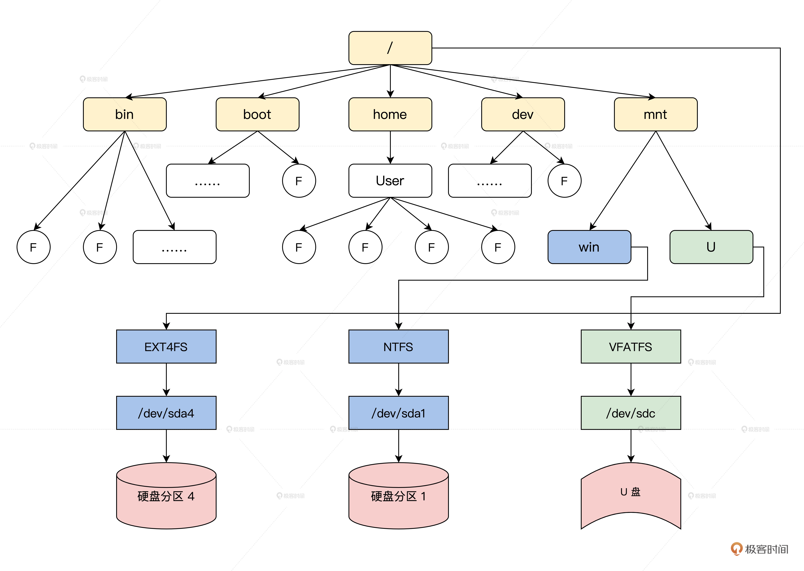
上图中显示了Linux文件目录情况，也显示了一个设备上的文件系统是如何挂载到某个目录下的。那么VFS用什么来表示一个目录呢？我们来看看代码，如下所示。
//快速字符串保存关于字符串的 "元数据"（即长度和哈希值）
struct qstr {
union {
struct {
HASH_LEN_DECLARE;
};
u64 hash_len;
};
const unsigned char *name;//指向名称字符串
};
struct dentry {
unsigned int d_flags; //目录标志
seqcount_spinlock_t d_seq; //锁
struct hlist_bl_node d_hash;//目录的哈希链表
struct dentry *d_parent; //指向父目录
struct qstr d_name; //目录名称
struct inode *d_inode; //指向目录文件的索引节点
unsigned char d_iname[DNAME_INLINE_LEN]; //短目录名
struct lockref d_lockref; //目录锁与计数
const struct dentry_operations *d_op;//目录的函数集
struct super_block *d_sb; //指向超级块
unsigned long d_time; //时间
void *d_fsdata; //指向具体文件系统的数据
union {
struct list_head d_lru; //LRU链表
wait_queue_head_t *d_wait;
};
struct list_head d_child; //挂入父目录的链表节点
struct list_head d_subdirs; //挂载所有子目录的链表
} __randomize_layout;
我们可以发现，dentry结构中包含了目录的名字和挂载子目录的链表，同时也能指向父目录。但是需要注意的是，目录也是文件，需要用inode索引结构来管理目录文件数据。
这个目录文件数据，你可以把它想象成一个表，表有三列，它们分别是：名称、类型（文件或者目录）、inode号。扫描这个表，就可以找出这个目录文件中包含的所有子目录或者文件。
接着我们来看看目录函数集,如下所示。
struct dentry_operations {
//该函数判断目录对象是否有效
int (*d_revalidate)(struct dentry *, unsigned int);
int (*d_weak_revalidate)(struct dentry *, unsigned int);
//该函数为目录项生成散列值，当目录项要加入散列表中时，VFS调用该函数
int (*d_hash)(const struct dentry *, struct qstr *);
//VFS调用该函数来比较name1和name2两个文件名。多数文件系统使用VFS的默认操作，仅做字符串比较。对于有些文件系统，比如FAT，简单的字符串比较不能满足其需要，因为 FAT文件系统不区分大小写
int (*d_compare)(const struct dentry *,
unsigned int, const char *, const struct qstr *);
//当目录项对象的计数值等于0时，VFS调用该函数
int (*d_delete)(const struct dentry *);
//当分配目录时调用
int (*d_init)(struct dentry *);
//当目录项对象要被释放时，VFS调用该函数，默认情况下，它什么也不做
void (*d_release)(struct dentry *);
void (*d_prune)(struct dentry *);
//当一个目录项对象丢失了相关索引节点时，VFS调用该函数。默认情况下VFS会调用iput()函数释放索引节点
void (*d_iput)(struct dentry *, struct inode *);
//当需要生成一个dentry的路径名时被调用
char *(*d_dname)(struct dentry *, char *, int);
//当要遍历一个自动挂载时被调用（可选），这应该创建一个新的VFS挂载记录并将该记录返回给调用者
struct vfsmount *(*d_automount)(struct path *);
//文件系统管理从dentry的过渡（可选）时，被调用
int (*d_manage)(const struct path *, bool);
//叠加/联合类型的文件系统实现此方法
struct dentry *(*d_real)(struct dentry *, const struct inode *);
} ____cacheline_aligned;
dentry_operations结构中的函数，也需要具体文件系统实现，下层代码查找或者操作目录时VFS就会调用这些函数，让具体文件系统根据自己储存设备上的目录信息处理并设置dentry结构中的信息，这样文件系统中的目录就和VFS的目录对应了。
现在我们已经解决了目录，下面我们就去看看VFS怎么实现表示文件。
文件索引结点
VFS用inode结构表示一个文件索引结点，它里面包含文件权限、文件所属用户、文件访问和修改时间、文件数据块号等一个文件的全部信息，一个inode结构就对应一个文件，代码如下所示。
struct inode {
umode_t i_mode;//文件访问权限
unsigned short i_opflags;//打开文件时的标志
kuid_t i_uid;//文件所属的用户id
kgid_t i_gid;//文件所属的用户组id
unsigned int i_flags;//标志
const struct inode_operations *i_op;//inode函数集
struct super_block *i_sb;//指向所属超级块
struct address_space *i_mapping;//文件数据在内存中的页缓存
unsigned long i_ino;//inode号
dev_t i_rdev;//实际设备标志符
loff_t i_size;//文件大小，以字节为单位
struct timespec64 i_atime;//文件访问时间
struct timespec64 i_mtime;//文件修改时间
struct timespec64 i_ctime;//最后修改时间
spinlock_t i_lock; //保护inode的自旋锁
unsigned short i_bytes;//使用的字节数
u8 i_blkbits;//以位为单位的块大小；
u8 i_write_hint;
blkcnt_t i_blocks;
struct list_head i_io_list;
struct list_head i_lru; //在缓存LRU中的链表节点
struct list_head i_sb_list;//在超级块中的链表节点
struct list_head i_wb_list;
atomic64_t i_version;//版本号
atomic64_t i_sequence;
atomic_t i_count;//计数
atomic_t i_dio_count;//直接io进程计数
atomic_t i_writecount;//写进程计数
union {
const struct file_operations *i_fop;//文件函数集合
void (*free_inode)(struct inode *);
};
struct file_lock_context *i_flctx;
struct address_space i_data;
void *i_private; //私有数据指针
} __randomize_layout;
inode结构表示一个文件的全部信息，但这个inode结构是VFS使用的，跟某个具体文件系统上的“inode”结构并不是一一对应关系。
所以，inode结构还有一套函数集合，用于具体文件系统根据自己特有的信息，构造出VFS使用的inode结构，这套函数集合如下所示。
struct inode_operations {
//VFS通过系统create()和open()接口来调用该函数，从而为dentry对象创建一个新的索引节点
int (*create) (struct inode *, struct dentry *,int);
//该函数在特定目录中寻找索引节点，该索引节点要对应于dentry中给出的文件名
struct dentry * (*lookup) (struct inode *, struct dentry *);
//被系统link()接口调用，用来创建硬连接。硬链接名称由dentry参数指定
int (*link) (struct dentry *, struct inode *, struct dentry *);
//被系统unlink()接口调用，删除由目录项dentry链接的索引节点对象
int (*unlink) (struct inode *, struct dentry *);
//被系统symlik()接口调用，创建符号连接，该符号连接名称由symname指定，连接对象是dir目录中的dentry目录项
int (*symlink) (struct inode *, struct dentry *, const char *);
//被mkdir()接口调用，创建一个新目录。
int (*mkdir) (struct inode *, struct dentry *, int);
//被rmdir()接口调用，删除dentry目录项代表的文件
int (*rmdir) (struct inode *, struct dentry *);
//被mknod()接口调用，创建特殊文件(设备文件、命名管道或套接字)。
int (*mknod) (struct inode *, struct dentry *, int, dev_t);
//VFS调用该函数来移动文件。文件源路径在old_dir目录中，源文件由old_dentry目录项所指定，目标路径在new_dir目录中，目标文件由new_dentry指定
int (*rename) (struct inode *, struct dentry *, struct inode *, struct dentry *);
//被系统readlink()接口调用，拷贝数据到特定的缓冲buffer中。拷贝的数据来自dentry指定的符号链接
int (*readlink) (struct dentry *, char *, int);
//被VFS调用，从一个符号连接查找他指向的索引节点
int (*follow_link) (struct dentry *, struct nameidata *);
//在follow_link()调用之后，该函数由vfs调用进行清除工作
int (*put_link) (struct dentry *, struct nameidata *);
//被VFS调用，修改文件的大小，在调用之前，索引节点的i_size项必须被设置成预期的大小
void (*truncate) (struct inode *);
//该函数用来检查给定的inode所代表的文件是否允许特定的访问模式，如果允许特定的访问模式，返回0，否则返回负值的错误码
int (*permission) (struct inode *, int);
//被notify_change接口调用，在修改索引节点之后，通知发生了改变事件
int (*setattr) (struct dentry *, struct iattr *);
//在通知索引节点需要从磁盘中更新时，VFS会调用该函数
int (*getattr) (struct vfsmount *, struct dentry *, struct kstat *);
//被VFS调用，向dentry指定的文件设置扩展属性
int (*setxattr) (struct dentry *, const char *, const void *, size_t, int);
//被VFS调用，拷贝给定文件的扩展属性name对应的数值
ssize_t (*getxattr) (struct dentry *, const char *, void *, size_t);
//该函数将特定文件所有属性列表拷贝到一个缓冲列表中
ssize_t (*listxattr) (struct dentry *, char *, size_t);
//该函数从给定文件中删除指定的属性
int (*removexattr) (struct dentry *, const char *);
};
上述代码中删除了一些我们不用关心的接口，VFS通过定义inode结构和函数集合，并让具体文件系统实现这些函数，使得VFS及其上层只要关注inode结构，底层的具体文件系统根据自己的文件信息生成相应的inode结构，达到了VFS表示一个文件的目的。
下面我们再看一个实例，进一步理解VFS如何表示一个打开的文件。
打开的文件
如何表示应用进程打开的不同文件呢？ VFS设计了一个文件对象结构解决这个问题，文件对象结构表示进程已打开的文件。
如果我们站在应用程序的角度思考，文件对象结构会首先进入我们的视野。应用程序直接处理的就是文件，而不是超级块、索引节点或目录项。文件对象结构包含了我们非常熟悉的信息，如访问模式、当前读写偏移等。我们来看代码，如下所示。
struct file {
union {
struct llist_node fu_llist;
struct rcu_head fu_rcuhead;
} f_u;
struct path f_path; //文件路径
struct inode *f_inode; //文件对应的inode
const struct file_operations *f_op;//文件函数集合
spinlock_t f_lock; //自旋锁
enum rw_hint f_write_hint;
atomic_long_t f_count;//文件对象计数据。
unsigned int f_flags;//文件标志
fmode_t f_mode;//文件权限
struct mutex f_pos_lock;//文件读写位置锁
loff_t f_pos;//进程读写文件的当前位置
u64 f_version;//文件版本
void *private_data;//私有数据
} __randomize_layout
在进程结构中有个文件表，那个表其实就是file结构的指针数组，进程每打开一个文件就会建立一个file结构实例，并将其地址放入数组中，最后返回对应的数组下标，就是我们调用open函数返回的那个整数。
对于file结构，也有对应的函数集合file_operations结构，下面我们再次看看它，如下所示。
struct file_operations {
struct module *owner;//所在的模块
loff_t (*llseek) (struct file *, loff_t, int);//调整读写偏移
ssize_t (*read) (struct file *, char __user *, size_t, loff_t *);//读
ssize_t (*write) (struct file *, const char __user *, size_t, loff_t *);//写
int (*mmap) (struct file *, struct vm_area_struct *);//映射
int (*open) (struct inode *, struct file *);//打开
int (*flush) (struct file *, fl_owner_t id);//刷新
int (*release) (struct inode *, struct file *);//关闭
} __randomize_layout;
file_operations结构中的函数指针有31个，这里我删除了我们不需要关注的函数指针，这些函数依然需要具体文件系统来实现，由VFS层来调用。
到此为止，有超级块、目录结构、文件索引节点，打开文件的实例，通过四大对象就可以描述抽象出一个文件系统了。而四大对象的对应的操作函数集合，又由具体的文件系统来实现，这两个一结合，一个文件系统的状态和行为都具备了。
这样一个具体的文件系统，我们就可以安装在VFS中运行了。
四大对象结构的关系
我们已经了解构成文件系统的四大对象结构，但是要想完全了解它们的工作机制，还必须要搞清楚，随着VFS代码的运行，这些对象结构在内存中的建立和销毁以及它们之间的组织关系。
一图胜千言，我来为你画一幅全景图，你就明白四大对象结构之间的关系了。-

上图中展示了spuer_block、dentry、inode、file四大结构的关系，当然这只是打开一个文件的情况，如果打开了多个文件则相应的结构实例就会增加，不过底层逻辑还是前面图里梳理的这样，万变不离其宗。
搞清楚了四大结构的关系后，我们就可以探索文件相关的操作了。
文件操作
Linux下常规的文件操作就是打开、读、写、关闭，让我们分别讨论一下这几种文件操作的流程。
打开文件
在对文件进行读写之前，需要先用open函数打开这个文件。应用程序使用标准库的open函数来打开一个文件。
在x86_64架构里，open函数会执行syscall指令，从用户态转换到内核态，并且最终调用到do_sys_open函数，然进而调用do_sys_openat2函数。
我给你画一幅流程图，你一看就明白了。

上图中清楚了展示了从系统调用开始，打开文件的全部主要流程，file、dentry、inode三个结构在这个流程中扮演了重要角色。在查找路径和检查权限后，进入了具体文件系统的打开流程。
读写文件
只要打开了一个文件，就可以对文件进行进一步的读写操作了。其实读写本是两个操作，只数据流向不同：读操作是数据从文件经由内核流向进程，而写操作是数据从进程经由内核流向文件。
所以，下面我们以读操作为例，看看读操作的流程，我依然用画图的方式为你展示这一流程，如下所示。
上图中展示了读文件操作的函数调用流程，写文件操作的流程和读文件操作的流程一样，只是数据流向不同，我就不展开了，你可以自己想一下。
关闭文件
我们打开了文件，也对文件进行了读写，然后就到了关闭文件的环节。为什么要关闭文件呢？因为打开文件时分配了很多资源，如file、dentry、inode，内存缓冲区等，这些资源使用了都要还给系统，如若不然，就会导致资源泄漏。
下面我们就来看看关闭文件的操作流程，我同样用画图的方式为你展示这一流程，如下所示。
以上就是关闭一个文件的全部流程。它回收了file结构，其中最重要是调用了文件系统的flush函数，它给了文件系统一个刷新缓冲区，把数据写回储存设备的机会，这样就保证了储存设备数据的一致性。
文件系统实例
为了进一步加深理解，我为你写了一个400行代码左右的最小文件系统，放在本课的目录中，它就是trfs，这是一个内存文件系统，支持文件的建立、打开、读写、关闭等操作，通过内存块存放数据。下面仅对文件系统的注册和使用进行介绍。
注册trfs
我们先来看看如何注册trfs文件系统的。由于我们的文件系统是写在Linux内核模块中的，所以我们要在模块初始化函数中注册文件系统 ，Linux注册文件系统需要一个参数，即文件系统类型结构，它里面放着文件系统名字、文件系统挂载、卸载的回调函数，代码如下所示。
struct file_system_type trfs_fs_type = {
.owner = THIS_MODULE,
.name = "trfs",//文件系统名字
.mount = trfs_mount,//文件系统挂载函数
.kill_sb = trfs_kill_superblock,//文件系统卸载函数
};
static int trfs_init(void)
{
int ret;
init_fileinfo();//初始化trfs文件系统数据结构
ret = register_filesystem(&trfs_fs_type);//注册文件系统
if (ret)
printk(KERN_EMERG"register trfs failed\n");
printk(KERN_EMERG"trfs is ok\n");
return ret;
}
static void trfs_exit(void)
{
exit_fileinfo();//释放trfs文件系统数据结构
unregister_filesystem(&trfs_fs_type);//卸载文件系统
}
module_init(trfs_init);
module_exit(trfs_exit);
上面的代码只展示了注册文件系统的代码，其它代码在课程相关代码目录下。支持文件打开、读写、关闭操作，能够在内存中保存文件数据。
使用trfs文件系统
注册了trfs文件系统，这不等于可以使用这个文件系统存取文件了。那么如何使用trfs文件系统呢？当然首先是编译trfs内核模块代码，在终端中cd到对应的目录下执行make，然后把编译好的内核模块插入到系统中，最后就是将这个文件系统挂载到一个具体的目录下。代码如下。
make //编译内核模块
sudo insmod trfs.ko //把内核模块插入到内核
sudo mount -t trfs none /mnt/ // 挂载trfs文件系统到mnt目录下
有了上述代码，挂载trfs到/mnt下，我们就可以用touch建立一个文件，然后用cat读取这个文件了。
好了，关于trfs我们就介绍到这里了，trfs的代码我已经帮你写好了，你可以自己慢慢研究，有什么问题也可以和我交流。
重点回顾
至此，Linux的虚拟文件系统就告一段落了，同时也标志着我们整个文件系统章节结束了。那么本节课中学了什么呢？我来为你梳理一下。
1.什么是VFS。VFS是虚拟文件系统，是Linux中一个中间层，它抽象了文件系统共有数据结构和操作函数集合。一个具体的文件系统只要实现这些函数集合就可以插入VFS中了，也因为VFS的存在，使得Linux可以同时支持各种不同的文件系统。
2.VFS的数据结构，为了搞清楚VFS的实现原理，我们研究了它的数据结构，分别是表示文件系统的超级块结构、表示文件路径的目录结构、表示文件自身的索引结点结构，还有进程打开的文件实例结构，最后还了解了它们之间的关系。
3.为了进一步了解VFS和具体文件系统的工作机制，我们研究了文件的打开、读写、关闭等操作流程，在这些流程我们明白了VFS是如何和具体文件系统打通的。
4.为了弄懂一个具体文件系统是如何安装到VFS中的，我们实现了一个小的trfs文件系统，trfs将文件数据保存在内存中， 将trfs挂载到Linux中某个目录下就可以让一些标准应用进行文件操作了。
你或许还想知道EXT4文件系统是如何划分储存设备的，还想知道EXT4是如何管理目录和文件索引结点的。那请你以勤奋为舟，遨游在LInux代码的海洋中，寻找EXT4这座大岛吧。
思考题
请说一说 super_block，dentry，inode这三个数据结构 ，一定要在储存设备上对应存在吗？
欢迎你在留言区跟我交流互动，也推荐你把这节课分享给朋友一起学习进步。
我是LMOS，我们下节课见！
36 从URL到网卡：如何全局观察网络数据流动？
你好，我是 LMOS。
从这节课起，我们就要开始学习网络篇的内容了。网络是一个极其宏大的知识结构，我会通过五节课带你了解计算机网络的关键内容。
具体我们是这样安排的。作为网络篇的开始，今天这节课我会从一个面试中高频出现的问题切入，带你梳理从输入URL到网卡的网络数据流动过程中都发生了什么事。如果你真正理解了这个过程，相信你对整个网络架构的认知也会有质的飞跃。
网络篇的第二节课，我会带你分析网络数据包在内核中如何流转；第三节课，我们一起探讨互联网架构演进过程，并动手做一次协议栈移植；最后两节课，我还是照例带你看看Linux，让你理解套接字在Linux内核中怎样实现。
从一道经典面试题说起
下面我们一起来看看一个问题，估计你多多少少会觉得熟悉。
输入URL，从一个请求到响应都发生了什么事？
没错，这是一道非常经典的面试题，你在网上随便一搜，也会找到各种各样的资料解答这道题。
不过啊，那些答案都有一些笼统，今天我会尽量详细地为你梳理一下这个过程。跟着我学完这节课，你就能明白，为什么面试官对这道题青睐有加了。
这里我先给你概括一下全过程，让你有个整体印象。
1.常规的网络交互过程是从客户端发起网络请求，用户态的应用程序（浏览器）会生成HTTP请求报文、并通过DNS协议查找到对应的远端IP地址。- 2.在套接字生成之后进入内核态，浏览器会委托操作系统内核协议栈中的上半部分，也就是TCP/UDP协议发起连接请求。- 3.然后经由协议栈下半部分的IP协议进行封装，使数据包具有远程定位能力。- 4.经过MAC层处理，找到接收方的目标MAC地址。- 5.最终数据包在经过网卡转化成电信号经过交换机、路由器发送到服务端，服务端经过处理拿到数据，再通过各种网络协议把数据响应给客户端。- 6.客户端拿到数据进行渲染。- 7.客户端和服务端之间反复交换数据，客户端的页面数据就会发生变化。
你有没有发现，刚才的过程中，我们提到了多个层级和网络协议，那么网络为什么要分层呢？网络协议又是什么呢？请听我给你一一道来。
前置知识：网络分层和网络协议
在计算机网络时代初期，各大厂商推出了不同的网络架构和标准，为统一标准，国际标准化组织ISO推出了统一的OSI参考模型。
当前网络主要遵循的IEEE 802.3标准，就是基于OSI模型提出的，主要定义的是物理层和数据链路层有线物理数据流传输的标准。
那么问题来了，网络为什么要分层呢？
我们都知道网络是复杂的。对于复杂的问题，我们自然要通过分层处理简化问题难度，降低复杂度，由于分层后的各层之间相互独立，我们可以把大问题分割成小问题。同样，分层也保证了网络的松耦合和相对的灵活，分层拆分后易于各层的实现和维护，也方便了各层的后续扩展。
网络分层解决了网络复杂的问题，在网络中传输数据中，我们对不同设备之间的传输数据的格式，需要定义一个数据标准，所以就有了网络协议。
网络协议是双方通信的一种约定，以便双方都可以理解对方的信息。接下来我们就用OSI协议体系中广泛应用的TCP/IP层的体系结构来分析整个过程，你重点需要关注的是数据处理的过程和网络协议。
发起请求阶段（应用层）
下面我们首先来看看网络应用层，它是最上层的，也是我们能直接接触到的。
我们的电脑或⼿机使⽤的应⽤软件都是在应⽤层实现，所以应⽤层只需要专注于为⽤户提供应⽤功能，不⽤去关⼼数据是如何传输的。你可以这样理解，应⽤层是⼯作在操作系统中的⽤户态。
我们依然从浏览器中输入URL，开始了解网络应用层的工作流程。
用户输入：在浏览器中输入URL
我们在浏览器中输入URL的时候，浏览器已经开始工作了。浏览器会根据我们的输入内容，先匹配对应的URL以及关键词，给出输入建议，同时校验URL的合法性，并且会在URL前后补全URL。
为了帮你更好地理解，我给你举个例子说明。我们以输入cosmos.com为例，首先浏览器会判断出这是一个合法的URL，并且会补全为http://www.cosmos.com。
其中http为协议，cosmos.com为网络地址，每个网络栏的地址都符合通用 URI 的语法。URI 一般语法由五个分层序列组成。后面的第一行内容我给你列了URL的格式，第二行做了行为说明。
URI = scheme:[//authority]path[?query][#fragment]
URI = 方案:[//授权]路径[?查询][#片段ID]
接着，浏览器从URL中会提取出网络的地址，也叫做主机名（host），一般主机名可以为域名或IP地址，此处使用域名。
对URL进行解析之后，浏览器确定了服务器的主机名和请求路径，接下来就是根据这些信息来生成HTTP请求消息了，那么到现在为止，我们的HTTP请求是否已经发出了呢？并不是这样的，我们接着往下看。
网络请求前：查看浏览器缓存
浏览器在HTTP报文生成完成后，它并不是马上就开始网络请求的。
在请求发出之前，浏览器首先会检查保存在本地计算机中的缓存，如果访问过当前的URL，会先进入缓存中查询是否有要请求的文件。此时存在的缓存有路由器缓存、DNS缓存、浏览器缓存、Service Worker、Memory Cache、Disk Cache、Push Cache、系统缓存等。
在这里我们看一下系统缓存，如果在浏览器缓存里没有命中缓存，浏览器会做一个系统调用获得系统缓存中的记录，就是我们的gethostbyname方法，它的作用是通过域名获取IP地址。这个方法会返回如下结构。
struct hostent
{
char *h_name;// 主机的别名.www.cosmos.com就是google他自己的别名
char **h_aliases;// 主机ip地址的类型，到底是ipv4(AF_INET)，还是pv6(AF_INET6)
int h_addrtype;// 主机ip地址的长度
int h_length;// 主机ip地址的长度
char **h_addr_list; // 主机的ip地址，注意，这个是以网络字节序存储的
#define h_addr h_addr_list[0] 这个函数，是将类型为af的网络地址结构src，转换成主机序的字符串形式，存放在长度为cnt的字符串中。返回指向dst的一个指针。如果函数调用错误，返回值是NULL
};
如果没有访问过当前的URL，就会跳过缓存这一步，这时我们就会进入网络操作了。
域名解析：DNS
接着上一小节在浏览器确认了输入的URL之前没有访问，浏览器就会生成对应的HTTP请求，这时浏览器需要委托操作系统将HTTP报文发送到对应的服务端。在发送消息之前，还有一个工作需要做，就是查找服务端的IP地址，因为操作系统在发送消息时，必须知道对方的IP地址才可以发送。
但是由于IP地址由一串数字组成，不够语义化，为方便你记忆，我们将IP地址映射为域名，于是就有这样一个服务，维护了IP和域名的映射关系，它就是非常重要的基础设施——DNS服务器。DNS服务器是一个分布式数据库，分布在世界各地。
为提高效率，DNS是按照一定的结构进行组织的，不同层次之间按照英文句点.来分割。
在域名中，我们的层级关系是按照从左到右、从低到高排列的，不同层级由低到高维护了一个树形结构，最高一级的根节点为root节点，就是我们所谓的根域名服务器，因此cosmos.com完整的域名应该是cosmos.com.，后面的 .相当于.root。
但是所有域名的顶级域名都一样，因此被省略；再下一级.com为顶级域名；再下一级的cosmos为权威域名。
因为这是一个树形结构，所以客户端只要请求到一个DNS服务器，就可以一层层递归和迭代查找到所有的DNS服务器了。按照由高到低的优先级，DNS域名解析的过程排列如下。
DNS解析 > 浏览器DNS缓存 > hosts文件 > 本地DNS服务器 > ISP DNS服务器
操作系统协议栈（传输层和网络层）
现在我们已经根据URL拿到需要请求的唯一地址了，接下来就要委托操作系统将HTTP报文发送出去了，这个过程由操作系统中的协议栈负责处理。
TCP/IP协议栈是现在使用最广泛的网络协议栈，Internet就是建立在TCP/IP协议栈基础上的。除TCP/IP协议栈外，我们的操作系统内核可以支持多个不同的协议栈，如后续我们将会用到的LwIp。
协议栈内部分为几部分，分别承担着不同的作用。协议栈的上半部分负责和应用层通过套接字（Socket）进行交互，它可以是TCP协议或UDP协议。应用层会委托协议栈的上部分完成收发数据的工作；而协议栈的下半部分则负责把数据发送给到指定方的IP协议，由IP协议连接下层的网卡驱动。
可靠性传输：建立TCP连接
浏览器通过DNS解析拿到Cosmos的 IP地址后， 浏览器取出 URL 的端口（HTTP默认80，HTTPS默认443）。随即浏览器会委托操作系统协议栈的上半部分创建新的套接字（Socket）向对应的IP发起 TCP 连接请求。
为了确保通信的可靠性，建立TCP首先会先进行三次握手的操作，我们可以结合后面的图示理解。
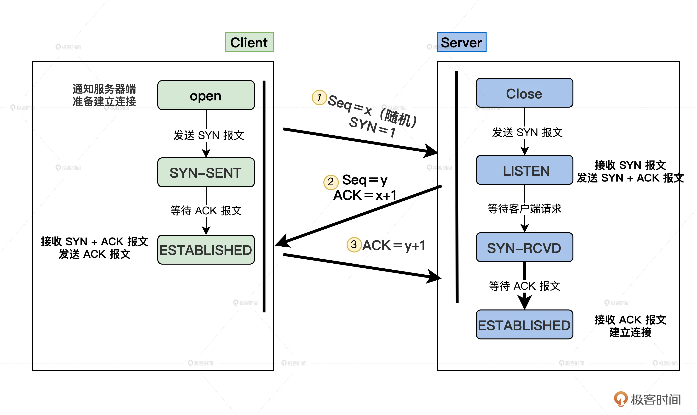
那么TCP的三次握手操作，是如何进行的呢？具体的操作步骤如下。
1.首先浏览器作为客户端会发送一个小的TCP分组，这个分组设置了一个特殊的 SYN 标记，用来表示这是一条连接请求。同时设置初始序列号为 x 赋值给 Seq （这次捕获组的数据为: SYN=1, Seq=1）。-
2.服务器接受到客户端的 SYN 连接后，会选择服务器初始序号 y。同时向客户端发送含有连接确认（SYN+ACK）、Seq=0（本例中的服务器初始序号）、Ack=1（客户端的序号x +1）等信息的 TCP 分组。-
3.客户端收到了服务器的确定字段后，向服务器发送带有 ACK=1、Seq=1 (x+1)、Ack=1 （服务器 Ack 信息的拷贝）等字段的TCP分组给服务器。
即使是发送一个TCP分组，也是一次网络通信，那么对于TCP层来说，这一次通信的数据前面就要包含一个TCP包头，向下层表明这是个TCP数据包。TCP包头其实是一个数据结构，我为你准备了一幅图，以便理解。
下图就是TCP的包头，对于TCP头部来说，以下几个字段是很重要的，你要格外关注。
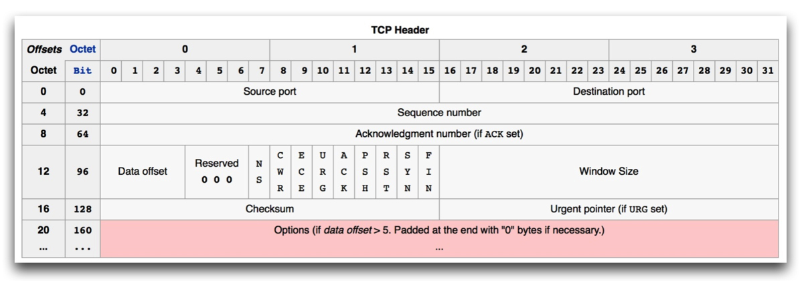
首先，源端口号（Source port）和目标端口号（Destinantion port）是不可少的，如果没有这两个端口号，数据就不知道应该发给哪个应用。
其次，你需要注意的是一串有序数字Sequence number，这个序号保证了TCP报文是有序被接受的，解决网络包的乱序问题。
之后的Acknowledgement number是确认号，只有对方确认收到，否则会一直重发，这个是防止数据包丢失的。
紧接着还有一些状态位，由于TCP是有状态的，是用于维护双方连接的状态，状态发生变更会更新双方的连接状态。后面还有一个，窗口大小Window Size，用于流量控制。
TCP层封装好了数据包，会将这个TCP数据包向下层发送，而TCP层的下层就是IP层，下面我们一起去瞧一瞧完成目的地定位的IP层。
目的地定位：IP层
TCP在维护状态的过程中，都需要委托IP层将数据封装，发送和处理网络数据包进入网络层。IP协议是TCP/IP协议栈的核心，IP协议中规定了在Internet上进行通信时应遵循的规则，包括IP数据包应如何构成、数据包的路由等，而IP层实现了网络上的点对点通信。
我们首先来看看IP层处理上层网络数据包的过程，网络数据包（无论输入数据包还是输出数据包）进入网络层后，IP层协议的函数都要对网络数据包做后面这5步操作。
1.数据包校验和检验- 2.防火墙对数据包过滤- 3.IP选项处理- 4.数据分片和重组- 5.接收、发送和前送
为了完成上述操作，IP 层被设计成三个部分，分别是 IP 寻址、路由和分包组包。现在我们并不关注这三个部分的具体实现，仅仅是熟悉这个流程就好了。
其实在网络通信的过程中，每个设备都必须拥有自己的IP地址才可以完成通信，我们的IP地址是以四组八位的组合进行约定，每组以.号隔开，再转化为十进制的方式。这里要注意，IP地址并不是以主机数目进行配置的，而是根据网卡数来进行。
有了IP地址，就可以通信了，但IP层仍然是一个软件实现的功能逻辑层，那它如何完成通信呢，答案是不能直接完成通信，它只是把IP地址及相关信息组装成一个IP头，把这个IP头放在网络数据的前面，形成了IP包，最后把这个IP包发送给IP层的下一层组件就行了，IP头的格式如下所示。
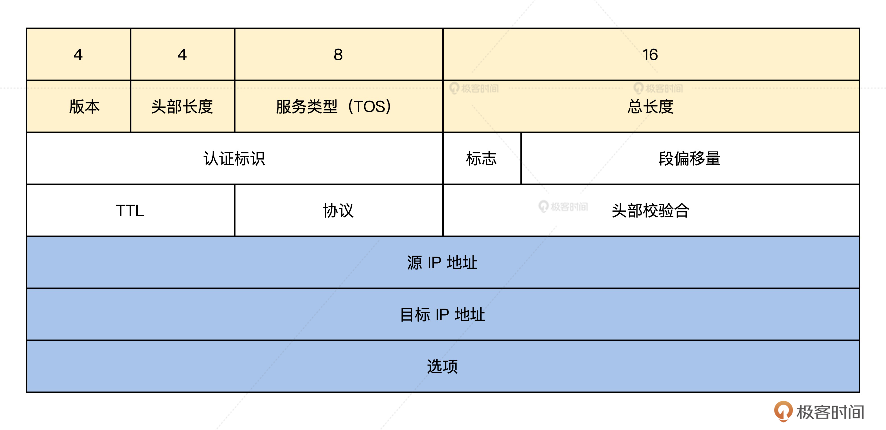
有了IP头的网络数据，就有了发送目的地的信息，那么该如何才能将报文发送到目的地呢？这就要请MAC出场了，这个MAC层，就是IP层的下一层组件。下面我们一起进入MAC层。
点对点传输：MAC（链路层）
我们经常听说网卡MAC地址，这个MAC地址指的就是计算机网卡的物理地址（Physical Address），MAC地址被固化到网卡中，用来标识一个网络设备。MAC地址是唯一且无重复的，由国际标准化组织分配，用来确保网络中的每个网卡是唯一的。
网络数据在IP层中加上IP头后，形成了IP包，现在进入MAC层了，我们就需要对IP包加上MAC头，这个MAC头包括发送方的MAC头和接收方的MAC头，用于两个物理地址点对点的传输；此外还有一个头部字段为协议类型，在常规的TCP/IP协议中，MAC头的协议类型只有IP和ARP两种。
MAC头格式如下所示。
发送方的MAC头比较容易获取，读取当前设备网卡的MAC地址就可以获取，而接收方的MAC头则需要通过ARP协议在网络中携带IP地址，在一个网络中发送广播信息，这样就能获取这个网络中的IP地址对应的MAC地址，然后就能给我们的IP包加上MAC头了，最后这个加上MAC头的IP包，成为一个MAC数据包，就可以准备发送出去了。
下面我们一起进入最后的阶段，数据的发送，即网络层中的最低层——物理层。
电信号的出口：网卡（物理层）
现在我们拿到了经过层层处理过的数据包，数据包只是一串二进制数据，然而我们都知道，网络上的数据传送，是依赖电信号的，所以我们现在需要将数据包转化为电信号，才能在物理的网线上面传输。
那么数据包是如何被转换电信号的呢，数据包通过网络协议栈的层层处理，最终得到了MAC数据包，这个MAC数据包会交给网卡驱动程序，而网卡驱动程序会将MAC数据包写入网卡的缓冲区（网卡上的内存）.
然后，网卡会在MAC数据包的起止位置加入起止帧和校验序列，最后网卡会将加入起止帧和校验序列的MAC数据包转化为电信号，发送出去。
客户端服务端的持续数据交换（应用层）
现在，我们的数据终于通过网卡离开了计算机，进入到局域网，通过局域网中的设备，集线器、交换机和路由器等，数据会进入到互联网，最终到达目标服务器。
接着，服务器就会先取下数据包的MAC头部，查看是否匹配自己MAC地址。然后继续取下数据包的IP头，数据包中的目标IP地址和自己的IP地址匹配，再根据IP头中协议项，知道自己上层是TCP协议。
之后，还要继续取下数据包TCP的头。完成一系列的顺序校验和状态变更后，TCP头部里面还有端口号，此时我们的HTTP 的server正在监听这个端口号，就把数据包再发给对应的HTTP进程。
HTTP进程从服务器中拿到对应的资源（HTML文件），再交给操作系统对数据进行处理。然后再重复上面的过程，层层携带TCP、IP、MAC 头部。
接下来数据从网卡出去，到达客户端，再重复刚才的过程拿到相应数据。客户端拿到对应的HTML资源，浏览器就可以开始解析渲染了，这步操作完成后，用户最终就能通过浏览器看到相应的页面。
我为你画了两幅图，来描述上述过程，第一幅是网络协议各层之间封装与拆封数据的过程，如下所示。
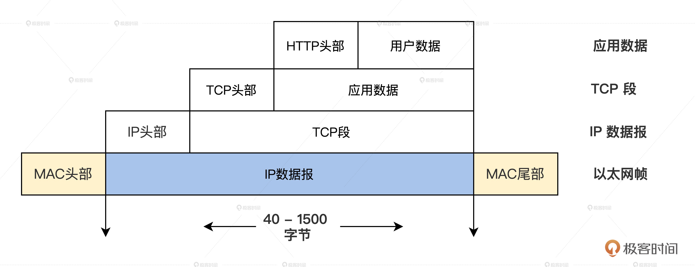
下面的第二幅图，是描述客户端与服务器之间用网络协议连接通信的过程，如下所示。
我们可以看到，此时客户端和服务端之间通过TCP协议维护了一个连接状态，如果客户端需要关闭网络，那么会进行四次挥手，两边的网络传输过程至此完成。
重点回顾
好，这节课的内容告一段落了，我来给你梳理一下本节课的重点，如下所示。
1.首先，常规的网络交互过程是从客户端发起网络请求，网络数据包经过各类网络协议的处理，为了约定一套不同设备都能理解的约定，我们引入了网络协议。- 2.然后，在不同的网络协议处理下，给我们的网络数据包加上了各种头部，这保证了网络数据在各层物理设备的流转下可以正确抵达目的地。收到处理后的网络数据包后，接受端再通过网络协议将头部字段去除，得到原始的网络数据。- 3.最后，这节课你需要重点理解网络协议对数据的处理过程，以及处理过程中的不同协议的数据结构和关键头部字段。
思考题
我们这节课从宏观的角度分析了网络数据的运转，但是在内核中网络数据包怎么运转的呢？请你简单描述这个过程。
欢迎你在留言区跟我交流讨论，也欢迎你把这节课分享给你的同事、朋友。
我是LMOS，我们下节课见！
37 从内核到应用：网络数据在内核中如何流转
你好，我是 LMOS。
上节课我们对一次请求到响应的过程积累了一些宏观认识，相信你已经对整个网络架构有了一个整体蓝图。这节课，让我们来仔细研究一下网络数据是如何在内核中流转的，让你开阔视野，真正理解底层工程的实现思路。
凡事先问目的，在网络数据在内核中的流转，最终要服务于网络收发功能。所以，我会先带你了解一次具体的网络发收过程，然后带你了解lwIP的网络数据收发。有了这些基础，我还会示范一下如何实现协议栈移植，你可以在课后自行动手拓展。
好，让我们正式开始今天的学习吧。课程配套代码，你可以点击这里获取。
先看看一次具体的网络发收过程
理解软件的设计思想，最重要的是先要理解需求。而内核中的数据流转也只是为了满足网络收发的需求而进行的设计。
发送过程总览
下面我们一起来看看应用程序通过网络发送数据的全过程。
应用程序首先会准备好数据，调用用户态下的库函数。接着调用系统API接口函数，进入到内核态。
内核态对应的系统服务函数会复制应用程序的数据到内核的内存空间中，然后将数据移交给网络协议栈，在网络协议栈中将数据层层打包。
最后，包装好的数据会交给网卡驱动，网卡驱动程序负责将打包好的数据写入网卡并让其发送出去。
我为你准备了一张流程图供你参考，如下所示。

上图中，只是展示了大致流程，其中还有DMA处理、CRC校验、出错处理等细节，但对于我们理解梳理发送流程，这些就够了。
接收过程总览
了解了发送数据的过程以后，掌握接收数据的过程就更容易了，因为它就是发送数据的逆过程。
首先，网卡接收到数据，通过DMA复制到指定的内存，接着发送中断，以便通知网卡驱动，由网卡驱动处理中断复制数据。然后网络协议收到网卡驱动传过来的数据，层层解包，获取真正的有效数据。最后，这个数据会发送给用户态监听的应用进程。
为了让你更加直观地了解这一过程，我特意准备了一张流程图供你参考，如下所示。

前面只是帮你梳理一下数据的发送与接收的流程，其实我们真正要关注的是网络协议。可是我们若手动实现一个完整的网络协议，不太现实，网络协议的复杂度大到也许要重新开一门课程，才可以完全解决，所以下面我们借用一下lwIP项目，以这个为基础来讨论网络协议。
认识一下lwIP架构
现在我们清楚了一次具体网络发收过程是怎么回事，那怎么让Cosmos实现网络通信呢？这里我们选择lwIP这个TCP/IP协议的轻量级开源项目，让它成为Cosmos的网络部的战略合作伙伴。
lwIP是由瑞典计算机科学研究院（SICS）的Adam Dunkels开发的小型开源TCP/IP协议栈。它是一个用C语言实现的软件组件，一共有两套接口层，向下是操作系统要提供的，向上是提供给应用程序的。这样lwIP就能嵌入到任何操作系统之中工作，并为这个操作系统上的应用软件提供网络功能支持了。
为啥说lwIP是轻量级的呢？很简单，跟Linux比，从代码行数上就能看得出。lwIP的设计目标就是尽量用少量资源消耗，实现一个相对完整的TCP/IP协议栈。
这里的“完整性”主要是指TCP协议的完整性，实现的关键点就是在保持TCP协议主要功能的基础上减少对RAM的占用。同时，lwIP还支持IPv6的标准实现，这也让我们与现代交换设备的对接变得非常方便。
这里额外提供你一份扩展阅读资料，lwIP的项目主页链接，这里包含了大量相关资料，感兴趣的同学可以课后深入了解。另外，lwIP既可以移植到操作系统上运行，也可以在没有操作系统的情况下独立运行。
lwIP在结构上可分为四层：OS层、API层、核心层、硬件驱动层，如下图所示。
第一层
MCU的业务层是lwIP的服务对象，也是其自身代码使用lwIP的地方。大部分时候我们都是从这里入手，通过netconn或lwip_api使用lwIP的各种功能函数。
在典型的TCP通信的客户端应用程序中，一般先要通过netconn_new创建一个struct netconn对象，然后调用netconn_connect连接到服务器，并返回成功或失败。成功后，可以调用netconn_write向服务器发送数据，也可以调用netconn_recv接收数据。最后，关闭连接并通过netconn_close释放资源。
第二层
lwIP的api层是netconn的功能代码所在的层，负责为上层代码提供netconn的api。习惯使用socket的同学也可以使用lwip_socket等函数，以标准的socket方式调用lwIP。新版本增加了http、mqtt等应用的代码，这些额外的应用对目前的物联网通信来说确实很方便。
第三层
lwIP的核心层存放了TCP/IP协议栈的核心代码，它不仅实现了大部分的TCP和UDP功能，还实现了DNS、ICMP、IGMP等协议，同时也实现了内存管理和网络接口功能。
该层提供了sys_arch模块设计，便于将lwIP移植到不同的操作系统，如线程创建、信号量、消息队列等功能。和操作系统相关的真正定义写在了lwip/include/sys.h文件中。
第四层
硬件驱动层提供PHY芯片驱动，用来匹配lwIP的使用。lwIP会调用该层的代码将组装好的数据包发送到网络，同时从网络接收数据包并进行分析，实现通信功能。
lwIP的三套应用程序编程接口
理清了架构，我们再说一说lwIP的应用程序编程接口，一共有三套。
原始API：原始的lwIP API。它通过事件回调机制开发应用程序。该应用编程接口提供了最佳的性能和优化的代码长度，但它增加了应用程序开发的复杂性。
Netconn API：是高级的有序API、需要实时操作系统（RTOS）的支持（提供进程间通信的方法）。Netconn API支持多线程。
BSD套接字API：类似伯克利的套接字API（在Netconn API上开发，需要注意NETCONN API 即为 Sequential API）。
对于以上三种接口，前者只需要裸机调用，后两种需要操作系统调用。因此，移植lwIP有两种方法，一种是只移植内核，不过这样之后只能基于RAW/Callback API编写应用程序。第二种是移植内核和上层API。这时应用程序编程可以使用三种API，即RAW/Callback API、顺序API和Socket API。
lwIP执行流程
现在，想必聪明的你已经理解了前文中的网络收发过程。
接下来，让我们顺着之前的思路来对应到lwIP在收发过程中的核心函数，具体过程我同样梳理了流程图。你可以结合图里关键的函数名以及步骤顺序，按这个顺序在IwIP代码中检索阅读。
数据发送
首先要说的是数据发送过程。
由于我们把lwIP作为Cosmos的一个内核组件来工作，自然要由lwIP接收来自内核上层发来的数据。内核上层首先会调用lwIP的netconn层的接口函数netconn_write，通过这个函数，数据正式流进lwIP组件层。
接着，netconn层调用lwIP组件的TCP层的接口函数tcp_write，在TCP层对数据首次进行打包。然后，TCP层将打包好的数据通过调用io_output函数，向下传递给lwIP组件的IP层，进行打包。
最后，IP层将打包好的数据发送给网卡驱动接口层netif，这里调用了实际的网卡驱动程序，将数据发送出去。

数据接收
数据接收的步骤相比数据发送稍微多一些，但也不用害怕，跟住我的讲解思路一定可以理清这个过程。
数据接收需要应用程序首先调用lwIP的netconn层的netconn_recv接口。然后由netconn层调用sys_arch_mbox_fetch函数，进入监听等待相关的mbox。
接着，数据会进入网卡，驱动程序相关的函数负责把它复制到内存。再然后是调用ethernet_input函数，进入ethernet层。完成相关处理后，调用ip4_input函数，数据在lwIP组件的IP层对数据解包，进行相应处理之后，还会调用tcp_input函数，进入lwIP组件的TCP层对数据解包。
最后，调用sys_mbox_trypost函数把数据放入特定的mbox，也就是消息盒子里，这样等待监听的应用程序就能得到数据了。
在了解了lwIP组件收发数据的过程之后，就可以进行移植的相关工作了。lwIP的结构设计非常优秀，这让移植工作变得很容易。我们这里只要了解lwIP组件的sys_arch层的接口函数即可。
下面我们一起了解lwIP的移植细节。
协议栈移植
lwIP有两种移植模式，一种是NO_SYS，无操作系统模式，一种是有操作系统模式。用NO_SYS模式比较简单，你可以自行探索。
操作系统模式主要需要基于操作系统的 IPC 机制，对网络连接进行了抽象（信号量、邮箱/队列、互斥体等机制），从而保证内核与应用层API的通讯，这样做的好处是lwIP 内核线程可以只负责数据包的 TCP/IP 封装和拆封，而不用进行数据的应用层处理，从而极大地提高系统对网络数据包的处理效率。
而这些操作系统模拟层的函数主要是在sys.h中声明的，我们一般在sys_arch.c文件中完成其定义。所以，我们很清楚，带操作系统的移植就是在无操作系统的基础上添加操作系统模拟层。
再接下来我们就看看操作系统模拟层的编写。
有操作系统模式
在之前的课程里我们已经正确实现了Cosmos操作系统了，现在我们就可以在Cosmos系统提供的IPC等机制基础之上，对照 sys.h 文件中声明的函数一一去实现了。
实际工程中完整移植网络栈，需要将后面表格里的这30多个函数全部实现。我会带你完成邮箱和系统线程相关的关键部分移植，其他函数的移植思路也大同小异，这里就不一一演示了。

从上表中我们可以发现，这些变量和函数主要面向信号量、互斥体和邮箱，包括创建、删除、释放和获取等各种操作，所以我们需要根据操作系统的规定来实现这些函数。
突然看到这么多功能，是不是有点慌？其实不用怕，因为这些功能的实现起来非常简单。首先，我们通过一个例子来看看邮箱功能的实现。
在lwIP中，用户代码通过邮箱与协议栈内部交互。邮箱本质上是指向数据的指针。API将指针传递给内核，内核通过这个指针访问数据，然后进行处理。相反，内核也是通过邮箱将数据传递给用户代码的。
具体代码如下，关键内容我都做了详细注释。
/*创建一个空的邮箱。*/
err_t sys_mbox_new(sys_mbox_t *mbox, int size)
{
osMessageQDef(QUEUE, size, void *);
*mbox = osMessageCreate(osMessageQ(QUEUE), NULL);
#if SYS_STATS
++lwip_stats.sys.mbox.used;
if (lwip_stats.sys.mbox.max < lwip_stats.sys.mbox.used) {
lwip_stats.sys.mbox.max = lwip_stats.sys.mbox.used;
}
#endif /* SYS_STATS */
if (*mbox == NULL)
return ERR_MEM;
return ERR_OK;
}
/*重新分配一个邮箱。如果邮箱被释放时，邮箱中仍有消息，在lwIP中这是出现编码错误的指示，并通知开发人员。*/
void sys_mbox_free(sys_mbox_t *mbox)
{
if( osMessageWaiting(*mbox) )
{
portNOP();
#if SYS_STATS
lwip_stats.sys.mbox.err++;
#endif /* SYS_STATS */
}
osMessageDelete(*mbox);
#if SYS_STATS
--lwip_stats.sys.mbox.used;
#endif /* SYS_STATS */
}
/*发送消息到邮箱*/
void sys_mbox_post(sys_mbox_t *mbox, void *data)
{
while(osMessagePut(*mbox, (uint32_t)data, osWaitForever) != osOK);
}
/*尝试将消息发送到邮箱*/
err_t sys_mbox_trypost(sys_mbox_t *mbox, void *msg)
{
err_t result;
if ( osMessagePut(*mbox, (uint32_t)msg, 0) == osOK)
{
result = ERR_OK;
}
else {
result = ERR_MEM;
#if SYS_STATS
lwip_stats.sys.mbox.err++;
#endif /* SYS_STATS */
}
return result;
}
/*阻塞进程从邮箱获取消息*/
u32_t sys_arch_mbox_fetch(sys_mbox_t *mbox, void **msg, u32_t timeout)
{
osEvent event;
uint32_t starttime = osKernelSysTick();;
if(timeout != 0)
{
event = osMessageGet (*mbox, timeout);
if(event.status == osEventMessage)
{
*msg = (void *)event.value.v;
return (osKernelSysTick() - starttime);
}
else
{
return SYS_ARCH_TIMEOUT;
}
}
else
{
event = osMessageGet (*mbox, osWaitForever);
*msg = (void *)event.value.v;
return (osKernelSysTick() - starttime);
}
}
/*尝试从邮箱获取消息*/
u32_t sys_arch_mbox_tryfetch(sys_mbox_t *mbox, void **msg)
{
osEvent event;
event = osMessageGet (*mbox, 0);
if(event.status == osEventMessage)
{
*msg = (void *)event.value.v;
return ERR_OK;
}
else
{
return SYS_MBOX_EMPTY;
}
}
/*判断一个邮箱是否有效*/
int sys_mbox_valid(sys_mbox_t *mbox)
{
if (*mbox == SYS_MBOX_NULL)
return 0;
else
return 1;
}
/*设置一个邮箱无效*/
void sys_mbox_set_invalid(sys_mbox_t *mbox)
{
*mbox = SYS_MBOX_NULL;
}
// 创建一个新的信号量。而 "count"参数指示该信号量的初始状态
err_t sys_sem_new(sys_sem_t *sem, u8_t count)
{
osSemaphoreDef(SEM);
*sem = osSemaphoreCreate (osSemaphore(SEM), 1);
if(*sem == NULL)
{
#if SYS_STATS
++lwip_stats.sys.sem.err;
#endif /* SYS_STATS */
return ERR_MEM;
}
if(count == 0) // Means it can't be taken
{
osSemaphoreWait(*sem,0);
}
#if SYS_STATS
++lwip_stats.sys.sem.used;
if (lwip_stats.sys.sem.max < lwip_stats.sys.sem.used) {
lwip_stats.sys.sem.max = lwip_stats.sys.sem.used;
}
#endif /* SYS_STATS */
return ERR_OK;
}
此外还有一些函数也是协议栈需要的函数，特别是sys_thread_new函数，不但协议栈在初始化时需要用到，在后续我们实现各类基于lwIP的应用时也会用得到，它的具体实现如下。
sys_thread_t sys_thread_new(const char *name, lwip_thread_fn thread , void *arg, int stacksize, int prio)
{
const osThreadDef_t os_thread_def = { (char *)name, (os_pthread)thread, (osPriority)prio, 0, stacksize};
return osThreadCreate(&os_thread_def, arg);
}
osThreadId osThreadCreate (const osThreadDef_t *thread_def, void *argument)
{
TaskHandle_t handle;
#if( configSUPPORT_STATIC_ALLOCATION == 1 ) && ( configSUPPORT_DYNAMIC_ALLOCATION == 1 )
if((thread_def->buffer != NULL) && (thread_def->controlblock != NULL)) {
handle = xTaskCreateStatic((TaskFunction_t)thread_def->pthread,(const portCHAR *)thread_def->name,
thread_def->stacksize, argument, makeFreeRtosPriority(thread_def->tpriority),
thread_def->buffer, thread_def->controlblock);
}
else {
if (xTaskCreate((TaskFunction_t)thread_def->pthread,(const portCHAR *)thread_def->name,
thread_def->stacksize, argument, makeFreeRtosPriority(thread_def->tpriority),
&handle) != pdPASS) {
return NULL;
}
}
#elif( configSUPPORT_STATIC_ALLOCATION == 1 )
handle = xTaskCreateStatic((TaskFunction_t)thread_def->pthread,(const portCHAR *)thread_def->name,
thread_def->stacksize, argument, makeFreeRtosPriority(thread_def->tpriority),
thread_def->buffer, thread_def->controlblock);
#else
if (xTaskCreate((TaskFunction_t)thread_def->pthread,(const portCHAR *)thread_def->name,
thread_def->stacksize, argument, makeFreeRtosPriority(thread_def->tpriority),
&handle) != pdPASS) {
return NULL;
}
#endif
return handle;
}
至此，基于Cosmos操作系统移植lwIP协议栈的关键部分就算完成了。
重点回顾
好，这节课的内容告一段落了，我来给你做个总结。
我们首先从数据发送接收的视角，观察了数据从用户态到内核态，再从内核态到流动到用户态的全过程。
接着，我们发现网络协议栈移植与DMA、内核的IPC、信号量、DMA等机制密切相关。理解网络栈移植的关键步骤，能够让我们更好地理解内核特性在工程中是如何应用的。
最后，我们实现了将lwIP网络协议栈的关键部分移植到Cosmos操作系统下。不过这节课我带你实现了邮箱和系统线程相关的关键部分，其他函数移植道理相通，感兴趣的同学可以自行探索。
思考题
我们已经了解到了操作系统内核和网络协议栈的关系，可是网络协议栈真的一定只能放在内核态实现么？
欢迎你在留言区跟我交流探讨。也欢迎你把这节课分享给自己的朋友、同事。
我是LMOS，我们下节课见！
38 从单排到团战：详解操作系统的宏观网络架构
你好，我是 LMOS。
上节课我们学习了单机状态下网络数据在内核中流转的全过程，并且带你一起梳理了网络栈移植的关键步骤。
这节课我会带你看看，现实世界中网络请求是如何穿过重重网络设备，实现大规模组网的。同时，我还会给你讲解网络架构的过去、现在，并展望一下将来的发展趋势。最后我会带你动手搭建一个现代互联网实验环境，通过实际的组网实践加深对网络架构的理解。
从传统网络架构聊起
你是否好奇过，我们目前用的互联网是如何做到互联互通的呢？
让我们先来看看传统的三层网络架构，著名的通信设备厂商思科把这种架构叫做分级的互联网络模型（Hierarchical Inter-networking Model）。这种架构的优点是，可以把复杂的网络设计问题抽象为几个层面来解决，每个层面又聚焦于某些特定的功能。这样就能把复杂而庞大的网络问题拆解成比较好解决的子问题。
如下图所示，三层网络架构设计主要包括核心层、汇聚层、接入层这三个层。下面我分别给你说一说。

首先是核心层。交换层的核心交换机为进出数据中心的数据包提供高速转发的功能，为多个汇聚层提供连通性，同时也为整个网络提供灵活的L3路由网络。
然后是汇聚层。汇聚交换机与接入交换机相连，提供防火墙、SSL卸载、入侵检测、网络分析等其他服务。
最后我们来看接入层。接入交换机通常位于机架的顶部，因此它们也被称为ToR交换机，并且它们与服务器物理连接。
当然，观察这个架构我们可以发现，核心层和汇聚层这种骨干网络需要承担的流量是蛮大的，流量大意味着对交换性能、效率有更高的要求。所以为了解决性能、效率等问题，我们需要在OSI的1、2、3层上分别做优化。
这里要说到传统网络架构的不足之处，我们发现经典的IP网络是逐跳转发数据的。转发数据时，每台路由器都要根据包头的目的地址查询路由表，以获得下一跳的出口。这个过程显然是繁琐低效的。
另外，转发路径也不够灵活，为了加以改善，我们在第二层之上、第三层之下引入一个2.5层的技术方案，即多协议标签交换（MPLS）技术。
优化与迭代：MPLS技术
目前MPLS技术在国内应用广泛，无论是BAT等互联网巨头，还是运营商建设骨干网都在应用这种技术。MPLS的核心结构如下。
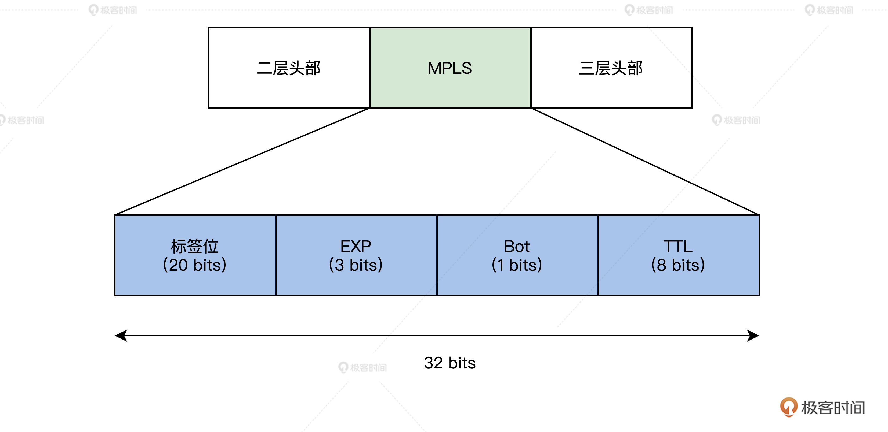
MPLS通过LDP标签分发协议。我来举个例子吧，这相当于把快递标签“贴在”了快递盒子上了，后续只需要读取标签，就能知道这个数据要转发到哪里去了。这样就避免了传统路由网络中每路过一个经手人（每一跳），都要把快递盒子打开看一看的额外开销。
而路径计算元素协议（RSVP-TE）最大的优点是收集整个网络的拓扑和链路状态信息。通过扩展的资源预留协议，可以实现灵活的转发路径选择和规划。这就好比双十一了，物流公司根据物流大数据收集到的路网和拥堵状态等信息，自动规划出性价比最高的路径，显然快递配送效率会得到很大提升。
当然，只在OSI的2、3层之间做优化是远远不够的，为了满足动辄数百G传输需求，物理层也经历了从DWDM（Dense Wavelength Division Multiplexing）波分复用系统这种波分复用技术到OTN（Iptical Transport Network，光传送网）的技术演进。感兴趣的同学可以搜索光传送网和波分复用相关的资料，这里我就不展开了。
根据前面的讲解我们发现，传统网络基础架构确实可以解决不少问题，但这样真的完美了么？其实不然，比如前面的MPLS技术虽然也解决了问题，但也加重了耦合，并且存在资源利用率低、复杂度高、价格昂贵等缺点。
所以后来SR（Segment Routing）技术又应运而生，而随着IPv6的演进，我们用SRv6替代MPLS技术也是大势所趋。
另外，我们还要注意到业务需求的变化。比如随着云与5G等移动通信的发展，流量除了以前客户端和服务端的南北向通信之外，服务端分布式服务之间也会引入了大量的通信流量。甚至随着云与容器的演进，服务端会存在大量的虚拟机迁移等动作。这些对传统网络中STP拓扑变化、收敛以及网络规模都带来了巨大的挑战。
那么如何解决传统三层网络架构带来的挑战呢？答案其实在贝尔实验室的Charles Clos博士在1953年的《无阻塞交换网络研究》之中。论文中提到的核心思想是：用多个小规模、低成本的单元，构建复杂、大规模的网络。
论文中提到的简单的CLOW网络是包含输入级别、中间级别和输出级别的三级互连体系结构。
下图中的矩形表示规模较小的转发单元，其成本显然也相对较低。CLOS的本质可以简单理解为是一种多级交换的架构思想，并且这种架构很适合在输入和输出持续增加的情况下将中间交叉数降至最低。
下图中，m是每个子模块的输入端口数，n是每个子模块的输出端口数，r是每一级的子模块数，经过合理的重排，只要满足公式：
r2≥max(m1,n3)
那么，对于任意的输入到输出，总是能找到一条无阻塞的通路。
直到1990年代，CLOS架构被应用到Switch Fabric。应用CLOS架构的交换机的开关密度，与交换机端口数量N的关系如下。
O(N^(3/2))
可以看到，在N较大时，CLOS模型能降低交换机内部的开关密度。由此可见，越来越多的人发现了传统三层网络架构下的痛点，于是一种叫做胖树的网络架构应运而生（感兴趣的同学可以在搜索《A Scalable, Commodity Data Center Network Architecture》这篇论文）。
而借鉴Fattree和CLOS模型的思想，目前业界衍生出了叶脊（Spine-Leaf）网络架构。目前通过FaceBook、Google等公司大量实践的事实已经证明，Spine-Leaf网络架构可以提供高带宽、低延迟、非阻塞、可扩展的服务器到服务器连接。
这种新一代架构在工程实践中的代表之一，则正是Google的B4网络，接下来就让我们一起看一下Google B4网络的架构。
谈谈Google B4
Google的研究员Amin Vahdat曾经说过：“如果没有软件定义网络，那Google就不会是今天的Google。”
为了实现实现数据中心的互联互通，谷歌设计并搭建了B4网络，实现了数据在各个公司园区之间的实时复制。
B4网络的核心架构由Google设计的控制软件和白盒交换机构成。谷歌的目标是建立一个类似于广域网的镜像网络，随着网络规模的不断扩展，目前谷歌的大部分业务都已经运行在B4上了。
接下来让我们来看一下Google Google B4的架构图（下面4张图出自Google B4网络论文）：

B4网络的其实也是由三层构成，但这个和传统网络的“三层架构”又不太一样。这里指的是物理设备层（Switch Hardware）、局部网络控制层（Site Controllers）和全局控制层（Global）。
全局控制层中的SDN网关和TE服务器会在全局进行统一控制，而每个数据中心（Site）则会通过Site Controller来控制物理交换机，从而实现将网络的控制面和数据面分离的效果。
第一层：物理设备层
我们首先来看第一层的物理交换设备，它是Google自研并请ODM厂商代工的白盒交换机。这个自研的交换机使用了24颗16×10Gb的芯片，还携带了128个10Gb网口。
交换机里面运行的是OpenFlow协议。但众所周知，交换机内的专用芯片从研发设计到最终流片其实周期和成本还是很高的。
那如何让专用的交换机芯片跟OpenFlow更好地进行协同呢？为了解决这个问题，Google采用了TTP方案。实际运行时交换机则会把像访问控制列表（ACL）、路由表、隧道表之类的关键数据通过BGP/IS-IS协议报文送到Controller，由Controller进行处理。
第二层：局部网络控制层
B4网络中，一个Controller服务可以控制多个交换机。而为了保证可用性，一个交换机是可以连接多个Controller服务的，而同一时间只会有一个Controller服务为这台交换机提供服务，并且一个数据中心中会包含由多个Controller服务实例构成的服务集群。
在局部网络控制层中，还会使用Paxos协议负责所有控制功能的领导者（leader）选举。
具体过程是这样的，每个节点上的Paxos实例对给定控制功能的可用副本集做应用程序级别的健康检测。当大多数的Paxos实例检测到故障时，他们就会从剩余的可用服务器集中选出一个新的负责人。然后，Paxos会将递增的ID号回调给当选的leader。leader使用这个ID来向客户表明自己的身份。
第三层全局控制层（Global）
负责全局控制的TE Server通过SDN Gateway从各个数据中心的控制器收集链路信息，从而掌握路径状态。这些路径以IP-In-IP隧道的方式创建，通过SDN网关到达Onix控制器，最后下达到交换机。
当一个新的业务数据需要传输时，应用程序会估计它在传输时需要的带宽，并为它选择一个最佳路径，这样可以让链路的带宽利用率达到整体最佳。

SDN原理
开放网络基金会ONF（Open Networking Foundation）则站在了Google B4等前人经验的基础上，当然也是将SDN架构分为三层，如下。
应用层是由包含了各种不同的的业务逻辑的应用构成的。
- 控制层主要负责数据平面相关资源的编排、调度、网络拓扑的维护以及状态信息管理等工作。
- 数据层相对来说逻辑更轻，主要负责数据的转发、处理以及运行时的一些状态收集工作。

SDN的基本特征和优势
SDN主要包含三个基本特征，我们可以分别来看一下。
1.控制逻辑与转发逻辑分离。转发平面主要是由受控的转发设备构成，具体的转发方式和相关业务逻辑则由分离在控制面的控制应用程序控制。- 2.开放的API。通过开放的南北向API，可以实现应用和网络的无缝集成，让应用只需要关注自己的逻辑，不需要关注底层的实现细节。- 3.集中控制：集中的控制平面可以获取网络资源的全局信息，并根据业务需求进行全局分配和优化。
结合我们前面所讲的SDN的特征，我帮你梳理了SDN的几大优势。
1.灵活性，动态调整网络设备的配置，不再需要手动配置每台设备了。- 2.网络硬件简化（如白盒交换机等）。只需要关注数据处理和转发，与具体业务特性解耦，加速新业务特性的引入。- 3.自动化的网络部署、操作和维护以及故障诊断。
为了加深大家对SDN的理解，接下来让我们一起给予开源的控制面ONOS以及数据面Mininet进行一下组网试验。
开放网络操作系统ONOS组网实践
ONOS是一个开源的、分布式的网络操作系统控制平台，可以满足运营商对网络业务的电信级需求。
自ONOS诞生以来，就已经汇聚了很多知名服务提供商(如ATT、NTT通信)、以及一些高标准网络设备供应商、运营商、合作伙伴（如英特尔、爱立信、Ciena、富士通、华为、NEC、CNIT、CREATE-NET、Infoblox、SRI）等，得到了ONF的全力支持。目前，ONOS已经得到业界越来越多的认可与支持。
我们前面讲过SDN分为控制面和数据面，对应到开源实现中ONOS就是控制面的具体实现，而Mininet对应的就是数据面实现。Mininet是由斯坦福大学基于Linux容器架构开发的一个云原生虚拟化网络仿真工具。
使用ONOS+Mininet我们可以快速创建一个包含主机、交换机、SDN控制器以及链路的虚拟网络，并且Mininet创建的交换机也是支持上文讲到的OpenFlow协议的，这也使得它具备了高度的灵活性。使用这个工具，我们可以在本地轻松搭建一个SDN开发、调试环境。
下载虚拟机镜像
首先，让我们使用官方打包好的镜像virtualbox安装Mininet，这种方式安装比较简单高效。
安装Mininet
如下图所示，下载mininet-2.3.0-210211-ubuntu-20.04.1-legacy-server-amd64-ovf.zip，解压后导入虚拟机即可。

如下图所示，导入完毕之后，我们正常启动虚拟机。

导入成功后，使用用户名/密码：mininet/mininet即可登录。接下来，我们需要运行文稿中的命令安装docker。
sudo apt-get update
sudo apt install curl
sudo apt install ssh
curl -fsSL https://get.docker.com | bash -s docker --mirror Aliyun
安装好Docker之后，我们在虚拟机中执行文稿后面这条命令，拉取ONOS的镜像（如果因为某些网络环境原因镜像拉取速度过慢，你可以尝试搜索使用docker镜像加速服务）。
docker pull onosproject/onos

创建Mininet容器连接ONOS
好，现在安装Mininet的工作就完成了。下面我们运行后面的docker run命令，创建ONOS容器。
docker run -t -d --name onos1 onosproject/onos
然后，我们可以通过容器id获取ONOS容器的IP，代码如下。
docker inspect --format '{{ .NetworkSettings.IPAddress }}' <container-ID>

得到IP之后，我们使用ssh登陆ONOS，用户名密码都是karaf。
ssh -p 8101 karaf@172.17.0.2
app activate org.onosproject.openflow #启用openflow
app activate org.onosproject.fwd #启用forward转发功能

接着，我们需要退出onos登录，返回虚拟机中，配置mininet连接到ONOS。
sudo mn --topo tree,2 --controller remote,ip=172.17.0.2 #创建临时网络
pingall #网路连通性检测

ONOS查看拓扑
查看拓扑是通信组网的基本操作，我在后面还画了一张网络拓扑图。相信经过实战体会，再结合图示，你对网络节点和数据流转的理解会更上一层楼。
打开URL：http://172.17.0.2:8181/onos/ui/login.html
账号/密码：karaf

（说明：先把容器的网络映射到虚拟机，再把虚拟机的网络映射到本地即可。docker run的时候加上-p 8000:80这样的参数，就可以映射到虚机了，然后再改一下VBox的网络设置。）
ONOS CLI
karaf进入ONOS之后，除了开启各类设置，它本身也是一个CLI，可以查看各类信息，例如后面这些信息。
- devices：查看交换机
- links：查看链路
- hosts：查看主机
- flows
：查看所选交换机之间的路径
更多命令和实验，你可以参考ONOS官方文档自己探索。
重点回顾
好，这节课的内容告一段落了，我来给你做个总结。
我们先从传统互联网组网的方式开始逐渐了解了互联网架构，随着认识的深入我们发现传统三层架构是存在缺点的，于是我们引入了各种优化方案来不断迭代、演进出了以SDN为代表的现代互联网基础架构。
最后，我们基于ONOS和MiniNet搭建了SDN的实验环境，了解到了一次SDN组网的基本流程，同时跑通了我们第一个实验。
思考题
请思考一下，我们目前的互联网架构属于中心化架构还是去中心化架构呢？你觉得未来的发展趋势又是如何？
拓展阅读
欢迎你在留言区记录你的学习收获，或者跟我交流探讨。也推荐你把今天这节课分享给身边的朋友。
我是LMOS，我们下节课见！
39 瞧一瞧Linux：详解socket实现与网络编程接口
你好，我是LMOS。
前面我们了解了网络的宏观架构，建立了网络模块知识的大局观，也进行了实际的组网实践。现在我们来瞧一瞧Linux的网络程序，不过想要入门Linux的网络编程，套接字也是一个绕不开的重要知识点，正是有了套接字，Linux系统才拥有了网络通信的能力。而且网络协议的最底层也是套接字，有了这个基础，你再去看相关的网络协议的时候也会更加轻松。
我会通过两节课的内容带你了解套接字的原理和具体实现。这节课，我们先来了解套接字的作用、工作原理和关键数据结构。下一节课，我们再一起研究它在Linux内核中的设计与实现。
好，让我们开始今天的学习吧。
如何理解套接字
根据底层网络机制的差异，计算机网络世界中定义了不同协议族的套接字（socket），比如DARPA Internet地址（Internet套接字）、本地节点的路径名（Unix套接字）、CCITT X.25地址（X.25 套接字）等。
我们会重点讲解跟网络子系统和TCP/IP协议栈息息相关的一种套接字——Internet 套接字。如果你对其他类型的套接字有兴趣，可以自行阅读这里的资料。
Internet套接字是TCP/IP协议栈中传输层协议的接口，也是传输层以上所有协议的实现。
同时，套接字接口在网络程序功能中是内核与应用层之间的接口。TCP/IP协议栈的所有数据和控制功能都来自于套接字接口，与OSI网络分层模型相比，TCP/IP协议栈本身在传输层以上就不包含任何其他协议。
在Linux操作系统中，替代传输层以上协议实体的标准接口，称为套接字，它负责实现传输层以上所有的功能，可以说套接字是TCP/IP协议栈对外的窗口。
Linux套接字API适合所有的应用标准，现在的应用层协议也全部移植到了Linux系统中。但请你注意，在套接字层下的基础体系结构实现却是Linux系统独有的，Linux内核支持的套接字结构如图所示。-

我们创建套接字时，可以通过参数选择协议族，为应用程序指定不同的网络机制。如果指定为PF_INET协议族，这里的套接字就叫做INET套接字，它的套接字接口函数提供了TCP/IP网络服务功能。现在我先带你了解一下套接字的数据结构。
套接字的数据结构
在Linux操作系统下，对套接字、套接字的属性、套接字传输的数据格式还有管理套接字连接状态的数据结构分别做了一系列抽象定义。
每个程序使用的套接字都有一个struct socket数据结构与struct sock数据结构的实例。
Linux内核在套接字层定义了包含套接字通用属性的数据结构，分别是struct socket与struct sock，它们独立于具体协议；而具体的协议族与协议实例继承了通用套接字的属性，加入协议相关属性，就形成了管理协议本身套接字的结构。
struct socket数据结构
struct socket是套接字结构类型，每个套接字在内核中都对应唯一的struct socket结构（用户程序通过唯一的套接字描述符来表示套接字，且描述符与struct socket结构一一对应）。
我们来看看struct socket数据结构是什么样，代码如下，我相信配合注释你有能力理解它。
struct socket {
socket_state state; // 套接字的状态
unsigned long flags; // 套接字的设置标志。存放套接字等待缓冲区的状态信息，其值的形式如SOCK_ASYNC_NOSPACE等
struct fasync_struct *fasync_list; // 等待被唤醒的套接字列表，该链表用于异步文件调用
struct file *file; // 套接字所属的文件描述符
struct sock *sk; // 指向存放套接字属性的结构指针
wait_queue_head_t wait; //套接字的等待队列
short type; // 套接字的类型。其取值为SOCK_XXXX形式
const struct proto_ops *ops; // 套接字层的操作函数块
}
struct sock数据结构
在Linux内核的早期版本中，struct sock数据结构非常复杂。从Linux2.6版本以后，从两个方面对该数据结构做了优化。
其一是将struct sock数据结构划分成了两个部分。一部分为描述套接字的共有属性，所有协议族的这些属性都一样；另一部分属性定义在了struct sock_common数据结构中。
其二是为新套接字创建struct sock数据结构实例时，会从协议特有的缓冲槽中分配内存，不再从通用缓冲槽中分配内存。
struct sock数据结构包含了大量的内核管理套接字的信息，内核把最重要的成员存放在struct sock_common数据结构中，struct sock_common数据结构嵌入在struct sock结构中，它是struct sock数据结构的第一个成员。
struct sock_common数据结构是套接字在网络中的最小描述，它包含了内核管理套接字最重要信息的集合。而struct sock数据结构中包含了套接字的全部信息与特点，有的特性很少用到，甚至根本就没有用到。我们这里就看一下struct sock_common的数据结构，代码如下。
struct sock_common {
unsigned short skc_family; /*地址族*/
volatile unsigned char skc_state; /*连接状态*/
unsigned char skc_reuse; /*SO_REUSEADDR设置*/
int skc_bound_dev_if;
struct hlist_node skc_node;
struct hlist_node skc_bind_node; /*哈希表相关*/
atomic_t skc_refcnt; /*引用计数*/
};
结合代码可以看到，系统中struct sock数据结构组织在特定协议的哈希链表中，skc_node是连接哈希链表中成员的哈希节点，skc_hash是引用的哈希值。接收和发送数据放在数据struct sock数据结构的两个等待队列中：sk_receive_queue和sk_write_queue。这两个队列中包含的都是Socket Buffer（后面我会展开讲）。
内核使用struct sock数据结构实例中的回调函数，获取套接字上某些事件发生的消息或套接字状态发生变化。其中，使用最频繁的回调函数是sk_data_ready，用户进程等待数据到达时，就会调用该回调函数。
套接字与文件
套接字的连接建立起来后，用户进程就可以使用常规文件操作访问套接字了。
这种方式在内核中如何实现，这要取决于Linux虚拟文件系统层（VFS）的实现。在VFS中，每个文件都有一个VFS inode结构，每个套接字都分配了一个该类型的inode，套接字中的inode指针连接管理常规文件的其他结构。操作文件的函数存放在一个独立的指针表中，代码如下。
struct inode{
struct file_operation *i_fop // 指向默认文件操作函数块
}
套接字的文件描述符的文件访问的重定向，对网络协议栈各层是透明的。而inode和socket的链接是通过直接分配一个辅助数据结构来实现的，这个数据结构的代码如下。
struct socket_slloc {
struct socket socket;
struct inode vfs_inode;
}
套接字缓存
前面我们提到了一个Socket Buffer，也就是套接字缓存，它代表了一个要发送或者处理的报文。在Linux网络子系统中，Socket Buffer是一个关键的数据结构，因为它贯穿于整个TCP/IP协议栈的各层。Linux内核对网络数据打包处理的全过程中，始终伴随着这个Socket Buffer。
你可以这样理解，Socket Buffer就是网络数据包在内核中的对象实例。
Socket Buffer主要由两部分组成。
1.数据包：存放了在网络中实际流通的数据。- 2.管理数据结构（struct sk_buff）：当在内核中对数据包进行时，内核还需要一些其他的数据来管理数据包和操作数据包，例如协议之间的交换信息，数据的状态，时间等。
Socket Buffer有什么作用呢？struct sk_buff数据结构中存放了套接字接收/发送的数据。在发送数据时，在套接字层创建了Socket Buffer缓冲区与管理数据结构，存放来自应用程序的数据。在接收数据包时，Socket Buffer则在网络设备的驱动程序中创建，存放来自网络的数据。
在发送和接受数据的过程中，各层协议的头信息会不断从数据包中插入和去掉，sk_buff结构中描述协议头信息的地址指针也会被不断地赋值和复位。
套接字的初始化
Linux的网络体系结构可以支持多个协议栈和网络地址类型。内核支持的每一个协议栈都会在套接字层注册一个地址族。这就解释了为什么在套接字层可以有一个通用的API，供完全不同的协议栈使用。
Linux内核支持的地址族非常多，TCP/IP协议栈在套接字层注册的地址族是AF_INET，AF_INET地址族是在内核启动时注册到内核中的。TCP/IP协议栈与AF_INET地址族相连的处理函数，既可以在套接字初始化时与AF_INET地址连接起来，也可以在套接字中动态地注册新的协议栈。
套接字层的初始化要为以后各协议初始化struct sock数据结构对象、套接字缓冲区Socket Buffer对象等做好准备，预留内存空间。
套接字层初始化要完成的基本任务包括后面这三项。
1.初始化套接字的缓存槽- 2.为Socket Buffer创建内存缓存槽- 3.创建虚拟文件系统
初始化函数代码如下所示。
static int __init sock_init(void) {
int err;
/*
* 初始化.sock缓存
*/
sk_init();
/*
* 初始化sk_buff缓存
skb_init();
/* 初始化协议模块缓存
init_inodecache();
/* 注册文件系统类型 */
err = register_filesystem(&sock_fs_type);
if (err) goto out_fs;
sock_mnt = kern_mount(&sock_fs_type);
if (IS_ERR(sock_mnt)) {
err = PTR_ERR(sock_mnt);
goto out_mount;
}
}
地址族的值和协议交换表
套接字是一个通用接口，它可以与多个协议族建立接口，每个协议族中又可以实现多个协议实例。
TCP/IP协议栈处理完输入数据包后，将数据包交给套接字层，放在套接字的接收缓冲区队列（sk_rcv_queue）。然后数据包从套接字层离开内核，送给应用层等待数据包的用户程序。用户程序向外发送的数据包缓存在套接字的传送缓冲区队列（sk_write_queue），从套接字层进入内核地址空间。
在同一个主机中，可以同时在多个协议上打开多个套接字，来接收和发送网络数据，套接字层必须确定哪个套接字是当前数据包的目标套接字。
怎么精准确定呢？
在Linux内核里有一个叫做struct inet_protosw的数据结构，它就负责完成这个功能，具体来看就是管理和描述struct proto_ops和struct proto之间的对应关系。这里struct proto_ops就是系统调用套接字的操作函数块，而struct proto就是跟内核协议相关的套接字操作函数块。
后面这段代码是inet_protosw。
struct inet_protosw {
struct list_head list;
unsigned short type; /* AF_INET协议族套接字的类型,如TCP为SOCK_STREAM*/
unsigned short protocol; /* 协议族中某个协议实例的编号。如TCP协议的编码为IPPROTO_TCP */
struct proto *prot;
const struct proto_ops *ops;
unsigned char flags; /* 该套接字属性的相关标志 */
}
结合上面代码我们发现，内核使用struct inet_protosw数据结构实现的协议交换表，将应用程序通过socketcall系统调用指定的套接字操作，转换成对某个协议实例实现的套接字操作函数的调用。
struct inet_protosw类型把INET套接字的协议族操作集与传输层协议操作集关联起来。该类型的inetsw_array数组变量实现了INET套接字的协议族操作集与具体的传输层协议关联。由struct inet_protosw数据结构类型数组inetsw_array[]构成的向量表，称为协议交换表，协议交换表满足了套接字支持多协议栈这项功能。
重点回顾
好，这节课的内容告一段落了，我来给你做个总结。这节课我们一起理解了Linux内核套接字的概念。
套接字是UNIX兼容系统的一大特色，是UNIX一切皆是文件操作概念的具体实现，从实现的角度来看，套接字是通信的抽象描述；从内核角度看，同时也是一个管理通信过程的对象——struct socket结构。
Linux的网络体系结构可以支持多个协议栈和网络地址类型，通过地址族的值和协议交换表，Linux的套接字实现了支持多协议栈这项功能。
我特意为你梳理了这节课最关键的两个要点，需要你重点理解。
1.从描述Linux套接字接口的数据结构、套接字接口初始化过程可知，Linux套接字体系结构独立于具体网络协议栈的套接字，可以同时支持多个网络协议栈的工作。- 2.套接字内核实现，我们具体分析了套接字从创建的过程。根据分析我们可以发现，任何协议栈都可以在套接字通用体系结构的基础上，派生出具有协议族特点的套接字接口。
思考题
套接字也是一种进程间通信机制，它和其他通信机制有什么不同？
欢迎你在留言区记录你的疑惑或者心得，也推荐你把这节课分享给身边的同事、朋友，跟他一起学习进步。
我是LMOS。我们下节课见！
40 瞧一瞧Linux：详解socket的接口实现
你好，我是LMOS。
上节课，我们一起了解了套接字的工作机制和数据结构，但套接字有哪些基本接口实现呢？相信学完这节课，你就能够解决这个问题了。
今天我会和你探讨套接字从创建、协议接口注册与初始化过程，还会为你深入分析套接字系统，是怎样调用各个功能函数的。通过这节课，相信你可以学会基于套接字来编写网络应用程序。有了之前的基础，想理解这节课并不难，让我们正式开始吧。
套接字接口
套接字接口最初是BSD操作系统的一部分，在应用层与TCP/IP协议栈之间接供了一套标准的独立于协议的接口。
Linux内核实现的套接字接口，将UNIX的“一切都是文件操作”的概念应用在了网络连接访问上，让应用程序可以用常规文件操作API访问网络连接。
从TCP/IP协议栈的角度来看，传输层以上的都是应用程序的一部分，Linux与传统的UNIX类似，TCP/IP协议栈驻留在内核中，与内核的其他组件共享内存。传输层以上执行的网络功能，都是在用户地址空间完成的。
Linux使用内核套接字概念与用户空间套接字通信，这样可以让实现和操作变得更简单。Linux提供了一套API和套接字数据结构，这些服务向下与内核接口，向上与用户空间接口，应用程序正是使用这一套API访问内核中的网络功能。
套接字的创建
在应用程序使用TCP/IP协议栈的功能之前，我们必须调用套接字库函数API创建一个新的套接字，创建好以后，对库函数创建套接字的调用，就会转换为内核套接字创建函数的系统调用。
这时，完成的是通用套接字创建的初始化功能，跟具体的协议族并不相关。
这个过程具体是这样的，在应用程序中执行socket函数，socket产生系统调用中断执行内核的套接字分路函数sys_socketcall，在sys_socketcall套接字函数分路器中将调用传送到sys_socket函数，由sys_socket函数调用套接字的通用创建函数sock_create。
sock_create函数完成通用套接字创建、初始化任务后，再调用特定协议族的套接字创建函数。
这样描述你可能还没有直观感受，我特意画了图，帮你梳理socket创建的流程，你可以对照图片仔细体会调用过程。
结合图解，我再用一个具体例子帮你加深理解，比如由AF_INET协议族的inet_create函数完成套接字与特定协议族的关联。
一个新的struct socket数据结构起始由sock_create函数创建，该函数直接调用__sock_create函数，__sock_create函数的任务是为套接字预留需要的内存空间，由sock_alloc函数完成这项功能。
这个sock_alloc函数不仅会为struct socket数据结构实例预留空间，也会为struct inode数据结构实例分配需要的内存空间，这样可以使两个数据结构的实例相关联。__sock_create函数代码如下。
static int __sock_create(struct net *net, int family, int type, int protocol,
struct socket **res, int kern)
{
int err;
struct socket *sock;
const struct net_proto_family *pf;
// 首先检验是否支持协议族
/*
* 检查是否在内核支持的socket范围内
*/
if (family < 0 || family >= NPROTO)
return -EAFNOSUPPORT;
if (type < 0 || type >= SOCK_MAX)
return -EINVAL;
/*
* 为新的套接字分配内存空间，分配成功后返回新的指针
*/
sock = sock_alloc();
}
sock_alloc函数如下所示。
static struct socket *sock_alloc(void) {
struct inode *inode;
struct socket *sock;
// 初始化一个可用的inode节点， 在fs/inode.c中
inode = new_inode(sock_mnt->mnt_sb);
if (!inode)
return NULL;
// 实际创建的是socket_alloc复合对象，因此要使用SOCKET_I宏从inode中取出关联的socket对象用于返回
sock = SOCKET_I(inode);
kmemcheck_annotate_bitfield(sock, type);
// 文件类型为套接字
inode->i_mode = S_IFSOCK | S_IRWXUGO;
inode->i_uid = current_fsuid();
inode->i_gid = current_fsgid();
percpu_add(sockets_in_use, 1);
return sock;
}
当具体的协议与新套接字相连时，其内部状态的管理由协议自身维护。
现在，函数将struct socket数据结构的struct proto_ops *ops设置为NULL。随后，当某个协议族中的协议成员的套接字创建函数被调用时，ops将指向协议实例的操作函数。这时将struct socket数据结构的flags数据域设置为0，创建时还没有任何标志需要设置。
在之后的调用中，应用程序调用send或receive套接字库函数时会设置flags数据域。最后将其他两个数据域sk和file初始化为NULL。sk数据域随后会把由协议特有的套接字创建函数设置为指向内部套接字结构。file将在调用sock_ma_fd函数时设置为分配的文件返回的指针。
文件指针用于访问打开套接字的虚拟文件系统的文件状态。在sock_alloc函数返回后，sock_create函数调用协议族的套接字创建函数err =pf->create(net, sock, protocol)，它通过访问net_families数组获取协议族的创建函数，对于TCP/IP协议栈，协议族将设置为AF_INET。
套接字的绑定
创建完套接字后，应用程序需要调用sys_bind函数把套接字和地址绑定起来，代码如下所示。
asmlinkage long sysbind (bind, int, fd, struct sockaddr __user *, umyaddr, int, addrlen)
{
struct socket *sock;
struct sockaddr_storage address;
int err, fput_needed;
/*
* 获取socket实例。
*/
sock = sockfd_lookup_light(fd, &err, &fput_needed);
if (sock) {
err = move_addr_to_kernel(umyaddr, addrlen, (struct sockaddr *)&address);
if (err >= 0) {
err = security_socket_bind(sock,
(struct sockaddr *)&address,
addrlen);
/*
* 如果是TCP套接字，sock->ops指向的是inet_stream_ops，
* sock->ops是在inet_create()函数中初始化，所以bind接口
* 调用的是inet_bind()函数。
*/
if (!err)
err = sock->ops->bind(sock,
(struct sockaddr *)
&address, addrlen);
}
fput_light(sock->file, fput_needed);
}
return err;
}
结合代码，我们可以看到，sys_bind函数首先会查找套接字对应的socket实例，调用sockfd_lookup_light。在绑定之前，将用户空间的地址拷贝到内核空间的缓冲区中，在拷贝过程中会检查用户传入的地址是否正确。
等上述的准备工作完成后，就会调用inet_bind函数来完成绑定操作。inet_bind函数代码如下所示。
int inet_bind(struct socket *sock, struct sockaddr *uaddr, int addr_len)
{
struct sockaddr_in *addr = (struct sockaddr_in *)uaddr;
struct sock *sk = sock->sk;
struct inet_sock *inet = inet_sk(sk);
unsigned short snum;
int chk_addr_ret;
int err;
if (sk->sk_prot->bind) {/* 如果传输层接口上实现了bind调用，则回调它。目前只有SOCK_RAW类型的传输层实现了该接口raw_bind */
err = sk->sk_prot->bind(sk, uaddr, addr_len);
goto out;
}
err = -EINVAL;
if (addr_len < sizeof(struct sockaddr_in))
goto out;
err = -EADDRNOTAVAIL;
if (!sysctl_ip_nonlocal_bind &&/* 必须绑定到本地接口的地址 */
!inet->freebind &&
addr->sin_addr.s_addr != INADDR_ANY &&/* 绑定地址不合法 */
chk_addr_ret != RTN_LOCAL &&
chk_addr_ret != RTN_MULTICAST &&
chk_addr_ret != RTN_BROADCAST)
goto out;
snum = ntohs(addr->sin_port);
err = -EACCES;
if (snum && snum < PROT_SOCK && !capable(CAP_NET_BIND_SERVICE))
goto out;
lock_sock(sk);/* 对套接口进行加锁，因为后面要对其状态进行判断 */
/* Check these errors (active socket, double bind). */
err = -EINVAL;
/**
* 如果状态不为CLOSE，表示套接口已经处于活动状态，不能再绑定
* 或者已经指定了本地端口号，也不能再绑定
*/
if (sk->sk_state != TCP_CLOSE || inet->num)
goto out_release_sock;
/* 设置地址到传输控制块中 */
inet->rcv_saddr = inet->saddr = addr->sin_addr.s_addr;
/* 如果是广播或者多播地址，则源地址使用设备地址。 */
if (chk_addr_ret == RTN_MULTICAST || chk_addr_ret == RTN_BROADCAST)
inet->saddr = 0; /* Use device */
/* 调用传输层的get_port来进行地址绑定。如tcp_v4_get_port或udp_v4_get_port */
if (sk->sk_prot->get_port(sk, snum)) {
…
}
/* 设置标志，表示已经绑定了本地地址和端口 */
if (inet->rcv_saddr)
sk->sk_userlocks |= SOCK_BINDADDR_LOCK;
if (snum)
sk->sk_userlocks |= SOCK_BINDPORT_LOCK;
inet->sport = htons(inet->num);
/* 还没有连接到对方，清除远端地址和端口 */
inet->daddr = 0;
inet->dport = 0;
/* 清除路由缓存 */
sk_dst_reset(sk);
err = 0;
out_release_sock:
release_sock(sk);
out:
return err;
}
主动连接
因为应用程序处理的是面向连接的网络服务（SOCK_STREAM或SOCK_SEQPACKET），所以在交换数据之前，需要在请求连接服务的进程（客户）与提供服务的进程（服务器）之间建立连接。
当应用程序调用connect函数发出连接请求时，内核会启动函数sys_connect，详细代码如下。
int __sys_connect(int fd, struct sockaddr __user *uservaddr, int addrlen)
{
int ret = -EBADF;
struct fd f;
f = fdget(fd);
if (f.file) {
struct sockaddr_storage address;
ret = move_addr_to_kernel(uservaddr, addrlen, &address);
if (!ret)
// 调用__sys_connect_file
ret = __sys_connect_file(f.file, &address, addrlen, 0);
fdput(f);
}
return ret;
}
连接成功会返回socket的描述符，否则会返回一个错误码。
监听套接字
调用listen函数时，应用程序触发内核的sys_listen函数，把套接字描述符fd对应的套接字设置为监听模式，观察连接请求。详细代码你可以看看后面的内容。
int __sys_listen(int fd, int backlog)
{
struct socket *sock;
int err, fput_needed;
int somaxconn;
// 通过套接字描述符找到struct socket
sock = sockfd_lookup_light(fd, &err, &fput_needed);
if (sock) {
somaxconn = sock_net(sock->sk)->core.sysctl_somaxconn;
if ((unsigned int)backlog > somaxconn)
backlog = somaxconn;
err = security_socket_listen(sock, backlog);
if (!err)
// 根据套接字类型调用监听函数
err = sock->ops->listen(sock, backlog);
fput_light(sock->file, fput_needed);
}
return err;
}
被动接收连接
前面说过主动连接，我们再来看看被动接受连接的情况。接受一个客户端的连接请求会调用accept函数，应用程序触发内核函数sys_accept，等待接收连接请求。如果允许连接，则重新创建一个代表该连接的套接字，并返回其套接字描述符，代码如下。
int __sys_accept4_file(struct file *file, unsigned file_flags,
struct sockaddr __user *upeer_sockaddr,
int __user *upeer_addrlen, int flags,
unsigned long nofile)
{
struct socket *sock, *newsock;
struct file *newfile;
int err, len, newfd;
struct sockaddr_storage address;
if (flags & ~(SOCK_CLOEXEC | SOCK_NONBLOCK))
return -EINVAL;
if (SOCK_NONBLOCK != O_NONBLOCK && (flags & SOCK_NONBLOCK))
flags = (flags & ~SOCK_NONBLOCK) | O_NONBLOCK;
sock = sock_from_file(file, &err);
if (!sock)
goto out;
err = -ENFILE;
// 创建一个新套接字
newsock = sock_alloc();
if (!newsock)
goto out;
newsock->type = sock->type;
newsock->ops = sock->ops;
__module_get(newsock->ops->owner);
newfd = __get_unused_fd_flags(flags, nofile);
if (unlikely(newfd < 0)) {
err = newfd;
sock_release(newsock);
goto out;
}
newfile = sock_alloc_file(newsock, flags, sock->sk->sk_prot_creator->name);
if (IS_ERR(newfile)) {
err = PTR_ERR(newfile);
put_unused_fd(newfd);
goto out;
}
err = security_socket_accept(sock, newsock);
if (err)
goto out_fd;
// 根据套接字类型调用不同的函数inet_accept
err = sock->ops->accept(sock, newsock, sock->file->f_flags | file_flags,
false);
if (err < 0)
goto out_fd;
if (upeer_sockaddr) {
len = newsock->ops->getname(newsock,
(struct sockaddr *)&address, 2);
if (len < 0) {
err = -ECONNABORTED;
goto out_fd;
}
// 从内核复制到用户空间
err = move_addr_to_user(&address,
len, upeer_sockaddr, upeer_addrlen);
if (err < 0)
goto out_fd;
}
/* File flags are not inherited via accept() unlike another OSes. */
fd_install(newfd, newfile);
err = newfd;
out:
return err;
out_fd:
fput(newfile);
put_unused_fd(newfd);
goto out;
}
这个新的套接字描述符与最初创建套接字时，设置的套接字地址族与套接字类型、使用的协议一样。原来创建的套接字不与连接关联，它继续在原套接字上侦听，以便接收其他连接请求。
发送数据
套接字应用中最简单的传送函数是send，send函数的作用类似于write，但send函数允许应用程序指定标志，规定如何对待传送数据。调用send函数时，会触发内核的sys_send函数，把发送缓冲区的数据发送出去。
sys_send函数具体调用流程如下。
1.应用程序的数据被复制到内核后，sys_send函数调用sock_sendmsg，依据协议族类型来执行发送操作。- 2.如果是INET协议族套接字，sock_sendmsg将调用inet_sendmsg函数。- 3.如果采用TCP协议，inet_sendmsg函数将调用tcp_sendmsg，并按照TCP协议规则来发送数据包。
send函数返回发送成功，并不意味着在连接的另一端的进程可以收到数据，这里只能保证发送send函数执行成功，发送给网络设备驱动程序的数据没有出错。
接收数据
recv函数与文件读read函数类似，recv函数中可以指定标志来控制如何接收数据，调用recv函数时，应用程序会触发内核的sys_recv函数，把网络中的数据递交到应用程序。当然，read、recvfrom函数也会触发sys_recv函数。具体流程如下。
1.为把内核的网络数据转入应用程序的接收缓冲区，sys_recv函数依次调用sys_recvfrom、sock_recvfrom和__sock_recvmsg，并依据协议族类型来执行具体的接收操作。- 2.如果是INET协议族套接字，__sock_recvmsg将调用sock_common_recvmsg函数。- 3.如果采用TCP协议，sock_common_recvmsg函数将调用tcp_recvmsg，按照TCP协议规则来接收数据包
如果接收方想获取数据包发送端的标识符，应用程序可以调用sys_recvfrom函数来获取数据包发送方的源地址，下面是sys_recvfrom函数的实现。
int __sys_recvfrom(int fd, void __user *ubuf, size_t size, unsigned int flags,
struct sockaddr __user *addr, int __user *addr_len)
{
struct socket *sock;
struct iovec iov;
struct msghdr msg;
struct sockaddr_storage address;
int err, err2;
int fput_needed;
err = import_single_range(READ, ubuf, size, &iov, &msg.msg_iter);
if (unlikely(err))
return err;
// 通过套接字描述符找到struct socket
sock = sockfd_lookup_light(fd, &err, &fput_needed);
if (!sock)
goto out;
msg.msg_control = NULL;
msg.msg_controllen = 0;
/* Save some cycles and don't copy the address if not needed */
msg.msg_name = addr ? (struct sockaddr *)&address : NULL;
/* We assume all kernel code knows the size of sockaddr_storage */
msg.msg_namelen = 0;
msg.msg_iocb = NULL;
msg.msg_flags = 0;
if (sock->file->f_flags & O_NONBLOCK)
flags |= MSG_DONTWAIT;
// sock_recvmsg为具体的接收函数
err = sock_recvmsg(sock, &msg, flags);
if (err >= 0 && addr != NULL) {
// 从内核复制到用户空间
err2 = move_addr_to_user(&address,
msg.msg_namelen, addr, addr_len);
if (err2 < 0)
err = err2;
}
fput_light(sock->file, fput_needed);
out:
return err;
}
关闭连接
最后，我们来看看如何关闭连接。当应用程序调用shutdown函数关闭连接时，内核会启动函数sys_shutdown，代码如下。
int __sys_shutdown(int fd, int how)
{
int err, fput_needed;
struct socket *sock;
sock = sockfd_lookup_light(fd, &err, &fput_needed);/* 通过套接字，描述符找到对应的结构*/
if (sock != NULL) {
err = security_socket_shutdown(sock, how);
if (!err)
/* 根据套接字协议族调用关闭函数*/
err = sock->ops->shutdown(sock, how);
fput_light(sock->file, fput_needed);
}
return err;
}
重点回顾
好，这节课的内容告一段落了，我来给你做个总结。这节课我们继续研究了套接字在Linux内核中的实现。
套接字是UNIX兼容系统的一大特色，Linux在此基础上实现了内核套接字与应用程序套接字接口，在用户地址空间与内核地址空间之间提供了一套标准接口，实现应用套接字库函数与内核功能之间的一一对应，简化了用户地址空间与内核地址空间交换数据的过程。
通过应用套接字API编写网络应用程序，我们可以利用Linux内核TCP/IP协议栈提供的网络通信服务，在网络上实现应用数据快速、有效的传送。除此之外，套接字编程还可以使我们获取网络、主机的各种管理、统计信息。
创建套接字应用程序一般要经过后面这6个步骤。
1.创建套接字。- 2.将套接字与地址绑定，设置套接字选项。- 3.建立套接字之间的连接。- 4.监听套接字- 5.接收、发送数据。- 6.关闭、释放套接字。
思考题
我们了解的TCP三次握手，发生在socket的哪几个函数中呢？
欢迎你在留言区跟我交流，也推荐你把这节课转发给有需要的朋友。
我是LMOS，我们下节课见！
41 服务接口：如何搭建沟通桥梁？
你好，我是LMOS。
一路走来，咱们的Cosmos系统已经有内存管理，进程、文件、I/O了，这些重要的组件已经建立了，也就是说它们可以向应用程序提供服务了。
但就好像你去各政府部门办理业务证件一样，首先是前台工作人员接待你，对你的业务需求进行初级预判，然后后台人员进行审核并进行业务办理，最后由前台人员回复，并且给你开好相关业务证件。
今天，我们就来实现Cosmos下的“前台工作人员”，我们称之为服务接口，也可以说是Cosmos的API。代码你可以从这里下载。
服务接口的结构
我们先来设计一下服务接口的整体结构，即Cosmos的API结构。因为Cosmos的API数量很多，所以我们先来分个类，它们分别是进程类、内存类、文件类和时间类的API。这些API还会被上层C库封装，方便应用程序调用。
为了帮你理解它们之间的关系，我为你准备了一幅图，如下所示。

结合上图可以看到，我们的应用程序库分为时间库、进程库、内存库、文件库这几种类型。
通常情况下，应用程序中调用的是一些库函数。库函数是对系统服务的封装，有的库函数是直接调用相应的系统服务；而有的库函数为了完成特定的功能，则调用了几个相应的系统服务；还有一些库函数完成的功能不需要调用相应的系统调用，这时前台接待人员也就是“库函数”，可以自行处理。
如何进入内核
由上图我们还可以看出，应用程序和库函数都在用户空间中，而系统服务却在内核空间中，想要让代码控制流从用户空间进入到内核空间中，如何穿过CPU保护模式的“铜墙铁壁”才是关键。下面我们就一起来探索这个问题。
软中断指令
请你回忆下，CPU长模式下如何处理中断的（不熟悉的可以回看第5课和第13课）？
设备向CPU发送一个中断信号，CPU接受到这个电子信号后，在允许响应中断的情况下，就会中断当前正在运行的程序，自动切换到相应的CPU R0特权级，并跳转到中断门描述符中相应的地址上运行中断处理代码。
当然，这里的中断处理代码就是操作系统内核的代码，这样CPU的控制权就转到操作系统内核的手中了。
其实，应用软件也可以给CPU发送中断。现代CPU设计时都会设计这样一条指令，一旦执行该指令，CPU就要中断当前正在运行的程序，自动跳转到相应的固定地址上运行代码。当然这里的代码也就是操作系统内核的代码，就这样CPU的控制权同样会回到操作系统内核的手中。
因为这条指令模拟了中断的电子信号，所以称为软中断指令。在x86 CPU上这条指令是int指令。例如int255。int指令后面需要跟一个常数，这个常数表示CPU从中断表描述符表中取得第几个中断描述符进入内核。
传递参数
虽然int指令提供了应用程序进入操作系统内核函数的底层机制，但是我们还需要解决参数传递的问题。
因为你必须要告诉操作系统你要干什么，系统才能做出相应的反馈。比如你要分配内存，分配多大的内存，这些信息必须要以参数的形式传递给操作系统内核。
因为应用程序运行在用户空间时，用的是用户栈，当它切换到内核空间时，用的是内核栈。所以参数的传递，就需要硬性地规定一下，要么所有的参数都用寄存器传递，要么所有的参数都保存在用户栈中。
显然，第一种用寄存器传递所有参数的方法要简单得多，事实上有很多操作系统就是用寄存器传递参数的。
我们使用RBX、RCX、RDX、RDI、RSI这5个寄存器来传递参数，事实上一个系统服务接口函数不会超过5个参数，所以这是足够的。而RAX寄存器中保存着一个整数，称为系统服务号。在系统服务分发器中，会根据这个系统服务号调用相应的函数。
因为C编译器不能处理这种参数传递形式，另外C编译器也不支持int指令，所以要用汇编代码来处理这种问题。
下面我们来建立一个cosmos/include/libinc/lapinrentry.h文件，在这里写上后面的代码。
//传递一个参数所用的宏
#define API_ENTRY_PARE1(intnr,rets,pval1) \
__asm__ __volatile__(\
"movq %[inr],%%rax\n\t"\//系统服务号
"movq %[prv1],%%rbx\n\t"\//第一个参数
"int $255 \n\t"\//触发中断
"movq %%rax,%[retval] \n\t"\//处理返回结果
:[retval] "=r" (rets)\
:[inr] "r" (intnr),[prv1]"r" (pval1)\
:"rax","rbx","cc","memory"\
)
//传递四个参数所用的宏
#define API_ENTRY_PARE4(intnr,rets,pval1,pval2,pval3,pval4) \
__asm__ __volatile__(\
"movq %[inr],%%rax \n\t"\//系统服务号
"movq %[prv1],%%rbx \n\t"\//第一个参数
"movq %[prv2],%%rcx \n\t"\//第二个参数
"movq %[prv3],%%rdx \n\t"\//第三个参数
"movq %[prv4],%%rsi \n\t"\//第四个参数
"int $255 \n\t"\//触发中断
"movq %%rax,%[retval] \n\t"\//处理返回结果
:[retval] "=r" (rets)\
:[inr] "r" (intnr),[prv1]"g" (pval1),\
[prv2] "g" (pval2),[prv3]"g" (pval3),\
[prv4] "g" (pval4)\
:"rax","rbx","rcx","rdx","rsi","cc","memory"\
)
上述代码中只展示了两个宏。其实是有四个，在代码文件中我已经帮你写好了，主要功能是用来解决传递参数和触发中断问题，并且还需要处理系统返回的结果。这些都是用C语言中嵌入汇编代码的方式来实现的。
下面我们用它来写一个系统服务接口，代码如下所示。
//请求分配内存服务
void* api_mallocblk(size_t blksz)
{
void* retadr;
//把系统服务号，返回变量和请求分配的内存大小
API_ENTRY_PARE1(INR_MM_ALLOC,retadr,blksz);
return retadr;
}
上述代码可以被库函数调用，也可以由应用程序直接调用，它用API_ENTRY_PARE1宏传递参数和触发中断进入Cosmos内核，最终将由内存管理模块相应分配内存服务的请求。
到这里，我们已经解决了如何进入内核和传递参数的问题了，下面我们看看进入内核之后要做些什么。
系统服务分发器
由于执行了int指令后，CPU会停止当前代码执行，转而执行对应的中断处理代码。再加上随着系统功能的增加，系统服务也会增加，但是中断的数量却是有限的，所以我们不能每个系统服务都占用一个中断描述符。
那这个问题怎么解决呢？其实我们可以只使用一个中断描述符，然后通过系统服务号来区分是哪个服务。这其实就是系统服务器分发器完成的工作。
实现系统服务分发器
其实系统服务分发器就是一个函数，它由中断处理代码调用，在它的内部根据系统服务号来调用相应的服务。下面我们一起在cosmos/kernel/krlservice.c文件中写好这个函数，代码如下所示。
sysstus_t krlservice(uint_t inr, void* sframe)
{
if(INR_MAX <= inr)//判断服务号是否大于最大服务号
{
return SYSSTUSERR;
}
if(NULL == osservicetab[inr])//判断是否有服务接口函数
{
return SYSSTUSERR;
}
return osservicetab[inr](inr, (stkparame_t*)sframe);//调用对应的服务接口函数
}
上面的系统服务分发器函数现在就写好了。其实逻辑非常简单，就是先对服务号进行判断，如果大于系统中最大的服务号，就返回一个错误状态表示服务失败。然后判断是否有服务接口函数。最后这两个检查通过之后，就可以调用相应的服务接口了。
那么krlservice函数是谁调用的呢？答案是中断处理的框架函数，如下所示。
sysstus_t hal_syscl_allocator(uint_t inr,void* krnlsframp)
{
return krlservice(inr,krnlsframp);
}
hal_syscl_allocator函数则是由我们系统中断处理的第一层汇编代码调用的，这个汇编代码主要是将进程的用户态CPU寄存器保存在内核栈中，代码如下所示。
//cosmos/include/halinc/kernel.inc
%macro EXI_SCALL 0
push rbx//保存通用寄存器到内核栈
push rcx
push rdx
push rbp
push rsi
push rdi
//删除了一些代码
mov rdi, rax //处理hal_syscl_allocator函数第一个参数inr
mov rsi, rsp //处理hal_syscl_allocator函数第二个参数krnlsframp
call hal_syscl_allocator //调用hal_syscl_allocator函数
//删除了一些代码
pop rdi
pop rsi
pop rbp
pop rdx
pop rcx
pop rbx//从内核栈中恢复通用寄存器
iretq //中断返回
%endmacro
//cosmos/hal/x86/kernel.asm
exi_sys_call:
EXI_SCALL
上述代码中的exi_sys_call标号的地址保存在第255个中断门描述符中。这样执行了int $255之后，CPU就会自动跳转到exi_sys_call标号处运行，从而进入内核开始运行，最终调用krlservice函数，开始执行系统服务。
系统服务表
从上面的代码可以看出，我们不可能每个系统服务都占用一个中断描述符，所以要设计一个叫做系统服务表的东西，用来存放各种系统服务的入口函数，它能在krlservice函数中根据服务号，调用相应系统服务表中相应的服务入口函数。怎么实现系统服务表呢？如果你想到函数指针数组，这说明你和我想到一块了。
下面我们一起来定义这个函数指针数组，它是全局的，我们放在cosmos/kernel/krlglobal.c中，代码如下所示。
typedef struct s_STKPARAME
{
u64_t gs;
u64_t fs;
u64_t es;
u64_t ds;
u64_t r15;
u64_t r14;
u64_t r13;
u64_t r12;
u64_t r11;
u64_t r10;
u64_t r9;
u64_t r8;
u64_t parmv5;//rdi;
u64_t parmv4;//rsi;
u64_t rbp;
u64_t parmv3;//rdx;
u64_t parmv2;//rcx;
u64_t parmv1;//rbx;
u64_t rvsrip;
u64_t rvscs;
u64_t rvsrflags;
u64_t rvsrsp;
u64_t rvsss;
}stkparame_t;
//服务函数类型
typedef sysstus_t (*syscall_t)(uint_t inr,stkparame_t* stkparm);
//cosmos/kernel/krlglobal.c
KRL_DEFGLOB_VARIABLE(syscall_t,osservicetab)[INR_MAX]={};
我们知道，执行int指令后会CPU会进入中断处理流程。中断处理流程的第一步就是把CPU的一寄存器压入内核栈中，前面系统传递参数正是通过寄存器传递的，而寄存器就保存在内核栈中。
所以我们需要定义一个stkparame_t结构，用来提取内核栈中的参数。
接着是第二步，我们可以查看一下hal_syscl_allocator函数的第二个参数，正是传递的RSP寄存器的值，只要把这个值转换成stkparame_t结构的地址，就能提取内核栈中的参数了。
但是目前osservicetab数组中为空，什么也没有，这是因为我们还没有实现相应服务接口函数。下面我们就来实现它。
系统服务实例
现在我们已经搞清楚了实现系统服务的所有机制，下面我们就要去实现Cosmos的系统服务了。
其实我已经帮你实现了大多数系统服务了，我没有介绍所有系统服务的实现过程 ，但是每个系统服务的实现原理是相同的。如果每个系统服务都写一遍将非常浪费，所以我选择一个系统服务做为例子，来带你了解实现过程。相信以你的智慧和能力，一定能够举一反三。
我们下面就来实现系统时间系统服务，应用程序也是经常要获取时间数据的。
时间库
根据前面所讲，应用程序开发者往往不是直接调用系统API（应用程序编程接口，我们称为服务接口），而是经常调用某个库来达到目的。
所以，我们要先来实现一个时间的库函数。首先，我们需要建立一个cosmos/lib/libtime.c文件，在里面写上后面这段代码。
//时间库函数
sysstus_t time(times_t *ttime)
{
sysstus_t rets = api_time(ttime);//调用时间API
return rets;
}
time库函数非常简单，就是对系统API的封装、应用程序需要传递一个times_t结构的地址，这是这个系统API的要求， 这个结构也是由系统定义的，如下所示。
typedef struct s_TIME
{
uint_t year;
uint_t mon;
uint_t day;
uint_t date;
uint_t hour;
uint_t min;
uint_t sec;
}times_t;
我们可以看到，上述结构中定义了年、月、日、时、分、秒。系统内核会将时间信息填入这个结构中，然后返回，这样一来，时间数据就可以返回给应用程序了。
时间API接口
时间库函数已经写好了，在库中需要调用时间API接口，因为库和API接口函数不同层次的，有时应用程序也会直接调用API接口函数，所以我们要分为不同模块。
下面我们建立一个cosmos/lib/lapitime.c文件，并在里面实现api_time函数，如下所示。
sysstus_t api_time(buf_t ttime)
{
sysstus_t rets;
API_ENTRY_PARE1(INR_TIME,rets,ttime);//处理参数，执行int指令
return rets;
}
INR_TIME是系统服务号，它经过API_ENTRY_PARE1宏处理，把INR_TIME和ttime、rets关联到相应的寄存器，如果不明白可以参考前面的参数传递中使用寄存器的情况。最后就是执行int指令进入内核，开始运行时间服务代码。
内核态时间服务接口
当执行int指令后，就进入了内核模式下开始执行内核代码了。系统服务分发器会根据服务号从系统服务表中取出相应的函数并调用。因为我们这里要响应的是时间服务，所以取用的自然就是时间服务的接口函数。
下面我们来建立一个cosmos/kernel/krltime.c文件，写出这个时间服务的接口函数，代码如下所示。
sysstus_t krlsvetabl_time(uint_t inr, stkparame_t *stkparv)
{
if (inr != INR_TIME)//判断是否时间服务号
{
return SYSSTUSERR;
}
//调用真正时间服务函数
return krlsve_time((time_t *)stkparv->parmv1);
}
每个服务接口函数的参数形式都是固定的，我们在前面已经讲过了，但是这个krlsvetabl_time函数一定要放在系统服务表中才可以，系统服务表其实是个函数指针数组。虽然前面已经提过了，但是那时osservicetab数组是空的，现在我们要把krlsvetabl_time函数放进去，如下所示。
KRL_DEFGLOB_VARIABLE(syscall_t, osservicetab)[INR_MAX] = {
NULL, krlsvetabl_mallocblk,//内存分配服务接口
krlsvetabl_mfreeblk, //内存释放服务接口
krlsvetabl_exel_thread,//进程服务接口
krlsvetabl_exit_thread,//进程退出服务接口
krlsvetabl_retn_threadhand,//获取进程id服务接口
krlsvetabl_retn_threadstats,//获取进程状态服务接口
krlsvetabl_set_threadstats,//设置进程状态服务接口
krlsvetabl_open, krlsvetabl_close,//文件打开、关闭服务接口
krlsvetabl_read, krlsvetabl_write,//文件读、写服务接口
krlsvetabl_ioctrl, krlsvetabl_lseek,//文件随机读写和控制服务接口
krlsvetabl_time};//获取时间服务接口
我们的获取时间服务接口占最后一个，第0个要保留，其它的服务接口函数我已经帮你实现好了，可以自己查看代码。这样就能调用到krlsvetabl_time函数完成服务功能了。
实现时间服务
上面我们只实现了时间服务的接口函数，这个函数还需要调用真正完成功能的函数，下面我们来实现它。想在该函数中完成获取时间数据的功能，我们依然要在cosmos/kernel/krltime.c文件中来实现，如下所示。
sysstus_t krlsve_time(time_t *time)
{
if (time == NULL)//对参数进行判断
{
return SYSSTUSERR;
}
ktime_t *initp = &osktime;//操作系统保存时间的结构
cpuflg_t cpufg;
krlspinlock_cli(&initp->kt_lock, &cpufg);//加锁
time->year = initp->kt_year;
time->mon = initp->kt_mon;
time->day = initp->kt_day;
time->date = initp->kt_date;
time->hour = initp->kt_hour;
time->min = initp->kt_min;
time->sec = initp->kt_sec;//把时间数据写入到参数指向的内存
krlspinunlock_sti(&initp->kt_lock, &cpufg);//解锁
return SYSSTUSOK;//返回正确的状态
}
krlsve_time函数，只是把系统的时间数据读取出来，写入用户应用程序传入缓冲区中，由于osktime这个结构实例会由其它代码自动更新，所以要加锁访问。好了，这样一个简单的系统服务函数就实现了。
系统服务函数的执行过程
我们已经实现了一个获取时间的系统服务函数，我想你应该能自己实现其它更多的系统服务函数了。下面我来帮你梳理一下，从库函数到进入中断再到系统服务分发器，最后到系统服务函数的全过程，我给你准备了一幅图，如下所示。

上图中应用程序在用户空间中运行，调用库函数，库函数调用API函数执行INT指令，进入中断门，从而运行内核代码。最后内核代码一步步执行了相关服务功能，返回到用户空间继续运行应用程序。这就是应用程序调用一个系统服务的全部过程。
重点回顾
这节课程又到了尾声，今天我们以获取时间的系统服务为例，一起学习了如何建立一个系统服务接口和具体服务函数实现细节。下面我梳理一下本节课的重点。
1.首先，我们从全局了解了Cosmos服务接口的结构，它是分层封装的，由库、API接口、系统服务分发器、系统服务接口、系统服务组成的。- 2.接着，我们学习了如何使用int指令触发中断，使应用程序通过中断进入内核开始执行相关的服务，同时解决了如何给内核传递参数的问题。- 3.然后，我们一起实现了系统分发器和系统服务表，这是实现系统服务的重要机制。- 4.最后，我们从库函数开始一步步实现了获取时间的系统服务，了解了实现一个系统的全部过程和细节。
思考题
请问int指令后面的常数能不能大于255，为什么？
欢迎你在留言区跟我交流互动，也推荐你把这节课分享给自己的朋友，跟他一起动手做做这节课的实验。
我是LMOS，我们下节课见！
42 瞧一瞧Linux：如何实现系统API？
你好，我是LMOS。
上节课，我们通过实现一个获取时间的系统服务，学习了Cosmos里如何建立一个系统服务接口。Cosmos为应用程序提供服务的过程大致是这样的：应用程序先设置服务参数，然后通过int指令进入内核，由Cosmos内核运行相应的服务函数，最后为应用程序提供所需服务。
不知道你是否好奇过业内成熟的Linux内核，又是怎样为应用程序提供服务的呢？
这节课我们就来看看Linux内核是如何实现这一过程的，我们首先了解一下Linux内核有多少API接口，然后了解一下Linux内核API接口的架构，最后，我们动手为Linux内核增加一个全新的API，并实现相应的功能。
下面让我们开始吧！这节课的配套代码你可以从这里下载。
Linux内核API接口的架构
在上节课中，我们已经熟悉了我们自己的Cosmos内核服务接口的架构，由应用程序调用库函数，再由库函数调用API入口函数，进入内核函数执行系统服务。
其实对于Linux内核也是一样，应用程序会调用库函数，在库函数中调用API入口函数，触发中断进入Linux内核执行系统调用，完成相应的功能服务。
在Linux内核之上，使用最广泛的C库是glibc，其中包括C标准库的实现，也包括所有和系统API对应的库接口函数。几乎所有C程序都要调用glibc的库函数，所以glibc是Linux内核上C程序运行的基础。
下面我们以open库函数为例分析一下，看看open是如何进入Linux内核调用相关的系统调用的。glibc虽然开源了，但是并没有在Linux内核代码之中，你需要从这里下载并解压，open函数代码如下所示。
//glibc/intl/loadmsgcat.c
#ifdef _LIBC
# define open(name, flags) __open_nocancel (name, flags)
# define close(fd) __close_nocancel_nostatus (fd)
#endif
//glibc/sysdeps/unix/sysv/linux/open_nocancel.c
int __open_nocancel (const char *file, int oflag, ...)
{
int mode = 0;
if (__OPEN_NEEDS_MODE (oflag))
{
va_list arg;
va_start (arg, oflag);//解决可变参数
mode = va_arg (arg, int);
va_end (arg);
}
return INLINE_SYSCALL_CALL (openat, AT_FDCWD, file, oflag, mode);
}
//glibc/sysdeps/unix/sysdep.h
//这是为了解决不同参数数量的问题
#define __INLINE_SYSCALL0(name) \
INLINE_SYSCALL (name, 0)
#define __INLINE_SYSCALL1(name, a1) \
INLINE_SYSCALL (name, 1, a1)
#define __INLINE_SYSCALL2(name, a1, a2) \
INLINE_SYSCALL (name, 2, a1, a2)
#define __INLINE_SYSCALL3(name, a1, a2, a3) \
INLINE_SYSCALL (name, 3, a1, a2, a3)
#define __INLINE_SYSCALL_NARGS_X(a,b,c,d,e,f,g,h,n,...) n
#define __INLINE_SYSCALL_NARGS(...) \
__INLINE_SYSCALL_NARGS_X (__VA_ARGS__,7,6,5,4,3,2,1,0,)
#define __INLINE_SYSCALL_DISP(b,...) \
__SYSCALL_CONCAT (b,__INLINE_SYSCALL_NARGS(__VA_ARGS__))(__VA_ARGS__)
#define INLINE_SYSCALL_CALL(...) \
__INLINE_SYSCALL_DISP (__INLINE_SYSCALL, __VA_ARGS__)
//glibc/sysdeps/unix/sysv/linux/sysdep.h
//关键是这个宏
#define INLINE_SYSCALL(name, nr, args...) \
({ \
long int sc_ret = INTERNAL_SYSCALL (name, nr, args); \
__glibc_unlikely (INTERNAL_SYSCALL_ERROR_P (sc_ret)) \
? SYSCALL_ERROR_LABEL (INTERNAL_SYSCALL_ERRNO (sc_ret)) \
: sc_ret; \
})
#define INTERNAL_SYSCALL(name, nr, args...) \
internal_syscall##nr (SYS_ify (name), args)
#define INTERNAL_SYSCALL_NCS(number, nr, args...) \
internal_syscall##nr (number, args)
//这是需要6个参数的宏
#define internal_syscall6(number, arg1, arg2, arg3, arg4, arg5, arg6) \
({ \
unsigned long int resultvar; \
TYPEFY (arg6, __arg6) = ARGIFY (arg6); \
TYPEFY (arg5, __arg5) = ARGIFY (arg5); \
TYPEFY (arg4, __arg4) = ARGIFY (arg4); \
TYPEFY (arg3, __arg3) = ARGIFY (arg3); \
TYPEFY (arg2, __arg2) = ARGIFY (arg2); \
TYPEFY (arg1, __arg1) = ARGIFY (arg1); \
register TYPEFY (arg6, _a6) asm ("r9") = __arg6; \
register TYPEFY (arg5, _a5) asm ("r8") = __arg5; \
register TYPEFY (arg4, _a4) asm ("r10") = __arg4; \
register TYPEFY (arg3, _a3) asm ("rdx") = __arg3; \
register TYPEFY (arg2, _a2) asm ("rsi") = __arg2; \
register TYPEFY (arg1, _a1) asm ("rdi") = __arg1; \
asm volatile ( \
"syscall\n\t" \
: "=a" (resultvar) \
: "0" (number), "r" (_a1), "r" (_a2), "r" (_a3), "r" (_a4), \
"r" (_a5), "r" (_a6) \
: "memory", REGISTERS_CLOBBERED_BY_SYSCALL); \
(long int) resultvar; \
})
上述代码中，我们可以清楚地看到，open只是宏，实际工作的是__open_nocancel函数，其中会用INLINE_SYSCALL_CALL宏经过一系列替换，最终根据参数的个数替换成相应的internal_syscall##nr宏。
比如有6个参数，就会替换成internal_syscall6。其中number是系统调用号，参数通过寄存器传递的。但是这里我们没有发现int指令，这是因为这里用到的指令是最新处理器为其设计的系统调用指令syscall。这个指令和int指令一样，都可以让CPU跳转到特定的地址上，只不过不经过中断门，系统调用返回时要用sysexit指令。
好了，我们已经了解了这个open函数的调用流程，如果用一幅图来展示Linux内核API的架构，就会呈现后面这个样子。
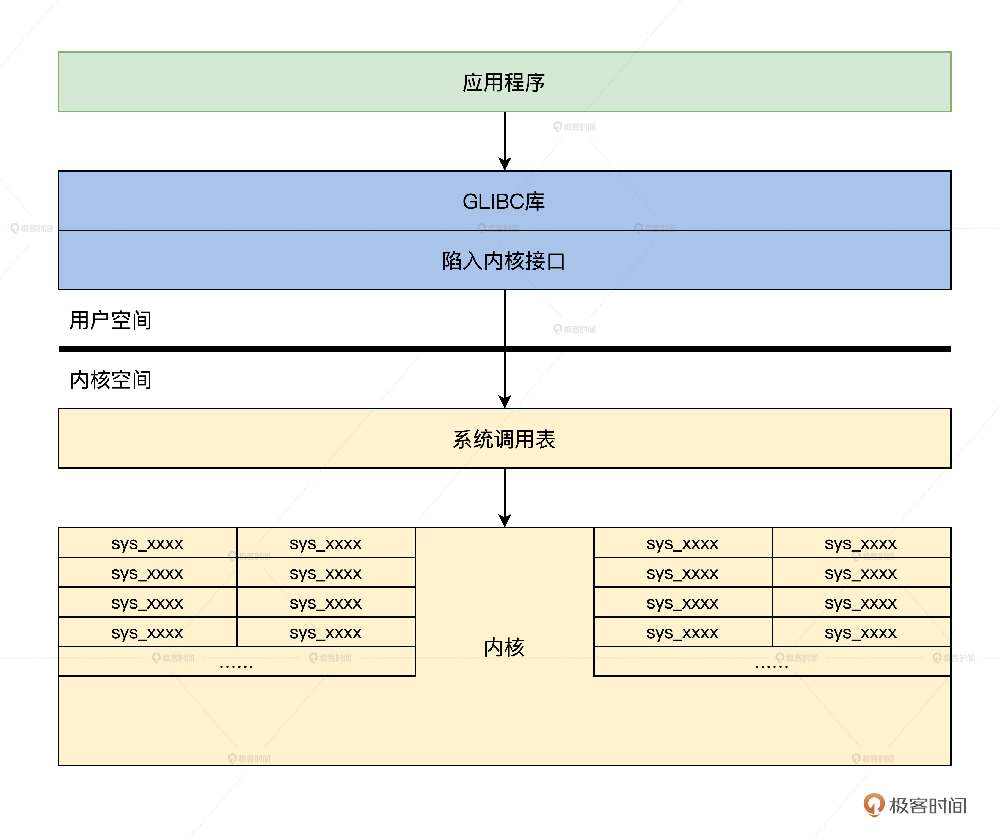
有了前面代码流程分析和结构示意图，我想你会对Linux内核API的框架结构加深了解。上图中的系统调用表和许多sys_xxxx函数你可能不太明白，别担心，我们后面就会讲到。
那么Linux系统有多少个API呢？我们一起去看看吧。
Linux内核有多少API接口
Linux作为比较成熟的操作系统，功能完善，它以众多API接口的方式向应用程序提供文件、网络、进程、时间等待服务，并且完美执行了国际posix标准。
Linux从最初几十个API接口，现在已经发展到了几百个API接口，从这里你可以预见到Linux内核功能增加的速度与数量。那么现在的Linux内核究竟有多少个API接口呢？我们还是要来看看最新发布的Linux内核版本，才能准确知道。
具体我们需要对Linux代码进行编译，在编译的过程中，根据syscall_32.tbl和syscall_64.tbl生成自己的syscalls_32.h和syscalls_64.h文件。
生成方式在 arch/x86/entry/syscalls/Makefile 文件中。这里面会使用两个脚本，即syscallhdr.sh、syscalltbl.sh，它们最终生成的 syscalls_32.h 和 syscalls_64.h两个文件中就保存了系统调用号和系统调用实现函数之间的对应关系，在里面可以看到Linux内核的系统调用号，即API号，代码如下所示。
//linux/arch/x86/include/generated/asm/syscalls_64.h
__SYSCALL_COMMON(0, sys_read)
__SYSCALL_COMMON(1, sys_write)
__SYSCALL_COMMON(2, sys_open)
__SYSCALL_COMMON(3, sys_close)
__SYSCALL_COMMON(4, sys_newstat)
__SYSCALL_COMMON(5, sys_newfstat)
__SYSCALL_COMMON(6, sys_newlstat)
__SYSCALL_COMMON(7, sys_poll)
__SYSCALL_COMMON(8, sys_lseek)
//……
__SYSCALL_COMMON(435, sys_clone3)
__SYSCALL_COMMON(436, sys_close_range)
__SYSCALL_COMMON(437, sys_openat2)
__SYSCALL_COMMON(438, sys_pidfd_getfd)
__SYSCALL_COMMON(439, sys_faccessat2)
__SYSCALL_COMMON(440, sys_process_madvise)
//linux/arch/x86/include/generated/uapi/asm/unistd_64.h
#define __NR_read 0
#define __NR_write 1
#define __NR_open 2
#define __NR_close 3
#define __NR_stat 4
#define __NR_fstat 5
#define __NR_lstat 6
#define __NR_poll 7
#define __NR_lseek 8
//……
#define __NR_clone3 435
#define __NR_close_range 436
#define __NR_openat2 437
#define __NR_pidfd_getfd 438
#define __NR_faccessat2 439
#define __NR_process_madvise 440
#ifdef __KERNEL__
#define __NR_syscall_max 440
#endif
上述代码中，已经定义了__NR_syscall_max为440，这说明Linux内核一共有441个系统调用，而系统调用号从0开始到440结束，所以最后一个系统调用是sys_process_madvise。
其实，__SYSCALL_COMMON除了表示系统调用号和系统调用函数之间的关系，还会在Linux内核的系统调用表中进行相应的展开，究竟展开成什么样子呢？我们一起接着看一看Linux内核的系统调用表。
Linux系统调用表
Linux内核有400多个系统调用，它使用了一个函数指针数组，存放所有的系统调用函数的地址，通过数组下标就能索引到相应的系统调用。这个数组叫sys_call_table，即Linux系统调用表。
sys_call_table到底长什么样？我们来看一看代码才知道，同时也解答一下前面留下的疑问，这里还是要说明一下，__SYSCALL_COMMON首先会替换成__SYSCALL_64，因为我们编译的Linux内核是x86_64架构的，如下所示。
#define __SYSCALL_COMMON(nr, sym) __SYSCALL_64(nr, sym)
//第一次定义__SYSCALL_64
#define __SYSCALL_64(nr, sym) extern asmlinkage long sym(unsigned long, unsigned long, unsigned long, unsigned long, unsigned long, unsigned long) ;
#include <asm/syscalls_64.h>//第一次包含syscalls_64.h文件，其中的宏会被展开一次，例如__SYSCALL_COMMON(2, sys_open)会被展开成：
extern asmlinkage long sys_open(unsigned long, unsigned long, unsigned long, unsigned long, unsigned long, unsigned long) ;
这表示申明
//取消__SYSCALL_64定义
#undef __SYSCALL_64
//第二次重新定义__SYSCALL_64
#define __SYSCALL_64(nr, sym) [ nr ] = sym,
extern asmlinkage long sys_ni_syscall(unsigned long, unsigned long, unsigned long, unsigned long, unsigned long, unsigned long);
const sys_call_ptr_t sys_call_table[] ____cacheline_aligned = {
[0 ... __NR_syscall_max] = &sys_ni_syscall,//默认系统调用函数，什么都不干
#include <asm/syscalls_64.h>//包含前面生成文件
//第二次包含syscalls_64.h文件，其中的宏会被再展开一次，例如__SYSCALL_COMMON(2, sys_open)会被展开成：
[2] = sys_open, 用于初始化这个数组，即表示数组的第二个元素填入sys_open
};
int syscall_table_size = sizeof(sys_call_table);//系统调用表的大小
上述代码中，通过两次包含syscalls_64.h文件，并在其中分别定义不同的__SYSCALL_64宏，完成了系统调用函数的申明和系统调用表的初始化，不得不说这是一个非常巧妙的方式。
sys_call_table数组，第一次全部初始化为默认系统调用函数sys_ni_syscall，这个函数什么都不干，这是为了防止数组有些元素中没有函数地址，从而导致调用失败。这在内核中是非常危险的。我单独提示你这点，其实也是希望你留意这种编程技巧，这在内核编码中并不罕见，考虑到内核编程代码的安全性，加一道防线可以有备无患。
Linux系统调用实现
前面我们已经了解了Linux系统调用的架构和Linux系统调用表，也清楚了Linux系统调用的个数和定义一个Linux系统调用的方式。
为了让你更好地理解Linux系统是如何工作的，我们为现有的Linux写一个系统调用。这个系统调用的功能并不复杂，就是返回你机器的CPU数量，即你的机器是多少核心的处理器。
为Linux增加一个系统调用，其实有很多步骤，不过也别慌，下面我将一步一步为你讲解。
下载Linux源码
想为Linux系统增加一个系统调用，首先你得有Linux内核源代码，如果你机器上没有Linux内核源代码，你就要去内核官网下载，或者你也可以到GitHub上git clone一份内核代码。
如果你使用了git clone的方式，可以用如下方式操作。
git clone git://git.kernel.org/pub/scm/linux/kernel/git/stable/linux-stable.git/
如果你想尽量保持与我的Linux内核版本相同，降低出现各种未知问题的概率，那么请你使用5.10.13版本的内核。另外别忘了，如果你下载的Linux内核是压缩包，请记得先解压到一个可以访问的目录下。
申明系统调用
根据前面的知识点，可以得知Linux内核的系统调用的申明文件和信息，具体实现是这样的：由一个makefile在编译Linux系统内核时调用了一个脚本，这个脚本文件会读取另一个叫syscall_64.tbl文件，根据其中信息生成相应的文件syscall_64.h。
请注意，我这里是以x86_64架构为例进行说明的，这里我们并不关注syscall_64.h的生成原理，只关注syscall_64.tbl文件中的内容。下面我们还是结合代码看一下吧。
//linux-5.10.13/arch/x86/entry/syscalls/syscall_64.tbl
0 common read sys_read
1 common write sys_write
2 common open sys_open
3 common close sys_close
4 common stat sys_newstat
5 common fstat sys_newfstat
6 common lstat sys_newlstat
7 common poll sys_poll
8 common lseek sys_lseek
9 common mmap sys_mmap
10 common mprotect sys_mprotect
11 common munmap sys_munmap
12 common brk sys_brk
//……
435 common clone3 sys_clone3
436 common close_range sys_close_range
437 common openat2 sys_openat2
438 common pidfd_getfd sys_pidfd_getfd
439 common faccessat2 sys_faccessat2
440 common process_madvise sys_process_madvise
上面这些代码可以分成四列，分别是系统调用号、架构、服务名，以及其相对应的服务入口函数。例如系统调用open的结构，如下表所示。
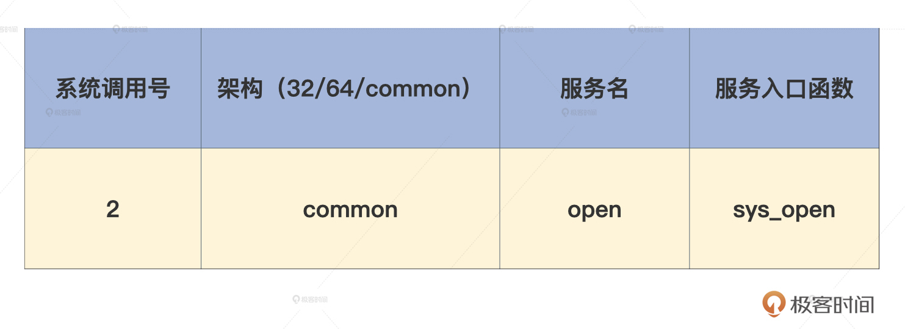
那我们要如何申明自己的系统调用呢？第一步就需要在syscall_64.tbl文件中增加一项，如下所示。
441 common get_cpus sys_get_cpus
我们自己的系统调用的系统调用号是441，架构是common ，服务名称是get_cpus，服务入口函数则是sys_get_cpus。请注意系统调用号要唯一，不能和其它系统调用号冲突。
写好这个，我们还需要把sys_get_cpus函数在syscalls.h文件中申明一下，供其它内核模块引用。具体代码如下所示。
//linux-5.10.13/include/linux/syscalls.h
asmlinkage long sys_get_cpus(void);
这一步做好之后，我们就完成了一个Linux系统调用的所有申明工作。下面我们就去定义这个系统调用的服务入口函数。
定义系统调用
我们现在来定义自己的第一个Linux系统调用，为了降低工程复杂度，我们不打算新建一个C模块文件，而是直接在Linux内核代码目录下挑一个已经存在的C模块文件，并在其中定义我们自己的系统调用函数。
定义一个系统调用函数，需要使用专门的宏。根据参数不同选用不同的宏，这个宏的细节我们无须关注。对于我们这个无参数的系统调用函数，应该使用SYSCALL_DEFINE0宏来定义，代码如下所示。
//linux-5.10.13/include/linux/syscalls.h
#ifndef SYSCALL_DEFINE0
#define SYSCALL_DEFINE0(sname) \
SYSCALL_METADATA(_##sname, 0); \
asmlinkage long sys_##sname(void); \
ALLOW_ERROR_INJECTION(sys_##sname, ERRNO); \
asmlinkage long sys_##sname(void)
#endif /* SYSCALL_DEFINE0 */
//linux-5.10.13/kernel/sys.c
SYSCALL_DEFINE0(get_cpus)
{
return num_present_cpus();//获取系统中有多少CPU
}
上述代码中SYSCALL_DEFINE0会将get_cpus转换成sys_get_cpus函数。这个函数中，调用了一个Linux内核中另一个函数num_present_cpus，从名字就能推断出作用了，它负责返回系统CPU的数量。 这正是我们要达到的结果。这个结果最终会返回给调用这个系统调用的应用程序。
编译Linux内核
现在我们的Linux系统调用的代码，已经写好了，不过这跟编写内核模块还是不一样的。编写内核模块，我们只需要把内核模块动态加载到内核中，就可以直接使用了。系统调用发生在内核中，与内核是一体的，它无法独立成为可以加载的内核模块。所以我们需要重新编译内核，然后使用我们新编译的内核。
要编译内核首先是要配置内核，内核的配置操作非常简单，我们只需要源代码目录下执行“make menuconfig”指令，就会出现如下所示的界面。
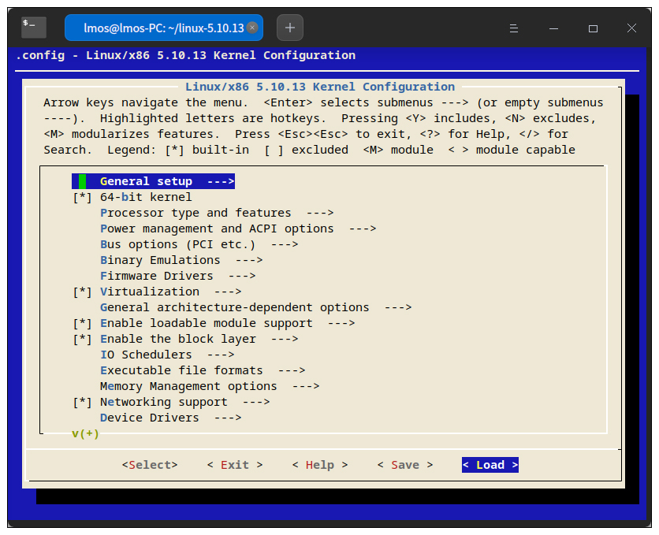
图中这些菜单都可以进入子菜单或者手动选择。
但是手动选择配置项非常麻烦且危险，如果不是资深的内核玩家，不建议手动配置！但是我们可以选择加载一个已经存在的配置文件，这个配置文件可以加载你机器上boot目录下的config开头的文件，加载之后选择Save，就能保存配置并退出以上界面。
然后输入如下指令，就可以喝点茶、听听音乐，等待机器自行完成编译，编译的时间取决于机器的性能，快则十几分钟，慢则几个小时。
make -j8 bzImage && make -j8 modules
上述代码指令干了哪些事儿呢？我来说一说，首先要编译内核，然后再编译内核模块，j8表示开启8线程并行编译，这个你可以根据自己的机器CPU核心数量进行调整。
编译过程结束之后就可以开始安装新内核了，你只需要在源代码目录下，执行如下指令。
sudo make modules_install && sudo make install
上述代码指令先安装好内核模块，然后再安装内核，最后会调用update-grub，自动生成启动选项，重启计算机就可以选择启动我们自己修改的Linux内核了。
编写应用测试
相信经过上述过程，你应该已经成功启动了修改过的新内核。不过我们还不确定我们增加的系统调用是不是正常的，所以我们还要写个应用程序测试一下，其实就是去调用一下我们增加的系统调用，看看结果是不是预期的。
我们应用程序代码如下所示。
#include <stdio.h>
#include <unistd.h>
#include <sys/syscall.h>
int main(int argc, char const *argv[])
{
//syscall就是根据系统调用号调用相应的系统调用
long cpus = syscall(441);
printf("cpu num is:%d\n", cpus);//输出结果
return 0;
}
对上述代码我们使用gcc main.c -o cpus指令进行编译，运行之后就可以看到结果了，但是我们没有写库代码，而是直接使用syscall函数。这个函数可以根据系统调用号触发系统调用，根据上面定义，441正是对应咱们的sys_get_cpus系统调用。
至此，在Linux系统上增加自己的系统调用这个实验，我们就完成了。
重点回顾
今天我们从了解Linux系统的API架构开始，最后在Linux系统上实现了一个自己的系统调用，虽然增加一个系统调用步骤不少，但你只要紧跟着我的思路一定可以拿下。
下面我来为你梳理一下课程的重点。
1.从Linux系统的API架构开始，我们了解了glibc库，这个库是大部分应用程序的基础，我们以其中的open函数为例，分析了库函数如何通过寄存器传递参数，最后执行syscall指令进入Linux内核，执行系统调用，最后还归纳出一幅Linux系统API框架图。
2.然后,我们了解Linux系统中有多少个API，它们都放在系统调用表中，同时也知道了Linux系统调用表的生成方式。
3.最后，为了验证我们了解的知识是否正确，我们从申明系统调用、定义系统调用到编译内核、编写应用测试，在现有的Linux代码中增加了一个属于我们自己的系统调用。
好了，我们通过这节课搞清楚了Linux内核系统调用的实现原理。你是否感觉这和我们的Cosmos的系统服务有些相似，又有些不同？
相似的是我们都使用寄存器来传递参数，不同的是Cosmos使用了中断门进入内核，而Linux内核使用了更新的syscall指令。有了这些知识储备，我也非常期待你能动手拓展，挑战一下在Cosmos上实现使用syscall触发系统调用。
思考题
请说说syscall指令和int指令的区别，是什么？
欢迎你在留言区跟我交流互动，也推荐你把这节课分享给有需要的朋友，一起实现操作系统里的各种功能。
我是LMOS，我们下节课见。
43 虚拟机内核：KVM是什么？
你好，我是LMOS。
上节课，我们理解了Linux里要如何实现系统API。可是随着云计算、大数据和分布式技术的演进，我们需要在一台服务器上虚拟化出更多虚拟机，还要让这些虚拟机能够弹性伸缩，实现跨主机的迁移。
而虚拟化技术正是这些能力的基石。这一节课，就让我们一起探索一下，亚马逊、阿里、腾讯等知名公司用到的云虚拟主机，看看其中的核心技术——KVM虚拟化技术。
理解虚拟化的定义
什么是虚拟化？在我看来，虚拟化的本质是一种资源管理的技术，它可以通过各种技术手段把计算机的实体资源（如：CPU、RAM、存储、网络、I/O等等）进行转换和抽象，让这些资源可以重新分割、排列与组合，实现最大化使用物理资源的目的。
虚拟化的核心思想
学习了前面的课程我们发现，操作系统的设计很高明，已经帮我们实现了单机的资源配置需求，具体就是在一台物理机上把CPU、内存资源抽象成进程，把磁盘等资源抽象出存储、文件、I/O等特性，方便之后的资源调度和管理工作。
但随着时间的推移，我们做个统计就会发现，其实现在的PC机平常可能只有50%的时间处于工作状态，剩下的一半时间都是在闲置资源，甚至要被迫切换回低功耗状态。这显然是对资源的严重浪费，那么我们如何解决资源复用的问题呢？
这个问题确实很复杂，但根据我们的工程经验，但凡遇到不太好解决的问题，我们就可以考虑抽象出一个新的层次来解决。于是我们在已有的OS经验之上，进行了后面这样的设计。
结合图解，可以看出最大的区别就是后者额外引入了一个叫Hypervisor/Virtual Machine Monitor（VMM）的层。在这个层里面我们就可以做一些“无中生有”的事情，向下统一管理和调度真实的物理资源，向上“骗”虚拟机，让每个虚拟机都以为自己都独享了独立的资源。
而在这个过程中，我们既然作为一个“两头骗的中间商”，显然要做一些瞒天过海的事情（访问资源的截获与重定向）。那么让我们先暂停两分钟，思考一下具体如何设计，才能实现这个“两头骗”的目标呢？
用赵高矫诏谈理解虚拟化
说起欺上瞒下，有个历史人物很有代表性，他就是赵高。始皇三十七年（前210年），统一了天下的秦始皇（OS）在生平最后一次出巡路上去世了，管理诏书的赵高（Hypervisor/VMM）却趁机发动了阴谋，威胁丞相李斯，矫诏处死扶苏与蒙恬。

赵高隐瞒秦始皇死讯，还伪造了诏书，回到了咸阳最终一顿忽悠立了胡亥为为帝。这段故事后世称为沙丘之变。
作为一个成功瞒天过海，实现了偷梁换柱的中间人赵高，他成事的关键要点包括这些，首先要像咸阳方向伪造一切正常的假象（让被虚拟化的机器看起来和平常一样），其次还要把真正核心的权限获取到手（Hypervisor/VMM要想办法调度真正的物理资源）。
所以以史为鉴。在具体实现的层面，我们会发现，这个瞒天过海的目标其实有几种实现方式。
一种思路是赵高一个人全权代理，全部模拟和代理出所有的资源（软件虚拟化技术），另一种思路是朝中有人（胡亥）配合赵高控制、调度各种资源的使用，真正执行的时候，再转发给胡亥去处理（硬件虚拟化技术）。
我们发现如果如果是前者，显然赵高会消耗大量资源，并且还可能会遇到一些安全问题，所以他选择了后者。
历史总是惊人地相似，在软件虚拟化遇到了无法根治的性能瓶颈和安全等问题的时候，软件工程师就开始给硬件工程师提需求了，需求背后的核心想法是这样的：能不能让朝中有人，有问题交给他，软件中间层只管调度资源之类的轻量级工作呢？
KVM架构梳理
答案显然是可以的，根据我们对计算机的了解就会发现，计算机最重要几种资源分别是：计算（CPU）、存储（RAM、ROM），以及为了连接各种设备抽象出的I/O资源。
所以Intel分别设计出了VT-x指令集、VT-d指令集、VT-c指令集等技术来实现硬件虚拟化，让CPU配合我们来实现这个目标，了解了核心思想之后，让我们来看一看KVM的架构图。（图片出自论文《Residency-Aware Virtual Machine Communication Optimization: Design Choices and Techniques》）

是不是看起来比较复杂？别担心，我用大白话帮你梳理一下。
首先，客户机（咸阳）看到的硬件资源基本都是由Hypervisor（赵高）模拟出来的。当客户机对模拟设备进行操作时，命令就会被截获并转发给实际设备/内核模块（胡亥）去处理。
通过这种架构设计Hypervisor层，最终实现了把一个客户机映射到宿主机OS系统的一个进程，而一个客户机的vCPU则映射到这个进程下的独立的线程中。同理，I/O也可以映射到同一个线程组内的独立线程中。
这样，我们就可以基于物理机OS的进程等资源调度能力，实现不同虚拟机的权限限定、优先级管理等功能了。
KVM核心原理
通过前面的知识，我们发现，要实现成功的虚拟化，核心是要对资源进行“欺上瞒下”。而对应到我们计算机内的最重要的资源，可以简单抽象成为三大类，分别是：CPU、内存、I/O。接下来，我们就来看看如何让这三大类资源做好虚拟化。
CPU虚拟化原理
众所周知，CPU是我们计算机最重要的模块，让我们先看看Intel CPU是如何跟Hypervisor/VMM“里应外合”的。
Intel定义了Virtual Machine Extension（VMX）这个处理器特性，也就是传说中的VT-x指令集，开启了这个特性之后，就会存在两种操作模式。它们分别是：根操作（VMX root operation）和非根操作（VMX non-root operation）。
我们之前说的Hypervisor/VMM，其实就运行在根操作模式下，这种模式下的系统对处理器和平台硬件具有完全的控制权限。
而客户软件（Guest software）包括虚拟机内的操作系统和应用程序，则运行在非根操作模式下。当客户软件执行一些特殊的敏感指令或者一些异常（如CPUID、INVD、INVEPT指令，中断、故障、或者一些寄存器操作等）时，则会触发VM-Exit指令切换回根操作模式，从而让Hypervisor/VMM完全接管控制权限。
下面这张图画出了模式切换的过程，想在这两种模式之间切换，就要通过VM-Entry和VM-Exit实现进入和退出。而在这个切换过程中，你要留意一个非常关键的数据结构，它就是VMCS（Virtual Machine Control Structure）数据结构控制（下文也会讲到）。

内存虚拟化原理
内存虚拟化的核心目的是“骗”客户机，给每个虚拟客户机都提供一个从0开始的连续的物理内存空间的假象，同时又要保障各个虚拟机之间内存的隔离和调度能力。
可能有同学已经联想到，我们之前实现实现虚拟内存的时候，不也是在“骗”应用程序每个程序都有连续的物理内存，为此还设计了一大堆“转换表”的数据结构和转换、调度机制么？
没错，其实内存虚拟化也借鉴了相同的思想，只不过问题更复杂些，因为我们发现我们的内存从原先的虚拟地址、物理地址突然变成了后面这四种内存地址。
1.客户机虚拟地址GVA（Guest Virtual Address）- 2.客户机物理地址GPA（Guest Physical Address）- 3.宿主机虚拟地址HVA（Host Virtual Address）- 4.宿主机物理地址HPA（Host Physical Address）
一看到有这么多种地址，又需要进行地址转换，想必转换时的映射关系表是少不掉的。
确实，早期我们主要是基于影子页表（Shadow Page Table）来进行转换的，缺点就是性能有不小的损耗。所以，后来Intel在硬件上就设计了EPT（Extended Page Tables）机制，用来提升内存地址转换效率。
I/O虚拟化原理
I/O虚拟化是基于Intel的VT-d指令集来实现的，这是一种基于North Bridge北桥芯片（或MCH）的硬件辅助虚拟化技术。
运用VT-d技术，虚拟机得以使用基于直接I/O设备分配方式，或者用I/O设备共享方式来代替传统的设备模拟/额外设备接口方式，不需要硬件改动，还省去了中间通道和VMM的开销，从而大大提升了虚拟化的I/O性能，让虚拟机性能更接近于真实主机。
KVM关键代码走读
前面我们已经明白了CPU、内存、I/O这三类重要的资源是如何做到虚拟化的。不过知其然,也要知其所以然，对知识只流于原理是不够的。接下来让我们来看看，具体到代码层面，虚拟化技术是如何实现的。
创建虚拟机
这里我想提醒你的是，后续代码为了方便阅读和理解，只保留了与核心逻辑相关的代码，省略了部分代码。
首先，我们来看一下虚拟机初始化的入口部分，代码如下所示。
virt/kvm/kvm_main.c:
static int kvm_dev_ioctl_create_vm(void)
{
int fd;
struct kvm *kvm;
kvm = kvm_create_vm(type);
if (IS_ERR(kvm))
return PTR_ERR(kvm);
r = kvm_coalesced_mmio_init(kvm);
r = get_unused_fd_flags(O_CLOEXEC);
/*生成kvm-vm控制文件*/
file = anon_inode_getfile("kvm-vm", &kvm_vm_fops, kvm, O_RDWR);
return fd;
}
接下来。我们要创建KVM中内存、I/O等资源相关的数据结构并进行初始化。
virt/kvm/kvm_main.c:
static struct kvm *kvm_create_vm(void)
{
int r, i;
struct kvm *kvm = kvm_arch_create_vm();
/*设置kvm的mm结构为当前进程的mm,然后引用计数为1*/
kvm->mm = current->mm;
kvm_eventfd_init(kvm);
mutex_init(&kvm->lock);
mutex_init(&kvm->irq_lock);
mutex_init(&kvm->slots_lock);
refcount_set(&kvm->users_count, 1);
INIT_LIST_HEAD(&kvm->devices);
INIT_HLIST_HEAD(&kvm->irq_ack_notifier_list);
r = kvm_arch_init_vm(kvm, type);
r = hardware_enable_all()
for (i = 0; i < KVM_NR_BUSES; i++) {
rcu_assign_pointer(kvm->buses[i],
kzalloc(sizeof(struct kvm_io_bus), GFP_KERNEL));
}
kvm_init_mmu_notifier(kvm);
/*把kvm链表加入总链表*/
list_add(&kvm->vm_list, &vm_list);
return kvm;
}
结合代码我们看得出，初始化完毕后会将KVM加入到一个全局链表头。这样,我们后面就可以通过这个链表头，遍历所有的VM虚拟机了。
创建vCPU
创建VM之后，接下来就是创建我们虚拟机赖以生存的vCPU了，代码如下所示。
virt/kvm/kvm_main.c:
static int kvm_vm_ioctl_create_vcpu(struct kvm *kvm, u32 id)
{
int r;
struct kvm_vcpu *vcpu, *v;
/*调用相关cpu的vcpu_create 通过arch/x86/x86.c 进入vmx.c*/
vcpu = kvm_arch_vcpu_create(kvm, id);
/*调用相关cpu的vcpu_setup*/
r = kvm_arch_vcpu_setup(vcpu);
/*判断是否达到最大cpu个数*/
mutex_lock(&kvm->lock);
if (atomic_read(&kvm->online_vcpus) == KVM_MAX_VCPUS) {
r = -EINVAL;
goto vcpu_destroy;
}
kvm->created_vcpus++;
mutex_unlock(&kvm->lock);
/*生成kvm-vcpu控制文件*/
/* Now it's all set up, let userspace reach it */
kvm_get_kvm(kvm);
r = create_vcpu_fd(vcpu);
kvm_get_kvm(kvm);
r = create_vcpu_fd(vcpu);
if (r < 0) {
kvm_put_kvm(kvm);
goto unlock_vcpu_destroy;
}
kvm->vcpus[atomic_read(&kvm->online_vcpus)] = vcpu;
/*
* Pairs with smp_rmb() in kvm_get_vcpu. Write kvm->vcpus
* before kvm->online_vcpu's incremented value.
*/
smp_wmb();
atomic_inc(&kvm->online_vcpus);
mutex_unlock(&kvm->lock);
kvm_arch_vcpu_postcreate(vcpu);
}
接着，从这部分代码顺藤摸瓜。
我们首先在第7行的kvm_arch_vcpu_create()函数内进行vcpu_vmx结构的申请操作，然后还对vcpu_vmx进行了初始化。在这个函数的执行过程中，同时还会设置CPU模式寄存器（MSR寄存器）。
接下来，我们会分别为guest和host申请页面，并在页面里保存MSR寄存器的信息。最后，我们还会申请一个vmcs结构，并调用vmx_vcpu_setup设置vCPU的工作模式，这里就是实模式。（一看到把vCPU切换回实模式，有没有一种轮回到我们第五节课的感觉？）
vCPU运行
不过只把vCPU创建出来是不够的，我们还要让它运行起来，所以我们来看一下vcpu_run函数。
arch/x86/kvm/x86.c:
static int vcpu_run(struct kvm_vcpu *vcpu)
{
int r;
struct kvm *kvm = vcpu->kvm;
for (;;) {
/*vcpu进入guest模式*/
if (kvm_vcpu_running(vcpu)) {
r = vcpu_enter_guest(vcpu);
} else {
r = vcpu_block(kvm, vcpu);
}
kvm_clear_request(KVM_REQ_PENDING_TIMER, vcpu);
/*检查是否有阻塞的时钟timer*/
if (kvm_cpu_has_pending_timer(vcpu))
kvm_inject_pending_timer_irqs(vcpu);
/*检查是否有用户空间的中断注入*/
if (dm_request_for_irq_injection(vcpu) &&
kvm_vcpu_ready_for_interrupt_injection(vcpu)) {
r = 0;
vcpu->run->exit_reason = KVM_EXIT_IRQ_WINDOW_OPEN;
++vcpu->stat.request_irq_exits;
break;
}
kvm_check_async_pf_completion(vcpu);
/*是否有阻塞的signal*/
if (signal_pending(current)) {
r = -EINTR;
vcpu->run->exit_reason = KVM_EXIT_INTR;
++vcpu->stat.signal_exits;
break;
}
/*执行一个调度*/
if (need_resched()) {
cond_resched();
}
}
看到这里，我们终于理解了上文说的VM-Exit、VM-Entry指令进入、退出的本质了。这其实是就是通过vcpu_enter_guest进入/退出vCPU，在根模式之间来回切换、反复横跳的过程。
内存虚拟化
在vcpu初始化的时候，会调用kvm_init_mmu来设置虚拟内存初始化。在这里会有两种不同的模式，一种是基于EPT的方式，另一种是基于影子页表实现的soft mmu方式。
arch/x86/kvm/mmu/mmu.c
void kvm_init_mmu(struct kvm_vcpu *vcpu, bool reset_roots)
{
......
/*嵌套虚拟化，我们暂不考虑了 */
if (mmu_is_nested(vcpu))
init_kvm_nested_mmu(vcpu);
else if (tdp_enabled)
init_kvm_tdp_mmu(vcpu);
else
init_kvm_softmmu(vcpu);
}
I/O虚拟化
I/O虚拟化其实也有两种方案，一种是全虚拟化方案，一种是半虚拟化方案。区别在于全虚拟化会在VM-exit退出之后把IO交给QEMU处理，而半虚拟化则是把I/O变成了消息处理，从客户机（guest）机器发消息出来，宿主机（由host）机器来处理。
arch/x86/kvm/vmx.c:
static int handle_io(struct kvm_vcpu *vcpu)
{
unsigned long exit_qualification;
int size, in, string;
unsigned port;
exit_qualification = vmcs_readl(EXIT_QUALIFICATION);
string = (exit_qualification & 16) != 0;
++vcpu->stat.io_exits;
if (string)
return kvm_emulate_instruction(vcpu, 0) == EMULATE_DONE;
port = exit_qualification >> 16;
size = (exit_qualification & 7) + 1;
in = (exit_qualification & 8) != 0;
return kvm_fast_pio(vcpu, size, port, in);
}
重点回顾
好，这节课的内容告一段落了，我来给你做个总结。历史总是惊人相似，今天我用一个历史故事带你理解了虚拟化的核心思想，引入一个专门的层，像赵高一样瞒天过海，向下统一管理和调度真实的物理资源，向上“骗”虚拟机。
而要想成功实现虚拟化，核心就是对资源进行“欺上瞒下”。我带你梳理分析了KVM的基本架构以及CPU、RAM、I/O三大件的虚拟化原理。其中，内存虚拟化虽然衍生出了四种内存，但你不妨以用当初物理内存与虚拟内存的思路做类比学习。
之后，我又带你进行了KVM核心逻辑相关的代码走读，如果你有兴趣阅读完整的KVM代码，可以到官方仓库搜索。
最后，为了帮你巩固今天的学习内容，我特意整理了导图。
思考题
有了KVM作为虚拟化的基石之后，如果让你从零开始，设计一款像各大云厂商IAAS平台一样的虚拟化平台，还需要考虑哪些问题呢？
欢迎你在留言区跟我互动，也欢迎你把这节课转发给自己的朋友，跟他一起探讨KVM的相关问题。
我是LMOS，我们下节课见！
44 容器：如何理解容器的实现机制？
你好，我是LMOS。
上节课我带你通过KVM技术打开了计算机虚拟化技术的大门，KVM技术是基于内核的虚拟机，同样的KVM和传统的虚拟化技术一样，需要虚拟出一台完整的计算机，对于某些场景来说成本会比较高，其实还有比KVM更轻量化的虚拟化技术，也就是今天我们要讲的容器。
这节课我会先带你理解容器的概念，然后把它跟虚拟机作比较，之后为你讲解容器的基础架构跟基础技术，虽然这样安排有点走马观花，但这些内容都是我精选的核心知识，相信会为你以后继续探索容器打下一个良好的基础。
什么是容器
容器的名词源于container，但不得不说我们再次被翻译坑了。相比“容器”，如果翻译成“集装箱”会更加贴切。为啥这么说呢？
我们先从“可复用”说起，现实里我们如果有一个集装箱的模具和原材料，很容易就能批量生产出多个规格相同的集装箱。从功能角度看，集装箱可以用来打包和隔离物品。不同类型的物品放在不同的集装箱里，这样东西就不会混在一起。
而且，集装箱里的物品在运输过程中不易损坏，具体说就是不管集装箱里装了什么东西，被送到哪里，只要集装箱没破坏，再次开箱时放在里面的东西就是完好无损的。
因此，我们可以这样来理解，容器是这样一种工作模式：轻量、拥有一个模具（镜像），既可以规模生产出多个相同集装箱（运行实例），又可以和外部环境（宿主机）隔离，最终实现对“内容”的打包隔离，方便其运输传送。
如果把容器看作集装箱，那内部运行的进程/应用就应该是集装箱里的物品了，类比来看，容器的目的就是提供一个独立的运行环境。
和虚拟机的对比
我们传统的虚拟化技术可以通过硬件模拟来实现，也可以通过操作系统软件来实现，比如上节课提到的KVM。
为了让虚拟的应用程序达到和物理机相近的效果，我们使用了Hypervisor/VMM（虚拟机监控器），它允许多个操作系统共享一个或多个CPU，但是却带来了很大的开销，由于虚拟机中包括全套的OS，调度与资源占用都非常重。
容器（container）是一种更加轻量级的操作系统虚拟化技术，它将应用程序，依赖包，库文件等运行依赖环境打包到标准化的镜像中，通过容器引擎提供进程隔离、资源可限制的运行环境，实现应用与OS平台及底层硬件的解耦。
为了大大降低我们的计算成本，节省物理资源，提升计算机资源的利用率，让虚拟技术更加轻量化，容器技术应运而生。那么如何实现一个容器程序呢？我们需要先看看容器的基础架构。
看一看容器基础架构
容器概念的起源是哪里？其实是从UNIX系统的chroot这个系统调用开始的。
在Linux系统上，LXC是第一个比较完整的容器，但是功能上还存在一定的不足，例如缺少可移植性，不够标准化。后面Docker的出现解决了容器标准化与可移植性问题，成为现在应用最广泛的容器技术。
Docker是最经典，使用范围最广，最具有代表性的容器技术。所以我们就以它为例，先对容器架构进行分析，Docker应用是一种C/S架构，包括3个核心部分。
容器客户端（Client）
首先来看Docker的客户端，其主要任务是接收并解析用户的操作指令和执行参数，收集所需要的配置信息，根据相应的Docker命令通过HTTP或REST API等方式与Docker daemon（守护进程）进行交互，并将处理结果返回给用户，实现Docker服务使用与管理。
当然我们也可以使用其他工具通过Docker提供的API与daemon通信。
容器镜像仓库（Registry）
Registry就是存储容器镜像的仓库，在容器的运行过程中，Client在接受到用户的指令后转发给Host下的Daemon，它会通过网络与Registry进行通信，例如查询镜像（search），下载镜像（pull），推送镜像（push）等操作。
镜像仓库可以部署在公网环境，如Docker Hub，我们也可以私有化部署到内网，通过局域网对镜像进行管理。
容器管理引擎进程（Host）
容器引擎进程是Docker架构的核心，包括运行Docker Daemon（守护进程）、Image（镜像）、驱动（Driver）、Libcontainer（容器管理）等。
接下来，我们详细说说守护进程、镜像、驱动和容器管理这几个模块的运作机制/实现原理。
Docker Daemon详解
首先来看Docker Daemon进程，它是一个常驻后台的系统进程，也是Docker架构中非常重要的一环。Docker Daemon负责监听客户端请求，然后执行后续的对应逻辑，还能管理Docker对象（容器、镜像、网络、磁盘等）。
我们可以把Daemon分为三大部分，分别是Server、Job、Engine。
Server负责接收客户端发来的请求（由Daemon在后台启动Server）。接受请求以后Server通过路由与分发调度找到相应的Handler执行请求，然后与容器镜像仓库交互（查询、拉取、推送）镜像并将结果返回给Docker Client。
而Engine是Daemon架构中的运行引擎，同时也是Docker运行的核心模块。Engine扮演了Docker container存储仓库的角色。Engine执行的每一项工作，都可以拆解成多个最小动作——Job，这是Engine最基本的工作执行单元。
其实，Job不光能用在Engine内部，Docker内部每一步操作，都可以抽象为一个Job。Job负责执行各项操作时，如储存拉取的镜像，配置容器网络环境等，会使用下层的Driver（驱动）来完成。
Docker Driver
Driver顾名思义就是Docker中的驱动。设计驱动这一层依旧是解耦，将容器管理的镜像、网络和隔离执行逻辑从Docker Daemon的逻辑中剥离。
在Docker Driver的实现中，可以分为以下三类驱动。
- graphdriver负责容器镜像的管理，主要就是镜像的存储和获取，当镜像下载的时候，会将镜像持久化存储到本地的指定目录；
- networkdriver主要负责Docker容器网络环境的配置，如Docker运行时进行IP分配端口映射以及启动时创建网桥和虚拟网卡；
- execdriver是Docker的执行驱动，通过操作Lxc或者libcontainer实现资源隔离。它负责创建管理容器运行命名空间、管理分配资源和容器内部真实进程的运行；
libcontainer
上面我们提到execdriver，通过调用libcontainer来完成对容器的操作，加载容器配置container，继而创建真正的Docker容器。libcontainer提供了访问内核中和容器相关的API，负责对容器进行具体操作。
容器可以创建出一个相对隔离的环境，就容器技术本身来说，容器的核心部分是利用了我们操作系统内核的虚拟化技术，那么libcontainer中到底用到了哪些操作系统内核中的基础能力呢？
容器基础技术
我们经常听到，Docker是一个基于Linux操作系统下的Namespace和Cgroups和UnionFS的虚拟化工具，下面我带你看一下这几个容器用到的内核中的基础能力。
Linux NameSpace
容器的一大特点就是创造出一个相对隔离的环境。在Linux内核中，实现各种资源隔离功能的技术就叫Linux Namespace，它可以隔离一系列的系统资源，比如PID（进程ID）、UID（用户ID）、Network等。
看到这里，你很容易就会想到开头讲的chroot系统调用。类似于chroot把当前目录变成被隔离出的根目录，使得当前目录无法访问到外部的内容，Namespace在基于chroot扩展升级的基础上，也可以分别将一些资源隔离起来，限制每个进程能够访问的资源。
Linux内核提供了7类Namespace，以下是不同Namespace的隔离资源和系统调用参数。
1.PID Namespace：保障进程隔离，每个容器都以PID=1的init进程来启动。PID Namespace使用了的参数CLONE_NEWPID。类似于单独的Linux系统一样，每个NameSpace都有自己的初始化进程，PID为1，作为所有进程的父进程，父进程拥有很多特权。其他进程的PID会依次递增，子NameSpace的进程映射到父NameSpace的进程上，父NameSpace可以拿到全部子NameSpace的状态，但是每个子NameSpace之间是互相隔离的。
2.User Namespace：用于隔离容器中UID、GID以及根目录等。User Namespace使用了CLONE_NEWUSER的参数，可配置映射宿主机和容器中的UID、GID。某一个UID的用户，虚拟化出来一个Namespace，在当前的Namespace下，用户是具有root权限的。但是，在宿主机上面，他还是那个用户，这样就解决了用户之间隔离的问题。
3.UTS Namespace：保障每个容器都有独立的主机名或域名。UTS Namespace使用了的参数CLONE_NEWUTS，用来隔离hostname 和 NIS Domain name 两个系统标识，在UTS Namespace里面，每个Namespace允许有自己的主机名，作用就是可以让不同namespace中的进程看到不同的主机名。
4.Mount Namespace: 保障每个容器都有独立的目录挂载路径。Mount Namespace使用了的参数CLONE_NEWNS，用来隔离各个进程看到的挂载点视图，Mount Namespace非常类似于我们前面提到的的chroot系统调用。
5.NET Namespace：保障每个容器有独立的网络栈、socket和网卡设备。NET Namespace使用了参数CLONE_NEWNET，隔离了和网络有关的资源，如网络设备、IP地址端口等。NET Namespace可以让每个容器拥有自己独立的（虚拟的）网络设备，而且容器内的应用可以绑定到自己的端口，每个Namespace内的端口都不会互相冲突。
6.IPC Namespace：保障每个容器进程IPC通信隔离。IPC Namespace使用了的参数CLONE_NEWIPC，IPC Namespace用来隔离System V IPC和POSIX message queues，只有在相同IPC命名空间的容器进程之间才可以共享内存、信号量、消息队列通信。
7.Cgroup Namespace：保障容器容器中看到的 cgroup 视图，像宿主机一样以根形式来呈现，同时让容器内使用 cgroup 变得更安全。
上面讲了这么多类Namespace，我们可以先从共性入手熟悉它们，7类Namespace主要使用如下3个系统调用函数，其实也就是和进程有关的调用函数。
1.clone：创建新进程，根据传入上面的不同NameSpace类型，来创建不同的NameSpace进行隔离，同样的，对应的子进程也会被包含到这些Namespace中。
int clone(int (*child_func)(void *), void *child_stac, int flags, void *arg);
flags就是标志用来描述你需要从父进程继承哪些资源，这里flags参数为将要创建的NameSpace类型，可以为一个或多个
2.unshare：将进程移出某个指定类型的Namespace，并加入到新创建的NameSpace中， 容器中NameSpace也是通过unshare系统调用创建的。
int unshare(int flags);
flags同上
3.setns：将进程加入到Namespace中。
int setns(int fd, int nstype);
fd： 加入的NameSpace，指向/proc/[pid]/ns/目录里相应NameSpace对应的文件，
nstype：NameSpace类型
好了，刚刚我给你简单讲了NameSpace的作用以及不同类型的NameSpace。这几种Namespace都是只为做一件事，隔离容器的运行环境，此外，NameSpace是和进程息息相关的，NameSpace将全局共享的资源划分为多组进程间共享的资源，当一个NameSpace下的进程全部退出，NameSpace也会被销毁。
有了这么多的Namespace共同合作，我们才最终实现了容器进程运行环境的隔离。
现在隔离的问题已经解决，那么容器是怎么限制每个被隔离的容器的开销大小，保证容器间不会存在打架，互相争抢的问题呢？这就要用到Linux内核的Cgroups技术了。
Linux Cgroups
Linux Cgroups（Control Groups）主要负责对指定的一组进程做资源限制，同时可以统计其资源使用。具体包括CPU、内存、存储、I/O、网络等资源。
我们有了Cgroups，就不用担心某一组容器进程突然将计算机的全部物理资源占满这种问题了，可以方便地限制和实时地监控某一组容器进程的资源占用。
Cgrpups包含几个核心概念，分别是Task (任务)、Control Groups（控制组）、subsystem（子系统）、hierarchy（层级数）。
- Task: 任务，在Cgroup中，任务同样是一个进程。
- Control Groups：控制组，Cgroups的一组进程，并可以在这个Cgroups通过参数，将一组进程和一组linux subsystem关联起来。
- subsystem：子系统，是一组资源控制模块，subsystem作用于hierarchy的Cgroup节点，并控制节点中进程的资源占用。
- hierarchy：层级树Cgroups，将Cgroup通过树状结构串起来，通过虚拟文件系统的方式暴露给用户。
Linux内核提供了很多Cgroup subsystem参数，我们了解一下容器中常用的几类。：
Linux内核提供了很多Cgroup驱动，容器中常用的是下面两种。
1.Cgroupfs驱动：需要限制CPU或内存使用时，直接把容器进程的PID写入相应的CPU或内存的cgroup。- 2.systemdcgroup驱动：提供cgroup管理，所有的cgroup写操作需要通过systemd的接口来完成，不能手动修改。
了解了Cgroups subsystem的类型，那么容器到底要怎么调用内核才能配置Cgroups呢？我们动手实验下，才会有更深的体会。
新建Cgroup挂载文件
首先我们试下新建一个Cgroup，名为cgroup-cosmos，我们先创建一个hierarchy，再进行挂载代码如下。
mkdir cgroup-cosmos
sudo mount -t cgroup -o none,name=cgroup-cosmos cgroup-cosmos cgroup-cosmos/
ll ./cgroup-cosmos
可以看到我们生成了Cgroup的几个配置文件，这些就是hierarchy根节点的配置文件。
创建子Cgroup
接下来，我们要创建子Cgroup，名为cgroup-cosmos-a。
cd cgroup-cosmos
mkdir cgroup-cosmos-a
tree
可以看到，我们在根节点下新建一个目录，会默认识别为一个子Cgroup，而且它会继承父级的配置。
在Cgroup中添加、移动进程
目录建好了，添加、移动进程的操作也很简单，我们只要将当前的进程ID写入对应的cgroup文件即可，代码如下。
echo $$ // 583
cat /proc/583/cgroup

结合图里的代码我们发现，当前的583进程是在cgroup-cosmos下，现在我们将终端进程移动到cgroup-cosmos-a。
cd cgroup-cosmos-a
sh -c "echo $$ >> tasks"
可以看到。现在583进程已经移动到group-cosmos: /group-cosmos-a目录下了。
限制Cgroup中进程的资源
前面我们曾经说过Cgroup可以限制资源，那具体要怎么操作呢？
前面我们创建的hierarchy其实并没有关联到任何的subsystem，所以没办法通过它来限制资源使用。但是系统给每个hierarchy都制定了默认的subsystem，我们看一下具体代码。
# 查看hierarchy的subsystem，为/sys/fs/cgroup/memory/
mount | grep memory
cd /sys/fs/cgroup/memory/
sudo mkdir cosmos-limit-memory
cd cosmos-limit-memory
ls
先启动一个未限制的进程，代码如下。
stress --vm-bytes 200m --vm-keep -m 1
代码运行后的结果如下图所示。-
现在我们设置最大内存，并且将进程移动到当前Cgroup中，在此运行一个进程。这样操作以后，我们就可以通过top命令看到已经将stress的最大内存限制到100m了。
# 设置最大内存占用
sh -c "echo "100m" > memory.limit_in_bytes"
# 移动到这个cgroup内
sh -c "echo $$ >> tasks"
# 再启动一个机型
stress --vm-bytes 200m --vm-keep -m 1
top
好，说到这儿相信你已经对 Namespace和Cgroups 这两大技术建立了初步认知，它们是 Linux 操作系统下开发容器的最基本的技术。
总结与思考
好，这节课的内容告一段落了，我来给你做个总结。
首先我们了解了到底什么是容器，以Docker为蓝本分析了容器的基础功能架构，包括客户端（Client）、管理进程（Host）、镜像仓库（Registry）三大部分。
引擎进程（Host）是Docker的核心，包括引擎进程（Daemon）、驱动（Driver）、容器管理包（Libcontainer）、镜像（Images）。
用户通过Client与Daemon建立通信，并发送请求给后者；而Daemon作为Docker架构中的核心部分，其中的Server负责接收Client发送的请求，而后Engine执行Docker内部的一系列工作，每一项工作都是以一个Job的形式的存在；在执行Job的过程中，我们会使用下层的Driver（驱动）来完成工作，driver通过libcontainer来访问内核中与容器相关的API，从而实现具体对容器进行的操作。
之后我们分析了一个容器如何通过各种内核提供的技术（NameSpace，Cgroup，UnionFS等技术）的组合运行起来，提供对外访问隔离功能。
其实容器的技术本身没有太大的技术难度，容器就本质上就是一种特殊的进程，利用了操作系统本身的资源限制和隔离能力，通过约束和修改进程的动态表现，从而为其创造出一个“边界”——也就是独立的”运行环境”，有兴趣的同学可以深入了解Docker的源码，并可以自己尝试重新实现一个简单的的容器。
思考题
在我们启动容器后，一旦容器退出，容器可写层的所有内容都会被删除。那么，如果用户需要持久化容器里的部分数据该怎么办呢？
欢迎你在留言区跟我交流，也欢迎你把这节课分享给朋友。
我是LMOS，我们下节课见！
45 ARM新宠：苹果的M1芯片因何而快？
你好，我是 LMOS。
前面两节课，我们一起学习了虚拟机和容器的原理，这些知识属于向上延展。而这节课我们要向下深挖，看看操作系统下面的硬件层面，重点研究一下CPU的原理和它的加速套路。
有了这些知识的加持，我还会给你说说，为什么去年底发布的苹果M1芯片可以实现高性能、低功耗。你会发现，掌握了硬件的知识，很多“黑科技”就不再那么神秘了。
好，让我们正式开始今天的学习！
CPU的原理初探
经过前面的学习，我们已经对操作系统原理建立了一定认知。从操作系统的位置来看，它除了能够向上封装，为软件调用提供API（也就是系统调用），向下又对硬件资源进行了调度和抽象。我们通常更为关注系统调用，但为了更好地设计实现一个OS，我们当然也要对硬件足够了解。
接下来，我们一起看一看硬件中最重要的一个硬件——CPU是怎么工作的。让我们拆开CPU这个黑盒子，看一看一个最小的CPU应该包含哪些部分。不同架构的CPU，具体设计还是有很大差异的。为了方便你理解，我这里保留了CPU里的共性部分，给你抽象出了CPU的最小组成架构。
- 对照上图描绘的基本模块，我们可以把CPU运行过程抽象成这样6步。
1.众所周知，CPU的指令是以二进制形式存储在存储器中的（这里把寄存器、RAM统一抽象成了存储器），所以当CPU执行指令的时候，第一步就要先从存储器中取出（fetch）指令。
2.CPU将取出的指令通过硬件的指令解码器进行解码。
3.CPU根据指令解码出的功能，决定是否还要从存储器中取出需要处理的数据。
4.控制单元（CU）根据解码出的指令决定要进行哪些相应的计算，这部分工作由算术逻辑单元（ALU）完成。
5.控制单元（CU）根据前边解码出的指令决定是否将计算结果存入存储器。
6.修改程序计数器（PC）的指针，为下一次取指令做准备，以上整体执行过程由控制单元（CU）在时钟信号的驱动之下，周而复始地有序运行。
看了CPU核心组件执行的这6个步骤，不知道你有没有联想到第一节课的图灵机的执行原理？没错，现代CPU架构与实现虽然千差万别，但核心思想都是一致的。
ALU的需求梳理与方案设计
通过研究CPU核心组件的运行过程，我们发现，原来CPU也可以想象成我们熟悉的软件，一样能抽象成几大模块，然后再进行模块化开发。
因为从零开始实现一款CPU的工程量还是不小的，所以在这里我带你使用Verilog语言实现一个可以运行简单计算的ALU，从而对CPU具体模块的设计与实现加深一下认知。
首先，我们来思考一下，对于一个最简单的ALU这个模块，我们的核心需求是什么？
没错，聪明的你可能已经脱口而出了，我需要能对两个N位的二进制数进行加减、比较运算。等等，为啥这里没有乘除？还记得学生时代初学乘除法的时候，老师也同样先简化为加减法，方便我们理解。
这里也一样，因为乘除也可以转换为循环的加减运算，比如2*3可以转换成2+2+2，6/2可以转换成6-2-2-2。所以，只需要实现了加减运算之后，我们就可以通过软件操作CPU，让它实现更复杂的运算了，这也正是软件扩展硬件能力的魅力。
好了，搞清楚需求之后，先不用着急编码，我们先来根据需求梳理一下ALU模块功能简图。
首先，我们在模块左侧（也就是输入侧）抽象出了5根引脚，这五根引脚的作用分别是：
- ena：表示使能信号，它的取值是0或1可以分别控制ALU关闭或开启。
- clk：表示时钟信号，时钟信号也是01交替运行的方波，时钟信号会像人的心跳一样驱动ALU的电路稳定可靠地运行。
- opcode：表示操作码，取值范围是00、01、10这三种值，用来区分这一次计算到底是加法、减法还是比较运算。
- data1、data2：表示参与运算的两个N位数据总线。
现在我们再来看图片右侧，也就是输出侧的y，它表示输出结果，如果是加减运算，则直接输出运算后的数值，而比较运算，则要输出0、1、2，分别表示等于、大于、小于。
好了，有了方案，接下来就让我们想办法把方案变成可落地的实践吧。
自己动手用Verilog实现一个ALU
Verilog是一种优秀的硬件描述语言，它可以用类似C语言的高级语言设计芯片，从而免去了徒手画门电路的烦恼。
目前Intel等很多著名芯片公司都在使用Verilog进行芯片设计。我们为了和业界保持一致，也采用了这种Verilog来设计我们的ALU。
在开发之前，你需要先进行一些准备工作，安装VSCode的Verilog语言支持插件、iverilog、gtkwave，这些工具安装比较简单，你可以自行Google搜索。
接下来，我们就来实现一下ALU的代码，也就是alu.v，代码如下。
/*----------------------------------------------------------------
Filename: alu.v
Function: 设计一个N位的ALU(实现两个N位有符号整数加 减 比较运算)
-----------------------------------------------------------------*/
module alu(ena, clk, opcode, data1, data2, y);
//定义alu位宽
parameter N = 32; //输入范围[-128, 127]
//定义输入输出端口
input ena, clk;
input [1 : 0] opcode;
input signed [N - 1 : 0] data1, data2; //输入有符号整数范围为[-128, 127]
output signed [N : 0] y; //输出范围有符号整数范围为[-255, 255]
//内部寄存器定义
reg signed [N : 0] y;
//状态编码
parameter ADD = 2'b00, SUB = 2'b01, COMPARE = 2'b10;
//逻辑实现
always@(posedge clk)
begin
if(ena)
begin
casex(opcode)
ADD: y <= data1 + data2; //实现有符号整数加运算
SUB: y <= data1 - data2; //实现有符号数减运算
COMPARE: y <= (data1 > data2) ? 1 : ((data1 == data2) ? 0 : 2); //data1 = data2 输出0; data1 > data2 输出1; data1 < data2 输出2;
default: y <= 0;
endcase
end
end
endmodule
对照上面的代码块，我帮你挨个解释一下。首先我们定义了ALU简图左侧的5个引脚，对应到代码上就是抽象成了module的5个参数（是不是看起来很像一个C语言的函数）。
其次，为了能够临时保存运算结果，我们定义了寄存器y。
再然后，为了区别加、减、比较运算，我们定义了三种状态编码。代码中的always@其实是Verilog中的一个语法特性，表示输入信号的电平发生变化的时候，下边的代码块将会被执行。所以，这里实现的就是当时钟信号发生变化的时候，ALU就会继续执行。
再之后就是功能的实现啦，功能就是根据opcode将对应运算结果保存至寄存器y。你看，总共才30多行代码，我们就实现了一个可以计算任意N位二进制数的ALU，是不是很神奇？
验证测试ALU
作为一个严谨的工程师，我们除了编码之外，肯定还是要编写对应的测试用例，提升我们的代码的健壮性和可靠性。我们这就来一起编写一下对应的测试代码alu_t.v，代码如下。
/*------------------------------------
Filename: alu_t.v
Function: 测试alu模块的逻辑功能的测试用例
------------------------------------*/
`timescale 1ns/1ns
`define half_period 5
module alu_t(y);
//alu位宽定义
parameter N = 32;
//输出端口定义
output signed [N : 0] y;
//寄存器及连线定义
reg ena, clk;
reg [1 : 0] opcode;
reg signed [N - 1 : 0] data1, data2;
//产生测试信号
initial
begin
$dumpfile("aly_t.vcd");
$dumpvars(0,alu_t);
$display("my alu test");
//设置电路初始状态
#10 clk = 0; ena = 0; opcode = 2'b00;
data1 = 8'd0; data2 = 8'd0;
#10 ena = 1;
//第一组测试
#10 data1 = 8'd8; data2 = 8'd6; //y = 8 + 5 = 14
#20 opcode = 2'b01; // y = 8 - 6 = 2
#20 opcode = 2'b10; // 8 > 6 y = 1
//第二组测试
#10 data1 = 8'd127; data2 = 8'd127; opcode = 2'b00; //y = 127 + 127 = 254
#20 opcode = 2'b01; //y = 127 - 127 = 0
#20 opcode = 2'b10; // 127 == 127 y = 0
//第三组测试
#10 data1 = -8'd128; data2 = -8'd128; opcode = 2'b00; //y = -128 + -128 = -256
#20 opcode = 2'b01; //y = -128 - (-128) = 0
#20 opcode = 2'b10; // -128 == -128 y = 0
//第四组测试
#10 data1 = -8'd53; data2 = 8'd52; opcode = 2'b00; //y = -53 + 52 = -1
#20 opcode = 2'b01; //y = -53 - 52 = -105
#20 opcode = 2'b10; //-53 < 52 y = 2
#100 $finish;
end
//产生时钟
always #`half_period clk = ~clk;
//实例化
alu m0(.ena(ena), .clk(clk), .opcode(opcode), .data1(data1), .data2(data2), .y(y));
endmodule
在这个测试用例中，我们构造了一些测试数据来验证ALU模块功能是否正常，接下来我们就可以使用下面的命令对verilog源码进行语法检查，并生成可执行文件。
iverilog -o my_alu alu_t.v alu.v
生成了可执行文件之后，我们可以使用vvp命令生成.vcd格式的波形仿真文件。
vvp my_alu
接下来，我们再把生成好的波形文件aly_t.vcd拖入gtkwave中，就能看到ALU模块仿真出的波形图了。
读到这里你可能会疑惑，难道verilog不支持像C语言一样动态调试每一行代码吗？为什么要仿真出波形文件呢？
其实verilog当然是支持动态调试的，只不过因为硬件芯片在实际运行过程中，有很多逻辑单元都可以并行，如果仅仅依靠动态调试来分析是很困难的。所以在实际开发过程中，我们会先模拟芯片真实运行时的信号波形来进行仿真，才能保证芯片的可靠性。
在仿真图波行的signals信号窗口，我们可以看到，ALU在每一个时刻入参和出参都和我们预期是一致的，这说明我们已经正确实现了一个N位的ALU模块。
现代CPU加速的套路
可能动手体会之后你还是意犹未尽，这是因为这样实现的模块其实还只是一个入门级的低性能ALU。上面的例子也只是为了帮你领会原理，因为追求极致的功耗、性能，所以现在我们使用的手机、电脑中的CPU基本上都不会设计得如此简单。
因此，如果想要更好使用CPU的机制来设计OS，我们还需要知道真实的工业级CPU如何解决问题，看看它们是如何做到动辄几GHZ的超高性能的。我为你梳理了常见的五种加速套路：
更多的硬件指令
我们前面实现的ALU只实现了三种功能，然而实际真实的CPU还会实现乘法、除法、逻辑运算、浮点数运算等等很多硬件指令。这样就可以在一个时钟周期内实现更多的功能，从而提高效率。
通过缓存来提高数据装载效率
在现代计算机体系中，由于磁盘、RAM、CPU寄存器之间的读写性能开销差别是非常大的，所以在现代CPU在设计的时候会在CPU内设计多级缓存，从而提高指令读写的速度。
流水线乱序执行与分支预测
我们发现，前面抽象出的CPU运行的6个步骤其实是串行执行的，而现实世界却不一样，其实计算机内的很多算法可以不按顺序并行执行的。
既然提到了并行，不难联想到我们之前讲的多线程技术。但是多线程开发显然需要对程序做出更多优秀的设计，才能充分利用多核的性能，想要实现比较困难。
那么有没有办法，在不改造程序的前提下充分利用多核的资源呢？答案就是用空间资源换时间。硬件层面把程序由解码器电路拆解成多步，调度到CPU的不同核心上并行、乱序执行。
比如，加法器在做加法运算的同时，乘法器不应该被闲置，应该也可以执行一些乘法指令。这样我们就可以把程序切分成多个可以并行运行的指令，以此来大幅提升性能了。
当然，形成流水线之后，理想情况就是所有被切分出来的指令都是正确的，这样就可以并行运算了。可惜事情并没有那么简单，因为我们的程序有可能走入了其他分支，后面的运算要依赖前边的结果才能运行。这时候，我们就需要引入分支预测器这个电路，尽可能猜对后面要执行的指令，这样正确切分指令从而提高并行度。
但一旦分支预测器预测失败，就需要重新刷新流水线，让指令顺序执行，这显然就会增加额外的时钟开销，造成性能损失。不过好消息是目前的分支预测器的准确率已经可以达到90%以上了。
多核心CPU
随着单核心CPU的不断优化，我们会发现单核心下的CPU遇到了工艺等各种原因造成的瓶颈，很难再有更高的性能提升了。
所以，聪明的工程师又想到了提高并行度的经典套路，将多个CPU核心集成到了一颗芯片上。这时候每个CPU都有独立的ALU、寄存器、L1-L3多级缓存，但多个核心共用了同一条内存总线来操作内存。说到这里，反应快的同学可能会隐约感觉到哪里有些不妥了。
没错，因为内存中的数据被缓存到了CPU的多级缓存中，CPU的多个核心是并行操作数据的，这时如果没有额外的设计的保障机制，就很可能导致并行读写数据引起的数据一致性问题，也就是出现脏数据。
为了解决缓存一致性问题，工程师们又发明出了MESI、MOESI等缓存一致性协议来解决这个问题。
超线程
我们发现前边整理的CPU核心组件的6个步骤，如果再进一步抽象，又可以简化的分为取指令和执行两部分。这时候我们发现，其实大部分指令在执行的过程中都不一定会占用所有的芯片资源的。
所以，出于尽可能的“压榨”硬件资源的考量，工程师们又设计了额外的逻辑处理单元用来保证多个可执行程序可以共享同一个CPU内的资源。当然，如果两个程序同时操作同一个资源（如某一个加法器）的时候，也是需要暂停一个程序进行避让的。
谈谈指令集
从前面ALU的设计过程中，我们发现如果设计一个芯片模块，首先是要根据分析的需求抽象出对应的opcode等指令，而众多约定好的指令则构成了这款芯片的指令集。那么常见的CPU指令集都有哪些呢，让我们一起来看看吧。
CISC
复杂指令集Complex Instruction Set Computer简写为CISC，其实计算机早期发展的时候还是比较粗暴的，后来大家发现，让硬件实现更多指令可以有效降低软件运行时间，就疯狂地给硬件芯片设计工程师提需求。
于是越来越多的奇奇怪怪的指令被加入了CPU，最后指令不但越来越多，还越来越复杂。并且为了实现这些指令不但占用了大量的硬件资源，而且长度还不一致，这些都给以后的扩展以及性能优化挖了不少的坑。
挖坑总要后面填坑的，甚至Intel X86系列这个经典的CISC指令集的CPU，现在也是通过设计译码器，把变长的IA32指令翻译成简单的微代码，然后交给类似RISC的简单微操作来执行。这在某些层面上，也许也意味着CISC指令集巨头的一次叛逃。
RISC
精简指令集Reduced Instruction Set Computer，简写为RISC。经历了CISC指令集带来的问题，研究人员就对现代计算机运行的指令做了统计和分析，结果发现大部分的程序在大部分情况下，都在运行一小部分指令。
所以工程师就提出了一个大胆的假设，我们通过少部分相对简短且长度统一的指令集来替代CISC，这样同样能满足所有程序的需求。经过大量论证和实验后，人们发现这样不但解决了CISC指令带来的痛点，还带来了不少性能提升。
ARM与M1芯片
后来ARM应运而生，ARM，是Advanced RISC Machine的缩写。看名字我们就知道。这是一个精简指令集的CPU。
早期很多CPU都是封闭的，要想设计一款新的CPU只能从头设计，这显然需要极高的成本投入。这时候ARM公司就抓住了市场痛点，ARM公司只做指令集和CPU的设计，然后付费授权（当然，授权费还是挺贵的）给各个厂商，由厂商根据自己的需求再去定制和生产。
由于ARM相对开放的态度，以及RISC指令集带来的高性能、低功耗、低成本特点，让它迅速从嵌入式领域杀进了移动设备、PC，甚至超级计算机领域。在2020年末，M1芯片一经上市测评数据便刷爆朋友圈，以致于Intel、AMD这些传统CPU在相同功耗的情况下性能被完全吊打，那么苹果到底使用了什么黑科技呢？
首先，苹果的M1芯片也是基于ARM架构的，它采用了AArch64架构的ARMv8-A指令集，是由台积电采用5nm工艺代工生产的，在芯片内集成了160亿个晶体管。显然，它在继承了ARM优点的同时，还能享受到更先进的芯片制程带来的高性能与低功耗。
而仅仅单纯继承ARM的优势其实还是不够的，因此M1芯片还额外引入了如增加解码器电路、统一内存架构、MCU等多种优化方式来进行设计。接下来，让我们来看一下苹果具体是如何做的：
根据我们之前提到了流水线和乱序执行的原理不难推断，解码器和CPU指令的缓冲空间大小会影响CPU的程序并行计算能力。
所以，苹果工程师在设计的时候，将解码器增加到了8个（而AMD、Intel的解码器一般只有4个）。同时，M1芯片的指令缓冲空间也比常见的CPU大了3倍。你可能会好奇，为啥X86系列的CPU不能多增加点解码器呢？
其实这就是ARM的RISC指令集的优势了。因为在ARM中，每条指令都是4个字节解码器，进行切分处理很容易；而X86的每条指令长度可以是1到15字节。这就导致了解码器不知道下一条指令是从哪里开始的，需要实际分析每条指令才可以，这就增加了解码器电路的复杂度。
有了提高并行能力的基础，多核心也是必须的。根据AnandTech分享的资料来看，M1芯片内包含了4个3.2GHz的高性能Firestorm核心和4个0.6～2.064 GHz的低功耗Icestorm核心，这也为M1芯片在各种功耗下进行并行计算提供了基础。
我们观察上图可以发现M1芯片还集成了苹果自行设计的8个GPU核心。对手机芯片有了解的同学可能会觉得，高通之类的芯片也集成了GPU呀，这里有什么区别呢？其实这里引入了统一内存（Unified memory）的设计。
传统的做法是如果CPU要和GPU之间传输数据，需要通过PCIe总线在CPU和GPU的存储空间内来回传递。
这就好比你有两个水杯，但互相倒水只能靠一个很细的吸管。而统一内存则是可以让CPU和GPU等组件共享同一块内存空间，这时候CPU要想传递数据，只需要写入内存之后通知GPU说：“嗨，哥们儿，你要的数据在某个地址空间，你自己直接用就好了。”这样就避免了通过PCIe总线传递数据的开销。
最后，我想提醒你注意这一点，它非常重要，严格讲，M1芯片其实并不是CPU。M1芯片其实是包含了CPU、GPU、IPU、DSP、NPU、IO控制器、网络模块、视频编解码器、安全模块等很多异构的处理器共同组成的系统级（SOC）芯片。
这样做的好处就是不需要在主板上通过各种总线来回传输数据，同时也避免了额外的信号、功耗开销。既然SOC的思路这么好，传统厂商为什么没有跟进呢？
原因在于商业模式不同，传统厂商生产CPU，但GPU、网卡、主板等模块是交由其他厂商生产，最终由专门的公司组装成一台计算机才对外销售。而Apple为代表的厂商的业务模式则是自己就有全产业链的整合能力，可以直接设计、交付整机。所以，不同的业务模式最终催生出了不同技术的方案。
重点回顾
通过这节课的学习，我们明白了对于设计一款操作系统而言，对硬件的理解与把控能力非常重要。而硬件中很关键的一个组件就是CPU，我们一起分析了一个CPU的基本组成和运行步骤。
接着，为了把原理落地，我们一起实现了一个ALU，带你加深了对CPU原理的理解。之后我们还了解了现代CPU的发展历程以及设计思路，并分析了CISC、RISC指令的区别，以及基于ARM指令集的M1芯片的特点。
苹果的M1芯片，它在继承了ARM优点的同时，还做了很多优化，比如增加解码器提高并行计算能力，利用提高指令缓存空间的机制提升了指令加载与计算的效率，还引入了统一内存的巧妙设计。
在看到这些优势的同时，我们不妨发散思维，想一想为什么这些想法之前没有实现，这其实和业务模式息息相关。
最后，我特意为你梳理了这节课的导图，帮你巩固记忆。
思考题
除了ARM指令集，如果想开发一款CPU，我们还有更好的RISC指令集可选么？
欢迎你在留言区和我交流。也欢迎你把这节课分享给有需要的朋友，说不定就能帮他搞懂CPU的原理。
我是LMOS，我们下节课见！
46 AArch64体系：ARM最新编程架构模型剖析
你好，我是LMOS。
在今天，Andriod+ARM已经成了移动领域的霸主，这与当年的Windows+Intel何其相似。之前我们已经在Intel的x86 CPU上实现了Cosmos，今天我会给你讲讲ARM的AArch64体系结构，带你扩展一下视野。
首先，我们来看看什么是AArch64体系，然后分析一下AArch64体系有什么特点，最后了解一下AArch64体系下运行程序的基础，包括AArch64体系下的寄存器、运行模式、异常与中断处理，以及AArch64体系的地址空间与内存模型。
话不多说，下面我们进入正题。
什么是AArch64体系
ARM架构在不断发展，现在它在各个领域都得到了非常广泛地应用。
自从Acorn公司于1983年开始发布第一个版本，到目前为止，有九个主要版本，版本号由1到9表示。2011年，Acorn公司发布了ARMv8版本。
ARMv8是首款支持64位指令集的ARM处理器架构，它兼容了ARMv7与之前处理器的技术基础，同样它也兼容现有的A32（ARM 32bit）指令集，还扩充了基于64bit的AArch64架构。
下面我们一起来看看ARMv8一共定义了哪几种架构，一共有三种。
1.ARMv8-A（Application）架构，支持基于内存管理的虚拟内存系统体系结构（VMSA），支持A64、A32和T32指令集，主打高性能，在我们的移动智能设备中广泛应用。
2.ARMv8-R（Real-time）架构，支持基于内存保护的受保护内存系统架构（PMSA），支持A32和T32指令集，一般用于实时计算系统。
3.ARMv8-M（Microcontroller架构），是一个压缩成本的嵌入式架构，而且需要极低延迟中断处理。它支持T32指令集的变体，主打低功耗，一般用于物联网设备。
今天我们要讨论的AArch64，它只是ARMv8-A架构下的一种执行状态，“64”表示内存或者数据都保存在64位的寄存器中，并且它的基本指令集可以用64位寄存器进行数据运算处理。
AArch64体系的寄存器
一款处理器要运行程序和处理数据，必须要有一定数量的寄存器。特别是基于RISC（精简指令集）架构的ARM处理器，寄存器数量非常之多，因为大量的指令操作的就是寄存器。
ARMv8-AArch64体系下的寄存器简单可以分为以下几类。
1.通用寄存器- 2.特殊寄存器- 3.系统寄存器
下面我们分别来看看这三类寄存器。
通用寄存器R0-R30
首先来看通用寄存器（general-purpose registers），通用寄存器一共为31个，从R0到R30，这个31个寄存器可以作为全64位使用，也可以只使用其中的低32位。
全64位的寄存器以x0到x30名称进行引用，用于32位或者64位的整数运算或者64位的寻址；低32位寄存器以W0到W30名称进行引用，只能用于32位的整数运算或者32位的寻址。为了帮你理解，我还在后面画了示意图。

通用寄存器中还有32个向量寄存器（SIMD），编号从V0到V31。因为向量计算依然是数据运算类的，所以要把它们归纳到通用寄存器中。每个向量寄存器都是128位的，但是它们可以单独使用其中的8位、16位、32位、64位，它们的访问方式和索引名称如下所示。
- Q0到Q31为一个128-bit的向量寄存器 ；
- D0到D31为一个64-bit的向量寄存器；
- S0到S31为一个32-bit的向量寄存器；
- H0到H31为一个16-bit的向量寄存器；
- B0到B31为一个8-bit的向量寄存器；

特殊寄存器
特殊寄存器（spseical registers）比通用寄存器稍微复杂一些，它还可以细分，包括程序计数寄存器（PC），栈指针寄存器（SP），异常链接寄存器（ELR_ELx），程序状态寄存器（PSTATE、SPSR_ELx）等。

PC寄存器
PC寄存器，保存当前指令地址的64位程序计数器，指向即将要执行的下一条指令，CPU正是在这个寄存器的指引下，一条一条地运行代码指令。在ARMv7上，PC寄存器就是通用寄存器R15，而在ARMv8上，PC寄存器不再是通用寄存器，不能直接被修改，只可以通过隐式的指令来改变，例如PC-relative load。

SP寄存器
SP是64位的栈指针寄存器，可以通过WSP寄存器访问低32位，在指令中使用SP作为操作数，表示使用当前栈指针。C语言调用函数和分配局部变量都需要用栈，栈是一种后进先出的内存空间，而SP寄存器中保存的就是栈顶的内存地址。
ELR_ELx异常链接寄存器
每个异常状态下都有一个ELR_EL寄存器，ELR_ELx 寄存器是异常综合寄存器或者异常状态寄存器 ，负责保存异常进入Elx的地址和发生异常的原因等信息。
该寄存器只有ELR_EL1、ELR_EL2、ELR_EL3这几种，没用ELR_EL0寄存器，因为异常不会routing(target)到EL0。例如：16bit指令的异常、32bit指令的异常、simd浮点运算的异常、MSR/MRS的异常。

PSTATE
PSTATE不是单独的一个寄存器，而是保存当前PE（Processing Element）状态的一组寄存器统称，其中可访问寄存器有：NZCV、DAIF、CurrentEL（）、SPSel。这些属于ARMv8新增内容，在64bit下可以代替CPSR（32位系统下的PE信息）。
type ProcState is (
// PSTATE.{N, Z, C, V}： 条件标志位，这些位的含义跟之前AArch32位一样，分别表示补码标志，运算结果为0标志，进位标志，带符号位溢出标志
bits (1) N, // Negative condition flag
bits (1) Z, // Zero condition flag
bits (1) C, // Carry condition flag
bits (1) V, // oVerflow condition flag
// D表示debug异常产生，比如软件断点指令/断点/观察点/向量捕获/软件单步 等；
// A, I, F表示异步异常标志，异步异常会有两种类型：一种是物理中断产生的，包括SError（系统错误类型，包括外部数据终止），IRQ或者FIQ；
// 另一种是虚拟中断产生的，这种中断发生在运行在EL2管理者enable的情况下：vSError，vIRQ，vFIQ；
bits (1) D, // Debug mask bit [AArch64 only]
bits (1) A, // Asynchronous abort mask bit
bits (1) I, // IRQ mask bit
bits (1) F, // FIQ mask bit
// 异常发生的时候，通过设置MDSCR_EL1.SS 为 1启动单步调试机制；
bits (1) SS, // Software step bit
// 异常执行状态标志，非法异常产生的时候，会设置这个标志位，
bits (1) IL, // Illegal execution state bit
bits (2) EL, // Exception Level (see above)
// 表示当前ELx 所运行的状态，分为AArch64和AArch32:
bits (1) nRW, // not Register Width: 0=64, 1=32
// 某个ELx 下的堆栈指针，EL0下就表示sp_el0；
bits (1) SP, // Stack pointer select: 0=SP0, 1=SPx [AArch64 only]
)
SPSR_ELx 程序状态寄存器
程序在运行中，处理大量数据，无非是进行各种数学运算，而数学运算的结果往往有各种状态，如进位、结果为0、结果是负数等，还有程序的运行状态，是否允许中断，CPU的工作模式，这些信息都保存在程序状态寄存器中，即PSTATE中。
但是当CPU处理异常时，进程相应的ELx状态不同，就要把PSTATE状态信息保存在ELx状态下对应的SPSR_ELx寄存器中。SPSR_ELx寄存器的格式如下所示。

系统寄存器
最后，ARM的CPU上还有一些系统寄存器，用于访问系统配置。
在EL0状态下，大多数系统寄存器是不可访问的，但是部分系统寄存器可以在EL0状态下进行访问，比如Cache ID 寄存器（用于EL0状态下缓存管理）、调试寄存器（用于代码调试，如MDCCSR_EL0、DBGDTR_EL0等）、性能监控寄存器和时钟寄存器等。
ARM-A Arch64体系下CPU的工作模式
其实，AArch64、AArch32体系都是简称，从严格意义上说，它们应该是处理器的两种执行方式或者状态。AArch64体系执行A64指令集，这个指令集是全64位的；AArch32体系则可以执行A32指令集和T32指令集（这节课我们不关注这个体系，所以这些指令集暂不深究）。
不管是AArch64体系还是AArch32体系，ARM CPU的工作模式并没有差异。为了让你把握重点，我们后面只是以AArch64体系为例，探讨ARM处理器的工作模式。
工作模式分类
前面我们介绍了x86 CPU的工作模式，但是x86 CPU的工作模式和ARM的CPU的工作差别很大，x86 CPU的工作模式，包括特权级、处理器位宽、内存的访问与保护。
ARM CPU工作模式则有些不同，究竟有哪些不同呢？
ARM的CPU一共有7种不同工作模式，根据权限和状态，以及进入工作模式的方法等方面的不同，我为你用表格的方式做了梳理。

虽然看起来比较多，但是还是比较好归纳的，在7种模式中，除了用户模式之外的模式，被统称为Privileged Modes(特权模式)。
首先，我们大多数的应用程序是运行在用户模式下的，在用户模式下，是不能够访问受保护的系统资源的。此外，应用程序也无法进行处理器模式的切换的。这样就做到了应用程序和内核程序的权力分隔，确保应用程序不能破坏操作系统。
一旦代码的执行流，切换到特权模式下，其代码就可以访问全部的系统资源了，代码也可以随时进行处理器模式的切换。而且只有在特权模式下，CPU的部分内部寄存器才可以被读写。这里的代码就是指内核代码。
其次，系统模式也是特权模式，代码也是可以访问全部系统资源，也可以随时进行处理器模式的切换，主要供操作系统任务使用。系统模式和用户模式可以访问到的寄存器是同一套的，区别就是它是特权模式，不受用户模式的限制，一般系统模式用于调用操作系统的系统任务。
最后，特权模式下，除系统模式之外的其他五种模式就是异常模式。异常模式一般是在用户的应用程序发生中断异常时，随着特定的异常而进入的，比如之前我们讲过的硬件中断和软件中断，每种异常模式都有对应的一组寄存器，用来保证用户模式下的状态不被异常破坏。这样可以大大减小处理异常的时间，因为不用保存大量用户态寄存器。
处理器如何切换工作模式
前面我们已经了解了ARM架构下CPU的几种工作模式，那么CPU的工作模式是如何切换的呢？
工作模式切换大概分两种情况，一是软件控制，通过修改相应的寄存器或者执行相应的指令；二是当外部中断或是异常发生时，也会导致CPU工作模式的切换。
那么当CPU发生中断或者异常时，CPU进入相应的异常模式时，以下工作由CPU自动完成。
1.在异常模式的R14中，保存前一个工作模式里，下一条即将执行的指令地址；- 2.将CPSR的值复制到异常模式的SPSR中；- 3.将CPSR的工作模式设为该异常模式对应的工作模式；- 4.令PC值等于这个异常模式在异常向量表中的地址，即跳转去执行异常向量表中的相应指令。
处理完中断或者异常，就需要从中断或者异常中返回到发生中断或者异常的位置，继续执行程序。这个从异常工作模式退回到之前的工作模式时，需要由软件来完成后面这两项工作。
1.将异常模式的R14减去一个适当的值（4或8）后，赋给PC寄存器；- 2.将异常模式SPSR的值赋给CPSR；
好了，以上就是CPU切换工作的细节，有了这个基础，接下来我们一起看看AArch64体系下CPU是如何处理中断或者异常的。
AArch64体系如何处理中断
现在我们来看看AArch64体系是如何处理中断的，首先我们要搞清楚中断和异常的区别，然后了解它们的处理过程，最后再研究一下中断向量表。
异常和中断
有时候，我们习惯于把异常（Exception）和中断（Interrupt）理解成一回事儿。但是对ARM来说，官方文档用了Exception这个术语来描述广义上的中断，包括异常（Exception）和中断（Interrupt），Exception和Interrupt的执行机制都是一样的，只是触发方式有区别。
这里的异常，切入的视角是处理器被动接收到了异常。异常通常表现为错误，比如CPU执行了未知指令，但CPU明显不能执行这个指令，所以就会产生错误。再比如说，CPU访问了不能访问的内存，这也是错误的。你会发现，共同点是异常都是同步的，不修改程序下次同样会发生。
而中断对应的视角是处理器主动申请，你可以当作是异步的异常，因外部事件产生。中断分为三种，它们分别是IRQ、FIQ和SError。IRQ、FIQ通常是连接到外部中断信号，当外部设备发出中断信号时，CPU就能对此作出响应并处理外部设备需要完成的操作。
中断处理
我们在了解中断处理之前，首先要搞明白异常级别。
在全局ARMV8-A体系结构中，定义了四个异常级别（Exception Level）从EL0到El3，每个异常级别的权限不同，你不妨想像一下x86 CPU的R3～R0特权级。
只不过ARMV8-A体系结构下EL0为最低权限模式，也就是对应用户态，处理的是应用程序；EL1处理的是OS内核层，对应的是内核态；EL2是Supervisor模式，处理的则是可以跑多个虚拟OS内核的管理软件，对应的是虚拟机管理态，它是可选的，如Hypervisor用于和virtualization扩展；EL3运行的是安全管理（Secure Monitor），处理的是监控态，用于security扩展。
开发通用的操作系统内核只需要使用到EL1，EL2两个异常级别，我为你画了一幅EL模型图，如下所示。
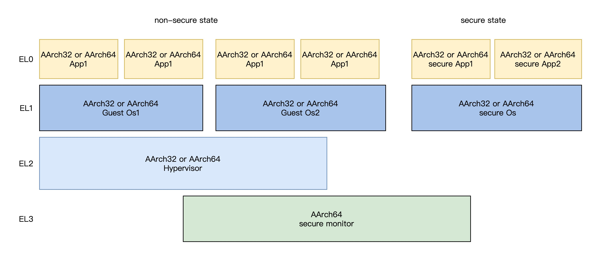
现在我们来看看中断或者异常发生时，EL级别的切换，这里分为两种情况。
第一种是高级别向低级别切换，这种方式通过修改PSTATE寄存器中的值来实现，EL异常级别就保存在这个寄存器中；第二种是低级别向高级别切换，通过触发中断或者异常的方式进行切换的。
在这两种切换过程中，如果高级的状态是AArch64，低级的可以是AArch64或者AArch32，也就是可以向下兼容；如果高级的是AArch32，那么低级的也一定要是AArch32。
当一个中断或者异常触发后，CPU的操作流程如下所示。
1.更新SPSR_ELx寄存器，即当前的PSTATE寄存器的信息存储在SPSR_ELx寄存，以便中断结束时恢复到 PSTATE 寄存器。- 2.更新PSTATE寄存器以反映新的处理器状态，这个过程中，中断级别可能会发生变化。- 3.发生中断时的下一条指令地址存储在 ELR_ELx寄存器中，以便中断返回后，能继续运行。- 4.当中断处理完成后，由高级别返回低级别时，需要使用ERET指令返回。
下图能帮你更加清楚地理解这一行为。

上图已经清楚地展示了，中断或者异常发生时，其中几个关键寄存器是如何保存和恢复的。
中断向量表
当中断或者异常发生后，CPU进行相应的操作后，必须要跳转到相应的地址开始运行相应的代码，进行中断或者异常的处理，这个地址就是中断向量。由于有多个中断或者异常，于是就形成了中断向量表。
在AArch64中，每个中断或者异常触发时会产生EL级别切换。通常在EL0级别调用svc指令，触发一个同步异常，CPU则会切换到EL1级别；如果在EL0级别来了一个IRQ或FIQ，就会触发一个异步中断，CPU会根据SCR寄存器中的中断配置来决定切换EL1或EL2或EL3级别，同时也会区分EL级别使用的是AArch64，还是AArch32的指令集。
16个向量的分类和偏移地址在向量表中的关系如下所示。
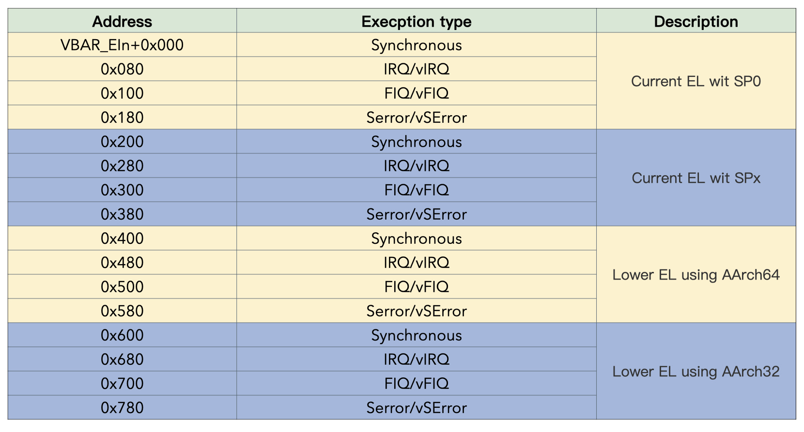
上表中分了四个小表，小表中的每一个entry由不同的中断的类型（IRQ，FIQ，SError，Synchronous）决定。具体使用哪一个小表由以下几个条件决定。
- 如果中断发生在同一中断级别，并且使用的栈指针是SP_EL0，则使用SP_EL0这张表。
- 如果中断发生在同一中断级别，并且使用的栈指针是SP_EL1/2/3，则使用SP_EL这张表。
- 如果中断发生在较低的中断级别，使用的小表则为下一个较低级别（AArch64或AArch32）的执行状态。
有了这些硬件机制的支持，就可以完美支持现代意义中的操作系统了。
AArch64体系如何访问内存
无论是操作系统内核代码还是应用程序代码，它们都是放在内存中的，CPU要执行相应的代码指令，就要访问内存。访问内存有两大关键，一是寻址，这表现为内存的地址空间；第二个关键点是内存空间的保护，即内存地址的映射和转换。下面我分别解读一下这两个关键点。
AArch64体系下的地址空间
对于工作在AArch64体系下的CPU来说，没有启动MMU的情况下，ARM的CPU发出的地址，就是物理地址直接通过这个寻址内存空间。
但是你别以为AArch64体系下有64位的寄存器，能发出64位的地址，就一定能寻址64位地址空间的内存。其实实际只能使用52位或者48位的地址，这里我们只讨论使用48位地址的情况。如果启用了MMU，那么CPU会通过虚拟地址寻址，MMU负责将虚拟地址转换为物理地址，进而访问实际的物理地址空间。这个过程如下图所示。
上图中可以发现，如果CPU发出的虚拟地址在0x0～0x0000ffffffffffff范围内，MMU就会使用TTBR0_ELx寄存器指向的地址转换表进行物理地址的转换；如果CPU发出的虚拟地址在0xffff000000000000～0xffffffffffffffff，MMU使用TTBR1_ELx寄存器指向的地址转换表进行物理地址的转换。
究竟虚拟地址是如何转换成物理地址的呢？我们接着往下看。
AArch64体系下地址映射和转换
按照我们以往的经验来看，这里肯定是有一张把虚拟地址转化为物理地址的表，给出一个虚拟地址，通过查表就可以查到物理地址。但是实际过程却不是这么简单，在这里通常要有一个多级的查表过程。
MMU将虚拟地址映射到物理地址是以页（Page）为单位的，ARMv8架构的AArch64体系可以支持48位虚拟地址，并配置成4级页表（4K页），或者3级页表（64K页）。
例如，虚拟地址0xb7001000~0xb7001fff是一个页，可能被MMU映射到物理地址0x2000~0x2fff，物理内存中的一个物理页面也称为一个页框（Page Frame）。
那么MMU执行地址转换的过程是怎样呢？我们看一看4K页表的情况下，虚拟地址转换物理地址的逻辑图。
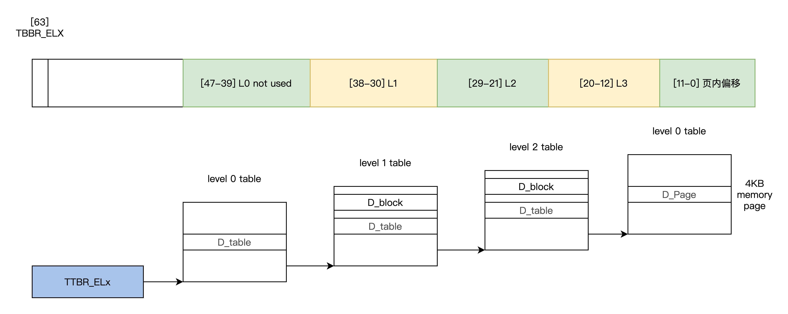
结合上图我们看到，首先要将64位的虚拟内存分成多个位段，这些位段就是用来索引不同级别页表中的entry的。那么MMU是如何具体操作的呢，一共分五步。
第一步从虚拟地址位段[47:39]开始，用来索引0级页表，0级页表的物理基地址存放在TTBR_ELx寄存器中，以虚拟地址位段[47:39]为索引，找到0级页表中的某个entry，该entry会返回1级页表的基地址。
第二步，接着之前找到的1级页表的基地址，现在可以用虚拟地址位段[38:30]索引到1级页表的某个entry，该entry在4KB页表情况下，返回的是2级页表的基地址。
然后到了第三步，有了2级页表基地址，就可以用虚拟地址位段[29:21]作为索引找到2级页表中的某个entry，该entry返回3级页表的基地址。
再然后是第四步，有了3级页表基地址，则用虚拟地址位段[20:12]作为索引找到3级页表中的某个entry，该entry返回的是物理内存页面的基地址。
最后一步，我们得到物理内存页面基地址，用虚拟地址剩余的位段[11:0]作为索引，就能访问到4KB大小的物理内存页面内的某个字节了。
这个过程从TTBR_ELx寄存器开始到0级页表，接着到1级页表，然后到2级页表，再然后到3级页表，最终到物理页面，CPU一次寻址，其实是五次访问物理内存。这个过程完全是由硬件处理的，每次寻址时MMU就自动完成前面这五步，不需要我们编写指令来控制MMU，但是我们要保证内核维护正确的页表项。
有了MMU硬件转换机制，操作系统只需要控制页表就能控制内存的映射和隔离了。
总结
这节课我们一起了解了ARM的AArch64体系，它是ARMV8-A下的一种执行状态。作为首款支持64位的处理器架构，AArch64体系不只是32 位ARM 构架的兼容扩展，还引入了新的A64指令集。
处理器想要运行程序、处理数据，离不开各种寄存器。我们学习了AARch64下的三类寄存器，包括通用寄存器、特殊寄存器和系统寄存器。
相比x86系统，AArch64的CPU工作模式更加多样，一共有七种工作模式。之后，我们分别研究了工作模式切换还有基于EL0-3的异常中断处理，以及AArch64下的内存架构和访问方式。访问内存，你重点要掌握的是访问内存的两大关键点，一是寻址，二是内存空间的保护。
自从2011年ARM发布首款支持64位的ARMv8版本后，到现在已经过去了十年。在今年ARM也宣布了下一代芯片架构ARMv9的部分技术细节，并称其为十年来最大的创新，也将是未来十年内千亿级别芯片的基础，其在CPU性能、安全性、AI支持上有了显著提升。
但是ARMv9不会像ARMv7到ARMv8的根本性的执行模式和指令集的变化，ARMv9继续使用AArch64作为基准指令集，但是在其功能上增加了一些非常重要的扩展，ARMv9开发的处理器预计将在2022年正式面世，让我们拭目以待！
思考题
请问，ARMv8，有多少特权级？每个特权级有什么作用？
欢迎你在留言区记录你的思考，也欢迎把这节课分享给有需要的朋友。
我是LMOS，我们下节课见。
LMOS来信：第二季课程带你“手撕”计算机基础
你好，我是LMOS。
2021年，我在极客时间上开设了我的第一门课程《操作系统实战45讲》，和你分享了我多年来研究操作系统的一些成就和经验。
我本以为在业务为王、各种新技术层出不穷的今天，很少有人会关注操作系统这种底层且异常复杂的技术。但出乎意料，这门课程一上线引起很多朋友的关注，曾经一度稳居极客时间课程榜单之首。期间我也收获了不少朋友的赞许，感谢你们的认可。
同时，结合我的观察和收到的留言、提问，我发现了几类常见的问题。
第一类就是心浮气躁，这是最常见的。我觉得学习任何东西都要首先静下心来，一步一个脚印，一个问题一个问题地攻克，层层推进。遇到困难可以歇一歇，但不可以就此中断和放弃。
计算机产品的设计方法，无非是层层抽象，层次越高，暴露给用户的功能越简单，层次越低，隐藏的细节越复杂。而操作系统是计算机最底层的软件，又经过半个多世纪的发展，其复杂程度可想而知，包含的知识体量也大的惊人。
你不可能一下子就学会这些，必然是要长期坚持，一步步推进才可以，不能因为遇到一点点困难就放弃。
第二类是过于纠结名词概念。概念是什么？概念是把所感知的事物的共同本质特点抽象出来，加以概括，是人脑对客观事物本质的反映。这种反映常常用一些名词来标示和记载，是思维活动的结果和产物。
而计算机里我们看到的很多概念名称，很多时候都是某项功能实现后，设计者取了个名词，来指代这个功能。而在我的课程中讲的就是操作系统底层实现，是事物的本质，是具体实现操作系统的过程，而非操作系统概念（这些在很多的理论书籍都能轻易获得）。
这种讲解可能不同于你之前接触到的知识，但有助于打破原先的抽象，把关注点从表层概念转移到技术的设计与功能实现上，这样才能见到操作系统的本质。
第三类则是基础不足。操作系统算是计算机领域里非常综合的学科，涉及的知识点非常宽泛，主要包括硬件体系、编译原理、开发语言、数据结构、通用算法、图形系统、网络通信等，里面每一项都可以成为一个独立学科。很多同学由于刚刚入门，或者所在岗位没有接触过所有这些基础知识点，所以学习起来感觉有点吃力。
这些问题让我回想起了自己当年的学习经历。我在操作系统领域摸索研究了十多年头，先后开发了LMOS（基于x86_64的多进程支持SMP的操作系统）和LMOSEM（基于ARM32支持软实时的嵌入式操作系统），还写过嵌入式操作系统的相关书籍。这些经历告诉我，应该使用什么方法和拥有什么基础，才能写出操作系统。
在我的学习探索过程中，你们遇到的这些问题、这些困难，我也未能躲过，我也停下过，但只是歇一歇，从未放弃。遇到不懂的就去学习，遇到问题就去解决问题，一步一步积累，慢慢精进。
这么多年，很多朋友询问我，为什么执著于操作系统？我每次都笑着回答，因为我喜欢。
从本质上说，操作系统是巨大的软件工程，代码量都是几千万行级别，学习起来极为困难，学校也不乏照本宣科去读读理论的情况，从来不会系统地去编写一个操作系统。就算是成熟的操作系统公司，也只会招能力极强的高手，再内部培训，这导致太多感兴趣的人无从下手。
从我自己的学习经历来看，工程师们学好操作系统等基础知识，是一个长期受益的选择，对我们的技术成长相当重要。
为了帮助你系统和深入地理解并实践操作系统，我为你准备了一门新课《计算机基础实战课》。整个课程是一套完整系统基础知识，包含大量的计算机基础内容。
如果第一季你没有学明白，正在发愁自己怎么补充前置知识，想掌握基础，那么第二季正好可以作为基础知识的补充，里面大部分知识点都是操作系统初学者需要了解的。
如果你第一季学得还不错，说明你有浓厚的兴趣和深厚计算机基础知识，但是Cosmos是个全新的产物 ，不具备工作实用性，虽然其中的技术让人受益无穷。第二季作为一门基础课程，它的广度更大，是一门综合性基础课程，它也是第一季内容的一个补充，方便你把自己的知识版图扩展开来，并把其中的内容应用于平常工作之中。
就拿我自己来说，我既做过前端、后端的工作，也做过内核的开发。能来回穿梭于底层与高层之间，不至于手忙脚乱，最大的依仗就是深厚的计算机基础。即便你还没决定好未来的技术发展路线，计算机核心的基础知识对工程师来说，也是必学的前置内容。
基础不牢，地动山摇。基础筑牢，海阔天高。让我们一起精进技术，突破自己！
现在课程已经上线了，点这里了解课程内容。
大咖助场 以无法为有法，以无限为有限
你好，我是Yason Lee。
先简单介绍一下我自己，我曾为腾讯、土巴兔、中兴等多家公司服务过，目前在国内某电商公司担任研发方面的工作。我跟LMOS相识多年，也是 Cosmos Psi 开源项目的贡献者之一。
受到极客时间和老彭（LMOS）邀请，这次加餐我想从我的视角给你说说，Cosmos项目的来龙去脉，然后再结合我对老彭和其他很多优秀工程师的思考，跟你分享这样几个话题：个人技术成长历程上的一些学习技巧，以及怎样在复杂多变的当下基于知识迁移能力高效地解决问题。
Cosmos Psi项目诞生缘起
记得去年的某个周末，我和老彭、还有几位好友在聊天的时候，突然有些感叹：现在互联网为我们带来了海量知识的同时，似乎在某些方面也限制了我们的视野。
现实的情况常常让我欢喜让我忧。一方面，各种推荐系统为我们推荐的信息越来越精准，但这让我们更容易沉浸于一些局部的细节，而忽略了全局视野。另一方面，脚踏实地、从点滴积累又是必要的，很多时候我们想在计算机领域有所造诣，又离不开从微观入手，逐渐打通宏观的架构能力。
所以，我们为在刚入行的同学感到欣慰的同时，又隐约有些担忧，再联想到我们当初在技术成长的过程中，也因开放的互联网受益颇多。因此，我们几个觉得有必要去做些什么了。
于是通过头脑风暴，我们构思出了Cosmos Psi项目。但很快我们意识到，只有开源项目是远远不够，项目的源码只能算授之以鱼。如果我们希望项目能够生生不息地帮到更多朋友，那我们很有必要和一个靠谱的平台合作，这又成了我们和极客时间合作出品《操作系统实战45讲》的缘起。

当时我们就这个项目讨论了很多，这里我把印象最深刻的对话给你还原一下。当时我问老彭，如果想用一句话浓缩概括操作系统的话，你觉得应该是什么？
老彭说，操作系统是一套多元化的资源管理哲学观，通过工程、技术细节呈现的外现。这是我们在课程发起前的一次交流，我惊讶于老彭对知识高度抽象而又不失准确的总结能力。于是我又追问，一套优秀的哲学体系，浓缩出来可能是一个点，而展开后可能会包含海量细节，那么我们如何能够让不同知识储备的朋友，都能有所得呢？
当时老彭叹了口气，说：“哎，一个立体互相交错关联的复杂知识网络，一个零基础的朋友要想立刻弄清楚，这谈何容易。学习起来真的没有捷径，我们只能尽可能提炼、抽象出核心部分，帮助朋友们尽量少走弯路。可能也就勉强算是一种捷径了吧。”
接着，我又产生了一个疑惑，你觉得我们做这个事情能帮助多少人，目前市面上成熟的开源OS还是蛮多的，我们又能走多远呢？
听到这个问题，老彭说的是，能帮一个算一个，能脚踏实地、走一步就算一步。更何况我们和那些开源的项目还是有很大不同的。老彭在讲这个话的时候，我从他身上感受到了一种宁静而又坚定的信念。这让我不禁联想到乔帮主那句话：
“The people who are crazy enough to think they can change the world are the ones who do.” （只有疯狂到认为自己可以改变世界的人，才能真正改变世界。）- — Steve Jobs
唯变所适
好了，说了Cosmos Psi项目缘起，相信你已经了解了我们的初衷，接下来，我想分享一下我的思考，在复杂多变当下，如何提升我们解决问题的能力。
在创建Cosmos Psi项目中，我们有幸结识到了几位技术出身的CTO和CEO，我们发现他们不但专业能力很牛，知识迁移能力也很强。即使面对更加复杂多变的商业、管理问题时，这些人也显得游刃有余。
那么这种能力是如何得来的呢？我们也见过一些学校中刚毕业的应届初入职场的同学，做事情的时候按部就班去实施，可最终结果未必达到了预期，这到底又是哪里出了问题？接下来，我分享一些我的看法，希望能为你带来一些启发。
是“懒人”创造了方法
作为工程师，我们应该以“偷懒”为傲，是“懒人”创造了方法。回顾我们学习各种技术的过程，都是循序渐进的。体验多了，就会慢慢有思考，慢慢形成可以让我们偷懒的高效方法，这个过程你可以按照点、线、面的路子来理解。
初学编程，我们可能会从某个语言的语法特性开始学起，尝试自己动手基于这些语法特性由浅入深的实现一些算法、数据结构或者小的feature。在这个过程中，我们会发现，很多时候一些代码是可以复用的。
于是，我们开始尝试基于学到的面向对象/函数式等方法，把很多具有相似点的代码做一些简单的抽象和封装。相信到了这个阶段，你一定会感觉到一些小小的成就感吧！毕竟我们可以少写一些重复的代码，留出更多时间来学习和思考了。
再进一步思考，我们不再满足于只解决相似点带来的效率提升。我们发现逻辑与逻辑之间、问题与问题之间，同样可以抽象出一些共性的，于是我们又领会到了很多解决问题的设计模式/模型。这时候，我们开始享受这样的快乐——用一套程序来解决一类逻辑线中的通用问题。掌握了这类更为高阶的工具之后，我们又可以空出更多时间来“偷懒”了，是不是很开心？
之后，随着我们写的程序、逻辑越来越多我们又会产生新的认识，比如说，对于不同种类的程序，实现起来是可以进行分层的。于是，我们开始根据经验和自己对系统的各个参与者和对应行为的预判，对系统又做出更高维度的封装、抽象、分层。
比方说你是一个OS架构师，可能会考虑把OS划分为内核态、用户态，并抽象出多个子系统；如果你是一名互联网行业的架构师，可能会把前端、后端进行分层分离拆解，甚至走向分布式的漫漫长路…
这时候你会慢慢发现，通过架构层面的合理分层、设计调整，很多原本在一个系统内互相牵连的逻辑线就能被理顺了。这时候你可以逐个击破每个层面的问题，于是你的系统能够解决的事情就更多了，这是不是更有成就感啦？
上面的工程师成长小故事，其实也正是我们很多工程师随着知识、经验、思考的积累，都会走过的一条路。
看得更远些：点、线、面之后是什么？
作为一个工程师，当我们拥有了能在架构层面通过点、线、面不同的技术工具来解决问题的能力之后。我们还要继续深入思考：在技术领域的成功经验，如何能够迁移到更多领域呢？
如果你提出了这样的疑问那就太好了，因为你的探索精神会把你的能力带到一个更高的层次。让我们透过技术细节，看看技术背后的核心思想是什么吧！
不知道当你学习操作系统内核发展历程的时候，有没有观察到，批处理OS、DOS时代的操作系统管理资源的模式，很像上古时期“无为而治”的管理哲学，那时候内核与进程人人平等，我们都假设大部分程序是“好人”。
所以配合好的时候，系统相安无事，但是总有一天，有个初学者无意间写了一个死循环，吃掉了所有的CPU资源。这时我们发现不但别的程序没有机会运行了，操作系统自己也做不了什么。
所以接下来，OS基于保护模式、虚拟内存等特性，设计了很多资源隔离和权限隔离的策略。这时候计算机进入了“事在四方，要在中央；圣人执要，四方来效”的法家思想所主导的中央集权管理时代。
然而，单机的资源增长总是有瓶颈的，随着互联网时代的到来，优秀的工程师们发现可以通过网络通信让多个节点分布式协同起来，这样可以让系统拥有更强的可靠性、可扩展性以及吞吐性能。
于是乎，随着互联网时代海量数据传输、计算、存储的需求的到来，技术又从单机“中央集权”演进到了充分尊重每个节点的能力，衍生出了BGP、Gossip、DHT、Paxos以及各种分布式协同的技术、协议。这标志着操作系统的技术发展在“中央集权”之后又朝着“去中心化、自由平等的民主协作”的方向进行了切换。
你看，前面的OS内核技术演进史，在我们剥离掉技术细节之后，你有没有感受到背后的核心思想，也和一些管理层面的思想有共通之处呢？
同理，我们不妨盘点一下我们学到的OS技术中的很多功能与行为。我们可以顺藤摸瓜，思考一下，这些行为又是基于什么能力、调度哪些资源、为解决什么问题、而产生的这些设计？
继续思考还会发现，这些设计背后会有一套更加通用的核心思想。很多同学其实思考到这一步就停止了，还蛮可惜的。让我们再进一步思考下，那些设计这些特性的架构师、专家当初是遇到了什么难题，又是基于什么样的信念和思考方法，才让他在这个场景上使用某个“核心思想”，解决这个复杂系统架构问题的呢？
这种思考极为可贵！思考这种问题会让你拥有更强的知识迁移能力，进而提升问题解决能力。
你有没有发现，前面所讲的思路是一种系统化、结构化、动态发展的模式，它更适合处理复杂多变的现实问题。如果把这种模式搞清楚了，不少初入职场的同学陷入的“应试思维”到底出了什么问题，就显而易见了。
我们在“面向考试”去学习的时候，通常是假设课本上的知识是一个全集，这时把全集拆解成多个子集，学一学背一背就完事儿了。然而这个不变的假设，放在现实生活中显然是不合适的。
因为现实世界小到一个材料中的电子、原子、芯片指令，大到一个产品、市场、国家。随着时间的推移无时无刻不在发生着变化。在不断变化之中，如果我们总是追逐着不变的、有限的事物，则有一定概率会被时代所淘汰。
从这种无时无刻的变化当中，我想分享一个你可能有点陌生的概念——VUCA。其实这并不是一个新名词，而是一个上世纪提出的军事术语，指的是volatility（易变性）、uncertainty（不确定性）、complexity（复杂性）、ambiguity（模糊性）的缩写。
后来VUCA被广泛用于各个行业来描述复杂多变的世界，我觉得这个术语用于描述我们今天的工作、生活依然不会过时。也许正因为在这个VUCA的时代，我们更加需要用科学的思想去应对未来，所以今年的诺贝尔物理学奖(2021 年)才会颁发给研究复杂系统变化的科学家吧！
说了这么多，我想强调的就是，面对复杂多变的现实问题，妄想以不变应万变并不可取。我的主张是唯变所适，只思考一些点、忽略了背后更重要的线、面、体，则会过度陷入细节带来更大的问题。
当然，这也不意味着细节不重要，恰恰相反，细节才是验证你思考正确性的具体指标，这就好比如果你觉得你思考清楚了一个算法的逻辑，可是当你用代码写出来的时候，却错误百出无法通过测试，那也不过是纸上谈兵罢了。
知行合一
刚才我们说了系统思维跟细节的辩证关系，我提到注意不要过度陷入细节。可是对于初入职场的同学来说，很大的一个困扰就是没有合适的“标尺”来明确自己是不是过度陷入细节，这时候怎么办呢？
我认为最好的对策就是不要空学理论，而是要实际验证，也就是“知行合一”。我们不妨一起认真反问自己这样三个问题：
1.如果让我们看三个月篮球比赛，并仔细记忆背诵篮球比赛相关的规则和知识，但就是从来不去篮球场真的实地训练一下，如此三个月之后，上场和国家队的篮球运动员打比赛，你觉得能赢么？
2.如果经过不断的学习和练习，你已经能够成为一个不错的前锋了，可只有你一个人很强，你能赢得球赛么？
3.我们还会发现，很多各行各业的高手们，在成长路上或多或少都会遇到别人的质疑、各种各样的阻碍因素。这时候，他们停止前行了么？
思考完这三个问题，估计聪明的你已经领会到我的意思了。第一个问题说的是不要空学理论，而是要用实践验证理论方法，方能不断精进；第二个问题说的是不要只顾自己单兵作战，而是要注意到团队合作的重要性；而第三个问题说的是一种钝感力，外界纷纷扰扰，你是否有勇气倾听自己内心的声音？
其实这三个问题都是如何知行合一这个问题的衍生，希望你我都可以学以致用、找到志同道合的同伴，保持开放状态的同时不迷失自己。这里我想引用乔布斯的话跟你共勉，这段话的核心意思就是我前面说的，跟随你自己的心。
“Your time is limited, so don’t waste it living someone else’s life. Don’t be trapped by dogma — which is living with the results of other people’s thinking. Don’t let the noise of others’ opinions drown out your own inner voice. And most important, have the courage to follow your heart and intuition. They somehow already know what you truly want to become. Everything else is secondary.”- — Steve Jobs
法自然：合作分享，逃离内卷
最后，我还想聊聊分享、合作的价值。我们不妨从这个话题来切入：在学校学习，跟在开放世界中打怪的最大区别是什么？
其实就是学校里大部分都是闭卷考试，鼓励个体零和博弈，我们总是为了一个向上有封顶的总分，互相竞争排名。虽然说有“物竞天择”这样的说法，但如果我们只是用这种竞争的态度生活，难免走向社会达尔文主义的方向，结局就是一起越来越卷。
而开放世界打怪就不同了，多半是开卷考试，鼓励个体之间相互合作。这里我想给你分享一个有趣的冷知识：生物进化史中，我们熟悉的植物细胞和动物细胞，它们的共同祖先是真核生物。而真核生物的起源，其实来自数十亿年前的一次合作。古核生物细胞与始祖光合原核生物合作共生之后，才进化出了真核生物。
你看，经过一次伟大的合作，不但没有出现零和博弈的竞争困局，反而让世界进化得更加丰富多彩。
类比当下，开放、去中心化的互联网，让我们有了更多的合作机会。像Linux、Apache等基金会下的一个又一个成功的开源项目可以让我们看到更多合作带来的可能性。
对于知识的分享和传递，思想之间相互碰撞形成的火花，也让我们看到了人性的更加光辉的一面。纵然当下我们可以感受到“内卷”带来的诸多不良体验，但我同时也愿意相信，也许“合作”会成为对抗“内卷”的一把钥匙。期待我们携手并肩，共同进步！
用户故事 yiyang：我的上机实验“爬坑指南”
你好，我是yiyang。
先简单说说我自己吧，我是一名编程爱好者，这个爱好从小学就已经播下了种子。我从求学到就业，有过很多次机会接触计算机方面的学习和相关工作，可是一直没有真正动手编程。这次能接触到LMOS老师的《操作系统实战45课》，让我眼前一亮，当时就报名了这门课。
都说编程需要能掌握一些基础的编程语言，但在这门编写操作系统的这门面前，我属于“三零基础”：Linux是零基础、汇编语言是零基础，C语言也是零基础。但这一点也没有影响我学习这门课的热情，因为我从报名那一刻，就站在了LMOS老师的肩膀上;-)
我的学习思路简单粗暴，就是先跟着老师的整个课程跑一遍，拿下整体框架。我自己也清楚，看不懂代码是我目前的一大劣势，而这不是三天两天能速成的，那我就不纠结在这方面，先跟着老师的每节课的讲解把大概意思给硬啃下来。
至于代码部分，老师在教学辅助石墨文档里已经给大家推荐了非常好的学习资料。因为明白自己当前的情况，也明确了自己的目标，所以并没有出现计划容易落地难的问题，我也一直是按计划学习的。在时间安排上，我是每天安排一课，跟着老师课程里的语音，同步看文字、插图及配套的代码。
这里有一个关键点，那就是每节课后都有编程大神们的精选留言，这些是已经学完课程的同学留下的宝贵学习经验。对于正在学习的我们，也可以用来辅助参考，这是我每节课必看的内容。
专栏里大部分内容都可以实际上机体验，LMOS老师都把配套的课程代码链接传到了Gitee上。我在学完每节课之后，一定会亲自上机运行一遍老师的代码。虽然我目前还写不出这些代码，但每次遇到有代码的课都自己跑一遍，也能更直观感受到当前这节课最终可以实现出什么样的结果。以我目前的实操能力，现在就能把这件事做到。
就从第一次上机运行的经验开始说起吧，也就是第二课“几行代码几行C，实现一个最简单的内核”。先说结果：我印象里，开始动手是夜里11点半，一直搞到了凌晨3、4点才最终完成。虽然只是运行了老师写的代码，但把自己的运行结果晒到打卡群时，内心还是感受到满满的成就感。
我在这将近4个小时的折腾里，因为这样那样的问题，不断掉坑、爬坑。那我究竟是如何解决，最终才完成了第2课的 Hello OS 呢？
兵马未动，配置先行
之前在介绍里给自己的标签是“三无基础”，所以上机实践的每一步都是新的尝试和探索。运行课程代码前，自然要先搞定运行环境，主要分两个部分：安装Ubuntu和各种编译连接工具。
虽说是第一次安装Ubuntu，经过学习石墨文档里每一条和我的运行环境相关的文档链接以及在百度里大致搜索了一些安装教程，基本就能搞定这一关，安装过程中除了自己指定安装路径，其余的安装设置基本上都是选择默认的选项。
安装中途遇到第一个大坑，估计大部分初次安装Ubuntu的同学都可能遇到过：初次安装时，系统会在线安装系统的一些升级程序，具体是哪些先不深究，这个环节我至少等了45分钟还多。相比之前安装Windows操作系统区别很大，毕竟虚拟机里安装Win10，安装程序基本上是直接从iOS系统安装压缩包里把需要安装的程序文件全部解压出来，感觉整个过程十几分钟就完成了。
后来再去百度搜了一些资料才知道，安装中最好关闭本机网络。其中的关键点就是，我们电脑主机或虚拟机在安装Ubuntu系统时，有一部分程序需要从服务器下载，而默认的下载服务器传输速度缓慢是这个坑的直接产生原因。这个不光会影响Ubuntu安装，后续使用时安装一些程序还会给我们带来困扰：你会发现，下载程序速度非常慢，甚至经常中断无法完成下载。
找到了原因，对症下药就能根治问题。办法就是安装Ubuntu时，记得要关闭网络或虚拟机的网络功能，然后在安装完成后，找一个Ubuntu大陆地区镜像站点，配置到Ubuntu的设置里。
这里我推荐清华大学开源软件镜像站，超链接里有具体的使用帮助，选择跟你安装的ubuntu相同的版本，跟着帮助指导就能完成配置。重启后，再去下载和升级程序，你会发现下载速度就变得非常快了。
其实镜像站还有很多，你可以自己搜一搜，比如还有阿里云的镜像站，有兴趣的可以多找一些备用，使用和配置方法都是相似的，只要学会配置一个，其他的也都差不多。唯一不同的就是镜像站的链接网址这方面的区别。
解决了Ubuntu的下载问题，接下来就是安装课程里需要用到的代码编译等程序，把它们安装或升级到最新版本。
接下来我们就安装编译链接等工具：nasm、gcc、make。具体操作时，在Ubuntu系统里，进入终端 Terminal，在命令行中输入下面这条指令：
sudo apt install nasm gcc make
输入指令后，系统就会帮我们下载并安装这几个编译链接工具。完成安装后，第二课配套代码的程序编译环境我们就搭建好了。
上机运行的“爬坑指南”
第二课的上机经验
第二课的上机代码,老师已经帮我们写好了，我们只需要下载到Ubuntu里，然后进入终端Terminal ，在lesson02/HelloOS目录下，运行下面这条指令：
make -f Makefile
经过上述流程，我们就会得到 HelloOS.bin 文件。当然，这条指令的执行过程中，整个过程里生成了好几个文件，这几个文件生成的具体流程和介绍，专栏里都有详细说明，这里我们主要是讲如何运行代码，需要的就是最终生成的这个HelloOS.bin文件。
得到HelloOS.bin后，我们需要手动修改两个地方，手动选择启动项，还有把 Hello OS 添加进GRUB开机启动菜单。
手动修改第一关
首先，我们要修改/etc/default/grub，把GRUB启动菜单配置改成启动时“显示”，可以让我们手动选择启动项。
这里我额外分享一个我的技巧，在对这类系统文件进行任何改动前，建议都先做一个备份，这样备份后，即使修改发生了错误后，还能用这个备份文件还原恢复。修改grub的具体操作是，在Ubuntu系统的终端 Terminal里，进入 /etc/default/ 目录，使用指令修改grub配置文件，代码如下：
sudo gedit grub
输入之上述指令后，编辑器里会显示grub配置文件，大约33行左右。
首先我们要用#号注销掉hidden行。我这个Ubuntu版本是在第7行，只需要在前面加上#号，也就是“#GRUB_TIMEOUT_STYLE=hidden”。
有的Ubuntu版本里是第7和第8行里都有hidden，那就把这两行前面都加上#号注释掉。为啥要注释掉呢？hidden的作用是启动时不显示GRUB启动菜单，而我们需要在启动时显示GRUB菜单选项，所以需要用#号注释掉。如果实验后你不需要显示GRUB启动菜单，逆向操作设置即可。
接下来，需要设置GRUB启动菜单的默认等待时间。代码如下：
GRUB_TIMEOUT=30
这里的参数30表示Ubuntu启动，进入GRUB启动菜单后，倒计时30秒，如果没有任何手动操作，就会直接进入第一个默认的启动选项系统。
接着，我们需要把GRUB_CMDLINE_LINUX_DEFAUL设置为text，也就是打开启动菜单时默认使用文本模式，代码如下：
GRUB_CMDLINE_LINUX_DEFAULT="text"
完成grub文件的这三处修改，记得按右上角的Save保存，然后关闭grub文件。
grub文件并不是修改后就完事了，还需要提示系统，我们已经更新了grub文件。操作也很简单，只需要在命令行输入如下指令：
sudo update-grub
这样，grub文件的配置修改我们就搞定了。
手动修改第二关
接下来我们看看添加 Hello OS 的操作 。老师在课里“安装 Hello OS”这部分提到：
经过上述流程，我们就会得到 Hello OS.bin 文件，但是我们还要让 GRUB 能够找到它，才能在计算机启动时加载它。这个过程我们称为安装，不过这里没有写安装程序，得我们手动来做。
经研究发现， GRUB 在启动时会加载一个 grub.cfg 的文本文件，根据其中的内容执行相应的操作，其中一部分内容就是启动项。- GRUB 首先会显示启动项到屏幕，然后让我们选择启动项，最后 GRUB 根据启动项对应的信息，加载 OS 文件到内存。- 结合课程讲解可以看到，grub.cfg这个文件的路径是在：/boot/grub/grub.cfg。
同样的，记得先给 grub.cfg 做个备份，然后我们就可以在终端 Terminal 里进入 /boot/grub 目录，执行下面这条指令来打开和配置 GRUB 启动选项：
sudo gedit grub.cfg
打开grub.cfg 文件后，可以看到这个大约299行的文本文件里，有很多用#号开头的英文注释，基本上都是对这个cfg文件里的关键注释。对于我们要改动的这个文件，可以先观察和了解这些注释，这对后面的配置工作有很大帮助。
仔细观察grub.cfg文件的第287到第291行，我把它这部分内容粘贴到了后面：
###BEGIN /etc/grub.d/40_custom ###- #This file provides an easy way to add custom menu entries. Simply type the- #menu entries you want to add after this comment. Be careful not to change- #the ‘exec tail’ line above.- ###END /etc/grub.d/40_custom ###
上面注释里提到，这个文件里给用户预留了可以添加自己启动项的地方，也就是用户可以把自己需要添加的启动项，紧跟着放在这段注释下面即可。
手动修改第三关
老师已经把我们HelloOS的启动项的程序代码写好了，我最初的做法就是直接复制老师课程里的代码进去。
menuentry 'HelloOS' {
insmod part_msdos #GRUB加载分区模块识别分区
insmod ext2 #GRUB加载ext文件系统模块识别ext文件系统
set root='hd0,msdos4' #注意boot目录挂载的分区，这是我机器上的情况
multiboot2 /boot/HelloOS.bin #GRUB以multiboot2协议加载HelloOS.bin
boot #GRUB启动HelloOS.bin}
请注意这个环节，也就是老师的这段代码，如果我们只是无脑地直接复制进去，那大概率无法运行出想要的结果。第二课的上机运行里，这个地方是最大的一个“坑”，也是我在OS打卡群和操作系统群里，看到很多小伙伴都卡住的地方。
当然，这个坑当时也把我给难住了，期间整整折腾了一个多小时，才搞明白爬出了这个坑，事后看看，老师当时其实已经给了明确提示。
我们来仔细看下这个坑在哪里：- “set root=‘hd0,msdos4’ #注意boot目录挂载的分区，这是我机器上的情况”- 对，就是#号后的提示。
其实，这行代码的用途，是告诉操作系统GRUB，我们的boot目录挂载的分区。由于每个人电脑硬件环境有差异，这个参数得根据自己电脑的具体情况来填写，所以当你直接复制老师的这个代码时，除非电脑运行环境正好和老师的一模一样，否则是无法顺利执行下去的。
我的电脑运行环境也和老师的不同，所以这个地方一定要先确定我们自己电脑系统的这个参数，然后再填写进去，才能跑通这个运行结果。其实老师也给出了找参数的方法，在 Linux 系统的终端Terminal里，输入后面的命令，具体你可以对照第二课讲解回顾。
df /boot/
以上截图是我 Vbox 虚拟机里 Ubuntu 系统里执行 df /boot/ 后，显示出的boot目录在硬盘设备挂载分区的信息，里面的 /dev/sda5 就是指硬盘的第五个分区，但是GRUB的menuentry中不能直接写 sda5，而是要写成“hd0,msdos5”。
另一个技巧是，我们可以观察grub.cfg里，上面系统自带的那几个menuentry开头的启动项里面，这个“set root=”后面的参数，看下它们的配置参数是怎样的，基本上你照抄即可。
截图里红框圈出来的是我根据自己系统的参数，添加进grub.cfg的HelloOS启动项代码。
完成了上面这个步骤，后面还要把我们前面用make指令最终生成的HelloOS.bin文件，复制到 /boot/ 目录里。经过上面这些步骤的配置，我们就可以重启Ubuntu系统，重启后，你会看到弹出的GRUB启动菜单。
在里面选择最后一项HelloOS，就能看到系统进入了我们的Hello OS操作系统界面，大功告成！
虽然，屏幕上只显示了Hello OS！这几个字符，但这已经为后面我们搭建Cosmos系统打下了最初的基石。跟着以上的操作步骤，我们把代码运行起来，相信你内心也会升起小小的成就感。
后续上机实验要点
下面，我再把运行后续课程里遇到的几个比较典型的坑罗列出来，如果你也正好学习到这里，可以做个参考，也许对你有帮助。
第十一课 lmoskrlimg 命令执行
第十一课的上机运行代码部分，我再次卡住，扒拉了各个大神的避坑指南，再到百度里各种搜索，但依旧没能解决。
最后，实在是没辙了，只能硬着头皮去向LMOS（东哥）请教，东哥看到消息，简短的几句话就指出了要害，我跟着他指点的思路上机实操，果然问题立马就解决通关了。
这种非常基础的Linux应用问题，东哥也能这样耐心解答，我内心是有点小感动的。毕竟，从高度来讲，东哥在操作系统这个领域已经是非常高的段位，从这一次的提问中，能真切感受到东哥非常愿意分享他的经验，帮助我这样的新手。因为这份幸运，我觉得既然已经选择学习这门课程，真的要珍惜机会，好好学习，完成这门课程。
我来讲一下这个坑的特征，这个问题属于Linux的使用基础方面的问题，估计大部分像我一样刚开始使用Ubuntu或对Linux操作系统不是非常熟悉的同学，都可能在这里卡住。
对于没有配置过环境设置的外部程序 lmoskrlimg，
在运行该程序指令时，前面一定要加./。
看到没？第一次执行，前面没有加 ./ ，系统就提示command not found。
第二次执行，前面加上了 ./ ，系统就能找到并执行，之后结果会提示：“需要在该指令后面加上相应参数”。
第十一课里，这个程序具体的完整指令如下：
sudo ./lmoskrlimg -m k -lhf initldrimh.bin -o Cosmos.eki -f initldrkrl.bin initldrsve.bin
这节课的上机实操结果完成后，我复盘了一下，根据以前我对DOS的命令行的理解，这类外部第三方的程序，在DOS系统里，如果没有做环境配置，只需要直接进入到程序的目录里，输入程序名，即可直接执行该程序指令。
但是，对比Linux系统里，同样的事情，即使是进入了这个程序所在的目录，如果没有配置环境变量，那想要执行，那就一定要在该程序指令前加上路径 ./ ，要不然Ubuntu会报错，提示“文件找不到”。
如何配置环境变量，这个目前暂时还没有深入研究，先把程序能跑起来，有兴趣的同学可以继续深入探索。基本上解决这个程序指令的问题后，就能通关第十一课的代码运行了。
第十二课避坑示范
之后，第十二课里，也有一个小坑，但同样看了前人经验就能避开。而且第十二课的上机运行只要能通过，后面的课程，一直到第三十三课，都是同样的上机运行方法。
这里我就用第十二课来做一个避坑的示范，给同学们提供一些线索。我们用第十二课的代码执行后面的命令，即可得到 hd.vdi 虚拟硬盘映像文件。
sudo make vboxtest
我在打卡群里，看到有的同学运行到这一步时，后面的操作掉坑里了，我第一次跑第十二课代码时也一样遇到这个坑。
如果你跟我的运行环境一样的，是在Win10的实体机里，安装VBox虚拟机软件，在Vbox里安装Ubuntu的，通过上面的指令，拿到 hd.vdi 这个文件的时候，操作步骤应该是：在VBox虚拟机里，新建一个操作系统，命名 Cosmos(注意大小写)，选择other + unkonwn 64位，内存1024M，虚拟硬盘选项记得一定要选：不添加虚拟硬盘，新建好后，检查一下硬件加速是否如下面截图里的三项都有打开。
从上面的截图里，我们可以看到，这个新建的名称叫 Cosmos 的空系统，它是与我们之前安装的Ubuntu操作系统是并列的，不是在Ubuntu操作系统里面去套娃。我在一开始也是尝试再Ubuntu操作系统里面去套娃，后来发现行不通。
当你建立好这个Cosmos 空系统后，把前面生成的 hd.vdi 这个文件，加载到这个Cosmos操作系统的硬盘，如下图所示：

然后重新启动这个Cosmos，你就能看到你的Cosmos操作系统顺利启动了。
跟着上面演示的步骤，这节课的上机运行也就能通关了。
魔改logo和背景图
记得我把第十二课的运行结果发到打卡群里时，LMOS老师说，能不能把这个Cosmos的启动Logo修改一下？之前一直都是复制老师的代码，对于这道附加挑战，我也是跃跃欲试。
我当时在下载第十二课的代码时，曾经进入每一个目录，了解过目录和文件的结构，看到过一个图像文件：logo.bmp。
这个文件的图片预览也是 Cosmos 的 Logo，我当时查看了这个文件的分辨率大小 340 * 510，去百度里找了一个图案，修改成bmp文件格式并调整分辨率到 340 * 510，尝试替换Cosmos系统的启动Logo图像文件。
这里请注意：替换前，记得先把原始的logo.bmp文件保存备份。
换成你的logo.bmp图片文件后，记得要再次用sudo make vboxtest 生成一个新的 hd.vdi 文件。
然后把之前在vBox里建立的Cosmos系统删除（要选择‘删除所有文件’选项）。删除后，重新建立一个Cosmos的空系统，再加载这个新的 hd.vdi 文件，重新启动，就能看到开机界面的logo是你刚才自己新换的图片了。
同理，在同一目录下还有一个background.bmp文件，这是后面课程里，操作系统进入界面后，桌面背景图案就是调用这个文件。你也可以换成自己喜欢的图片，记得留意一下分辨率1024*768，选择分辨率大小一致的图片文件更换，那Cosmos的系统桌面背景就能由你自己做主了，是不是很酷？
我的感悟
师傅领进门，修行在个人。在我的这趟学习旅程中，课后留言和课程群的讨论文档给我带来了很大的帮助和启发。我常常是从这些内容里不断扒拉，结合里面的参考信息，一点一滴找到我遇到上机实验问题的解决思路和方案，最终才把课程的代码跑起来。
只要你开始学习，耐心跟着课程一课一课推进，课程里有代码的，动手尝试运行，先把整个课程走一遍，把整体框架顺下来还是不难的。而且把握了思路，后面在编程方面遇到这类相关问题时，也比较容易知道在哪里可以找到解决方法。
其实每天学习一课、打卡一课的设计，也给我学习编程知识和其他学科带来了启发。学习其他科目的时候，我也尝试了“每日打卡”的方法。
具体就是用每天打卡的方法来推进学习计划，日拱一卒，每天花固定时间推进进度。相信我会完成从量变到质变的过程，不断拉近自己跟目标之间的距离。
在学习《操作系统实战45课》的期间，我用每日打卡的方法，用27天时间准备我的一个专业考试，然后在第28天下午连考2门，都已经通过，而且还拿到了合格证书。
遇到一门好的课程，遇到一个好的老师，遇到一个好的群助教和编辑小姐姐，对于任何一个求学者来说，都是一次非常好的学习机会。这次学习过程，对我来说不只是学习和了解一下操作系统，可能这是一个杠杆，一个新的起点，让我的人生剧本有了一个新的开始。
最后，感谢LMOS老师给了我这次分享机会。为了完成这次输出，我再一次复习了课程内容，进一步加深了理解。
课后，我会把王爽老师的汇编语言、还有C语言这两门编程语言重点学习，打好基础，二刷这门课的时候也能继续深入代码部分，深入探索操作系统的搭建、实现。那时我应该也可以在每一节课的留言区，留下更加深入的学习足迹。
1996年，我第一次听身边的电脑发烧友，说起Linux这个开源操作系统的传奇故事。当时听得热血沸腾，但自己最终却一动也没动。现在回想起来，如果当时有LMOS老师这样级别的大神，带来这样一门手把手带我们学习和实操的课程，加上我现在“一鼓作气”的学习劲头来学习，那在编程这个领域里，我可能会走得更高更远。
最近在学习打卡群和打卡小程序里，我看到很多同学坚持学习，打卡群大家也是互帮互助。关键的一些问题，老师也会出来解答，这样的学习机会可遇不可求。
我的分享先到这里，感谢LMOS老师，同时也祝选择学习这门课程的同学们，能在操作系统这方面大展身手。完成比完美更重要，而且，如果没有完成，那完美更不可能出现！
用户故事 成为面向“知识库”的工程师
你好，我是pedro，目前是一名后端小研发。
很早的时候，就收到了小编的邀请，让我来写一写用户故事。但是因为我手上有很多事情，这事儿就被耽搁了下来，所以导致这篇小故事迟到了很久。
虽然是在操作系统这个专栏下，但是我不想受到领域的限制，我想和你们分享一下我的学习思路、学习方法和收获，真诚地和你说说话，唠唠嗑，吹吹水。
学习思路
你自己知道你需要什么，这才是最重要的！
我想能来这里学习的人，大多数都是希望提升自己的小伙伴，我也和你们一样，都遇到这样的问题，那就是——好书这么多，视频这么多，专栏这么多，博文又这么多，我缺的真的不是资源，而是时间！
几年前，我想要提升自己的心态十分迫切，在B站上收藏了N多视频，在浏览器主页上收藏了 N多博文，也买了很多好书和极客专栏。然而，这一堆接着一堆的东西，让我感到焦虑和茫然，实在是太多了，我哪里学得完呀。
而且我还时不时接到各式各样的推送，告诉我：你要学习数据库，这很重要；你要学习编译原理，这很重要；你要学习这个框架，面试必考；你要学习这个技术，工作必备；你要学习如何看画，审美很重要；你要学习如何读诗，远方很重要……
可我就是一个普通人，哪能学这么多？即使是时间管理大师罗志祥也办不到。我们不妨仔细想想，这些东西真的有这么重要吗？可能很重要，但是对我们来说，我觉得辨识力最重要，知道你自己需要什么，才最重要！
什么都舍弃不了的人，什么也改变不了！
这是《巨人》里面有名的金句。我之所以放到这里和你分享，是因为我觉得把这句话放在学习上同样很有效。
聊到这里，我想说说我自己的学习思路，其实也很简单。那就是，二八定律，80%的功利主义，学对工作最有帮助的，20%的情怀主义，学自己最感兴趣的。
结合你自身的工作情况和个人爱好，选择那么几门去开始学习，不要贪多，不要把买了就当成学了，用这样的方式来缓解自己的焦虑。
以我个人为例，我自校招入职以来，主要在学习与工作相关的知识，但也没有放弃个人兴趣。这里我把我正在学习探索的方向整理成了一张导图，也分享给你做参考。

在我看来，功利主义和情怀主义二者并不冲突，相反二者是相得益彰的，可以共同帮助你成长。因为工作以后，解决工作问题是最主要的事情，所以把大部分时间花在上面是值得的，这属于功利主义。
但是，工作内容并不一定只是为了解决工作问题，在工作中也可以找到有趣的事情。比如Go 语言底层的调度实现其实是非常有意思的，也可以本着情怀主义来学习，但同时在未来这部分知识又可以帮你解决更多的工作问题。
其实我也是出于情怀来学习操作系统的。操作系统可以说是打开技术底层大门的钥匙，一方面可以开拓视野，另一方面恰好也能在工作需要的时候帮助我们解决困难。
学习方法
输出是学习的最佳途径！
光有学习思路是不够的，我曾遇到过这些问题：一个Bug遇到了两次，可是每次都得去 Google上搜，下次遇到了还是忘了。或者明明看了相关的视频，可是一到用的时候，突然发现自己好像只记得几个名词。
你看，明明花费了时间，却收获极小，这会严重打击我们的学习积极性。究其根本，是因为学习方法不对，导致学不到东西。
几年前，我刚步入这行的时候，由于原来没有接触过计算机，每次都是对着黑框框终端一顿操作，遇到问题到处百度（后来才转向Google），虽然稀里糊涂地解决了问题，可是下次遇到这个问题的时候，又得再百度，知识毫无积累，水平毫无提升，成了名副其实的面向“浏览器”工程师。
后面，我发现记笔记是一个有效的学习方法，可以直接提高对知识的熟练度。
因为在记笔记的过程里，我们会思考步骤、流程的合理性，重新审视这个知识点，同时记笔记也需要我们在内心里面揉碎这个知识点，加以消化，然后重新写出来。这是极佳的思考和输出的过程，有了这个过程，你不再是走马观花，而是经过了自己大脑的“解码”和“编码”，学习自然就会变得高效起来。
我记笔记最开始使用纸来写，但是效率太低，容易丢失；再后来，我学会了Markdown，开始在Markdown上记下自己踩坑的过程，写下自己的心得体会；可是很多时候我一会儿在笔记本上，一会儿又在台式机上，也有时候我需要和别人分享，甚至邀请别人一起来协作记笔记，于是我又将记笔记的地方转向了云端，开始使用石墨文档。
石墨文档支持多人协作，而且个人就算多PC、终端也可以登录，很好地解决了我的问题。下面附上我石墨文档的桌面截图，也推荐你使用。
慢慢地，我开始有了自己的积累，因为输出是更深层次的理解过程，很多坑点，我都能记下来，下次直接解决，即使遗忘了，我也能搜索自己的笔记。渐渐地我开始有了自己的知识库。从面向浏览器工程师变成了面向知识库工程师。这样的成长蜕变绝非朝夕之功，但我相信点滴的积累，终会聚沙成塔。
当然记笔记只是输出的一种，你也可以选择其它方式，比如技术分享，和同事、同学之间进行讨论，甚至给专栏留言。这里我就不得不骄傲一把了，操作系统专栏每一个小节，我都认真阅读了，思考和回答了问题，并且做了输出——留言，所以这个专栏让我收获巨大。你也可以借鉴！
收获
技术能力应该是最基础的收获，收获更多的应该是生态！
开始时，我把学习和工作的目标定为提升技术能力，一路坚持下来，我的技术确实有了进步，但是我更大的收获是生态。
这个生态可能你不太理解，我来详细解释一下，我把因为学习和工作而结交到的朋友、业务理解、商业模式和思考方式等等统称为生态。
拿这个专栏来说，我重新对操作系统进行了梳理和复盘，把很多原来一知半解的知识彻底弄懂了，这只是第一层的收获。
更上层的是，我认识了大佬东哥（作者）和他的一些朋友，可爱又有责任心的小编 Sara，人美心善的小运营洁仔，还有一堆天天在群里吹水的小伙伴，他们在群里分享了很多实用的知识，我也订阅了好几个公众号。
我们因为这个专栏而认识，我们志同道合，我们一起努力来完善这个专栏，用反馈去给专栏增值，这个因大家一起努力贡献而组建起来的生态，才是我本次最大的收获。
我希望你在学习和工作的时候，不要仅仅着眼于技术本身，而是要试着切换视角，跳脱出固有的框架，并且尝试鸟瞰全局，这样你才能收获更多。同时也建议你把专栏当作学习交友的平台，希望你能在本次专栏的学习中能够与我们成为好朋友，鼓励更多的人加入进来。
除了课程正文的干货，我总是能在课程留言区发现惊喜。其实我们才是专栏真正的主人，也是专栏增值的核心力量，专栏是我们跟作者共同的作品。
还是拿我自己来说吧，加入专栏成为助教后，我的学习激情一下子就“膨胀“了。认真学习专栏不仅仅只是兴趣，还有责任感与使命感，仿佛不追完就觉得白来了一趟。也正因如此，我才能收获如此巨大，相信你也可以。
写在最后
今天的分享，我从思路、方法和收获三个方面跟你聊了聊学习这件事情，下面我来谈一谈我对操作系统的看法。
操作系统是我个人认为最应该掌握的计算机必修课！因为我们的每个程序、每个应用以及每个服务都跑在操作系统这个地基上面，可以说现代互联网完全构建在了操作系统上。
操作系统是计算机软件的集大成者，是架构的极致！无论是Windows、Linux还是macOS都有几百万行代码，在保证高效运行的同时，又能将各种能力通过开放接口提供给我们，这是优良架构才能带来的能力。
东哥将操作系统的精华浓缩，并将其实现为Cosmos，用专栏的形式提供给我们，让我们有机会去一睹操作系统的风采，去汲取最有营养的养料，让你在学习操作系统的路上少走弯路，少走弯路就是走捷径。
希望每个看到这篇用户故事的小伙伴，重新拿起这个专栏。行百里者半九十，很多人行了十里就落下了，专栏行程虽然过半，但仍然可以赶上，大家，加油！
用户故事 技术人如何做选择，路才越走越宽？
你好，我是宇新。
作为《操作系统实战45讲》的编辑。从专栏上线到现在已经有3个多月的时间了，感谢你一直坚持到现在。
留意过课程评论区的同学都知道，我们有几位常驻的同学一直在主动输出。那这些“课代表”是怎样学习专栏，又有什么学习诀窍？
为了满足咱们的好奇心，我特意策划了这次特别的采访，请到了在专栏里留下很多精彩足迹的neohope同学，我会代表好奇的小伙伴向他提问，希望这次的分享能够带给你一些启发。
首先让我介绍一下neohope，他是一个技术爱好者，年龄就不说了。neohope做过很多的岗位，像是软件工程师、项目经理、项目总监、产品经理、架构师、研发总监等，现在他在医疗健康行业工作。
让我们正式开始这次采访吧！
如何搭建自己的学习体系
Q1：你好，neohope。你的课程笔记帮到了不少人，看得出你学得很认真，能给同学们说说，对于学好《操作系统实战45讲》这个专栏，你有哪些建议么？
A1：你好，关于怎么学好这门课程。我有这样几个建议作为参考。
第一个建议是多动动手：前期看到有些小伙伴不会用虚拟机，也不会命令行，但其实大部分同学花上几个小时也就搞定了。有了感性的认识，后面学习就不那么抽象了；
第二个建议就是够用就好：不要一看里面有汇编语言，就去从头学汇编；也不要一看C语言，就去学C。我的建议是，能读懂就够了，不会的命令网上找一下就可以了。其实，我们不妨想一下，自己小时候是如何读书的？有些看不懂的字，其实可以跳过去，这不影响理解的；
然后，我建议你多看源码：其实我的方法很笨，就是把老师的注释先拷贝到课程源码里，再结合自己的思考理解补充一些注释，这样读起来还是很简单的；
接着，就是要多理资料：有些地方看不太懂的，就去查资料，建议你把看完的资料，用自己的方式整理出来，然后分享，这样会有很好的效果；
最后，要找到组织：不要自己孤军奋战，找几个小伙伴定期聊聊，参与一些好的技术群，多交流会让你提升很快。自己迷惑的问题，可以问一下，看看别人如何理解的，不要害羞。
Q2：感谢neohope的建议。从你的留言里可以看出你对操作系统认识很深，即使是比较复杂的调用过程，你也总能很快地理清脉络，把握全局。这是怎么做到的呢？
A2：其实操作系统也好，其他技术也好，想要理解透彻都需要一个过程，而非一蹴而就。我觉得建立自己的知识体系，是一种很好的方法。
Q3：这个知识体系你是怎么建立的呢？可否分享一下，让入行不久或即将入行的小伙伴做个参考么？
A3：在我日常工作中，经常会遇到要教新人的情况，每一次带一位新人，我都会要求他/她做这样几件事情。
1.首先，我会请他用图解的方式，画一下自己会哪些技术；- 2.然后，跟他深入聊几个常见问题，比如下面这些问题：
- 用谷歌浏览器打开一个登录页面，输入用户名、密码，当用鼠标点击登录按钮时，究竟发生了什么？
- 如何自己做一个框架，去实现Spring Boot、Flask或WCF等相关功能；自己平时用框架有没有不爽的地方，想要如何改进它？
- 找一个大家都熟的业务场景，聊一聊如何在技术或非技术层面进行改进……
3.在技术上，我还会问问他，后续的学习发展计划是怎样的，自己想学什么，优先要学什么？- 4.最后，我会帮他/她去逐步建立一个技术栈，并以此为出发点，做一个为期1到3年的技术规划。
Q4：前面几步听起来有点像面试的场景。你是怎样想到用这个方法呢？
A4：我接着刚才知识体系说，因为工作以后，相比在学校系统学习，我们现在接触的信息大多都是碎片化的，对自己掌握了什么技术，我们并没有清晰的了解。而且根据我多年观察，即使是一些平时工作很认真的人，都没有去好好整理过自己的知识体系，这很可惜。
我第一次跟新入职的同学沟通时，可能最开始往往得到的是一堆的技术名词。

这个时候，我会根据小伙伴自己的技术栈，帮他/她搭一个简单的体系框架，把上面的技术名词归类放好，这里我以后端工程师为例。

然后，对于重点关注的层，还可以进一步展开。咱们是自学操作系统，那这里就把OS层展开。

之后，可以把自己整理的图和可信度高的资料进行对比。咱们这里就把上图和Cosmos、Linux进行一下对比。根据对比，摘取自己需要的内容，对自己的图进行补充。
参考：https://makelinux.github.io/kernel/map/
这样，你自己的知识体系就有了雏形。接着，对于自己要重点学的内容，进一步展开，比如说，对于锁这个知识点，我是这样拆分的。
- 乐观锁、悲观锁
- 公平锁、非公平锁
- 重入锁、不可重入锁
- 自旋锁、非自旋锁
- 独享锁、共享锁、读写锁
- 分段锁、行锁、表锁
- 分布式锁、共识算法
- ……
之后，对于这些知识点，我们可以用不同颜色进行标记（后面我列出了我自己习惯用的标记方式）。标记好了以后，你可以把“必须，未掌握，红色”的内容，整理一个清单，排个优先级，作为未来一段时间学习计划的参考。
A、必须，已掌握，绿色- B、必须，未掌握，红色- C、非必须，已掌握，绿色- D、非必须，未掌握，黄色
其实，这个知识体系就像是一张藏宝图，上面的一个个知识点就是一个个宝藏。实际使用的时候，我们不用花很大精力去做这个图，也不用限制是何种模式，一个markdown文件足够了，对自己有帮助就好。
随着你的积累和进步，每经过一个时期，都可以重新看下这个藏宝图，常看常新。
如果你特别喜欢自己的藏宝图，但图中有不少盲点，那就先找最基础的东西看，探索一段时间，迷雾自然就少了；如果你的藏宝图虽然很大，但能挖掘的精华有限，建议先找一张对你最有用的图，精力不要过于分散。如果这张图的要点你都掌握了，就需要扩展知识面，再去开个副本吧！
Q5：你的藏宝图方法听起来很酷，看得出你对不同的技术栈都比较熟悉，可以说说你的思考么？比如，不同技术栈怎样找共同点？
A5：随着不断的学习，我发现不同的技术栈，的确有很多相似的地方，就像是同一类型的宝藏。然后去看细节，又会发现不一样的地方，就像每个宝石，纹理都不一样。
以操作系统及虚拟机为例，你有没有想过Linux、Windows、Android、iOS、Docker、VritualBox、JVM、CLR、V8，都在管理哪些事情呢？
虽然这些技术并不在一个层面，其实很多要做的事情，却是很相似的。比如，都需要CPU管理、内存管理、任务管理、处理同步问题、文件管理、I/O管理、资源隔离、提供统一而稳定的API等。
然后，从任务管理这个角度再去看，还能看到优先级、时间片、抢占式、沙盒、命名空间、配额、欺上瞒下、甩手掌柜、单脑回路等等精彩的宝石纹理。
Q6：刚才说了不少寻找共性的思路，掌握了很多技术以后，你会怎么去分析它们呢？
A6：技术千千万，但追究其本质，技术都是为了解决具体问题的，这里我举三个例子吧。
以远程调用为例（远程调用推荐你看下公开课《周志明的软件架构课》），CORBA、DCOM、EJB、Webservice、REST、Thrift、ProtocolBuffer、Dubbo等，这些技术都在解决什么问题呢？这些技术的流行和没落的原因是什么呢？
我们想要解决类似RPC的问题，都是定义了一套规范要调用方和被调用方共同遵守，而且都提供了代码的辅助生成工具。那为何至今还会有很多新的技术出来，要解决这个问题呢？咱们就又要去观察“纹理”了。
以任务调度为例，从操作系统进程调度，到线程池、Socket连接池、DB连接池、对象池，再到F5、Nginx、Dubbo的流量控制，以及到大数据的Yarn、容器的编排，它们都在解决哪些问题？
再以低代码为例，ESB、OA（流程编辑器+表单设计器）、FaaS平台、SaaS平台，都在解决什么问题，给出的答案又有什么差异？这种思考方式还有很多例子，我就不一一列举了。
随着不断的学习，你会发现，不同的技术栈，有很多重叠的地方。比如，数据结构与算法、网络、数据库、文件处理、加密解密、系统调用等。一旦一次学会，就像打通任督二脉，在另外的地方，遇到类似问题的时候，就无师自通了。
Q7：那不同的技术栈，你会怎么样做对比呢？
A7：不同的技术栈，有很多不同的思路。就拿泛型为例，每种语言各有不同。
- C语言，可以通过函数指针或宏来实现，需要一定的编程技巧；
- C++语言，一般通过STL来实现，在编译时实现，会造成代码膨胀；
- Java语言，通过类型擦除实现，编译时擦除，JVM运行时并不知道处理的是什么类型；
- C#语言，在编译生成IL中间码时，通用类型T只是一个占位符；在实例化时，根据实际类型进行替代，并通过JIT生成本地代码，不同类型的泛型类是不一样的；
- Go语言，当前版本，并不支持泛型，可以通过interface强制转换，需要一些编程技巧；
- JavaScript语言，动态类型，天生支持泛型。
Q8：感觉这样做了对比之后，确实更容易加深理解。这个方法只能用在分析泛型么，可以不可以再举个例子？
A8：好，我们再以继承为例，看看每种语言都是什么思路？
- C语言，虽然通过一些编程技巧可以达到类似效果，但C不是面向对象语言包，一般不算支持继承；
- C++语言，支持规格的继承（纯虚函数）和实现的继承（支持多个父类），多个父类会提升语言复杂度，造成很多问题；
- Java语言，支持规格的继承（接口）和实现继承（支持单个父类），单个父类有时会无法复用部分代码；
- Ruby语言，支持规格的继承（接口）和实现继承（支持单个父类），同时mixin解决了代码复用的问题；
- Go语言，支持规格的继承（接口）和实现继承（基于组合），是一个优雅代码复用的解决方案；
- JavaScript语言，基于原型的继承。
学习方法相关
Q9：说完学习体系的搭建，neohope可以分享一下，自己学习某个具体技术时，有什么好方法么？
A9：在日常学习过程中，我自己总结了一个六步学习法，其实几步不重要，重要的是构建一个不断上升的螺旋就可以了。我的六步是这样的：学习、应用、思考、实现、剖析、交流，最后交流这一步又可以连回学习。

这样说有点抽象，就拿很多小伙伴都会的Spring技术为例，你可以这样学习。
首先，找本好书或好的教程，学习Spring的使用。然后在学习和工作中，开始使用Spring框架。在使用的时候，就要去思考Spring框架的核心功能是如何实现的，比如IoC是如何实现的？
有了一定积累，也做了不少思考之后，自己可以尝试去写一个IoC框架，并且对比源码或好的文章，去看下自己框架有哪些地方没有考虑好，试试改进。
我们在上小学、初中的时候，都会有一个错题本。掌握不好的知识点，会记录到本子上，定期拿出来看一下。建议你在工作和学习过程中，也养成这种复盘的习惯。比如，每天晚上洗澡的时候，可以想想，今天我做的事情有什么可以改进的地方。
最后，还要记得和同行多交流，学习高手的经验，进行深层次思考。发现不足后，再次进行学习。
关于交流我还想额外说两点，一个是练好英语，另外就是自己试着输出。工程师的英语要掌握到什么程度呢？在我看来，至少要可以流畅地看英文技术文档。不说别的，国外有很多高质量的技术文档及视频，真的很好。
另外，就是写博客写文章。相信很多小伙伴都知道费曼学习法，把别人教会才算真懂。写博客有很多好处，可以帮自己整理思路，可以加深对知识的理解，可以帮到别人。运营得好不仅可以得到收益，也可以给自己赢得名声。我自己也有写技术博客的习惯，你感兴趣的话可以看下这里。
学习心态与职业规划相关问题
Q10：刚才我们聊了不少学习本身的事儿，其实学习方法之外，心态也很重要。现在很多人总是处于知识的焦虑中，无法沉下心学习，这个问题你是怎么看的呢？
A10：现在是一个知识爆炸的时代，有各种各样的技术，有各行各业的知识。一打开电脑或手机，就感觉一堆东西要学，天天都有新框架，日日都有新名词，焦虑浮躁不堪。再加上网络上充斥着各大厂面试要求，更是让我们感觉内卷严重。
更糟糕的是，我们还总看到某些大厂根据年龄裁员的报道，感觉自己马上就要失业了，喘不过气来。不过我觉得吧，有紧迫感是个好事情，但过度焦虑大可不必。
如果你是一个学生或新人，不建议盲目追新，很多技术追着追着就没了。打基础，追主流，聚焦技术重点，就好了。
我们一直觉得国内内卷严重。但你不妨听一下吴军博士的演讲，日美欧早就开始用其他形式卷了，总结一下就是，“内卷是社会发展到一定阶段的必然，是社会从粗放型到精细型转换的产物”。
内卷不可怕，可怕的是不断的重复自己，10年经验，只不过把第1年的事情重复了10年而已，新技术啥都不会，这样的人不失业谁失业？
任何行业，从来都缺少优秀的人，但从来都不缺螺丝钉。30岁有30岁的要求，40岁有40岁的要求。40岁还拿“螺丝钉”的要求考量自己，是不行的。不要说开发，哪个行业都不行。
其实来咱们专栏学习的小伙伴，已经比业界大多数人都要勤奋好学了。只要我们做好规划，不断朝目标前进，一定会收获一个不错的结果。优质的人才，在任何一个行业都是稀缺的。
A11：刚才你说“40岁不应该再拿螺丝钉要求自己了”。这就涉及到职业规划的问题，可以说说你的看法么？
Q11：有些小伙伴，从业一段时间后，又开始纠结，“我是不是该转管理了啊，我是不是做产品试试，我什么时候能做架构呢”。如果你也有这样的困惑，我建议你问自己这样一个问题，你想发展“技术+什么”？
如果你技术很好，学新东西特别快，广度和深度都很好，那你可以走技术+技术这条路。当然这里可以细化，比如说如果你技术很好，对数据安全方面特别感兴趣，就可以走技术+数据安全这条路。
如果感觉技术纵深不适合，但你对行业特别感兴趣，可以考虑技术+行业这条路，一方面懂技术，一方面懂行业知识，这样的人哪个行业都缺，很棒！ 比如你技术不错，对行业、对公司产品又有深入的理解，不妨试试解决方案专家这条路；对公司产品有深入的理解，又懂客户、会聊天，技术+售前、技术型销售这些方向，都可以考虑。
如果你技术不错，又有一定的领导力，喜欢和人打交道，也可以做技术+管理这条路；如果你不光技术不错，还特别善于把自己所学传授他人，也可以做技术+培训这条路……
这样的选择，很多很多。路要越走越宽，不要越走越窄。以后你要“技术+什么”？这才是每个人自己要面对的问题。我对职业规划的理解大概是这些。
好，谢谢neohope，谢谢你给同学们分享了这么多建议、思考。
正如neohope同学所说，学习不是一蹴而就，而是要搭建自己的学习体系。想成为优秀的工程师，首先要对自己有充分的了解。“35岁魔咒”这样让人焦虑的问题，我们也不妨换个思路看，想一想自己可以走“技术+什么”的道路。
像neohope这样，把自己的学习思考，变成能分享给他人的方法论，的确是一件很酷的事儿。很期待这次的分享能够带给你不一样的思考，让我们共同学习进步！
用户故事 操作系统发烧友：看不懂？因为你没动手
你好，我是spring Xu。我平时的工作就是做实时嵌入式系统，坐标上海。
写操作系统这件事一直是我的兴趣，我之前写过引导器，也有移植过uboot的基础，还读了不少操作系统的书。作为一名操作系统“发烧友”，我是怎样跟操作系统、跟LMOS这门课程结缘的呢？请你听我慢慢道来。
我是怎样与操作系统结缘的？
其实我并非计算机专业出身，也没有系统地学过操作系统。不过出于兴趣，我早在大学时就自学了微机原理，当时记得还在x86实模式下写了些汇编程序，但还是有很多迷惑的地方。
于是，我跑到图书馆找了本Intel的芯片手册自己随意翻看，发现x86的保护模式寻址方式好奇怪，还有调用权限的知识也弄不太懂。后来我还试着询问老师，结果当时没得到什么满意的答案，这事儿也就不了了之了。
直到我工作了，接触的是嵌入式系统ucos-II。感觉这样的系统有点简单，因为它无法动态加载外部应用程序，还是想搞个更高级点的，自己写一个操作系统的想法从此埋下种子。
于是我购买了潘爱民老师的《程序员的自我修养》阅读。潘老师的那本书是讲C语言的编译链接和运行环境，也就是C语言文件如何编译、如何链接到生成程序的过程，还有该程序如何在操作系统上加载和运行以及程序加载的知识，都可以从这本书里学到。
我还根据于渊老师的《一个操作系统的实现》这本书，试着写了一个开机引导程序。这次再看到x86的保护模式，我觉得更容易看懂了，脑子里出现了一个念头，这是用硬件提供应用程序与操作系统内核之间的隔离。其实这并不是我的阅读理解水平有了多快的“飞升”，而是因为许多知识的领悟，都要经历大量的实践才会产生。
二级引导器的编写需要包含文件系统，还要有硬盘或者软盘的读取操作。工作一忙，时间久了自己也渐渐热情冷却，只是开了个头，就这样停工了。
但我的写操作系统梦想，并没有止步。后来偶然的机会，我看到周自恒老师翻译了一位日本人川合秀实写的《30天自制操作系统》。
 -
哈哈，真正中我下怀！我心里盘算着，只要30天就可以写个操作系统出来了，那应该挺简单的。就按一个星期七天，我只读一天的内容，一年我也能完成我的操作系统了。就这样我又开始捣鼓自己的操作系统了。
-
哈哈，真正中我下怀！我心里盘算着，只要30天就可以写个操作系统出来了，那应该挺简单的。就按一个星期七天，我只读一天的内容，一年我也能完成我的操作系统了。就这样我又开始捣鼓自己的操作系统了。
这本书面对的读者算是小白，没有啥学术名词概念，用通俗的语言把许多知识都讲解了。而且按作者的工具和思路，我确实实现了一个带图形的系统，但我按照他的步骤，没觉得自己水平有啥提升，还是觉得有点不过瘾。
于是为了补充一下理论知识，我又买了好多操作系统的书，甚至入手了一块三星的s5pv210的ARM CPU的开发板，这次是想实现个3D界面效果的操作系统，像iOS的4.3风格的那种图形，选择这块开发板，是因为iPhone4的CPU还没有这个强大。这样，我的自制操作系统之路再次启动。
工作的忙碌让我只能停停走走，只把uboot移植了，可以点亮并可以在那块s700的屏幕上输出打印字符信息，并实现了一个没有2D加速的16位5:6:5格式，24位888格式的小型点阵图形库。但很遗憾，由于那个芯片的3d图形芯片是PowerVR，根本不可能有任何开放的资料指导我写出驱动它的程序，最多用CPU模拟3D功能，就这样实验再度搁置了。


现在回想起来，当时是对操作系统的图形界面感兴趣，而并不是操作系统本身的知识。关注点不一样，导致许多知识并没有进一步学习。
真正开始学习写操作系统
今年年初，我无意中看到了B站哈工大李治军老师的操作系统课程，这个课程是用Linux0.11作为实验代码，更具有实战性，于是我开始边刷课程边看代码，但进展十分缓慢。
直到五月份，在微信群中看到了极客时间有操作系统实战课程。想到写操作系统的难度大，一般不太容易自己写出操作系统，而且不光写操作系统还能教别人写，对这位作者有些钦佩。我又查了下这门课程的作者——彭东，再看开篇词里他自己学操作系统、写操作系统的故事，深深被他的这份执着精神所鼓舞。
想想自己每次都想着要写一个自己的操作系统，但真正到实施时就退缩了，直到现在我也没有实现，真是太惭愧了。于是我购买了课程，还加入了东哥的操作系统实战课程群。因为之前看书跟实操积累的基础，这门课程跟起来就更加顺畅了。所以我经常在交流群里催更，还提问过CPU多核方面的问题，也会经常在课程中留言。
如果你也跟我一样，也想自己动手写操作系统，我从一个写操作系统的爱好者角度，建议大家先学习CPU的体系结构知识，这个是在硬件上为操作系统所做的准备，比如内存的访问、中断以及异常的调用。
这个基础很有必要，目的是让你在没有模拟器的环境，又不能真机调试时，也有能力定位问题，还能锻炼如何用大脑模拟运行汇编代码。这里我顺便提一个问题，你感受下，如果写1个循环100次的代码，用累加1的操作，与用递减1的操作，哪个快？为什么？欢迎留言写出你的答案。
然后是C语言和编译链接方面的知识，这个是用来生成操作系统程序的。其他知识就是在实践中，根据自己情况主动探索、获取。这个课程的代码也可以拿来使用，也可以在这个代码上做二次开发。期待我们一起为这个Cosmos操作系统添砖加瓦！
这门课带给我的收获
跟着东哥学习操作系统，我感觉收获颇多，每一节课都有许多感悟，有一些我已经在课程留言区记录了，还有一些正在整理酝酿中。这里我就从整体课程出发，简单为你描述一下课程中操作系统的知识分布。
基础铺垫阶段
前两节课是热身阶段，这是为了带我们了解，从源代码文件到可运行的程序文件的编译链接过程，以及这个程序文件如何在PC上运行。这部分包含了C语言、编译、汇编还有链接的相关知识点，这也是现在许多程序员感到神秘和陌生的部分。
课程里的Hello OS实验，相当于一个PC硬件平台上的裸机程序（这里“裸机”二字我可能用得不太严谨）。现在的开发工具IDE，都把这部分工作自动化完成了。我觉得讲这些还是很有必要的，能让我们能清晰地了解程序生成过程，也能方便我们知道无调试环境下要如何看汇编代码。毕竟太依赖IDE的话，水平不会提高。
第三、第四节课对操作系统的宏内核与微内核架构做了介绍，也是Linus与Andrew Tanenbaum争论的话题。
第五到第九节课为后面Cosmos搭建铺垫了基础知识。硬件模块是对x86硬件编程的规范说明。CPU如何寻址访问内存的，也包括硬件上如何支持操作系统内核与应用程序的分级管理、x86的中断机制、cache的运行机制。
而硬件资源有限的情况下，不同程序访问同一资源，又涉及到后面各种锁的介绍。 通常操作系统课本上，这部分是放到进程中一并描述的知识点。而这里却单独拎出来，有助于我们关注本质。
初始化、内存管理与进程模块
之后第十节课开始，我们进入到启动初始化模块。一起探索真实开发环境的搭建与初始化。在二级引导器的帮助下，可以加载Cosmos的内核系统，最为直观的体会就是显示图片跟点阵字体。整个引导完成之后进入到操作系统核心，实现了各种资源的初始化过程（包括中断框架初始化）。
接着就到了最硬核的内存管理模块，这里的确有难度，一方面代码量不少，另一方面内存设计是老师自研，我们乍一看有点陌生。我现在也处于看懂了代码，但还需要进一步分析的阶段。所以也建议你对照课程讲解慢慢揣摩。
该模块老师用四节课讲物理内存管理，也就是操作系统下，内存管理中的物理内存分配管理。 这里的物理内存是指在硬件的地址空间中可以找到该数据的内存。而区别内存的前三节课，第十九节课是讲小于4k的内存分配是如何实现的。
之后四节课，两节课讲解了进程访问虚拟内存的相关知识。所谓的虚拟就是不真实的。为什么不真实呢？因为虚拟内存的大小，是由当前CPU最大可以访问的内存大小决定的，不是当前计算机安装的物理内存大小。
比如32位的CPU，虚拟内存大小是4G，但该计算机的内存配置1G，对于进程来说，还是会认为有4G的空间可以使用。
也正是这个原因，所以访问内存时，要把虚拟内存映射到真实的物理内存上，映射过程中CPU就会产生缺页中断异常，然后需要测试中断框架的代码，处理了该中断异常后，虚拟内存就可以访问到物理内存了。
之后两节课又讲了Linux的内存管理，关于Cosmos跟Linux的内存管理做对比，这里我也在摸索，等我理清楚了再分享出来。
因为之前看过不少图书，所以老师课程里进程模块的设计让我眼前一亮。因为进程的结构与调度，在各种操作系统的书里经常是讲得最复杂难懂的部分，一般课本上是把进程相关的都讲述一遍，每个知识点一次性都提及，我们不知道来龙去脉，就容易一头雾水。这不是劝退的思路么？
但这门课安排就巧妙得多，先讲内存管理再讲进程。程序的运行第一件事就是需要内存空间。有了这个基础，你再学习进程的时候也会觉得没那么难。
所以我从这两个模块学习中，得到的最大感悟就是，做什么事，把目标定好后，别考虑那么多，要设计多么的完美，而是把任务分解开，一点点来实现。
先实现一个雏形，知道会有问题，找出问题，解决问题。通俗点，哪怕起初挖了许多个坑也可以逐步完善，慢慢把坑填了，系统也就健壮了。
驱动模型、文件系统与网络
第二十八到三十课是Cosmos操作系统的驱动模型。由于操作系统是应用程序与硬件之间的桥梁。操作系统为简化应用程序开发难度，把硬件操作做了统一规划。
做驱动的开发只要根据操作系统提供的驱动模型，实现操作硬件的代码，这样就可以让应用程序调用操作系统提供的统一接口来操控不同的硬件了。课程里用的是定时中断的例子，如果想驱动键盘和鼠标的话，你可以重点看这个部分。
第三十二到三十四节课讲的是文件系统。这部分只是在内存上建立的文件系统。虽然简易，但也构建出了一个自己的文件系统。有能力的同学还可以写个磁盘驱动进行完善。
其实在等更新的时候，我也很好奇操作系统的网络模块要怎么讲。后来真的看了内容后发现，这部分其实是讲计算机网络与操作系统的关系。首先是传统单机中，计算机的网络是什么样的。 然后扩展到集群下的、超大宽带的计算机网络与操作系统的关系。
这里我整理了一张导图，整理了课程脉络。这里先说明一下，课程里还有不少关于Linux的内核的分析，这里为了凸显Cosmos主线我没有过多涉及Linux，如果你有兴趣可以试着自己动手总结归纳。

希望我对课程的内容梳理对你有帮助。操作系统里面包含的知识可以说是博大精深，真要完全掌握，需要大量的时间和精力的投入。
所以，我想结合我个人经验跟你聊一聊，我们怎么从自身工作技术栈中的底层技术点这个维度入手，深挖出与操作系统相关的知识点，通过对底层机制的思考学习，加深自己对技术的理解。
比如做Java开发，那自然深挖技术知识点，就会挖出JVM虚拟机的内存管理原理。 内存管理在操作系统中也有，但操作系统做成了谁申请、谁释放的原则，让应用程序自己来负责。
而JVM这个应用程序，它向操作系统申请了超大的堆内存作自己的虚拟机管理的内存，并根据对象的引用计数器来判断对象的生命周期是否结束，这样就可以自动回收垃圾对象所分配的内存了。对于操作系统来说，JVM仍然是占用着那块超大的堆内存的。
我们进一步思考下，如果把这部分机制放到内核中，是不是就可以做出带垃圾回收机制的C语言了呢？
这个思路其实是可以有的，但为了兼容考虑，解决思路是放到了编译阶段了。你可以了解一下Apple系统的object-c语言的ARC机制。这里你可以想想，为什么不能在Windows或者Linux、iOS上把这个功能实现了，只能从编译阶段做成这个样子？
再比如使用Golang做开发，你会发现协程其实是在Golang的运行环境里提供了协程和协程调度，协程调度器按照调度策略，把协程调度到线程中运行。协程的调度过程由用户态程序负责，也就是golang应用程序，由M个协程对应N个内核线程，这个调度算法比较复杂，但对于开发者来说是无感知的。这样带来的好处又是什么？当然协程不光Golang提供了。
再比如做前端Web开发。微信是一个IM的应用软件，但微信可以浏览网页、公众号，甚至加载小程序，小程序的开发语言是JavaScript，它的运行环境是JavaScript虚拟机。这个不是和多年前Palm公司推出的WebOS系统很像吗？
操作系统的桌面用浏览器来代替，不需要用C++或者Java语言来开发应用，直接用JavaScript语言就可以开发所谓的桌面应用程序了。如果用浏览器的插件技术，开发的语言是C++就会导致开发人员的学习成本升高，但性能是强劲的。
通过这三个例子，你有没有发现，跟原来的技术实现相比，开发应用的难度是在降低的。而现代新出的技术有不少是操作系统里做的一些功能，换到应用程序里提供的功能，又在编程语言上提供了语法糖（在编程语言中，增加新的关键字来简化原来的写法），再通过开发工具生成应用程序。
核心思想就是屏蔽复杂的知识，降低开发难度，开发人员不用太了解底层知识，就可以快速上手开发应用程序，让更多的开发者更关心所谓的业务开发。
如果只关心业务开发，你会发现今天出了一门语言，明天又出了一个框架，你感觉好像有学不完的知识。一直在学习，但感觉学不动了，要休息了。所以，我学习新技术，或者新框架，会先试着理解这个新技术是为了解决什么问题而产生的，原来的技术是否可以这样做，新技术与原技术在开发效率与运行效率上是不是有优势？
总之，我认为无论你是不是内核开发者，都有必要了解操作系统的相关知识。如果操作系统的知识你掌握了，就相当于掌握了内功心法，学习新的语言或者新的技术，只要看看官方的文档，就可以很快开始运用该技术做项目了。
学技术不动手，就好比游泳只看理论不下水。希望你也能认识到，动手去写代码、改代码很重要，让我们跟着LMOS，在操作系统的实践中不断精进！
用户故事 用好动态调试，助力课程学习
你好，我是leveryd。
先做个自我介绍，我在网络安全行业从事技术工作，目前在负责安全产品的研发工作，工作六年。
虽然在研发工作中，我们通常是遇到什么问题就去查，边查边学。虽然这样的学习方式能快速解决问题，但有时候这种方法也不灵，比方说学习语义分析时，就必须要把词法分析、语法分析先学了，一通搜索、查阅、汇总和学习，回头一看，需要花费的时间和精力还是不少的。
显然，只靠自己在网上搜索，学到的常常是零零散散，效率太低。尤其是和工作的关联程度很高的必修知识，我觉得不太适合边查边学，更需要系统学习。结合自己的工作需要，今年年初的时候，我给自己安排了近期学习计划，定下了相应的学习的优先级。
其中，补充操作系统的专业知识就是高优先级的一项。近期学习《操作系统实战45讲》的过程中，我也跟着课程内容开始动手实践，还在课程群里分享了自己的调试经验。接到LMOS老师的邀请，今天我就和你聊聊我是怎样学习这门课程，以及我是如何调试课程代码的。
我是怎么学习《操作系统实战45讲》的
根据我的学习需求，我给自己立下了两个学习目标：
第一，理解第十三课的代码：第十三课之前的内容包括了整个机器初始化过程；
第二，理解第二十六课的代码：比第十三课内容多了“内存”和“进程”。
在这个过程中，我会遇到一些问题，我把解决这些问题的实践经验写到公众号（公众号上我记录了这门课的学习实验笔记，以及关于安全业务和技术的一些案例）上，以此加深自己的理解。
就目前我自己的学习经验来看，“内核实验”比较复杂。这主要是因为内核涉及的知识较多，比如C语言、汇编、硬件知识；而且这方面内容比较底层，某些概念我们平时接触得比较少，比如汇编层面的函数调用细节。
另外，部分算法乍一看确实有点难理解，比如第二十五课中进程的切换是利用“栈上的函数返回地址”，而“返回地址”包括初始化和后面被进程调度器更新这两种场景。我们需要弄清楚这两个场景都是怎么更新的，才能更好理解进程是如何切换运行的。
Cosmos调试思路
因为刚才说的这些原因，当我们遇到疑问时，往往无法从网络上直接搜到答案。这个时候，就可以通过调试来辅助我们分析问题。
接下来，我就说一说我是怎么调试课程代码的，后面还会再分享一下我通过动态调试解决疑问的例子。
虽然我们可以在代码中打印日志，但这种方式效率不高，因为每次都需要编写代码、重新编译运行。我更喜欢用GDB和QEMU动态调试Cosmos。
结合下图中我们可以看到：使用GDB在Cosmos内核函数下了断点，并且断点生效。如果我想观察copy_pages_data的逻辑，就只需要在单步调试过程中观察内存的变化，这样就能知道copy_pages_data建立的页表数据长什么样子。
总的来说，想要动态调试，我们首先需要编译一个带调试符号的elf文件出来，然后更新hd.img镜像文件。
接着我们用QEMU启动内核，具体命令如下：
➜ myos qemu-system-x86_64 -drive format=raw,file=hd.img -m 512M -cpu kvm64,smep,smap -s // 一定要加-s参数，此参数可以打开调试服务。
最后，我们用GDB加载调试符号并调试，具体命令如下：
(gdb) symbol-file ./initldr/build/initldrkrl.elf // 加载调试符号，这样才能在显示源码、可以用函数名下断点
Reading symbols from /root/cosmos/lesson13/Cosmos/initldr/build/initldrkrl.elf...done.
(gdb) target remote :1234 // 连接qemu-system-x86_64 -s选项打开的1234端口进行调试
Remote debugging using :1234
0x000000000000e82e in ?? ()
我已经将编译好的带调试符号的elf文件，以及对应的hd.img镜像文件放在了GitHub上，你可以直接用这些文件和上面的命令来调试。仓库中目前我只放了对应第十三课和第二十六课的调试文件，如果你想要调试其他课的代码，不妨继续往下看。
制作“带调试符号的elf文件”的详细步骤
如果你调试过Linux内核，应该比较熟悉上面的流程。不过在制作“带调试符号的elf文件”时，Cosmos和Linux内核有些不同，下面我就详细说明一下。
先说说整体思路：通过修改编译选项，即可生成“带调试符号的elf文件”。然后再生成Cosmos.eki内核文件，最后替换hd.img镜像文件中的Cosmos.eki文件。这样，我们就可以用“带调试符号的elf文件”和hd.img来调试代码了。
修复两个bug
只有先修复后面这两个bug，才能成功编译，并且运行Cosmos内核代码。
第一个问题是：编译第十三课的代码时遇到一个报错，报错截图如下。

解决办法很简单：将kernel.asm文件中的“kernel.inc”修改成“/kernel.inc”，你可以对照后面的截图看一下。
第二个问题是第二十六课遇到的运行时报错，如下图所示。

因为acpi是和“电源管理”相关的模块，这里并没有用到，所以我们可以注释掉 initldr/ldrkrl/chkcpmm.c 文件中的init_acpi 函数调用。
解决掉这两个问题，就可以成功编译第十三课和第二十六课的代码了。
修改“编译选项”
修复bug后，我们虽然能够成功编译运行，但是因为文件没有调试符号，所以我们在GDB调试时无法对应到c源码，也无法用函数名下断点。因此，我们需要通过修改编译选项来生成带调试符号的elf文件。
为了编译出带调试符号的执行文件，需要对编译脚本做两处修改。
第一处修改，GCC的-O2参数要修改成O0 -g参数：-O0是告诉GCC编译器，在编译时不要对代码做优化，这么做的原因是避免在GDB调试时源码和实际程序对应不上的情况；-g参数是为了告诉编译器带上调试符号。
第二处修改，去掉ld的-s参数：-s是告诉ld程序链接时去掉所有符号信息，其中包括了调试符号。
需要替换和修改的文件位置如下图：

使用sed命令，即可批量将-O2 参数修改成-O0-g ，代码如下：
[root@instance-fj5pftdp Cosmos]# sed -i 's/-O2/-O0 -g/' ./initldr/build/krnlbuidcmd.mh ./script/krnlbuidcmd.S ./build/krnlbuidcmd.mki ./build/krnlbuidcmd.mk
[root@instance-fj5pftdp Cosmos]# sed -i 's/-Os/-O0 -g/' ./initldr/build/krnlbuidcmd.mh ./script/krnlbuidcmd.S ./build/krnlbuidcmd.mki ./build/krnlbuidcmd.mk
[root@instance-fj5pftdp Cosmos]# grep -i '\-O2' -r .
[root@instance-fj5pftdp Cosmos]#
使用sed命令批量去掉ld的-s参数，代码如下：
[root@instance-fj5pftdp Cosmos]# sed -i 's/-s / /g' ./initldr/build/krnlbuidcmd.mh ./script/krnlbuidcmd.S ./build/krnlbuidcmd.mki ./build/krnlbuidcmd.mk
[root@instance-fj5pftdp Cosmos]# grep '\-s ' -r .
完成上面的操作以后，编译选项就修改好了。
编译生成“带调试符号的elf文件”
我们修复bug和修改编译选项后，执行make就可以编译出带有调试符号的elf文件，如下图：这里的“not stripped”就表示文件带有调试符号。
这里有两个要点，我特别说明一下。
1.Cosmos.elf：当需要调试“内核代码”时，可以在GDB中执行symbol-file ./initldr/build/Cosmos.elf加载调试符号。
2.initldrkrl.elf：当需要调试“二级加载器代码”时，可以在GDB中执行symbol-file ./initldr/build/initldrkrl.elf加载调试符号。
重新制作hd.img
最后一步，我们需要重新制作hd.img，这样VBox或者QEMU就能运行我们重新生成的Cosmos内核。
整个过程很简单，分两步。首先生成Cosmos.eki，这里需要注意的是，font.fnt等资源文件要拷贝过来。
[root@instance-fj5pftdp build]# pwd
/root/cosmos/lesson25~26/Cosmos/initldr/build
[root@instance-fj5pftdp build]# cp ../../build/Cosmos.bin ./
[root@instance-fj5pftdp build]# cp ../../release/font.fnt ../../release/logo.bmp ../../release/background.bmp ./
[root@instance-fj5pftdp build]# ./lmoskrlimg -m k -lhf initldrimh.bin -o Cosmos.eki -f initldrkrl.bin initldrsve.bin Cosmos.bin background.bmp font.fnt logo.bmp
文件数：6
映像文件大小：5169152
然后更新hd.img，替换其中的Cosmos.eki。
[root@instance-fj5pftdp build]# pwd
/root/cosmos/lesson25~26/Cosmos/initldr/build
[root@instance-fj5pftdp build]# mount ../../hd.img /tmp/
[root@instance-fj5pftdp build]# cp Cosmos.eki /tmp/boot/
cp：是否覆盖"/tmp/boot/Cosmos.eki"？ y
[root@instance-fj5pftdp build]# umount /tmp/
[root@instance-fj5pftdp build]#
完成上面的操作以后，hd.img就制作好了。现在我们可以用hd.img和之前生成的elf文件来调试代码。
打包传输hd.img到mac
因为我是在云上购买的Linux虚拟机上调试Mac上QEMU运行的Cosmos内核，所以我需要把Linux上制作的hd.img传输到Mac。你可以根据自己的实际情况设置传输地址。
如何通过动态调试验证grub镜像文件的加载过程
动态调试也好，汇编代码也罢，其实都是为我们分析问题和解决问题服务的。对于调试不太熟悉的小伙伴也别有太大心理负担，一回生、二回熟嘛，咱们多试试就有手感了。
接下来，我就给你分享个比较简单的案例，你只需要看到几行汇编代码，就能解决一些学习中的小疑问。
在正式讲解这个调试案例之前，我先交代下问题背景。在学习课程中的“初始化”部分时，我有两个疑问：
1.代码从grub到Cosmos项目时，第一条指令是什么？这条指令被加载到哪里执行？
2.此时CPU是实模式还是保护模式？
为了解决这两个疑问，我开始了自己的探索之旅。
分析过程
[root@instance-fj5pftdp Cosmos]# od -tx4 ./initldr/build/Cosmos.eki | head -3
0000000 909066eb 1badb002 00010003 e4514ffb
0000020 04000004 04000000 00000000 00000000
0000040 04000068 90909090 e85250d6 00000000
根据 11 | 设置工作模式与环境（中）：建造二级引导器课程中说的GRUB头结构，结合上面的Cosmos.eki文件头信息，我们很容易就能知道，_start符号地址是0x04000000,_entry符号地址是0x04000068。
所以，可以猜测：grub程序会加载cosmos.eki到0x04000000位置，然后跳到0x04000000执行，再从0x04000000 jmp 到0x04000068。
我们可以使用GDB调试验证是否符合这个猜测，调试代码如下:
[root@instance-fj5pftdp Cosmos]# gdb -silent
(gdb) target remote :1234
Remote debugging using :1234
0x0000000000008851 in ?? ()
(gdb) b *0x04000000
Breakpoint 1 at 0x4000000
(gdb) b *0x04000068
Breakpoint 2 at 0x4000068
(gdb) c
Continuing.
Breakpoint 1, 0x0000000004000068 in ?? ()
(gdb) x /3i $rip // 和imginithead.asm文件内容可以对应上
=> 0x4000068: cli
0x4000069: in al,0x70
0x400006b: or al,0x80
(gdb) x /10x 0x4000000 // 和cosmos.eki文件头可以对应上
0x4000000: 0x909066eb 0x1badb002 0x00010003 0xe4514ffb
0x4000010: 0x04000004 0x04000000 0x00000000 0x00000000
0x4000020: 0x04000068 0x90909090 0xe85250d6 0x00000000
(gdb) info r cr0
cr0 0x11 [ PE ET ]
通过GDB可以看到，程序不是在0x04000000断点暂停，而是直接在0x04000068 断点暂停，说明第一条指令不是_start符号位置而是_entry符号位置。到_entry时，cr0的pe=1，这表明此时保护模式已经打开了。怎么样？是不是挺方便的？
经过前面的调试，我得到了最后的结论：第一条指令是_entry符号位置，地址是0x04000068。到0x04000068这一条指令时，CPU已经是保护模式了。
我的分享到这里就告一段落啦。为了照顾刚入门的同学，我再提供两个参考资料。关于GDB的使用，你可以参考 100个GDB小技巧。关于QEMU、GCC、ld等命令参数的含义，你可以参考 man手册。
希望这篇加餐对你有所启发，如果你有什么好的学习方法，不妨也在留言区多多分享，让我们一起学习进步。
用户故事 艾同学：路虽远，行则将至
你好，我是艾恩凝。很高兴受邀来写用户故事，可以“吐槽”一下与我结缘的操作系统实战专栏。不对，是夸赞。
其实，这门课在去年底宣传的时候，我就知道了。那时朋友圈铺天盖地在发消息，可以说想不知道都难，当时我只以为是单纯的广告，所以并没有仔细了解。
就这样，我与这么好的一门课擦肩而过。现在回头看来，只是缘分未到，有缘毕竟终会相见。今年3月份的时候，深入了解后我果断入手，学完以后用一句话概括感受的话，课程讲的都是纯纯的干货。
具体来说，我的学习始于2022年3月24日，完结于2022年5月24日，刚刚跑出最终效果，我就迫不及待要来分享了。想一想也好巧啊，正好是两个月的时间（比我有女朋友的时间还长）。
在留言区我也有过不少打卡记录，不过整个课程学完了，还是有很多想说的，正好通过用户故事与你分享。
因为每个人的基础都不同，所以课程感受到的难度也是不一样的。我会跟你聊聊我的知识储备，学习方式还有一些课程实验的实战经验。希望能够给一起学习的你带来启发。
知识储备
首先我交代一下自己的知识储备背景吧。目前我在东北某地某高校读研，研二，喜欢嵌入式方面的技术，特别是对系统非常感兴趣。过去我移植过U-Boot，裁剪过Linux内核，也简单实现过FreeRTOS内核的进程调度。
过去的技术积累对我学习这门课也有一定的帮助。比如说，在我看来Cosmos的进程调度就跟FreeRTOS内核的设计思想很类似，使用几个优先级链表来实现进程调度。如果你还想看看我做过的软件项目和技术文章，可以通过这里了解。
我本科是计算机科学与技术专业，基础核心课不说融会贯通，但很基础的课程像数据结构、基础算法等，我自认学得还不错。
语言方面，最基础的C语言，尤其是指针，我也研究过（如果能明白指针和内存的关系，我想指针就是纸老虎了）。至于汇编语言，我会写一些简单的ARM汇编，但对于x86汇编还是很陌生。最后是Linux基础，常用指令以及GCC、Makefile、shell的使用等等我都有涉猎。
列了这么多基础知识，你是否好奇我主要通过什么来学习呢？这里我要强烈建议你选一些经典图书阅读。因为走了这么多弯路，我觉得读书的效率还是最高的。我把学这门课之前读过的书目，以及我的阅读方法和读后简评汇总成了一张表，你可以参考一下。

其实，看书不一定要从头看到尾。我更喜欢结合自己当前主攻的技术问题来学习，也就是用到哪部分知识，再相应深入研究。这样你的印象才能更深刻。毕竟漫无目的地学习，效率会比较低下。
比如，我们想要了解C语言编译链接的过程，就可以仔细看看CSAPP的第七章，这部分对链接原理的讲解非常清晰，知识结构也更加系统。比起搜索碎片化的网络解读，你不如沉下心读读书，这样学习效率会更高。
另外，我也做过大大小小的嵌入式项目。总体来说，个人知识储备是广而不深，怀揣着对系统的热爱，我开始学习这门操作系统实战课。
学习方式
不管你是出于什么目的来学习这门课。我觉得最重要的是坚持下来。坚持，是成功者必须具备的条件。有的人能为了追到一个妹子一直坚持，我觉得学新知识也应该如此（开个玩笑）。坚持下来，迎难而上，你才能有所收获。
其次，开始这门课，应该给自己定一个明确的目标。比如我的目标是：不只学习新的理论知识，还要实战，也就是跟着写代码。毕竟理论跟实战真的不一样，虽然这无形之中增加了难度，但回头来看，我也感谢自己这么选择。
这门课程的实战非常接近一个项目工程，都是在前面的基础上一点点加功能，完成之后，有种逐渐建起一座塔的那种成就感。其实就算你不能完整实战，或者现阶段，你只能先理解课程里的理论思路，我觉得学完也会有不少收获。
除了坚持和基于目标努力，我还把整个学习任务做了一定的拆解。在计算机的世界，复杂问题总能拆分成相对好解决的子问题，复杂的工程也常常可以采取“分而治之”的策略。
那我是怎么拆分学习任务的呢？其实课程的目录结构就很好。
我觉得应该把整体内容分成三大块：准备期，内存部分和余下的部分。当然每个人可以不一样，根据自己本身实际情况划分即可。每学习一章节，我都过了三遍。此处的学习不是浏览下来理解就完事了，那只能停留在理论上。
具体过程我是这样安排的。第一遍学习理解理论知识。第二遍做思维导图，理解程序过程，记录知识点等等。
第三遍最重要，并且我花的时间最长，那就是实战写代码。同时为了养成良好的习惯，我会强制自己写注释。毕竟有不少代码相对复杂，哪怕前面已经理解了，过几天也真的不知道这个地方干了什么。同时像有些结构体之类的代码，我甚至打印出来做分析。
后面这张图是我打印出来的一部分代码，也分享给你感受一下。
这里我选择了Grub启动、二级引导器以及内存部分的导图给你展示一下。更多导图我就不一一展示了，你可以通过这里获取。


我觉得，这门课最大的难度就是内存部分。从我自己的体验看，内存一过，基本可以一马平川。Cosmos内存的设计思想与Buddy、Slab类似，而进程的实现方式与RTOS类似，我想你只要明白了其中的一种，其他系统的也会很容易理解。而对于内存对象，最重要的还是理解概念，然后再专注于代码细节。
调试程序：跟Bug斗其乐无穷
前面说过，我并不满足于单纯学习理论知识，而是立下了把代码实现出来这个目标。这两个月的时间，我一半的时间都在调程序，所以想专门和你聊一聊。
如果你自认实战能力还不错。我建议你和我一样，从零开始搭建好项目后，在自己搭建的项目上，跟着课程讲解的顺序一点一点去实现。
当然，在这个过程中，我们会遇到很多错误，我想一个合格的程序员会一一解决出现的错误。磨刀不误砍柴工，这个跟Bug斗争的过程，不也正是提高写代码调试代码的能力嘛。
最后的程序，我大概用了近一个周才完成。当然不是全职调试，调程序的快乐不亲自体验是感受不到的，反正自己是快乐了。我印象最深的就是文件系统那里，在最后的调试测试过程中，执行到文件测试函数就会宕机，造成整个系统崩溃。
先前我一直认为是进程调度或者文件驱动那有问题，反复查看。最后才想到，是不是测试函数写错了？
果然，仔细查看代码，找到了0f写成了ff的问题。我总是特别相信“简单的代码不会出问题”，一时大意，导致自己折腾更久。希望你不要像我一样轻视“简单的代码”。同时强烈推荐你用GDB调试，像我说的这种错误，用GDB很快就能定位到。
我把自己的做的所有工作都通过笔记记录了下来。最后，我还给系统添加了一个shell上的简易计算器，主函数如下。思想很简单，代码相信你很容易就能看懂：
int cal_main(hand_t *hand)
{
//定义并初始化一些变量
int input = 1;
memset((void*)&calbuff, 0, sizeof(shellkbbuff_t));
int(*p[5])(int, int) = { 0, Add, Sub, Mul, Div };//函数指针数组
int kbcode;
while (1)//循环
{
cal_st:
menu();
printf(" 请选择：");
for(;;){//这个循环是获取键盘数据
kbcode = read_keyboard_code(*hand);
if(32 <= kbcode && 127 >= kbcode){
input = kbcode - 48;
gl_fl = input;
printf("%d\n", input);
if(!input)break;
if(input < 0 || input > 4){
cal_err:
printf("\n input err,please restart input !\n");
goto cal_st;
}
if (input >= 1 && input <= 4){
calc(p[input],hand);//计算函数
goto cal_st;
}
}
if(0x103 == kbcode){
goto cal_err;
}
}
break;
}
printf(" exit!");
return 0;
}
经历了种种挑战，我最终完成的效果演示视频如下，希望也能激励到正在学习的你。
https://pic.aeneag.xyz/virginOS/virginOS.mp4
视频中添加了开机动画。看起来简单的几秒动画，实际是近240张序列帧图，如果感兴趣的话，可以在 initldr/ldrkrl/graph.c 中查看具体实现，在此，我要特别感谢我的朋友胖哥提供的图片支持。
另外，我也添加了几个shell命令，比如前面提到的简易计算器cal指令，感兴趣的可以在app文件夹下查看具体实现代码。
当然这也只是我的阶段性成果。以后我有机会一定要实现进程那块的红黑树进程调度，还有一些常用的shell命令。
此地一为别，孤蓬万里征
虽然课程的学习告一段落，但对OS的热爱才刚刚开始，此地一为别，孤蓬万里征。
你我仍在路上。世上没有白走的路，有的话，也许多走几遍就能发现“隐藏宝藏”。我与这门课共度了两个月，期间一直对着代码废寝忘食地折腾。
我觉得最大的认知改变就是视角的切换，以前更多是以一个使用者的角度去看系统，如今却能以一个设计实现者的角度去看系统。
举个例子。不知道你是否写过驱动程序。如果有过这样的经历，应该知道这会用到很多由内核提供的接口函数或者结构体，比如最常用的file_operations。写驱动是使用这些接口，那么通过这门课，我们却成为了提供这些接口的角色，比如提供驱动中的drvstus_t结构体等等。
最后送给大伙儿三点建议：
1.下定决心的事，要坚持完成，有始有终；- 2.多思考，多做笔记，多动手；- 3.多读书。
也祝愿你在这门课里收获属于自己的精彩！如果觉得我的分享还不错，希望点赞或者评论支持一下。
结束语 生活可以一地鸡毛，但操作系统却是心中的光
你好，我是LMOS。
感谢你的一路相伴，我们的《操作系统实战45讲》专栏写到此处，你亦能学至此处，多半是出于兴趣，出于一种对操作系统的热爱，出于一种对事物本质发自内心的苛求……
如果是这样，请你永远保持这份心性，它会给你带来更多意想不到的结果。走到这里，也让我们先停住前进的脚步，回忆一下这一路走来都做了些什么事情，收获了什么，有什么让我们印象深刻的体会？
我作为Cosmos和《操作系统实战45讲》专栏这两大作品的作者先来开个头，跟你说说我自己的感受和体会，可以用两个“出乎意料”来表示。
第一个“出乎意料”，是课程出乎意料的难写。我之前写过书，也写过多个操作系统内核，更是做过业界重量级的傲腾项目，但是专栏之难，超过我之前做过所有的项目之难。
一开始，我也不明白为什么写专栏比写代码难？但经历了整个专栏的筹备、备稿、修改，一直到更新和答疑的各个环节，我才深刻地体会到这点。
我最初设计整个专栏的时候，就想兼顾宏观思路和细节实现，既带你领略操作系统的壮观风景，也能作为指导手册让你跟着我动手实现。但是写起来才发现，为了完成这两点，我实际花的时间跟精力，远远超过了预估。
写专栏，难就难在要用通俗的大白话，把复杂的操作系统“讲”出来，而不只是写出来；难就难在细节与重点的把握和梳理。如果只有细节，就难以体现出重点。可是如果只有重点思路，我又担心内容会让你觉得过于抽象；难就难在，我要交付的对象，不再是编译器，而是各个不同思想层次、不同思维方式的人。
第二个“出我意料”，是出我意料的“热”。我搞了很多年的操作系统，感觉操作系统在整个行业之中非常冷，操作系统之冷，是那种高处不胜寒的“冷”，是学校老师都只愿意从理论上一笔带过的“冷” ，是互联网时代的创新企业无法触及，也不敢触及的“冷”。
但是出我意料的是，专栏刚刚上线不久就引起了业界广泛关注，其热度超出了我的想像。我以为在业务为王的今天，很少有人会关注这么底层的操作系统。不得不说，这些关注从侧面说明了操作系统在各从业人员心中的重要性，同时也说明了我们对亲手实现一个操作系统这件事充满好奇。
前面这些是对专栏的体会和感受，下面我想谈一谈写Cosmos的感受。相信看过专栏的同学，对操作系统工程之浩大，代码之精微，都有了深切的体会和认知。说开发成熟操作系统之难，难于上青天，这绝不是夸张和开玩笑。
在互联网时代，我可能比围观的同学更清楚，不能基于功利的目的去开发Cosmos，在今天它无法直接给我们产生价值，我开发Cosmos是基于兴趣，是对技术的探索和追求。我就是那种人——生活可以一地鸡毛，但操作系统却是心中的光。
Cosmos断断续续开发很多年，几次推倒重来，正是在这种一次次重构之下，摸索、总结，才设计出了今天Cosmos的架构。很多代码要反复测试验证，对于没有达到预期的代码，我需要对其算法进行分析，找出原因。
Cosmos的调试是最难的，往往需要查找其文件的反汇编代码，然后一条一条对比，在脑中模拟指令的执行过程和结果，并发现隐藏其中的Bug，这些都是极其烦琐的事情。不瞒你说，我也会一个bug卡好几天，感觉写内核仿佛是一场“法事”，一个人念咒、画符，请神跳舞……可以说，若没有“爱”的加持，真的很难坚持下来。
其实，我们写专栏的顺序正是我开发Cosmos过程的顺序，只有这样，才能把我的经验原样分享给你们。
因为我就是从Hello World应用程序开始，探索计算机是如何运行一个应用程序的，进而一步步了解了操作系统内核中的所有组件，在心中建立了一个现代操作系统内核的模型。
因为操作系统内核必须要运行在具体的计算平台上，所以我研读了大量的芯片手册，并且着重了解了其中CPU和内存的细节。接着，我又学习了编译工具集。有了这些基础，我开始写引导器和初始化代码，逐步实现了内存管理、进程调度、设备I/O、文件系统、网络和若干设备驱动程序，最后实现了系统调用和应用程序库。
虽然这些组件比成熟的操作系统内核中的组件简单得多，但实现的都是最关键、最核心、最必要的功能机制，简小而全面一直是我的思想，而这也正是我们这些操作系统初学者想要的。
我们的专栏虽然结束了，但是我们的Cosmos才刚刚开始。不知道你是否也在思考，我们亲自建造的Cosmos，为什么没有强大的文件系统和网络组件，为什么没有精美且高性能的图形界面，为什么没有工业级的安全性？
如果你真的在思考、在好奇，如果你真的有兴趣，还想继续探索，我真诚地希望你能再次阅读更多的书籍，或者借助万能的互联网，去搜寻资料，去寻找答案。
相信以这份好奇和兴趣为动力，必定会从一无所知，到知道一点点，再到知道一部分，慢慢地积累，也许有一天你会惊奇地跳起来，用尽全身力气喊出来：“原来我也能了”，“我真的能了”！
到了那一天，想必我们也已经有了全新的开始，那一定将是真正具备创造性的开始。
如果你愿意，也可以加入我们的Cosmos开源社区，让我们再续前缘，一起开发Cosmos操作系统，让我们一起开始创造性的工作。
Cosmos开源社区以Cosmos的“Ψ(Psi)”架构为基础进行展开，Ψ(Psi)内核架构有别于微内核、宏内核、混合内核，它吸收了其它内核架构的优势，完全摒弃了其它内核架构的劣势，这就导致了现有的硬件架构体系，不适应运行这样的Cosmos。
为此，我们将以RISCV处理器为基础进行扩展，形成“Ψ(Psi)”架构的RISCV处理器，这个处理器将成为运行Cosmos特有的处理器，同时这个“Ψ(Psi)”架构的RISCV处理器也会开源，形成硬件、软件双开源的方式，欢迎各方勇士加入，一起迎接挑战，一起开创IT新纪元。
也许有一天，人们会用着我们建造的操作系统，在我们自己设计的计算机上，听着杜比级别的音乐、看着4K画质的高清电影、玩着如梦如幻的3D游戏、和远方的恋人进行视频通话、进行超大规模的科学计算、处理着海量级的网络数据……
但是别忘了，这仅仅是因为我们最初那一点点求知欲和兴趣……
虽然暂时需要告别，但我期待后会有期。感谢3个多月的同行，真心希望我的专栏对你有所帮助。
我知道，很多同学总是默默潜水，默默学习。所以在专栏即将结束的今天，我希望听听你学习这个专栏的感受。这里我为你准备了一份毕业问卷，题目不多，希望你可以花两分钟填一下。